Developing decision services in Red Hat Process Automation Manager
Abstract
- Preface
- Making open source more inclusive
- I. Designing a decision service using DMN models
- 1. Decision-authoring assets in Red Hat Process Automation Manager
- 2. Red Hat Process Automation Manager BPMN and DMN modelers
- 3. Decision Model and Notation (DMN)
- 4. DMN support in Red Hat Process Automation Manager
- 5. Creating and editing DMN models in Business Central
- 5.1. Defining DMN decision logic in boxed expressions in Business Central
- 5.2. Creating custom data types for DMN boxed expressions in Business Central
- 5.3. Included models in DMN files in Business Central
- 5.4. Creating DMN models with multiple diagrams in Business Central
- 5.5. DMN model documentation in Business Central
- 5.6. DMN designer navigation and properties in Business Central
- 6. DMN model execution
- 7. Additional resources
- II. Designing a decision service using PMML models
- III. Designing a decision service using DRL rules
- 14. Decision-authoring assets in Red Hat Process Automation Manager
- 15. DRL (Drools Rule Language) rules
- 15.1. Packages in DRL
- 15.2. Import statements in DRL
- 15.3. Functions in DRL
- 15.4. Queries in DRL
- 15.5. Type declarations and metadata in DRL
- 15.5.1. Type declarations without metadata in DRL
- 15.5.2. Enumerative type declarations in DRL
- 15.5.3. Extended type declarations in DRL
- 15.5.4. Type declarations with metadata in DRL
- 15.5.5. Metadata tags for fact type and attribute declarations in DRL
- 15.5.6. Property-change settings and listeners for fact types
- 15.5.7. Access to DRL declared types in application code
- 15.6. Global variables in DRL
- 15.7. Rule attributes in DRL
- 15.8. Rule conditions in DRL (WHEN)
- 15.8.1. Patterns and constraints
- 15.8.2. Bound variables in patterns and constraints
- 15.8.3. Nested constraints and inline casts
- 15.8.4. Date literal in constraints
- 15.8.5. Supported operators in DRL pattern constraints
- 15.8.6. Operator precedence in DRL pattern constraints
- 15.8.7. Supported rule condition elements in DRL (keywords)
- 15.8.8. OOPath syntax with graphs of objects in DRL rule conditions
- 15.9. Rule actions in DRL (THEN)
- 15.10. Comments in DRL files
- 15.11. Error messages for DRL troubleshooting
- 15.12. Rule units in DRL rule sets
- 16. Data objects
- 17. Creating DRL rules in Business Central
- 18. Executing rules
- 19. Other methods for creating and executing DRL rules
- 20. Example decisions in Red Hat Process Automation Manager for an IDE
- 20.1. Importing and executing Red Hat Process Automation Manager example decisions in an IDE
- 20.2. Hello World example decisions (basic rules and debugging)
- 20.3. State example decisions (forward chaining and conflict resolution)
- 20.4. Fibonacci example decisions (recursion and conflict resolution)
- 20.5. Pricing example decisions (decision tables)
- 20.6. Pet Store example decisions (agenda groups, global variables, callbacks, and GUI integration)
- 20.7. Honest Politician example decisions (truth maintenance and salience)
- 20.8. Sudoku example decisions (complex pattern matching, callbacks, and GUI integration)
- 20.9. Conway’s Game of Life example decisions (ruleflow groups and GUI integration)
- 20.10. House of Doom example decisions (backward chaining and recursion)
- 21. Performance tuning considerations with DRL
- 22. Next steps
- IV. Designing a decision service using guided decision tables
- 23. Decision-authoring assets in Red Hat Process Automation Manager
- 24. Guided decision tables
- 25. Data objects
- 26. Creating guided decision tables
- 27. Hit policies for guided decision tables
- 28. Adding columns to guided decision tables
- 29. Types of columns in guided decision tables
- 30. Viewing Rule Name column in guided decision tables
- 31. Editing or deleting columns in guided decision tables
- 32. Adding rows and defining rules in guided decision tables
- 33. Defining enumerations for drop-down lists in rule assets
- 34. Real-time verification and validation of guided decision tables
- 35. Converting a guided decision table to a spreadsheet decision table
- 36. Executing rules
- 37. Next steps
- V. Designing a decision service using spreadsheet decision tables
- 38. Decision-authoring assets in Red Hat Process Automation Manager
- 39. Spreadsheet decision tables
- 40. Data objects
- 41. Decision table use case
- 42. Defining spreadsheet decision tables
- 43. Uploading spreadsheet decision tables to Business Central
- 44. Converting an uploaded spreadsheet decision table to a guided decision table in Business Central
- 45. Executing rules
- 46. Next steps
- VI. Designing a decision service using guided rules
- VII. Designing a decision service using guided rule templates
- VIII. Testing a decision service using test scenarios
- 60. Test scenarios
- 61. Data objects
- 62. Test scenarios designer in Business Central
- 62.1. Importing data objects
- 62.2. Importing a test scenario
- 62.3. Saving a test scenario
- 62.4. Copying a test scenario
- 62.5. Downloading a test scenario
- 62.6. Switching between versions of a test scenario
- 62.7. View or hide the alerts panel
- 62.8. Contextual menu options
- 62.9. Global settings for test scenarios
- 63. Test scenario template
- 64. Test template for DMN-based test scenarios
- 65. Defining a test scenario
- 66. Background instance in test scenarios
- 67. Using list and map collections in test scenarios
- 68. Expression syntax in test scenarios
- 69. Running the test scenarios
- 70. Running a test scenario locally
- 71. Exporting and importing test scenario spreadsheets
- 72. Coverage reports for test scenarios
- 73. Executing a test scenario using the KIE Server REST API
- 74. Creating test scenario using the sample Mortgages project
- 75. Test scenarios (legacy) designer in Business Central
- 76. Feature comparison of legacy and new test scenario designer
- 77. Next steps
- IX. Decision engine in Red Hat Process Automation Manager
- 78. Decision engine in Red Hat Process Automation Manager
- 79. KIE sessions
- 80. Inference and truth maintenance in the decision engine
- 81. Execution control in the decision engine
- 82. Phreak rule algorithm in the decision engine
- 83. Complex event processing (CEP)
- 83.1. Events in complex event processing
- 83.2. Declaring facts as events
- 83.3. Metadata tags for events
- 83.4. Event processing modes in the decision engine
- 83.5. Property-change settings and listeners for fact types
- 83.6. Temporal operators for events
- 83.7. Session clock implementations in the decision engine
- 83.8. Event streams and entry points
- 83.9. Sliding windows of time or length
- 83.10. Memory management for events
- 84. Decision engine queries and live queries
- 85. Decision engine event listeners and debug logging
- 86. Example decisions in Red Hat Process Automation Manager for an IDE
- 86.1. Importing and executing Red Hat Process Automation Manager example decisions in an IDE
- 86.2. Hello World example decisions (basic rules and debugging)
- 86.3. State example decisions (forward chaining and conflict resolution)
- 86.4. Fibonacci example decisions (recursion and conflict resolution)
- 86.5. Pricing example decisions (decision tables)
- 86.6. Pet Store example decisions (agenda groups, global variables, callbacks, and GUI integration)
- 86.7. Honest Politician example decisions (truth maintenance and salience)
- 86.8. Sudoku example decisions (complex pattern matching, callbacks, and GUI integration)
- 86.9. Conway’s Game of Life example decisions (ruleflow groups and GUI integration)
- 86.10. House of Doom example decisions (backward chaining and recursion)
- 87. Performance tuning considerations with the decision engine
- 88. Additional resources
- X. Integrating machine learning with Red Hat Process Automation Manager
- A. Versioning information
- B. Contact information
Preface
As a developer of business decisions, you can use Red Hat Process Automation Manager to develop decision services using Decision Model and Notation (DMN) models, Drools Rule Language (DRL) rules, guided decision tables, and other rule-authoring assets.
Making open source more inclusive
Red Hat is committed to replacing problematic language in our code, documentation, and web properties. We are beginning with these four terms: master, slave, blacklist, and whitelist. Because of the enormity of this endeavor, these changes will be implemented gradually over several upcoming releases. For more details, see our CTO Chris Wright’s message.
Part I. Designing a decision service using DMN models
As a business analyst or business rules developer, you can use Decision Model and Notation (DMN) to model a decision service graphically. The decision requirements of a DMN decision model are determined by a decision requirements graph (DRG) that is depicted in one or more decision requirements diagrams (DRDs). A DRD can represent part or all of the overall DRG for the DMN model. DRDs trace business decisions from start to finish, with each decision node using logic defined in DMN boxed expressions such as decision tables.
Red Hat Process Automation Manager provides design and runtime support for DMN 1.2 models at conformance level 3, and runtime-only support for DMN 1.1 and 1.3 models at conformance level 3. You can design your DMN models directly in Business Central or with the Red Hat Process Automation Manager DMN modeler in VSCode, or import existing DMN models into your Red Hat Process Automation Manager projects for deployment and execution. Any DMN 1.1 and 1.3 models (do not contain DMN 1.3 features) that you import into Business Central, open in the DMN designer, and save are converted to DMN 1.2 models.
For more information about DMN, see the Object Management Group (OMG) Decision Model and Notation specification.
For a step-by-step tutorial with an example DMN decision service, see Getting started with decision services.
Table of Contents
- 1. Decision-authoring assets in Red Hat Process Automation Manager
- 2. Red Hat Process Automation Manager BPMN and DMN modelers
- 3. Decision Model and Notation (DMN)
- 4. DMN support in Red Hat Process Automation Manager
- 5. Creating and editing DMN models in Business Central
- 5.1. Defining DMN decision logic in boxed expressions in Business Central
- 5.2. Creating custom data types for DMN boxed expressions in Business Central
- 5.3. Included models in DMN files in Business Central
- 5.4. Creating DMN models with multiple diagrams in Business Central
- 5.5. DMN model documentation in Business Central
- 5.6. DMN designer navigation and properties in Business Central
- 6. DMN model execution
- 7. Additional resources
Chapter 1. Decision-authoring assets in Red Hat Process Automation Manager
Red Hat Process Automation Manager supports several assets that you can use to define business decisions for your decision service. Each decision-authoring asset has different advantages, and you might prefer to use one or a combination of multiple assets depending on your goals and needs.
The following table highlights the main decision-authoring assets supported in Red Hat Process Automation Manager projects to help you decide or confirm the best method for defining decisions in your decision service.
Table 1.1. Decision-authoring assets supported in Red Hat Process Automation Manager
| Asset | Highlights | Authoring tools | Documentation |
|---|---|---|---|
|
Decision Model and Notation (DMN) models |
|
Business Central or other DMN-compliant editor | |
|
Guided decision tables |
|
Business Central | |
|
Spreadsheet decision tables |
|
Spreadsheet editor |
Designing a decision service using spreadsheet decision tables |
|
Guided rules |
|
Business Central | |
|
Guided rule templates |
|
Business Central | |
|
DRL rules |
|
Business Central or integrated development environment (IDE) | |
|
Predictive Model Markup Language (PMML) models |
|
PMML or XML editor |
Chapter 2. Red Hat Process Automation Manager BPMN and DMN modelers
Red Hat Process Automation Manager provides the following extensions or applications that you can use to design Business Process Model and Notation (BPMN) process models and Decision Model and Notation (DMN) decision models using graphical modelers.
Business Central: Enables you to view and design BPMN models, DMN models, and test scenario files in a related embedded designer.
To use Business Central, you can set up a development environment containing a Business Central to design business rules and processes, and a KIE Server to execute and test the created business rules and processes.
Red Hat Process Automation Manager VSCode extension: Enables you to view and design BPMN models, DMN models, and test scenario files in Visual Studio Code (VSCode). The VSCode extension requires VSCode 1.46.0 or later.
To install the Red Hat Process Automation Manager VSCode extension, select the Extensions menu option in VSCode and search for and install the Red Hat Business Automation Bundle extension.
-
Standalone BPMN and DMN editors: Enable you to view and design BPMN and DMN models embedded in your web applications. To download the necessary files, you can either use the NPM artifacts from the NPM registry or download the JavaScript files directly for the DMN standalone editor library at
https://<YOUR_PAGE>/dmn/index.jsand for the BPMN standalone editor library athttps://<YOUR_PAGE>/bpmn/index.js.
2.1. Installing the Red Hat Process Automation Manager VSCode extension bundle
Red Hat Process Automation Manager provides a Red Hat Business Automation Bundle VSCode extension that enables you to design Decision Model and Notation (DMN) decision models, Business Process Model and Notation (BPMN) 2.0 business processes, and test scenarios directly in VSCode. Red Hat Process Automation Manager also provides individual DMN Editor and BPMN Editor VSCode extensions for DMN or BPMN support only, if needed.
Prerequisites
- VSCode 1.46.0 or later is installed.
Procedure
In your VSCode IDE, select the Extensions menu option and search for Red Hat Business Automation Bundle for DMN, BPMN, and test scenario file support.
For DMN or BPMN file support only, you can also search for the individual DMN Editor or BPMN Editor extensions.
- When the Red Hat Business Automation Bundle extension appears in VSCode, select it and click Install.
- For optimal VSCode editor behavior, after the extension installation is complete, reload or close and re-launch your instance of VSCode.
After you install the VSCode extension bundle, any .dmn, .bpmn, or .bpmn2 files that you open in VSCode are automatically displayed as graphical models. Additionally, any .scesim files that you open are automatically displayed as tabular test scenario models for testing the functionality of your business decisions.
If the DMN, BPMN, or test scenario modelers open only the XML source of a DMN, BPMN, or test scenario file and displays an error message, review the reported errors and the model file to ensure that all elements are correctly defined.
For new DMN or BPMN models, you can also enter dmn.new or bpmn.new in a web browser to design your DMN or BPMN model in the online modeler. When you finish creating your model, you can click Download in the online modeler page to import your DMN or BPMN file into your Red Hat Process Automation Manager project in VSCode.
2.2. Configuring the Red Hat Process Automation Manager standalone editors
Red Hat Process Automation Manager provides standalone editors that are distributed in a self-contained library providing an all-in-one JavaScript file for each editor. The JavaScript file uses a comprehensive API to set and control the editor.
You can install the standalone editors in three ways:
- Download each JavaScript file manually
- Use the NPM package
Procedure
Install the standalone editors using one of the following methods:
Download each JavaScript file manually: For this method, follow these steps:
- Download the JavaScript files.
- Add the downloaded Javascript files to your hosted application.
Add the following
<script>tag to your HTML page:Script tag for your HTML page for the DMN editor
<script src="https://<YOUR_PAGE>/dmn/index.js"></script>
Script tag for your HTML page for the BPMN editor
<script src="https://<YOUR_PAGE>/bpmn/index.js"></script>
Use the NPM package: For this method, follow these steps:
Add the NPM package to your
package.jsonfile:Adding the NPM package
npm install @redhat/kogito-tooling-kie-editors-standalone
Import each editor library to your TypeScript file:
Importing each editor
import * as DmnEditor from "@redhat/kogito-tooling-kie-editors-standalone/dist/dmn" import * as BpmnEditor from "@redhat/kogito-tooling-kie-editors-standalone/dist/bpmn"
After you install the standalone editors, open the required editor by using the provided editor API, as shown in the following example for opening a DMN editor. The API is the same for each editor.
Opening the DMN standalone editor
const editor = DmnEditor.open({ container: document.getElementById("dmn-editor-container"), initialContent: Promise.resolve(""), readOnly: false, origin: "", resources: new Map([ [ "MyIncludedModel.dmn", { contentType: "text", content: Promise.resolve("") } ] ]) });Use the following parameters with the editor API:
Table 2.1. Example parameters
Parameter Description containerHTML element in which the editor is appended.
initialContentPromise to a DMN model content. This parameter can be empty, as shown in the following examples:
-
Promise.resolve("") -
Promise.resolve("<DIAGRAM_CONTENT_DIRECTLY_HERE>") -
fetch("MyDmnModel.dmn").then(content ⇒ content.text())
readOnly(Optional)Enables you to allow changes in the editor. Set to
false(default) to allow content editing andtruefor read-only mode in editor.NoteOnly the DMN editor supports read-only mode for now.
origin(Optional)Origin of the repository. The default value is
window.location.origin.resources(Optional)Map of resources for the editor. For example, this parameter is used to provide included models for the DMN editor or work item definitions for the BPMN editor. Each entry in the map contains a resource name and an object that consists of
content-type(textorbinary) andcontent(similar to theinitialContentparameter).The returned object contains the methods that are required to manipulate the editor.
Table 2.2. Returned object methods
Method Description getContent(): Promise<string>Returns a promise containing the editor content.
setContent(content: string): voidSets the content of the editor.
getPreview(): Promise<string>Returns a promise containing an SVG string of the current diagram.
subscribeToContentChanges(callback: (isDirty: boolean) ⇒ void): (isDirty: boolean) ⇒ voidSets a callback to be called when the content changes in the editor and returns the same callback to be used for unsubscription.
unsubscribeToContentChanges(callback: (isDirty: boolean) ⇒ void): voidUnsubscribes the passed callback when the content changes in the editor.
markAsSaved(): voidResets the editor state that indicates that the content in the editor is saved. Also, it activates the subscribed callbacks related to content change.
undo(): voidUndoes the last change in the editor. Also, it activates the subscribed callbacks related to content change.
redo(): voidRedoes the last undone change in the editor. Also, it activates the subscribed callbacks related to content change.
close(): voidCloses the editor.
getElementPosition(selector: string): Promise<Rect>Provides an alternative to extend the standard query selector when an element lives inside a canvas or a video component. The
selectorparameter must follow the<PROVIDER>:::<SELECT>format, such asCanvas:::MySquareorVideo:::PresenterHand. This method returns aRectrepresenting the element position.envelopeApi: MessageBusClientApi<KogitoEditorEnvelopeApi>This is an advanced editor API. For more information about advanced editor API, see MessageBusClientApi and KogitoEditorEnvelopeApi.
-
Chapter 3. Decision Model and Notation (DMN)
Decision Model and Notation (DMN) is a standard established by the Object Management Group (OMG) for describing and modeling operational decisions. DMN defines an XML schema that enables DMN models to be shared between DMN-compliant platforms and across organizations so that business analysts and business rules developers can collaborate in designing and implementing DMN decision services. The DMN standard is similar to and can be used together with the Business Process Model and Notation (BPMN) standard for designing and modeling business processes.
For more information about the background and applications of DMN, see the OMG Decision Model and Notation specification.
3.1. DMN conformance levels
The DMN specification defines three incremental levels of conformance in a software implementation. A product that claims compliance at one level must also be compliant with any preceding levels. For example, a conformance level 3 implementation must also include the supported components in conformance levels 1 and 2. For the formal definitions of each conformance level, see the OMG Decision Model and Notation specification.
The following list summarizes the three DMN conformance levels:
- Conformance level 1
- A DMN conformance level 1 implementation supports decision requirement diagrams (DRDs), decision logic, and decision tables, but decision models are not executable. Any language can be used to define the expressions, including natural, unstructured languages.
- Conformance level 2
- A DMN conformance level 2 implementation includes the requirements in conformance level 1, and supports Simplified Friendly Enough Expression Language (S-FEEL) expressions and fully executable decision models.
- Conformance level 3
- A DMN conformance level 3 implementation includes the requirements in conformance levels 1 and 2, and supports Friendly Enough Expression Language (FEEL) expressions, the full set of boxed expressions, and fully executable decision models.
Red Hat Process Automation Manager provides design and runtime support for DMN 1.2 models at conformance level 3, and runtime-only support for DMN 1.1 and 1.3 models at conformance level 3. You can design your DMN models directly in Business Central or with the Red Hat Process Automation Manager DMN modeler in VSCode, or import existing DMN models into your Red Hat Process Automation Manager projects for deployment and execution. Any DMN 1.1 and 1.3 models (do not contain DMN 1.3 features) that you import into Business Central, open in the DMN designer, and save are converted to DMN 1.2 models.
3.2. DMN decision requirements diagram (DRD) components
A decision requirements diagram (DRD) is a visual representation of your DMN model. A DRD can represent part or all of the overall decision requirements graph (DRG) for the DMN model. DRDs trace business decisions using decision nodes, business knowledge models, sources of business knowledge, input data, and decision services.
The following table summarizes the components in a DRD:
Table 3.1. DRD components
| Component | Description | Notation | |
|---|---|---|---|
|
Elements |
Decision |
Node where one or more input elements determine an output based on defined decision logic. |  |
|
Business knowledge model |
Reusable function with one or more decision elements. Decisions that have the same logic but depend on different sub-input data or sub-decisions use business knowledge models to determine which procedure to follow. |  | |
|
Knowledge source |
External authorities, documents, committees, or policies that regulate a decision or business knowledge model. Knowledge sources are references to real-world factors rather than executable business rules. |  | |
|
Input data |
Information used in a decision node or a business knowledge model. Input data usually includes business-level concepts or objects relevant to the business, such as loan applicant data used in a lending strategy. |  | |
|
Decision service |
Top-level decision containing a set of reusable decisions published as a service for invocation. A decision service can be invoked from an external application or a BPMN business process. |  | |
|
Requirement connectors |
Information requirement |
Connection from an input data node or decision node to another decision node that requires the information. | |
|
Knowledge requirement |
Connection from a business knowledge model to a decision node or to another business knowledge model that invokes the decision logic. | ||
|
Authority requirement |
Connection from an input data node or a decision node to a dependent knowledge source or from a knowledge source to a decision node, business knowledge model, or another knowledge source. | ||
|
Artifacts |
Text annotation |
Explanatory note associated with an input data node, decision node, business knowledge model, or knowledge source. |  |
|
Association |
Connection from an input data node, decision node, business knowledge model, or knowledge source to a text annotation. | 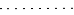 | |
The following table summarizes the permitted connectors between DRD elements:
Table 3.2. DRD connector rules
| Starts from | Connects to | Connection type | Example |
|---|---|---|---|
|
Decision |
Decision |
Information requirement |  |
|
Business knowledge model |
Decision |
Knowledge requirement |  |
|
Business knowledge model |  | ||
|
Decision service |
Decision |
Knowledge requirement |  |
|
Business knowledge model |  | ||
|
Input data |
Decision |
Information requirement |  |
|
Knowledge source |
Authority requirement | ||
|
Knowledge source |
Decision |
Authority requirement |  |
|
Business knowledge model |  | ||
|
Knowledge source |  | ||
|
Decision |
Text annotation |
Association |  |
|
Business knowledge model |  | ||
|
Knowledge source |  | ||
|
Input data |  |
The following example DRD illustrates some of these DMN components in practice:
Figure 3.1. Example DRD: Loan prequalification

The following example DRD illustrates DMN components that are part of a reusable decision service:
Figure 3.2. Example DRD: Phone call handling as a decision service

In a DMN decision service node, the decision nodes in the bottom segment incorporate input data from outside of the decision service to arrive at a final decision in the top segment of the decision service node. The resulting top-level decisions from the decision service are then implemented in any subsequent decisions or business knowledge requirements of the DMN model. You can reuse DMN decision services in other DMN models to apply the same decision logic with different input data and different outgoing connections.
3.3. Rule expressions in FEEL
Friendly Enough Expression Language (FEEL) is an expression language defined by the Object Management Group (OMG) DMN specification. FEEL expressions define the logic of a decision in a DMN model. FEEL is designed to facilitate both decision modeling and execution by assigning semantics to the decision model constructs. FEEL expressions in decision requirements diagrams (DRDs) occupy table cells in boxed expressions for decision nodes and business knowledge models.
For more information about FEEL in DMN, see the OMG Decision Model and Notation specification.
3.3.1. Data types in FEEL
Friendly Enough Expression Language (FEEL) supports the following data types:
- Numbers
- Strings
- Boolean values
- Dates
- Time
- Date and time
- Days and time duration
- Years and months duration
- Functions
- Contexts
- Ranges (or intervals)
- Lists
The DMN specification currently does not provide an explicit way of declaring a variable as a function, context, range, or list, but Red Hat Process Automation Manager extends the DMN built-in types to support variables of these types.
The following list describes each data type:
- Numbers
Numbers in FEEL are based on the IEEE 754-2008 Decimal 128 format, with 34 digits of precision. Internally, numbers are represented in Java as
BigDecimalswithMathContext DECIMAL128. FEEL supports only one number data type, so the same type is used to represent both integers and floating point numbers.FEEL numbers use a dot (
.) as a decimal separator. FEEL does not support-INF,+INF, orNaN. FEEL usesnullto represent invalid numbers.Red Hat Process Automation Manager extends the DMN specification and supports additional number notations:
-
Scientific: You can use scientific notation with the suffix
e<exp>orE<exp>. For example,1.2e3is the same as writing the expression1.2*10**3, but is a literal instead of an expression. -
Hexadecimal: You can use hexadecimal numbers with the prefix
0x. For example,0xffis the same as the decimal number255. Both uppercase and lowercase letters are supported. For example,0XFFis the same as0xff. -
Type suffixes: You can use the type suffixes
f,F,d,D,l, andL. These suffixes are ignored.
-
Scientific: You can use scientific notation with the suffix
- Strings
Strings in FEEL are any sequence of characters delimited by double quotation marks.
Example
"John Doe"
- Boolean values
-
FEEL uses three-valued boolean logic, so a boolean logic expression may have values
true,false, ornull. - Dates
Date literals are not supported in FEEL, but you can use the built-in
date()function to construct date values. Date strings in FEEL follow the format defined in the XML Schema Part 2: Datatypes document. The format is"YYYY-MM-DD"whereYYYYis the year with four digits,MMis the number of the month with two digits, andDDis the number of the day.Example:
date( "2017-06-23" )
Date objects have time equal to
"00:00:00", which is midnight. The dates are considered to be local, without a timezone.- Time
Time literals are not supported in FEEL, but you can use the built-in
time()function to construct time values. Time strings in FEEL follow the format defined in the XML Schema Part 2: Datatypes document. The format is"hh:mm:ss[.uuu][(+-)hh:mm]"wherehhis the hour of the day (from00to23),mmis the minutes in the hour, andssis the number of seconds in the minute. Optionally, the string may define the number of milliseconds (uuu) within the second and contain a positive (+) or negative (-) offset from UTC time to define its timezone. Instead of using an offset, you can use the letterzto represent the UTC time, which is the same as an offset of-00:00. If no offset is defined, the time is considered to be local.Examples:
time( "04:25:12" ) time( "14:10:00+02:00" ) time( "22:35:40.345-05:00" ) time( "15:00:30z" )
Time values that define an offset or a timezone cannot be compared to local times that do not define an offset or a timezone.
- Date and time
Date and time literals are not supported in FEEL, but you can use the built-in
date and time()function to construct date and time values. Date and time strings in FEEL follow the format defined in the XML Schema Part 2: Datatypes document. The format is"<date>T<time>", where<date>and<time>follow the prescribed XML schema formatting, conjoined byT.Examples:
date and time( "2017-10-22T23:59:00" ) date and time( "2017-06-13T14:10:00+02:00" ) date and time( "2017-02-05T22:35:40.345-05:00" ) date and time( "2017-06-13T15:00:30z" )
Date and time values that define an offset or a timezone cannot be compared to local date and time values that do not define an offset or a timezone.
ImportantIf your implementation of the DMN specification does not support spaces in the XML schema, use the keyword
dateTimeas a synonym ofdate and time.- Days and time duration
Days and time duration literals are not supported in FEEL, but you can use the built-in
duration()function to construct days and time duration values. Days and time duration strings in FEEL follow the format defined in the XML Schema Part 2: Datatypes document, but are restricted to only days, hours, minutes and seconds. Months and years are not supported.Examples:
duration( "P1DT23H12M30S" ) duration( "P23D" ) duration( "PT12H" ) duration( "PT35M" )
ImportantIf your implementation of the DMN specification does not support spaces in the XML schema, use the keyword
dayTimeDurationas a synonym ofdays and time duration.- Years and months duration
Years and months duration literals are not supported in FEEL, but you can use the built-in
duration()function to construct days and time duration values. Years and months duration strings in FEEL follow the format defined in the XML Schema Part 2: Datatypes document, but are restricted to only years and months. Days, hours, minutes, or seconds are not supported.Examples:
duration( "P3Y5M" ) duration( "P2Y" ) duration( "P10M" ) duration( "P25M" )
ImportantIf your implementation of the DMN specification does not support spaces in the XML schema, use the keyword
yearMonthDurationas a synonym ofyears and months duration.- Functions
FEEL has
functionliterals (or anonymous functions) that you can use to create functions. The DMN specification currently does not provide an explicit way of declaring a variable as afunction, but Red Hat Process Automation Manager extends the DMN built-in types to support variables of functions.Example:
function(a, b) a + b
In this example, the FEEL expression creates a function that adds the parameters
aandband returns the result.- Contexts
FEEL has
contextliterals that you can use to create contexts. Acontextin FEEL is a list of key and value pairs, similar to maps in languages like Java. The DMN specification currently does not provide an explicit way of declaring a variable as acontext, but Red Hat Process Automation Manager extends the DMN built-in types to support variables of contexts.Example:
{ x : 5, y : 3 }In this example, the expression creates a context with two entries,
xandy, representing a coordinate in a chart.In DMN 1.2, another way to create contexts is to create an item definition that contains the list of keys as attributes, and then declare the variable as having that item definition type.
The Red Hat Process Automation Manager DMN API supports DMN
ItemDefinitionstructural types in aDMNContextrepresented in two ways:-
User-defined Java type: Must be a valid JavaBeans object defining properties and getters for each of the components in the DMN
ItemDefinition. If necessary, you can also use the@FEELPropertyannotation for those getters representing a component name which would result in an invalid Java identifier. -
java.util.Mapinterface: The map needs to define the appropriate entries, with the keys corresponding to the component name in the DMNItemDefinition.
-
User-defined Java type: Must be a valid JavaBeans object defining properties and getters for each of the components in the DMN
- Ranges (or intervals)
FEEL has
rangeliterals that you can use to create ranges or intervals. Arangein FEEL is a value that defines a lower and an upper bound, where either can be open or closed. The DMN specification currently does not provide an explicit way of declaring a variable as arange, but Red Hat Process Automation Manager extends the DMN built-in types to support variables of ranges.The syntax of a range is defined in the following formats:
range := interval_start endpoint '..' endpoint interval_end interval_start := open_start | closed_start open_start := '(' | ']' closed_start := '[' interval_end := open_end | closed_end open_end := ')' | '[' closed_end := ']' endpoint := expressionThe expression for the endpoint must return a comparable value, and the lower bound endpoint must be lower than the upper bound endpoint.
For example, the following literal expression defines an interval between
1and10, including the boundaries (a closed interval on both endpoints):[ 1 .. 10 ]
The following literal expression defines an interval between 1 hour and 12 hours, including the lower boundary (a closed interval), but excluding the upper boundary (an open interval):
[ duration("PT1H") .. duration("PT12H") )You can use ranges in decision tables to test for ranges of values, or use ranges in simple literal expressions. For example, the following literal expression returns
trueif the value of a variablexis between0and100:x in [ 1 .. 100 ]
- Lists
FEEL has
listliterals that you can use to create lists of items. Alistin FEEL is represented by a comma-separated list of values enclosed in square brackets. The DMN specification currently does not provide an explicit way of declaring a variable as alist, but Red Hat Process Automation Manager extends the DMN built-in types to support variables of lists.Example:
[ 2, 3, 4, 5 ]
All lists in FEEL contain elements of the same type and are immutable. Elements in a list can be accessed by index, where the first element is
1. Negative indexes can access elements starting from the end of the list so that-1is the last element.For example, the following expression returns the second element of a list
x:x[2]
The following expression returns the second-to-last element of a list
x:x[-2]
Elements in a list can also be counted by the function
count, which uses the list of elements as the parameter.For example, the following expression returns
4:count([ 2, 3, 4, 5 ])
3.3.2. Built-in functions in FEEL
To promote interoperability with other platforms and systems, Friendly Enough Expression Language (FEEL) includes a library of built-in functions. The built-in FEEL functions are implemented in the Drools Decision Model and Notation (DMN) engine so that you can use the functions in your DMN decision services.
The following sections describe each built-in FEEL function, listed in the format NAME( PARAMETERS ). For more information about FEEL functions in DMN, see the OMG Decision Model and Notation specification.
3.3.2.1. Conversion functions
The following functions support conversion between values of different types. Some of these functions use specific string formats, such as the following examples:
-
date string: Follows the format defined in the XML Schema Part 2: Datatypes document, such as2020-06-01 time string: Follows one of the following formats:-
Format defined in the XML Schema Part 2: Datatypes document, such as
23:59:00z -
Format for a local time defined by ISO 8601 followed by
@and an IANA Timezone, such as00:01:00@Etc/UTC
-
Format defined in the XML Schema Part 2: Datatypes document, such as
-
date time string: Follows the format of adate stringfollowed byTand atime string, such as2012-12-25T11:00:00Z -
duration string: Follows the format ofdays and time durationandyears and months durationdefined in the XQuery 1.0 and XPath 2.0 Data Model, such asP1Y2M
- date( from ) - using date
Converts
fromto adatevalue.Table 3.3. Parameters
Parameter Type Format fromstringdate stringExample
date( "2012-12-25" ) - date( "2012-12-24" ) = duration( "P1D" )
- date( from ) - using date and time
Converts
fromto adatevalue and sets time components to null.Table 3.4. Parameters
Parameter Type fromdate and timeExample
date(date and time( "2012-12-25T11:00:00Z" )) = date( "2012-12-25" )
- date( year, month, day )
Produces a
datefrom the specified year, month, and day values.Table 3.5. Parameters
Parameter Type yearnumbermonthnumberdaynumberExample
date( 2012, 12, 25 ) = date( "2012-12-25" )
- date and time( date, time )
Produces a
date and timefrom the specified date and ignores any time components and the specified time.Table 3.6. Parameters
Parameter Type datedateordate and timetimetimeExample
date and time ( "2012-12-24T23:59:00" ) = date and time(date( "2012-12-24" ), time( "23:59:00" ))
- date and time( from )
Produces a
date and timefrom the specified string.Table 3.7. Parameters
Parameter Type Format fromstringdate time stringExample
date and time( "2012-12-24T23:59:00" ) + duration( "PT1M" ) = date and time( "2012-12-25T00:00:00" )
- time( from )
Produces a
timefrom the specified string.Table 3.8. Parameters
Parameter Type Format fromstringtime stringExample
time( "23:59:00z" ) + duration( "PT2M" ) = time( "00:01:00@Etc/UTC" )
- time( from )
Produces a
timefrom the specified parameter and ignores any date components.Table 3.9. Parameters
Parameter Type fromtimeordate and timeExample
time(date and time( "2012-12-25T11:00:00Z" )) = time( "11:00:00Z" )
- time( hour, minute, second, offset? )
Produces a
timefrom the specified hour, minute, and second component values.Table 3.10. Parameters
Parameter Type hournumberminutenumbersecondnumberoffset(Optional)days and time durationor nullExample
time( "23:59:00z" ) = time(23, 59, 0, duration( "PT0H" ))
- number( from, grouping separator, decimal separator )
Converts
fromto anumberusing the specified separators.Table 3.11. Parameters
Parameter Type fromstringrepresenting a valid numbergrouping separatorSpace ( ), comma (
,), period (.), or nulldecimal separatorSame types as
grouping separator, but the values cannot matchExample
number( "1 000,0", " ", "," ) = number( "1,000.0", ",", "." )
- string( from )
Provides a string representation of the specified parameter.
Table 3.12. Parameters
Parameter Type fromNon-null value
Examples
string( 1.1 ) = "1.1" string( null ) = null
- duration( from )
Converts
fromto adays and time durationvalue oryears and months durationvalue.Table 3.13. Parameters
Parameter Type Format fromstringduration stringExamples
date and time( "2012-12-24T23:59:00" ) - date and time( "2012-12-22T03:45:00" ) = duration( "P2DT20H14M" ) duration( "P2Y2M" ) = duration( "P26M" )
- years and months duration( from, to )
Calculates the
years and months durationbetween the two specified parameters.Table 3.14. Parameters
Parameter Type fromdateordate and timetodateordate and timeExample
years and months duration( date( "2011-12-22" ), date( "2013-08-24" ) ) = duration( "P1Y8M" )
3.3.2.2. Boolean functions
The following functions support Boolean operations.
- not( negand )
Performs the logical negation of the
negandoperand.Table 3.15. Parameters
Parameter Type negandbooleanExamples
not( true ) = false not( null ) = null
3.3.2.3. String functions
The following functions support string operations.
In FEEL, Unicode characters are counted based on their code points.
- substring( string, start position, length? )
Returns the substring from the start position for the specified length. The first character is at position value
1.Table 3.16. Parameters
Parameter Type stringstringstart positionnumberlength(Optional)numberExamples
substring( "testing",3 ) = "sting" substring( "testing",3,3 ) = "sti" substring( "testing", -2, 1 ) = "n" substring( "\U01F40Eab", 2 ) = "ab"
NoteIn FEEL, the string literal
"\U01F40Eab"is the🐎abstring (horse symbol followed byaandb).
- string length( string )
Calculates the length of the specified string.
Table 3.17. Parameters
Parameter Type stringstringExamples
string length( "tes" ) = 3 string length( "\U01F40Eab" ) = 3
- upper case( string )
Produces an uppercase version of the specified string.
Table 3.18. Parameters
Parameter Type stringstringExample
upper case( "aBc4" ) = "ABC4"
- lower case( string )
Produces a lowercase version of the specified string.
Table 3.19. Parameters
Parameter Type stringstringExample
lower case( "aBc4" ) = "abc4"
- substring before( string, match )
Calculates the substring before the match.
Table 3.20. Parameters
Parameter Type stringstringmatchstringExamples
substring before( "testing", "ing" ) = "test" substring before( "testing", "xyz" ) = ""
- substring after( string, match )
Calculates the substring after the match.
Table 3.21. Parameters
Parameter Type stringstringmatchstringExamples
substring after( "testing", "test" ) = "ing" substring after( "", "a" ) = ""
- replace( input, pattern, replacement, flags? )
Calculates the regular expression replacement.
Table 3.22. Parameters
Parameter Type inputstringpatternstringreplacementstringflags(Optional)stringNoteThis function uses regular expression parameters as defined in XQuery 1.0 and XPath 2.0 Functions and Operators.
Example
replace( "abcd", "(ab)|(a)", "[1=$1][2=$2]" ) = "[1=ab][2=]cd"
- contains( string, match )
Returns
trueif the string contains the match.Table 3.23. Parameters
Parameter Type stringstringmatchstringExample
contains( "testing", "to" ) = false
- starts with( string, match )
Returns
trueif the string starts with the matchTable 3.24. Parameters
Parameter Type stringstringmatchstringExample
starts with( "testing", "te" ) = true
- ends with( string, match )
Returns
trueif the string ends with the match.Table 3.25. Parameters
Parameter Type stringstringmatchstringExample
ends with( "testing", "g" ) = true
- matches( input, pattern, flags? )
Returns
trueif the input matches the regular expression.Table 3.26. Parameters
Parameter Type inputstringpatternstringflags(Optional)stringNoteThis function uses regular expression parameters as defined in XQuery 1.0 and XPath 2.0 Functions and Operators.
Example
matches( "teeesting", "^te*sting" ) = true
- split( string, delimiter )
Returns a list of the original string and splits it at the delimiter regular expression pattern.
Table 3.27. Parameters
Parameter Type stringstringdelimiterstringfor a regular expression patternNoteThis function uses regular expression parameters as defined in XQuery 1.0 and XPath 2.0 Functions and Operators.
Examples
split( "John Doe", "\\s" ) = ["John", "Doe"] split( "a;b;c;;", ";" ) = ["a","b","c","",""]
3.3.2.4. List functions
The following functions support list operations.
In FEEL, the index of the first element in a list is 1. The index of the last element in a list can be identified as -1.
- list contains( list, element )
Returns
trueif the list contains the element.Table 3.28. Parameters
Parameter Type listlistelementAny type, including null
Example
list contains( [1,2,3], 2 ) = true
- count( list )
Counts the elements in the list.
Table 3.29. Parameters
Parameter Type listlistExamples
count( [1,2,3] ) = 3 count( [] ) = 0 count( [1,[2,3]] ) = 2
- min( list )
Returns the minimum comparable element in the list.
Table 3.30. Parameters
Parameter Type listlistAlternative signature
min( e1, e2, ..., eN )
Examples
min( [1,2,3] ) = 1 min( 1 ) = 1 min( [1] ) = 1
- max( list )
Returns the maximum comparable element in the list.
Table 3.31. Parameters
Parameter Type listlistAlternative signature
max( e1, e2, ..., eN )
Examples
max( 1,2,3 ) = 3 max( [] ) = null
- sum( list )
Returns the sum of the numbers in the list.
Table 3.32. Parameters
Parameter Type listlistofnumberelementsAlternative signature
sum( n1, n2, ..., nN )
Examples
sum( [1,2,3] ) = 6 sum( 1,2,3 ) = 6 sum( 1 ) = 1 sum( [] ) = null
- mean( list )
Calculates the average (arithmetic mean) of the elements in the list.
Table 3.33. Parameters
Parameter Type listlistofnumberelementsAlternative signature
mean( n1, n2, ..., nN )
Examples
mean( [1,2,3] ) = 2 mean( 1,2,3 ) = 2 mean( 1 ) = 1 mean( [] ) = null
- all( list )
Returns
trueif all elements in the list are true.Table 3.34. Parameters
Parameter Type listlistofbooleanelementsAlternative signature
all( b1, b2, ..., bN )
Examples
all( [false,null,true] ) = false all( true ) = true all( [true] ) = true all( [] ) = true all( 0 ) = null
- any( list )
Returns
trueif any element in the list is true.Table 3.35. Parameters
Parameter Type listlistofbooleanelementsAlternative signature
any( b1, b2, ..., bN )
Examples
any( [false,null,true] ) = true any( false ) = false any( [] ) = false any( 0 ) = null
- sublist( list, start position, length? )
Returns the sublist from the start position, limited to the length elements.
Table 3.36. Parameters
Parameter Type listliststart positionnumberlength(Optional)numberExample
sublist( [4,5,6], 1, 2 ) = [4,5]
- append( list, item )
Creates a list that is appended to the item or items.
Table 3.37. Parameters
Parameter Type listlistitemAny type
Example
append( [1], 2, 3 ) = [1,2,3]
- concatenate( list )
Creates a list that is the result of the concatenated lists.
Table 3.38. Parameters
Parameter Type listlistExample
concatenate( [1,2],[3] ) = [1,2,3]
- insert before( list, position, newItem )
Creates a list with the
newIteminserted at the specified position.Table 3.39. Parameters
Parameter Type listlistpositionnumbernewItemAny type
Example
insert before( [1,3],1,2 ) = [2,1,3]
- remove( list, position )
Creates a list with the removed element excluded from the specified position.
Table 3.40. Parameters
Parameter Type listlistpositionnumberExample
remove( [1,2,3], 2 ) = [1,3]
- reverse( list )
Returns a reversed list.
Table 3.41. Parameters
Parameter Type listlistExample
reverse( [1,2,3] ) = [3,2,1]
- index of( list, match )
Returns indexes matching the element.
Parameters
-
listof typelist -
matchof any type
Table 3.42. Parameters
Parameter Type listlistmatchAny type
Example
index of( [1,2,3,2],2 ) = [2,4]
-
- union( list )
Returns a list of all the elements from multiple lists and excludes duplicates.
Table 3.43. Parameters
Parameter Type listlistExample
union( [1,2],[2,3] ) = [1,2,3]
- distinct values( list )
Returns a list of elements from a single list and excludes duplicates.
Table 3.44. Parameters
Parameter Type listlistExample
distinct values( [1,2,3,2,1] ) = [1,2,3]
- flatten( list )
Returns a flattened list.
Table 3.45. Parameters
Parameter Type listlistExample
flatten( [[1,2],[[3]], 4] ) = [1,2,3,4]
- product( list )
Returns the product of the numbers in the list.
Table 3.46. Parameters
Parameter Type listlistofnumberelementsAlternative signature
product( n1, n2, ..., nN )
Examples
product( [2, 3, 4] ) = 24 product( 2, 3, 4 ) = 24
- median( list )
Returns the median of the numbers in the list. If the number of elements is odd, the result is the middle element. If the number of elements is even, the result is the average of the two middle elements.
Table 3.47. Parameters
Parameter Type listlistofnumberelementsAlternative signature
median( n1, n2, ..., nN )
Examples
median( 8, 2, 5, 3, 4 ) = 4 median( [6, 1, 2, 3] ) = 2.5 median( [ ] ) = null
- stddev( list )
Returns the standard deviation of the numbers in the list.
Table 3.48. Parameters
Parameter Type listlistofnumberelementsAlternative signature
stddev( n1, n2, ..., nN )
Examples
stddev( 2, 4, 7, 5 ) = 2.081665999466132735282297706979931 stddev( [47] ) = null stddev( 47 ) = null stddev( [ ] ) = null
- mode( list )
Returns the mode of the numbers in the list. If multiple elements are returned, the numbers are sorted in ascending order.
Table 3.49. Parameters
Parameter Type listlistofnumberelementsAlternative signature
mode( n1, n2, ..., nN )
Examples
mode( 6, 3, 9, 6, 6 ) = [6] mode( [6, 1, 9, 6, 1] ) = [1, 6] mode( [ ] ) = [ ]
3.3.2.5. Numeric functions
The following functions support number operations.
- decimal( n, scale )
Returns a number with the specified scale.
Table 3.50. Parameters
Parameter Type nnumberscalenumberin the range[−6111..6176]NoteThis function is implemented to be consistent with the
FEEL:numberdefinition for rounding decimal numbers to the nearest even decimal number.Examples
decimal( 1/3, 2 ) = .33 decimal( 1.5, 0 ) = 2 decimal( 2.5, 0 ) = 2 decimal( 1.035, 2 ) = 1.04 decimal( 1.045, 2 ) = 1.04 decimal( 1.055, 2 ) = 1.06 decimal( 1.065, 2 ) = 1.06
- floor( n )
Returns the greatest integer that is less than or equal to the specified number.
Table 3.51. Parameters
Parameter Type nnumberExamples
floor( 1.5 ) = 1 floor( -1.5 ) = -2
- ceiling( n )
Returns the smallest integer that is greater than or equal to the specified number.
Table 3.52. Parameters
Parameter Type nnumberExamples
ceiling( 1.5 ) = 2 ceiling( -1.5 ) = -1
- abs( n )
Returns the absolute value.
Table 3.53. Parameters
Parameter Type nnumber,days and time duration, oryears and months durationExamples
abs( 10 ) = 10 abs( -10 ) = 10 abs( @"PT5H" ) = @"PT5H" abs( @"-PT5H" ) = @"PT5H"
- modulo( dividend, divisor )
Returns the remainder of the division of the dividend by the divisor. If either the dividend or divisor is negative, the result is of the same sign as the divisor.
NoteThis function is also expressed as
modulo(dividend, divisor) = dividend - divisor*floor(dividen d/divisor).Table 3.54. Parameters
Parameter Type dividendnumberdivisornumberExamples
modulo( 12, 5 ) = 2 modulo( -12,5 )= 3 modulo( 12,-5 )= -3 modulo( -12,-5 )= -2 modulo( 10.1, 4.5 )= 1.1 modulo( -10.1, 4.5 )= 3.4 modulo( 10.1, -4.5 )= -3.4 modulo( -10.1, -4.5 )= -1.1
- sqrt( number )
Returns the square root of the specified number.
Table 3.55. Parameters
Parameter Type nnumberExample
sqrt( 16 ) = 4
- log( number )
Returns the logarithm of the specified number.
Table 3.56. Parameters
Parameter Type nnumberExample
decimal( log( 10 ), 2 ) = 2.30
- exp( number )
Returns Euler’s number
eraised to the power of the specified number.Table 3.57. Parameters
Parameter Type nnumberExample
decimal( exp( 5 ), 2 ) = 148.41
- odd( number )
Returns
trueif the specified number is odd.Table 3.58. Parameters
Parameter Type nnumberExamples
odd( 5 ) = true odd( 2 ) = false
- even( number )
Returns
trueif the specified number is even.Table 3.59. Parameters
Parameter Type nnumberExamples
even( 5 ) = false even ( 2 ) = true
3.3.2.6. Date and time functions
The following functions support date and time operations.
- is( value1, value2 )
Returns
trueif both values are the same element in the FEEL semantic domain.Table 3.60. Parameters
Parameter Type value1Any type
value2Any type
Examples
is( date( "2012-12-25" ), time( "23:00:50" ) ) = false is( date( "2012-12-25" ), date( "2012-12-25" ) ) = true is( time( "23:00:50z" ), time( "23:00:50" ) ) = false
3.3.2.7. Range functions
The following functions support temporal ordering operations to establish relationships between single scalar values and ranges of such values. These functions are similar to the components in the Health Level Seven (HL7) International Clinical Quality Language (CQL) 1.4 syntax.
- before( )
Returns
truewhen an elementAis before an elementBand when the relevant requirements for evaluating totrueare also met.Signatures
-
before( point1 point2 ) -
before( point range ) -
before( range point ) -
before( range1,range2 )
Requirements for evaluating to
true-
point1 < point2 -
point < range.start or ( point = range.start and not(range.start included) ) -
range.end < point or ( range.end = point and not(range.end included) ) -
range1.end < range2.start or (( not(range1.end included) or not(range2.start included) ) and range1.end = range2.start )
Examples
before( 1, 10 ) = true before( 10, 1 ) = false before( 1, [1..10] ) = false before( 1, (1..10] ) = true before( 1, [5..10] ) = true before( [1..10], 10 ) = false before( [1..10), 10 ) = true before( [1..10], 15 ) = true before( [1..10], [15..20] ) = true before( [1..10], [10..20] ) = false before( [1..10), [10..20] ) = true before( [1..10], (10..20] ) = true
-
- after( )
Returns
truewhen an elementAis after an elementBand when the relevant requirements for evaluating totrueare also met.Signatures
-
after( point1 point2 ) -
after( point range ) -
after( range, point ) -
after( range1 range2 )
Requirements for evaluating to
true-
point1 > point2 -
point > range.end or ( point = range.end and not(range.end included) ) -
range.start > point or ( range.start = point and not(range.start included) ) -
range1.start > range2.end or (( not(range1.start included) or not(range2.end included) ) and range1.start = range2.end )
Examples
after( 10, 5 ) = true after( 5, 10 ) = false after( 12, [1..10] ) = true after( 10, [1..10) ) = true after( 10, [1..10] ) = false after( [11..20], 12 ) = false after( [11..20], 10 ) = true after( (11..20], 11 ) = true after( [11..20], 11 ) = false after( [11..20], [1..10] ) = true after( [1..10], [11..20] ) = false after( [11..20], [1..11) ) = true after( (11..20], [1..11] ) = true
-
- meets( )
Returns
truewhen an elementAmeets an elementBand when the relevant requirements for evaluating totrueare also met.Signatures
-
meets( range1, range2 )
Requirements for evaluating to
true-
range1.end included and range2.start included and range1.end = range2.start
Examples
meets( [1..5], [5..10] ) = true meets( [1..5), [5..10] ) = false meets( [1..5], (5..10] ) = false meets( [1..5], [6..10] ) = false
-
- met by( )
Returns
truewhen an elementAis met by an elementBand when the relevant requirements for evaluating totrueare also met.Signatures
-
met by( range1, range2 )
Requirements for evaluating to
true-
range1.start included and range2.end included and range1.start = range2.end
Examples
met by( [5..10], [1..5] ) = true met by( [5..10], [1..5) ) = false met by( (5..10], [1..5] ) = false met by( [6..10], [1..5] ) = false
-
- overlaps( )
Returns
truewhen an elementAoverlaps an elementBand when the relevant requirements for evaluating totrueare also met.Signatures
-
overlaps( range1, range2 )
Requirements for evaluating to
true-
( range1.end > range2.start or (range1.end = range2.start and (range1.end included or range2.end included)) ) and ( range1.start < range2.end or (range1.start = range2.end and range1.start included and range2.end included) )
Examples
overlaps( [1..5], [3..8] ) = true overlaps( [3..8], [1..5] ) = true overlaps( [1..8], [3..5] ) = true overlaps( [3..5], [1..8] ) = true overlaps( [1..5], [6..8] ) = false overlaps( [6..8], [1..5] ) = false overlaps( [1..5], [5..8] ) = true overlaps( [1..5], (5..8] ) = false overlaps( [1..5), [5..8] ) = false overlaps( [1..5), (5..8] ) = false overlaps( [5..8], [1..5] ) = true overlaps( (5..8], [1..5] ) = false overlaps( [5..8], [1..5) ) = false overlaps( (5..8], [1..5) ) = false
-
- overlaps before( )
Returns
truewhen an elementAoverlaps before an elementBand when the relevant requirements for evaluating totrueare also met.Signatures
-
overlaps before( range1 range2 )
Requirements for evaluating to
true-
( range1.start < range2.start or (range1.start = range2.start and range1.start included and range2.start included) ) and ( range1.end > range2.start or (range1.end = range2.start and range1.end included and range2.start included) ) and ( range1.end < range2.end or (range1.end = range2.end and (not(range1.end included) or range2.end included )) )
Examples
overlaps before( [1..5], [3..8] ) = true overlaps before( [1..5], [6..8] ) = false overlaps before( [1..5], [5..8] ) = true overlaps before( [1..5], (5..8] ) = false overlaps before( [1..5), [5..8] ) = false overlaps before( [1..5), (1..5] ) = true overlaps before( [1..5], (1..5] ) = true overlaps before( [1..5), [1..5] ) = false overlaps before( [1..5], [1..5] ) = false
-
- overlaps after( )
Returns
truewhen an elementAoverlaps after an elementBand when the relevant requirements for evaluating totrueare also met.Signatures
-
overlaps after( range1 range2 )
Requirements for evaluating to
true-
( range2.start < range1.start or (range2.start = range1.start and range2.start included and not( range1.start included)) ) and ( range2.end > range1.start or (range2.end = range1.start and range2.end included and range1.start included) ) and ( range2.end < range1.end or (range2.end = range1.end and (not(range2.end included) or range1.end included)) )
Examples
overlaps after( [3..8], [1..5] )= true overlaps after( [6..8], [1..5] )= false overlaps after( [5..8], [1..5] )= true overlaps after( (5..8], [1..5] )= false overlaps after( [5..8], [1..5) )= false overlaps after( (1..5], [1..5) )= true overlaps after( (1..5], [1..5] )= true overlaps after( [1..5], [1..5) )= false overlaps after( [1..5], [1..5] )= false overlaps after( (1..5), [1..5] )= false overlaps after( (1..5], [1..6] )= false overlaps after( (1..5], (1..5] )= false overlaps after( (1..5], [2..5] )= false
-
- finishes( )
Returns
truewhen an elementAfinishes an elementBand when the relevant requirements for evaluating totrueare also met.Signatures
-
finishes( point, range ) -
finishes( range1, range2 )
Requirements for evaluating to
true-
range.end included and range.end = point -
range1.end included = range2.end included and range1.end = range2.end and ( range1.start > range2.start or (range1.start = range2.start and (not(range1.start included) or range2.start included)) )
Examples
finishes( 10, [1..10] ) = true finishes( 10, [1..10) ) = false finishes( [5..10], [1..10] ) = true finishes( [5..10), [1..10] ) = false finishes( [5..10), [1..10) ) = true finishes( [1..10], [1..10] ) = true finishes( (1..10], [1..10] ) = true
-
- finished by( )
Returns
truewhen an elementAis finished by an elementBand when the relevant requirements for evaluating totrueare also met.Signatures
-
finished by( range, point ) -
finished by( range1 range2 )
Requirements for evaluating to
true-
range.end included and range.end = point -
range1.end included = range2.end included and range1.end = range2.end and ( range1.start < range2.start or (range1.start = range2.start and (range1.start included or not(range2.start included))) )
Examples
finished by( [1..10], 10 ) = true finished by( [1..10), 10 ) = false finished by( [1..10], [5..10] ) = true finished by( [1..10], [5..10) ) = false finished by( [1..10), [5..10) ) = true finished by( [1..10], [1..10] ) = true finished by( [1..10], (1..10] ) = true
-
- includes( )
Returns
truewhen an elementAincludes an elementBand when the relevant requirements for evaluating totrueare also met.Signatures
-
includes( range, point ) -
includes( range1, range2 )
Requirements for evaluating to
true-
(range.start < point and range.end > point) or (range.start = point and range.start included) or (range.end = point and range.end included) -
( range1.start < range2.start or (range1.start = range2.start and (range1.start included or not(range2.start included))) ) and ( range1.end > range2.end or (range1.end = range2.end and (range1.end included or not(range2.end included))) )
Examples
includes( [1..10], 5 ) = true includes( [1..10], 12 ) = false includes( [1..10], 1 ) = true includes( [1..10], 10 ) = true includes( (1..10], 1 ) = false includes( [1..10), 10 ) = false includes( [1..10], [4..6] ) = true includes( [1..10], [1..5] ) = true includes( (1..10], (1..5] ) = true includes( [1..10], (1..10) ) = true includes( [1..10), [5..10) ) = true includes( [1..10], [1..10) ) = true includes( [1..10], (1..10] ) = true includes( [1..10], [1..10] ) = true
-
- during( )
Returns
truewhen an elementAis during an elementBand when the relevant requirements for evaluating totrueare also met.Signatures
-
during( point, range ) -
during( range1 range2 )
Requirements for evaluating to
true-
(range.start < point and range.end > point) or (range.start = point and range.start included) or (range.end = point and range.end included) -
( range2.start < range1.start or (range2.start = range1.start and (range2.start included or not(range1.start included))) ) and ( range2.end > range1.end or (range2.end = range1.end and (range2.end included or not(range1.end included))) )
Examples
during( 5, [1..10] ) = true during( 12, [1..10] ) = false during( 1, [1..10] ) = true during( 10, [1..10] ) = true during( 1, (1..10] ) = false during( 10, [1..10) ) = false during( [4..6], [1..10] ) = true during( [1..5], [1..10] ) = true during( (1..5], (1..10] ) = true during( (1..10), [1..10] ) = true during( [5..10), [1..10) ) = true during( [1..10), [1..10] ) = true during( (1..10], [1..10] ) = true during( [1..10], [1..10] ) = true
-
- starts( )
Returns
truewhen an elementAstarts an elementBand when the relevant requirements for evaluating totrueare also met.Signatures
-
starts( point, range ) -
starts( range1, range2 )
Requirements for evaluating to
true-
range.start = point and range.start included -
range1.start = range2.start and range1.start included = range2.start included and ( range1.end < range2.end or (range1.end = range2.end and (not(range1.end included) or range2.end included)) )
Examples
starts( 1, [1..10] ) = true starts( 1, (1..10] ) = false starts( 2, [1..10] ) = false starts( [1..5], [1..10] ) = true starts( (1..5], (1..10] ) = true starts( (1..5], [1..10] ) = false starts( [1..5], (1..10] ) = false starts( [1..10], [1..10] ) = true starts( [1..10), [1..10] ) = true starts( (1..10), (1..10) ) = true
-
- started by( )
Returns
truewhen an elementAis started by an elementBand when the relevant requirements for evaluating totrueare also met.Signatures
-
started by( range, point ) -
started by( range1, range2 )
Requirements for evaluating to
true-
range.start = point and range.start included -
range1.start = range2.start and range1.start included = range2.start included and ( range2.end < range1.end or (range2.end = range1.end and (not(range2.end included) or range1.end included)) )
Examples
started by( [1..10], 1 ) = true started by( (1..10], 1 ) = false started by( [1..10], 2 ) = false started by( [1..10], [1..5] ) = true started by( (1..10], (1..5] ) = true started by( [1..10], (1..5] ) = false started by( (1..10], [1..5] ) = false started by( [1..10], [1..10] ) = true started by( [1..10], [1..10) ) = true started by( (1..10), (1..10) ) = true
-
- coincides( )
Returns
truewhen an elementAcoincides with an elementBand when the relevant requirements for evaluating totrueare also met.Signatures
-
coincides( point1, point2 ) -
coincides( range1, range2 )
Requirements for evaluating to
true-
point1 = point2 -
range1.start = range2.start and range1.start included = range2.start included and range1.end = range2.end and range1.end included = range2.end included
Examples
coincides( 5, 5 ) = true coincides( 3, 4 ) = false coincides( [1..5], [1..5] ) = true coincides( (1..5), [1..5] ) = false coincides( [1..5], [2..6] ) = false
-
3.3.2.8. Temporal functions
The following functions support general temporal operations.
- day of year( date )
Returns the Gregorian number of the day of the year.
Table 3.61. Parameters
Parameter Type datedateordate and timeExample
day of year( date(2019, 9, 17) ) = 260
- day of week( date )
Returns the Gregorian day of the week:
"Monday","Tuesday","Wednesday","Thursday","Friday","Saturday", or"Sunday".Table 3.62. Parameters
Parameter Type datedateordate and timeExample
day of week( date(2019, 9, 17) ) = "Tuesday"
- month of year( date )
Returns the Gregorian month of the year:
"January","February","March","April","May","June","July","August","September","October","November", or"December".Table 3.63. Parameters
Parameter Type datedateordate and timeExample
month of year( date(2019, 9, 17) ) = "September"
- month of year( date )
Returns the Gregorian week of the year as defined by ISO 8601.
Table 3.64. Parameters
Parameter Type datedateordate and timeExamples
week of year( date(2019, 9, 17) ) = 38 week of year( date(2003, 12, 29) ) = 1 week of year( date(2004, 1, 4) ) = 1 week of year( date(2005, 1, 1) ) = 53 week of year( date(2005, 1, 3) ) = 1 week of year( date(2005, 1, 9) ) = 1
3.3.2.9. Sort functions
The following functions support sorting operations.
- sort( list, precedes )
Returns a list of the same elements but ordered according to the sorting function.
Table 3.65. Parameters
Parameter Type listlistprecedesfunctionExample
sort( list: [3,1,4,5,2], precedes: function(x,y) x < y ) = [1,2,3,4,5]
3.3.2.10. Context functions
The following functions support context operations.
- get value( m, key )
Returns the value from the context for the specified entry key.
Table 3.66. Parameters
Parameter Type mcontextkeystringExamples
get value( {key1 : "value1"}, "key1" ) = "value1" get value( {key1 : "value1"}, "unexistent-key" ) = null- get entries( m )
Returns a list of key-value pairs for the specified context.
Table 3.67. Parameters
Parameter Type mcontextExample
get entries( {key1 : "value1", key2 : "value2"} ) = [ { key : "key1", value : "value1" }, {key : "key2", value : "value2"} ]
3.3.3. Variable and function names in FEEL
Unlike many traditional expression languages, Friendly Enough Expression Language (FEEL) supports spaces and a few special characters as part of variable and function names. A FEEL name must start with a letter, ?, or _ element. The unicode letter characters are also allowed. Variable names cannot start with a language keyword, such as and, true, or every. The remaining characters in a variable name can be any of the starting characters, as well as digits, white spaces, and special characters such as +, -, /, *, ', and ..
For example, the following names are all valid FEEL names:
- Age
- Birth Date
- Flight 234 pre-check procedure
Several limitations apply to variable and function names in FEEL:
- Ambiguity
-
The use of spaces, keywords, and other special characters as part of names can make FEEL ambiguous. The ambiguities are resolved in the context of the expression, matching names from left to right. The parser resolves the variable name as the longest name matched in scope. You can use
( )to disambiguate names if necessary. - Spaces in names
The DMN specification limits the use of spaces in FEEL names. According to the DMN specification, names can contain multiple spaces but not two consecutive spaces.
In order to make the language easier to use and avoid common errors due to spaces, Red Hat Process Automation Manager removes the limitation on the use of consecutive spaces. Red Hat Process Automation Manager supports variable names with any number of consecutive spaces, but normalizes them into a single space. For example, the variable references
First Namewith one space andFirst Namewith two spaces are both acceptable in Red Hat Process Automation Manager.Red Hat Process Automation Manager also normalizes the use of other white spaces, like the non-breakable white space that is common in web pages, tabs, and line breaks. From a Red Hat Process Automation Manager FEEL engine perspective, all of these characters are normalized into a single white space before processing.
- The keyword
in -
The keyword
inis the only keyword in the language that cannot be used as part of a variable name. Although the specifications allow the use of keywords in the middle of variable names, the use ofinin variable names conflicts with the grammar definition offor,everyandsomeexpression constructs.
3.4. DMN decision logic in boxed expressions
Boxed expressions in DMN are tables that you use to define the underlying logic of decision nodes and business knowledge models in a decision requirements diagram (DRD). Some boxed expressions can contain other boxed expressions, but the top-level boxed expression corresponds to the decision logic of a single DRD artifact. While DRDs represent the flow of a DMN decision model, boxed expressions define the actual decision logic of individual nodes. DRDs and boxed expressions together form a complete and functional DMN decision model.
The following are the types of DMN boxed expressions:
- Decision tables
- Literal expressions
- Contexts
- Relations
- Functions
- Invocations
- Lists
Red Hat Process Automation Manager does not provide boxed list expressions in Business Central, but supports a FEEL list data type that you can use in boxed literal expressions. For more information about the list data type and other FEEL data types in Red Hat Process Automation Manager, see Section 3.3.1, “Data types in FEEL”.
All Friendly Enough Expression Language (FEEL) expressions that you use in your boxed expressions must conform to the FEEL syntax requirements in the OMG Decision Model and Notation specification.
3.4.1. DMN decision tables
A decision table in DMN is a visual representation of one or more business rules in a tabular format. You use decision tables to define rules for a decision node that applies those rules at a given point in the decision model. Each rule consists of a single row in the table, and includes columns that define the conditions (input) and outcome (output) for that particular row. The definition of each row is precise enough to derive the outcome using the values of the conditions. Input and output values can be FEEL expressions or defined data type values.
For example, the following decision table determines credit score ratings based on a defined range of a loan applicant’s credit score:
Figure 3.3. Decision table for credit score rating

The following decision table determines the next step in a lending strategy for applicants depending on applicant loan eligibility and the bureau call type:
Figure 3.4. Decision table for lending strategy

The following decision table determines applicant qualification for a loan as the concluding decision node in a loan prequalification decision model:
Figure 3.5. Decision table for loan prequalification

Decision tables are a popular way of modeling rules and decision logic, and are used in many methodologies (such as DMN) and implementation frameworks (such as Drools).
Red Hat Process Automation Manager supports both DMN decision tables and Drools-native decision tables, but they are different types of assets with different syntax requirements and are not interchangeable. For more information about Drools-native decision tables in Red Hat Process Automation Manager, see Designing a decision service using spreadsheet decision tables.
3.4.1.1. Hit policies in DMN decision tables
Hit policies determine how to reach an outcome when multiple rules in a decision table match the provided input values. For example, if one rule in a decision table applies a sales discount to military personnel and another rule applies a discount to students, then when a customer is both a student and in the military, the decision table hit policy must indicate whether to apply one discount or the other (Unique, First) or both discounts (Collect Sum). You specify the single character of the hit policy (U, F, C+) in the upper-left corner of the decision table.
The following decision table hit policies are supported in DMN:
- Unique (U): Permits only one rule to match. Any overlap raises an error.
- Any (A): Permits multiple rules to match, but they must all have the same output. If multiple matching rules do not have the same output, an error is raised.
- Priority (P): Permits multiple rules to match, with different outputs. The output that comes first in the output values list is selected.
- First (F): Uses the first match in rule order.
Collect (C+, C>, C<, C#): Aggregates output from multiple rules based on an aggregation function.
- Collect ( C ): Aggregates values in an arbitrary list.
- Collect Sum (C+): Outputs the sum of all collected values. Values must be numeric.
- Collect Min (C<): Outputs the minimum value among the matches. The resulting values must be comparable, such as numbers, dates, or text (lexicographic order).
- Collect Max (C>): Outputs the maximum value among the matches. The resulting values must be comparable, such as numbers, dates or text (lexicographic order).
- Collect Count (C#): Outputs the number of matching rules.
3.4.2. Boxed literal expressions
A boxed literal expression in DMN is a literal FEEL expression as text in a table cell, typically with a labeled column and an assigned data type. You use boxed literal expressions to define simple or complex node logic or decision data directly in FEEL for a particular node in a decision. Literal FEEL expressions must conform to FEEL syntax requirements in the OMG Decision Model and Notation specification.
For example, the following boxed literal expression defines the minimum acceptable PITI calculation (principal, interest, taxes, and insurance) in a lending decision, where acceptable rate is a variable defined in the DMN model:
Figure 3.6. Boxed literal expression for minimum PITI value

The following boxed literal expression sorts a list of possible dating candidates (soul mates) in an online dating application based on their score on criteria such as age, location, and interests:
Figure 3.7. Boxed literal expression for matching online dating candidates
3.4.3. Boxed context expressions
A boxed context expression in DMN is a set of variable names and values with a result value. Each name-value pair is a context entry. You use context expressions to represent data definitions in decision logic and set a value for a desired decision element within the DMN decision model. A value in a boxed context expression can be a data type value or FEEL expression, or can contain a nested sub-expression of any type, such as a decision table, a literal expression, or another context expression.
For example, the following boxed context expression defines the factors for sorting delayed passengers in a flight-rebooking decision model, based on defined data types (tPassengerTable, tFlightNumberList):
Figure 3.8. Boxed context expression for flight passenger waiting list

The following boxed context expression defines the factors that determine whether a loan applicant can meet minimum mortgage payments based on principal, interest, taxes, and insurance (PITI), represented as a front-end ratio calculation with a sub-context expression:
Figure 3.9. Boxed context expression for front-end client PITI ratio

3.4.4. Boxed relation expressions
A boxed relation expression in DMN is a traditional data table with information about given entities, listed as rows. You use boxed relation tables to define decision data for relevant entities in a decision at a particular node. Boxed relation expressions are similar to context expressions in that they set variable names and values, but relation expressions contain no result value and list all variable values based on a single defined variable in each column.
For example, the following boxed relation expression provides information about employees in an employee rostering decision:
Figure 3.10. Boxed relation expression with employee information
3.4.5. Boxed function expressions
A boxed function expression in DMN is a parameterized boxed expression containing a literal FEEL expression, a nested context expression of an external JAVA or PMML function, or a nested boxed expression of any type. By default, all business knowledge models are defined as boxed function expressions. You use boxed function expressions to call functions on your decision logic and to define all business knowledge models.
For example, the following boxed function expression determines airline flight capacity in a flight-rebooking decision model:
Figure 3.11. Boxed function expression for flight capacity

The following boxed function expression contains a basic Java function as a context expression for determining absolute value in a decision model calculation:
Figure 3.12. Boxed function expression for absolute value
The following boxed function expression determines a monthly mortgage installment as a business knowledge model in a lending decision, with the function value defined as a nested context expression:
Figure 3.13. Boxed function expression for installment calculation in business knowledge model

The following boxed function expression uses a PMML model included in the DMN file to define the minimum acceptable PITI calculation (principal, interest, taxes, and insurance) in a lending decision:
Figure 3.14. Boxed function expression with an included PMML model in business knowledge model

3.4.6. Boxed invocation expressions
A boxed invocation expression in DMN is a boxed expression that invokes a business knowledge model. A boxed invocation expression contains the name of the business knowledge model to be invoked and a list of parameter bindings. Each binding is represented by two boxed expressions on a row: The box on the left contains the name of a parameter and the box on the right contains the binding expression whose value is assigned to the parameter to evaluate the invoked business knowledge model. You use boxed invocations to invoke at a particular decision node a business knowledge model defined in the decision model.
For example, the following boxed invocation expression invokes a Reassign Next Passenger business knowledge model as the concluding decision node in a flight-rebooking decision model:
Figure 3.15. Boxed invocation expression to reassign flight passengers

The following boxed invocation expression invokes an InstallmentCalculation business knowledge model to calculate a monthly installment amount for a loan before proceeding to affordability decisions:
Figure 3.16. Boxed invocation expression for required monthly installment
3.4.7. Boxed list expressions
A boxed list expression in DMN represents a FEEL list of items. You use boxed lists to define lists of relevant items for a particular node in a decision. You can also use literal FEEL expressions for list items in cells to create more complex lists.
For example, the following boxed list expression identifies approved credit score agencies in a loan application decision service:
Figure 3.17. Boxed list expression for approved credit score agencies
The following boxed list expression also identifies approved credit score agencies but uses FEEL logic to define the agency status (Inc., LLC, SA, GA) based on a DMN input node:
Figure 3.18. Boxed list expression using FEEL logic for approved credit score agency status


3.5. DMN model example
The following is a real-world DMN model example that demonstrates how you can use decision modeling to reach a decision based on input data, circumstances, and company guidelines. In this scenario, a flight from San Diego to New York is canceled, requiring the affected airline to find alternate arrangements for its inconvenienced passengers.
First, the airline collects the information necessary to determine how best to get the travelers to their destinations:
- Input data
- List of flights
- List of passengers
- Decisions
- Prioritize the passengers who will get seats on a new flight
- Determine which flights those passengers will be offered
- Business knowledge models
- The company process for determining passenger priority
- Any flights that have space available
- Company rules for determining how best to reassign inconvenienced passengers
The airline then uses the DMN standard to model its decision process in the following decision requirements diagram (DRD) for determining the best rebooking solution:
Figure 3.19. DRD for flight rebooking
Similar to flowcharts, DRDs use shapes to represent the different elements in a process. Ovals contain the two necessary input data, rectangles contain the decision points in the model, and rectangles with clipped corners (business knowledge models) contain reusable logic that can be repeatedly invoked.
The DRD draws logic for each element from boxed expressions that provide variable definitions using FEEL expressions or data type values.
Some boxed expressions are basic, such as the following decision for establishing a prioritized waiting list:
Figure 3.20. Boxed context expression example for prioritized wait list
Some boxed expressions are more complex with greater detail and calculation, such as the following business knowledge model for reassigning the next delayed passenger:
Figure 3.21. Boxed function expression for passenger reassignment

The following is the DMN source file for this decision model:
<dmn:definitions xmlns="https://www.drools.org/kie-dmn/Flight-rebooking" xmlns:dmn="http://www.omg.org/spec/DMN/20151101/dmn.xsd" xmlns:feel="http://www.omg.org/spec/FEEL/20140401" id="_0019_flight_rebooking" name="0019-flight-rebooking" namespace="https://www.drools.org/kie-dmn/Flight-rebooking">
<dmn:itemDefinition id="_tFlight" name="tFlight">
<dmn:itemComponent id="_tFlight_Flight" name="Flight Number">
<dmn:typeRef>feel:string</dmn:typeRef>
</dmn:itemComponent>
<dmn:itemComponent id="_tFlight_From" name="From">
<dmn:typeRef>feel:string</dmn:typeRef>
</dmn:itemComponent>
<dmn:itemComponent id="_tFlight_To" name="To">
<dmn:typeRef>feel:string</dmn:typeRef>
</dmn:itemComponent>
<dmn:itemComponent id="_tFlight_Dep" name="Departure">
<dmn:typeRef>feel:dateTime</dmn:typeRef>
</dmn:itemComponent>
<dmn:itemComponent id="_tFlight_Arr" name="Arrival">
<dmn:typeRef>feel:dateTime</dmn:typeRef>
</dmn:itemComponent>
<dmn:itemComponent id="_tFlight_Capacity" name="Capacity">
<dmn:typeRef>feel:number</dmn:typeRef>
</dmn:itemComponent>
<dmn:itemComponent id="_tFlight_Status" name="Status">
<dmn:typeRef>feel:string</dmn:typeRef>
</dmn:itemComponent>
</dmn:itemDefinition>
<dmn:itemDefinition id="_tFlightTable" isCollection="true" name="tFlightTable">
<dmn:typeRef>tFlight</dmn:typeRef>
</dmn:itemDefinition>
<dmn:itemDefinition id="_tPassenger" name="tPassenger">
<dmn:itemComponent id="_tPassenger_Name" name="Name">
<dmn:typeRef>feel:string</dmn:typeRef>
</dmn:itemComponent>
<dmn:itemComponent id="_tPassenger_Status" name="Status">
<dmn:typeRef>feel:string</dmn:typeRef>
</dmn:itemComponent>
<dmn:itemComponent id="_tPassenger_Miles" name="Miles">
<dmn:typeRef>feel:number</dmn:typeRef>
</dmn:itemComponent>
<dmn:itemComponent id="_tPassenger_Flight" name="Flight Number">
<dmn:typeRef>feel:string</dmn:typeRef>
</dmn:itemComponent>
</dmn:itemDefinition>
<dmn:itemDefinition id="_tPassengerTable" isCollection="true" name="tPassengerTable">
<dmn:typeRef>tPassenger</dmn:typeRef>
</dmn:itemDefinition>
<dmn:itemDefinition id="_tFlightNumberList" isCollection="true" name="tFlightNumberList">
<dmn:typeRef>feel:string</dmn:typeRef>
</dmn:itemDefinition>
<dmn:inputData id="i_Flight_List" name="Flight List">
<dmn:variable name="Flight List" typeRef="tFlightTable"/>
</dmn:inputData>
<dmn:inputData id="i_Passenger_List" name="Passenger List">
<dmn:variable name="Passenger List" typeRef="tPassengerTable"/>
</dmn:inputData>
<dmn:decision name="Prioritized Waiting List" id="d_PrioritizedWaitingList">
<dmn:variable name="Prioritized Waiting List" typeRef="tPassengerTable"/>
<dmn:informationRequirement>
<dmn:requiredInput href="#i_Passenger_List"/>
</dmn:informationRequirement>
<dmn:informationRequirement>
<dmn:requiredInput href="#i_Flight_List"/>
</dmn:informationRequirement>
<dmn:knowledgeRequirement>
<dmn:requiredKnowledge href="#b_PassengerPriority"/>
</dmn:knowledgeRequirement>
<dmn:context>
<dmn:contextEntry>
<dmn:variable name="Cancelled Flights" typeRef="tFlightNumberList"/>
<dmn:literalExpression>
<dmn:text>Flight List[ Status = "cancelled" ].Flight Number</dmn:text>
</dmn:literalExpression>
</dmn:contextEntry>
<dmn:contextEntry>
<dmn:variable name="Waiting List" typeRef="tPassengerTable"/>
<dmn:literalExpression>
<dmn:text>Passenger List[ list contains( Cancelled Flights, Flight Number ) ]</dmn:text>
</dmn:literalExpression>
</dmn:contextEntry>
<dmn:contextEntry>
<dmn:literalExpression>
<dmn:text>sort( Waiting List, passenger priority )</dmn:text>
</dmn:literalExpression>
</dmn:contextEntry>
</dmn:context>
</dmn:decision>
<dmn:decision name="Rebooked Passengers" id="d_RebookedPassengers">
<dmn:variable name="Rebooked Passengers" typeRef="tPassengerTable"/>
<dmn:informationRequirement>
<dmn:requiredDecision href="#d_PrioritizedWaitingList"/>
</dmn:informationRequirement>
<dmn:informationRequirement>
<dmn:requiredInput href="#i_Flight_List"/>
</dmn:informationRequirement>
<dmn:knowledgeRequirement>
<dmn:requiredKnowledge href="#b_ReassignNextPassenger"/>
</dmn:knowledgeRequirement>
<dmn:invocation>
<dmn:literalExpression>
<dmn:text>reassign next passenger</dmn:text>
</dmn:literalExpression>
<dmn:binding>
<dmn:parameter name="Waiting List"/>
<dmn:literalExpression>
<dmn:text>Prioritized Waiting List</dmn:text>
</dmn:literalExpression>
</dmn:binding>
<dmn:binding>
<dmn:parameter name="Reassigned Passengers List"/>
<dmn:literalExpression>
<dmn:text>[]</dmn:text>
</dmn:literalExpression>
</dmn:binding>
<dmn:binding>
<dmn:parameter name="Flights"/>
<dmn:literalExpression>
<dmn:text>Flight List</dmn:text>
</dmn:literalExpression>
</dmn:binding>
</dmn:invocation>
</dmn:decision>
<dmn:businessKnowledgeModel id="b_PassengerPriority" name="passenger priority">
<dmn:encapsulatedLogic>
<dmn:formalParameter name="Passenger1" typeRef="tPassenger"/>
<dmn:formalParameter name="Passenger2" typeRef="tPassenger"/>
<dmn:decisionTable hitPolicy="UNIQUE">
<dmn:input id="b_Passenger_Priority_dt_i_P1_Status" label="Passenger1.Status">
<dmn:inputExpression typeRef="feel:string">
<dmn:text>Passenger1.Status</dmn:text>
</dmn:inputExpression>
<dmn:inputValues>
<dmn:text>"gold", "silver", "bronze"</dmn:text>
</dmn:inputValues>
</dmn:input>
<dmn:input id="b_Passenger_Priority_dt_i_P2_Status" label="Passenger2.Status">
<dmn:inputExpression typeRef="feel:string">
<dmn:text>Passenger2.Status</dmn:text>
</dmn:inputExpression>
<dmn:inputValues>
<dmn:text>"gold", "silver", "bronze"</dmn:text>
</dmn:inputValues>
</dmn:input>
<dmn:input id="b_Passenger_Priority_dt_i_P1_Miles" label="Passenger1.Miles">
<dmn:inputExpression typeRef="feel:string">
<dmn:text>Passenger1.Miles</dmn:text>
</dmn:inputExpression>
</dmn:input>
<dmn:output id="b_Status_Priority_dt_o" label="Passenger1 has priority">
<dmn:outputValues>
<dmn:text>true, false</dmn:text>
</dmn:outputValues>
<dmn:defaultOutputEntry>
<dmn:text>false</dmn:text>
</dmn:defaultOutputEntry>
</dmn:output>
<dmn:rule id="b_Passenger_Priority_dt_r1">
<dmn:inputEntry id="b_Passenger_Priority_dt_r1_i1">
<dmn:text>"gold"</dmn:text>
</dmn:inputEntry>
<dmn:inputEntry id="b_Passenger_Priority_dt_r1_i2">
<dmn:text>"gold"</dmn:text>
</dmn:inputEntry>
<dmn:inputEntry id="b_Passenger_Priority_dt_r1_i3">
<dmn:text>>= Passenger2.Miles</dmn:text>
</dmn:inputEntry>
<dmn:outputEntry id="b_Passenger_Priority_dt_r1_o1">
<dmn:text>true</dmn:text>
</dmn:outputEntry>
</dmn:rule>
<dmn:rule id="b_Passenger_Priority_dt_r2">
<dmn:inputEntry id="b_Passenger_Priority_dt_r2_i1">
<dmn:text>"gold"</dmn:text>
</dmn:inputEntry>
<dmn:inputEntry id="b_Passenger_Priority_dt_r2_i2">
<dmn:text>"silver","bronze"</dmn:text>
</dmn:inputEntry>
<dmn:inputEntry id="b_Passenger_Priority_dt_r2_i3">
<dmn:text>-</dmn:text>
</dmn:inputEntry>
<dmn:outputEntry id="b_Passenger_Priority_dt_r2_o1">
<dmn:text>true</dmn:text>
</dmn:outputEntry>
</dmn:rule>
<dmn:rule id="b_Passenger_Priority_dt_r3">
<dmn:inputEntry id="b_Passenger_Priority_dt_r3_i1">
<dmn:text>"silver"</dmn:text>
</dmn:inputEntry>
<dmn:inputEntry id="b_Passenger_Priority_dt_r3_i2">
<dmn:text>"silver"</dmn:text>
</dmn:inputEntry>
<dmn:inputEntry id="b_Passenger_Priority_dt_r3_i3">
<dmn:text>>= Passenger2.Miles</dmn:text>
</dmn:inputEntry>
<dmn:outputEntry id="b_Passenger_Priority_dt_r3_o1">
<dmn:text>true</dmn:text>
</dmn:outputEntry>
</dmn:rule>
<dmn:rule id="b_Passenger_Priority_dt_r4">
<dmn:inputEntry id="b_Passenger_Priority_dt_r4_i1">
<dmn:text>"silver"</dmn:text>
</dmn:inputEntry>
<dmn:inputEntry id="b_Passenger_Priority_dt_r4_i2">
<dmn:text>"bronze"</dmn:text>
</dmn:inputEntry>
<dmn:inputEntry id="b_Passenger_Priority_dt_r4_i3">
<dmn:text>-</dmn:text>
</dmn:inputEntry>
<dmn:outputEntry id="b_Passenger_Priority_dt_r4_o1">
<dmn:text>true</dmn:text>
</dmn:outputEntry>
</dmn:rule>
<dmn:rule id="b_Passenger_Priority_dt_r5">
<dmn:inputEntry id="b_Passenger_Priority_dt_r5_i1">
<dmn:text>"bronze"</dmn:text>
</dmn:inputEntry>
<dmn:inputEntry id="b_Passenger_Priority_dt_r5_i2">
<dmn:text>"bronze"</dmn:text>
</dmn:inputEntry>
<dmn:inputEntry id="b_Passenger_Priority_dt_r5_i3">
<dmn:text>>= Passenger2.Miles</dmn:text>
</dmn:inputEntry>
<dmn:outputEntry id="b_Passenger_Priority_dt_r5_o1">
<dmn:text>true</dmn:text>
</dmn:outputEntry>
</dmn:rule>
</dmn:decisionTable>
</dmn:encapsulatedLogic>
<dmn:variable name="passenger priority" typeRef="feel:boolean"/>
</dmn:businessKnowledgeModel>
<dmn:businessKnowledgeModel id="b_ReassignNextPassenger" name="reassign next passenger">
<dmn:encapsulatedLogic>
<dmn:formalParameter name="Waiting List" typeRef="tPassengerTable"/>
<dmn:formalParameter name="Reassigned Passengers List" typeRef="tPassengerTable"/>
<dmn:formalParameter name="Flights" typeRef="tFlightTable"/>
<dmn:context>
<dmn:contextEntry>
<dmn:variable name="Next Passenger" typeRef="tPassenger"/>
<dmn:literalExpression>
<dmn:text>Waiting List[1]</dmn:text>
</dmn:literalExpression>
</dmn:contextEntry>
<dmn:contextEntry>
<dmn:variable name="Original Flight" typeRef="tFlight"/>
<dmn:literalExpression>
<dmn:text>Flights[ Flight Number = Next Passenger.Flight Number ][1]</dmn:text>
</dmn:literalExpression>
</dmn:contextEntry>
<dmn:contextEntry>
<dmn:variable name="Best Alternate Flight" typeRef="tFlight"/>
<dmn:literalExpression>
<dmn:text>Flights[ From = Original Flight.From and To = Original Flight.To and Departure > Original Flight.Departure and Status = "scheduled" and has capacity( item, Reassigned Passengers List ) ][1]</dmn:text>
</dmn:literalExpression>
</dmn:contextEntry>
<dmn:contextEntry>
<dmn:variable name="Reassigned Passenger" typeRef="tPassenger"/>
<dmn:context>
<dmn:contextEntry>
<dmn:variable name="Name" typeRef="feel:string"/>
<dmn:literalExpression>
<dmn:text>Next Passenger.Name</dmn:text>
</dmn:literalExpression>
</dmn:contextEntry>
<dmn:contextEntry>
<dmn:variable name="Status" typeRef="feel:string"/>
<dmn:literalExpression>
<dmn:text>Next Passenger.Status</dmn:text>
</dmn:literalExpression>
</dmn:contextEntry>
<dmn:contextEntry>
<dmn:variable name="Miles" typeRef="feel:number"/>
<dmn:literalExpression>
<dmn:text>Next Passenger.Miles</dmn:text>
</dmn:literalExpression>
</dmn:contextEntry>
<dmn:contextEntry>
<dmn:variable name="Flight Number" typeRef="feel:string"/>
<dmn:literalExpression>
<dmn:text>Best Alternate Flight.Flight Number</dmn:text>
</dmn:literalExpression>
</dmn:contextEntry>
</dmn:context>
</dmn:contextEntry>
<dmn:contextEntry>
<dmn:variable name="Remaining Waiting List" typeRef="tPassengerTable"/>
<dmn:literalExpression>
<dmn:text>remove( Waiting List, 1 )</dmn:text>
</dmn:literalExpression>
</dmn:contextEntry>
<dmn:contextEntry>
<dmn:variable name="Updated Reassigned Passengers List" typeRef="tPassengerTable"/>
<dmn:literalExpression>
<dmn:text>append( Reassigned Passengers List, Reassigned Passenger )</dmn:text>
</dmn:literalExpression>
</dmn:contextEntry>
<dmn:contextEntry>
<dmn:literalExpression>
<dmn:text>if count( Remaining Waiting List ) > 0 then reassign next passenger( Remaining Waiting List, Updated Reassigned Passengers List, Flights ) else Updated Reassigned Passengers List</dmn:text>
</dmn:literalExpression>
</dmn:contextEntry>
</dmn:context>
</dmn:encapsulatedLogic>
<dmn:variable name="reassign next passenger" typeRef="tPassengerTable"/>
<dmn:knowledgeRequirement>
<dmn:requiredKnowledge href="#b_HasCapacity"/>
</dmn:knowledgeRequirement>
</dmn:businessKnowledgeModel>
<dmn:businessKnowledgeModel id="b_HasCapacity" name="has capacity">
<dmn:encapsulatedLogic>
<dmn:formalParameter name="flight" typeRef="tFlight"/>
<dmn:formalParameter name="rebooked list" typeRef="tPassengerTable"/>
<dmn:literalExpression>
<dmn:text>flight.Capacity > count( rebooked list[ Flight Number = flight.Flight Number ] )</dmn:text>
</dmn:literalExpression>
</dmn:encapsulatedLogic>
<dmn:variable name="has capacity" typeRef="feel:boolean"/>
</dmn:businessKnowledgeModel>
</dmn:definitions>Chapter 4. DMN support in Red Hat Process Automation Manager
Red Hat Process Automation Manager provides design and runtime support for DMN 1.2 models at conformance level 3, and runtime-only support for DMN 1.1 and 1.3 models at conformance level 3. You can integrate DMN models with your Red Hat Process Automation Manager decision services in several ways:
- Design your DMN models directly in Business Central using the DMN designer.
- Import DMN files into your project in Business Central (Menu → Design → Projects → Import Asset). Any DMN 1.1 and 1.3 models (do not contain DMN 1.3 features) that you import into Business Central, open in the DMN designer, and save are converted to DMN 1.2 models.
- Package DMN files as part of your project knowledge JAR (KJAR) file without Business Central.
In addition to all DMN conformance level 3 requirements, Red Hat Process Automation Manager also includes enhancements and fixes to FEEL and DMN model components to optimize the experience of implementing DMN decision services with Red Hat Process Automation Manager. From a platform perspective, DMN models are like any other business asset in Red Hat Process Automation Manager, such as DRL files or spreadsheet decision tables, that you can include in your Red Hat Process Automation Manager project and deploy to KIE Server in order to start your DMN decision services.
For more information about including external DMN files with your Red Hat Process Automation Manager project packaging and deployment method, see Packaging and deploying a Red Hat Process Automation Manager project.
4.1. Configurable DMN properties in Red Hat Process Automation Manager
Red Hat Process Automation Manager provides the following DMN properties that you can configure when you execute your DMN models on KIE Server or on your client application. You can configure some of these properties using the kmodule.xml file in your Red Hat Process Automation Manager project when you deploy your project on KIE Server.
- org.kie.dmn.strictConformance
When enabled, this property disables by default any extensions or profiles provided beyond the DMN standard, such as some helper functions or enhanced features of DMN 1.2 backported into DMN 1.1. You can use this property to configure the decision engine to support only pure DMN features, such as when running the DMN Technology Compatibility Kit (TCK).
Default value:
false-Dorg.kie.dmn.strictConformance=true
- org.kie.dmn.runtime.typecheck
When enabled, this property enables verification of actual values conforming to their declared types in the DMN model, as input or output of DRD elements. You can use this property to verify whether data supplied to the DMN model or produced by the DMN model is compliant with what is specified in the model.
Default value:
false-Dorg.kie.dmn.runtime.typecheck=true
- org.kie.dmn.decisionservice.coercesingleton
By default, this property makes the result of a decision service defining a single output decision be the single value of the output decision value. When disabled, this property makes the result of a decision service defining a single output decision be a
contextwith the single entry for that decision. You can use this property to adjust your decision service outputs according to your project requirements.Default value:
true-Dorg.kie.dmn.decisionservice.coercesingleton=false
- org.kie.dmn.profiles.$PROFILE_NAME
When valorized with a Java fully qualified name, this property loads a DMN profile onto the decision engine at start time. You can use this property to implement a predefined DMN profile with supported features different from or beyond the DMN standard. For example, if you are creating DMN models using the Signavio DMN modeller, use this property to implement features from the Signavio DMN profile into your DMN decision service.
-Dorg.kie.dmn.profiles.signavio=org.kie.dmn.signavio.KieDMNSignavioProfile
- org.kie.dmn.runtime.listeners.$LISTENER_NAME
When valorized with a Java fully qualified name, this property loads and registers a DMN Runtime Listener onto the decision engine at start time. You can use this property to register a DMN listener in order to be notified of several events during DMN model evaluations.
To configure this property when deploying your project on KIE Server, modify this property in the
kmodule.xmlfile of your project. This approach is helpful when the listener is specific to your project and when the configuration must be applied in KIE Server only to your deployed project.<kmodule xmlns="http://www.drools.org/xsd/kmodule"> <configuration> <property key="org.kie.dmn.runtime.listeners.mylistener" value="org.acme.MyDMNListener"/> </configuration> </kmodule>To configure this property globally for your Red Hat Process Automation Manager environment, modify this property using a command terminal or any other global application configuration mechanism. This approach is helpful when the decision engine is embedded as part of your Java application.
-Dorg.kie.dmn.runtime.listeners.mylistener=org.acme.MyDMNListener
- org.kie.dmn.compiler.execmodel
When enabled, this property enables DMN decision table logic to be compiled into executable rule models during run time. You can use this property to evaluate DMN decision table logic more efficiently. This property is helpful when the executable model compilation was not originally performed during project compile time. Enabling this property may result in added compile time during the first evaluation by the decision engine, but subsequent compilations are more efficient.
Default value:
false-Dorg.kie.dmn.compiler.execmodel=true
4.2. Configurable DMN validation in Red Hat Process Automation Manager
By default, the kie-maven-plugin component in the pom.xml file of your Red Hat Process Automation Manager project uses the following <validateDMN> configurations to perform pre-compilation validation of DMN model assets and to perform DMN decision table static analysis:
-
VALIDATE_SCHEMA: DMN model files are verified against the DMN specification XSD schema to ensure that the files are valid XML and compliant with the specification. -
VALIDATE_MODEL: The pre-compilation analysis is performed for the DMN model to ensure that the basic semantic is aligned with the DMN specification. -
ANALYZE_DECISION_TABLE: DMN decision tables are statically analyzed for gaps or overlaps and to ensure that the semantic of the decision table follows best practices.
You can modify the default DMN validation and DMN decision table analysis behavior to perform only a specified validation during the project build, or you can disable this default behavior completely, as shown in the following examples:
Default configuration for DMN validation and decision table analysis
<plugin>
<groupId>org.kie</groupId>
<artifactId>kie-maven-plugin</artifactId>
<extensions>true</extensions>
<configuration>
<validateDMN>VALIDATE_SCHEMA,VALIDATE_MODEL,ANALYZE_DECISION_TABLE</validateDMN>
</configuration>
</plugin>
Configuration to perform only the DMN decision table static analysis
<plugin>
<groupId>org.kie</groupId>
<artifactId>kie-maven-plugin</artifactId>
<extensions>true</extensions>
<configuration>
<validateDMN>ANALYZE_DECISION_TABLE</validateDMN>
</configuration>
</plugin>
Configuration to perform only the XSD schema validation
<plugin>
<groupId>org.kie</groupId>
<artifactId>kie-maven-plugin</artifactId>
<extensions>true</extensions>
<configuration>
<validateDMN>VALIDATE_SCHEMA</validateDMN>
</configuration>
</plugin>
Configuration to perform only the DMN model validation
<plugin>
<groupId>org.kie</groupId>
<artifactId>kie-maven-plugin</artifactId>
<extensions>true</extensions>
<configuration>
<validateDMN>VALIDATE_MODEL</validateDMN>
</configuration>
</plugin>
Configuration to disable all DMN validation
<plugin>
<groupId>org.kie</groupId>
<artifactId>kie-maven-plugin</artifactId>
<extensions>true</extensions>
<configuration>
<validateDMN>disable</validateDMN>
</configuration>
</plugin>
If you enter an unrecognized <validateDMN> configuration flag, all pre-compilation validation is disabled and the Maven plugin emits related log messages.
Chapter 5. Creating and editing DMN models in Business Central
You can use the DMN designer in Business Central to design DMN decision requirements diagrams (DRDs) and define decision logic for a complete and functional DMN decision model. Red Hat Process Automation Manager provides design and runtime support for DMN 1.2 models at conformance level 3, and includes enhancements and fixes to FEEL and DMN model components to optimize the experience of implementing DMN decision services with Red Hat Process Automation Manager. Red Hat Process Automation Manager also provides runtime-only support for DMN 1.1 and 1.3 models at conformance level 3, but any DMN 1.1 and 1.3 models (do not contain DMN 1.3 features) that you import into Business Central, open in the DMN designer, and save are converted to DMN 1.2 models.
Procedure
- In Business Central, go to Menu → Design → Projects and click the project name.
Create or import a DMN file in your Business Central project.
To create a DMN file, click Add Asset → DMN, enter an informative DMN model name, select the appropriate Package, and click Ok.
To import an existing DMN file, click Import Asset, enter the DMN model name, select the appropriate Package, select the DMN file to upload, and click Ok.
The new DMN file is now listed in the DMN panel of the Project Explorer, and the DMN decision requirements diagram (DRD) canvas appears.
NoteIf you imported a DMN file that does not contain layout information, the imported decision requirements diagram (DRD) is formatted automatically in the DMN designer. Click Save in the DMN designer to save the DRD layout.
If an imported DRD is not automatically formatted, you can select the Perform automatic layout icon in the upper-right toolbar in the DMN designer to format the DRD.
Begin adding components to your new or imported DMN decision requirements diagram (DRD) by clicking and dragging one of the DMN nodes from the left toolbar:
Figure 5.1. Adding DRD components
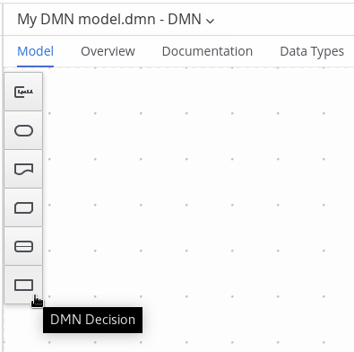The following DRD components are available:
- Decision: Use this node for a DMN decision, where one or more input elements determine an output based on defined decision logic.
- Business knowledge model: Use this node for reusable functions with one or more decision elements. Decisions that have the same logic but depend on different sub-input data or sub-decisions use business knowledge models to determine which procedure to follow.
- Knowledge source: Use this node for external authorities, documents, committees, or policies that regulate a decision or business knowledge model. Knowledge sources are references to real-world factors rather than executable business rules.
- Input data: Use this node for information used in a decision node or a business knowledge model. Input data usually includes business-level concepts or objects relevant to the business, such as loan applicant data used in a lending strategy.
- Text annotation: Use this node for explanatory notes associated with an input data node, decision node, business knowledge model, or knowledge source.
- Decision service: Use this node to enclose a set of reusable decisions implemented as a decision service for invocation. A decision service can be used in other DMN models and can be invoked from an external application or a BPMN business process.
- In the DMN designer canvas, double-click the new DRD node to enter an informative node name.
If the node is a decision or business knowledge model, select the node to display the node options and click the Edit icon to open the DMN boxed expression designer to define the decision logic for the node:
Figure 5.2. Opening a new decision node boxed expression
Figure 5.3. Opening a new business knowledge model boxed expression

By default, all business knowledge models are defined as boxed function expressions containing a literal FEEL expression, a nested context expression of an external JAVA or PMML function, or a nested boxed expression of any type.
For decision nodes, you click the undefined table to select the type of boxed expression you want to use, such as a boxed literal expression, boxed context expression, decision table, or other DMN boxed expression.
Figure 5.4. Selecting the logic type for a decision node
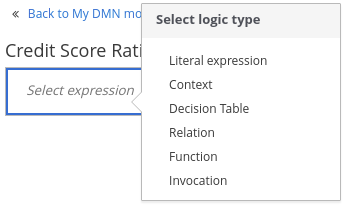For business knowledge models, you click the top-left function cell to select the function type, or right-click the function value cell, select Clear, and select a boxed expression of another type.
Figure 5.5. Selecting the function or other logic type for a business knowledge model

In the selected boxed expression designer for either a decision node (any expression type) or business knowledge model (function expression), click the applicable table cells to define the table name, variable data types, variable names and values, function parameters and bindings, or FEEL expressions to include in the decision logic.
You can right-click cells for additional actions where applicable, such as inserting or removing table rows and columns or clearing table contents.
The following is an example decision table for a decision node that determines credit score ratings based on a defined range of a loan applicant’s credit score:
Figure 5.6. Decision node decision table for credit score rating

The following is an example boxed function expression for a business knowledge model that calculates mortgage payments based on principal, interest, taxes, and insurance (PITI) as a literal expression:
Figure 5.7. Business knowledge model function for PITI calculation

- After you define the decision logic for the selected node, click Back to "<MODEL_NAME>" to return to the DRD view.
For the selected DRD node, use the available connection options to create and connect to the next node in the DRD, or click and drag a new node onto the DRD canvas from the left toolbar.
The node type determines which connection options are supported. For example, an Input data node can connect to a decision node, knowledge source, or text annotation using the applicable connection type, whereas a Knowledge source node can connect to any DRD element. A Decision node can connect only to another decision or a text annotation.
The following connection types are available, depending on the node type:
- Information requirement: Use this connection from an input data node or decision node to another decision node that requires the information.
- Knowledge requirement: Use this connection from a business knowledge model to a decision node or to another business knowledge model that invokes the decision logic.
- Authority requirement: Use this connection from an input data node or a decision node to a dependent knowledge source or from a knowledge source to a decision node, business knowledge model, or another knowledge source.
- Association: Use this connection from an input data node, decision node, business knowledge model, or knowledge source to a text annotation.
Figure 5.8. Connecting credit score input to the credit score rating decision
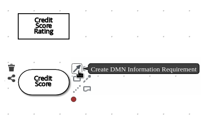
Continue adding and defining the remaining DRD components of your decision model. Periodically click Save in the DMN designer to save your work.
NoteAs you periodically save a DRD, the DMN designer performs a static validation of the DMN model and might produce error messages until the model is defined completely. After you finish defining the DMN model completely, if any errors remain, troubleshoot the specified problems accordingly.
After you add and define all components of the DRD, click Save to save and validate the completed DRD.
To adjust the DRD layout, you can select the Perform automatic layout icon in the upper-right toolbar of the DMN designer.
The following is an example DRD for a loan prequalification decision model:
Figure 5.9. Completed DRD for loan prequalification
The following is an example DRD for a phone call handling decision model using a reusable decision service:
Figure 5.10. Completed DRD for phone call handling with a decision service
In a DMN decision service node, the decision nodes in the bottom segment incorporate input data from outside of the decision service to arrive at a final decision in the top segment of the decision service node. The resulting top-level decisions from the decision service are then implemented in any subsequent decisions or business knowledge requirements of the DMN model. You can reuse DMN decision services in other DMN models to apply the same decision logic with different input data and different outgoing connections.
5.1. Defining DMN decision logic in boxed expressions in Business Central
Boxed expressions in DMN are tables that you use to define the underlying logic of decision nodes and business knowledge models in a decision requirements diagram (DRD). Some boxed expressions can contain other boxed expressions, but the top-level boxed expression corresponds to the decision logic of a single DRD artifact. While DRDs represent the flow of a DMN decision model, boxed expressions define the actual decision logic of individual nodes. DRDs and boxed expressions together form a complete and functional DMN decision model.
You can use the DMN designer in Business Central to define decision logic for your DRD components using built-in boxed expressions.
Prerequisites
- A DMN file is created or imported in Business Central.
Procedure
- In Business Central, go to Menu → Design → Projects, click the project name, and select the DMN file you want to modify.
In the DMN designer canvas, select a decision node or business knowledge model node that you want to define and click the Edit icon to open the DMN boxed expression designer:
Figure 5.11. Opening a new decision node boxed expression
Figure 5.12. Opening a new business knowledge model boxed expression
By default, all business knowledge models are defined as boxed function expressions containing a literal FEEL expression, a nested context expression of an external JAVA or PMML function, or a nested boxed expression of any type.
For decision nodes, you click the undefined table to select the type of boxed expression you want to use, such as a boxed literal expression, boxed context expression, decision table, or other DMN boxed expression.
Figure 5.13. Selecting the logic type for a decision node
For business knowledge model nodes, you click the top-left function cell to select the function type, or right-click the function value cell, select Clear, and select a boxed expression of another type.
Figure 5.14. Selecting the function or other logic type for a business knowledge model
For this example, use a decision node and select Decision Table as the boxed expression type.
A decision table in DMN is a visual representation of one or more rules in a tabular format. Each rule consists of a single row in the table, and includes columns that define the conditions (input) and outcome (output) for that particular row.
-
Click the input column header to define the name and data type for the input condition. For example, name the input column Credit Score.FICO with a
numberdata type. This column specifies numeric credit score values or ranges of loan applicants. Click the output column header to define the name and data type for the output values. For example, name the output column Credit Score Rating and next to the Data Type option, click Manage to go to the Data Types page where you can create a custom data type with score ratings as constraints.
Figure 5.15. Managing data types for a column header value

On the Data Types page, click New Data Type to add a new data type or click Import Data Object to import an existing data object from your project that you want to use as a DMN data type.
If you import a data object from your project as a DMN data type and then that object is updated, you must re-import the data object as a DMN data type to apply the changes in your DMN model.
For this example, click New Data Type and create a Credit_Score_Rating data type as a
string:Figure 5.16. Adding a new data type
Click Add Constraints, select Enumeration from the drop-down options, and add the following constraints:
-
"Excellent" -
"Good" -
"Fair" -
"Poor" -
"Bad"
Figure 5.17. Adding constraints to the new data type
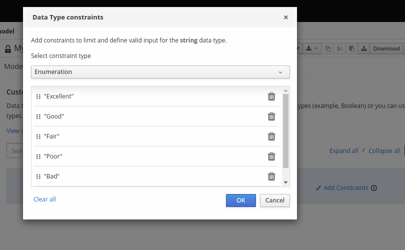To change the order of data type constraints, you can click the left end of the constraint row and drag the row as needed:
Figure 5.18. Dragging constraints to change constraint order
For information about constraint types and syntax requirements for the specified data type, see the Decision Model and Notation specification.
-
- Click OK to save the constraints and click the check mark to the right of the data type to save the data type.
- Return to the Credit Score Rating decision table, click the Credit Score Rating column header, and set the data type to this new custom data type.
Use the Credit Score.FICO input column to define credit score values or ranges of values, and use the Credit Score Rating column to specify one of the corresponding ratings you defined in the Credit_Score_Rating data type.
Right-click any value cell to insert or delete rows (rules) or columns (clauses).
Figure 5.19. Decision node decision table for credit score rating
After you define all rules, click the top-left corner of the decision table to define the rule Hit Policy and Builtin Aggregator (for COLLECT hit policy only).
The hit policy determines how to reach an outcome when multiple rules in a decision table match the provided input values. The built-in aggregator determines how to aggregate rule values when you use the COLLECT hit policy.
Figure 5.20. Defining the decision table hit policy

The following example is a more complex decision table that determines applicant qualification for a loan as the concluding decision node in the same loan prequalification decision model:
Figure 5.21. Decision table for loan prequalification
For boxed expression types other than decision tables, you follow these guidelines similarly to navigate the boxed expression tables and define variables and parameters for decision logic, but according to the requirements of the boxed expression type. Some boxed expressions, such as boxed literal expressions, can be single-column tables, while other boxed expressions, such as function, context, and invocation expressions, can be multi-column tables with nested boxed expressions of other types.
For example, the following boxed context expression defines the parameters that determine whether a loan applicant can meet minimum mortgage payments based on principal, interest, taxes, and insurance (PITI), represented as a front-end ratio calculation with a sub-context expression:
Figure 5.22. Boxed context expression for front-end client PITI ratio
The following boxed function expression determines a monthly mortgage installment as a business knowledge model in a lending decision, with the function value defined as a nested context expression:
Figure 5.23. Boxed function expression for installment calculation in business knowledge model
For more information and examples of each boxed expression type, see Section 3.4, “DMN decision logic in boxed expressions”.
5.2. Creating custom data types for DMN boxed expressions in Business Central
In DMN boxed expressions in Business Central, data types determine the structure of the data that you use within an associated table, column, or field in the boxed expression. You can use default DMN data types (such as String, Number, Boolean) or you can create custom data types to specify additional fields and constraints that you want to implement for the boxed expression values.
Custom data types that you create for a boxed expression can be simple or structured:
-
Simple data types have only a name and a type assignment. Example:
Age (number). -
Structured data types contain multiple fields associated with a parent data type. Example: A single type
Personcontaining the fieldsName (string),Age (number),Email (string).
Prerequisites
- A DMN file is created or imported in Business Central.
Procedure
- In Business Central, go to Menu → Design → Projects, click the project name, and select the DMN file you want to modify.
- In the DMN designer canvas, select a decision node or business knowledge model for which you want to define the data types and click the Edit icon to open the DMN boxed expression designer.
If the boxed expression is for a decision node that is not yet defined, click the undefined table to select the type of boxed expression you want to use, such as a boxed literal expression, boxed context expression, decision table, or other DMN boxed expression.
Figure 5.24. Selecting the logic type for a decision node
Click the cell for the table header, column header, or parameter field (depending on the boxed expression type) for which you want to define the data type and click Manage to go to the Data Types page where you can create a custom data type.
Figure 5.25. Managing data types for a column header value
You can also set and manage custom data types for a specified decision node or business knowledge model node by selecting the Properties icon in the upper-right corner of the DMN designer:
Figure 5.26. Managing data types in decision requirements diagram (DRD) properties
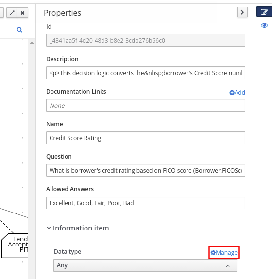The data type that you define for a specified cell in a boxed expression determines the structure of the data that you use within that associated table, column, or field in the boxed expression.
In this example, an output column Credit Score Rating for a DMN decision table defines a set of custom credit score ratings based on an applicant’s credit score.
On the Data Types page, click New Data Type to add a new data type or click Import Data Object to import an existing data object from your project that you want to use as a DMN data type.
If you import a data object from your project as a DMN data type and then that object is updated, you must re-import the data object as a DMN data type to apply the changes in your DMN model.
For this example, click New Data Type and create a Credit_Score_Rating data type as a
string:Figure 5.27. Adding a new data type
If the data type requires a list of items, enable the List setting.
Click Add Constraints, select Enumeration from the drop-down options, and add the following constraints:
-
"Excellent" -
"Good" -
"Fair" -
"Poor" -
"Bad"
Figure 5.28. Adding constraints to the new data type
To change the order of data type constraints, you can click the left end of the constraint row and drag the row as needed:
Figure 5.29. Dragging constraints to change constraint order
For information about constraint types and syntax requirements for the specified data type, see the Decision Model and Notation specification.
-
- Click OK to save the constraints and click the check mark to the right of the data type to save the data type.
Return to the Credit Score Rating decision table, click the Credit Score Rating column header, set the data type to this new custom data type, and define the rule values for that column with the rating constraints that you specified.
Figure 5.30. Decision table for credit score rating
In the DMN decision model for this scenario, the Credit Score Rating decision flows into the following Loan Prequalification decision that also requires custom data types:
Figure 5.31. Decision table for loan prequalification

Continuing with this example, return to the Data Types window, click New Data Type, and create a Loan_Qualification data type as a
Structurewith no constraints.When you save the new structured data type, the first sub-field appears so that you can begin defining nested data fields in this parent data type. You can use these sub-fields in association with the parent structured data type in boxed expressions, such as nested column headers in decision tables or nested table parameters in context or function expressions.
For additional sub-fields, select the addition icon next to the Loan_Qualification data type:
Figure 5.32. Adding a new structured data type with nested fields

For this example, under the structured Loan_Qualification data type, add a Qualification field with
"Qualified"and"Not Qualified"enumeration constraints, and a Reason field with no constraints. Add also a simple Back_End_Ratio and a Front_End_Ratio data type, both with"Sufficient"and"Insufficient"enumeration constraints.Click the check mark to the right of each data type that you create to save your changes.
Figure 5.33. Adding nested data types with constraints
To change the order or nesting of data types, you can click the left end of the data type row and drag the row as needed:
Figure 5.34. Dragging data types to change data type order or nesting
Return to the decision table and, for each column, click the column header cell, set the data type to the new corresponding custom data type, and define the rule values as needed for the column with the constraints that you specified, if applicable.
Figure 5.35. Decision table for loan prequalification
For boxed expression types other than decision tables, you follow these guidelines similarly to navigate the boxed expression tables and define custom data types as needed.
For example, the following boxed function expression uses custom tCandidate and tProfile structured data types to associate data for online dating compatibility:
Figure 5.36. Boxed function expression for online dating compatibility

Figure 5.37. Custom data type definitions for online dating compatibility

Figure 5.38. Parameter definitions with custom data types for online dating compatibility

5.3. Included models in DMN files in Business Central
In the DMN designer in Business Central, you can use the Included Models tab to include other DMN models and Predictive Model Markup Language (PMML) models from your project in a specified DMN file. When you include a DMN model within another DMN file, you can use all of the nodes and logic from both models in the same decision requirements diagram (DRD). When you include a PMML model within a DMN file, you can invoke that PMML model as a boxed function expression for a DMN decision node or business knowledge model node.
You cannot include DMN or PMML models from other projects in Business Central.
5.3.1. Including other DMN models within a DMN file in Business Central
In Business Central, you can include other DMN models from your project in a specified DMN file. When you include a DMN model within another DMN file, you can use all of the nodes and logic from both models in the same decision requirements diagram (DRD), but you cannot edit the nodes from the included model. To edit nodes from included models, you must update the source file for the included model directly. If you update the source file for an included DMN model, open the DMN file where the DMN model is included (or close an re-open) to verify the changes.
You cannot include DMN models from other projects in Business Central.
Prerequisites
-
The DMN models are created or imported (as
.dmnfiles) in the same project in Business Central as the DMN file in which you want to include the models.
Procedure
- In Business Central, go to Menu → Design → Projects, click the project name, and select the DMN file you want to modify.
- In the DMN designer, click the Included Models tab.
Click Include Model, select a DMN model from your project in the Models list, enter a unique name for the included model, and click Include:
Figure 5.39. Including a DMN model
The DMN model is added to this DMN file, and all DRD nodes from the included model are listed under Decision Components in the Decision Navigator view:
Figure 5.40. DMN file with decision components from the included DMN model
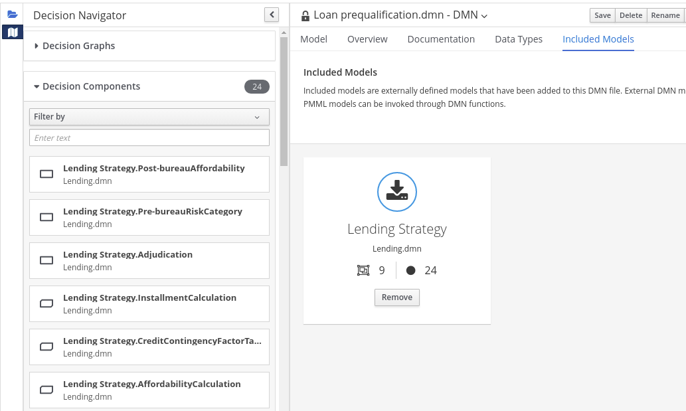All data types from the included model are also listed in read-only mode in the Data Types tab for the DMN file:
Figure 5.41. DMN file with data types from the included DMN model

In the Model tab of the DMN designer, click and drag the included DRD components onto the canvas to begin implementing them in your DRD:
Figure 5.42. Adding DRD components from the included DMN model
To edit DRD nodes or data types from included models, you must update the source file for the included model directly. If you update the source file for an included DMN model, open the DMN file where the DMN model is included (or close an re-open) to verify the changes.
To edit the included model name or to remove the included model from the DMN file, use the Included Models tab in the DMN designer.
ImportantWhen you remove an included model, any nodes from that included model that are currently used in the DRD are also removed.
5.3.2. Including PMML models within a DMN file in Business Central
In Business Central, you can include Predictive Model Markup Language (PMML) models from your project in a specified DMN file. When you include a PMML model within a DMN file, you can invoke that PMML model as a boxed function expression for a DMN decision node or business knowledge model node. If you update the source file for an included PMML model, you must remove and re-include the PMML model in the DMN file to apply the source changes.
You cannot include PMML models from other projects in Business Central.
Prerequisites
-
The PMML models are imported (as
.pmmlfiles) in the same project in Business Central as the DMN file in which you want to include the models.
Procedure
In your DMN project, add the following dependencies to the project
pom.xmlfile to enable PMML evaluation:<!-- Required for the PMML compiler --> <dependency> <groupId>org.drools</groupId> <artifactId>kie-pmml</artifactId> <version>${rhpam.version}</version> <scope>provided</scope> </dependency> <!-- Alternative dependencies for JPMML Evaluator, override `kie-pmml` dependency --> <dependency> <groupId>org.kie</groupId> <artifactId>kie-dmn-jpmml</artifactId> <version>${rhpam.version}</version> <scope>provided</scope> </dependency> <dependency> <groupId>org.jpmml</groupId> <artifactId>pmml-evaluator</artifactId> <version>1.5.1</version> <scope>provided</scope> </dependency> <dependency> <groupId>org.jpmml</groupId> <artifactId>pmml-evaluator-extension</artifactId> <version>1.5.1</version> <scope>provided</scope> </dependency>To access the project
pom.xmlfile in Business Central, you can select any existing asset in the project and then in the Project Explorer menu on the left side of the screen, click the Customize View gear icon and select Repository View → pom.xml.If you want to use the full PMML specification implementation with the Java Evaluator API for PMML (JPMML), use the alternative set of JPMML dependencies in your DMN project. If the JPMML dependencies and the standard
kie-pmmldependency are both present, thekie-pmmldependency is disabled. For information about JPMML licensing terms, see Openscoring.io.ImportantThe legacy
kie-pmmldependency is deprecated with Red Hat Process Automation Manager 7.10.0 and will be replaced bykie-pmml-trustydependency in a future Red Hat Process Automation Manager release.NoteInstead of specifying a Red Hat Process Automation Manager
<version>for individual dependencies, consider adding the Red Hat Business Automation bill of materials (BOM) dependency to your projectpom.xmlfile. The Red Hat Business Automation BOM applies to both Red Hat Decision Manager and Red Hat Process Automation Manager. When you add the BOM files, the correct versions of transitive dependencies from the provided Maven repositories are included in the project.Example BOM dependency:
<dependency> <groupId>com.redhat.ba</groupId> <artifactId>ba-platform-bom</artifactId> <version>7.10.0.redhat-00002</version> <scope>import</scope> <type>pom</type> </dependency>
For more information about the Red Hat Business Automation BOM, see What is the mapping between RHPAM product and maven library version?.
If you added the JPMML dependencies in your DMN project to use the JPMML Evaluator, download the following JAR files and add them to the
~/kie-server.war/WEB-INF/liband~/business-central.war/WEB-INF/libdirectories in your Red Hat Process Automation Manager distribution:-
kie-dmn-jpmmlJAR file in the Red Hat Process Automation Manager 7.10.0 Maven Repository distribution (rhpam-7.10.0-maven-repository/maven-repository/org/kie/kie-dmn-jpmml/7.48.0.Final-redhat-00002/kie-dmn-jpmml-7.48.0.Final-redhat-00002.jar) from the Red Hat Customer Portal - JPMML Evaluator 1.5.1 JAR file from the online Maven repository
- JPMML Evaluator Extensions 1.5.1 JAR file from the online Maven repository
These artifacts are required to enable JPMML evaluation in KIE Server and Business Central.
ImportantRed Hat supports integration with the Java Evaluator API for PMML (JPMML) for PMML execution in Red Hat Process Automation Manager. However, Red Hat does not support the JPMML libraries directly. If you include JPMML libraries in your Red Hat Process Automation Manager distribution, see the Openscoring.io licensing terms for JPMML.
-
- In Business Central, go to Menu → Design → Projects, click the project name, and select the DMN file you want to modify.
- In the DMN designer, click the Included Models tab.
Click Include Model, select a PMML model from your project in the Models list, enter a unique name for the included model, and click Include:
Figure 5.43. Including a PMML model

The PMML model is added to this DMN file:
Figure 5.44. DMN file with included PMML model
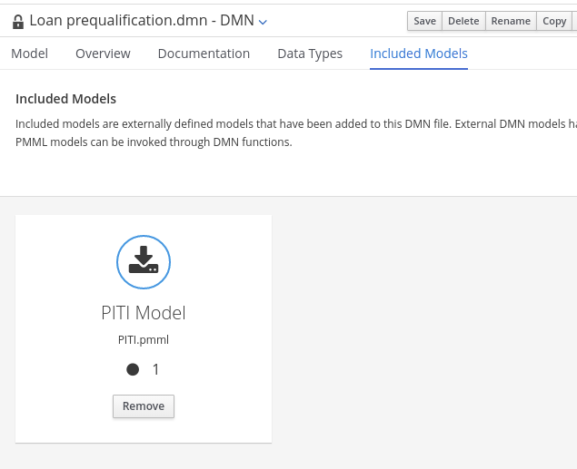In the Model tab of the DMN designer, select or create the decision node or business knowledge model node in which you want to invoke the PMML model and click the Edit icon to open the DMN boxed expression designer:
Figure 5.45. Opening a new decision node boxed expression
Figure 5.46. Opening a new business knowledge model boxed expression
- Set the expression type to Function (default for business knowledge model nodes), click the top-left function cell, and select PMML.
In the document and model rows in the table, double-click the undefined cells to specify the included PMML document and the relevant PMML model within that document:
Figure 5.47. Adding a PMML model in a DMN business knowledge model
Figure 5.48. Example PMML definition in a DMN business knowledge model
If you update the source file for an included PMML model, you must remove and re-include the PMML model in the DMN file to apply the source changes.
To edit the included model name or to remove the included model from the DMN file, use the Included Models tab in the DMN designer.
5.4. Creating DMN models with multiple diagrams in Business Central
For complex DMN models, you can use the DMN designer in Business Central to design multiple DMN decision requirements diagrams (DRDs) that represent parts of the overall decision requirements graph (DRG) for the DMN decision model. In simple cases, you can use a single DRD to represent all of the overall DRG for the decision model, but in complex cases, a single DRD can become large and difficult to follow. Therefore, to better organize DMN decision models with many decision requirements, you can divide the model into smaller nested DRDs that constitute the larger central DRD representation of the overall DRG.
Prerequisites
- You understand how to design DRDs in Business Central. For information about creating DRDs, see Chapter 5, Creating and editing DMN models in Business Central.
Procedure
- In Business Central, navigate to your DMN project and create or import a DMN file in the project.
- Open the new or imported DMN file to view the DRD in the DMN designer, and begin designing or modifying the DRD using the DMN nodes in the left toolbar.
For any DMN nodes that you want to define in a separate nested DRD, select the node, click the DRD Actions icon, and select from the available options.
Figure 5.49. DRD actions icon for subdividing a DRD

The following options are available:
- Create: Use this option to create a nested DRD where you can separately define the DMN components and diagram for the selected node.
- Add to: If you already created a nested DRD, use this option to add the selected node to an existing DRD.
- Remove: If the node that you selected is already within a nested DRD, use this option to remove the node from that nested DRD.
After you create a nested DRD within your DMN decision model, the new DRD opens in a separate DRD canvas and the available DRD and components are listed in the Decision Navigator left menu. You can use the Decision Navigator menu to rename or remove a nested DRD.
Figure 5.50. Rename new nested DRD in the Decision Navigator menu
- In the separate canvas for the new nested DRD, design the flow and logic for all required components in this portion of the DMN model, as usual.
Continue adding and defining any other nested DRDs for your decision model and save the completed DMN file.
For example, the following DRD for a loan prequalification decision model contains all DMN components for the model without any nested DRDs. This example relies on the single DRD for all components and logic, resulting in a large and complex diagram.
Figure 5.51. Single DRD for loan prequalification
Alternatively, by following the steps in this procedure, you can divide this example DRD into multiple nested DRDs to better organize the decision requirements, as shown in the following example:
Figure 5.52. Multiple nested DRDs for loan prequalification
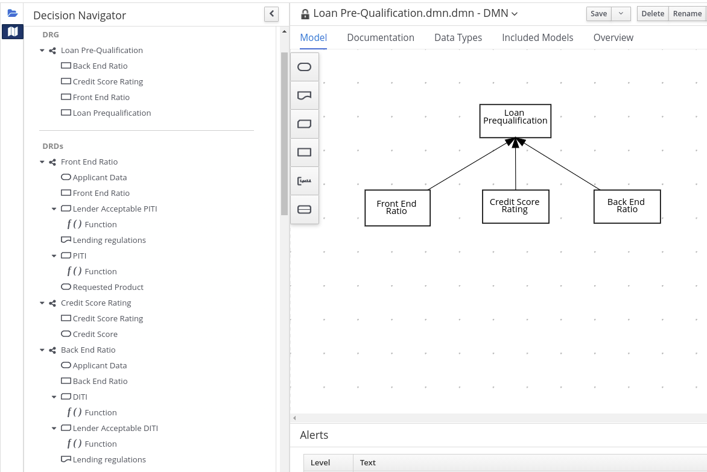Figure 5.53. Overview of front end ratio DRD

Figure 5.54. DRD for front end ratio

Figure 5.55. Overview of credit score rating DRD

Figure 5.56. DRD for credit score rating

Figure 5.57. Overview of back end ratio DRD
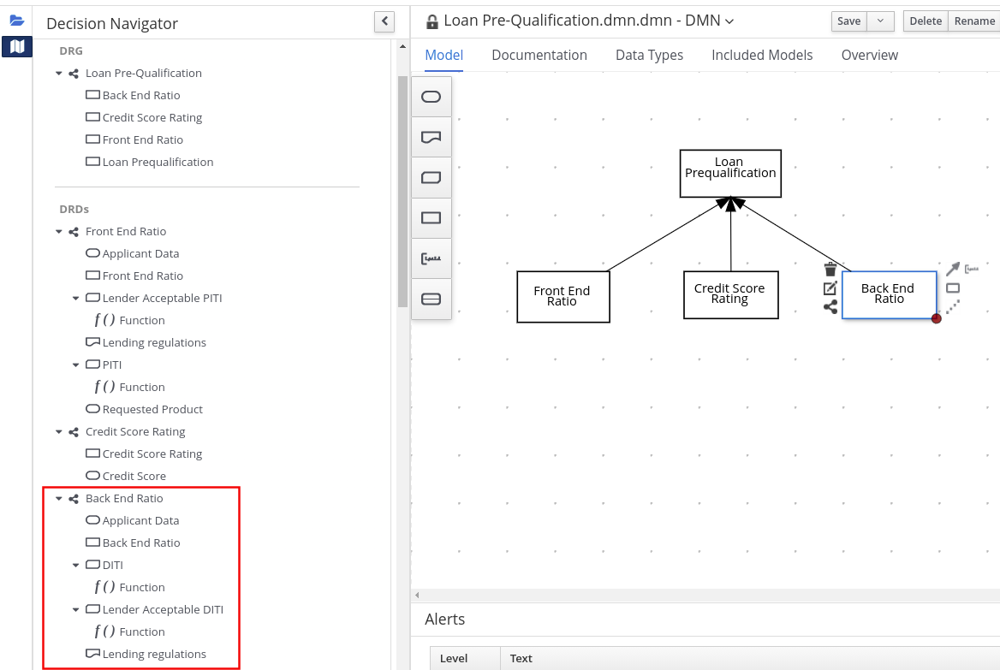Figure 5.58. DRD for back end ratio
5.5. DMN model documentation in Business Central
In the DMN designer in Business Central, you can use the Documentation tab to generate a report of your DMN model that you can print or download as an HTML file for offline use. The DMN model report contains all decision requirements diagrams (DRDs), data types, and boxed expressions in your DMN model. You can use this report to share your DMN model details or as part of your internal reporting workflow.
Figure 5.59. Example DMN model report
5.6. DMN designer navigation and properties in Business Central
The DMN designer in Business Central provides the following additional features to help you navigate through the components and properties of decision requirements diagrams (DRDs).
- DMN file and diagram views
In the upper-left corner of the DMN designer, select the Project Explorer view to navigate between all DMN and other files or select the Decision Navigator view to navigate between the decision components, graphs, and boxed expressions of a selected DRD:
Figure 5.60. Project Explorer view
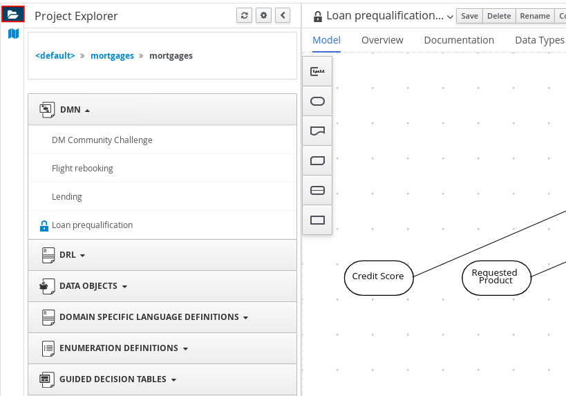Figure 5.61. Decision Navigator view
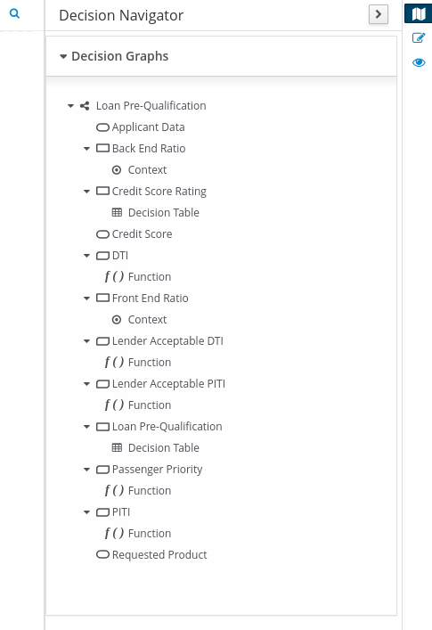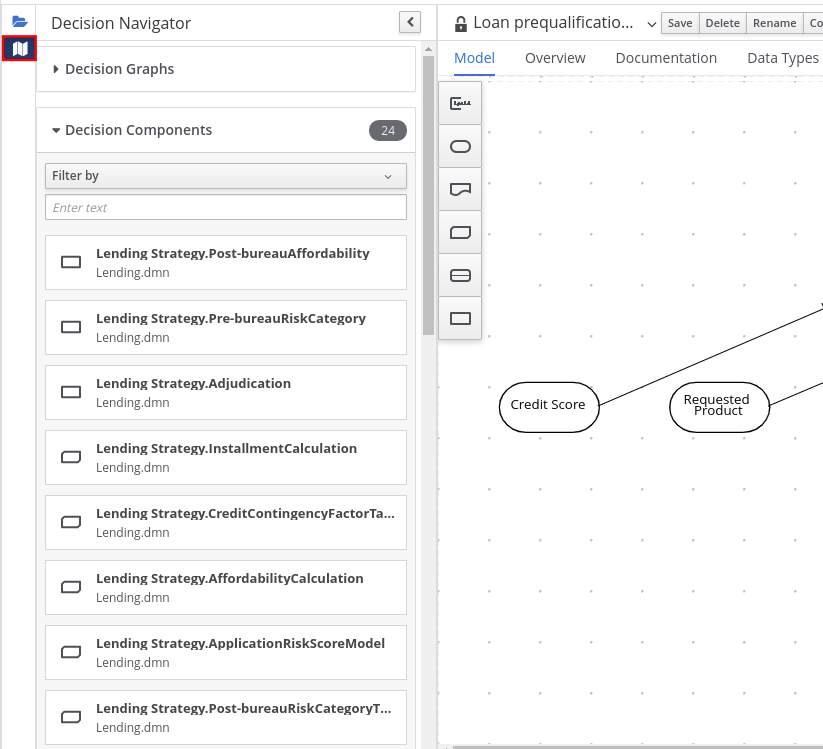NoteThe DRD components from any DMN models included in the DMN file (in the Included Models tab) are also listed in the Decision Components panel for the DMN file.
In the upper-right corner of the DMN designer, select the Explore diagram icon to view an elevated preview of the selected DRD and to navigate between the nodes of the selected DRD:
Figure 5.62. Explore diagram view
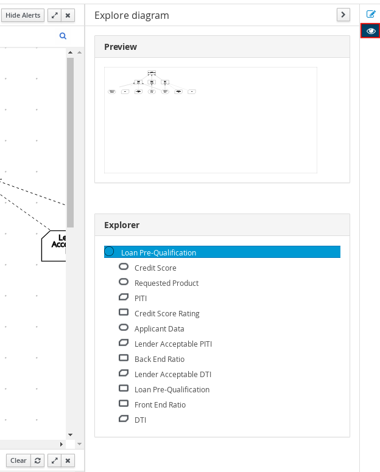- DRD properties and design
In the upper-right corner of the DMN designer, select the Properties icon to modify the identifying information, data types, and appearance of a selected DRD, DRD node, or boxed expression cell:
Figure 5.63. DRD node properties

To view the properties of the entire DRD, click the DRD canvas background instead of a specific node.
- DRD search
In the upper-right corner of the DMN designer, use the search bar to search for text that appears in your DRD. The search feature is especially helpful in complex DRDs with many nodes:
Figure 5.64. DRD search
Chapter 6. DMN model execution
You can create or import DMN files in your Red Hat Process Automation Manager project using Business Central or package the DMN files as part of your project knowledge JAR (KJAR) file without Business Central. After you implement your DMN files in your Red Hat Process Automation Manager project, you can execute the DMN decision service by deploying the KIE container that contains it to KIE Server for remote access or by manipulating the KIE container directly as a dependency of the calling application. Other options for creating and deploying DMN knowledge packages are also available, and most are similar for all types of knowledge assets, such as DRL files or process definitions.
For information about including external DMN assets with your project packaging and deployment method, see Packaging and deploying a Red Hat Process Automation Manager project.
6.1. Embedding a DMN call directly in a Java application
A KIE container is local when the knowledge assets are either embedded directly into the calling program or are physically pulled in using Maven dependencies for the KJAR. You typically embed knowledge assets directly into a project if there is a tight relationship between the version of the code and the version of the DMN definition. Any changes to the decision take effect after you have intentionally updated and redeployed the application. A benefit of this approach is that proper operation does not rely on any external dependencies to the run time, which can be a limitation of locked-down environments.
Using Maven dependencies enables further flexibility because the specific version of the decision can dynamically change, (for example, by using a system property), and it can be periodically scanned for updates and automatically updated. This introduces an external dependency on the deploy time of the service, but executes the decision locally, reducing reliance on an external service being available during run time.
Prerequisites
You have built the DMN project as a KJAR artifact and deployed it to a Maven repository, or you have included your DMN assets as part of your project classpath. Ideally, you have built the DMN project as an executable model for more efficient execution:
mvn clean install -DgenerateDMNModel=yes
For more information about project packaging and deployment and executable models, see Packaging and deploying a Red Hat Process Automation Manager project.
Procedure
In your client application, add the following dependencies to the relevant classpath of your Java project:
<!-- Required for the DMN runtime API --> <dependency> <groupId>org.kie</groupId> <artifactId>kie-dmn-core</artifactId> <version>${rhpam.version}</version> </dependency> <!-- Required if not using classpath KIE container --> <dependency> <groupId>org.kie</groupId> <artifactId>kie-ci</artifactId> <version>${rhpam.version}</version> </dependency>The
<version>is the Maven artifact version for Red Hat Process Automation Manager currently used in your project (for example, 7.48.0.Final-redhat-00002).NoteInstead of specifying a Red Hat Process Automation Manager
<version>for individual dependencies, consider adding the Red Hat Business Automation bill of materials (BOM) dependency to your projectpom.xmlfile. The Red Hat Business Automation BOM applies to both Red Hat Decision Manager and Red Hat Process Automation Manager. When you add the BOM files, the correct versions of transitive dependencies from the provided Maven repositories are included in the project.Example BOM dependency:
<dependency> <groupId>com.redhat.ba</groupId> <artifactId>ba-platform-bom</artifactId> <version>7.10.0.redhat-00002</version> <scope>import</scope> <type>pom</type> </dependency>
For more information about the Red Hat Business Automation BOM, see What is the mapping between RHPAM product and maven library version?.
Create a KIE container from
classpathorReleaseId:KieServices kieServices = KieServices.Factory.get(); ReleaseId releaseId = kieServices.newReleaseId( "org.acme", "my-kjar", "1.0.0" ); KieContainer kieContainer = kieServices.newKieContainer( releaseId );
Alternative option:
KieServices kieServices = KieServices.Factory.get(); KieContainer kieContainer = kieServices.getKieClasspathContainer();
Obtain
DMNRuntimefrom the KIE container and a reference to the DMN model to be evaluated, by using the modelnamespaceandmodelName:DMNRuntime dmnRuntime = KieRuntimeFactory.of(kieContainer.getKieBase()).get(DMNRuntime.class); String namespace = "http://www.redhat.com/_c7328033-c355-43cd-b616-0aceef80e52a"; String modelName = "dmn-movieticket-ageclassification"; DMNModel dmnModel = dmnRuntime.getModel(namespace, modelName);
Execute the decision services for the desired model:
DMNContext dmnContext = dmnRuntime.newContext(); 1 for (Integer age : Arrays.asList(1,12,13,64,65,66)) { dmnContext.set("Age", age); 2 DMNResult dmnResult = dmnRuntime.evaluateAll(dmnModel, dmnContext); 3 for (DMNDecisionResult dr : dmnResult.getDecisionResults()) { 4 log.info("Age: " + age + ", " + "Decision: '" + dr.getDecisionName() + "', " + "Result: " + dr.getResult()); } }
- 1
- Instantiate a new DMN Context to be the input for the model evaluation. Note that this example is looping through the Age Classification decision multiple times.
- 2
- Assign input variables for the input DMN context.
- 3
- Evaluate all DMN decisions defined in the DMN model.
- 4
- Each evaluation may result in one or more results, creating the loop.
This example prints the following output:
Age 1 Decision 'AgeClassification' : Child Age 12 Decision 'AgeClassification' : Child Age 13 Decision 'AgeClassification' : Adult Age 64 Decision 'AgeClassification' : Adult Age 65 Decision 'AgeClassification' : Senior Age 66 Decision 'AgeClassification' : Senior
If the DMN model was not previously compiled as an executable model for more efficient execution, you can enable the following property when you execute your DMN models:
-Dorg.kie.dmn.compiler.execmodel=true
6.2. Executing a DMN service using the KIE Server Java client API
The KIE Server Java client API provides a lightweight approach to invoking a remote DMN service either through the REST or JMS interfaces of KIE Server. This approach reduces the number of runtime dependencies necessary to interact with a KIE base. Decoupling the calling code from the decision definition also increases flexibility by enabling them to iterate independently at the appropriate pace.
For more information about the KIE Server Java client API, see Interacting with Red Hat Process Automation Manager using KIE APIs.
Prerequisites
-
KIE Server is installed and configured, including a known user name and credentials for a user with the
kie-serverrole. For installation options, see Planning a Red Hat Process Automation Manager installation. You have built the DMN project as a KJAR artifact and deployed it to KIE Server. Ideally, you have built the DMN project as an executable model for more efficient execution:
mvn clean install -DgenerateDMNModel=yes
For more information about project packaging and deployment and executable models, see Packaging and deploying a Red Hat Process Automation Manager project.
- You have the ID of the KIE container containing the DMN model. If more than one model is present, you must also know the model namespace and model name of the relevant model.
Procedure
In your client application, add the following dependency to the relevant classpath of your Java project:
<!-- Required for the KIE Server Java client API --> <dependency> <groupId>org.kie.server</groupId> <artifactId>kie-server-client</artifactId> <version>${rhpam.version}</version> </dependency>The
<version>is the Maven artifact version for Red Hat Process Automation Manager currently used in your project (for example, 7.48.0.Final-redhat-00002).NoteInstead of specifying a Red Hat Process Automation Manager
<version>for individual dependencies, consider adding the Red Hat Business Automation bill of materials (BOM) dependency to your projectpom.xmlfile. The Red Hat Business Automation BOM applies to both Red Hat Decision Manager and Red Hat Process Automation Manager. When you add the BOM files, the correct versions of transitive dependencies from the provided Maven repositories are included in the project.Example BOM dependency:
<dependency> <groupId>com.redhat.ba</groupId> <artifactId>ba-platform-bom</artifactId> <version>7.10.0.redhat-00002</version> <scope>import</scope> <type>pom</type> </dependency>
For more information about the Red Hat Business Automation BOM, see What is the mapping between RHPAM product and maven library version?.
Instantiate a
KieServicesClientinstance with the appropriate connection information.Example:
KieServicesConfiguration conf = KieServicesFactory.newRestConfiguration(URL, USER, PASSWORD); 1 conf.setMarshallingFormat(MarshallingFormat.JSON); 2 KieServicesClient kieServicesClient = KieServicesFactory.newKieServicesClient(conf);- 1
- The connection information:
-
Example URL:
http://localhost:8080/kie-server/services/rest/server -
The credentials should reference a user with the
kie-serverrole.
-
Example URL:
- 2
- The Marshalling format is an instance of
org.kie.server.api.marshalling.MarshallingFormat. It controls whether the messages will be JSON or XML. Options for Marshalling format are JSON, JAXB, or XSTREAM.
Obtain a
DMNServicesClientfrom the KIE server Java client connected to the related KIE Server by invoking the methodgetServicesClient()on the KIE server Java client instance:DMNServicesClient dmnClient = kieServicesClient.getServicesClient(DMNServicesClient.class );
The
dmnClientcan now execute decision services on KIE Server.Execute the decision services for the desired model.
Example:
for (Integer age : Arrays.asList(1,12,13,64,65,66)) { DMNContext dmnContext = dmnClient.newContext(); 1 dmnContext.set("Age", age); 2 ServiceResponse<DMNResult> serverResp = 3 dmnClient.evaluateAll($kieContainerId, $modelNamespace, $modelName, dmnContext); DMNResult dmnResult = serverResp.getResult(); 4 for (DMNDecisionResult dr : dmnResult.getDecisionResults()) { log.info("Age: " + age + ", " + "Decision: '" + dr.getDecisionName() + "', " + "Result: " + dr.getResult()); } }- 1
- Instantiate a new DMN Context to be the input for the model evaluation. Note that this example is looping through the Age Classification decision multiple times.
- 2
- Assign input variables for the input DMN Context.
- 3
- Evaluate all the DMN Decisions defined in the DMN model:
-
$kieContainerIdis the ID of the container where the KJAR containing the DMN model is deployed -
$modelNamespaceis the namespace for the model. -
$modelNameis the name for the model.
-
- 4
- The DMN Result object is available from the server response.
At this point, the
dmnResultcontains all the decision results from the evaluated DMN model.You can also execute only a specific DMN decision in the model by using alternative methods of the
DMNServicesClient.NoteIf the KIE container only contains one DMN model, you can omit
$modelNamespaceand$modelNamebecause the KIE Server API selects it by default.
6.3. Executing a DMN service using the KIE Server REST API
Directly interacting with the REST endpoints of KIE Server provides the most separation between the calling code and the decision logic definition. The calling code is completely free of direct dependencies, and you can implement it in an entirely different development platform such as Node.js or .NET. The examples in this section demonstrate Nix-style curl commands but provide relevant information to adapt to any REST client.
For more information about the KIE Server REST API, see Interacting with Red Hat Process Automation Manager using KIE APIs.
Prerequisites
-
KIE Server is installed and configured, including a known user name and credentials for a user with the
kie-serverrole. For installation options, see Planning a Red Hat Process Automation Manager installation. You have built the DMN project as a KJAR artifact and deployed it to KIE Server. Ideally, you have built the DMN project as an executable model for more efficient execution:
mvn clean install -DgenerateDMNModel=yes
For more information about project packaging and deployment and executable models, see Packaging and deploying a Red Hat Process Automation Manager project.
- You have the ID of the KIE container containing the DMN model. If more than one model is present, you must also know the model namespace and model name of the relevant model.
Procedure
Determine the base URL for accessing the KIE Server REST API endpoints. This requires knowing the following values (with the default local deployment values as an example):
-
Host (
localhost) -
Port (
8080) -
Root context (
kie-server) -
Base REST path (
services/rest/)
Example base URL in local deployment:
http://localhost:8080/kie-server/services/rest/-
Host (
Determine user authentication requirements.
When users are defined directly in the KIE Server configuration, HTTP Basic authentication is used and requires the user name and password. Successful requests require that the user have the
kie-serverrole.The following example demonstrates how to add credentials to a curl request:
curl -u username:password <request>
If KIE Server is configured with Red Hat Single Sign-On, the request must include a bearer token:
curl -H "Authorization: bearer $TOKEN" <request>
Specify the format of the request and response. The REST API endpoints work with both JSON and XML formats and are set using request headers:
JSON
curl -H "accept: application/json" -H "content-type: application/json"
XML
curl -H "accept: application/xml" -H "content-type: application/xml"
Optional: Query the container for a list of deployed decision models:
[GET]
server/containers/{containerId}/dmnExample curl request:
curl -u krisv:krisv -H "accept: application/xml" -X GET "http://localhost:8080/kie-server/services/rest/server/containers/MovieDMNContainer/dmn"
Sample XML output:
<?xml version="1.0" encoding="UTF-8" standalone="yes"?> <response type="SUCCESS" msg="OK models successfully retrieved from container 'MovieDMNContainer'"> <dmn-model-info-list> <model> <model-namespace>http://www.redhat.com/_c7328033-c355-43cd-b616-0aceef80e52a</model-namespace> <model-name>dmn-movieticket-ageclassification</model-name> <model-id>_99</model-id> <decisions> <dmn-decision-info> <decision-id>_3</decision-id> <decision-name>AgeClassification</decision-name> </dmn-decision-info> </decisions> </model> </dmn-model-info-list> </response>Sample JSON output:
{ "type" : "SUCCESS", "msg" : "OK models successfully retrieved from container 'MovieDMNContainer'", "result" : { "dmn-model-info-list" : { "models" : [ { "model-namespace" : "http://www.redhat.com/_c7328033-c355-43cd-b616-0aceef80e52a", "model-name" : "dmn-movieticket-ageclassification", "model-id" : "_99", "decisions" : [ { "decision-id" : "_3", "decision-name" : "AgeClassification" } ] } ] } } }Execute the model:
[POST]
server/containers/{containerId}/dmnExample curl request:
curl -u krisv:krisv -H "accept: application/json" -H "content-type: application/json" -X POST "http://localhost:8080/kie-server/services/rest/server/containers/MovieDMNContainer/dmn" -d "{ \"model-namespace\" : \"http://www.redhat.com/_c7328033-c355-43cd-b616-0aceef80e52a\", \"model-name\" : \"dmn-movieticket-ageclassification\", \"decision-name\" : [ ], \"decision-id\" : [ ], \"dmn-context\" : {\"Age\" : 66}}"Example JSON request:
{ "model-namespace" : "http://www.redhat.com/_c7328033-c355-43cd-b616-0aceef80e52a", "model-name" : "dmn-movieticket-ageclassification", "decision-name" : [ ], "decision-id" : [ ], "dmn-context" : {"Age" : 66} }Example XML request (JAXB format):
<?xml version="1.0" encoding="UTF-8"?> <dmn-evaluation-context> <model-namespace>http://www.redhat.com/_c7328033-c355-43cd-b616-0aceef80e52a</model-namespace> <model-name>dmn-movieticket-ageclassification</model-name> <dmn-context xsi:type="jaxbListWrapper" xmlns:xsi="http://www.w3.org/2001/XMLSchema-instance"> <type>MAP</type> <element xsi:type="jaxbStringObjectPair" key="Age"> <value xsi:type="xs:int" xmlns:xs="http://www.w3.org/2001/XMLSchema">66</value> </element> </dmn-context> </dmn-evaluation-context>NoteRegardless of the request format, the request requires the following elements:
- Model namespace
- Model name
- Context object containing input values
Example JSON response:
{ "type" : "SUCCESS", "msg" : "OK from container 'MovieDMNContainer'", "result" : { "dmn-evaluation-result" : { "messages" : [ ], "model-namespace" : "http://www.redhat.com/_c7328033-c355-43cd-b616-0aceef80e52a", "model-name" : "dmn-movieticket-ageclassification", "decision-name" : [ ], "dmn-context" : { "Age" : 66, "AgeClassification" : "Senior" }, "decision-results" : { "_3" : { "messages" : [ ], "decision-id" : "_3", "decision-name" : "AgeClassification", "result" : "Senior", "status" : "SUCCEEDED" } } } } }Example XML (JAXB format) response:
<?xml version="1.0" encoding="UTF-8" standalone="yes"?> <response type="SUCCESS" msg="OK from container 'MovieDMNContainer'"> <dmn-evaluation-result> <model-namespace>http://www.redhat.com/_c7328033-c355-43cd-b616-0aceef80e52a</model-namespace> <model-name>dmn-movieticket-ageclassification</model-name> <dmn-context xsi:type="jaxbListWrapper" xmlns:xsi="http://www.w3.org/2001/XMLSchema-instance"> <type>MAP</type> <element xsi:type="jaxbStringObjectPair" key="Age"> <value xsi:type="xs:int" xmlns:xs="http://www.w3.org/2001/XMLSchema">66</value> </element> <element xsi:type="jaxbStringObjectPair" key="AgeClassification"> <value xsi:type="xs:string" xmlns:xs="http://www.w3.org/2001/XMLSchema">Senior</value> </element> </dmn-context> <messages/> <decisionResults> <entry> <key>_3</key> <value> <decision-id>_3</decision-id> <decision-name>AgeClassification</decision-name> <result xsi:type="xs:string" xmlns:xs="http://www.w3.org/2001/XMLSchema" xmlns:xsi="http://www.w3.org/2001/XMLSchema-instance">Senior</result> <messages/> <status>SUCCEEDED</status> </value> </entry> </decisionResults> </dmn-evaluation-result> </response>
Chapter 7. Additional resources
Part II. Designing a decision service using PMML models
As a business rules developer, you can use Predictive Model Markup Language (PMML) to define statistical or data-mining models that you can integrate with your decision services in Red Hat Process Automation Manager. Red Hat Process Automation Manager includes consumer conformance support of PMML 4.2.1 for Regression, Scorecard, Tree, and Mining models. Red Hat Process Automation Manager does not include a built-in PMML model editor, but you can use an XML or PMML-specific authoring tool to create PMML models and then integrate them with your Red Hat Process Automation Manager projects.
For more information about PMML, see the DMG PMML specification.
You can also design your decision service using Decision Model and Notation (DMN) models and include your PMML models as part of your DMN service. For information about DMN support in Red Hat Process Automation Manager 7.10, see the following resources:
- Getting started with decision services (step-by-step tutorial with a DMN decision service example)
- Designing a decision service using DMN models (overview of DMN support and capabilities in Red Hat Process Automation Manager)
Chapter 8. Decision-authoring assets in Red Hat Process Automation Manager
Red Hat Process Automation Manager supports several assets that you can use to define business decisions for your decision service. Each decision-authoring asset has different advantages, and you might prefer to use one or a combination of multiple assets depending on your goals and needs.
The following table highlights the main decision-authoring assets supported in Red Hat Process Automation Manager projects to help you decide or confirm the best method for defining decisions in your decision service.
Table 8.1. Decision-authoring assets supported in Red Hat Process Automation Manager
| Asset | Highlights | Authoring tools | Documentation |
|---|---|---|---|
|
Decision Model and Notation (DMN) models |
|
Business Central or other DMN-compliant editor | |
|
Guided decision tables |
|
Business Central | |
|
Spreadsheet decision tables |
|
Spreadsheet editor |
Designing a decision service using spreadsheet decision tables |
|
Guided rules |
|
Business Central | |
|
Guided rule templates |
|
Business Central | |
|
DRL rules |
|
Business Central or integrated development environment (IDE) | |
|
Predictive Model Markup Language (PMML) models |
|
PMML or XML editor |
Chapter 9. Predictive Model Markup Language (PMML)
Predictive Model Markup Language (PMML) is an XML-based standard established by the Data Mining Group (DMG) for defining statistical and data-mining models. PMML models can be shared between PMML-compliant platforms and across organizations so that business analysts and developers are unified in designing, analyzing, and implementing PMML-based assets and services.
For more information about the background and applications of PMML, see the DMG PMML specification.
9.1. PMML conformance levels
The PMML specification defines producer and consumer conformance levels in a software implementation to ensure that PMML models are created and integrated reliably. For the formal definitions of each conformance level, see the DMG PMML conformance page.
The following list summarizes the PMML conformance levels:
- Producer conformance
- A tool or application is producer conforming if it generates valid PMML documents for at least one type of model. Satisfying PMML producer conformance requirements ensures that a model definition document is syntactically correct and defines a model instance that is consistent with semantic criteria that are defined in model specifications.
- Consumer conformance
- An application is consumer conforming if it accepts valid PMML documents for at least one type of model. Satisfying consumer conformance requirements ensures that a PMML model created according to producer conformance can be integrated and used as defined. For example, if an application is consumer conforming for Regression model types, then valid PMML documents defining models of this type produced by different conforming producers would be interchangeable in the application.
Red Hat Process Automation Manager includes consumer conformance support for the following PMML 4.2.1 model types:
- Regression models
- Scorecard models
- Tree models
-
Mining models (with sub-types
modelChain,selectAll, andselectFirst)
For a list of all PMML model types, including those not supported in Red Hat Process Automation Manager, see the DMG PMML specification.
Chapter 10. PMML model examples
PMML defines an XML schema that enables PMML models to be used between different PMML-compliant platforms. The PMML specification enables multiple software platforms to work with the same file for authoring, testing, and production execution, assuming producer and consumer conformance are met.
The following are examples of PMML Regression, Scorecard, Tree, and Mining models. These examples illustrate the supported types of models that you can integrate with your decision services in Red Hat Process Automation Manager.
For more PMML examples, see the DMG PMML Sample Files page.
Example PMML Regression model
<PMML version="4.2" xsi:schemaLocation="http://www.dmg.org/PMML-4_2 http://www.dmg.org/v4-2-1/pmml-4-2.xsd" xmlns:xsi="http://www.w3.org/2001/XMLSchema-instance" xmlns="http://www.dmg.org/PMML-4_2">
<Header copyright="JBoss"/>
<DataDictionary numberOfFields="5">
<DataField dataType="double" name="fld1" optype="continuous"/>
<DataField dataType="double" name="fld2" optype="continuous"/>
<DataField dataType="string" name="fld3" optype="categorical">
<Value value="x"/>
<Value value="y"/>
</DataField>
<DataField dataType="double" name="fld4" optype="continuous"/>
<DataField dataType="double" name="fld5" optype="continuous"/>
</DataDictionary>
<RegressionModel algorithmName="linearRegression" functionName="regression" modelName="LinReg" normalizationMethod="logit" targetFieldName="fld4">
<MiningSchema>
<MiningField name="fld1"/>
<MiningField name="fld2"/>
<MiningField name="fld3"/>
<MiningField name="fld4" usageType="predicted"/>
<MiningField name="fld5" usageType="target"/>
</MiningSchema>
<RegressionTable intercept="0.5">
<NumericPredictor coefficient="5" exponent="2" name="fld1"/>
<NumericPredictor coefficient="2" exponent="1" name="fld2"/>
<CategoricalPredictor coefficient="-3" name="fld3" value="x"/>
<CategoricalPredictor coefficient="3" name="fld3" value="y"/>
<PredictorTerm coefficient="0.4">
<FieldRef field="fld1"/>
<FieldRef field="fld2"/>
</PredictorTerm>
</RegressionTable>
</RegressionModel>
</PMML>
Example PMML Scorecard model
<PMML version="4.2" xsi:schemaLocation="http://www.dmg.org/PMML-4_2 http://www.dmg.org/v4-2-1/pmml-4-2.xsd" xmlns:xsi="http://www.w3.org/2001/XMLSchema-instance" xmlns="http://www.dmg.org/PMML-4_2">
<Header copyright="JBoss"/>
<DataDictionary numberOfFields="4">
<DataField name="param1" optype="continuous" dataType="double"/>
<DataField name="param2" optype="continuous" dataType="double"/>
<DataField name="overallScore" optype="continuous" dataType="double" />
<DataField name="finalscore" optype="continuous" dataType="double" />
</DataDictionary>
<Scorecard modelName="ScorecardCompoundPredicate" useReasonCodes="true" isScorable="true" functionName="regression" baselineScore="15" initialScore="0.8" reasonCodeAlgorithm="pointsAbove">
<MiningSchema>
<MiningField name="param1" usageType="active" invalidValueTreatment="asMissing">
</MiningField>
<MiningField name="param2" usageType="active" invalidValueTreatment="asMissing">
</MiningField>
<MiningField name="overallScore" usageType="target"/>
<MiningField name="finalscore" usageType="predicted"/>
</MiningSchema>
<Characteristics>
<Characteristic name="ch1" baselineScore="50" reasonCode="reasonCh1">
<Attribute partialScore="20">
<SimplePredicate field="param1" operator="lessThan" value="20"/>
</Attribute>
<Attribute partialScore="100">
<CompoundPredicate booleanOperator="and">
<SimplePredicate field="param1" operator="greaterOrEqual" value="20"/>
<SimplePredicate field="param2" operator="lessOrEqual" value="25"/>
</CompoundPredicate>
</Attribute>
<Attribute partialScore="200">
<CompoundPredicate booleanOperator="and">
<SimplePredicate field="param1" operator="greaterOrEqual" value="20"/>
<SimplePredicate field="param2" operator="greaterThan" value="25"/>
</CompoundPredicate>
</Attribute>
</Characteristic>
<Characteristic name="ch2" reasonCode="reasonCh2">
<Attribute partialScore="10">
<CompoundPredicate booleanOperator="or">
<SimplePredicate field="param2" operator="lessOrEqual" value="-5"/>
<SimplePredicate field="param2" operator="greaterOrEqual" value="50"/>
</CompoundPredicate>
</Attribute>
<Attribute partialScore="20">
<CompoundPredicate booleanOperator="and">
<SimplePredicate field="param2" operator="greaterThan" value="-5"/>
<SimplePredicate field="param2" operator="lessThan" value="50"/>
</CompoundPredicate>
</Attribute>
</Characteristic>
</Characteristics>
</Scorecard>
</PMML>
Example PMML Tree model
<PMML version="4.2" xsi:schemaLocation="http://www.dmg.org/PMML-4_2 http://www.dmg.org/v4-2-1/pmml-4-2.xsd" xmlns:xsi="http://www.w3.org/2001/XMLSchema-instance" xmlns="http://www.dmg.org/PMML-4_2">
<Header copyright="JBOSS"/>
<DataDictionary numberOfFields="5">
<DataField dataType="double" name="fld1" optype="continuous"/>
<DataField dataType="double" name="fld2" optype="continuous"/>
<DataField dataType="string" name="fld3" optype="categorical">
<Value value="true"/>
<Value value="false"/>
</DataField>
<DataField dataType="string" name="fld4" optype="categorical">
<Value value="optA"/>
<Value value="optB"/>
<Value value="optC"/>
</DataField>
<DataField dataType="string" name="fld5" optype="categorical">
<Value value="tgtX"/>
<Value value="tgtY"/>
<Value value="tgtZ"/>
</DataField>
</DataDictionary>
<TreeModel functionName="classification" modelName="TreeTest">
<MiningSchema>
<MiningField name="fld1"/>
<MiningField name="fld2"/>
<MiningField name="fld3"/>
<MiningField name="fld4"/>
<MiningField name="fld5" usageType="predicted"/>
</MiningSchema>
<Node score="tgtX">
<True/>
<Node score="tgtX">
<SimplePredicate field="fld4" operator="equal" value="optA"/>
<Node score="tgtX">
<CompoundPredicate booleanOperator="surrogate">
<SimplePredicate field="fld1" operator="lessThan" value="30.0"/>
<SimplePredicate field="fld2" operator="greaterThan" value="20.0"/>
</CompoundPredicate>
<Node score="tgtX">
<SimplePredicate field="fld2" operator="lessThan" value="40.0"/>
</Node>
<Node score="tgtZ">
<SimplePredicate field="fld2" operator="greaterOrEqual" value="10.0"/>
</Node>
</Node>
<Node score="tgtZ">
<CompoundPredicate booleanOperator="or">
<SimplePredicate field="fld1" operator="greaterOrEqual" value="60.0"/>
<SimplePredicate field="fld1" operator="lessOrEqual" value="70.0"/>
</CompoundPredicate>
<Node score="tgtZ">
<SimpleSetPredicate booleanOperator="isNotIn" field="fld4">
<Array type="string">optA optB</Array>
</SimpleSetPredicate>
</Node>
</Node>
</Node>
<Node score="tgtY">
<CompoundPredicate booleanOperator="or">
<SimplePredicate field="fld4" operator="equal" value="optA"/>
<SimplePredicate field="fld4" operator="equal" value="optC"/>
</CompoundPredicate>
<Node score="tgtY">
<CompoundPredicate booleanOperator="and">
<SimplePredicate field="fld1" operator="greaterThan" value="10.0"/>
<SimplePredicate field="fld1" operator="lessThan" value="50.0"/>
<SimplePredicate field="fld4" operator="equal" value="optA"/>
<SimplePredicate field="fld2" operator="lessThan" value="100.0"/>
<SimplePredicate field="fld3" operator="equal" value="false"/>
</CompoundPredicate>
</Node>
<Node score="tgtZ">
<CompoundPredicate booleanOperator="and">
<SimplePredicate field="fld4" operator="equal" value="optC"/>
<SimplePredicate field="fld2" operator="lessThan" value="30.0"/>
</CompoundPredicate>
</Node>
</Node>
</Node>
</TreeModel>
</PMML>
Example PMML Mining model (modelChain)
<PMML version="4.2" xsi:schemaLocation="http://www.dmg.org/PMML-4_2 http://www.dmg.org/v4-2-1/pmml-4-2.xsd" xmlns:xsi="http://www.w3.org/2001/XMLSchema-instance" xmlns="http://www.dmg.org/PMML-4_2">
<Header>
<Application name="Drools-PMML" version="7.0.0-SNAPSHOT" />
</Header>
<DataDictionary numberOfFields="7">
<DataField name="age" optype="continuous" dataType="double" />
<DataField name="occupation" optype="categorical" dataType="string">
<Value value="SKYDIVER" />
<Value value="ASTRONAUT" />
<Value value="PROGRAMMER" />
<Value value="TEACHER" />
<Value value="INSTRUCTOR" />
</DataField>
<DataField name="residenceState" optype="categorical" dataType="string">
<Value value="AP" />
<Value value="KN" />
<Value value="TN" />
</DataField>
<DataField name="validLicense" optype="categorical" dataType="boolean" />
<DataField name="overallScore" optype="continuous" dataType="double" />
<DataField name="grade" optype="categorical" dataType="string">
<Value value="A" />
<Value value="B" />
<Value value="C" />
<Value value="D" />
<Value value="F" />
</DataField>
<DataField name="qualificationLevel" optype="categorical" dataType="string">
<Value value="Unqualified" />
<Value value="Barely" />
<Value value="Well" />
<Value value="Over" />
</DataField>
</DataDictionary>
<MiningModel modelName="SampleModelChainMine" functionName="classification">
<MiningSchema>
<MiningField name="age" />
<MiningField name="occupation" />
<MiningField name="residenceState" />
<MiningField name="validLicense" />
<MiningField name="overallScore" />
<MiningField name="qualificationLevel" usageType="target"/>
</MiningSchema>
<Segmentation multipleModelMethod="modelChain">
<Segment id="1">
<True />
<Scorecard modelName="Sample Score 1" useReasonCodes="true" isScorable="true" functionName="regression" baselineScore="0.0" initialScore="0.345">
<MiningSchema>
<MiningField name="age" usageType="active" invalidValueTreatment="asMissing" />
<MiningField name="occupation" usageType="active" invalidValueTreatment="asMissing" />
<MiningField name="residenceState" usageType="active" invalidValueTreatment="asMissing" />
<MiningField name="validLicense" usageType="active" invalidValueTreatment="asMissing" />
<MiningField name="overallScore" usageType="predicted" />
</MiningSchema>
<Output>
<OutputField name="calculatedScore" displayName="Final Score" dataType="double" feature="predictedValue" targetField="overallScore" />
</Output>
<Characteristics>
<Characteristic name="AgeScore" baselineScore="0.0" reasonCode="ABZ">
<Extension name="cellRef" value="$B$8" />
<Attribute partialScore="10.0">
<Extension name="cellRef" value="$C$10" />
<SimplePredicate field="age" operator="lessOrEqual" value="5" />
</Attribute>
<Attribute partialScore="30.0" reasonCode="CX1">
<Extension name="cellRef" value="$C$11" />
<CompoundPredicate booleanOperator="and">
<SimplePredicate field="age" operator="greaterOrEqual" value="5" />
<SimplePredicate field="age" operator="lessThan" value="12" />
</CompoundPredicate>
</Attribute>
<Attribute partialScore="40.0" reasonCode="CX2">
<Extension name="cellRef" value="$C$12" />
<CompoundPredicate booleanOperator="and">
<SimplePredicate field="age" operator="greaterOrEqual" value="13" />
<SimplePredicate field="age" operator="lessThan" value="44" />
</CompoundPredicate>
</Attribute>
<Attribute partialScore="25.0">
<Extension name="cellRef" value="$C$13" />
<SimplePredicate field="age" operator="greaterOrEqual" value="45" />
</Attribute>
</Characteristic>
<Characteristic name="OccupationScore" baselineScore="0.0">
<Extension name="cellRef" value="$B$16" />
<Attribute partialScore="-10.0" reasonCode="CX2">
<Extension name="description" value="skydiving is a risky occupation" />
<Extension name="cellRef" value="$C$18" />
<SimpleSetPredicate field="occupation" booleanOperator="isIn">
<Array n="2" type="string">SKYDIVER ASTRONAUT</Array>
</SimpleSetPredicate>
</Attribute>
<Attribute partialScore="10.0">
<Extension name="cellRef" value="$C$19" />
<SimpleSetPredicate field="occupation" booleanOperator="isIn">
<Array n="2" type="string">TEACHER INSTRUCTOR</Array>
</SimpleSetPredicate>
</Attribute>
<Attribute partialScore="5.0">
<Extension name="cellRef" value="$C$20" />
<SimplePredicate field="occupation" operator="equal" value="PROGRAMMER" />
</Attribute>
</Characteristic>
<Characteristic name="ResidenceStateScore" baselineScore="0.0" reasonCode="RES">
<Extension name="cellRef" value="$B$22" />
<Attribute partialScore="-10.0">
<Extension name="cellRef" value="$C$24" />
<SimplePredicate field="residenceState" operator="equal" value="AP" />
</Attribute>
<Attribute partialScore="10.0">
<Extension name="cellRef" value="$C$25" />
<SimplePredicate field="residenceState" operator="equal" value="KN" />
</Attribute>
<Attribute partialScore="5.0">
<Extension name="cellRef" value="$C$26" />
<SimplePredicate field="residenceState" operator="equal" value="TN" />
</Attribute>
</Characteristic>
<Characteristic name="ValidLicenseScore" baselineScore="0.0">
<Extension name="cellRef" value="$B$28" />
<Attribute partialScore="1.0" reasonCode="LX00">
<Extension name="cellRef" value="$C$30" />
<SimplePredicate field="validLicense" operator="equal" value="true" />
</Attribute>
<Attribute partialScore="-1.0" reasonCode="LX00">
<Extension name="cellRef" value="$C$31" />
<SimplePredicate field="validLicense" operator="equal" value="false" />
</Attribute>
</Characteristic>
</Characteristics>
</Scorecard>
</Segment>
<Segment id="2">
<True />
<TreeModel modelName="SampleTree" functionName="classification" missingValueStrategy="lastPrediction" noTrueChildStrategy="returnLastPrediction">
<MiningSchema>
<MiningField name="age" usageType="active" />
<MiningField name="validLicense" usageType="active" />
<MiningField name="calculatedScore" usageType="active" />
<MiningField name="qualificationLevel" usageType="predicted" />
</MiningSchema>
<Output>
<OutputField name="qualification" displayName="Qualification Level" dataType="string" feature="predictedValue" targetField="qualificationLevel" />
</Output>
<Node score="Well" id="1">
<True/>
<Node score="Barely" id="2">
<CompoundPredicate booleanOperator="and">
<SimplePredicate field="age" operator="greaterOrEqual" value="16" />
<SimplePredicate field="validLicense" operator="equal" value="true" />
</CompoundPredicate>
<Node score="Barely" id="3">
<SimplePredicate field="calculatedScore" operator="lessOrEqual" value="50.0" />
</Node>
<Node score="Well" id="4">
<CompoundPredicate booleanOperator="and">
<SimplePredicate field="calculatedScore" operator="greaterThan" value="50.0" />
<SimplePredicate field="calculatedScore" operator="lessOrEqual" value="60.0" />
</CompoundPredicate>
</Node>
<Node score="Over" id="5">
<SimplePredicate field="calculatedScore" operator="greaterThan" value="60.0" />
</Node>
</Node>
<Node score="Unqualified" id="6">
<CompoundPredicate booleanOperator="surrogate">
<SimplePredicate field="age" operator="lessThan" value="16" />
<SimplePredicate field="calculatedScore" operator="lessOrEqual" value="40.0" />
<True />
</CompoundPredicate>
</Node>
</Node>
</TreeModel>
</Segment>
</Segmentation>
</MiningModel>
</PMML>
Chapter 11. PMML support in Red Hat Process Automation Manager
Red Hat Process Automation Manager includes consumer conformance support for the following PMML 4.2.1 model types:
- Regression models
- Scorecard models
- Tree models
-
Mining models (with sub-types
modelChain,selectAll, andselectFirst)
For a list of all PMML model types, including those not supported in Red Hat Process Automation Manager, see the DMG PMML specification.
Red Hat Process Automation Manager does not include a built-in PMML model editor, but you can use an XML or PMML-specific authoring tool to create PMML models and then integrate the PMML models in your decision services in Red Hat Process Automation Manager. You can import PMML files into your project in Business Central (Menu → Design → Projects → Import Asset) or package the PMML files as part of your project knowledge JAR (KJAR) file without Business Central.
When you add a PMML file to a project in Red Hat Process Automation Manager, multiple assets are generated. Each type of PMML model generates a different set of assets, but all PMML model types generate at least the following set of assets:
- A DRL file that contains all of the rules associated with your PMML model
At least two Java classes:
- A data class that is used as the default object type for the model type
-
A
RuleUnitclass that is used to manage data sources and rule execution
If a PMML file has MiningModel as the root model, multiple instances of each of these files are generated.
For more information about including assets such as PMML files with your project packaging and deployment method, see Packaging and deploying a Red Hat Process Automation Manager project.
11.1. PMML naming conventions in Red Hat Process Automation Manager
The following are naming conventions for generated PMML packages, classes, and rules:
-
If no package name is given in a PMML model file, then the default package name
org.kie.pmml.pmml_4_2is prefixed to the model name for the generated rules in the format"org.kie.pmml.pmml_4_2"+modelName. -
The package name for the generated
RuleUnitJava class is the same as the package name for the generated rules. -
The name of the generated
RuleUnitJava class is the model name withRuleUnitadded to it in the formatmodelName+"RuleUnit". -
Each PMML model has at least one data class that is generated. The package name for these classes is
org.kie.pmml.pmml_4_2.model. The names of generated data classes are determined by the model type, prefixed with the model name:
-
Regression models: One data class named
modelName+"RegressionData" -
Scorecard models: One data class named
modelName+"ScoreCardData" -
Tree models: Two data classes, the first named
modelName+"TreeNode"and the second namedmodelName+"TreeToken" -
Mining models: One data class named
modelName+"MiningModelData"
-
Regression models: One data class named
The mining model also generates all of the rules and classes that are within each of its segments.
11.2. PMML extensions in Red Hat Process Automation Manager
The PMML specification supports Extension elements that extend the content of a PMML model. You can use extensions at almost every level of a PMML model definition, and as the first and last child in the main element of a model for maximum flexibility. For more information about PMML extensions, see the DMG PMML Extension Mechanism.
To optimize PMML integration, Red Hat Process Automation Manager supports the following additional PMML extensions:
-
modelPackage: Designates a package name for the generated rules and Java classes. Include this extension in theHeadersection of the PMML model file. -
adapter: Designates the type of construct (beanortrait) that is used to contain input and output data for rules. Insert this extension in theMiningSchemaorOutputsection (or both) of the PMML model file. -
externalClass: Used in conjunction with theadapterextension in defining aMiningFieldorOutputField. This extension contains a class with an attribute name that matches the name of theMiningFieldorOutputFieldelement.
Chapter 12. PMML model execution
You can import PMML files into your Red Hat Process Automation Manager project using Business Central (Menu → Design → Projects → Import Asset) or package the PMML files as part of your project knowledge JAR (KJAR) file without Business Central. After you implement your PMML files in your Red Hat Process Automation Manager project, you can execute the PMML-based decision service by embedding PMML calls directly in your Java application or by sending an ApplyPmmlModelCommand command to a configured KIE Server.
For more information about including PMML assets with your project packaging and deployment method, see Packaging and deploying a Red Hat Process Automation Manager project.
You can also include a PMML model as part of a Decision Model and Notation (DMN) service in Business Central. When you include a PMML model within a DMN file, you can invoke that PMML model as a boxed function expression for a DMN decision node or business knowledge model node. For more information about including PMML models in a DMN service, see Designing a decision service using DMN models.
12.1. Embedding a PMML call directly in a Java application
A KIE container is local when the knowledge assets are either embedded directly into the calling program or are physically pulled in using Maven dependencies for the KJAR. You typically embed knowledge assets directly into a project if there is a tight relationship between the version of the code and the version of the PMML definition. Any changes to the decision take effect after you have intentionally updated and redeployed the application. A benefit of this approach is that proper operation does not rely on any external dependencies to the run time, which can be a limitation of locked-down environments.
Using Maven dependencies enables further flexibility because the specific version of the decision can dynamically change (for example, by using a system property), and it can be periodically scanned for updates and automatically updated. This introduces an external dependency on the deploy time of the service, but executes the decision locally, reducing reliance on an external service being available during run time.
Prerequisites
- A KJAR containing the PMML model to execute has been created. For more information about project packaging, see Packaging and deploying a Red Hat Process Automation Manager project.
Procedure
In your client application, add the following dependencies to the relevant classpath of your Java project:
<!-- Required for the PMML compiler --> <dependency> <groupId>org.drools</groupId> <artifactId>kie-pmml</artifactId> <version>${rhpam.version}</version> </dependency> <!-- Required for the KIE public API --> <dependency> <groupId>org.kie</groupId> <artifactId>kie-api</artifactId> <version>${rhpam.version}</version> </dependencies> <!-- Required if not using classpath KIE container --> <dependency> <groupId>org.kie</groupId> <artifactId>kie-ci</artifactId> <version>${rhpam.version}</version> </dependency>The
<version>is the Maven artifact version for Red Hat Process Automation Manager currently used in your project (for example, 7.48.0.Final-redhat-00002).ImportantThe legacy
kie-pmmldependency is deprecated with Red Hat Process Automation Manager 7.10.0 and will be replaced bykie-pmml-trustydependency in a future Red Hat Process Automation Manager release.NoteInstead of specifying a Red Hat Process Automation Manager
<version>for individual dependencies, consider adding the Red Hat Business Automation bill of materials (BOM) dependency to your projectpom.xmlfile. The Red Hat Business Automation BOM applies to both Red Hat Decision Manager and Red Hat Process Automation Manager. When you add the BOM files, the correct versions of transitive dependencies from the provided Maven repositories are included in the project.Example BOM dependency:
<dependency> <groupId>com.redhat.ba</groupId> <artifactId>ba-platform-bom</artifactId> <version>7.10.0.redhat-00002</version> <scope>import</scope> <type>pom</type> </dependency>
For more information about the Red Hat Business Automation BOM, see What is the mapping between RHPAM product and maven library version?.
Create a KIE container from
classpathorReleaseId:KieServices kieServices = KieServices.Factory.get(); ReleaseId releaseId = kieServices.newReleaseId( "org.acme", "my-kjar", "1.0.0" ); KieContainer kieContainer = kieServices.newKieContainer( releaseId );
Alternative option:
KieServices kieServices = KieServices.Factory.get(); KieContainer kieContainer = kieServices.getKieClasspathContainer();
Create an instance of the
PMMLRequestDataclass, which applies your PMML model to a set of data:public class PMMLRequestData { private String correlationId; 1 private String modelName; 2 private String source; 3 private List<ParameterInfo<?>> requestParams; 4 ... }Create an instance of the
PMML4Resultclass, which holds the output information that is the result of applying the PMML-based rules to the input data:public class PMML4Result { private String correlationId; private String segmentationId; 1 private String segmentId; 2 private int segmentIndex; 3 private String resultCode; 4 private Map<String, Object> resultVariables; 5 ... }- 1
- Used when the model type is
MiningModel. ThesegmentationIdis used to differentiate between multiple segmentations. - 2
- Used in conjunction with the
segmentationIdto identify which segment generated the results. - 3
- Used to maintain the order of segments.
- 4
- Used to determine whether the model was successfully applied, where
OKindicates success. - 5
- Contains the name of a resultant variable and its associated value.
In addition to the normal getter methods, the
PMML4Resultclass also supports the following methods for directly retrieving the values for result variables:public <T> Optional<T> getResultValue(String objName, String objField, Class<T> clazz, Object...params) public Object getResultValue(String objName, String objField, Object...params)
Create an instance of the
ParameterInfoclass, which serves as a wrapper for basic data type objects used as part of thePMMLRequestDataclass:public class ParameterInfo<T> { 1 private String correlationId; private String name; 2 private String capitalizedName; private Class<T> type; 3 private T value; 4 ... }Execute the PMML model based on the required PMML class instances that you have created:
public void executeModel(KieBase kbase, Map<String,Object> variables, String modelName, String correlationId, String modelPkgName) { RuleUnitExecutor executor = RuleUnitExecutor.create().bind(kbase); PMMLRequestData request = new PMMLRequestData(correlationId, modelName); PMML4Result resultHolder = new PMML4Result(correlationId); variables.entrySet().forEach( es -> { request.addRequestParam(es.getKey(), es.getValue()); }); DataSource<PMMLRequestData> requestData = executor.newDataSource("request"); DataSource<PMML4Result> resultData = executor.newDataSource("results"); DataSource<PMMLData> internalData = executor.newDataSource("pmmlData"); requestData.insert(request); resultData.insert(resultHolder); List<String> possiblePackageNames = calculatePossiblePackageNames(modelName, modelPkgName); Class<? extends RuleUnit> ruleUnitClass = getStartingRuleUnit("RuleUnitIndicator", (InternalKnowledgeBase)kbase, possiblePackageNames); if (ruleUnitClass != null) { executor.run(ruleUnitClass); if ( "OK".equals(resultHolder.getResultCode()) ) { // extract result variables here } } } protected Class<? extends RuleUnit> getStartingRuleUnit(String startingRule, InternalKnowledgeBase ikb, List<String> possiblePackages) { RuleUnitRegistry unitRegistry = ikb.getRuleUnitRegistry(); Map<String,InternalKnowledgePackage> pkgs = ikb.getPackagesMap(); RuleImpl ruleImpl = null; for (String pkgName: possiblePackages) { if (pkgs.containsKey(pkgName)) { InternalKnowledgePackage pkg = pkgs.get(pkgName); ruleImpl = pkg.getRule(startingRule); if (ruleImpl != null) { RuleUnitDescr descr = unitRegistry.getRuleUnitFor(ruleImpl).orElse(null); if (descr != null) { return descr.getRuleUnitClass(); } } } } return null; } protected List<String> calculatePossiblePackageNames(String modelId, String...knownPackageNames) { List<String> packageNames = new ArrayList<>(); String javaModelId = modelId.replaceAll("\\s",""); if (knownPackageNames != null && knownPackageNames.length > 0) { for (String knownPkgName: knownPackageNames) { packageNames.add(knownPkgName + "." + javaModelId); } } String basePkgName = PMML4UnitImpl.DEFAULT_ROOT_PACKAGE+"."+javaModelId; packageNames.add(basePkgName); return packageNames; }Rules are executed by the
RuleUnitExecutorclass. TheRuleUnitExecutorclass creates KIE sessions and adds the requiredDataSourceobjects to those sessions, and then executes the rules based on theRuleUnitthat is passed as a parameter to therun()method. ThecalculatePossiblePackageNamesand thegetStartingRuleUnitmethods determine the fully qualified name of theRuleUnitclass that is passed to therun()method.
To facilitate your PMML model execution, you can also use a PMML4ExecutionHelper class supported in Red Hat Process Automation Manager. For more information about the PMML helper class, see Section 12.1.1, “PMML execution helper class”.
12.1.1. PMML execution helper class
Red Hat Process Automation Manager provides a PMML4ExecutionHelper class that helps create the PMMLRequestData class required for PMML model execution and that helps execute rules using the RuleUnitExecutor class.
The following are examples of a PMML model execution without and with the PMML4ExecutionHelper class, as a comparison:
Example PMML model execution without using PMML4ExecutionHelper
public void executeModel(KieBase kbase,
Map<String,Object> variables,
String modelName,
String correlationId,
String modelPkgName) {
RuleUnitExecutor executor = RuleUnitExecutor.create().bind(kbase);
PMMLRequestData request = new PMMLRequestData(correlationId, modelName);
PMML4Result resultHolder = new PMML4Result(correlationId);
variables.entrySet().forEach( es -> {
request.addRequestParam(es.getKey(), es.getValue());
});
DataSource<PMMLRequestData> requestData = executor.newDataSource("request");
DataSource<PMML4Result> resultData = executor.newDataSource("results");
DataSource<PMMLData> internalData = executor.newDataSource("pmmlData");
requestData.insert(request);
resultData.insert(resultHolder);
List<String> possiblePackageNames = calculatePossiblePackageNames(modelName,
modelPkgName);
Class<? extends RuleUnit> ruleUnitClass = getStartingRuleUnit("RuleUnitIndicator",
(InternalKnowledgeBase)kbase,
possiblePackageNames);
if (ruleUnitClass != null) {
executor.run(ruleUnitClass);
if ( "OK".equals(resultHolder.getResultCode()) ) {
// extract result variables here
}
}
}
protected Class<? extends RuleUnit> getStartingRuleUnit(String startingRule, InternalKnowledgeBase ikb, List<String> possiblePackages) {
RuleUnitRegistry unitRegistry = ikb.getRuleUnitRegistry();
Map<String,InternalKnowledgePackage> pkgs = ikb.getPackagesMap();
RuleImpl ruleImpl = null;
for (String pkgName: possiblePackages) {
if (pkgs.containsKey(pkgName)) {
InternalKnowledgePackage pkg = pkgs.get(pkgName);
ruleImpl = pkg.getRule(startingRule);
if (ruleImpl != null) {
RuleUnitDescr descr = unitRegistry.getRuleUnitFor(ruleImpl).orElse(null);
if (descr != null) {
return descr.getRuleUnitClass();
}
}
}
}
return null;
}
protected List<String> calculatePossiblePackageNames(String modelId, String...knownPackageNames) {
List<String> packageNames = new ArrayList<>();
String javaModelId = modelId.replaceAll("\\s","");
if (knownPackageNames != null && knownPackageNames.length > 0) {
for (String knownPkgName: knownPackageNames) {
packageNames.add(knownPkgName + "." + javaModelId);
}
}
String basePkgName = PMML4UnitImpl.DEFAULT_ROOT_PACKAGE+"."+javaModelId;
packageNames.add(basePkgName);
return packageNames;
}
Example PMML model execution using PMML4ExecutionHelper
public void executeModel(KieBase kbase,
Map<String,Object> variables,
String modelName,
String modelPkgName,
String correlationId) {
PMML4ExecutionHelper helper = PMML4ExecutionHelperFactory.getExecutionHelper(modelName, kbase);
helper.addPossiblePackageName(modelPkgName);
PMMLRequestData request = new PMMLRequestData(correlationId, modelName);
variables.entrySet().forEach(entry -> {
request.addRequestParam(entry.getKey(), entry.getValue);
});
PMML4Result resultHolder = helper.submitRequest(request);
if ("OK".equals(resultHolder.getResultCode)) {
// extract result variables here
}
}
When you use the PMML4ExecutionHelper, you do not need to specify the possible package names nor the RuleUnit class as you would in a typical PMML model execution.
To construct a PMML4ExecutionHelper class, you use the PMML4ExecutionHelperFactory class to determine how instances of PMML4ExecutionHelper are retrieved.
The following are the available PMML4ExecutionHelperFactory class methods for constructing a PMML4ExecutionHelper class:
- PMML4ExecutionHelperFactory methods for PMML assets in a KIE base
Use these methods when PMML assets have already been compiled and are being used from an existing KIE base:
public static PMML4ExecutionHelper getExecutionHelper(String modelName, KieBase kbase) public static PMML4ExecutionHelper getExecutionHelper(String modelName, KieBase kbase, boolean includeMiningDataSources)
- PMML4ExecutionHelperFactory methods for PMML assets on the project classpath
Use these methods when PMML assets are on the project classpath. The
classPathargument is the project classpath location of the PMML file:public static PMML4ExecutionHelper getExecutionHelper(String modelName, String classPath, KieBaseConfiguration kieBaseConf) public static PMML4ExecutionHelper getExecutionHelper(String modelName,String classPath, KieBaseConfiguration kieBaseConf, boolean includeMiningDataSources)
- PMML4ExecutionHelperFactory methods for PMML assets in a byte array
Use these methods when PMML assets are in the form of a byte array:
public static PMML4ExecutionHelper getExecutionHelper(String modelName, byte[] content, KieBaseConfiguration kieBaseConf) public static PMML4ExecutionHelper getExecutionHelper(String modelName, byte[] content, KieBaseConfiguration kieBaseConf, boolean includeMiningDataSources)
- PMML4ExecutionHelperFactory methods for PMML assets in a
Resource Use these methods when PMML assets are in the form of an
org.kie.api.io.Resourceobject:public static PMML4ExecutionHelper getExecutionHelper(String modelName, Resource resource, KieBaseConfiguration kieBaseConf) public static PMML4ExecutionHelper getExecutionHelper(String modelName, Resource resource, KieBaseConfiguration kieBaseConf, boolean includeMiningDataSources)
The classpath, byte array, and resource PMML4ExecutionHelperFactory methods create a KIE container for the generated rules and Java classes. The container is used as the source of the KIE base that the RuleUnitExecutor uses. The container is not persisted. The PMML4ExecutionHelperFactory method for PMML assets that are already in a KIE base does not create a KIE container in this way.
12.2. Executing a PMML model using KIE Server
You can execute PMML models that have been deployed to KIE Server by sending the ApplyPmmlModelCommand command to the configured KIE Server. When you use this command, a PMMLRequestData object is sent to the KIE Server and a PMML4Result result object is received as a reply. You can send PMML requests to KIE Server through the KIE Server REST API from a configured Java class or directly from a REST client.
Prerequisites
-
KIE Server is installed and configured, including a known user name and credentials for a user with the
kie-serverrole. For installation options, see Planning a Red Hat Process Automation Manager installation. - A KIE container is deployed in KIE Server in the form of a KJAR that includes the PMML model. For more information about project packaging, see Packaging and deploying a Red Hat Process Automation Manager project.
- You have the container ID of the KIE container containing the PMML model.
Procedure
In your client application, add the following dependencies to the relevant classpath of your Java project:
<!-- Required for the PMML compiler --> <dependency> <groupId>org.drools</groupId> <artifactId>kie-pmml</artifactId> <version>${rhpam.version}</version> </dependency> <!-- Required for the KIE public API --> <dependency> <groupId>org.kie</groupId> <artifactId>kie-api</artifactId> <version>${rhpam.version}</version> </dependencies> <!-- Required for the KIE Server Java client API --> <dependency> <groupId>org.kie.server</groupId> <artifactId>kie-server-client</artifactId> <version>${rhpam.version}</version> </dependency> <!-- Required if not using classpath KIE container --> <dependency> <groupId>org.kie</groupId> <artifactId>kie-ci</artifactId> <version>${rhpam.version}</version> </dependency>The
<version>is the Maven artifact version for Red Hat Process Automation Manager currently used in your project (for example, 7.48.0.Final-redhat-00002).ImportantThe legacy
kie-pmmldependency is deprecated with Red Hat Process Automation Manager 7.10.0 and will be replaced bykie-pmml-trustydependency in a future Red Hat Process Automation Manager release.NoteInstead of specifying a Red Hat Process Automation Manager
<version>for individual dependencies, consider adding the Red Hat Business Automation bill of materials (BOM) dependency to your projectpom.xmlfile. The Red Hat Business Automation BOM applies to both Red Hat Decision Manager and Red Hat Process Automation Manager. When you add the BOM files, the correct versions of transitive dependencies from the provided Maven repositories are included in the project.Example BOM dependency:
<dependency> <groupId>com.redhat.ba</groupId> <artifactId>ba-platform-bom</artifactId> <version>7.10.0.redhat-00002</version> <scope>import</scope> <type>pom</type> </dependency>
For more information about the Red Hat Business Automation BOM, see What is the mapping between RHPAM product and maven library version?.
Create a KIE container from
classpathorReleaseId:KieServices kieServices = KieServices.Factory.get(); ReleaseId releaseId = kieServices.newReleaseId( "org.acme", "my-kjar", "1.0.0" ); KieContainer kieContainer = kieServices.newKieContainer( releaseId );
Alternative option:
KieServices kieServices = KieServices.Factory.get(); KieContainer kieContainer = kieServices.getKieClasspathContainer();
Create a class for sending requests to KIE Server and receiving responses:
public class ApplyScorecardModel { private static final ReleaseId releaseId = new ReleaseId("org.acme","my-kjar","1.0.0"); private static final String containerId = "SampleModelContainer"; private static KieCommands commandFactory; private static ClassLoader kjarClassLoader; 1 private RuleServicesClient serviceClient; 2 // Attributes specific to your class instance private String rankedFirstCode; private Double score; // Initialization of non-final static attributes static { commandFactory = KieServices.Factory.get().getCommands(); // Specifications for kjarClassLoader, if used KieMavenRepository kmp = KieMavenRepository.getMavenRepository(); File artifactFile = kmp.resolveArtifact(releaseId).getFile(); if (artifactFile != null) { URL urls[] = new URL[1]; try { urls[0] = artifactFile.toURI().toURL(); classLoader = new KieURLClassLoader(urls,PMML4Result.class.getClassLoader()); } catch (MalformedURLException e) { logger.error("Error getting classLoader for "+containerId); logger.error(e.getMessage()); } } else { logger.warn("Did not find the artifact file for "+releaseId.toString()); } } public ApplyScorecardModel(KieServicesConfiguration kieConfig) { KieServicesClient clientFactory = KieServicesFactory.newKieServicesClient(kieConfig); serviceClient = clientFactory.getServicesClient(RuleServicesClient.class); } ... // Getters and setters ... // Method for executing the PMML model on KIE Server public void applyModel(String occupation, int age) { PMMLRequestData input = new PMMLRequestData("1234","SampleModelName"); 3 input.addRequestParam(new ParameterInfo("1234","occupation",String.class,occupation)); input.addRequestParam(new ParameterInfo("1234","age",Integer.class,age)); CommandFactoryServiceImpl cf = (CommandFactoryServiceImpl)commandFactory; ApplyPmmlModelCommand command = (ApplyPmmlModelCommand) cf.newApplyPmmlModel(request); 4 ServiceResponse<ExecutionResults> results = ruleClient.executeCommandsWithResults(CONTAINER_ID, command); 5 if (results != null) { 6 PMML4Result resultHolder = (PMML4Result)results.getResult().getValue("results"); if (resultHolder != null && "OK".equals(resultHolder.getResultCode())) { this.score = resultHolder.getResultValue("ScoreCard","score",Double.class).get(); Map<String,Object> rankingMap = (Map<String,Object>)resultHolder.getResultValue("ScoreCard","ranking"); if (rankingMap != null && !rankingMap.isEmpty()) { this.rankedFirstCode = rankingMap.keySet().iterator().next(); } } } } }- 1
- Defines the class loader if you did not include the KJAR in your client project dependencies
- 2
- Identifies the service client as defined in the configuration settings, including KIE Server REST API access credentials
- 3
- Initializes a
PMMLRequestDataobject - 4
- Creates an instance of the
ApplyPmmlModelCommand - 5
- Sends the command using the service client
- 6
- Retrieves the results of the executed PMML model
Execute the class instance to send the PMML invocation request to KIE Server.
Alternatively, you can use JMS and REST interfaces to send the
ApplyPmmlModelCommandcommand to KIE Server. For REST requests, you use theApplyPmmlModelCommandcommand as aPOSTrequest tohttp://SERVER:PORT/kie-server/services/rest/server/containers/instances/{containerId}in JSON, JAXB, or XStream request format.Example POST endpoint
http://localhost:8080/kie-server/services/rest/server/containers/instances/SampleModelContainer
Example JSON request body
{ "commands": [ { "apply-pmml-model-command": { "outIdentifier": null, "packageName": null, "hasMining": false, "requestData": { "correlationId": "123", "modelName": "SimpleScorecard", "source": null, "requestParams": [ { "correlationId": "123", "name": "param1", "type": "java.lang.Double", "value": "10.0" }, { "correlationId": "123", "name": "param2", "type": "java.lang.Double", "value": "15.0" } ] } } } ] }Example curl request with endpoint and body
curl -X POST "http://localhost:8080/kie-server/services/rest/server/containers/instances/SampleModelContainer" -H "accept: application/json" -H "content-type: application/json" -d "{ \"commands\": [ { \"apply-pmml-model-command\": { \"outIdentifier\": null, \"packageName\": null, \"hasMining\": false, \"requestData\": { \"correlationId\": \"123\", \"modelName\": \"SimpleScorecard\", \"source\": null, \"requestParams\": [ { \"correlationId\": \"123\", \"name\": \"param1\", \"type\": \"java.lang.Double\", \"value\": \"10.0\" }, { \"correlationId\": \"123\", \"name\": \"param2\", \"type\": \"java.lang.Double\", \"value\": \"15.0\" } ] } } } ]}"Example JSON response
{ "results" : [ { "value" : {"org.kie.api.pmml.DoubleFieldOutput":{ "value" : 40.8, "correlationId" : "123", "segmentationId" : null, "segmentId" : null, "name" : "OverallScore", "displayValue" : "OverallScore", "weight" : 1.0 }}, "key" : "OverallScore" }, { "value" : {"org.kie.api.pmml.PMML4Result":{ "resultVariables" : { "OverallScore" : { "value" : 40.8, "correlationId" : "123", "segmentationId" : null, "segmentId" : null, "name" : "OverallScore", "displayValue" : "OverallScore", "weight" : 1.0 }, "ScoreCard" : { "modelName" : "SimpleScorecard", "score" : 40.8, "holder" : { "modelName" : "SimpleScorecard", "correlationId" : "123", "voverallScore" : null, "moverallScore" : true, "vparam1" : 10.0, "mparam1" : false, "vparam2" : 15.0, "mparam2" : false }, "enableRC" : true, "pointsBelow" : true, "ranking" : { "reasonCh1" : 5.0, "reasonCh2" : -6.0 } } }, "correlationId" : "123", "segmentationId" : null, "segmentId" : null, "segmentIndex" : 0, "resultCode" : "OK", "resultObjectName" : null }}, "key" : "results" } ], "facts" : [ ] }
Chapter 13. Additional resources
Part III. Designing a decision service using DRL rules
As a business rules developer, you can define business rules using the DRL (Drools Rule Language) designer in Business Central. DRL rules are defined directly in free-form .drl text files instead of in a guided or tabular format like other types of rule assets in Business Central. These DRL files form the core of the decision service for your project.
You can also design your decision service using Decision Model and Notation (DMN) models instead of rule-based or table-based assets. For information about DMN support in Red Hat Process Automation Manager 7.10, see the following resources:
- Getting started with decision services (step-by-step tutorial with a DMN decision service example)
- Designing a decision service using DMN models (overview of DMN support and capabilities in Red Hat Process Automation Manager)
Prerequisites
- The space and project for the DRL rules have been created in Business Central. Each asset is associated with a project assigned to a space. For details, see Getting started with decision services.
Table of Contents
- 14. Decision-authoring assets in Red Hat Process Automation Manager
- 15. DRL (Drools Rule Language) rules
- 15.1. Packages in DRL
- 15.2. Import statements in DRL
- 15.3. Functions in DRL
- 15.4. Queries in DRL
- 15.5. Type declarations and metadata in DRL
- 15.5.1. Type declarations without metadata in DRL
- 15.5.2. Enumerative type declarations in DRL
- 15.5.3. Extended type declarations in DRL
- 15.5.4. Type declarations with metadata in DRL
- 15.5.5. Metadata tags for fact type and attribute declarations in DRL
- 15.5.6. Property-change settings and listeners for fact types
- 15.5.7. Access to DRL declared types in application code
- 15.6. Global variables in DRL
- 15.7. Rule attributes in DRL
- 15.8. Rule conditions in DRL (WHEN)
- 15.8.1. Patterns and constraints
- 15.8.2. Bound variables in patterns and constraints
- 15.8.3. Nested constraints and inline casts
- 15.8.4. Date literal in constraints
- 15.8.5. Supported operators in DRL pattern constraints
- 15.8.6. Operator precedence in DRL pattern constraints
- 15.8.7. Supported rule condition elements in DRL (keywords)
- 15.8.8. OOPath syntax with graphs of objects in DRL rule conditions
- 15.9. Rule actions in DRL (THEN)
- 15.10. Comments in DRL files
- 15.11. Error messages for DRL troubleshooting
- 15.12. Rule units in DRL rule sets
- 16. Data objects
- 17. Creating DRL rules in Business Central
- 18. Executing rules
- 19. Other methods for creating and executing DRL rules
- 20. Example decisions in Red Hat Process Automation Manager for an IDE
- 20.1. Importing and executing Red Hat Process Automation Manager example decisions in an IDE
- 20.2. Hello World example decisions (basic rules and debugging)
- 20.3. State example decisions (forward chaining and conflict resolution)
- 20.4. Fibonacci example decisions (recursion and conflict resolution)
- 20.5. Pricing example decisions (decision tables)
- 20.6. Pet Store example decisions (agenda groups, global variables, callbacks, and GUI integration)
- 20.7. Honest Politician example decisions (truth maintenance and salience)
- 20.8. Sudoku example decisions (complex pattern matching, callbacks, and GUI integration)
- 20.9. Conway’s Game of Life example decisions (ruleflow groups and GUI integration)
- 20.10. House of Doom example decisions (backward chaining and recursion)
- 21. Performance tuning considerations with DRL
- 22. Next steps
Chapter 14. Decision-authoring assets in Red Hat Process Automation Manager
Red Hat Process Automation Manager supports several assets that you can use to define business decisions for your decision service. Each decision-authoring asset has different advantages, and you might prefer to use one or a combination of multiple assets depending on your goals and needs.
The following table highlights the main decision-authoring assets supported in Red Hat Process Automation Manager projects to help you decide or confirm the best method for defining decisions in your decision service.
Table 14.1. Decision-authoring assets supported in Red Hat Process Automation Manager
| Asset | Highlights | Authoring tools | Documentation |
|---|---|---|---|
|
Decision Model and Notation (DMN) models |
|
Business Central or other DMN-compliant editor | |
|
Guided decision tables |
|
Business Central | |
|
Spreadsheet decision tables |
|
Spreadsheet editor |
Designing a decision service using spreadsheet decision tables |
|
Guided rules |
|
Business Central | |
|
Guided rule templates |
|
Business Central | |
|
DRL rules |
|
Business Central or integrated development environment (IDE) | |
|
Predictive Model Markup Language (PMML) models |
|
PMML or XML editor |
Chapter 15. DRL (Drools Rule Language) rules
DRL (Drools Rule Language) rules are business rules that you define directly in .drl text files. These DRL files are the source in which all other rule assets in Business Central are ultimately rendered. You can create and manage DRL files within the Business Central interface, or create them externally as part of a Maven or Java project using Red Hat CodeReady Studio or another integrated development environment (IDE). A DRL file can contain one or more rules that define at a minimum the rule conditions (when) and actions (then). The DRL designer in Business Central provides syntax highlighting for Java, DRL, and XML.
DRL files consist of the following components:
Components in a DRL file
package
import
function // Optional
query // Optional
declare // Optional
global // Optional
rule "rule name"
// Attributes
when
// Conditions
then
// Actions
end
rule "rule2 name"
...
The following example DRL rule determines the age limit in a loan application decision service:
Example rule for loan application age limit
rule "Underage"
salience 15
agenda-group "applicationGroup"
when
$application : LoanApplication()
Applicant( age < 21 )
then
$application.setApproved( false );
$application.setExplanation( "Underage" );
end
A DRL file can contain single or multiple rules, queries, and functions, and can define resource declarations such as imports, globals, and attributes that are assigned and used by your rules and queries. The DRL package must be listed at the top of a DRL file and the rules are typically listed last. All other DRL components can follow any order.
Each rule must have a unique name within the rule package. If you use the same rule name more than once in any DRL file in the package, the rules fail to compile. Always enclose rule names with double quotation marks (rule "rule name") to prevent possible compilation errors, especially if you use spaces in rule names.
All data objects related to a DRL rule must be in the same project package as the DRL file in Business Central. Assets in the same package are imported by default. Existing assets in other packages can be imported with the DRL rule.
15.1. Packages in DRL
A package is a folder of related assets in Red Hat Process Automation Manager, such as data objects, DRL files, decision tables, and other asset types. A package also serves as a unique namespace for each group of rules. A single rule base can contain multiple packages. You typically store all the rules for a package in the same file as the package declaration so that the package is self-contained. However, you can import objects from other packages that you want to use in the rules.
The following example is a package name and namespace for a DRL file in a mortgage application decision service:
Example package definition in a DRL file
package org.mortgages;
15.2. Import statements in DRL
Similar to import statements in Java, imports in DRL files identify the fully qualified paths and type names for any objects that you want to use in the rules. You specify the package and data object in the format packageName.objectName, with multiple imports on separate lines. The decision engine automatically imports classes from the Java package with the same name as the DRL package and from the package java.lang.
The following example is an import statement for a loan application object in a mortgage application decision service:
Example import statement in a DRL file
import org.mortgages.LoanApplication;
15.3. Functions in DRL
Functions in DRL files put semantic code in your rule source file instead of in Java classes. Functions are especially useful if an action (then) part of a rule is used repeatedly and only the parameters differ for each rule. Above the rules in the DRL file, you can declare the function or import a static method from a helper class as a function, and then use the function by name in an action (then) part of the rule.
The following examples illustrate a function that is either declared or imported in a DRL file:
Example function declaration with a rule (option 1)
function String hello(String applicantName) {
return "Hello " + applicantName + "!";
}
rule "Using a function"
when
// Empty
then
System.out.println( hello( "James" ) );
end
Example function import with a rule (option 2)
import function my.package.applicant.hello;
rule "Using a function"
when
// Empty
then
System.out.println( hello( "James" ) );
end
15.4. Queries in DRL
Queries in DRL files search the working memory of the decision engine for facts related to the rules in the DRL file. You add the query definitions in DRL files and then obtain the matching results in your application code. Queries search for a set of defined conditions and do not require when or then specifications. Query names are global to the KIE base and therefore must be unique among all other rule queries in the project. To return the results of a query, you construct a QueryResults definition using ksession.getQueryResults("name"), where "name" is the query name. This returns a list of query results, which enable you to retrieve the objects that matched the query. You define the query and query results parameters above the rules in the DRL file.
The following example is a query definition in a DRL file for underage applicants in a mortgage application decision service, with the accompanying application code:
Example query definition in a DRL file
query "people under the age of 21"
$person : Person( age < 21 )
end
Example application code to obtain query results
QueryResults results = ksession.getQueryResults( "people under the age of 21" ); System.out.println( "we have " + results.size() + " people under the age of 21" );
You can also iterate over the returned QueryResults using a standard for loop. Each element is a QueryResultsRow that you can use to access each of the columns in the tuple.
Example application code to obtain and iterate over query results
QueryResults results = ksession.getQueryResults( "people under the age of 21" );
System.out.println( "we have " + results.size() + " people under the age of 21" );
System.out.println( "These people are under the age of 21:" );
for ( QueryResultsRow row : results ) {
Person person = ( Person ) row.get( "person" );
System.out.println( person.getName() + "\n" );
}
15.5. Type declarations and metadata in DRL
Declarations in DRL files define new fact types or metadata for fact types to be used by rules in the DRL file:
-
New fact types: The default fact type in the
java.langpackage of Red Hat Process Automation Manager isObject, but you can declare other types in DRL files as needed. Declaring fact types in DRL files enables you to define a new fact model directly in the decision engine, without creating models in a lower-level language like Java. You can also declare a new type when a domain model is already built and you want to complement this model with additional entities that are used mainly during the reasoning process. -
Metadata for fact types: You can associate metadata in the format
@key(value)with new or existing facts. Metadata can be any kind of data that is not represented by the fact attributes and is consistent among all instances of that fact type. The metadata can be queried at run time by the decision engine and used in the reasoning process.
15.5.1. Type declarations without metadata in DRL
A declaration of a new fact does not require any metadata, but must include a list of attributes or fields. If a type declaration does not include identifying attributes, the decision engine searches for an existing fact class in the classpath and raises an error if the class is missing.
The following example is a declaration of a new fact type Person with no metadata in a DRL file:
Example declaration of a new fact type with a rule
declare Person
name : String
dateOfBirth : java.util.Date
address : Address
end
rule "Using a declared type"
when
$p : Person( name == "James" )
then // Insert Mark, who is a customer of James.
Person mark = new Person();
mark.setName( "Mark" );
insert( mark );
end
In this example, the new fact type Person has the three attributes name, dateOfBirth, and address. Each attribute has a type that can be any valid Java type, including another class that you create or a fact type that you previously declared. The dateOfBirth attribute has the type java.util.Date, from the Java API, and the address attribute has the previously defined fact type Address.
To avoid writing the fully qualified name of a class every time you declare it, you can define the full class name as part of the import clause:
Example type declaration with the fully qualified class name in the import
import java.util.Date
declare Person
name : String
dateOfBirth : Date
address : Address
end
When you declare a new fact type, the decision engine generates at compile time a Java class representing the fact type. The generated Java class is a one-to-one JavaBeans mapping of the type definition.
For example, the following Java class is generated from the example Person type declaration:
Generated Java class for the Person fact type declaration
public class Person implements Serializable {
private String name;
private java.util.Date dateOfBirth;
private Address address;
// Empty constructor
public Person() {...}
// Constructor with all fields
public Person( String name, Date dateOfBirth, Address address ) {...}
// If keys are defined, constructor with keys
public Person( ...keys... ) {...}
// Getters and setters
// `equals` and `hashCode`
// `toString`
}
You can then use the generated class in your rules like any other fact, as illustrated in the previous rule example with the Person type declaration:
Example rule that uses the declared Person fact type
rule "Using a declared type"
when
$p : Person( name == "James" )
then // Insert Mark, who is a customer of James.
Person mark = new Person();
mark.setName( "Mark" );
insert( mark );
end
15.5.2. Enumerative type declarations in DRL
DRL supports the declaration of enumerative types in the format declare enum <factType>, followed by a comma-separated list of values ending with a semicolon. You can then use the enumerative list in the rules in the DRL file.
For example, the following enumerative type declaration defines days of the week for an employee scheduling rule:
Example enumerative type declaration with a scheduling rule
declare enum DaysOfWeek
SUN("Sunday"),MON("Monday"),TUE("Tuesday"),WED("Wednesday"),THU("Thursday"),FRI("Friday"),SAT("Saturday");
fullName : String
end
rule "Using a declared Enum"
when
$emp : Employee( dayOff == DaysOfWeek.MONDAY )
then
...
end
15.5.3. Extended type declarations in DRL
DRL supports type declaration inheritance in the format declare <factType1> extends <factType2>. To extend a type declared in Java by a subtype declared in DRL, you repeat the parent type in a declaration statement without any fields.
For example, the following type declarations extend a Student type from a top-level Person type, and a LongTermStudent type from the Student subtype:
Example extended type declarations
import org.people.Person
declare Person end
declare Student extends Person
school : String
end
declare LongTermStudent extends Student
years : int
course : String
end
15.5.4. Type declarations with metadata in DRL
You can associate metadata in the format @key(value) (the value is optional) with fact types or fact attributes. Metadata can be any kind of data that is not represented by the fact attributes and is consistent among all instances of that fact type. The metadata can be queried at run time by the decision engine and used in the reasoning process. Any metadata that you declare before the attributes of a fact type are assigned to the fact type, while metadata that you declare after an attribute are assigned to that particular attribute.
In the following example, the two metadata attributes @author and @dateOfCreation are declared for the Person fact type, and the two metadata items @key and @maxLength are declared for the name attribute. The @key metadata attribute has no required value, so the parentheses and the value are omitted.
Example metadata declaration for fact types and attributes
import java.util.Date
declare Person
@author( Bob )
@dateOfCreation( 01-Feb-2009 )
name : String @key @maxLength( 30 )
dateOfBirth : Date
address : Address
end
For declarations of metadata attributes for existing types, you can identify the fully qualified class name as part of the import clause for all declarations or as part of the individual declare clause:
Example metadata declaration for an imported type
import org.drools.examples.Person
declare Person
@author( Bob )
@dateOfCreation( 01-Feb-2009 )
end
Example metadata declaration for a declared type
declare org.drools.examples.Person
@author( Bob )
@dateOfCreation( 01-Feb-2009 )
end
15.5.5. Metadata tags for fact type and attribute declarations in DRL
Although you can define custom metadata attributes in DRL declarations, the decision engine also supports the following predefined metadata tags for declarations of fact types or fact type attributes.
The examples in this section that refer to the VoiceCall class assume that the sample application domain model includes the following class details:
VoiceCall fact class in an example Telecom domain model
public class VoiceCall {
private String originNumber;
private String destinationNumber;
private Date callDateTime;
private long callDuration; // in milliseconds
// Constructors, getters, and setters
}
- @role
This tag determines whether a given fact type is handled as a regular fact or an event in the decision engine during complex event processing.
Default parameter:
factSupported parameters:
fact,event@role( fact | event )
Example: Declare VoiceCall as event type
declare VoiceCall @role( event ) end
- @timestamp
This tag is automatically assigned to every event in the decision engine. By default, the time is provided by the session clock and assigned to the event when it is inserted into the working memory of the decision engine. You can specify a custom time stamp attribute instead of the default time stamp added by the session clock.
Default parameter: The time added by the decision engine session clock
Supported parameters: Session clock time or custom time stamp attribute
@timestamp( <attributeName> )
Example: Declare VoiceCall timestamp attribute
declare VoiceCall @role( event ) @timestamp( callDateTime ) end
- @duration
This tag determines the duration time for events in the decision engine. Events can be interval-based events or point-in-time events. Interval-based events have a duration time and persist in the working memory of the decision engine until their duration time has lapsed. Point-in-time events have no duration and are essentially interval-based events with a duration of zero. By default, every event in the decision engine has a duration of zero. You can specify a custom duration attribute instead of the default.
Default parameter: Null (zero)
Supported parameters: Custom duration attribute
@duration( <attributeName> )
Example: Declare VoiceCall duration attribute
declare VoiceCall @role( event ) @timestamp( callDateTime ) @duration( callDuration ) end
- @expires
This tag determines the time duration before an event expires in the working memory of the decision engine. By default, an event expires when the event can no longer match and activate any of the current rules. You can define an amount of time after which an event should expire. This tag definition also overrides the implicit expiration offset calculated from temporal constraints and sliding windows in the KIE base. This tag is available only when the decision engine is running in stream mode.
Default parameter: Null (event expires after event can no longer match and activate rules)
Supported parameters: Custom
timeOffsetattribute in the format[#d][#h][#m][#s][[ms]]@expires( <timeOffset> )
Example: Declare expiration offset for VoiceCall events
declare VoiceCall @role( event ) @timestamp( callDateTime ) @duration( callDuration ) @expires( 1h35m ) end
- @typesafe
This tab determines whether a given fact type is compiled with or without type safety. By default, all type declarations are compiled with type safety enabled. You can override this behavior to type-unsafe evaluation, where all constraints are generated as MVEL constraints and executed dynamically. This is useful when dealing with collections that do not have any generics or mixed type collections.
Default parameter:
trueSupported parameters:
true,false@typesafe( <boolean> )
Example: Declare VoiceCall for type-unsafe evaluation
declare VoiceCall @role( fact ) @typesafe( false ) end
- @serialVersionUID
This tag defines an identifying
serialVersionUIDvalue for a serializable class in a fact declaration. If a serializable class does not explicitly declare aserialVersionUID, the serialization run time calculates a defaultserialVersionUIDvalue for that class based on various aspects of the class, as described in the Java Object Serialization Specification. However, for optimal deserialization results and for greater compatibility with serialized KIE sessions, set theserialVersionUIDas needed in the relevant class or in your DRL declarations.Default parameter: Null
Supported parameters: Custom
serialVersionUIDinteger@serialVersionUID( <integer> )
Example: Declare serialVersionUID for a VoiceCall class
declare VoiceCall @serialVersionUID( 42 ) end
- @key
This tag enables a fact type attribute to be used as a key identifier for the fact type. The generated class can then implement the
equals()andhashCode()methods to determine if two instances of the type are equal to each other. The decision engine can also generate a constructor using all the key attributes as parameters.Default parameter: None
Supported parameters: None
<attributeDefinition> @key
Example: Declare Person type attributes as keys
declare Person firstName : String @key lastName : String @key age : int endFor this example, the decision engine checks the
firstNameandlastNameattributes to determine if two instances ofPersonare equal to each other, but it does not check theageattribute. The decision engine also implicitly generates three constructors: one without parameters, one with the@keyfields, and one with all fields:Example constructors from the key declarations
Person() // Empty constructor Person( String firstName, String lastName ) Person( String firstName, String lastName, int age )
You can then create instances of the type based on the key constructors, as shown in the following example:
Example instance using the key constructor
Person person = new Person( "John", "Doe" );
- @position
This tag determines the position of a declared fact type attribute or field in a positional argument, overriding the default declared order of attributes. You can use this tag to modify positional constraints in patterns while maintaining a consistent format in your type declarations and positional arguments. You can use this tag only for fields in classes on the classpath. If some fields in a single class use this tag and some do not, the attributes without this tag are positioned last, in the declared order. Inheritance of classes is supported, but not interfaces of methods.
Default parameter: None
Supported parameters: Any integer
<attributeDefinition> @position ( <integer> )
Example: Declare a fact type and override declared order
declare Person firstName : String @position( 1 ) lastName : String @position( 0 ) age : int @position( 2 ) occupation: String endIn this example, the attributes are prioritized in positional arguments in the following order:
-
lastName -
firstName -
age -
occupation
In positional arguments, you do not need to specify the field name because the position maps to a known named field. For example, the argument
Person( lastName == "Doe" )is the same asPerson( "Doe"; ), where thelastNamefield has the highest position annotation in the DRL declaration. The semicolon;indicates that everything before it is a positional argument. You can mix positional and named arguments on a pattern by using the semicolon to separate them. Any variables in a positional argument that have not yet been bound are bound to the field that maps to that position.The following example patterns illustrate different ways of constructing positional and named arguments. The patterns have two constraints and a binding, and the semicolon differentiates the positional section from the named argument section. Variables and literals and expressions using only literals are supported in positional arguments, but not variables alone.
Example patterns with positional and named arguments
Person( "Doe", "John", $a; ) Person( "Doe", "John"; $a : age ) Person( "Doe"; firstName == "John", $a : age ) Person( lastName == "Doe"; firstName == "John", $a : age )
Positional arguments can be classified as input arguments or output arguments. Input arguments contain a previously declared binding and constrain against that binding using unification. Output arguments generate the declaration and bind it to the field represented by the positional argument when the binding does not yet exist.
In extended type declarations, use caution when defining
@positionannotations because the attribute positions are inherited in subtypes. This inheritance can result in a mixed attribute order that can be confusing in some cases. Two fields can have the same@positionvalue and consecutive values do not need to be declared. If a position is repeated, the conflict is solved using inheritance, where position values in the parent type have precedence, and then using the declaration order from the first to last declaration.For example, the following extended type declarations result in mixed positional priorities:
Example extended fact type with mixed position annotations
declare Person firstName : String @position( 1 ) lastName : String @position( 0 ) age : int @position( 2 ) occupation: String end declare Student extends Person degree : String @position( 1 ) school : String @position( 0 ) graduationDate : Date endIn this example, the attributes are prioritized in positional arguments in the following order:
-
lastName(position 0 in the parent type) -
school(position 0 in the subtype) -
firstName(position 1 in the parent type) -
degree(position 1 in the subtype) -
age(position 2 in the parent type) -
occupation(first field with no position annotation) -
graduationDate(second field with no position annotation)
-
15.5.6. Property-change settings and listeners for fact types
By default, the decision engine does not re-evaluate all fact patterns for fact types each time a rule is triggered, but instead reacts only to modified properties that are constrained or bound inside a given pattern. For example, if a rule calls modify() as part of the rule actions but the action does not generate new data in the KIE base, the decision engine does not automatically re-evaluate all fact patterns because no data was modified. This property reactivity behavior prevents unwanted recursions in the KIE base and results in more efficient rule evaluation. This behavior also means that you do not always need to use the no-loop rule attribute to avoid infinite recursion.
You can modify or disable this property reactivity behavior with the following KnowledgeBuilderConfiguration options, and then use a property-change setting in your Java class or DRL files to fine-tune property reactivity as needed:
-
ALWAYS: (Default) All types are property reactive, but you can disable property reactivity for a specific type by using the@classReactiveproperty-change setting. -
ALLOWED: No types are property reactive, but you can enable property reactivity for a specific type by using the@propertyReactiveproperty-change setting. -
DISABLED: No types are property reactive. All property-change listeners are ignored.
Example property reactivity setting in KnowledgeBuilderConfiguration
KnowledgeBuilderConfiguration config = KnowledgeBuilderFactory.newKnowledgeBuilderConfiguration(); config.setOption(PropertySpecificOption.ALLOWED); KnowledgeBuilder kbuilder = KnowledgeBuilderFactory.newKnowledgeBuilder(config);
Alternatively, you can update the drools.propertySpecific system property in the standalone.xml file of your Red Hat Process Automation Manager distribution:
Example property reactivity setting in system properties
<system-properties> ... <property name="drools.propertySpecific" value="ALLOWED"/> ... </system-properties>
The decision engine supports the following property-change settings and listeners for fact classes or declared DRL fact types:
- @classReactive
If property reactivity is set to
ALWAYSin the decision engine (all types are property reactive), this tag disables the default property reactivity behavior for a specific Java class or a declared DRL fact type. You can use this tag if you want the decision engine to re-evaluate all fact patterns for the specified fact type each time the rule is triggered, instead of reacting only to modified properties that are constrained or bound inside a given pattern.Example: Disable default property reactivity in a DRL type declaration
declare Person @classReactive firstName : String lastName : String endExample: Disable default property reactivity in a Java class
@classReactive public static class Person { private String firstName; private String lastName; }- @propertyReactive
If property reactivity is set to
ALLOWEDin the decision engine (no types are property reactive unless specified), this tag enables property reactivity for a specific Java class or a declared DRL fact type. You can use this tag if you want the decision engine to react only to modified properties that are constrained or bound inside a given pattern for the specified fact type, instead of re-evaluating all fact patterns for the fact each time the rule is triggered.Example: Enable property reactivity in a DRL type declaration (when reactivity is disabled globally)
declare Person @propertyReactive firstName : String lastName : String endExample: Enable property reactivity in a Java class (when reactivity is disabled globally)
@propertyReactive public static class Person { private String firstName; private String lastName; }- @watch
This tag enables property reactivity for additional properties that you specify in-line in fact patterns in DRL rules. This tag is supported only if property reactivity is set to
ALWAYSin the decision engine, or if property reactivity is set toALLOWEDand the relevant fact type uses the@propertyReactivetag. You can use this tag in DRL rules to add or exclude specific properties in fact property reactivity logic.Default parameter: None
Supported parameters: Property name,
*(all),!(not),!*(no properties)<factPattern> @watch ( <property> )
Example: Enable or disable property reactivity in fact patterns
// Listens for changes in both `firstName` (inferred) and `lastName`: Person(firstName == $expectedFirstName) @watch( lastName ) // Listens for changes in all properties of the `Person` fact: Person(firstName == $expectedFirstName) @watch( * ) // Listens for changes in `lastName` and explicitly excludes changes in `firstName`: Person(firstName == $expectedFirstName) @watch( lastName, !firstName ) // Listens for changes in all properties of the `Person` fact except `age`: Person(firstName == $expectedFirstName) @watch( *, !age ) // Excludes changes in all properties of the `Person` fact (equivalent to using `@classReactivity` tag): Person(firstName == $expectedFirstName) @watch( !* )
The decision engine generates a compilation error if you use the
@watchtag for properties in a fact type that uses the@classReactivetag (disables property reactivity) or when property reactivity is set toALLOWEDin the decision engine and the relevant fact type does not use the@propertyReactivetag. Compilation errors also arise if you duplicate properties in listener annotations, such as@watch( firstName, ! firstName ).- @propertyChangeSupport
For facts that implement support for property changes as defined in the JavaBeans Specification, this tag enables the decision engine to monitor changes in the fact properties.
Example: Declare property change support in JavaBeans object
declare Person @propertyChangeSupport end
15.5.7. Access to DRL declared types in application code
Declared types in DRL are typically used within the DRL files while Java models are typically used when the model is shared between rules and applications. Because declared types are generated at KIE base compile time, an application cannot access them until application run time. In some cases, an application needs to access and handle facts directly from the declared types, especially when the application wraps the decision engine and provides higher-level, domain-specific user interfaces for rules management.
To handle declared types directly from the application code, you can use the org.drools.definition.type.FactType API in Red Hat Process Automation Manager. Through this API, you can instantiate, read, and write fields in the declared fact types.
The following example code modifies a Person fact type directly from an application:
Example application code to handle a declared fact type through the FactType API
import java.util.Date;
import org.kie.api.definition.type.FactType;
import org.kie.api.KieBase;
import org.kie.api.runtime.KieSession;
...
// Get a reference to a KIE base with the declared type:
KieBase kbase = ...
// Get the declared fact type:
FactType personType = kbase.getFactType("org.drools.examples", "Person");
// Create instances:
Object bob = personType.newInstance();
// Set attribute values:
personType.set(bob, "name", "Bob" );
personType.set(bob, "dateOfBirth", new Date());
personType.set(bob, "address", new Address("King's Road","London","404"));
// Insert the fact into a KIE session:
KieSession ksession = ...
ksession.insert(bob);
ksession.fireAllRules();
// Read attributes:
String name = (String) personType.get(bob, "name");
Date date = (Date) personType.get(bob, "dateOfBirth");
The API also includes other helpful methods, such as setting all the attributes at once, reading values from a Map collection, or reading all attributes at once into a Map collection.
Although the API behavior is similar to Java reflection, the API does not use reflection and relies on more performant accessors that are implemented with generated bytecode.
15.6. Global variables in DRL
Global variables in DRL files typically provide data or services for the rules, such as application services used in rule consequences, and return data from rules, such as logs or values added in rule consequences. You set the global value in the working memory of the decision engine through a KIE session configuration or REST operation, declare the global variable above the rules in the DRL file, and then use it in an action (then) part of the rule. For multiple global variables, use separate lines in the DRL file.
The following example illustrates a global variable list configuration for the decision engine and the corresponding global variable definition in the DRL file:
Example global list configuration for the decision engine
List<String> list = new ArrayList<>(); KieSession kieSession = kiebase.newKieSession(); kieSession.setGlobal( "myGlobalList", list );
Example global variable definition with a rule
global java.util.List myGlobalList;
rule "Using a global"
when
// Empty
then
myGlobalList.add( "My global list" );
end
Do not use global variables to establish conditions in rules unless a global variable has a constant immutable value. Global variables are not inserted into the working memory of the decision engine, so the decision engine cannot track value changes of variables.
Do not use global variables to share data between rules. Rules always reason and react to the working memory state, so if you want to pass data from rule to rule, assert the data as facts into the working memory of the decision engine.
A use case for a global variable might be an instance of an email service. In your integration code that is calling the decision engine, you obtain your emailService object and then set it in the working memory of the decision engine. In the DRL file, you declare that you have a global of type emailService and give it the name "email", and then in your rule consequences, you can use actions such as email.sendSMS(number, message).
If you declare global variables with the same identifier in multiple packages, then you must set all the packages with the same type so that they all reference the same global value.
15.7. Rule attributes in DRL
Rule attributes are additional specifications that you can add to business rules to modify rule behavior. In DRL files, you typically define rule attributes above the rule conditions and actions, with multiple attributes on separate lines, in the following format:
rule "rule_name"
// Attribute
// Attribute
when
// Conditions
then
// Actions
endThe following table lists the names and supported values of the attributes that you can assign to rules:
Table 15.1. Rule attributes
| Attribute | Value |
|---|---|
|
|
An integer defining the priority of the rule. Rules with a higher salience value are given higher priority when ordered in the activation queue.
Example: |
|
|
A Boolean value. When the option is selected, the rule is enabled. When the option is not selected, the rule is disabled.
Example: |
|
|
A string containing a date and time definition. The rule can be activated only if the current date and time is after a
Example: |
|
|
A string containing a date and time definition. The rule cannot be activated if the current date and time is after the
Example: |
|
|
A Boolean value. When the option is selected, the rule cannot be reactivated (looped) if a consequence of the rule re-triggers a previously met condition. When the condition is not selected, the rule can be looped in these circumstances.
Example: |
|
|
A string identifying an agenda group to which you want to assign the rule. Agenda groups allow you to partition the agenda to provide more execution control over groups of rules. Only rules in an agenda group that has acquired a focus are able to be activated.
Example: |
|
|
A string identifying an activation (or XOR) group to which you want to assign the rule. In activation groups, only one rule can be activated. The first rule to fire will cancel all pending activations of all rules in the activation group.
Example: |
|
|
A long integer value defining the duration of time in milliseconds after which the rule can be activated, if the rule conditions are still met.
Example: |
|
|
A string identifying either
Example: |
|
|
A Quartz calendar definition for scheduling the rule.
Example: |
|
|
A Boolean value, applicable only to rules within agenda groups. When the option is selected, the next time the rule is activated, a focus is automatically given to the agenda group to which the rule is assigned.
Example: |
|
|
A Boolean value, applicable only to rules within rule flow groups or agenda groups. When the option is selected, the next time the ruleflow group for the rule becomes active or the agenda group for the rule receives a focus, the rule cannot be activated again until the ruleflow group is no longer active or the agenda group loses the focus. This is a stronger version of the
Example: |
|
|
A string identifying a rule flow group. In rule flow groups, rules can fire only when the group is activated by the associated rule flow.
Example: |
|
|
A string identifying either
Example: Note
When you use Red Hat Process Automation Manager without the executable model, the |
15.7.1. Timer and calendar rule attributes in DRL
Timers and calendars are DRL rule attributes that enable you to apply scheduling and timing constraints to your DRL rules. These attributes require additional configurations depending on the use case.
The timer attribute in DRL rules is a string identifying either int (interval) or cron timer definitions for scheduling a rule and supports the following formats:
Timer attribute formats
timer ( int: <initial delay> <repeat interval> ) timer ( cron: <cron expression> )
Example interval timer attributes
// Run after a 30-second delay timer ( int: 30s ) // Run every 5 minutes after a 30-second delay each time timer ( int: 30s 5m )
Example cron timer attribute
// Run every 15 minutes timer ( cron:* 0/15 * * * ? )
Interval timers follow the semantics of java.util.Timer objects, with an initial delay and an optional repeat interval. Cron timers follow standard Unix cron expressions.
The following example DRL rule uses a cron timer to send an SMS text message every 15 minutes:
Example DRL rule with a cron timer
rule "Send SMS message every 15 minutes"
timer ( cron:* 0/15 * * * ? )
when
$a : Alarm( on == true )
then
channels[ "sms" ].insert( new Sms( $a.mobileNumber, "The alarm is still on." );
end
Generally, a rule that is controlled by a timer becomes active when the rule is triggered and the rule consequence is executed repeatedly, according to the timer settings. The execution stops when the rule condition no longer matches incoming facts. However, the way the decision engine handles rules with timers depends on whether the decision engine is in active mode or in passive mode.
By default, the decision engine runs in passive mode and evaluates rules, according to the defined timer settings, when a user or an application explicitly calls fireAllRules(). Conversely, if a user or application calls fireUntilHalt(), the decision engine starts in active mode and evaluates rules continually until the user or application explicitly calls halt().
When the decision engine is in active mode, rule consequences are executed even after control returns from a call to fireUntilHalt() and the decision engine remains reactive to any changes made to the working memory. For example, removing a fact that was involved in triggering the timer rule execution causes the repeated execution to terminate, and inserting a fact so that some rule matches causes that rule to be executed. However, the decision engine is not continually active, but is active only after a rule is executed. Therefore, the decision engine does not react to asynchronous fact insertions until the next execution of a timer-controlled rule. Disposing a KIE session terminates all timer activity.
When the decision engine is in passive mode, rule consequences of timed rules are evaluated only when fireAllRules() is invoked again. However, you can change the default timer-execution behavior in passive mode by configuring the KIE session with a TimedRuleExecutionOption option, as shown in the following example:
KIE session configuration to automatically execute timed rules in passive mode
KieSessionConfiguration ksconf = KieServices.Factory.get().newKieSessionConfiguration(); ksconf.setOption( TimedRuleExecutionOption.YES ); KSession ksession = kbase.newKieSession(ksconf, null);
You can additionally set a FILTERED specification on the TimedRuleExecutionOption option that enables you to define a callback to filter those rules, as shown in the following example:
KIE session configuration to filter which timed rules are automatically executed
KieSessionConfiguration ksconf = KieServices.Factory.get().newKieSessionConfiguration();
conf.setOption( new TimedRuleExecutionOption.FILTERED(new TimedRuleExecutionFilter() {
public boolean accept(Rule[] rules) {
return rules[0].getName().equals("MyRule");
}
}) );
For interval timers, you can also use an expression timer with expr instead of int to define both the delay and interval as an expression instead of a fixed value.
The following example DRL file declares a fact type with a delay and period that are then used in the subsequent rule with an expression timer:
Example rule with an expression timer
declare Bean
delay : String = "30s"
period : long = 60000
end
rule "Expression timer"
timer ( expr: $d, $p )
when
Bean( $d : delay, $p : period )
then
// Actions
end
The expressions, such as $d and $p in this example, can use any variable defined in the pattern-matching part of the rule. The variable can be any String value that can be parsed into a time duration or any numeric value that is internally converted in a long value for a duration in milliseconds.
Both interval and expression timers can use the following optional parameters:
-
startandend: ADateor aStringrepresenting aDateor alongvalue. The value can also be aNumberthat is transformed into a JavaDatein the formatnew Date( ((Number) n).longValue() ). -
repeat-limit: An integer that defines the maximum number of repetitions allowed by the timer. If both theendand therepeat-limitparameters are set, the timer stops when the first of the two is reached.
Example timer attribute with optional start, end, and repeat-limit parameters
timer (int: 30s 1h; start=3-JAN-2020, end=4-JAN-2020, repeat-limit=50)
In this example, the rule is scheduled for every hour, after a delay of 30 seconds each hour, beginning on 3 January 2020 and ending either on 4 January 2020 or when the cycle repeats 50 times.
If the system is paused (for example, the session is serialized and then later deserialized), the rule is scheduled only one time to recover from missing activations regardless of how many activations were missed during the pause, and then the rule is subsequently scheduled again to continue in sync with the timer setting.
The calendar attribute in DRL rules is a Quartz calendar definition for scheduling a rule and supports the following format:
Calendar attribute format
calendars "<definition or registered name>"
Example calendar attributes
// Exclude non-business hours calendars "* * 0-7,18-23 ? * *" // Weekdays only, as registered in the KIE session calendars "weekday"
You can adapt a Quartz calendar based on the Quartz calendar API and then register the calendar in the KIE session, as shown in the following example:
Adapting a Quartz Calendar
Calendar weekDayCal = QuartzHelper.quartzCalendarAdapter(org.quartz.Calendar quartzCal)
Registering the calendar in the KIE session
ksession.getCalendars().set( "weekday", weekDayCal );
You can use calendars with standard rules and with rules that use timers. The calendar attribute can contain one or more comma-separated calendar names written as String literals.
The following example rules use both calendars and timers to schedule the rules:
Example rules with calendars and timers
rule "Weekdays are high priority"
calendars "weekday"
timer ( int:0 1h )
when
Alarm()
then
send( "priority high - we have an alarm" );
end
rule "Weekends are low priority"
calendars "weekend"
timer ( int:0 4h )
when
Alarm()
then
send( "priority low - we have an alarm" );
end
15.8. Rule conditions in DRL (WHEN)
The when part of a DRL rule (also known as the Left Hand Side (LHS) of the rule) contains the conditions that must be met to execute an action. Conditions consist of a series of stated patterns and constraints, with optional bindings and supported rule condition elements (keywords), based on the available data objects in the package. For example, if a bank requires loan applicants to have over 21 years of age, then the when condition of an "Underage" rule would be Applicant( age < 21 ).
DRL uses when instead of if because if is typically part of a procedural execution flow during which a condition is checked at a specific point in time. In contrast, when indicates that the condition evaluation is not limited to a specific evaluation sequence or point in time, but instead occurs continually at any time. Whenever the condition is met, the actions are executed.
If the when section is empty, then the conditions are considered to be true and the actions in the then section are executed the first time a fireAllRules() call is made in the decision engine. This is useful if you want to use rules to set up the decision engine state.
The following example rule uses empty conditions to insert a fact every time the rule is executed:
Example rule without conditions
rule "Always insert applicant"
when
// Empty
then // Actions to be executed once
insert( new Applicant() );
end
// The rule is internally rewritten in the following way:
rule "Always insert applicant"
when
eval( true )
then
insert( new Applicant() );
end
If rule conditions use multiple patterns with no defined keyword conjunctions (such as and, or, or not), the default conjunction is and:
Example rule without keyword conjunctions
rule "Underage"
when
application : LoanApplication()
Applicant( age < 21 )
then
// Actions
end
// The rule is internally rewritten in the following way:
rule "Underage"
when
application : LoanApplication()
and Applicant( age < 21 )
then
// Actions
end
15.8.1. Patterns and constraints
A pattern in a DRL rule condition is the segment to be matched by the decision engine. A pattern can potentially match each fact that is inserted into the working memory of the decision engine. A pattern can also contain constraints to further define the facts to be matched.
In the simplest form, with no constraints, a pattern matches a fact of the given type. In the following example, the type is Person, so the pattern will match against all Person objects in the working memory of the decision engine:
Example pattern for a single fact type
Person()
The type does not need to be the actual class of some fact object. Patterns can refer to superclasses or even interfaces, potentially matching facts from many different classes. For example, the following pattern matches all objects in the working memory of the decision engine:
Example pattern for all objects
Object() // Matches all objects in the working memory
The parentheses of a pattern enclose the constraints, such as the following constraint on the person’s age:
Example pattern with a constraint
Person( age == 50 )
A constraint is an expression that returns true or false. Pattern constraints in DRL are essentially Java expressions with some enhancements, such as property access, and some differences, such as equals() and !equals() semantics for == and != (instead of the usual same and not same semantics).
Any JavaBeans property can be accessed directly from pattern constraints. A bean property is exposed internally using a standard JavaBeans getter that takes no arguments and returns something. For example, the age property is written as age in DRL instead of the getter getAge():
DRL constraint syntax with JavaBeans properties
Person( age == 50 ) // This is the same as the following getter format: Person( getAge() == 50 )
Red Hat Process Automation Manager uses the standard JDK Introspector class to achieve this mapping, so it follows the standard JavaBeans specification. For optimal decision engine performance, use the property access format, such as age, instead of using getters explicitly, such as getAge().
Do not use property accessors to change the state of the object in a way that might affect the rules because the decision engine caches the results of the match between invocations for higher efficiency.
For example, do not use property accessors in the following ways:
public int getAge() {
age++; // Do not do this.
return age;
}public int getAge() {
Date now = DateUtil.now(); // Do not do this.
return DateUtil.differenceInYears(now, birthday);
}
Instead of following the second example, insert a fact that wraps the current date in the working memory and update that fact between fireAllRules() as needed.
However, if the getter of a property cannot be found, the compiler uses the property name as a fallback method name, without arguments:
Fallback method if object is not found
Person( age == 50 ) // If `Person.getAge()` does not exist, the compiler uses the following syntax: Person( age() == 50 )
You can also nest access properties in patterns, as shown in the following example. Nested properties are indexed by the decision engine.
Example pattern with nested property access
Person( address.houseNumber == 50 ) // This is the same as the following format: Person( getAddress().getHouseNumber() == 50 )
In stateful KIE sessions, use nested accessors carefully because the working memory of the decision engine is not aware of any of the nested values and does not detect when they change. Either consider the nested values immutable while any of their parent references are inserted into the working memory, or, if you want to modify a nested value, mark all of the outer facts as updated. In the previous example, when the houseNumber property changes, any Person with that Address must be marked as updated.
You can use any Java expression that returns a boolean value as a constraint inside the parentheses of a pattern. Java expressions can be mixed with other expression enhancements, such as property access:
Example pattern with a constraint using property access and Java expression
Person( age == 50 )
You can change the evaluation priority by using parentheses, as in any logical or mathematical expression:
Example evaluation order of constraints
Person( age > 100 && ( age % 10 == 0 ) )
You can also reuse Java methods in constraints, as shown in the following example:
Example constraints with reused Java methods
Person( Math.round( weight / ( height * height ) ) < 25.0 )
Do not use constraints to change the state of the object in a way that might affect the rules because the decision engine caches the results of the match between invocations for higher efficiency. Any method that is executed on a fact in the rule conditions must be a read-only method. Also, the state of a fact should not change between rule invocations unless those facts are marked as updated in the working memory on every change.
For example, do not use a pattern constraint in the following ways:
Person( incrementAndGetAge() == 10 ) // Do not do this.
Person( System.currentTimeMillis() % 1000 == 0 ) // Do not do this.
Standard Java operator precedence applies to constraint operators in DRL, and DRL operators follow standard Java semantics except for the == and != operators.
The == operator uses null-safe equals() semantics instead of the usual same semantics. For example, the pattern Person( firstName == "John" ) is similar to java.util.Objects.equals(person.getFirstName(), "John"), and because "John" is not null, the pattern is also similar to "John".equals(person.getFirstName()).
The != operator uses null-safe !equals() semantics instead of the usual not same semantics. For example, the pattern Person( firstName != "John" ) is similar to !java.util.Objects.equals(person.getFirstName(), "John").
If the field and the value of a constraint are of different types, the decision engine uses type coercion to resolve the conflict and reduce compilation errors. For instance, if "ten" is provided as a string in a numeric evaluator, a compilation error occurs, whereas "10" is coerced to a numeric 10. In coercion, the field type always takes precedence over the value type:
Example constraint with a value that is coerced
Person( age == "10" ) // "10" is coerced to 10
For groups of constraints, you can use a delimiting comma , to use implicit and connective semantics:
Example patterns with multiple constraints
// Person is at least 50 years old and weighs at least 80 kilograms: Person( age > 50, weight > 80 ) // Person is at least 50 years old, weighs at least 80 kilograms, and is taller than 2 meters: Person( age > 50, weight > 80, height > 2 )
Although the && and , operators have the same semantics, they are resolved with different priorities. The && operator precedes the || operator, and both the && and || operators together precede the , operator. Use the comma operator at the top-level constraint for optimal decision engine performance and human readability.
You cannot embed a comma operator in a composite constraint expression, such as in parentheses:
Example of misused comma in composite constraint expression
// Do not use the following format: Person( ( age > 50, weight > 80 ) || height > 2 ) // Use the following format instead: Person( ( age > 50 && weight > 80 ) || height > 2 )
15.8.2. Bound variables in patterns and constraints
You can bind variables to patterns and constraints to refer to matched objects in other portions of a rule. Bound variables can help you define rules more efficiently or more consistently with how you annotate facts in your data model. To differentiate more easily between variables and fields in a rule, use the standard format $variable for variables, especially in complex rules. This convention is helpful but not required in DRL.
For example, the following DRL rule uses the variable $p for a pattern with the Person fact:
Pattern with a bound variable
rule "simple rule"
when
$p : Person()
then
System.out.println( "Person " + $p );
end
Similarly, you can also bind variables to properties in pattern constraints, as shown in the following example:
// Two persons of the same age: Person( $firstAge : age ) // Binding Person( age == $firstAge ) // Constraint expression
Ensure that you separate constraint bindings and constraint expressions for clearer and more efficient rule definitions. Although mixed bindings and expressions are supported, they can complicate patterns and affect evaluation efficiency.
// Do not use the following format: Person( $age : age * 2 < 100 ) // Use the following format instead: Person( age * 2 < 100, $age : age )
The decision engine does not support bindings to the same declaration, but does support unification of arguments across several properties. While positional arguments are always processed with unification, the unification symbol := exists for named arguments.
The following example patterns unify the age property across two Person facts:
Example pattern with unification
Person( $age := age ) Person( $age := age )
Unification declares a binding for the first occurrence and constrains to the same value of the bound field for sequence occurrences.
15.8.3. Nested constraints and inline casts
In some cases, you might need to access multiple properties of a nested object, as shown in the following example:
Example pattern to access multiple properties
Person( name == "mark", address.city == "london", address.country == "uk" )
You can group these property accessors to nested objects with the syntax .( <constraints> ) for more readable rules, as shown in the following example:
Example pattern with grouped constraints
Person( name == "mark", address.( city == "london", country == "uk") )
The period prefix . differentiates the nested object constraints from a method call.
When you work with nested objects in patterns, you can use the syntax <type>#<subtype> to cast to a subtype and make the getters from the parent type available to the subtype. You can use either the object name or fully qualified class name, and you can cast to one or multiple subtypes, as shown in the following examples:
Example patterns with inline casting to a subtype
// Inline casting with subtype name: Person( name == "mark", address#LongAddress.country == "uk" ) // Inline casting with fully qualified class name: Person( name == "mark", address#org.domain.LongAddress.country == "uk" ) // Multiple inline casts: Person( name == "mark", address#LongAddress.country#DetailedCountry.population > 10000000 )
These example patterns cast Address to LongAddress, and additionally to DetailedCountry in the last example, making the parent getters available to the subtypes in each case.
You can use the instanceof operator to infer the results of the specified type in subsequent uses of that field with the pattern, as shown in the following example:
Person( name == "mark", address instanceof LongAddress, address.country == "uk" )
If an inline cast is not possible (for example, if instanceof returns false), the evaluation is considered false.
15.8.4. Date literal in constraints
By default, the decision engine supports the date format dd-mmm-yyyy. You can customize the date format, including a time format mask if needed, by providing an alternative format mask with the system property drools.dateformat="dd-mmm-yyyy hh:mm". You can also customize the date format by changing the language locale with the drools.defaultlanguage and drools.defaultcountry system properties (for example, the locale of Thailand is set as drools.defaultlanguage=th and drools.defaultcountry=TH).
Example pattern with a date literal restriction
Person( bornBefore < "27-Oct-2009" )
15.8.5. Supported operators in DRL pattern constraints
DRL supports standard Java semantics for operators in pattern constraints, with some exceptions and with some additional operators that are unique in DRL. The following list summarizes the operators that are handled differently in DRL constraints than in standard Java semantics or that are unique in DRL constraints.
.(),#Use the
.()operator to group property accessors to nested objects, and use the#operator to cast to a subtype in nested objects. Casting to a subtype makes the getters from the parent type available to the subtype. You can use either the object name or fully qualified class name, and you can cast to one or multiple subtypes.Example patterns with nested objects
// Ungrouped property accessors: Person( name == "mark", address.city == "london", address.country == "uk" ) // Grouped property accessors: Person( name == "mark", address.( city == "london", country == "uk") )
NoteThe period prefix
.differentiates the nested object constraints from a method call.Example patterns with inline casting to a subtype
// Inline casting with subtype name: Person( name == "mark", address#LongAddress.country == "uk" ) // Inline casting with fully qualified class name: Person( name == "mark", address#org.domain.LongAddress.country == "uk" ) // Multiple inline casts: Person( name == "mark", address#LongAddress.country#DetailedCountry.population > 10000000 )
!.Use this operator to dereference a property in a null-safe way. The value to the left of the
!.operator must be not null (interpreted as!= null) in order to give a positive result for pattern matching.Example constraint with null-safe dereferencing
Person( $streetName : address!.street ) // This is internally rewritten in the following way: Person( address != null, $streetName : address.street )
[]Use this operator to access a
Listvalue by index or aMapvalue by key.Example constraints with
ListandMapaccess// The following format is the same as `childList(0).getAge() == 18`: Person(childList[0].age == 18) // The following format is the same as `credentialMap.get("jdoe").isValid()`: Person(credentialMap["jdoe"].valid)<,<=,>,>=Use these operators on properties with natural ordering. For example, for
Datefields, the<operator means before, and forStringfields, the operator means alphabetically before. These properties apply only to comparable properties.Example constraints with
beforeoperatorPerson( birthDate < $otherBirthDate ) Person( firstName < $otherFirstName )
==,!=Use these operators as
equals()and!equals()methods in constraints, instead of the usualsameandnot samesemantics.Example constraint with null-safe equality
Person( firstName == "John" ) // This is similar to the following formats: java.util.Objects.equals(person.getFirstName(), "John") "John".equals(person.getFirstName())
Example constraint with null-safe not equality
Person( firstName != "John" ) // This is similar to the following format: !java.util.Objects.equals(person.getFirstName(), "John")
&&,||Use these operators to create an abbreviated combined relation condition that adds more than one restriction on a field. You can group constraints with parentheses
()to create a recursive syntax pattern.Example constraints with abbreviated combined relation
// Simple abbreviated combined relation condition using a single `&&`: Person(age > 30 && < 40) // Complex abbreviated combined relation using groupings: Person(age ((> 30 && < 40) || (> 20 && < 25))) // Mixing abbreviated combined relation with constraint connectives: Person(age > 30 && < 40 || location == "london")
matches,not matchesUse these operators to indicate that a field matches or does not match a specified Java regular expression. Typically, the regular expression is a
Stringliteral, but variables that resolve to a valid regular expression are also supported. These operators apply only toStringproperties. If you usematchesagainst anullvalue, the resulting evaluation is alwaysfalse. If you usenot matchesagainst anullvalue, the resulting evaluation is alwaystrue. As in Java, regular expressions that you write asStringliterals must use a double backslash\\to escape.Example constraint to match or not match a regular expression
Person( country matches "(USA)?\\S*UK" ) Person( country not matches "(USA)?\\S*UK" )
contains,not containsUse these operators to verify whether a field that is an
Arrayor aCollectioncontains or does not contain a specified value. These operators apply toArrayorCollectionproperties, but you can also use these operators in place ofString.contains()and!String.contains()constraints checks.Example constraints with
containsandnot containsfor a Collection// Collection with a specified field: FamilyTree( countries contains "UK" ) FamilyTree( countries not contains "UK" ) // Collection with a variable: FamilyTree( countries contains $var ) FamilyTree( countries not contains $var )
Example constraints with
containsandnot containsfor a String literal// Sting literal with a specified field: Person( fullName contains "Jr" ) Person( fullName not contains "Jr" ) // String literal with a variable: Person( fullName contains $var ) Person( fullName not contains $var )
NoteFor backward compatibility, the
excludesoperator is a supported synonym fornot contains.memberOf,not memberOfUse these operators to verify whether a field is a member of or is not a member of an
Arrayor aCollectionthat is defined as a variable. TheArrayorCollectionmust be a variable.Example constraints with
memberOfandnot memberOfwith a CollectionFamilyTree( person memberOf $europeanDescendants ) FamilyTree( person not memberOf $europeanDescendants )
soundslikeUse this operator to verify whether a word has almost the same sound, using English pronunciation, as the given value (similar to the
matchesoperator). This operator uses the Soundex algorithm.Example constraint with
soundslike// Match firstName "Jon" or "John": Person( firstName soundslike "John" )
strUse this operator to verify whether a field that is a
Stringstarts with or ends with a specified value. You can also use this operator to verify the length of theString.Example constraints with
str// Verify what the String starts with: Message( routingValue str[startsWith] "R1" ) // Verify what the String ends with: Message( routingValue str[endsWith] "R2" ) // Verify the length of the String: Message( routingValue str[length] 17 )
in,notinUse these operators to specify more than one possible value to match in a constraint (compound value restriction). This functionality of compound value restriction is supported only in the
inandnot inoperators. The second operand of these operators must be a comma-separated list of values enclosed in parentheses. You can provide values as variables, literals, return values, or qualified identifiers. These operators are internally rewritten as a list of multiple restrictions using the operators==or!=.Example constraints with
inandnotinPerson( $color : favoriteColor ) Color( type in ( "red", "blue", $color ) ) Person( $color : favoriteColor ) Color( type notin ( "red", "blue", $color ) )
15.8.6. Operator precedence in DRL pattern constraints
DRL supports standard Java operator precedence for applicable constraint operators, with some exceptions and with some additional operators that are unique in DRL. The following table lists DRL operator precedence where applicable, from highest to lowest precedence:
Table 15.2. Operator precedence in DRL pattern constraints
| Operator type | Operators | Notes |
|---|---|---|
|
Nested or null-safe property access |
|
Not standard Java semantics |
|
|
|
Not standard Java semantics |
|
Constraint binding |
|
Not standard Java semantics |
|
Multiplicative |
| |
|
Additive |
| |
|
Shift |
| |
|
Relational |
| |
|
Equality |
|
Uses |
|
Non-short-circuiting |
| |
|
Non-short-circuiting exclusive |
| |
|
Non-short-circuiting inclusive |
| |
|
Logical |
| |
|
Logical |
| |
|
Ternary |
| |
|
Comma-separated |
|
Not standard Java semantics |
15.8.7. Supported rule condition elements in DRL (keywords)
DRL supports the following rule condition elements (keywords) that you can use with the patterns that you define in DRL rule conditions:
andUse this to group conditional components into a logical conjunction. Infix and prefix
andare supported. You can group patterns explicitly with parentheses(). By default, all listed patterns are combined withandwhen no conjunction is specified.Example patterns with
and//Infix `and`: Color( colorType : type ) and Person( favoriteColor == colorType ) //Infix `and` with grouping: (Color( colorType : type ) and (Person( favoriteColor == colorType ) or Person( favoriteColor == colorType )) // Prefix `and`: (and Color( colorType : type ) Person( favoriteColor == colorType )) // Default implicit `and`: Color( colorType : type ) Person( favoriteColor == colorType )
NoteDo not use a leading declaration binding with the
andkeyword (as you can withor, for example). A declaration can only reference a single fact at a time, and if you use a declaration binding withand, then whenandis satisfied, it matches both facts and results in an error.Example misuse of
and// Causes compile error: $person : (Person( name == "Romeo" ) and Person( name == "Juliet"))
orUse this to group conditional components into a logical disjunction. Infix and prefix
orare supported. You can group patterns explicitly with parentheses(). You can also use pattern binding withor, but each pattern must be bound separately.Example patterns with
or//Infix `or`: Color( colorType : type ) or Person( favoriteColor == colorType ) //Infix `or` with grouping: (Color( colorType : type ) or (Person( favoriteColor == colorType ) and Person( favoriteColor == colorType )) // Prefix `or`: (or Color( colorType : type ) Person( favoriteColor == colorType ))
Example patterns with
orand pattern bindingpensioner : (Person( sex == "f", age > 60 ) or Person( sex == "m", age > 65 )) (or pensioner : Person( sex == "f", age > 60 ) pensioner : Person( sex == "m", age > 65 ))The behavior of the
orcondition element is different from the connective||operator for constraints and restrictions in field constraints. The decision engine does not directly interpret theorelement but uses logical transformations to rewrite a rule withoras a number of sub-rules. This process ultimately results in a rule that has a singleoras the root node and one sub-rule for each of its condition elements. Each sub-rule is activated and executed like any normal rule, with no special behavior or interaction between the sub-rules.Therefore, consider the
orcondition element a shortcut for generating two or more similar rules that, in turn, can create multiple activations when two or more terms of the disjunction are true.existsUse this to specify facts and constraints that must exist. This option is triggered on only the first match, not subsequent matches. If you use this element with multiple patterns, enclose the patterns with parentheses
().Example patterns with
existsexists Person( firstName == "John") exists (Person( firstName == "John", age == 42 )) exists (Person( firstName == "John" ) and Person( lastName == "Doe" ))notUse this to specify facts and constraints that must not exist. If you use this element with multiple patterns, enclose the patterns with parentheses
().Example patterns with
notnot Person( firstName == "John") not (Person( firstName == "John", age == 42 )) not (Person( firstName == "John" ) and Person( lastName == "Doe" ))forallUse this to verify whether all facts that match the first pattern match all the remaining patterns. When a
forallconstruct is satisfied, the rule evaluates totrue. This element is a scope delimiter, so it can use any previously bound variable, but no variable bound inside of it is available for use outside of it.Example rule with
forallrule "All full-time employees have red ID badges" when forall( $emp : Employee( type == "fulltime" ) Employee( this == $emp, badgeColor = "red" ) ) then // True, all full-time employees have red ID badges. endIn this example, the rule selects all
Employeeobjects whose type is"fulltime". For each fact that matches this pattern, the rule evaluates the patterns that follow (badge color) and if they match, the rule evaluates totrue.To state that all facts of a given type in the working memory of the decision engine must match a set of constraints, you can use
forallwith a single pattern for simplicity.Example rule with
foralland a single patternrule "All full-time employees have red ID badges" when forall( Employee( badgeColor = "red" ) ) then // True, all full-time employees have red ID badges. endYou can use
forallconstructs with multiple patterns or nest them with other condition elements, such as inside anotelement construct.Example rule with
foralland multiple patternsrule "All employees have health and dental care programs" when forall( $emp : Employee() HealthCare( employee == $emp ) DentalCare( employee == $emp ) ) then // True, all employees have health and dental care. endExample rule with
forallandnotrule "Not all employees have health and dental care" when not ( forall( $emp : Employee() HealthCare( employee == $emp ) DentalCare( employee == $emp ) ) ) then // True, not all employees have health and dental care. endNoteThe format
forall( p1 p2 p3 …)is equivalent tonot( p1 and not( and p2 p3 … ) ).fromUse this to specify a data source for a pattern. This enables the decision engine to reason over data that is not in the working memory. The data source can be a sub-field on a bound variable or the result of a method call. The expression used to define the object source is any expression that follows regular MVEL syntax. Therefore, the
fromelement enables you to easily use object property navigation, execute method calls, and access maps and collection elements.Example rule with
fromand pattern bindingrule "Validate zipcode" when Person( $personAddress : address ) Address( zipcode == "23920W" ) from $personAddress then // Zip code is okay. endExample rule with
fromand a graph notationrule "Validate zipcode" when $p : Person() $a : Address( zipcode == "23920W" ) from $p.address then // Zip code is okay. endExample rule with
fromto iterate over all objectsrule "Apply 10% discount to all items over US$ 100 in an order" when $order : Order() $item : OrderItem( value > 100 ) from $order.items then // Apply discount to `$item`. endNoteFor large collections of objects, instead of adding an object with a large graph that the decision engine must iterate over frequently, add the collection directly to the KIE session and then join the collection in the condition, as shown in the following example:
when $order : Order() OrderItem( value > 100, order == $order )
Example rule with
fromandlock-on-activerule attributerule "Assign people in North Carolina (NC) to sales region 1" ruleflow-group "test" lock-on-active true when $p : Person() $a : Address( state == "NC" ) from $p.address then modify ($p) {} // Assign the person to sales region 1. end rule "Apply a discount to people in the city of Raleigh" ruleflow-group "test" lock-on-active true when $p : Person() $a : Address( city == "Raleigh" ) from $p.address then modify ($p) {} // Apply discount to the person. endImportantUsing
fromwithlock-on-activerule attribute can result in rules not being executed. You can address this issue in one of the following ways:-
Avoid using the
fromelement when you can insert all facts into the working memory of the decision engine or use nested object references in your constraint expressions. -
Place the variable used in the
modify()block as the last sentence in your rule condition. -
Avoid using the
lock-on-activerule attribute when you can explicitly manage how rules within the same ruleflow group place activations on one another.
The pattern that contains a
fromclause cannot be followed by another pattern starting with a parenthesis. The reason for this restriction is that the DRL parser reads thefromexpression as"from $l (String() or Number())"and it cannot differentiate this expression from a function call. The simplest workaround to this is to wrap thefromclause in parentheses, as shown in the following example:Example rules with
fromused incorrectly and correctly// Do not use `from` in this way: rule R when $l : List() String() from $l (String() or Number()) then // Actions end // Use `from` in this way instead: rule R when $l : List() (String() from $l) (String() or Number()) then // Actions end-
Avoid using the
entry-pointUse this to define an entry point, or event stream, corresponding to a data source for the pattern. This element is typically used with the
fromcondition element. You can declare an entry point for events so that the decision engine uses data from only that entry point to evaluate the rules. You can declare an entry point either implicitly by referencing it in DRL rules or explicitly in your Java application.Example rule with
from entry-pointrule "Authorize withdrawal" when WithdrawRequest( $ai : accountId, $am : amount ) from entry-point "ATM Stream" CheckingAccount( accountId == $ai, balance > $am ) then // Authorize withdrawal. endExample Java application code with EntryPoint object and inserted facts
import org.kie.api.runtime.KieSession; import org.kie.api.runtime.rule.EntryPoint; // Create your KIE base and KIE session as usual: KieSession session = ... // Create a reference to the entry point: EntryPoint atmStream = session.getEntryPoint("ATM Stream"); // Start inserting your facts into the entry point: atmStream.insert(aWithdrawRequest);collectUse this to define a collection of objects that the rule can use as part of the condition. The rule obtains the collection either from a specified source or from the working memory of the decision engine. The result pattern of the
collectelement can be any concrete class that implements thejava.util.Collectioninterface and provides a default no-arg public constructor. You can use Java collections likeList,LinkedList, andHashSet, or your own class. If variables are bound before thecollectelement in a condition, you can use the variables to constrain both your source and result patterns. However, any binding made inside thecollectelement is not available for use outside of it.Example rule with
collectimport java.util.List rule "Raise priority when system has more than three pending alarms" when $system : System() $alarms : List( size >= 3 ) from collect( Alarm( system == $system, status == 'pending' ) ) then // Raise priority because `$system` has three or more `$alarms` pending. endIn this example, the rule assesses all pending alarms in the working memory of the decision engine for each given system and groups them in a
List. If three or more alarms are found for a given system, the rule is executed.You can also use the
collectelement with nestedfromelements, as shown in the following example:Example rule with
collectand nestedfromimport java.util.LinkedList; rule "Send a message to all parents" when $town : Town( name == 'Paris' ) $mothers : LinkedList() from collect( Person( children > 0 ) from $town.getPeople() ) then // Send a message to all parents. endaccumulateUse this to iterate over a collection of objects, execute custom actions for each of the elements, and return one or more result objects (if the constraints evaluate to
true). This element is a more flexible and powerful form of thecollectcondition element. You can use predefined functions in youraccumulateconditions or implement custom functions as needed. You can also use the abbreviationaccforaccumulatein rule conditions.Use the following format to define
accumulateconditions in rules:Preferred format for
accumulateaccumulate( <source pattern>; <functions> [;<constraints>] )
NoteAlthough the decision engine supports alternate formats for the
accumulateelement for backward compatibility, this format is preferred for optimal performance in rules and applications.The decision engine supports the following predefined
accumulatefunctions. These functions accept any expression as input.-
average -
min -
max -
count -
sum -
collectList -
collectSet
In the following example rule,
min,max, andaverageareaccumulatefunctions that calculate the minimum, maximum, and average temperature values over all the readings for each sensor:Example rule with
accumulateto calculate temperature valuesrule "Raise alarm" when $s : Sensor() accumulate( Reading( sensor == $s, $temp : temperature ); $min : min( $temp ), $max : max( $temp ), $avg : average( $temp ); $min < 20, $avg > 70 ) then // Raise the alarm. endThe following example rule uses the
averagefunction withaccumulateto calculate the average profit for all items in an order:Example rule with
accumulateto calculate average profitrule "Average profit" when $order : Order() accumulate( OrderItem( order == $order, $cost : cost, $price : price ); $avgProfit : average( 1 - $cost / $price ) ) then // Average profit for `$order` is `$avgProfit`. endTo use custom, domain-specific functions in
accumulateconditions, create a Java class that implements theorg.kie.api.runtime.rule.AccumulateFunctioninterface. For example, the following Java class defines a custom implementation of anAverageDatafunction:Example Java class with custom implementation of
averagefunction// An implementation of an accumulator capable of calculating average values public class AverageAccumulateFunction implements org.kie.api.runtime.rule.AccumulateFunction<AverageAccumulateFunction.AverageData> { public void readExternal(ObjectInput in) throws IOException, ClassNotFoundException { } public void writeExternal(ObjectOutput out) throws IOException { } public static class AverageData implements Externalizable { public int count = 0; public double total = 0; public AverageData() {} public void readExternal(ObjectInput in) throws IOException, ClassNotFoundException { count = in.readInt(); total = in.readDouble(); } public void writeExternal(ObjectOutput out) throws IOException { out.writeInt(count); out.writeDouble(total); } } /* (non-Javadoc) * @see org.kie.api.runtime.rule.AccumulateFunction#createContext() */ public AverageData createContext() { return new AverageData(); } /* (non-Javadoc) * @see org.kie.api.runtime.rule.AccumulateFunction#init(java.io.Serializable) */ public void init(AverageData context) { context.count = 0; context.total = 0; } /* (non-Javadoc) * @see org.kie.api.runtime.rule.AccumulateFunction#accumulate(java.io.Serializable, java.lang.Object) */ public void accumulate(AverageData context, Object value) { context.count++; context.total += ((Number) value).doubleValue(); } /* (non-Javadoc) * @see org.kie.api.runtime.rule.AccumulateFunction#reverse(java.io.Serializable, java.lang.Object) */ public void reverse(AverageData context, Object value) { context.count--; context.total -= ((Number) value).doubleValue(); } /* (non-Javadoc) * @see org.kie.api.runtime.rule.AccumulateFunction#getResult(java.io.Serializable) */ public Object getResult(AverageData context) { return new Double( context.count == 0 ? 0 : context.total / context.count ); } /* (non-Javadoc) * @see org.kie.api.runtime.rule.AccumulateFunction#supportsReverse() */ public boolean supportsReverse() { return true; } /* (non-Javadoc) * @see org.kie.api.runtime.rule.AccumulateFunction#getResultType() */ public Class< ? > getResultType() { return Number.class; } }To use the custom function in a DRL rule, import the function using the
import accumulatestatement:Format to import a custom function
import accumulate <class_name> <function_name>
Example rule with the imported
averagefunctionimport accumulate AverageAccumulateFunction.AverageData average rule "Average profit" when $order : Order() accumulate( OrderItem( order == $order, $cost : cost, $price : price ); $avgProfit : average( 1 - $cost / $price ) ) then // Average profit for `$order` is `$avgProfit`. end-
15.8.8. OOPath syntax with graphs of objects in DRL rule conditions
OOPath is an object-oriented syntax extension of XPath that is designed for browsing graphs of objects in DRL rule condition constraints. OOPath uses the compact notation from XPath for navigating through related elements while handling collections and filtering constraints, and is specifically useful for graphs of objects.
When the field of a fact is a collection, you can use the from condition element (keyword) to bind and reason over all the items in that collection one by one. If you need to browse a graph of objects in the rule condition constraints, the extensive use of the from condition element results in a verbose and repetitive syntax, as shown in the following example:
Example rule that browses a graph of objects with from
rule "Find all grades for Big Data exam"
when
$student: Student( $plan: plan )
$exam: Exam( course == "Big Data" ) from $plan.exams
$grade: Grade() from $exam.grades
then
// Actions
end
In this example, the domain model contains a Student object with a Plan of study. The Plan can have zero or more Exam instances and an Exam can have zero or more Grade instances. Only the root object of the graph, the Student in this case, needs to be in the working memory of the decision engine for this rule setup to function.
As a more efficient alternative to using extensive from statements, you can use the abbreviated OOPath syntax, as shown in the following example:
Example rule that browses a graph of objects with OOPath syntax
rule "Find all grades for Big Data exam"
when
Student( $grade: /plan/exams[course == "Big Data"]/grades )
then
// Actions
end
Formally, the core grammar of an OOPath expression is defined in extended Backus-Naur form (EBNF) notation in the following way:
EBNF notation for OOPath expressions
OOPExpr = [ID ( ":" | ":=" )] ( "/" | "?/" ) OOPSegment { ( "/" | "?/" | "." ) OOPSegment } ;
OOPSegment = ID ["#" ID] ["[" ( Number | Constraints ) "]"]
In practice, an OOPath expression has the following features and capabilities:
-
Starts with a forward slash
/or with a question mark and forward slash?/if it is a non-reactive OOPath expression (described later in this section). -
Can dereference a single property of an object with the period
.operator. -
Can dereference multiple properties of an object with the forward slash
/operator. If a collection is returned, the expression iterates over the values in the collection. Can filter out traversed objects that do not satisfy one or more constraints. The constraints are written as predicate expressions between square brackets, as shown in the following example:
Constraints as a predicate expression
Student( $grade: /plan/exams[ course == "Big Data" ]/grades )
Can downcast a traversed object to a subclass of the class declared in the generic collection. Subsequent constraints can also safely access the properties declared only in that subclass, as shown in the following example. Objects that are not instances of the class specified in this inline cast are automatically filtered out.
Constraints with downcast objects
Student( $grade: /plan/exams#AdvancedExam[ course == "Big Data", level > 3 ]/grades )
Can backreference an object of the graph that was traversed before the currently iterated graph. For example, the following OOPath expression matches only the grades that are above the average for the passed exam:
Constraints with backreferenced object
Student( $grade: /plan/exams/grades[ result > ../averageResult ] )
Can recursively be another OOPath expression, as shown in the following example:
Recursive constraint expression
Student( $exam: /plan/exams[ /grades[ result > 20 ] ] )
Can access objects by their index between square brackets
[], as shown in the following example. To adhere to Java convention, OOPath indexes are 0-based, while XPath indexes are 1-based.Constraints with access to objects by index
Student( $grade: /plan/exams[0]/grades )
OOPath expressions can be reactive or non-reactive. The decision engine does not react to updates involving a deeply nested object that is traversed during the evaluation of an OOPath expression.
To make these objects reactive to changes, modify the objects to extend the class org.drools.core.phreak.ReactiveObject. After you modify an object to extend the ReactiveObject class, the domain object invokes the inherited method notifyModification to notify the decision engine when one of the fields has been updated, as shown in the following example:
Example object method to notify the decision engine that an exam has been moved to a different course
public void setCourse(String course) {
this.course = course;
notifyModification(this);
}
With the following corresponding OOPath expression, when an exam is moved to a different course, the rule is re-executed and the list of grades matching the rule is recomputed:
Example OOPath expression from "Big Data" rule
Student( $grade: /plan/exams[ course == "Big Data" ]/grades )
You can also use the ?/ separator instead of the / separator to disable reactivity in only one sub-portion of an OOPath expression, as shown in the following example:
Example OOPath expression that is partially non-reactive
Student( $grade: /plan/exams[ course == "Big Data" ]?/grades )
With this example, the decision engine reacts to a change made to an exam or if an exam is added to the plan, but not if a new grade is added to an existing exam.
If an OOPath portion is non-reactive, all remaining portions of the OOPath expression also become non-reactive. For example, the following OOPath expression is completely non-reactive:
Example OOPath expression that is completely non-reactive
Student( $grade: ?/plan/exams[ course == "Big Data" ]/grades )
For this reason, you cannot use the ?/ separator more than once in the same OOPath expression. For example, the following expression causes a compilation error:
Example OOPath expression with duplicate non-reactivity markers
Student( $grade: /plan?/exams[ course == "Big Data" ]?/grades )
Another alternative for enabling OOPath expression reactivity is to use the dedicated implementations for List and Set interfaces in Red Hat Process Automation Manager. These implementations are the ReactiveList and ReactiveSet classes. A ReactiveCollection class is also available. The implementations also provide reactive support for performing mutable operations through the Iterator and ListIterator classes.
The following example class uses these classes to configure OOPath expression reactivity:
Example Java class to configure OOPath expression reactivity
public class School extends AbstractReactiveObject {
private String name;
private final List<Child> children = new ReactiveList<Child>(); 1
public void setName(String name) {
this.name = name;
notifyModification(); 2
}
public void addChild(Child child) {
children.add(child); 3
// No need to call `notifyModification()` here
}
}
- 1
- Uses the
ReactiveListinstance for reactive support over the standard JavaListinstance. - 2
- Uses the required
notifyModification()method for when a field is changed in reactive support. - 3
- The
childrenfield is aReactiveListinstance, so thenotifyModification()method call is not required. The notification is handled automatically, like all other mutating operations performed over thechildrenfield.
15.9. Rule actions in DRL (THEN)
The then part of the rule (also known as the Right Hand Side (RHS) of the rule) contains the actions to be performed when the conditional part of the rule has been met. Actions consist of one or more methods that execute consequences based on the rule conditions and on available data objects in the package. For example, if a bank requires loan applicants to have over 21 years of age (with a rule condition Applicant( age < 21 )) and a loan applicant is under 21 years old, the then action of an "Underage" rule would be setApproved( false ), declining the loan because the applicant is under age.
The main purpose of rule actions is to to insert, delete, or modify data in the working memory of the decision engine. Effective rule actions are small, declarative, and readable. If you need to use imperative or conditional code in rule actions, then divide the rule into multiple smaller and more declarative rules.
Example rule for loan application age limit
rule "Underage"
when
application : LoanApplication()
Applicant( age < 21 )
then
application.setApproved( false );
application.setExplanation( "Underage" );
end
15.9.1. Supported rule action methods in DRL
DRL supports the following rule action methods that you can use in DRL rule actions. You can use these methods to modify the working memory of the decision engine without having to first reference a working memory instance. These methods act as shortcuts to the methods provided by the KnowledgeHelper class in your Red Hat Process Automation Manager distribution.
For all rule action methods, download the Red Hat Process Automation Manager 7.10.0 Source Distribution ZIP file from the Red Hat Customer Portal and navigate to ~/rhpam-7.10.0-sources/src/drools-$VERSION/drools-core/src/main/java/org/drools/core/spi/KnowledgeHelper.java.
setUse this to set the value of a field.
set<field> ( <value> )
Example rule action to set the values of a loan application approval
$application.setApproved ( false ); $application.setExplanation( "has been bankrupt" );
modifyUse this to specify fields to be modified for a fact and to notify the decision engine of the change. This method provides a structured approach to fact updates. It combines the
updateoperation with setter calls to change object fields.modify ( <fact-expression> ) { <expression>, <expression>, ... }Example rule action to modify a loan application amount and approval
modify( LoanApplication ) { setAmount( 100 ), setApproved ( true ) }updateUse this to specify fields and the entire related fact to be updated and to notify the decision engine of the change. After a fact has changed, you must call
updatebefore changing another fact that might be affected by the updated values. To avoid this added step, use themodifymethod instead.update ( <object, <handle> ) // Informs the decision engine that an object has changed update ( <object> ) // Causes `KieSession` to search for a fact handle of the object
Example rule action to update a loan application amount and approval
LoanApplication.setAmount( 100 ); update( LoanApplication );
NoteIf you provide property-change listeners, you do not need to call this method when an object changes. For more information about property-change listeners, see Decision engine in Red Hat Process Automation Manager.
insertUse this to insert a
newfact into the working memory of the decision engine and to define resulting fields and values as needed for the fact.insert( new <object> );
Example rule action to insert a new loan applicant object
insert( new Applicant() );
insertLogicalUse this to insert a
newfact logically into the decision engine. The decision engine is responsible for logical decisions on insertions and retractions of facts. After regular or stated insertions, facts must be retracted explicitly. After logical insertions, the facts that were inserted are automatically retracted when the conditions in the rules that inserted the facts are no longer true.insertLogical( new <object> );
Example rule action to logically insert a new loan applicant object
insertLogical( new Applicant() );
deleteUse this to remove an object from the decision engine. The keyword
retractis also supported in DRL and executes the same action, butdeleteis typically preferred in DRL code for consistency with the keywordinsert.delete( <object> );
Example rule action to delete a loan applicant object
delete( Applicant );
15.9.2. Other rule action methods from drools and kcontext variables
In addition to the standard rule action methods, the decision engine supports methods in conjunction with the predefined drools and kcontext variables that you can also use in rule actions.
You can use the drools variable to call methods from the KnowledgeHelper class in your Red Hat Process Automation Manager distribution, which is also the class that the standard rule action methods are based on. For all drools rule action options, download the Red Hat Process Automation Manager 7.10.0 Source Distribution ZIP file from the Red Hat Customer Portal and navigate to ~/rhpam-7.10.0-sources/src/drools-$VERSION/drools-core/src/main/java/org/drools/core/spi/KnowledgeHelper.java.
The following examples are common methods that you can use with the drools variable:
-
drools.halt(): Terminates rule execution if a user or application has previously calledfireUntilHalt(). When a user or application callsfireUntilHalt(), the decision engine starts in active mode and evaluates rules continually until the user or application explicitly callshalt(). Otherwise, by default, the decision engine runs in passive mode and evaluates rules only when a user or an application explicitly callsfireAllRules(). -
drools.getWorkingMemory(): Returns theWorkingMemoryobject. -
drools.setFocus( "<agenda_group>" ): Sets the focus to a specified agenda group to which the rule belongs. -
drools.getRule().getName(): Returns the name of the rule. -
drools.getTuple(),drools.getActivation(): Returns theTuplethat matches the currently executing rule and then delivers the correspondingActivation. These calls are useful for logging and debugging purposes.
You can use the kcontext variable with the getKieRuntime() method to call other methods from the KieContext class and, by extension, the RuleContext class in your Red Hat Process Automation Manager distribution. The full Knowledge Runtime API is exposed through the kcontext variable and provides extensive rule action methods. For all kcontext rule action options, download the Red Hat Process Automation Manager 7.10.0 Source Distribution ZIP file from the Red Hat Customer Portal and navigate to ~/rhpam-7.10.0-sources/src/kie-api-parent-$VERSION/kie-api/src/main/java/org/kie/api/runtime/rule/RuleContext.java.
The following examples are common methods that you can use with the kcontext.getKieRuntime() variable-method combination:
-
kcontext.getKieRuntime().halt(): Terminates rule execution if a user or application has previously calledfireUntilHalt(). This method is equivalent to thedrools.halt()method. When a user or application callsfireUntilHalt(), the decision engine starts in active mode and evaluates rules continually until the user or application explicitly callshalt(). Otherwise, by default, the decision engine runs in passive mode and evaluates rules only when a user or an application explicitly callsfireAllRules(). kcontext.getKieRuntime().getAgenda(): Returns a reference to the KIE sessionAgenda, and in turn provides access to rule activation groups, rule agenda groups, and ruleflow groups.Example call to access agenda group "CleanUp" and set the focus
kcontext.getKieRuntime().getAgenda().getAgendaGroup( "CleanUp" ).setFocus();
This example is equivalent to
drools.setFocus( "CleanUp" ).-
kcontext.getKieRuntime().getQueryResults(<string> query): Runs a query and returns the results. This method is equivalent todrools.getKieRuntime().getQueryResults(). -
kcontext.getKieRuntime().getKieBase(): Returns theKieBaseobject. The KIE base is the source of all the knowledge in your rule system and the originator of the current KIE session. -
kcontext.getKieRuntime().setGlobal(),~.getGlobal(),~.getGlobals(): Sets or retrieves global variables. -
kcontext.getKieRuntime().getEnvironment(): Returns the runtimeEnvironment, similar to your operating system environment.
15.9.3. Advanced rule actions with conditional and named consequences
In general, effective rule actions are small, declarative, and readable. However, in some cases, the limitation of having a single consequence for each rule can be challenging and lead to verbose and repetitive rule syntax, as shown in the following example rules:
Example rules with verbose and repetitive syntax
rule "Give 10% discount to customers older than 60"
when
$customer : Customer( age > 60 )
then
modify($customer) { setDiscount( 0.1 ) };
end
rule "Give free parking to customers older than 60"
when
$customer : Customer( age > 60 )
$car : Car( owner == $customer )
then
modify($car) { setFreeParking( true ) };
end
A partial solution to the repetition is to make the second rule extend the first rule, as shown in the following modified example:
Partially enhanced example rules with an extended condition
rule "Give 10% discount to customers older than 60"
when
$customer : Customer( age > 60 )
then
modify($customer) { setDiscount( 0.1 ) };
end
rule "Give free parking to customers older than 60"
extends "Give 10% discount to customers older than 60"
when
$car : Car( owner == $customer )
then
modify($car) { setFreeParking( true ) };
end
As a more efficient alternative, you can consolidate the two rules into a single rule with modified conditions and labelled corresponding rule actions, as shown in the following consolidated example:
Consolidated example rule with conditional and named consequences
rule "Give 10% discount and free parking to customers older than 60"
when
$customer : Customer( age > 60 )
do[giveDiscount]
$car : Car( owner == $customer )
then
modify($car) { setFreeParking( true ) };
then[giveDiscount]
modify($customer) { setDiscount( 0.1 ) };
end
This example rule uses two actions: the usual default action and another action named giveDiscount. The giveDiscount action is activated in the condition with the keyword do when a customer older than 60 years old is found in the KIE base, regardless of whether or not the customer owns a car.
You can configure the activation of a named consequence with an additional condition, such as the if statement in the following example. The condition in the if statement is always evaluated on the pattern that immediately precedes it.
Consolidated example rule with an additional condition
rule "Give free parking to customers older than 60 and 10% discount to golden ones among them"
when
$customer : Customer( age > 60 )
if ( type == "Golden" ) do[giveDiscount]
$car : Car( owner == $customer )
then
modify($car) { setFreeParking( true ) };
then[giveDiscount]
modify($customer) { setDiscount( 0.1 ) };
end
You can also evaluate different rule conditions using a nested if and else if construct, as shown in the following more complex example:
Consolidated example rule with more complex conditions
rule "Give free parking and 10% discount to over 60 Golden customer and 5% to Silver ones"
when
$customer : Customer( age > 60 )
if ( type == "Golden" ) do[giveDiscount10]
else if ( type == "Silver" ) break[giveDiscount5]
$car : Car( owner == $customer )
then
modify($car) { setFreeParking( true ) };
then[giveDiscount10]
modify($customer) { setDiscount( 0.1 ) };
then[giveDiscount5]
modify($customer) { setDiscount( 0.05 ) };
end
This example rule gives a 10% discount and free parking to Golden customers over 60, but only a 5% discount without free parking to Silver customers. The rule activates the consequence named giveDiscount5 with the keyword break instead of do. The keyword do schedules a consequence in the decision engine agenda, enabling the remaining part of the rule conditions to continue being evaluated, while break blocks any further condition evaluation. If a named consequence does not correspond to any condition with do but is activated with break, the rule fails to compile because the conditional part of the rule is never reached.
15.10. Comments in DRL files
DRL supports single-line comments prefixed with a double forward slash // and multi-line comments enclosed with a forward slash and asterisk /* … */. You can use DRL comments to annotate rules or any related components in DRL files. DRL comments are ignored by the decision engine when the DRL file is processed.
Example rule with comments
rule "Underage"
// This is a single-line comment.
when
$application : LoanApplication() // This is an in-line comment.
Applicant( age < 21 )
then
/* This is a multi-line comment
in the rule actions. */
$application.setApproved( false );
$application.setExplanation( "Underage" );
end
The hash symbol # is not supported for DRL comments.
15.11. Error messages for DRL troubleshooting
Red Hat Process Automation Manager provides standardized messages for DRL errors to help you troubleshoot and resolve problems in your DRL files. The error messages use the following format:
Figure 15.1. Error message format for DRL file problems

- 1st Block: Error code
- 2nd Block: Line and column in the DRL source where the error occurred
- 3rd Block: Description of the problem
- 4th Block: Component in the DRL source (rule, function, query) where the error occurred
- 5th Block: Pattern in the DRL source where the error occurred (if applicable)
Red Hat Process Automation Manager supports the following standardized error messages:
- 101: no viable alternative
Indicates that the parser reached a decision point but could not identify an alternative.
Example rule with incorrect spelling
1: rule "simple rule" 2: when 3: exists Person() 4: exits Student() // Must be `exists` 5: then 6: end
Error message
[ERR 101] Line 4:4 no viable alternative at input 'exits' in rule "simple rule"
Example rule without a rule name
1: package org.drools.examples; 2: rule // Must be `rule "rule name"` (or `rule rule_name` if no spacing) 3: when 4: Object() 5: then 6: System.out.println("A RHS"); 7: endError message
[ERR 101] Line 3:2 no viable alternative at input 'when'
In this example, the parser encountered the keyword
whenbut expected the rule name, so it flagswhenas the incorrect expected token.Example rule with incorrect syntax
1: rule "simple rule" 2: when 3: Student( name == "Andy ) // Must be `"Andy"` 4: then 5: end
Error message
[ERR 101] Line 0:-1 no viable alternative at input '<eof>' in rule "simple rule" in pattern Student
NoteA line and column value of
0:-1means the parser reached the end of the source file (<eof>) but encountered incomplete constructs, usually due to missing quotation marks"…", apostrophes'…', or parentheses(…).- 102: mismatched input
Indicates that the parser expected a particular symbol that is missing at the current input position.
Example rule with an incomplete rule statement
1: rule simple_rule 2: when 3: $p : Person( // Must be a complete rule statementError message
[ERR 102] Line 0:-1 mismatched input '<eof>' expecting ')' in rule "simple rule" in pattern Person
NoteA line and column value of
0:-1means the parser reached the end of the source file (<eof>) but encountered incomplete constructs, usually due to missing quotation marks"…", apostrophes'…', or parentheses(…).Example rule with incorrect syntax
1: package org.drools.examples; 2: 3: rule "Wrong syntax" 4: when 5: not( Car( ( type == "tesla", price == 10000 ) || ( type == "kia", price == 1000 ) ) from $carList ) // Must use `&&` operators instead of commas `,` 6: then 7: System.out.println("OK"); 8: endError messages
[ERR 102] Line 5:36 mismatched input ',' expecting ')' in rule "Wrong syntax" in pattern Car [ERR 101] Line 5:57 no viable alternative at input 'type' in rule "Wrong syntax" [ERR 102] Line 5:106 mismatched input ')' expecting 'then' in rule "Wrong syntax"
In this example, the syntactic problem results in multiple error messages related to each other. The single solution of replacing the commas
,with&&operators resolves all errors. If you encounter multiple errors, resolve one at a time in case errors are consequences of previous errors.- 103: failed predicate
Indicates that a validating semantic predicate evaluated to
false. These semantic predicates are typically used to identify component keywords in DRL files, such asdeclare,rule,exists,not, and others.Example rule with an invalid keyword
1: package nesting; 2: 3: import org.drools.compiler.Person 4: import org.drools.compiler.Address 5: 6: Some text // Must be a valid DRL keyword 7: 8: rule "test something" 9: when 10: $p: Person( name=="Michael" ) 11: then 12: $p.name = "other"; 13: System.out.println(p.name); 14: end
Error message
[ERR 103] Line 6:0 rule 'rule_key' failed predicate: {(validateIdentifierKey(DroolsSoftKeywords.RULE))}? in ruleThe
Some textline is invalid because it does not begin with or is not a part of a DRL keyword construct, so the parser fails to validate the rest of the DRL file.NoteThis error is similar to
102: mismatched input, but usually involves DRL keywords.- 104: trailing semi-colon not allowed
Indicates that an
eval()clause in a rule condition uses a semicolon;but must not use one.Example rule with
eval()and trailing semicolon1: rule "simple rule" 2: when 3: eval( abc(); ) // Must not use semicolon `;` 4: then 5: end
Error message
[ERR 104] Line 3:4 trailing semi-colon not allowed in rule "simple rule"
- 105: did not match anything
Indicates that the parser reached a sub-rule in the grammar that must match an alternative at least once, but the sub-rule did not match anything. The parser has entered a branch with no way out.
Example rule with invalid text in an empty condition
1: rule "empty condition" 2: when 3: None // Must remove `None` if condition is empty 4: then 5: insert( new Person() ); 6: end
Error message
[ERR 105] Line 2:2 required (...)+ loop did not match anything at input 'WHEN' in rule "empty condition"
In this example, the condition is intended to be empty but the word
Noneis used. This error is resolved by removingNone, which is not a valid DRL keyword, data type, or pattern construct.
If you encounter other DRL error messages that you cannot resolve, contact your Red Hat Technical Account Manager.
15.12. Rule units in DRL rule sets
Rule units are groups of data sources, global variables, and DRL rules that function together for a specific purpose. You can use rule units to partition a rule set into smaller units, bind different data sources to those units, and then execute the individual unit. Rule units are an enhanced alternative to rule-grouping DRL attributes such as rule agenda groups or activation groups for execution control.
Rule units are helpful when you want to coordinate rule execution so that the complete execution of one rule unit triggers the start of another rule unit and so on. For example, assume that you have a set of rules for data enrichment, another set of rules that processes that data, and another set of rules that extract the output from the processed data. If you add these rule sets into three distinct rule units, you can coordinate those rule units so that complete execution of the first unit triggers the start of the second unit and the complete execution of the second unit triggers the start of third unit.
To define a rule unit, implement the RuleUnit interface as shown in the following example:
Example rule unit class
package org.mypackage.myunit;
public static class AdultUnit implements RuleUnit {
private int adultAge;
private DataSource<Person> persons;
public AdultUnit( ) { }
public AdultUnit( DataSource<Person> persons, int age ) {
this.persons = persons;
this.age = age;
}
// A data source of `Persons` in this rule unit:
public DataSource<Person> getPersons() {
return persons;
}
// A global variable in this rule unit:
public int getAdultAge() {
return adultAge;
}
// Life-cycle methods:
@Override
public void onStart() {
System.out.println("AdultUnit started.");
}
@Override
public void onEnd() {
System.out.println("AdultUnit ended.");
}
}
In this example, persons is a source of facts of type Person. A rule unit data source is a source of the data processed by a given rule unit and represents the entry point that the decision engine uses to evaluate the rule unit. The adultAge global variable is accessible from all the rules belonging to this rule unit. The last two methods are part of the rule unit life cycle and are invoked by the decision engine.
The decision engine supports the following optional life-cycle methods for rule units:
Table 15.3. Rule unit life-cycle methods
| Method | Invoked when |
|---|---|
|
|
Rule unit execution starts |
|
|
Rule unit execution ends |
|
|
Rule unit execution is suspended (used only with |
|
|
Rule unit execution is resumed (used only with |
|
|
The consequence of a rule in the rule unit triggers the execution of a different rule unit |
You can add one or more rules to a rule unit. By default, all the rules in a DRL file are automatically associated with a rule unit that follows the naming convention of the DRL file name. If the DRL file is in the same package and has the same name as a class that implements the RuleUnit interface, then all of the rules in that DRL file implicitly belong to that rule unit. For example, all the rules in the AdultUnit.drl file in the org.mypackage.myunit package are automatically part of the rule unit org.mypackage.myunit.AdultUnit.
To override this naming convention and explicitly declare the rule unit that the rules in a DRL file belong to, use the unit keyword in the DRL file. The unit declaration must immediately follow the package declaration and contain the name of the class in that package that the rules in the DRL file are part of.
Example rule unit declaration in a DRL file
package org.mypackage.myunit
unit AdultUnit
rule Adult
when
$p : Person(age >= adultAge) from persons
then
System.out.println($p.getName() + " is adult and greater than " + adultAge);
end
Do not mix rules with and without a rule unit in the same KIE base. Mixing two rule paradigms in a KIE base results in a compilation error.
You can also rewrite the same pattern in a more convenient way using OOPath notation, as shown in the following example:
Example rule unit declaration in a DRL file that uses OOPath notation
package org.mypackage.myunit
unit AdultUnit
rule Adult
when
$p : /persons[age >= adultAge]
then
System.out.println($p.getName() + " is adult and greater than " + adultAge);
end
OOPath is an object-oriented syntax extension of XPath that is designed for browsing graphs of objects in DRL rule condition constraints. OOPath uses the compact notation from XPath for navigating through related elements while handling collections and filtering constraints, and is specifically useful for graphs of objects.
In this example, any matching facts in the rule conditions are retrieved from the persons data source defined in the DataSource definition in the rule unit class. The rule condition and action use the adultAge variable in the same way that a global variable is defined at the DRL file level.
To execute one or more rule units defined in a KIE base, create a new RuleUnitExecutor class bound to the KIE base, create the rule unit from the relevant data source, and run the rule unit executer:
Example rule unit execution
// Create a `RuleUnitExecutor` class and bind it to the KIE base: KieBase kbase = kieContainer.getKieBase(); RuleUnitExecutor executor = RuleUnitExecutor.create().bind( kbase ); // Create the `AdultUnit` rule unit using the `persons` data source and run the executor: RuleUnit adultUnit = new AdultUnit(persons, 18); executor.run( adultUnit );
Rules are executed by the RuleUnitExecutor class. The RuleUnitExecutor class creates KIE sessions and adds the required DataSource objects to those sessions, and then executes the rules based on the RuleUnit that is passed as a parameter to the run() method.
The example execution code produces the following output when the relevant Person facts are inserted in the persons data source:
Example rule unit execution output
org.mypackage.myunit.AdultUnit started. Jane is adult and greater than 18 John is adult and greater than 18 org.mypackage.myunit.AdultUnit ended.
Instead of explicitly creating the rule unit instance, you can register the rule unit variables in the executor and pass to the executor the rule unit class that you want to run, and then the executor creates an instance of the rule unit. You can then set the DataSource definition and other variables as needed before running the rule unit.
Alternate rule unit execution option with registered variables
executor.bindVariable( "persons", persons );
.bindVariable( "adultAge", 18 );
executor.run( AdultUnit.class );
The name that you pass to the RuleUnitExecutor.bindVariable() method is used at run time to bind the variable to the field of the rule unit class with the same name. In the previous example, the RuleUnitExecutor inserts into the new rule unit the data source bound to the "persons" name and inserts the value 18 bound to the String "adultAge" into the fields with the corresponding names inside the AdultUnit class.
To override this default variable-binding behavior, use the @UnitVar annotation to explicitly define a logical binding name for each field of the rule unit class. For example, the field bindings in the following class are redefined with alternative names:
Example code to modify variable binding names with @UnitVar
package org.mypackage.myunit;
public static class AdultUnit implements RuleUnit {
@UnitVar("minAge")
private int adultAge = 18;
@UnitVar("data")
private DataSource<Person> persons;
}
You can then bind the variables to the executor using those alternative names and run the rule unit:
Example rule unit execution with modified variable names
executor.bindVariable( "data", persons );
.bindVariable( "minAge", 18 );
executor.run( AdultUnit.class );
You can execute a rule unit in passive mode by using the run() method (equivalent to invoking fireAllRules() on a KIE session) or in active mode using the runUntilHalt() method (equivalent to invoking fireUntilHalt() on a KIE session). By default, the decision engine runs in passive mode and evaluates rule units only when a user or an application explicitly calls run() (or fireAllRules() for standard rules). If a user or application calls runUntilHalt() for rule units (or fireUntilHalt() for standard rules), the decision engine starts in active mode and evaluates rule units continually until the user or application explicitly calls halt().
If you use the runUntilHalt() method, invoke the method on a separate execution thread to avoid blocking the main thread:
Example rule unit execution with runUntilHalt() on a separate thread
new Thread( () -> executor.runUntilHalt( adultUnit ) ).start();
15.12.1. Data sources for rule units
A rule unit data source is a source of the data processed by a given rule unit and represents the entry point that the decision engine uses to evaluate the rule unit. A rule unit can have zero or more data sources and each DataSource definition declared inside a rule unit can correspond to a different entry point into the rule unit executor. Multiple rule units can share a single data source, but each rule unit must use different entry points through which the same objects are inserted.
You can create a DataSource definition with a fixed set of data in a rule unit class, as shown in the following example:
Example data source definition
DataSource<Person> persons = DataSource.create( new Person( "John", 42 ),
new Person( "Jane", 44 ),
new Person( "Sally", 4 ) );
Because a data source represents the entry point of the rule unit, you can insert, update, or delete facts in a rule unit:
Example code to insert, modify, and delete a fact in a rule unit
// Insert a fact: Person john = new Person( "John", 42 ); FactHandle johnFh = persons.insert( john ); // Modify the fact and optionally specify modified properties (for property reactivity): john.setAge( 43 ); persons.update( johnFh, john, "age" ); // Delete the fact: persons.delete( johnFh );
15.12.2. Rule unit execution control
Rule units are helpful when you want to coordinate rule execution so that the execution of one rule unit triggers the start of another rule unit and so on.
To facilitate rule unit execution control, the decision engine supports the following rule unit methods that you can use in DRL rule actions to coordinate the execution of rule units:
-
drools.run(): Triggers the execution of a specified rule unit class. This method imperatively interrupts the execution of the rule unit and activates the other specified rule unit. -
drools.guard(): Prevents (guards) a specified rule unit class from being executed until the associated rule condition is met. This method declaratively schedules the execution of the other specified rule unit. When the decision engine produces at least one match for the condition in the guarding rule, the guarded rule unit is considered active. A rule unit can contain multiple guarding rules.
As an example of the drools.run() method, consider the following DRL rules that each belong to a specified rule unit. The NotAdult rule uses the drools.run( AdultUnit.class ) method to trigger the execution of the AdultUnit rule unit:
Example DRL rules with controlled execution using drools.run()
package org.mypackage.myunit
unit AdultUnit
rule Adult
when
Person(age >= 18, $name : name) from persons
then
System.out.println($name + " is adult");
end
package org.mypackage.myunit
unit NotAdultUnit
rule NotAdult
when
$p : Person(age < 18, $name : name) from persons
then
System.out.println($name + " is NOT adult");
modify($p) { setAge(18); }
drools.run( AdultUnit.class );
end
The example also uses a RuleUnitExecutor class created from the KIE base that was built from these rules and a DataSource definition of persons bound to it:
Example rule executor and data source definitions
RuleUnitExecutor executor = RuleUnitExecutor.create().bind( kbase );
DataSource<Person> persons = executor.newDataSource( "persons",
new Person( "John", 42 ),
new Person( "Jane", 44 ),
new Person( "Sally", 4 ) );
In this case, the example creates the DataSource definition directly from the RuleUnitExecutor class and binds it to the "persons" variable in a single statement.
The example execution code produces the following output when the relevant Person facts are inserted in the persons data source:
Example rule unit execution output
Sally is NOT adult John is adult Jane is adult Sally is adult
The NotAdult rule detects a match when evaluating the person "Sally", who is under 18 years old. The rule then modifies her age to 18 and uses the drools.run( AdultUnit.class ) method to trigger the execution of the AdultUnit rule unit. The AdultUnit rule unit contains a rule that can now be executed for all of the 3 persons in the DataSource definition.
As an example of the drools.guard() method, consider the following BoxOffice class and BoxOfficeUnit rule unit class:
Example BoxOffice class
public class BoxOffice {
private boolean open;
public BoxOffice( boolean open ) {
this.open = open;
}
public boolean isOpen() {
return open;
}
public void setOpen( boolean open ) {
this.open = open;
}
}
Example BoxOfficeUnit rule unit class
public class BoxOfficeUnit implements RuleUnit {
private DataSource<BoxOffice> boxOffices;
public DataSource<BoxOffice> getBoxOffices() {
return boxOffices;
}
}
The example also uses the following TicketIssuerUnit rule unit class to keep selling box office tickets for the event as long as at least one box office is open. This rule unit uses DataSource definitions of persons and tickets:
Example TicketIssuerUnit rule unit class
public class TicketIssuerUnit implements RuleUnit {
private DataSource<Person> persons;
private DataSource<AdultTicket> tickets;
private List<String> results;
public TicketIssuerUnit() { }
public TicketIssuerUnit( DataSource<Person> persons, DataSource<AdultTicket> tickets ) {
this.persons = persons;
this.tickets = tickets;
}
public DataSource<Person> getPersons() {
return persons;
}
public DataSource<AdultTicket> getTickets() {
return tickets;
}
public List<String> getResults() {
return results;
}
}
The BoxOfficeUnit rule unit contains a BoxOfficeIsOpen DRL rule that uses the drools.guard( TicketIssuerUnit.class ) method to guard the execution of the TicketIssuerUnit rule unit that distributes the event tickets, as shown in the following DRL rule examples:
Example DRL rules with controlled execution using drools.guard()
package org.mypackage.myunit;
unit TicketIssuerUnit;
rule IssueAdultTicket when
$p: /persons[ age >= 18 ]
then
tickets.insert(new AdultTicket($p));
end
rule RegisterAdultTicket when
$t: /tickets
then
results.add( $t.getPerson().getName() );
end
package org.mypackage.myunit;
unit BoxOfficeUnit;
rule BoxOfficeIsOpen
when
$box: /boxOffices[ open ]
then
drools.guard( TicketIssuerUnit.class );
end
In this example, so long as at least one box office is open, the guarded TicketIssuerUnit rule unit is active and distributes event tickets. When no more box offices are in open state, the guarded TicketIssuerUnit rule unit is prevented from being executed.
The following example class illustrates a more complete box office scenario:
Example class for the box office scenario
DataSource<Person> persons = executor.newDataSource( "persons" );
DataSource<BoxOffice> boxOffices = executor.newDataSource( "boxOffices" );
DataSource<AdultTicket> tickets = executor.newDataSource( "tickets" );
List<String> list = new ArrayList<>();
executor.bindVariable( "results", list );
// Two box offices are open:
BoxOffice office1 = new BoxOffice(true);
FactHandle officeFH1 = boxOffices.insert( office1 );
BoxOffice office2 = new BoxOffice(true);
FactHandle officeFH2 = boxOffices.insert( office2 );
persons.insert(new Person("John", 40));
// Execute `BoxOfficeIsOpen` rule, run `TicketIssuerUnit` rule unit, and execute `RegisterAdultTicket` rule:
executor.run(BoxOfficeUnit.class);
assertEquals( 1, list.size() );
assertEquals( "John", list.get(0) );
list.clear();
persons.insert(new Person("Matteo", 30));
// Execute `RegisterAdultTicket` rule:
executor.run(BoxOfficeUnit.class);
assertEquals( 1, list.size() );
assertEquals( "Matteo", list.get(0) );
list.clear();
// One box office is closed, the other is open:
office1.setOpen(false);
boxOffices.update(officeFH1, office1);
persons.insert(new Person("Mark", 35));
executor.run(BoxOfficeUnit.class);
assertEquals( 1, list.size() );
assertEquals( "Mark", list.get(0) );
list.clear();
// All box offices are closed:
office2.setOpen(false);
boxOffices.update(officeFH2, office2); // Guarding rule is no longer true.
persons.insert(new Person("Edson", 35));
executor.run(BoxOfficeUnit.class); // No execution
assertEquals( 0, list.size() );
15.12.3. Rule unit identity conflicts
In rule unit execution scenarios with guarded rule units, a rule can guard multiple rule units and at the same time a rule unit can be guarded and then activated by multiple rules. For these two-way guarding scenarios, rule units must have a clearly defined identity to avoid identity conflicts.
By default, the identity of a rule unit is the rule unit class name and is treated as a singleton class by the RuleUnitExecutor. This identification behavior is encoded in the getUnitIdentity() default method of the RuleUnit interface:
Default identity method in the RuleUnit interface
default Identity getUnitIdentity() {
return new Identity( getClass() );
}
In some cases, you may need to override this default identification behavior to avoid conflicting identities between rule units.
For example, the following RuleUnit class contains a DataSource definition that accepts any kind of object:
Example Unit0 rule unit class
public class Unit0 implements RuleUnit {
private DataSource<Object> input;
public DataSource<Object> getInput() {
return input;
}
}
This rule unit contains the following DRL rule that guards another rule unit based on two conditions (in OOPath notation):
Example GuardAgeCheck DRL rule in the rule unit
package org.mypackage.myunit
unit Unit0
rule GuardAgeCheck
when
$i: /input#Integer
$s: /input#String
then
drools.guard( new AgeCheckUnit($i) );
drools.guard( new AgeCheckUnit($s.length()) );
end
The guarded AgeCheckUnit rule unit verifies the age of a set of persons. The AgeCheckUnit contains a DataSource definition of the persons to check, a minAge variable that it verifies against, and a List for gathering the results:
Example AgeCheckUnit rule unit
public class AgeCheckUnit implements RuleUnit {
private final int minAge;
private DataSource<Person> persons;
private List<String> results;
public AgeCheckUnit( int minAge ) {
this.minAge = minAge;
}
public DataSource<Person> getPersons() {
return persons;
}
public int getMinAge() {
return minAge;
}
public List<String> getResults() {
return results;
}
}
The AgeCheckUnit rule unit contains the following DRL rule that performs the verification of the persons in the data source:
Example CheckAge DRL rule in the rule unit
package org.mypackage.myunit
unit AgeCheckUnit
rule CheckAge
when
$p : /persons{ age > minAge }
then
results.add($p.getName() + ">" + minAge);
end
This example creates a RuleUnitExecutor class, binds the class to the KIE base that contains these two rule units, and creates the two DataSource definitions for the same rule units:
Example executor and data source definitions
RuleUnitExecutor executor = RuleUnitExecutor.create().bind( kbase );
DataSource<Object> input = executor.newDataSource( "input" );
DataSource<Person> persons = executor.newDataSource( "persons",
new Person( "John", 42 ),
new Person( "Sally", 4 ) );
List<String> results = new ArrayList<>();
executor.bindVariable( "results", results );
You can now insert some objects into the input data source and execute the Unit0 rule unit:
Example rule unit execution with inserted objects
ds.insert("test");
ds.insert(3);
ds.insert(4);
executor.run(Unit0.class);
Example results list from the execution
[Sally>3, John>3]
In this example, the rule unit named AgeCheckUnit is considered a singleton class and then executed only once, with the minAge variable set to 3. Both the String "test" and the Integer 4 inserted into the input data source can also trigger a second execution with the minAge variable set to 4. However, the second execution does not occur because another rule unit with the same identity has already been evaluated.
To resolve this rule unit identity conflict, override the getUnitIdentity() method in the AgeCheckUnit class to include also the minAge variable in the rule unit identity:
Modified AgeCheckUnit rule unit to override the getUnitIdentity() method
public class AgeCheckUnit implements RuleUnit {
...
@Override
public Identity getUnitIdentity() {
return new Identity(getClass(), minAge);
}
}
With this override in place, the previous example rule unit execution produces the following output:
Example results list from executing the modified rule unit
[John>4, Sally>3, John>3]
The rule units with minAge set to 3 and 4 are now considered two different rule units and both are executed.
Chapter 16. Data objects
Data objects are the building blocks for the rule assets that you create. Data objects are custom data types implemented as Java objects in specified packages of your project. For example, you might create a Person object with data fields Name, Address, and DateOfBirth to specify personal details for loan application rules. These custom data types determine what data your assets and your decision services are based on.
16.1. Creating data objects
The following procedure is a generic overview of creating data objects. It is not specific to a particular business asset.
Procedure
- In Business Central, go to Menu → Design → Projects and click the project name.
- Click Add Asset → Data Object.
Enter a unique Data Object name and select the Package where you want the data object to be available for other rule assets. Data objects with the same name cannot exist in the same package. In the specified DRL file, you can import a data object from any package.
Importing data objects from other packagesYou can import an existing data object from another package directly into the asset designers like guided rules or guided decision table designers. Select the relevant rule asset within the project and in the asset designer, go to Data Objects → New item to select the object to be imported.
- To make your data object persistable, select the Persistable checkbox. Persistable data objects are able to be stored in a database according to the JPA specification. The default JPA is Hibernate.
- Click Ok.
In the data object designer, click add field to add a field to the object with the attributes Id, Label, and Type. Required attributes are marked with an asterisk (*).
- Id: Enter the unique ID of the field.
- Label: (Optional) Enter a label for the field.
- Type: Enter the data type of the field.
List: (Optional) Select this check box to enable the field to hold multiple items for the specified type.
Figure 16.1. Add data fields to a data object
Click Create to add the new field, or click Create and continue to add the new field and continue adding other fields.
NoteTo edit a field, select the field row and use the general properties on the right side of the screen.
Chapter 17. Creating DRL rules in Business Central
You can create and manage DRL rules for your project in Business Central. In each DRL rule file, you define rule conditions, actions, and other components related to the rule, based on the data objects you create or import in the package.
Procedure
- In Business Central, go to Menu → Design → Projects and click the project name.
- Click Add Asset → DRL file.
Enter an informative DRL file name and select the appropriate Package. The package that you specify must be the same package where the required data objects have been assigned or will be assigned.
You can also select Show declared DSL sentences if any domain specific language (DSL) assets have been defined in your project. These DSL assets will then become usable objects for conditions and actions that you define in the DRL designer.
Click Ok to create the rule asset.
The new DRL file is now listed in the DRL panel of the Project Explorer, or in the DSLR panel if you selected the Show declared DSL sentences option. The package to which you assigned this DRL file is listed at the top of the file.
-
In the Fact types list in the left panel of the DRL designer, confirm that all data objects and data object fields (expand each) required for your rules are listed. If not, you can either import relevant data objects from other packages by using
importstatements in the DRL file, or create data objects within your package. After all data objects are in place, return to the Model tab of the DRL designer and define the DRL file with any of the following components:
Components in a DRL file
package import function // Optional query // Optional declare // Optional global // Optional rule "rule name" // Attributes when // Conditions then // Actions end rule "rule2 name" ...-
package: (automatic) This was defined for you when you created the DRL file and selected the package. import: Use this to identify the data objects from either this package or another package that you want to use in the DRL file. Specify the package and data object in the formatpackageName.objectName, with multiple imports on separate lines.Importing data objects
import org.mortgages.LoanApplication;
function: (optional) Use this to include a function to be used by rules in the DRL file. Functions in DRL files put semantic code in your rule source file instead of in Java classes. Functions are especially useful if an action (then) part of a rule is used repeatedly and only the parameters differ for each rule. Above the rules in the DRL file, you can declare the function or import a static method from a helper class as a function, and then use the function by name in an action (then) part of the rule.Declaring and using a function with a rule (option 1)
function String hello(String applicantName) { return "Hello " + applicantName + "!"; } rule "Using a function" when // Empty then System.out.println( hello( "James" ) ); endImporting and using the function with a rule (option 2)
import function my.package.applicant.hello; rule "Using a function" when // Empty then System.out.println( hello( "James" ) ); endquery: (optional) Use this to search the decision engine for facts related to the rules in the DRL file. You add the query definitions in DRL files and then obtain the matching results in your application code. Queries search for a set of defined conditions and do not requirewhenorthenspecifications. Query names are global to the KIE base and therefore must be unique among all other rule queries in the project. To return the results of a query, construct a traditionalQueryResultsdefinition usingksession.getQueryResults("name"), where"name"is the query name. This returns a list of query results, which enable you to retrieve the objects that matched the query. Define the query and query results parameters above the rules in the DRL file.Example query definition in a DRL file
query "people under the age of 21" $person : Person( age < 21 ) endExample application code to obtain query results
QueryResults results = ksession.getQueryResults( "people under the age of 21" ); System.out.println( "we have " + results.size() + " people under the age of 21" );
declare: (optional) Use this to declare a new fact type to be used by rules in the DRL file. The default fact type in thejava.langpackage of Red Hat Process Automation Manager isObject, but you can declare other types in DRL files as needed. Declaring fact types in DRL files enables you to define a new fact model directly in the decision engine, without creating models in a lower-level language like Java.Declaring and using a new fact type
declare Person name : String dateOfBirth : java.util.Date address : Address end rule "Using a declared type" when $p : Person( name == "James" ) then // Insert Mark, who is a customer of James. Person mark = new Person(); mark.setName( "Mark" ); insert( mark ); endglobal: (optional) Use this to include a global variable to be used by rules in the DRL file. Global variables typically provide data or services for the rules, such as application services used in rule consequences, and return data from rules, such as logs or values added in rule consequences. Set the global value in the working memory of the decision engine through a KIE session configuration or REST operation, declare the global variable above the rules in the DRL file, and then use it in an action (then) part of the rule. For multiple global variables, use separate lines in the DRL file.Setting the global list configuration for the decision engine
List<String> list = new ArrayList<>(); KieSession kieSession = kiebase.newKieSession(); kieSession.setGlobal( "myGlobalList", list );
Defining the global list in a rule
global java.util.List myGlobalList; rule "Using a global" when // Empty then myGlobalList.add( "My global list" ); endWarningDo not use global variables to establish conditions in rules unless a global variable has a constant immutable value. Global variables are not inserted into the working memory of the decision engine, so the decision engine cannot track value changes of variables.
Do not use global variables to share data between rules. Rules always reason and react to the working memory state, so if you want to pass data from rule to rule, assert the data as facts into the working memory of the decision engine.
rule: Use this to define each rule in the DRL file. Rules consist of a rule name in the formatrule "name", followed by optional attributes that define rule behavior (such assalienceorno-loop), followed bywhenandthendefinitions. Each rule must have a unique name within the rule package. Thewhenpart of the rule contains the conditions that must be met to execute an action. For example, if a bank requires loan applicants to have over 21 years of age, then thewhencondition for an"Underage"rule would beApplicant( age < 21 ). Thethenpart of the rule contains the actions to be performed when the conditional part of the rule has been met. For example, when the loan applicant is under 21 years old, thethenaction would besetApproved( false ), declining the loan because the applicant is under age.Rule for loan application age limit
rule "Underage" salience 15 when $application : LoanApplication() Applicant( age < 21 ) then $application.setApproved( false ); $application.setExplanation( "Underage" ); endAt a minimum, each DRL file must specify the
package,import, andrulecomponents. All other components are optional.The following is an example DRL file in a loan application decision service:
Example DRL file for a loan application
package org.mortgages; import org.mortgages.LoanApplication; import org.mortgages.Bankruptcy; import org.mortgages.Applicant; rule "Bankruptcy history" salience 10 when $a : LoanApplication() exists (Bankruptcy( yearOfOccurrence > 1990 || amountOwed > 10000 )) then $a.setApproved( false ); $a.setExplanation( "has been bankrupt" ); delete( $a ); end rule "Underage" salience 15 when $application : LoanApplication() Applicant( age < 21 ) then $application.setApproved( false ); $application.setExplanation( "Underage" ); delete( $application ); end
Figure 17.1. Example DRL file for a loan application in Business Central
-
- After you define all components of the rule, click Validate in the upper-right toolbar of the DRL designer to validate the DRL file. If the file validation fails, address any problems described in the error message, review all syntax and components in the DRL file, and try again to validate the file until the file passes.
- Click Save in the DRL designer to save your work.
17.1. Adding WHEN conditions in DRL rules
The when part of the rule contains the conditions that must be met to execute an action. For example, if a bank requires loan applicants to have over 21 years of age, then the when condition of an "Underage" rule would be Applicant( age < 21 ). Conditions consist of a series of stated patterns and constraints, with optional bindings and other supported DRL elements, based on the available data objects in the package.
Prerequisites
-
The
packageis defined at the top of the DRL file. This should have been done for you when you created the file. -
The
importlist of data objects used in the rule is defined below thepackageline of the DRL file. Data objects can be from this package or from another package in Business Central. -
The
rulename is defined in the formatrule "name"below thepackage,import, and other lines that apply to the entire DRL file. The same rule name cannot be used more than once in the same package. Optional rule attributes (such assalienceorno-loop) that define rule behavior are below the rule name, before thewhensection.
Procedure
In the DRL designer, enter
whenwithin the rule to begin adding condition statements. Thewhensection consists of zero or more fact patterns that define conditions for the rule.If the
whensection is empty, then the conditions are considered to be true and the actions in thethensection are executed the first time afireAllRules()call is made in the decision engine. This is useful if you want to use rules to set up the decision engine state.Example rule without conditions
rule "Always insert applicant" when // Empty then // Actions to be executed once insert( new Applicant() ); end // The rule is internally rewritten in the following way: rule "Always insert applicant" when eval( true ) then insert( new Applicant() ); endEnter a pattern for the first condition to be met, with optional constraints, bindings, and other supported DRL elements. A basic pattern format is
<patternBinding> : <patternType> ( <constraints> ). Patterns are based on the available data objects in the package and define the conditions to be met in order to trigger actions in thethensection.Simple pattern: A simple pattern with no constraints matches against a fact of the given type. For example, the following condition is only that the applicant exists.
when Applicant()
Pattern with constraints: A pattern with constraints matches against a fact of the given type and the additional restrictions in parentheses that are true or false. For example, the following condition is that the applicant is under the age of 21.
when Applicant( age < 21 )
Pattern with binding: A binding on a pattern is a shorthand reference that other components of the rule can use to refer back to the defined pattern. For example, the following binding
aonLoanApplicationis used in a related action for underage applicants.when $a : LoanApplication() Applicant( age < 21 ) then $a.setApproved( false ); $a.setExplanation( "Underage" )
Continue defining all condition patterns that apply to this rule. The following are some of the keyword options for defining DRL conditions:
and: Use this to group conditional components into a logical conjunction. Infix and prefixandare supported. By default, all listed patterns are combined withandwhen no conjunction is specified.// All of the following examples are interpreted the same way: $a : LoanApplication() and Applicant( age < 21 ) $a : LoanApplication() and Applicant( age < 21 ) $a : LoanApplication() Applicant( age < 21 ) (and $a : LoanApplication() Applicant( age < 21 ))
or: Use this to group conditional components into a logical disjunction. Infix and prefixorare supported.// All of the following examples are interpreted the same way: Bankruptcy( amountOwed == 100000 ) or IncomeSource( amount == 20000 ) Bankruptcy( amountOwed == 100000 ) or IncomeSource( amount == 20000 ) (or Bankruptcy( amountOwed == 100000 ) IncomeSource( amount == 20000 ))
exists: Use this to specify facts and constraints that must exist. This option is triggered on only the first match, not subsequent matches. If you use this element with multiple patterns, enclose the patterns with parentheses().exists ( Bankruptcy( yearOfOccurrence > 1990 || amountOwed > 10000 ) )
not: Use this to specify facts and constraints that must not exist.not ( Applicant( age < 21 ) )
forall: Use this to verify whether all facts that match the first pattern match all the remaining patterns. When aforallconstruct is satisfied, the rule evaluates totrue.forall( $app : Applicant( age < 21 ) Applicant( this == $app, status = 'underage' ) )from: Use this to specify a data source for a pattern.Applicant( ApplicantAddress : address ) Address( zipcode == "23920W" ) from ApplicantAddress
entry-point: Use this to define anEntry Pointcorresponding to a data source for the pattern. Typically used withfrom.Applicant() from entry-point "LoanApplication"
collect: Use this to define a collection of objects that the rule can use as part of the condition. In the example, all pending applications in the decision engine for each given mortgage are grouped in aList. If three or more pending applications are found, the rule is executed.$m : Mortgage() $a : List( size >= 3 ) from collect( LoanApplication( Mortgage == $m, status == 'pending' ) )accumulate: Use this to iterate over a collection of objects, execute custom actions for each of the elements, and return one or more result objects (if the constraints evaluate totrue). This option is a more flexible and powerful form ofcollect. Use the formataccumulate( <source pattern>; <functions> [;<constraints>] ). In the example,min,max, andaverageare accumulate functions that calculate the minimum, maximum, and average temperature values over all the readings for each sensor. Other supported functions includecount,sum,variance,standardDeviation,collectList, andcollectSet.$s : Sensor() accumulate( Reading( sensor == $s, $temp : temperature ); $min : min( $temp ), $max : max( $temp ), $avg : average( $temp ); $min < 20, $avg > 70 )
NoteFor more information about DRL rule conditions, see Section 15.8, “Rule conditions in DRL (WHEN)”.
- After you define all condition components of the rule, click Validate in the upper-right toolbar of the DRL designer to validate the DRL file. If the file validation fails, address any problems described in the error message, review all syntax and components in the DRL file, and try again to validate the file until the file passes.
- Click Save in the DRL designer to save your work.
17.2. Adding THEN actions in DRL rules
The then part of the rule contains the actions to be performed when the conditional part of the rule has been met. For example, when a loan applicant is under 21 years old, the then action of an "Underage" rule would be setApproved( false ), declining the loan because the applicant is under age. Actions consist of one or more methods that execute consequences based on the rule conditions and on available data objects in the package. The main purpose of rule actions is to to insert, delete, or modify data in the working memory of the decision engine.
Prerequisites
-
The
packageis defined at the top of the DRL file. This should have been done for you when you created the file. -
The
importlist of data objects used in the rule is defined below thepackageline of the DRL file. Data objects can be from this package or from another package in Business Central. -
The
rulename is defined in the formatrule "name"below thepackage,import, and other lines that apply to the entire DRL file. The same rule name cannot be used more than once in the same package. Optional rule attributes (such assalienceorno-loop) that define rule behavior are below the rule name, before thewhensection.
Procedure
-
In the DRL designer, enter
thenafter thewhensection of the rule to begin adding action statements. Enter one or more actions to be executed on fact patterns based on the conditions for the rule.
The following are some of the keyword options for defining DRL actions:
set: Use this to set the value of a field.$application.setApproved ( false ); $application.setExplanation( "has been bankrupt" );
modify: Use this to specify fields to be modified for a fact and to notify the decision engine of the change. This method provides a structured approach to fact updates. It combines theupdateoperation with setter calls to change object fields.modify( LoanApplication ) { setAmount( 100 ), setApproved ( true ) }update: Use this to specify fields and the entire related fact to be updated and to notify the decision engine of the change. After a fact has changed, you must callupdatebefore changing another fact that might be affected by the updated values. To avoid this added step, use themodifymethod instead.LoanApplication.setAmount( 100 ); update( LoanApplication );
insert: Use this to insert anewfact into the decision engine.insert( new Applicant() );
insertLogical: Use this to insert anewfact logically into the decision engine. The decision engine is responsible for logical decisions on insertions and retractions of facts. After regular or stated insertions, facts must be retracted explicitly. After logical insertions, the facts that were inserted are automatically retracted when the conditions in the rules that inserted the facts are no longer true.insertLogical( new Applicant() );
delete: Use this to remove an object from the decision engine. The keywordretractis also supported in DRL and executes the same action, butdeleteis typically preferred in DRL code for consistency with the keywordinsert.delete( Applicant );
NoteFor more information about DRL rule actions, see Section 15.9, “Rule actions in DRL (THEN)”.
- After you define all action components of the rule, click Validate in the upper-right toolbar of the DRL designer to validate the DRL file. If the file validation fails, address any problems described in the error message, review all syntax and components in the DRL file, and try again to validate the file until the file passes.
- Click Save in the DRL designer to save your work.
Chapter 18. Executing rules
After you identify example rules or create your own rules in Business Central, you can build and deploy the associated project and execute rules locally or on KIE Server to test the rules.
Prerequisites
- Business Central and KIE Server are installed and running. For installation options, see Planning a Red Hat Process Automation Manager installation.
Procedure
- In Business Central, go to Menu → Design → Projects and click the project name.
In the upper-right corner of the project Assets page, click Deploy to build the project and deploy it to KIE Server. If the build fails, address any problems described in the Alerts panel at the bottom of the screen.
For more information about project deployment options, see Packaging and deploying a Red Hat Process Automation Manager project.
NoteIf the rule assets in your project are not built from an executable rule model by default, verify that the following dependency is in the
pom.xmlfile of your project and rebuild the project:<dependency> <groupId>org.drools</groupId> <artifactId>drools-model-compiler</artifactId> <version>${rhpam.version}</version> </dependency>This dependency is required for rule assets in Red Hat Process Automation Manager to be built from executable rule models by default. This dependency is included as part of the Red Hat Process Automation Manager core packaging, but depending on your Red Hat Process Automation Manager upgrade history, you may need to manually add this dependency to enable the executable rule model behavior.
For more information about executable rule models, see Packaging and deploying a Red Hat Process Automation Manager project.
Create a Maven or Java project outside of Business Central, if not created already, that you can use for executing rules locally or that you can use as a client application for executing rules on KIE Server. The project must contain a
pom.xmlfile and any other required components for executing the project resources.For example test projects, see "Other methods for creating and executing DRL rules".
Open the
pom.xmlfile of your test project or client application and add the following dependencies, if not added already:-
kie-ci: Enables your client application to load Business Central project data locally usingReleaseId -
kie-server-client: Enables your client application to interact remotely with assets on KIE Server -
slf4j: (Optional) Enables your client application to use Simple Logging Facade for Java (SLF4J) to return debug logging information after you interact with KIE Server
Example dependencies for Red Hat Process Automation Manager 7.10 in a client application
pom.xmlfile:<!-- For local execution --> <dependency> <groupId>org.kie</groupId> <artifactId>kie-ci</artifactId> <version>7.48.0.Final-redhat-00002</version> </dependency> <!-- For remote execution on KIE Server --> <dependency> <groupId>org.kie.server</groupId> <artifactId>kie-server-client</artifactId> <version>7.48.0.Final-redhat-00002</version> </dependency> <!-- For debug logging (optional) --> <dependency> <groupId>org.slf4j</groupId> <artifactId>slf4j-simple</artifactId> <version>1.7.25</version> </dependency>
For available versions of these artifacts, search the group ID and artifact ID in the Nexus Repository Manager online.
NoteInstead of specifying a Red Hat Process Automation Manager
<version>for individual dependencies, consider adding the Red Hat Business Automation bill of materials (BOM) dependency to your projectpom.xmlfile. The Red Hat Business Automation BOM applies to both Red Hat Decision Manager and Red Hat Process Automation Manager. When you add the BOM files, the correct versions of transitive dependencies from the provided Maven repositories are included in the project.Example BOM dependency:
<dependency> <groupId>com.redhat.ba</groupId> <artifactId>ba-platform-bom</artifactId> <version>7.10.0.redhat-00002</version> <scope>import</scope> <type>pom</type> </dependency>
For more information about the Red Hat Business Automation BOM, see What is the mapping between Red Hat Process Automation Manager and the Maven library version?.
-
Ensure that the dependencies for artifacts containing model classes are defined in the client application
pom.xmlfile exactly as they appear in thepom.xmlfile of the deployed project. If dependencies for model classes differ between the client application and your projects, execution errors can occur.To access the project
pom.xmlfile in Business Central, select any existing asset in the project and then in the Project Explorer menu on the left side of the screen, click the Customize View gear icon and select Repository View → pom.xml.For example, the following
Personclass dependency appears in both the client and deployed projectpom.xmlfiles:<dependency> <groupId>com.sample</groupId> <artifactId>Person</artifactId> <version>1.0.0</version> </dependency>
If you added the
slf4jdependency to the client applicationpom.xmlfile for debug logging, create asimplelogger.propertiesfile on the relevant classpath (for example, insrc/main/resources/META-INFin Maven) with the following content:org.slf4j.simpleLogger.defaultLogLevel=debug
In your client application, create a
.javamain class containing the necessary imports and amain()method to load the KIE base, insert facts, and execute the rules.For example, a
Personobject in a project contains getter and setter methods to set and retrieve the first name, last name, hourly rate, and the wage of a person. The followingWagerule in a project calculates the wage and hourly rate values and displays a message based on the result:package com.sample; import com.sample.Person; dialect "java" rule "Wage" when Person(hourlyRate * wage > 100) Person(name : firstName, surname : lastName) then System.out.println("Hello" + " " + name + " " + surname + "!"); System.out.println("You are rich!"); endTo test this rule locally outside of KIE Server (if needed), configure the
.javaclass to import KIE services, a KIE container, and a KIE session, and then use themain()method to fire all rules against a defined fact model:Executing rules locally
import org.kie.api.KieServices; import org.kie.api.builder.ReleaseId; import org.kie.api.runtime.KieContainer; import org.kie.api.runtime.KieSession; import org.drools.compiler.kproject.ReleaseIdImpl; public class RulesTest { public static final void main(String[] args) { try { // Identify the project in the local repository: ReleaseId rid = new ReleaseIdImpl("com.myspace", "MyProject", "1.0.0"); // Load the KIE base: KieServices ks = KieServices.Factory.get(); KieContainer kContainer = ks.newKieContainer(rid); KieSession kSession = kContainer.newKieSession(); // Set up the fact model: Person p = new Person(); p.setWage(12); p.setFirstName("Tom"); p.setLastName("Summers"); p.setHourlyRate(10); // Insert the person into the session: kSession.insert(p); // Fire all rules: kSession.fireAllRules(); kSession.dispose(); } catch (Throwable t) { t.printStackTrace(); } } }To test this rule on KIE Server, configure the
.javaclass with the imports and rule execution information similarly to the local example, and additionally specify KIE services configuration and KIE services client details:Executing rules on KIE Server
package com.sample; import java.util.ArrayList; import java.util.HashSet; import java.util.List; import java.util.Set; import org.kie.api.command.BatchExecutionCommand; import org.kie.api.command.Command; import org.kie.api.KieServices; import org.kie.api.runtime.ExecutionResults; import org.kie.api.runtime.KieContainer; import org.kie.api.runtime.KieSession; import org.kie.server.api.marshalling.MarshallingFormat; import org.kie.server.api.model.ServiceResponse; import org.kie.server.client.KieServicesClient; import org.kie.server.client.KieServicesConfiguration; import org.kie.server.client.KieServicesFactory; import org.kie.server.client.RuleServicesClient; import com.sample.Person; public class RulesTest { private static final String containerName = "testProject"; private static final String sessionName = "myStatelessSession"; public static final void main(String[] args) { try { // Define KIE services configuration and client: Set<Class<?>> allClasses = new HashSet<Class<?>>(); allClasses.add(Person.class); String serverUrl = "http://$HOST:$PORT/kie-server/services/rest/server"; String username = "$USERNAME"; String password = "$PASSWORD"; KieServicesConfiguration config = KieServicesFactory.newRestConfiguration(serverUrl, username, password); config.setMarshallingFormat(MarshallingFormat.JAXB); config.addExtraClasses(allClasses); KieServicesClient kieServicesClient = KieServicesFactory.newKieServicesClient(config); // Set up the fact model: Person p = new Person(); p.setWage(12); p.setFirstName("Tom"); p.setLastName("Summers"); p.setHourlyRate(10); // Insert Person into the session: KieCommands kieCommands = KieServices.Factory.get().getCommands(); List<Command> commandList = new ArrayList<Command>(); commandList.add(kieCommands.newInsert(p, "personReturnId")); // Fire all rules: commandList.add(kieCommands.newFireAllRules("numberOfFiredRules")); BatchExecutionCommand batch = kieCommands.newBatchExecution(commandList, sessionName); // Use rule services client to send request: RuleServicesClient ruleClient = kieServicesClient.getServicesClient(RuleServicesClient.class); ServiceResponse<ExecutionResults> executeResponse = ruleClient.executeCommandsWithResults(containerName, batch); System.out.println("number of fired rules:" + executeResponse.getResult().getValue("numberOfFiredRules")); } catch (Throwable t) { t.printStackTrace(); } } }Run the configured
.javaclass from your project directory. You can run the file in your development platform (such as Red Hat CodeReady Studio) or in the command line.Example Maven execution (within project directory):
mvn clean install exec:java -Dexec.mainClass="com.sample.app.RulesTest"
Example Java execution (within project directory)
javac -classpath "./$DEPENDENCIES/*:." RulesTest.java java -classpath "./$DEPENDENCIES/*:." RulesTest
- Review the rule execution status in the command line and in the server log. If any rules do not execute as expected, review the configured rules in the project and the main class configuration to validate the data provided.
Chapter 19. Other methods for creating and executing DRL rules
As an alternative to creating and managing DRL rules within the Business Central interface, you can create DRL rule files externally as part of a Maven or Java project using Red Hat CodeReady Studio or another integrated development environment (IDE). These standalone projects can then be integrated as knowledge JAR (KJAR) dependencies in existing Red Hat Process Automation Manager projects in Business Central. The DRL files in your standalone project must contain at a minimum the required package specification, import lists, and rule definitions. Any other DRL components, such as global variables and functions, are optional. All data objects related to a DRL rule must be included with your standalone DRL project or deployment.
You can also use executable rule models in your Maven or Java projects to provide a Java-based representation of a rule set for execution at build time. The executable model is a more efficient alternative to the standard asset packaging in Red Hat Process Automation Manager and enables KIE containers and KIE bases to be created more quickly, especially when you have large lists of DRL (Drools Rule Language) files and other Red Hat Process Automation Manager assets.
19.1. Creating and executing DRL rules in Red Hat CodeReady Studio
You can use Red Hat CodeReady Studio to create DRL files with rules and integrate the files with your Red Hat Process Automation Manager decision service. This method of creating DRL rules is helpful if you already use Red Hat CodeReady Studio for your decision service and want to continue with the same workflow. If you do not already use this method, then the Business Central interface of Red Hat Process Automation Manager is recommended for creating DRL files and other rule assets.
Prerequisites
- Red Hat CodeReady Studio has been installed from the Red Hat Customer Portal.
Procedure
- In the Red Hat CodeReady Studio, click File → New → Project.
- In the New Project window that opens, select Drools → Drools Project and click Next.
- Click the second icon to Create a project and populate it with some example files to help you get started quickly. Click Next.
Enter a Project name and select the Maven radio button as the project building option. The GAV values are generated automatically. You can update these values as needed for your project:
-
Group ID:
com.sample -
Artifact ID:
my-project -
Version:
1.0.0-SNAPSHOT
-
Group ID:
Click Finish to create the project.
This configuration sets up a basic project structure, class path, and sample rules. The following is an overview of the project structure:
my-project `-- src/main/java | `-- com.sample | `-- DecisionTableTest.java | `-- DroolsTest.java | `-- ProcessTest.java | `-- src/main/resources | `-- dtables | `-- Sample.xls | `-- process | `-- sample.bpmn | `-- rules | `-- Sample.drl | `-- META-INF | `-- JRE System Library | `-- Maven Dependencies | `-- Drools Library | `-- src | `-- target | `-- pom.xmlNotice the following elements:
-
A
Sample.drlrule file in thesrc/main/resourcesdirectory, containing an exampleHello WorldandGoodByerules. -
A
DroolsTest.javafile under thesrc/main/javadirectory in thecom.samplepackage. TheDroolsTestclass can be used to execute theSample.drlrule. -
The
Drools Librarydirectory, which acts as a custom class path containing JAR files necessary for execution.
You can edit the existing
Sample.drlfile andDroolsTest.javafiles with new configurations as needed, or create new rule and object files. In this procedure, you are creating a new rule and new Java objects.-
A
Create a Java object on which the rule or rules will operate.
In this example, a
Person.javafile is created inmy-project/src/main/java/com.sample. ThePersonclass contains getter and setter methods to set and retrieve the first name, last name, hourly rate, and the wage of a person:public class Person { private String firstName; private String lastName; private Integer hourlyRate; private Integer wage; public String getFirstName() { return firstName; } public void setFirstName(String firstName) { this.firstName = firstName; } public String getLastName() { return lastName; } public void setLastName(String lastName) { this.lastName = lastName; } public Integer getHourlyRate() { return hourlyRate; } public void setHourlyRate(Integer hourlyRate) { this.hourlyRate = hourlyRate; } public Integer getWage(){ return wage; } public void setWage(Integer wage){ this.wage = wage; } }- Click File → Save to save the file.
Create a rule file in
.drlformat inmy-project/src/main/resources/rules. The DRL file must contain at a minimum a package specification, an import list of data objects to be used by the rule or rules, and one or more rules withwhenconditions andthenactions.The following
Wage.drlfile contains aWagerule that imports thePersonclass, calculates the wage and hourly rate values, and displays a message based on the result:package com.sample; import com.sample.Person; dialect "java" rule "Wage" when Person(hourlyRate * wage > 100) Person(name : firstName, surname : lastName) then System.out.println("Hello" + " " + name + " " + surname + "!"); System.out.println("You are rich!"); end- Click File → Save to save the file.
Create a main class and save it to the same directory as the Java object that you created. The main class will load the KIE base and execute rules.
NoteYou can also add the
main()method andPersonclass within a single Java object file, similar to theDroolsTest.javasample file.In the main class, add the required
importstatements to import KIE services, a KIE container, and a KIE session. Then load the KIE base, insert facts, and execute the rule from themain()method that passes the fact model to the rule.In this example, a
RulesTest.javafile is created inmy-project/src/main/java/com.samplewith the required imports andmain()method:package com.sample; import org.kie.api.KieServices; import org.kie.api.runtime.KieContainer; import org.kie.api.runtime.KieSession; public class RulesTest { public static final void main(String[] args) { try { // Load the KIE base: KieServices ks = KieServices.Factory.get(); KieContainer kContainer = ks.getKieClasspathContainer(); KieSession kSession = kContainer.newKieSession(); // Set up the fact model: Person p = new Person(); p.setWage(12); p.setFirstName("Tom"); p.setLastName("Summers"); p.setHourlyRate(10); // Insert the person into the session: kSession.insert(p); // Fire all rules: kSession.fireAllRules(); kSession.dispose(); } catch (Throwable t) { t.printStackTrace(); } } }- Click File → Save to save the file.
- After you create and save all DRL assets in your project, right-click your project folder and select Run As → Java Application to build the project. If the project build fails, address any problems described in the Problems tab of the lower window in CodeReady Studio, and try again to validate the project until the project builds.
If Java Application is not an option when you right-click your project and select Run As, then go to Run As → Run Configurations, right-click Java Application, and click New. Then in the Main tab, browse for and select your Project and the associated Main class. Click Apply and then click Run to test the project. The next time you right-click your project folder, the Java Application option will appear.
To integrate the new rule assets with an existing project in Red Hat Process Automation Manager, you can compile the new project as a knowledge JAR (KJAR) and add it as a dependency in the pom.xml file of the project in Business Central. To access the project pom.xml file in Business Central, you can select any existing asset in the project and then in the Project Explorer menu on the left side of the screen, click the Customize View gear icon and select Repository View → pom.xml.
19.2. Creating and executing DRL rules using Java
You can use Java objects to create DRL files with rules and integrate the objects with your Red Hat Process Automation Manager decision service. This method of creating DRL rules is helpful if you already use external Java objects for your decision service and want to continue with the same workflow. If you do not already use this method, then the Business Central interface of Red Hat Process Automation Manager is recommended for creating DRL files and other rule assets.
Procedure
Create a Java object on which the rule or rules will operate.
In this example, a
Person.javafile is created in a directorymy-project. ThePersonclass contains getter and setter methods to set and retrieve the first name, last name, hourly rate, and the wage of a person:public class Person { private String firstName; private String lastName; private Integer hourlyRate; private Integer wage; public String getFirstName() { return firstName; } public void setFirstName(String firstName) { this.firstName = firstName; } public String getLastName() { return lastName; } public void setLastName(String lastName) { this.lastName = lastName; } public Integer getHourlyRate() { return hourlyRate; } public void setHourlyRate(Integer hourlyRate) { this.hourlyRate = hourlyRate; } public Integer getWage(){ return wage; } public void setWage(Integer wage){ this.wage = wage; } }Create a rule file in
.drlformat under themy-projectdirectory. The DRL file must contain at a minimum a package specification (if applicable), an import list of data objects to be used by the rule or rules, and one or more rules withwhenconditions andthenactions.The following
Wage.drlfile contains aWagerule that calculates the wage and hourly rate values and displays a message based on the result:package com.sample; import com.sample.Person; dialect "java" rule "Wage" when Person(hourlyRate * wage > 100) Person(name : firstName, surname : lastName) then System.out.println("Hello" + " " + name + " " + surname + "!"); System.out.println("You are rich!"); end- Create a main class and save it to the same directory as the Java object that you created. The main class will load the KIE base and execute rules.
In the main class, add the required
importstatements to import KIE services, a KIE container, and a KIE session. Then load the KIE base, insert facts, and execute the rule from themain()method that passes the fact model to the rule.In this example, a
RulesTest.javafile is created inmy-projectwith the required imports andmain()method:import org.kie.api.KieServices; import org.kie.api.runtime.KieContainer; import org.kie.api.runtime.KieSession; public class RulesTest { public static final void main(String[] args) { try { // Load the KIE base: KieServices ks = KieServices.Factory.get(); KieContainer kContainer = ks.getKieClasspathContainer(); KieSession kSession = kContainer.newKieSession(); // Set up the fact model: Person p = new Person(); p.setWage(12); p.setFirstName("Tom"); p.setLastName("Summers"); p.setHourlyRate(10); // Insert the person into the session: kSession.insert(p); // Fire all rules: kSession.fireAllRules(); kSession.dispose(); } catch (Throwable t) { t.printStackTrace(); } } }-
Download the Red Hat Process Automation Manager 7.10.0 Source Distribution ZIP file from the Red Hat Customer Portal and extract it under
my-project/pam-engine-jars/. In the
my-project/META-INFdirectory, create akmodule.xmlmetadata file with the following content:<?xml version="1.0" encoding="UTF-8"?> <kmodule xmlns="http://www.drools.org/xsd/kmodule"> </kmodule>
This
kmodule.xmlfile is a KIE module descriptor that selects resources to KIE bases and configures sessions. This file enables you to define and configure one or more KIE bases, and to include DRL files from specificpackagesin a specific KIE base. You can also create one or more KIE sessions from each KIE base.The following example shows a more advanced
kmodule.xmlfile:<?xml version="1.0" encoding="UTF-8"?> <kmodule xmlns:xsi="http://www.w3.org/2001/XMLSchema-instance" xmlns="http://www.drools.org/xsd/kmodule"> <kbase name="KBase1" default="true" eventProcessingMode="cloud" equalsBehavior="equality" declarativeAgenda="enabled" packages="org.domain.pkg1"> <ksession name="KSession1_1" type="stateful" default="true" /> <ksession name="KSession1_2" type="stateful" default="true" beliefSystem="jtms" /> </kbase> <kbase name="KBase2" default="false" eventProcessingMode="stream" equalsBehavior="equality" declarativeAgenda="enabled" packages="org.domain.pkg2, org.domain.pkg3" includes="KBase1"> <ksession name="KSession2_1" type="stateless" default="true" clockType="realtime"> <fileLogger file="debugInfo" threaded="true" interval="10" /> <workItemHandlers> <workItemHandler name="name" type="new org.domain.WorkItemHandler()" /> </workItemHandlers> <listeners> <ruleRuntimeEventListener type="org.domain.RuleRuntimeListener" /> <agendaEventListener type="org.domain.FirstAgendaListener" /> <agendaEventListener type="org.domain.SecondAgendaListener" /> <processEventListener type="org.domain.ProcessListener" /> </listeners> </ksession> </kbase> </kmodule>This example defines two KIE bases. Two KIE sessions are instantiated from the
KBase1KIE base, and one KIE session fromKBase2. The KIE session fromKBase2is astatelessKIE session, which means that data from a previous invocation of the KIE session (the previous session state) is discarded between session invocations. Specificpackagesof rule assets are included with both KIE bases. When you specify packages in this way, you must organize your DRL files in a folder structure that reflects the specified packages.After you create and save all DRL assets in your Java object, navigate to the
my-projectdirectory in the command line and run the following command to build your Java files. ReplaceRulesTest.javawith the name of your Java main class.javac -classpath "./pam-engine-jars/*:." RulesTest.java
If the build fails, address any problems described in the command line error messages and try again to validate the Java object until the object passes.
After your Java files build successfully, run the following command to execute the rules locally. Replace
RulesTestwith the prefix of your Java main class.java -classpath "./pam-engine-jars/*:." RulesTest
- Review the rules to ensure that they executed properly, and address any needed changes in the Java files.
To integrate the new rule assets with an existing project in Red Hat Process Automation Manager, you can compile the new Java project as a knowledge JAR (KJAR) and add it as a dependency in the pom.xml file of the project in Business Central. To access the project pom.xml file in Business Central, you can select any existing asset in the project and then in the Project Explorer menu on the left side of the screen, click the Customize View gear icon and select Repository View → pom.xml.
19.3. Creating and executing DRL rules using Maven
You can use Maven archetypes to create DRL files with rules and integrate the archetypes with your Red Hat Process Automation Manager decision service. This method of creating DRL rules is helpful if you already use external Maven archetypes for your decision service and want to continue with the same workflow. If you do not already use this method, then the Business Central interface of Red Hat Process Automation Manager is recommended for creating DRL files and other rule assets.
Procedure
Navigate to a directory where you want to create a Maven archetype and run the following command:
mvn archetype:generate -DgroupId=com.sample.app -DartifactId=my-app -DarchetypeArtifactId=maven-archetype-quickstart -DinteractiveMode=false
This creates a directory
my-appwith the following structure:my-app |-- pom.xml `-- src |-- main | `-- java | `-- com | `-- sample | `-- app | `-- App.java `-- test `-- java `-- com `-- sample `-- app `-- AppTest.javaThe
my-appdirectory contains the following key components:-
A
src/maindirectory for storing the application sources -
A
src/testdirectory for storing the test sources -
A
pom.xmlfile with the project configuration
-
A
Create a Java object on which the rule or rules will operate within the Maven archetype.
In this example, a
Person.javafile is created in the directorymy-app/src/main/java/com/sample/app. ThePersonclass contains getter and setter methods to set and retrieve the first name, last name, hourly rate, and the wage of a person:package com.sample.app; public class Person { private String firstName; private String lastName; private Integer hourlyRate; private Integer wage; public String getFirstName() { return firstName; } public void setFirstName(String firstName) { this.firstName = firstName; } public String getLastName() { return lastName; } public void setLastName(String lastName) { this.lastName = lastName; } public Integer getHourlyRate() { return hourlyRate; } public void setHourlyRate(Integer hourlyRate) { this.hourlyRate = hourlyRate; } public Integer getWage(){ return wage; } public void setWage(Integer wage){ this.wage = wage; } }Create a rule file in
.drlformat inmy-app/src/main/resources/rules. The DRL file must contain at a minimum a package specification, an import list of data objects to be used by the rule or rules, and one or more rules withwhenconditions andthenactions.The following
Wage.drlfile contains aWagerule that imports thePersonclass, calculates the wage and hourly rate values, and displays a message based on the result:package com.sample.app; import com.sample.app.Person; dialect "java" rule "Wage" when Person(hourlyRate * wage > 100) Person(name : firstName, surname : lastName) then System.out.println("Hello " + name + " " + surname + "!"); System.out.println("You are rich!"); endIn the
my-app/src/main/resources/META-INFdirectory, create akmodule.xmlmetadata file with the following content:<?xml version="1.0" encoding="UTF-8"?> <kmodule xmlns="http://www.drools.org/xsd/kmodule"> </kmodule>
This
kmodule.xmlfile is a KIE module descriptor that selects resources to KIE bases and configures sessions. This file enables you to define and configure one or more KIE bases, and to include DRL files from specificpackagesin a specific KIE base. You can also create one or more KIE sessions from each KIE base.The following example shows a more advanced
kmodule.xmlfile:<?xml version="1.0" encoding="UTF-8"?> <kmodule xmlns:xsi="http://www.w3.org/2001/XMLSchema-instance" xmlns="http://www.drools.org/xsd/kmodule"> <kbase name="KBase1" default="true" eventProcessingMode="cloud" equalsBehavior="equality" declarativeAgenda="enabled" packages="org.domain.pkg1"> <ksession name="KSession1_1" type="stateful" default="true" /> <ksession name="KSession1_2" type="stateful" default="true" beliefSystem="jtms" /> </kbase> <kbase name="KBase2" default="false" eventProcessingMode="stream" equalsBehavior="equality" declarativeAgenda="enabled" packages="org.domain.pkg2, org.domain.pkg3" includes="KBase1"> <ksession name="KSession2_1" type="stateless" default="true" clockType="realtime"> <fileLogger file="debugInfo" threaded="true" interval="10" /> <workItemHandlers> <workItemHandler name="name" type="new org.domain.WorkItemHandler()" /> </workItemHandlers> <listeners> <ruleRuntimeEventListener type="org.domain.RuleRuntimeListener" /> <agendaEventListener type="org.domain.FirstAgendaListener" /> <agendaEventListener type="org.domain.SecondAgendaListener" /> <processEventListener type="org.domain.ProcessListener" /> </listeners> </ksession> </kbase> </kmodule>This example defines two KIE bases. Two KIE sessions are instantiated from the
KBase1KIE base, and one KIE session fromKBase2. The KIE session fromKBase2is astatelessKIE session, which means that data from a previous invocation of the KIE session (the previous session state) is discarded between session invocations. Specificpackagesof rule assets are included with both KIE bases. When you specify packages in this way, you must organize your DRL files in a folder structure that reflects the specified packages.In the
my-app/pom.xmlconfiguration file, specify the libraries that your application requires. Provide the Red Hat Process Automation Manager dependencies as well as thegroup ID,artifact ID, andversion(GAV) of your application.<?xml version="1.0" encoding="UTF-8"?> <project xmlns="http://maven.apache.org/POM/4.0.0" xmlns:xsi="http://www.w3.org/2001/XMLSchema-instance" xsi:schemaLocation="http://maven.apache.org/POM/4.0.0 http://maven.apache.org/xsd/maven-4.0.0.xsd"> <modelVersion>4.0.0</modelVersion> <groupId>com.sample.app</groupId> <artifactId>my-app</artifactId> <version>1.0.0</version> <repositories> <repository> <id>jboss-ga-repository</id> <url>http://maven.repository.redhat.com/ga/</url> </repository> </repositories> <dependencies> <dependency> <groupId>org.drools</groupId> <artifactId>drools-compiler</artifactId> <version>VERSION</version> </dependency> <dependency> <groupId>org.kie</groupId> <artifactId>kie-api</artifactId> <version>VERSION</version> </dependency> <dependency> <groupId>junit</groupId> <artifactId>junit</artifactId> <version>4.11</version> <scope>test</scope> </dependency> </dependencies> </project>For information about Maven dependencies and the BOM (Bill of Materials) in Red Hat Process Automation Manager, see What is the mapping between Red Hat Process Automation Manager and Maven library version?.
-
Use the
testAppmethod inmy-app/src/test/java/com/sample/app/AppTest.javato test the rule. TheAppTest.javafile is created by Maven by default. In the
AppTest.javafile, add the requiredimportstatements to import KIE services, a KIE container, and a KIE session. Then load the KIE base, insert facts, and execute the rule from thetestApp()method that passes the fact model to the rule.import org.kie.api.KieServices; import org.kie.api.runtime.KieContainer; import org.kie.api.runtime.KieSession; public void testApp() { // Load the KIE base: KieServices ks = KieServices.Factory.get(); KieContainer kContainer = ks.getKieClasspathContainer(); KieSession kSession = kContainer.newKieSession(); // Set up the fact model: Person p = new Person(); p.setWage(12); p.setFirstName("Tom"); p.setLastName("Summers"); p.setHourlyRate(10); // Insert the person into the session: kSession.insert(p); // Fire all rules: kSession.fireAllRules(); kSession.dispose(); }After you create and save all DRL assets in your Maven archetype, navigate to the
my-appdirectory in the command line and run the following command to build your files:mvn clean install
If the build fails, address any problems described in the command line error messages and try again to validate the files until the build is successful.
After your files build successfully, run the following command to execute the rules locally. Replace
com.sample.appwith your package name.mvn exec:java -Dexec.mainClass="com.sample.app"
- Review the rules to ensure that they executed properly, and address any needed changes in the files.
To integrate the new rule assets with an existing project in Red Hat Process Automation Manager, you can compile the new Maven project as a knowledge JAR (KJAR) and add it as a dependency in the pom.xml file of the project in Business Central. To access the project pom.xml file in Business Central, you can select any existing asset in the project and then in the Project Explorer menu on the left side of the screen, click the Customize View gear icon and select Repository View → pom.xml.
Chapter 20. Example decisions in Red Hat Process Automation Manager for an IDE
Red Hat Process Automation Manager provides example decisions distributed as Java classes that you can import into your integrated development environment (IDE). You can use these examples to better understand decision engine capabilities or use them as a reference for the decisions that you define in your own Red Hat Process Automation Manager projects.
The following example decision sets are some of the examples available in Red Hat Process Automation Manager:
- Hello World example: Demonstrates basic rule execution and use of debug output
- State example: Demonstrates forward chaining and conflict resolution through rule salience and agenda groups
- Fibonacci example: Demonstrates recursion and conflict resolution through rule salience
- Banking example: Demonstrates pattern matching, basic sorting, and calculation
- Pet Store example: Demonstrates rule agenda groups, global variables, callbacks, and GUI integration
- Sudoku example: Demonstrates complex pattern matching, problem solving, callbacks, and GUI integration
- House of Doom example: Demonstrates backward chaining and recursion
For optimization examples provided with Red Hat Business Optimizer, see Getting started with Red Hat Business Optimizer.
20.1. Importing and executing Red Hat Process Automation Manager example decisions in an IDE
You can import Red Hat Process Automation Manager example decisions into your integrated development environment (IDE) and execute them to explore how the rules and code function. You can use these examples to better understand decision engine capabilities or use them as a reference for the decisions that you define in your own Red Hat Process Automation Manager projects.
Prerequisites
- Java 8 or later is installed.
- Maven 3.5.x or later is installed.
- An IDE is installed, such as Red Hat CodeReady Studio.
Procedure
-
Download and unzip the Red Hat Process Automation Manager 7.10.0 Source Distribution from the Red Hat Customer Portal to a temporary directory, such as
/rhpam-7.10.0-sources. - Open your IDE and select File → Import → Maven → Existing Maven Projects, or the equivalent option for importing a Maven project.
-
Click Browse, navigate to
~/rhpam-7.10.0-sources/src/drools-$VERSION/drools-examples(or, for the Conway’s Game of Life example,~/rhpam-7.10.0-sources/src/droolsjbpm-integration-$VERSION/droolsjbpm-integration-examples), and import the project. -
Navigate to the example package that you want to run and find the Java class with the
mainmethod. Right-click the Java class and select Run As → Java Application to run the example.
To run all examples through a basic user interface, run the
DroolsExamplesApp.javaclass (or, for Conway’s Game of Life, theDroolsJbpmIntegrationExamplesApp.javaclass) in theorg.drools.examplesmain class.Figure 20.1. Interface for all examples in drools-examples (DroolsExamplesApp.java)

Figure 20.2. Interface for all examples in droolsjbpm-integration-examples (DroolsJbpmIntegrationExamplesApp.java)
20.2. Hello World example decisions (basic rules and debugging)
The Hello World example decision set demonstrates how to insert objects into the decision engine working memory, how to match the objects using rules, and how to configure logging to trace the internal activity of the decision engine.
The following is an overview of the Hello World example:
-
Name:
helloworld -
Main class:
org.drools.examples.helloworld.HelloWorldExample(insrc/main/java) -
Module:
drools-examples - Type: Java application
-
Rule file:
org.drools.examples.helloworld.HelloWorld.drl(insrc/main/resources) - Objective: Demonstrates basic rule execution and use of debug output
In the Hello World example, a KIE session is generated to enable rule execution. All rules require a KIE session for execution.
KIE session for rule execution
KieServices ks = KieServices.Factory.get(); 1 KieContainer kc = ks.getKieClasspathContainer(); 2 KieSession ksession = kc.newKieSession("HelloWorldKS"); 3
- 1
- Obtains the
KieServicesfactory. This is the main interface that applications use to interact with the decision engine. - 2
- Creates a
KieContainerfrom the project class path. This detects a /META-INF/kmodule.xml file from which it configures and instantiates aKieContainerwith aKieModule. - 3
- Creates a
KieSessionbased on the"HelloWorldKS"KIE session configuration defined in the /META-INF/kmodule.xml file.
For more information about Red Hat Process Automation Manager project packaging, see Packaging and deploying a Red Hat Process Automation Manager project.
Red Hat Process Automation Manager has an event model that exposes internal engine activity. Two default debug listeners, DebugAgendaEventListener and DebugRuleRuntimeEventListener, print debug event information to the System.err output. The KieRuntimeLogger provides execution auditing, the result of which you can view in a graphical viewer.
Debug listeners and audit loggers
// Set up listeners. ksession.addEventListener( new DebugAgendaEventListener() ); ksession.addEventListener( new DebugRuleRuntimeEventListener() ); // Set up a file-based audit logger. KieRuntimeLogger logger = KieServices.get().getLoggers().newFileLogger( ksession, "./target/helloworld" ); // Set up a ThreadedFileLogger so that the audit view reflects events while debugging. KieRuntimeLogger logger = ks.getLoggers().newThreadedFileLogger( ksession, "./target/helloworld", 1000 );
The logger is a specialized implementation built on the Agenda and RuleRuntime listeners. When the decision engine has finished executing, logger.close() is called.
The example creates a single Message object with the message "Hello World", inserts the status HELLO into the KieSession, executes rules with fireAllRules().
Data insertion and execution
// Insert facts into the KIE session. final Message message = new Message(); message.setMessage( "Hello World" ); message.setStatus( Message.HELLO ); ksession.insert( message ); // Fire the rules. ksession.fireAllRules();
Rule execution uses a data model to pass data as inputs and outputs to the KieSession. The data model in this example has two fields: the message, which is a String, and the status, which can be HELLO or GOODBYE.
Data model class
public static class Message {
public static final int HELLO = 0;
public static final int GOODBYE = 1;
private String message;
private int status;
...
}
The two rules are located in the file src/main/resources/org/drools/examples/helloworld/HelloWorld.drl.
The when condition of the "Hello World" rule states that the rule is activated for each Message object inserted into the KIE session that has the status Message.HELLO. Additionally, two variable bindings are created: the variable message is bound to the message attribute and the variable m is bound to the matched Message object itself.
The then action of the rule specifies to print the content of the bound variable message to System.out, and then changes the values of the message and status attributes of the Message object bound to m. The rule uses the modify statement to apply a block of assignments in one statement and to notify the decision engine of the changes at the end of the block.
"Hello World" rule
rule "Hello World"
when
m : Message( status == Message.HELLO, message : message )
then
System.out.println( message );
modify ( m ) { message = "Goodbye cruel world",
status = Message.GOODBYE };
end
The "Good Bye" rule is similar to the "Hello World" rule except that it matches Message objects that have the status Message.GOODBYE.
"Good Bye" rule
rule "Good Bye"
when
Message( status == Message.GOODBYE, message : message )
then
System.out.println( message );
end
To execute the example, run the org.drools.examples.helloworld.HelloWorldExample class as a Java application in your IDE. The rule writes to System.out, the debug listener writes to System.err, and the audit logger creates a log file in target/helloworld.log.
System.out output in the IDE console
Hello World Goodbye cruel world
System.err output in the IDE console
==>[ActivationCreated(0): rule=Hello World;
tuple=[fid:1:1:org.drools.examples.helloworld.HelloWorldExample$Message@17cec96]]
[ObjectInserted: handle=[fid:1:1:org.drools.examples.helloworld.HelloWorldExample$Message@17cec96];
object=org.drools.examples.helloworld.HelloWorldExample$Message@17cec96]
[BeforeActivationFired: rule=Hello World;
tuple=[fid:1:1:org.drools.examples.helloworld.HelloWorldExample$Message@17cec96]]
==>[ActivationCreated(4): rule=Good Bye;
tuple=[fid:1:2:org.drools.examples.helloworld.HelloWorldExample$Message@17cec96]]
[ObjectUpdated: handle=[fid:1:2:org.drools.examples.helloworld.HelloWorldExample$Message@17cec96];
old_object=org.drools.examples.helloworld.HelloWorldExample$Message@17cec96;
new_object=org.drools.examples.helloworld.HelloWorldExample$Message@17cec96]
[AfterActivationFired(0): rule=Hello World]
[BeforeActivationFired: rule=Good Bye;
tuple=[fid:1:2:org.drools.examples.helloworld.HelloWorldExample$Message@17cec96]]
[AfterActivationFired(4): rule=Good Bye]
To better understand the execution flow of this example, you can load the audit log file from target/helloworld.log into your IDE debug view or Audit View, if available (for example, in Window → Show View in some IDEs).
In this example, the Audit view shows that the object is inserted, which creates an activation for the "Hello World" rule. The activation is then executed, which updates the Message object and causes the "Good Bye" rule to activate. Finally, the "Good Bye" rule is executed. When you select an event in the Audit View, the origin event, which is the "Activation created" event in this example, is highlighted in green.
Figure 20.3. Hello World example Audit View

20.3. State example decisions (forward chaining and conflict resolution)
The State example decision set demonstrates how the decision engine uses forward chaining and any changes to facts in the working memory to resolve execution conflicts for rules in a sequence. The example focuses on resolving conflicts through salience values or through agenda groups that you can define in rules.
The following is an overview of the State example:
-
Name:
state -
Main classes:
org.drools.examples.state.StateExampleUsingSalience,org.drools.examples.state.StateExampleUsingAgendaGroup(insrc/main/java) -
Module:
drools-examples - Type: Java application
-
Rule files:
org.drools.examples.state.*.drl(insrc/main/resources) - Objective: Demonstrates forward chaining and conflict resolution through rule salience and agenda groups
A forward-chaining rule system is a data-driven system that starts with a fact in the working memory of the decision engine and reacts to changes to that fact. When objects are inserted into working memory, any rule conditions that become true as a result of the change are scheduled for execution by the agenda.
In contrast, a backward-chaining rule system is a goal-driven system that starts with a conclusion that the decision engine attempts to satisfy, often using recursion. If the system cannot reach the conclusion or goal, it searches for subgoals, which are conclusions that complete part of the current goal. The system continues this process until either the initial conclusion is satisfied or all subgoals are satisfied.
The decision engine in Red Hat Process Automation Manager uses both forward and backward chaining to evaluate rules.
The following diagram illustrates how the decision engine evaluates rules using forward chaining overall with a backward-chaining segment in the logic flow:
Figure 20.4. Rule evaluation logic using forward and backward chaining
In the State example, each State class has fields for its name and its current state (see the class org.drools.examples.state.State). The following states are the two possible states for each object:
-
NOTRUN -
FINISHED
State class
public class State {
public static final int NOTRUN = 0;
public static final int FINISHED = 1;
private final PropertyChangeSupport changes =
new PropertyChangeSupport( this );
private String name;
private int state;
... setters and getters go here...
}
The State example contains two versions of the same example to resolve rule execution conflicts:
-
A
StateExampleUsingSalienceversion that resolves conflicts by using rule salience -
A
StateExampleUsingAgendaGroupsversion that resolves conflicts by using rule agenda groups
Both versions of the state example involve four State objects: A, B, C, and D. Initially, their states are set to NOTRUN, which is the default value for the constructor that the example uses.
State example using salience
The StateExampleUsingSalience version of the State example uses salience values in rules to resolve rule execution conflicts. Rules with a higher salience value are given higher priority when ordered in the activation queue.
The example inserts each State instance into the KIE session and then calls fireAllRules().
Salience State example execution
final State a = new State( "A" ); final State b = new State( "B" ); final State c = new State( "C" ); final State d = new State( "D" ); ksession.insert( a ); ksession.insert( b ); ksession.insert( c ); ksession.insert( d ); ksession.fireAllRules(); // Dispose KIE session if stateful (not required if stateless). ksession.dispose();
To execute the example, run the org.drools.examples.state.StateExampleUsingSalience class as a Java application in your IDE.
After the execution, the following output appears in the IDE console window:
Salience State example output in the IDE console
A finished B finished C finished D finished
Four rules are present.
First, the "Bootstrap" rule fires, setting A to state FINISHED, which then causes B to change its state to FINISHED. Objects C and D are both dependent on B, causing a conflict that is resolved by the salience values.
To better understand the execution flow of this example, you can load the audit log file from target/state.log into your IDE debug view or Audit View, if available (for example, in Window → Show View in some IDEs).
In this example, the Audit View shows that the assertion of the object A in the state NOTRUN activates the "Bootstrap" rule, while the assertions of the other objects have no immediate effect.
Figure 20.5. Salience State example Audit View
Rule "Bootstrap" in salience State example
rule "Bootstrap"
when
a : State(name == "A", state == State.NOTRUN )
then
System.out.println(a.getName() + " finished" );
a.setState( State.FINISHED );
end
The execution of the "Bootstrap" rule changes the state of A to FINISHED, which activates rule "A to B".
Rule "A to B" in salience State example
rule "A to B"
when
State(name == "A", state == State.FINISHED )
b : State(name == "B", state == State.NOTRUN )
then
System.out.println(b.getName() + " finished" );
b.setState( State.FINISHED );
end
The execution of rule "A to B" changes the state of B to FINISHED, which activates both rules "B to C" and "B to D", placing their activations onto the decision engine agenda.
Rules "B to C" and "B to D" in salience State example
rule "B to C"
salience 10
when
State(name == "B", state == State.FINISHED )
c : State(name == "C", state == State.NOTRUN )
then
System.out.println(c.getName() + " finished" );
c.setState( State.FINISHED );
end
rule "B to D"
when
State(name == "B", state == State.FINISHED )
d : State(name == "D", state == State.NOTRUN )
then
System.out.println(d.getName() + " finished" );
d.setState( State.FINISHED );
end
From this point on, both rules may fire and, therefore, the rules are in conflict. The conflict resolution strategy enables the decision engine agenda to decide which rule to fire. Rule "B to C" has the higher salience value (10 versus the default salience value of 0), so it fires first, modifying object C to state FINISHED.
The Audit View in your IDE shows the modification of the State object in the rule "A to B", which results in two activations being in conflict.
You can also use the Agenda View in your IDE to investigate the state of the decision engine agenda. In this example, the Agenda View shows the breakpoint in the rule "A to B" and the state of the agenda with the two conflicting rules. Rule "B to D" fires last, modifying object D to state FINISHED.
Figure 20.6. Salience State example Agenda View

State example using agenda groups
The StateExampleUsingAgendaGroups version of the State example uses agenda groups in rules to resolve rule execution conflicts. Agenda groups enable you to partition the decision engine agenda to provide more execution control over groups of rules. By default, all rules are in the agenda group MAIN. You can use the agenda-group attribute to specify a different agenda group for the rule.
Initially, a working memory has its focus on the agenda group MAIN. Rules in an agenda group only fire when the group receives the focus. You can set the focus either by using the method setFocus() or the rule attribute auto-focus. The auto-focus attribute enables the rule to be given a focus automatically for its agenda group when the rule is matched and activated.
In this example, the auto-focus attribute enables rule "B to C" to fire before "B to D".
Rule "B to C" in agenda group State example
rule "B to C"
agenda-group "B to C"
auto-focus true
when
State(name == "B", state == State.FINISHED )
c : State(name == "C", state == State.NOTRUN )
then
System.out.println(c.getName() + " finished" );
c.setState( State.FINISHED );
kcontext.getKnowledgeRuntime().getAgenda().getAgendaGroup( "B to D" ).setFocus();
end
The rule "B to C" calls setFocus() on the agenda group "B to D", enabling its active rules to fire, which then enables the rule "B to D" to fire.
Rule "B to D" in agenda group State example
rule "B to D"
agenda-group "B to D"
when
State(name == "B", state == State.FINISHED )
d : State(name == "D", state == State.NOTRUN )
then
System.out.println(d.getName() + " finished" );
d.setState( State.FINISHED );
end
To execute the example, run the org.drools.examples.state.StateExampleUsingAgendaGroups class as a Java application in your IDE.
After the execution, the following output appears in the IDE console window (same as the salience version of the State example):
Agenda group State example output in the IDE console
A finished B finished C finished D finished
Dynamic facts in the State example
Another notable concept in this State example is the use of dynamic facts, based on objects that implement a PropertyChangeListener object. In order for the decision engine to see and react to changes of fact properties, the application must notify the decision engine that changes occurred. You can configure this communication explicitly in the rules by using the modify statement, or implicitly by specifying that the facts implement the PropertyChangeSupport interface as defined by the JavaBeans specification.
This example demonstrates how to use the PropertyChangeSupport interface to avoid the need for explicit modify statements in the rules. To make use of this interface, ensure that your facts implement PropertyChangeSupport in the same way that the class org.drools.example.State implements it, and then use the following code in the DRL rule file to configure the decision engine to listen for property changes on those facts:
Declaring a dynamic fact
declare type State @propertyChangeSupport end
When you use PropertyChangeListener objects, each setter must implement additional code for the notification. For example, the following setter for state is in the class org.drools.examples:
Setter example with PropertyChangeSupport
public void setState(final int newState) {
int oldState = this.state;
this.state = newState;
this.changes.firePropertyChange( "state",
oldState,
newState );
}
20.4. Fibonacci example decisions (recursion and conflict resolution)
The Fibonacci example decision set demonstrates how the decision engine uses recursion to resolve execution conflicts for rules in a sequence. The example focuses on resolving conflicts through salience values that you can define in rules.
The following is an overview of the Fibonacci example:
-
Name:
fibonacci -
Main class:
org.drools.examples.fibonacci.FibonacciExample(insrc/main/java) -
Module:
drools-examples - Type: Java application
-
Rule file:
org.drools.examples.fibonacci.Fibonacci.drl(insrc/main/resources) - Objective: Demonstrates recursion and conflict resolution through rule salience
The Fibonacci Numbers form a sequence starting with 0 and 1. The next Fibonacci number is obtained by adding the two preceding Fibonacci numbers: 0, 1, 1, 2, 3, 5, 8, 13, 21, 34, 55, 89, 144, 233, 377, 610, 987, 1597, 2584, 4181, 6765, 10946, and so on.
The Fibonacci example uses the single fact class Fibonacci with the following two fields:
-
sequence -
value
The sequence field indicates the position of the object in the Fibonacci number sequence. The value field shows the value of that Fibonacci object for that sequence position, where -1 indicates a value that still needs to be computed.
Fibonacci class
public static class Fibonacci {
private int sequence;
private long value;
public Fibonacci( final int sequence ) {
this.sequence = sequence;
this.value = -1;
}
... setters and getters go here...
}
To execute the example, run the org.drools.examples.fibonacci.FibonacciExample class as a Java application in your IDE.
After the execution, the following output appears in the IDE console window:
Fibonacci example output in the IDE console
recurse for 50 recurse for 49 recurse for 48 recurse for 47 ... recurse for 5 recurse for 4 recurse for 3 recurse for 2 1 == 1 2 == 1 3 == 2 4 == 3 5 == 5 6 == 8 ... 47 == 2971215073 48 == 4807526976 49 == 7778742049 50 == 12586269025
To achieve this behavior in Java, the example inserts a single Fibonacci object with a sequence field of 50. The example then uses a recursive rule to insert the other 49 Fibonacci objects.
Instead of implementing the PropertyChangeSupport interface to use dynamic facts, this example uses the MVEL dialect modify keyword to enable a block setter action and notify the decision engine of changes.
Fibonacci example execution
ksession.insert( new Fibonacci( 50 ) ); ksession.fireAllRules();
This example uses the following three rules:
-
"Recurse" -
"Bootstrap" -
"Calculate"
The rule "Recurse" matches each asserted Fibonacci object with a value of -1, creating and asserting a new Fibonacci object with a sequence of one less than the currently matched object. Each time a Fibonacci object is added while the one with a sequence field equal to 1 does not exist, the rule re-matches and fires again. The not conditional element is used to stop the rule matching once you have all 50 Fibonacci objects in memory. The rule also has a salience value because you need to have all 50 Fibonacci objects asserted before you execute the "Bootstrap" rule.
Rule "Recurse"
rule "Recurse"
salience 10
when
f : Fibonacci ( value == -1 )
not ( Fibonacci ( sequence == 1 ) )
then
insert( new Fibonacci( f.sequence - 1 ) );
System.out.println( "recurse for " + f.sequence );
end
To better understand the execution flow of this example, you can load the audit log file from target/fibonacci.log into your IDE debug view or Audit View, if available (for example, in Window → Show View in some IDEs).
In this example, the Audit View shows the original assertion of the Fibonacci object with a sequence field of 50, done from Java code. From there on, the Audit View shows the continual recursion of the rule, where each asserted Fibonacci object causes the "Recurse" rule to become activated and to fire again.
Figure 20.7. Rule "Recurse" in Audit View

When a Fibonacci object with a sequence field of 2 is asserted, the "Bootstrap" rule is matched and activated along with the "Recurse" rule. Notice the multiple restrictions on field sequence that test for equality with 1 or 2:
Rule "Bootstrap"
rule "Bootstrap"
when
f : Fibonacci( sequence == 1 || == 2, value == -1 ) // multi-restriction
then
modify ( f ){ value = 1 };
System.out.println( f.sequence + " == " + f.value );
end
You can also use the Agenda View in your IDE to investigate the state of the decision engine agenda. The "Bootstrap" rule does not fire yet because the "Recurse" rule has a higher salience value.
Figure 20.8. Rules "Recurse" and "Bootstrap" in Agenda View 1

When a Fibonacci object with a sequence of 1 is asserted, the "Bootstrap" rule is matched again, causing two activations for this rule. The "Recurse" rule does not match and activate because the not conditional element stops the rule matching as soon as a Fibonacci object with a sequence of 1 exists.
Figure 20.9. Rules "Recurse" and "Bootstrap" in Agenda View 2

The "Bootstrap" rule sets the objects with a sequence of 1 and 2 to a value of 1. Now that you have two Fibonacci objects with values not equal to -1, the "Calculate" rule is able to match.
At this point in the example, nearly 50 Fibonacci objects exist in the working memory. You need to select a suitable triple to calculate each of their values in turn. If you use three Fibonacci patterns in a rule without field constraints to confine the possible cross products, the result would be 50x49x48 possible combinations, leading to about 125,000 possible rule firings, most of them incorrect.
The "Calculate" rule uses field constraints to evaluate the three Fibonacci patterns in the correct order. This technique is called cross-product matching.
The first pattern finds any Fibonacci object with a value != -1 and binds both the pattern and the field. The second Fibonacci object does the same thing, but adds an additional field constraint to ensure that its sequence is greater by one than the Fibonacci object bound to f1. When this rule fires for the first time, you know that only sequences 1 and 2 have values of 1, and the two constraints ensure that f1 references sequence 1 and that f2 references sequence 2.
The final pattern finds the Fibonacci object with a value equal to -1 and with a sequence one greater than f2.
At this point in the example, three Fibonacci objects are correctly selected from the available cross products, and you can calculate the value for the third Fibonacci object that is bound to f3.
Rule "Calculate"
rule "Calculate"
when
// Bind f1 and s1.
f1 : Fibonacci( s1 : sequence, value != -1 )
// Bind f2 and v2, refer to bound variable s1.
f2 : Fibonacci( sequence == (s1 + 1), v2 : value != -1 )
// Bind f3 and s3, alternative reference of f2.sequence.
f3 : Fibonacci( s3 : sequence == (f2.sequence + 1 ), value == -1 )
then
// Note the various referencing techniques.
modify ( f3 ) { value = f1.value + v2 };
System.out.println( s3 + " == " + f3.value );
end
The modify statement updates the value of the Fibonacci object bound to f3. This means that you now have another new Fibonacci object with a value not equal to -1, which allows the "Calculate" rule to re-match and calculate the next Fibonacci number.
The debug view or Audit View of your IDE shows how the firing of the last "Bootstrap" rule modifies the Fibonacci object, enabling the "Calculate" rule to match, which then modifies another Fibonacci object that enables the "Calculate" rule to match again. This process continues until the value is set for all Fibonacci objects.
Figure 20.10. Rules in Audit View
20.5. Pricing example decisions (decision tables)
The Pricing example decision set demonstrates how to use a spreadsheet decision table for calculating the retail cost of an insurance policy in tabular format instead of directly in a DRL file.
The following is an overview of the Pricing example:
-
Name:
decisiontable -
Main class:
org.drools.examples.decisiontable.PricingRuleDTExample(insrc/main/java) -
Module:
drools-examples - Type: Java application
-
Rule file:
org.drools.examples.decisiontable.ExamplePolicyPricing.xls(insrc/main/resources) - Objective: Demonstrates use of spreadsheet decision tables to define rules
Spreadsheet decision tables are XLS or XLSX spreadsheets that contain business rules defined in a tabular format. You can include spreadsheet decision tables with standalone Red Hat Process Automation Manager projects or upload them to projects in Business Central. Each row in a decision table is a rule, and each column is a condition, an action, or another rule attribute. After you create and upload your decision tables into your Red Hat Process Automation Manager project, the rules you defined are compiled into Drools Rule Language (DRL) rules as with all other rule assets.
The purpose of the Pricing example is to provide a set of business rules to calculate the base price and a discount for a car driver applying for a specific type of insurance policy. The driver’s age and history and the policy type all contribute to calculate the basic premium, and additional rules calculate potential discounts for which the driver might be eligible.
To execute the example, run the org.drools.examples.decisiontable.PricingRuleDTExample class as a Java application in your IDE.
After the execution, the following output appears in the IDE console window:
Cheapest possible BASE PRICE IS: 120 DISCOUNT IS: 20
The code to execute the example follows the typical execution pattern: the rules are loaded, the facts are inserted, and a stateless KIE session is created. The difference in this example is that the rules are defined in an ExamplePolicyPricing.xls file instead of a DRL file or other source. The spreadsheet file is loaded into the decision engine using templates and DRL rules.
Spreadsheet decision table setup
The ExamplePolicyPricing.xls spreadsheet contains two decision tables in the first tab:
-
Base pricing rules -
Promotional discount rules
As the example spreadsheet demonstrates, you can use only the first tab of a spreadsheet to create decision tables, but multiple tables can be within a single tab. Decision tables do not necessarily follow top-down logic, but are more of a means to capture data resulting in rules. The evaluation of the rules is not necessarily in the given order, because all of the normal mechanics of the decision engine still apply. This is why you can have multiple decision tables in the same tab of a spreadsheet.
The decision tables are executed through the corresponding rule template files BasePricing.drt and PromotionalPricing.drt. These template files reference the decision tables through their template parameter and directly reference the various headers for the conditions and actions in the decision tables.
BasePricing.drt rule template file
template header
age[]
profile
priorClaims
policyType
base
reason
package org.drools.examples.decisiontable;
template "Pricing bracket"
age
policyType
base
rule "Pricing bracket_@{row.rowNumber}"
when
Driver(age >= @{age0}, age <= @{age1}
, priorClaims == "@{priorClaims}"
, locationRiskProfile == "@{profile}"
)
policy: Policy(type == "@{policyType}")
then
policy.setBasePrice(@{base});
System.out.println("@{reason}");
end
end template
PromotionalPricing.drt rule template file
template header
age[]
priorClaims
policyType
discount
package org.drools.examples.decisiontable;
template "discounts"
age
priorClaims
policyType
discount
rule "Discounts_@{row.rowNumber}"
when
Driver(age >= @{age0}, age <= @{age1}, priorClaims == "@{priorClaims}")
policy: Policy(type == "@{policyType}")
then
policy.applyDiscount(@{discount});
end
end template
The rules are executed through the kmodule.xml reference of the KIE Session DTableWithTemplateKB, which specifically mentions the ExamplePolicyPricing.xls spreadsheet and is required for successful execution of the rules. This execution method enables you to execute the rules as a standalone unit (as in this example) or to include the rules in a packaged knowledge JAR (KJAR) file, so that the spreadsheet is packaged along with the rules for execution.
The following section of the kmodule.xml file is required for the execution of the rules and spreadsheet to work successfully:
<kbase name="DecisionTableKB" packages="org.drools.examples.decisiontable">
<ksession name="DecisionTableKS" type="stateless"/>
</kbase>
<kbase name="DTableWithTemplateKB" packages="org.drools.examples.decisiontable-template">
<ruleTemplate dtable="org/drools/examples/decisiontable-template/ExamplePolicyPricingTemplateData.xls"
template="org/drools/examples/decisiontable-template/BasePricing.drt"
row="3" col="3"/>
<ruleTemplate dtable="org/drools/examples/decisiontable-template/ExamplePolicyPricingTemplateData.xls"
template="org/drools/examples/decisiontable-template/PromotionalPricing.drt"
row="18" col="3"/>
<ksession name="DTableWithTemplateKS"/>
</kbase>
As an alternative to executing the decision tables using rule template files, you can use the DecisionTableConfiguration object and specify an input spreadsheet as the input type, such as DecisionTableInputType.xls:
DecisionTableConfiguration dtableconfiguration =
KnowledgeBuilderFactory.newDecisionTableConfiguration();
dtableconfiguration.setInputType( DecisionTableInputType.XLS );
KnowledgeBuilder kbuilder = KnowledgeBuilderFactory.newKnowledgeBuilder();
Resource xlsRes = ResourceFactory.newClassPathResource( "ExamplePolicyPricing.xls",
getClass() );
kbuilder.add( xlsRes,
ResourceType.DTABLE,
dtableconfiguration );The Pricing example uses two fact types:
-
Driver -
Policy.
The example sets the default values for both facts in their respective Java classes Driver.java and Policy.java. The Driver is 30 years old, has had no prior claims, and currently has a risk profile of LOW. The Policy that the driver is applying for is COMPREHENSIVE.
In any decision table, each row is considered a different rule and each column is a condition or an action. Each row is evaluated in a decision table unless the agenda is cleared upon execution.
Decision table spreadsheets (XLS or XLSX) require two key areas that define rule data:
-
A
RuleSetarea -
A
RuleTablearea
The RuleSet area of the spreadsheet defines elements that you want to apply globally to all rules in the same package (not only the spreadsheet), such as a rule set name or universal rule attributes. The RuleTable area defines the actual rules (rows) and the conditions, actions, and other rule attributes (columns) that constitute that rule table within the specified rule set. A decision table spreadsheet can contain multiple RuleTable areas, but only one RuleSet area.
Figure 20.11. Decision table configuration

The RuleTable area also defines the objects to which the rule attributes apply, in this case Driver and Policy, followed by constraints on the objects. For example, the Driver object constraint that defines the Age Bracket column is age >= $1, age <= $2, where the comma-separated range is defined in the table column values, such as 18,24.
Base pricing rules
The Base pricing rules decision table in the Pricing example evaluates the age, risk profile, number of claims, and policy type of the driver and produces the base price of the policy based on these conditions.
Figure 20.12. Base price calculation

The Driver attributes are defined in the following table columns:
-
Age Bracket: The age bracket has a definition for the conditionage >=$1, age <=$2, which defines the condition boundaries for the driver’s age. This condition column highlights the use of$1 and $2, which is comma delimited in the spreadsheet. You can write these values as18,24or18, 24and both formats work in the execution of the business rules. -
Location risk profile: The risk profile is a string that the example program passes always asLOWbut can be changed to reflectMEDorHIGH. -
Number of prior claims: The number of claims is defined as an integer that the condition column must exactly equal to trigger the action. The value is not a range, only exact matches.
The Policy of the decision table is used in both the conditions and the actions of the rule and has attributes defined in the following table columns:
-
Policy type applying for: The policy type is a condition that is passed as a string that defines the type of coverage:COMPREHENSIVE,FIRE_THEFT, orTHIRD_PARTY. -
Base $ AUD: ThebasePriceis defined as anACTIONthat sets the price through the constraintpolicy.setBasePrice($param);based on the spreadsheet cells corresponding to this value. When you execute the corresponding DRL rule for this decision table, thethenportion of the rule executes this action statement on the true conditions matching the facts and sets the base price to the corresponding value. -
Record Reason: When the rule successfully executes, this action generates an output message to theSystem.outconsole reflecting which rule fired. This is later captured in the application and printed.
The example also uses the first column on the left to categorize rules. This column is for annotation only and has no affect on rule execution.
Promotional discount rules
The Promotional discount rules decision table in the Pricing example evaluates the age, number of prior claims, and policy type of the driver to generate a potential discount on the price of the insurance policy.
Figure 20.13. Discount calculation

This decision table contains the conditions for the discount for which the driver might be eligible. Similar to the base price calculation, this table evaluates the Age, Number of prior claims of the driver, and the Policy type applying for to determine a Discount % rate to be applied. For example, if the driver is 30 years old, has no prior claims, and is applying for a COMPREHENSIVE policy, the driver is given a discount of 20 percent.
20.6. Pet Store example decisions (agenda groups, global variables, callbacks, and GUI integration)
The Pet Store example decision set demonstrates how to use agenda groups and global variables in rules and how to integrate Red Hat Process Automation Manager rules with a graphical user interface (GUI), in this case a Swing-based desktop application. The example also demonstrates how to use callbacks to interact with a running decision engine to update the GUI based on changes in the working memory at run time.
The following is an overview of the Pet Store example:
-
Name:
petstore -
Main class:
org.drools.examples.petstore.PetStoreExample(insrc/main/java) -
Module:
drools-examples - Type: Java application
-
Rule file:
org.drools.examples.petstore.PetStore.drl(insrc/main/resources) - Objective: Demonstrates rule agenda groups, global variables, callbacks, and GUI integration
In the Pet Store example, the sample PetStoreExample.java class defines the following principal classes (in addition to several classes to handle Swing events):
-
Petstorecontains themain()method. -
PetStoreUIis responsible for creating and displaying the Swing-based GUI. This class contains several smaller classes, mainly for responding to various GUI events, such as user mouse clicks. -
TableModelholds the table data. This class is essentially a JavaBean that extends the Swing classAbstractTableModel. -
CheckoutCallbackenables the GUI to interact with the rules. -
Ordershowkeeps the items that you want to buy. -
Purchasestores details of the order and the products that you are buying. -
Productis a JavaBean containing details of the product available for purchase and its price.
Much of the Java code in this example is either plain JavaBean or Swing based. For more information about Swing components, see the Java tutorial on Creating a GUI with JFC/Swing.
Rule execution behavior in the Pet Store example
Unlike other example decision sets where the facts are asserted and fired immediately, the Pet Store example does not execute the rules until more facts are gathered based on user interaction. The example executes rules through a PetStoreUI object, created by a constructor, that accepts the Vector object stock for collecting the products. The example then uses an instance of the CheckoutCallback class containing the rule base that was previously loaded.
Pet Store KIE container and fact execution setup
// KieServices is the factory for all KIE services.
KieServices ks = KieServices.Factory.get();
// Create a KIE container on the class path.
KieContainer kc = ks.getKieClasspathContainer();
// Create the stock.
Vector<Product> stock = new Vector<Product>();
stock.add( new Product( "Gold Fish", 5 ) );
stock.add( new Product( "Fish Tank", 25 ) );
stock.add( new Product( "Fish Food", 2 ) );
// A callback is responsible for populating the working memory and for firing all rules.
PetStoreUI ui = new PetStoreUI( stock,
new CheckoutCallback( kc ) );
ui.createAndShowGUI();
The Java code that fires the rules is in the CheckoutCallBack.checkout() method. This method is triggered when the user clicks Checkout in the UI.
Rule execution from CheckoutCallBack.checkout()
public String checkout(JFrame frame, List<Product> items) {
Order order = new Order();
// Iterate through list and add to cart.
for ( Product p: items ) {
order.addItem( new Purchase( order, p ) );
}
// Add the JFrame to the ApplicationData to allow for user interaction.
// From the KIE container, a KIE session is created based on
// its definition and configuration in the META-INF/kmodule.xml file.
KieSession ksession = kcontainer.newKieSession("PetStoreKS");
ksession.setGlobal( "frame", frame );
ksession.setGlobal( "textArea", this.output );
ksession.insert( new Product( "Gold Fish", 5 ) );
ksession.insert( new Product( "Fish Tank", 25 ) );
ksession.insert( new Product( "Fish Food", 2 ) );
ksession.insert( new Product( "Fish Food Sample", 0 ) );
ksession.insert( order );
// Execute rules.
ksession.fireAllRules();
// Return the state of the cart
return order.toString();
}
The example code passes two elements into the CheckoutCallBack.checkout() method. One element is the handle for the JFrame Swing component surrounding the output text frame, found at the bottom of the GUI. The second element is a list of order items, which comes from the TableModel that stores the information from the Table area at the upper-right section of the GUI.
The for loop transforms the list of order items coming from the GUI into the Order JavaBean, also contained in the file PetStoreExample.java.
In this case, the rule is firing in a stateless KIE session because all of the data is stored in Swing components and is not executed until the user clicks Checkout in the UI. Each time the user clicks Checkout, the content of the list is moved from the Swing TableModel into the KIE session working memory and is then executed with the ksession.fireAllRules() method.
Within this code, there are nine calls to KieSession. The first of these creates a new KieSession from the KieContainer (the example passed in this KieContainer from the CheckoutCallBack class in the main() method). The next two calls pass in the two objects that hold the global variables in the rules: the Swing text area and the Swing frame used for writing messages. More inserts put information on products into the KieSession, as well as the order list. The final call is the standard fireAllRules().
Pet Store rule file imports, global variables, and Java functions
The PetStore.drl file contains the standard package and import statements to make various Java classes available to the rules. The rule file also includes global variables to be used within the rules, defined as frame and textArea. The global variables hold references to the Swing components JFrame and JTextArea components that were previously passed on by the Java code that called the setGlobal() method. Unlike standard variables in rules, which expire as soon as the rule has fired, global variables retain their value for the lifetime of the KIE session. This means the contents of these global variables are available for evaluation on all subsequent rules.
PetStore.drl package, imports, and global variables
package org.drools.examples; import org.kie.api.runtime.KieRuntime; import org.drools.examples.petstore.PetStoreExample.Order; import org.drools.examples.petstore.PetStoreExample.Purchase; import org.drools.examples.petstore.PetStoreExample.Product; import java.util.ArrayList; import javax.swing.JOptionPane; import javax.swing.JFrame; global JFrame frame global javax.swing.JTextArea textArea
The PetStore.drl file also contains two functions that the rules in the file use:
PetStore.drl Java functions
function void doCheckout(JFrame frame, KieRuntime krt) {
Object[] options = {"Yes",
"No"};
int n = JOptionPane.showOptionDialog(frame,
"Would you like to checkout?",
"",
JOptionPane.YES_NO_OPTION,
JOptionPane.QUESTION_MESSAGE,
null,
options,
options[0]);
if (n == 0) {
krt.getAgenda().getAgendaGroup( "checkout" ).setFocus();
}
}
function boolean requireTank(JFrame frame, KieRuntime krt, Order order, Product fishTank, int total) {
Object[] options = {"Yes",
"No"};
int n = JOptionPane.showOptionDialog(frame,
"Would you like to buy a tank for your " + total + " fish?",
"Purchase Suggestion",
JOptionPane.YES_NO_OPTION,
JOptionPane.QUESTION_MESSAGE,
null,
options,
options[0]);
System.out.print( "SUGGESTION: Would you like to buy a tank for your "
+ total + " fish? - " );
if (n == 0) {
Purchase purchase = new Purchase( order, fishTank );
krt.insert( purchase );
order.addItem( purchase );
System.out.println( "Yes" );
} else {
System.out.println( "No" );
}
return true;
}
The two functions perform the following actions:
-
doCheckout()displays a dialog that asks the user if she or he wants to check out. If the user does, the focus is set to thecheckoutagenda group, enabling rules in that group to (potentially) fire. -
requireTank()displays a dialog that asks the user if she or he wants to buy a fish tank. If the user does, a new fish tankProductis added to the order list in the working memory.
For this example, all rules and functions are within the same rule file for efficiency. In a production environment, you typically separate the rules and functions in different files or build a static Java method and import the files using the import function, such as import function my.package.name.hello.
Pet Store rules with agenda groups
Most of the rules in the Pet Store example use agenda groups to control rule execution. Agenda groups allow you to partition the decision engine agenda to provide more execution control over groups of rules. By default, all rules are in the agenda group MAIN. You can use the agenda-group attribute to specify a different agenda group for the rule.
Initially, a working memory has its focus on the agenda group MAIN. Rules in an agenda group only fire when the group receives the focus. You can set the focus either by using the method setFocus() or the rule attribute auto-focus. The auto-focus attribute enables the rule to be given a focus automatically for its agenda group when the rule is matched and activated.
The Pet Store example uses the following agenda groups for rules:
-
"init" -
"evaluate" -
"show items" -
"checkout"
For example, the sample rule "Explode Cart" uses the "init" agenda group to ensure that it has the option to fire and insert shopping cart items into the KIE session working memory:
Rule "Explode Cart"
// Insert each item in the shopping cart into the working memory.
rule "Explode Cart"
agenda-group "init"
auto-focus true
salience 10
when
$order : Order( grossTotal == -1 )
$item : Purchase() from $order.items
then
insert( $item );
kcontext.getKnowledgeRuntime().getAgenda().getAgendaGroup( "show items" ).setFocus();
kcontext.getKnowledgeRuntime().getAgenda().getAgendaGroup( "evaluate" ).setFocus();
end
This rule matches against all orders that do not yet have their grossTotal calculated. The execution loops for each purchase item in that order.
The rule uses the following features related to its agenda group:
-
agenda-group "init"defines the name of the agenda group. In this case, only one rule is in the group. However, neither the Java code nor a rule consequence sets the focus to this group, and therefore it relies on theauto-focusattribute for its chance to fire. -
auto-focus trueensures that this rule, while being the only rule in the agenda group, gets a chance to fire whenfireAllRules()is called from the Java code. -
kcontext….setFocus()sets the focus to the"show items"and"evaluate"agenda groups, enabling their rules to fire. In practice, you loop through all items in the order, insert them into memory, and then fire the other rules after each insertion.
The "show items" agenda group contains only one rule, "Show Items". For each purchase in the order currently in the KIE session working memory, the rule logs details to the text area at the bottom of the GUI, based on the textArea variable defined in the rule file.
Rule "Show Items"
rule "Show Items"
agenda-group "show items"
when
$order : Order()
$p : Purchase( order == $order )
then
textArea.append( $p.product + "\n");
end
The "evaluate" agenda group also gains focus from the "Explode Cart" rule. This agenda group contains two rules, "Free Fish Food Sample" and "Suggest Tank", which are executed in that order.
Rule "Free Fish Food Sample"
// Free fish food sample when users buy a goldfish if they did not already buy
// fish food and do not already have a fish food sample.
rule "Free Fish Food Sample"
agenda-group "evaluate" 1
when
$order : Order()
not ( $p : Product( name == "Fish Food") && Purchase( product == $p ) ) 2
not ( $p : Product( name == "Fish Food Sample") && Purchase( product == $p ) ) 3
exists ( $p : Product( name == "Gold Fish") && Purchase( product == $p ) ) 4
$fishFoodSample : Product( name == "Fish Food Sample" );
then
System.out.println( "Adding free Fish Food Sample to cart" );
purchase = new Purchase($order, $fishFoodSample);
insert( purchase );
$order.addItem( purchase );
end
The rule "Free Fish Food Sample" fires only if all of the following conditions are true:
If the order facts meet all of these requirements, then a new product is created (Fish Food Sample) and is added to the order in working memory.
Rule "Suggest Tank"
// Suggest a fish tank if users buy more than five goldfish and
// do not already have a tank.
rule "Suggest Tank"
agenda-group "evaluate"
when
$order : Order()
not ( $p : Product( name == "Fish Tank") && Purchase( product == $p ) ) 1
ArrayList( $total : size > 5 ) from collect( Purchase( product.name == "Gold Fish" ) ) 2
$fishTank : Product( name == "Fish Tank" )
then
requireTank(frame, kcontext.getKieRuntime(), $order, $fishTank, $total);
end
The rule "Suggest Tank" fires only if the following conditions are true:
When the rule fires, it calls the requireTank() function defined in the rule file. This function displays a dialog that asks the user if she or he wants to buy a fish tank. If the user does, a new fish tank Product is added to the order list in the working memory. When the rule calls the requireTank() function, the rule passes the frame global variable so that the function has a handle for the Swing GUI.
The "do checkout" rule in the Pet Store example has no agenda group and no when conditions, so the rule is always executed and considered part of the default MAIN agenda group.
Rule "do checkout"
rule "do checkout"
when
then
doCheckout(frame, kcontext.getKieRuntime());
end
When the rule fires, it calls the doCheckout() function defined in the rule file. This function displays a dialog that asks the user if she or he wants to check out. If the user does, the focus is set to the checkout agenda group, enabling rules in that group to (potentially) fire. When the rule calls the doCheckout() function, the rule passes the frame global variable so that the function has a handle for the Swing GUI.
This example also demonstrates a troubleshooting technique if results are not executing as you expect: You can remove the conditions from the when statement of a rule and test the action in the then statement to verify that the action is performed correctly.
The "checkout" agenda group contains three rules for processing the order checkout and applying any discounts: "Gross Total", "Apply 5% Discount", and "Apply 10% Discount".
Rules "Gross Total", "Apply 5% Discount", and "Apply 10% Discount"
rule "Gross Total"
agenda-group "checkout"
when
$order : Order( grossTotal == -1)
Number( total : doubleValue ) from accumulate( Purchase( $price : product.price ),
sum( $price ) )
then
modify( $order ) { grossTotal = total }
textArea.append( "\ngross total=" + total + "\n" );
end
rule "Apply 5% Discount"
agenda-group "checkout"
when
$order : Order( grossTotal >= 10 && < 20 )
then
$order.discountedTotal = $order.grossTotal * 0.95;
textArea.append( "discountedTotal total=" + $order.discountedTotal + "\n" );
end
rule "Apply 10% Discount"
agenda-group "checkout"
when
$order : Order( grossTotal >= 20 )
then
$order.discountedTotal = $order.grossTotal * 0.90;
textArea.append( "discountedTotal total=" + $order.discountedTotal + "\n" );
end
If the user has not already calculated the gross total, the Gross Total accumulates the product prices into a total, puts this total into the KIE session, and displays it through the Swing JTextArea using the textArea global variable.
If the gross total is between 10 and 20 (currency units), the "Apply 5% Discount" rule calculates the discounted total, adds it to the KIE session, and displays it in the text area.
If the gross total is not less than 20, the "Apply 10% Discount" rule calculates the discounted total, adds it to the KIE session, and displays it in the text area.
Pet Store example execution
Similar to other Red Hat Process Automation Manager decision examples, you execute the Pet Store example by running the org.drools.examples.petstore.PetStoreExample class as a Java application in your IDE.
When you execute the Pet Store example, the Pet Store Demo GUI window appears. This window displays a list of available products (upper left), an empty list of selected products (upper right), Checkout and Reset buttons (middle), and an empty system messages area (bottom).
Figure 20.14. Pet Store example GUI after launch
The following events occurred in this example to establish this execution behavior:
-
The
main()method has run and loaded the rule base but has not yet fired the rules. So far, this is the only code in connection with rules that has been run. -
A new
PetStoreUIobject has been created and given a handle for the rule base, for later use. - Various Swing components have performed their functions, and the initial UI screen is displayed and waits for user input.
You can click various products from the list to explore the UI setup:
Figure 20.15. Explore the Pet Store example GUI

No rules code has been fired yet. The UI uses Swing code to detect user mouse clicks and add selected products to the TableModel object for display in the upper-right corner of the UI. This example illustrates the Model-View-Controller design pattern.
When you click Checkout, the rules are then fired in the following way:
-
Method
CheckOutCallBack.checkout()is called (eventually) by the Swing class waiting for a user to click Checkout. This inserts the data from theTableModelobject (upper-right corner of the UI) into the KIE session working memory. The method then fires the rules. The
"Explode Cart"rule is the first to fire, with theauto-focusattribute set totrue. The rule loops through all of the products in the cart, ensures that the products are in the working memory, and then gives the"show Items"and"evaluate"agenda groups the option to fire. The rules in these groups add the contents of the cart to the text area (bottom of the UI), evaluate if you are eligible for free fish food, and determine whether to ask if you want to buy a fish tank.Figure 20.16. Fish tank qualification

-
The
"do checkout"rule is the next to fire because no other agenda group currently has focus and because it is part of the defaultMAINagenda group. This rule always calls thedoCheckout()function, which asks you if you want to check out. -
The
doCheckout()function sets the focus to the"checkout"agenda group, giving the rules in that group the option to fire. -
The rules in the
"checkout"agenda group display the contents of the cart and apply the appropriate discount. Swing then waits for user input to either select more products (and cause the rules to fire again) or to close the UI.
Figure 20.17. Pet Store example GUI after all rules have fired

You can add more System.out calls to demonstrate this flow of events in your IDE console:
System.out output in the IDE console
Adding free Fish Food Sample to cart SUGGESTION: Would you like to buy a tank for your 6 fish? - Yes
20.7. Honest Politician example decisions (truth maintenance and salience)
The Honest Politician example decision set demonstrates the concept of truth maintenance with logical insertions and the use of salience in rules.
The following is an overview of the Honest Politician example:
-
Name:
honestpolitician -
Main class:
org.drools.examples.honestpolitician.HonestPoliticianExample(insrc/main/java) -
Module:
drools-examples - Type: Java application
-
Rule file:
org.drools.examples.honestpolitician.HonestPolitician.drl(insrc/main/resources) - Objective: Demonstrates the concept of truth maintenance based on the logical insertion of facts and the use of salience in rules
The basic premise of the Honest Politician example is that an object can only exist while a statement is true. A rule consequence can logically insert an object with the insertLogical() method. This means the object remains in the KIE session working memory as long as the rule that logically inserted it remains true. When the rule is no longer true, the object is automatically retracted.
In this example, rule execution causes a group of politicians to change from being honest to being dishonest as a result of a corrupt corporation. As each politician is evaluated, they start out with their honesty attribute being set to true, but a rule fires that makes the politicians no longer honest. As they switch their state from being honest to dishonest, they are then removed from the working memory. The rule salience notifies the decision engine how to prioritize any rules that have a salience defined for them, otherwise utilizing the default salience value of 0. Rules with a higher salience value are given higher priority when ordered in the activation queue.
Politician and Hope classes
The sample class Politician in the example is configured for an honest politician. The Politician class is made up of a String item name and a Boolean item honest:
Politician class
public class Politician {
private String name;
private boolean honest;
...
}
The Hope class determines if a Hope object exists. This class has no meaningful members, but is present in the working memory as long as society has hope.
Hope class
public class Hope {
public Hope() {
}
}
Rule definitions for politician honesty
In the Honest Politician example, when at least one honest politician exists in the working memory, the "We have an honest Politician" rule logically inserts a new Hope object. As soon as all politicians become dishonest, the Hope object is automatically retracted. This rule has a salience attribute with a value of 10 to ensure that it fires before any other rule, because at that stage the "Hope is Dead" rule is true.
Rule "We have an honest politician"
rule "We have an honest Politician"
salience 10
when
exists( Politician( honest == true ) )
then
insertLogical( new Hope() );
end
As soon as a Hope object exists, the "Hope Lives" rule matches and fires. This rule also has a salience value of 10 so that it takes priority over the "Corrupt the Honest" rule.
Rule "Hope Lives"
rule "Hope Lives"
salience 10
when
exists( Hope() )
then
System.out.println("Hurrah!!! Democracy Lives");
end
Initially, four honest politicians exist so this rule has four activations, all in conflict. Each rule fires in turn, corrupting each politician so that they are no longer honest. When all four politicians have been corrupted, no politicians have the property honest == true. The rule "We have an honest Politician" is no longer true and the object it logically inserted (due to the last execution of new Hope()) is automatically retracted.
Rule "Corrupt the Honest"
rule "Corrupt the Honest"
when
politician : Politician( honest == true )
exists( Hope() )
then
System.out.println( "I'm an evil corporation and I have corrupted " + politician.getName() );
modify ( politician ) { honest = false };
end
With the Hope object automatically retracted through the truth maintenance system, the conditional element not applied to Hope is no longer true so that the "Hope is Dead" rule matches and fires.
Rule "Hope is Dead"
rule "Hope is Dead"
when
not( Hope() )
then
System.out.println( "We are all Doomed!!! Democracy is Dead" );
end
Example execution and audit trail
In the HonestPoliticianExample.java class, the four politicians with the honest state set to true are inserted for evaluation against the defined business rules:
HonestPoliticianExample.java class execution
public static void execute( KieContainer kc ) {
KieSession ksession = kc.newKieSession("HonestPoliticianKS");
final Politician p1 = new Politician( "President of Umpa Lumpa", true );
final Politician p2 = new Politician( "Prime Minster of Cheeseland", true );
final Politician p3 = new Politician( "Tsar of Pringapopaloo", true );
final Politician p4 = new Politician( "Omnipotence Om", true );
ksession.insert( p1 );
ksession.insert( p2 );
ksession.insert( p3 );
ksession.insert( p4 );
ksession.fireAllRules();
ksession.dispose();
}
To execute the example, run the org.drools.examples.honestpolitician.HonestPoliticianExample class as a Java application in your IDE.
After the execution, the following output appears in the IDE console window:
Execution output in the IDE console
Hurrah!!! Democracy Lives I'm an evil corporation and I have corrupted President of Umpa Lumpa I'm an evil corporation and I have corrupted Prime Minster of Cheeseland I'm an evil corporation and I have corrupted Tsar of Pringapopaloo I'm an evil corporation and I have corrupted Omnipotence Om We are all Doomed!!! Democracy is Dead
The output shows that, while there is at least one honest politician, democracy lives. However, as each politician is corrupted by some corporation, all politicians become dishonest, and democracy is dead.
To better understand the execution flow of this example, you can modify the HonestPoliticianExample.java class to include a DebugRuleRuntimeEventListener listener and an audit logger to view execution details:
HonestPoliticianExample.java class with an audit logger
package org.drools.examples.honestpolitician; import org.kie.api.KieServices; import org.kie.api.event.rule.DebugAgendaEventListener; 1 import org.kie.api.event.rule.DebugRuleRuntimeEventListener; import org.kie.api.runtime.KieContainer; import org.kie.api.runtime.KieSession; public class HonestPoliticianExample { /** * @param args */ public static void main(final String[] args) { KieServices ks = KieServices.Factory.get(); 2 //ks = KieServices.Factory.get(); KieContainer kc = KieServices.Factory.get().getKieClasspathContainer(); System.out.println(kc.verify().getMessages().toString()); //execute( kc ); execute( ks, kc); 3 } public static void execute( KieServices ks, KieContainer kc ) { 4 KieSession ksession = kc.newKieSession("HonestPoliticianKS"); final Politician p1 = new Politician( "President of Umpa Lumpa", true ); final Politician p2 = new Politician( "Prime Minster of Cheeseland", true ); final Politician p3 = new Politician( "Tsar of Pringapopaloo", true ); final Politician p4 = new Politician( "Omnipotence Om", true ); ksession.insert( p1 ); ksession.insert( p2 ); ksession.insert( p3 ); ksession.insert( p4 ); // The application can also setup listeners 5 ksession.addEventListener( new DebugAgendaEventListener() ); ksession.addEventListener( new DebugRuleRuntimeEventListener() ); // Set up a file-based audit logger. ks.getLoggers().newFileLogger( ksession, "./target/honestpolitician" ); 6 ksession.fireAllRules(); ksession.dispose(); } }
- 1
- Adds to your imports the packages that handle the
DebugAgendaEventListenerandDebugRuleRuntimeEventListener - 2
- Creates a
KieServices Factoryand akselement to produce the logs because this audit log is not available at theKieContainerlevel - 3
- Modifies the
executemethod to use bothKieServicesandKieContainer - 4
- Modifies the
executemethod to pass inKieServicesin addition to theKieContainer - 5
- Creates the listeners
- 6
- Builds the log that can be passed into the debug view or Audit View or your IDE after executing of the rules
When you run the Honest Politician with this modified logging capability, you can load the audit log file from target/honestpolitician.log into your IDE debug view or Audit View, if available (for example, in Window → Show View in some IDEs).
In this example, the Audit View shows the flow of executions, insertions, and retractions as defined in the example classes and rules:
Figure 20.18. Honest Politician example Audit View

When the first politician is inserted, two activations occur. The rule "We have an honest Politician" is activated only one time for the first inserted politician because it uses an exists conditional element, which matches when at least one politician is inserted. The rule "Hope is Dead" is also activated at this stage because the Hope object is not yet inserted. The rule "We have an honest Politician" fires first because it has a higher salience value than the rule "Hope is Dead", and inserts the Hope object (highlighted in green). The insertion of the Hope object activates the rule "Hope Lives" and deactivates the rule "Hope is Dead". The insertion also activates the rule "Corrupt the Honest" for each inserted honest politician. The rule "Hope Lives" is executed and prints "Hurrah!!! Democracy Lives".
Next, for each politician, the rule "Corrupt the Honest" fires, printing "I’m an evil corporation and I have corrupted X", where X is the name of the politician, and modifies the politician honesty value to false. When the last honest politician is corrupted, Hope is automatically retracted by the truth maintenance system (highlighted in blue). The green highlighted area shows the origin of the currently selected blue highlighted area. After the Hope fact is retracted, the rule "Hope is dead" fires, printing "We are all Doomed!!! Democracy is Dead".
20.8. Sudoku example decisions (complex pattern matching, callbacks, and GUI integration)
The Sudoku example decision set, based on the popular number puzzle Sudoku, demonstrates how to use rules in Red Hat Process Automation Manager to find a solution in a large potential solution space based on various constraints. This example also shows how to integrate Red Hat Process Automation Manager rules into a graphical user interface (GUI), in this case a Swing-based desktop application, and how to use callbacks to interact with a running decision engine to update the GUI based on changes in the working memory at run time.
The following is an overview of the Sudoku example:
-
Name:
sudoku -
Main class:
org.drools.examples.sudoku.SudokuExample(insrc/main/java) -
Module:
drools-examples - Type: Java application
-
Rule files:
org.drools.examples.sudoku.*.drl(insrc/main/resources) - Objective: Demonstrates complex pattern matching, problem solving, callbacks, and GUI integration
Sudoku is a logic-based number placement puzzle. The objective is to fill a 9x9 grid so that each column, each row, and each of the nine 3x3 zones contains the digits from 1 to 9 only one time. The puzzle setter provides a partially completed grid and the puzzle solver’s task is to complete the grid with these constraints.
The general strategy to solve the problem is to ensure that when you insert a new number, it must be unique in its particular 3x3 zone, row, and column. This Sudoku example decision set uses Red Hat Process Automation Manager rules to solve Sudoku puzzles from a range of difficulty levels, and to attempt to resolve flawed puzzles that contain invalid entries.
Sudoku example execution and interaction
Similar to other Red Hat Process Automation Manager decision examples, you execute the Sudoku example by running the org.drools.examples.sudoku.SudokuExample class as a Java application in your IDE.
When you execute the Sudoku example, the Drools Sudoku Example GUI window appears. This window contains an empty grid, but the program comes with various grids stored internally that you can load and solve.
Click File → Samples → Simple to load one of the examples. Notice that all buttons are disabled until a grid is loaded.
Figure 20.19. Sudoku example GUI after launch

When you load the Simple example, the grid is filled according to the puzzle’s initial state.
Figure 20.20. Sudoku example GUI after loading Simple sample

Choose from the following options:
Click Solve to fire the rules defined in the Sudoku example that fill out the remaining values and that make the buttons inactive again.
Figure 20.21. Simple sample solved

Click Step to see the next digit found by the rule set. The console window in your IDE displays detailed information about the rules that are executing to solve the step.
Step execution output in the IDE console
single 8 at [0,1] column elimination due to [1,2]: remove 9 from [4,2] hidden single 9 at [1,2] row elimination due to [2,8]: remove 7 from [2,4] remove 6 from [3,8] due to naked pair at [3,2] and [3,7] hidden pair in row at [4,6] and [4,4]
Click Dump to see the state of the grid, with cells showing either the established value or the remaining possibilities.
Dump execution output in the IDE console
Col: 0 Col: 1 Col: 2 Col: 3 Col: 4 Col: 5 Col: 6 Col: 7 Col: 8 Row 0: 123456789 --- 5 --- --- 6 --- --- 8 --- 123456789 --- 1 --- --- 9 --- --- 4 --- 123456789 Row 1: --- 9 --- 123456789 123456789 --- 6 --- 123456789 --- 5 --- 123456789 123456789 --- 3 --- Row 2: --- 7 --- 123456789 123456789 --- 4 --- --- 9 --- --- 3 --- 123456789 123456789 --- 8 --- Row 3: --- 8 --- --- 9 --- --- 7 --- 123456789 --- 4 --- 123456789 --- 6 --- --- 3 --- --- 5 --- Row 4: 123456789 123456789 --- 3 --- --- 9 --- 123456789 --- 6 --- --- 8 --- 123456789 123456789 Row 5: --- 4 --- --- 6 --- --- 5 --- 123456789 --- 8 --- 123456789 --- 2 --- --- 9 --- --- 1 --- Row 6: --- 5 --- 123456789 123456789 --- 2 --- --- 6 --- --- 9 --- 123456789 123456789 --- 7 --- Row 7: --- 6 --- 123456789 123456789 --- 5 --- 123456789 --- 4 --- 123456789 123456789 --- 9 --- Row 8: 123456789 --- 4 --- --- 9 --- --- 7 --- 123456789 --- 8 --- --- 3 --- --- 5 --- 123456789
The Sudoku example includes a deliberately broken sample file that the rules defined in the example can resolve.
Click File → Samples → !DELIBERATELY BROKEN! to load the broken sample. The grid starts with some issues, for example, the value 5 appears two times in the first row, which is not allowed.
Figure 20.22. Broken Sudoku example initial state
Click Solve to apply the solving rules to this invalid grid. The associated solving rules in the Sudoku example detect the issues in the sample and attempts to solve the puzzle as far as possible. This process does not complete and leaves some cells empty.
The solving rule activity is displayed in the IDE console window:
Detected issues in the broken sample
cell [0,8]: 5 has a duplicate in row 0 cell [0,0]: 5 has a duplicate in row 0 cell [6,0]: 8 has a duplicate in col 0 cell [4,0]: 8 has a duplicate in col 0 Validation complete.
Figure 20.23. Broken sample solution attempt

The sample Sudoku files labeled Hard are more complex and the solving rules might not be able to solve them. The unsuccessful solution attempt is displayed in the IDE console window:
Hard sample unresolved
Validation complete. ... Sorry - can't solve this grid.
The rules that work to solve the broken sample implement standard solving techniques based on the sets of values that are still candidates for a cell. For example, if a set contains a single value, then this is the value for the cell. For a single occurrence of a value in one of the groups of nine cells, the rules insert a fact of type Setting with the solution value for some specific cell. This fact causes the elimination of this value from all other cells in any of the groups the cell belongs to and the value is retracted.
Other rules in the example reduce the permissible values for some cells. The rules "naked pair", "hidden pair in row", "hidden pair in column", and "hidden pair in square" eliminate possibilities but do not establish solutions. The rules "X-wings in rows", "`X-wings in columns"`, "intersection removal row", and "intersection removal column" perform more sophisticated eliminations.
Sudoku example classes
The package org.drools.examples.sudoku.swing contains the following core set of classes that implement a framework for Sudoku puzzles:
-
The
SudokuGridModelclass defines an interface that is implemented to store a Sudoku puzzle as a 9x9 grid ofCellobjects. -
The
SudokuGridViewclass is a Swing component that can visualize any implementation of theSudokuGridModelclass. -
The
SudokuGridEventandSudokuGridListenerclasses communicate state changes between the model and the view. Events are fired when a cell value is resolved or changed. -
The
SudokuGridSamplesclass provides partially filled Sudoku puzzles for demonstration purposes.
This package does not have any dependencies on Red Hat Process Automation Manager libraries.
The package org.drools.examples.sudoku contains the following core set of classes that implement the elementary Cell object and its various aggregations:
-
The
CellFileclass, with subtypesCellRow,CellCol, andCellSqr, all of which are subtypes of theCellGroupclass. The
CellandCellGroupsubclasses ofSetOfNine, which provides a propertyfreewith the typeSet<Integer>. For aCellclass, the set represents the individual candidate set. For aCellGroupclass, the set is the union of all candidate sets of its cells (the set of digits that still need to be allocated).In the Sudoku example are 81
Celland 27CellGroupobjects and a linkage provided by theCellpropertiescellRow,cellCol, andcellSqr, and by theCellGrouppropertycells(a list ofCellobjects). With these components, you can write rules that detect the specific situations that permit the allocation of a value to a cell or the elimination of a value from some candidate set.-
The
Settingclass is used to trigger the operations that accompany the allocation of a value. The presence of aSettingfact is used in all rules that detect a new situation in order to avoid reactions to inconsistent intermediary states. -
The
Steppingclass is used in a low priority rule to execute an emergency halt when a"Step"does not terminate regularly. This behavior indicates that the program cannot solve the puzzle. -
The main class
org.drools.examples.sudoku.SudokuExampleimplements a Java application combining all of these components.
Sudoku validation rules (validate.drl)
The validate.drl file in the Sudoku example contains validation rules that detect duplicate numbers in cell groups. They are combined in a "validate" agenda group that enables the rules to be explicitly activated after a user loads the puzzle.
The when conditions of the three rules "duplicate in cell …" all function in the following ways:
- The first condition in the rule locates a cell with an allocated value.
- The second condition in the rule pulls in any of the three cell groups to which the cell belongs.
- The final condition finds a cell (other than the first one) with the same value as the first cell and in the same row, column, or square, depending on the rule.
Rules "duplicate in cell …"
rule "duplicate in cell row"
when
$c: Cell( $v: value != null )
$cr: CellRow( cells contains $c )
exists Cell( this != $c, value == $v, cellRow == $cr )
then
System.out.println( "cell " + $c.toString() + " has a duplicate in row " + $cr.getNumber() );
end
rule "duplicate in cell col"
when
$c: Cell( $v: value != null )
$cc: CellCol( cells contains $c )
exists Cell( this != $c, value == $v, cellCol == $cc )
then
System.out.println( "cell " + $c.toString() + " has a duplicate in col " + $cc.getNumber() );
end
rule "duplicate in cell sqr"
when
$c: Cell( $v: value != null )
$cs: CellSqr( cells contains $c )
exists Cell( this != $c, value == $v, cellSqr == $cs )
then
System.out.println( "cell " + $c.toString() + " has duplicate in its square of nine." );
end
The rule "terminate group" is the last to fire. This rule prints a message and stops the sequence.
Rule "terminate group"
rule "terminate group"
salience -100
when
then
System.out.println( "Validation complete." );
drools.halt();
end
Sudoku solving rules (sudoku.drl)
The sudoku.drl file in the Sudoku example contains three types of rules: one group handles the allocation of a number to a cell, another group detects feasible allocations, and the third group eliminates values from candidate sets.
The rules "set a value", "eliminate a value from Cell", and "retract setting" depend on the presence of a Setting object. The first rule handles the assignment to the cell and the operations for removing the value from the free sets of the three groups of the cell. This group also reduces a counter that, when zero, returns control to the Java application that has called fireUntilHalt().
The purpose of the rule "eliminate a value from Cell" is to reduce the candidate lists of all cells that are related to the newly assigned cell. Finally, when all eliminations have been made, the rule "retract setting" retracts the triggering Setting fact.
Rules "set a value", "eliminate a value from a Cell", and "retract setting"
// A Setting object is inserted to define the value of a Cell.
// Rule for updating the cell and all cell groups that contain it
rule "set a value"
when
// A Setting with row and column number, and a value
$s: Setting( $rn: rowNo, $cn: colNo, $v: value )
// A matching Cell, with no value set
$c: Cell( rowNo == $rn, colNo == $cn, value == null,
$cr: cellRow, $cc: cellCol, $cs: cellSqr )
// Count down
$ctr: Counter( $count: count )
then
// Modify the Cell by setting its value.
modify( $c ){ setValue( $v ) }
// System.out.println( "set cell " + $c.toString() );
modify( $cr ){ blockValue( $v ) }
modify( $cc ){ blockValue( $v ) }
modify( $cs ){ blockValue( $v ) }
modify( $ctr ){ setCount( $count - 1 ) }
end
// Rule for removing a value from all cells that are siblings
// in one of the three cell groups
rule "eliminate a value from Cell"
when
// A Setting with row and column number, and a value
$s: Setting( $rn: rowNo, $cn: colNo, $v: value )
// The matching Cell, with the value already set
Cell( rowNo == $rn, colNo == $cn, value == $v, $exCells: exCells )
// For all Cells that are associated with the updated cell
$c: Cell( free contains $v ) from $exCells
then
// System.out.println( "clear " + $v + " from cell " + $c.posAsString() );
// Modify a related Cell by blocking the assigned value.
modify( $c ){ blockValue( $v ) }
end
// Rule for eliminating the Setting fact
rule "retract setting"
when
// A Setting with row and column number, and a value
$s: Setting( $rn: rowNo, $cn: colNo, $v: value )
// The matching Cell, with the value already set
$c: Cell( rowNo == $rn, colNo == $cn, value == $v )
// This is the negation of the last pattern in the previous rule.
// Now the Setting fact can be safely retracted.
not( $x: Cell( free contains $v )
and
Cell( this == $c, exCells contains $x ) )
then
// System.out.println( "done setting cell " + $c.toString() );
// Discard the Setter fact.
delete( $s );
// Sudoku.sudoku.consistencyCheck();
end
Two solving rules detect a situation where an allocation of a number to a cell is possible. The rule "single" fires for a Cell with a candidate set containing a single number. The rule "hidden single" fires when no cell exists with a single candidate, but when a cell exists containing a candidate, this candidate is absent from all other cells in one of the three groups to which the cell belongs. Both rules create and insert a Setting fact.
Rules "single" and "hidden single"
// Detect a set of candidate values with cardinality 1 for some Cell.
// This is the value to be set.
rule "single"
when
// Currently no setting underway
not Setting()
// One element in the "free" set
$c: Cell( $rn: rowNo, $cn: colNo, freeCount == 1 )
then
Integer i = $c.getFreeValue();
if (explain) System.out.println( "single " + i + " at " + $c.posAsString() );
// Insert another Setter fact.
insert( new Setting( $rn, $cn, i ) );
end
// Detect a set of candidate values with a value that is the only one
// in one of its groups. This is the value to be set.
rule "hidden single"
when
// Currently no setting underway
not Setting()
not Cell( freeCount == 1 )
// Some integer
$i: Integer()
// The "free" set contains this number
$c: Cell( $rn: rowNo, $cn: colNo, freeCount > 1, free contains $i )
// A cell group contains this cell $c.
$cg: CellGroup( cells contains $c )
// No other cell from that group contains $i.
not ( Cell( this != $c, free contains $i ) from $cg.getCells() )
then
if (explain) System.out.println( "hidden single " + $i + " at " + $c.posAsString() );
// Insert another Setter fact.
insert( new Setting( $rn, $cn, $i ) );
end
Rules from the largest group, either individually or in groups of two or three, implement various solving techniques used for solving Sudoku puzzles manually.
The rule "naked pair" detects identical candidate sets of size 2 in two cells of a group. These two values may be removed from all other candidate sets of that group.
Rule "naked pair"
// A "naked pair" is two cells in some cell group with their sets of
// permissible values being equal with cardinality 2. These two values
// can be removed from all other candidate lists in the group.
rule "naked pair"
when
// Currently no setting underway
not Setting()
not Cell( freeCount == 1 )
// One cell with two candidates
$c1: Cell( freeCount == 2, $f1: free, $r1: cellRow, $rn1: rowNo, $cn1: colNo, $b1: cellSqr )
// The containing cell group
$cg: CellGroup( freeCount > 2, cells contains $c1 )
// Another cell with two candidates, not the one we already have
$c2: Cell( this != $c1, free == $f1 /*** , rowNo >= $rn1, colNo >= $cn1 ***/ ) from $cg.cells
// Get one of the "naked pair".
Integer( $v: intValue ) from $c1.getFree()
// Get some other cell with a candidate equal to one from the pair.
$c3: Cell( this != $c1 && != $c2, freeCount > 1, free contains $v ) from $cg.cells
then
if (explain) System.out.println( "remove " + $v + " from " + $c3.posAsString() + " due to naked pair at " + $c1.posAsString() + " and " + $c2.posAsString() );
// Remove the value.
modify( $c3 ){ blockValue( $v ) }
end
The three rules "hidden pair in …" functions similarly to the rule "naked pair". These rules detect a subset of two numbers in exactly two cells of a group, with neither value occurring in any of the other cells of the group. This means that all other candidates can be eliminated from the two cells harboring the hidden pair.
Rules "hidden pair in …"
// If two cells within the same cell group contain candidate sets with more than
// two values, with two values being in both of them but in none of the other
// cells, then we have a "hidden pair". We can remove all other candidates from
// these two cells.
rule "hidden pair in row"
when
// Currently no setting underway
not Setting()
not Cell( freeCount == 1 )
// Establish a pair of Integer facts.
$i1: Integer()
$i2: Integer( this > $i1 )
// Look for a Cell with these two among its candidates. (The upper bound on
// the number of candidates avoids a lot of useless work during startup.)
$c1: Cell( $rn1: rowNo, $cn1: colNo, freeCount > 2 && < 9, free contains $i1 && contains $i2, $cellRow: cellRow )
// Get another one from the same row, with the same pair among its candidates.
$c2: Cell( this != $c1, cellRow == $cellRow, freeCount > 2, free contains $i1 && contains $i2 )
// Ascertain that no other cell in the group has one of these two values.
not( Cell( this != $c1 && != $c2, free contains $i1 || contains $i2 ) from $cellRow.getCells() )
then
if( explain) System.out.println( "hidden pair in row at " + $c1.posAsString() + " and " + $c2.posAsString() );
// Set the candidate lists of these two Cells to the "hidden pair".
modify( $c1 ){ blockExcept( $i1, $i2 ) }
modify( $c2 ){ blockExcept( $i1, $i2 ) }
end
rule "hidden pair in column"
when
not Setting()
not Cell( freeCount == 1 )
$i1: Integer()
$i2: Integer( this > $i1 )
$c1: Cell( $rn1: rowNo, $cn1: colNo, freeCount > 2 && < 9, free contains $i1 && contains $i2, $cellCol: cellCol )
$c2: Cell( this != $c1, cellCol == $cellCol, freeCount > 2, free contains $i1 && contains $i2 )
not( Cell( this != $c1 && != $c2, free contains $i1 || contains $i2 ) from $cellCol.getCells() )
then
if (explain) System.out.println( "hidden pair in column at " + $c1.posAsString() + " and " + $c2.posAsString() );
modify( $c1 ){ blockExcept( $i1, $i2 ) }
modify( $c2 ){ blockExcept( $i1, $i2 ) }
end
rule "hidden pair in square"
when
not Setting()
not Cell( freeCount == 1 )
$i1: Integer()
$i2: Integer( this > $i1 )
$c1: Cell( $rn1: rowNo, $cn1: colNo, freeCount > 2 && < 9, free contains $i1 && contains $i2,
$cellSqr: cellSqr )
$c2: Cell( this != $c1, cellSqr == $cellSqr, freeCount > 2, free contains $i1 && contains $i2 )
not( Cell( this != $c1 && != $c2, free contains $i1 || contains $i2 ) from $cellSqr.getCells() )
then
if (explain) System.out.println( "hidden pair in square " + $c1.posAsString() + " and " + $c2.posAsString() );
modify( $c1 ){ blockExcept( $i1, $i2 ) }
modify( $c2 ){ blockExcept( $i1, $i2 ) }
end
Two rules deal with "X-wings" in rows and columns. When only two possible cells for a value exist in each of two different rows (or columns) and these candidates lie also in the same columns (or rows), then all other candidates for this value in the columns (or rows) can be eliminated. When you follow the pattern sequence in one of these rules, notice how the conditions that are conveniently expressed by words such as same or only result in patterns with suitable constraints or that are prefixed with not.
Rules "X-wings in …"
rule "X-wings in rows"
when
not Setting()
not Cell( freeCount == 1 )
$i: Integer()
$ca1: Cell( freeCount > 1, free contains $i,
$ra: cellRow, $rano: rowNo, $c1: cellCol, $c1no: colNo )
$cb1: Cell( freeCount > 1, free contains $i,
$rb: cellRow, $rbno: rowNo > $rano, cellCol == $c1 )
not( Cell( this != $ca1 && != $cb1, free contains $i ) from $c1.getCells() )
$ca2: Cell( freeCount > 1, free contains $i,
cellRow == $ra, $c2: cellCol, $c2no: colNo > $c1no )
$cb2: Cell( freeCount > 1, free contains $i,
cellRow == $rb, cellCol == $c2 )
not( Cell( this != $ca2 && != $cb2, free contains $i ) from $c2.getCells() )
$cx: Cell( rowNo == $rano || == $rbno, colNo != $c1no && != $c2no,
freeCount > 1, free contains $i )
then
if (explain) {
System.out.println( "X-wing with " + $i + " in rows " +
$ca1.posAsString() + " - " + $cb1.posAsString() +
$ca2.posAsString() + " - " + $cb2.posAsString() + ", remove from " + $cx.posAsString() );
}
modify( $cx ){ blockValue( $i ) }
end
rule "X-wings in columns"
when
not Setting()
not Cell( freeCount == 1 )
$i: Integer()
$ca1: Cell( freeCount > 1, free contains $i,
$c1: cellCol, $c1no: colNo, $ra: cellRow, $rano: rowNo )
$ca2: Cell( freeCount > 1, free contains $i,
$c2: cellCol, $c2no: colNo > $c1no, cellRow == $ra )
not( Cell( this != $ca1 && != $ca2, free contains $i ) from $ra.getCells() )
$cb1: Cell( freeCount > 1, free contains $i,
cellCol == $c1, $rb: cellRow, $rbno: rowNo > $rano )
$cb2: Cell( freeCount > 1, free contains $i,
cellCol == $c2, cellRow == $rb )
not( Cell( this != $cb1 && != $cb2, free contains $i ) from $rb.getCells() )
$cx: Cell( colNo == $c1no || == $c2no, rowNo != $rano && != $rbno,
freeCount > 1, free contains $i )
then
if (explain) {
System.out.println( "X-wing with " + $i + " in columns " +
$ca1.posAsString() + " - " + $ca2.posAsString() +
$cb1.posAsString() + " - " + $cb2.posAsString() + ", remove from " + $cx.posAsString() );
}
modify( $cx ){ blockValue( $i ) }
end
The two rules "intersection removal …" are based on the restricted occurrence of some number within one square, either in a single row or in a single column. This means that this number must be in one of those two or three cells of the row or column and can be removed from the candidate sets of all other cells of the group. The pattern establishes the restricted occurrence and then fires for each cell outside of the square and within the same cell file.
Rules "intersection removal …"
rule "intersection removal column"
when
not Setting()
not Cell( freeCount == 1 )
$i: Integer()
// Occurs in a Cell
$c: Cell( free contains $i, $cs: cellSqr, $cc: cellCol )
// Does not occur in another cell of the same square and a different column
not Cell( this != $c, free contains $i, cellSqr == $cs, cellCol != $cc )
// A cell exists in the same column and another square containing this value.
$cx: Cell( freeCount > 1, free contains $i, cellCol == $cc, cellSqr != $cs )
then
// Remove the value from that other cell.
if (explain) {
System.out.println( "column elimination due to " + $c.posAsString() +
": remove " + $i + " from " + $cx.posAsString() );
}
modify( $cx ){ blockValue( $i ) }
end
rule "intersection removal row"
when
not Setting()
not Cell( freeCount == 1 )
$i: Integer()
// Occurs in a Cell
$c: Cell( free contains $i, $cs: cellSqr, $cr: cellRow )
// Does not occur in another cell of the same square and a different row.
not Cell( this != $c, free contains $i, cellSqr == $cs, cellRow != $cr )
// A cell exists in the same row and another square containing this value.
$cx: Cell( freeCount > 1, free contains $i, cellRow == $cr, cellSqr != $cs )
then
// Remove the value from that other cell.
if (explain) {
System.out.println( "row elimination due to " + $c.posAsString() +
": remove " + $i + " from " + $cx.posAsString() );
}
modify( $cx ){ blockValue( $i ) }
end
These rules are sufficient for many but not all Sudoku puzzles. To solve very difficult grids, the rule set requires more complex rules. (Ultimately, some puzzles can be solved only by trial and error.)
20.9. Conway’s Game of Life example decisions (ruleflow groups and GUI integration)
The Conway’s Game of Life example decision set, based on the famous cellular automaton by John Conway, demonstrates how to use ruleflow groups in rules to control rule execution. The example also demonstrates how to integrate Red Hat Process Automation Manager rules with a graphical user interface (GUI), in this case a Swing-based implementation of Conway’s Game of Life.
The following is an overview of the Conway’s Game of Life (Conway) example:
-
Name:
conway -
Main classes:
org.drools.examples.conway.ConwayRuleFlowGroupRun,org.drools.examples.conway.ConwayAgendaGroupRun(insrc/main/java) -
Module:
droolsjbpm-integration-examples - Type: Java application
-
Rule files:
org.drools.examples.conway.*.drl(insrc/main/resources) - Objective: Demonstrates ruleflow groups and GUI integration
The Conway’s Game of Life example is separate from most of the other example decision sets in Red Hat Process Automation Manager and is located in ~/rhpam-7.10.0-sources/src/droolsjbpm-integration-$VERSION/droolsjbpm-integration-examples of the Red Hat Process Automation Manager 7.10.0 Source Distribution from the Red Hat Customer Portal.
In Conway’s Game of Life, a user interacts with the game by creating an initial configuration or an advanced pattern with defined properties and then observing how the initial state evolves. The objective of the game is to show the development of a population, generation by generation. Each generation results from the preceding one, based on the simultaneous evaluation of all cells.
The following basic rules govern what the next generation looks like:
- If a live cell has fewer than two live neighbors, it dies of loneliness.
- If a live cell has more than three live neighbors, it dies from overcrowding.
- If a dead cell has exactly three live neighbors, it comes to life.
Any cell that does not meet any of those criteria is left as is for the next generation.
The Conway’s Game of Life example uses Red Hat Process Automation Manager rules with ruleflow-group attributes to define the pattern implemented in the game. The example also contains a version of the decision set that achieves the same behavior using agenda groups. Agenda groups enable you to partition the decision engine agenda to provide execution control over groups of rules. By default, all rules are in the agenda group MAIN. You can use the agenda-group attribute to specify a different agenda group for the rule.
This overview does not explore the version of the Conway example using agenda groups. For more information about agenda groups, see the Red Hat Process Automation Manager example decision sets that specifically address agenda groups.
Conway example execution and interaction
Similar to other Red Hat Process Automation Manager decision examples, you execute the Conway ruleflow example by running the org.drools.examples.conway.ConwayRuleFlowGroupRun class as a Java application in your IDE.
When you execute the Conway example, the Conway’s Game of Life GUI window appears. This window contains an empty grid, or "arena" where the life simulation takes place. Initially the grid is empty because no live cells are in the system yet.
Figure 20.24. Conway example GUI after launch
Select a predefined pattern from the Pattern drop-down menu and click Next Generation to click through each population generation. Each cell is either alive or dead, where live cells contain a green ball. As the population evolves from the initial pattern, cells live or die relative to neighboring cells, according to the rules of the game.
Figure 20.25. Generation evolution in Conway example

Neighbors include not only cells to the left, right, top, and bottom but also cells that are connected diagonally, so that each cell has a total of eight neighbors. Exceptions are the corner cells, which have only three neighbors, and the cells along the four borders, with five neighbors each.
You can manually intervene to create or kill cells by clicking the cell.
To run through an evolution automatically from the initial pattern, click Start.
Conway example rules with ruleflow groups
The rules in the ConwayRuleFlowGroupRun example use ruleflow groups to control rule execution. A ruleflow group is a group of rules associated by the ruleflow-group rule attribute. These rules can only fire when the group is activated. The group itself can only become active when the elaboration of the ruleflow diagram reaches the node representing the group.
The Conway example uses the following ruleflow groups for rules:
-
"register neighbor" -
"evaluate" -
"calculate" -
"reset calculate" -
"birth" -
"kill" -
"kill all"
All of the Cell objects are inserted into the KIE session and the "register …" rules in the ruleflow group "register neighbor" are allowed to execute by the ruleflow process. This group of four rules creates Neighbor relations between some cell and its northeastern, northern, northwestern, and western neighbors.
This relation is bidirectional and handles the other four directions. Border cells do not require any special treatment. These cells are not paired with neighboring cells where there is not any.
By the time all activations have fired for these rules, all cells are related to all their neighboring cells.
Rules "register …"
rule "register north east"
ruleflow-group "register neighbor"
when
$cell: Cell( $row : row, $col : col )
$northEast : Cell( row == ($row - 1), col == ( $col + 1 ) )
then
insert( new Neighbor( $cell, $northEast ) );
insert( new Neighbor( $northEast, $cell ) );
end
rule "register north"
ruleflow-group "register neighbor"
when
$cell: Cell( $row : row, $col : col )
$north : Cell( row == ($row - 1), col == $col )
then
insert( new Neighbor( $cell, $north ) );
insert( new Neighbor( $north, $cell ) );
end
rule "register north west"
ruleflow-group "register neighbor"
when
$cell: Cell( $row : row, $col : col )
$northWest : Cell( row == ($row - 1), col == ( $col - 1 ) )
then
insert( new Neighbor( $cell, $northWest ) );
insert( new Neighbor( $northWest, $cell ) );
end
rule "register west"
ruleflow-group "register neighbor"
when
$cell: Cell( $row : row, $col : col )
$west : Cell( row == $row, col == ( $col - 1 ) )
then
insert( new Neighbor( $cell, $west ) );
insert( new Neighbor( $west, $cell ) );
end
After all the cells are inserted, some Java code applies the pattern to the grid, setting certain cells to Live. Then, when the user clicks Start or Next Generation, the example executes the Generation ruleflow. This ruleflow manages all changes of cells in each generation cycle.
Figure 20.26. Generation ruleflow
The ruleflow process enters the "evaluate" ruleflow group and any active rules in the group can fire. The rules "Kill the …" and "Give Birth" in this group apply the game rules to birth or kill cells. The example uses the phase attribute to drive the reasoning of the Cell object by specific groups of rules. Typically, the phase is tied to a ruleflow group in the ruleflow process definition.
Notice that the example does not change the state of any Cell objects at this point because it must complete the full evaluation before those changes can be applied. The example sets the cell to a phase that is either Phase.KILL or Phase.BIRTH, which is used later to control actions applied to the Cell object.
Rules "Kill the …" and "Give Birth"
rule "Kill The Lonely"
ruleflow-group "evaluate"
no-loop
when
// A live cell has fewer than 2 live neighbors.
theCell: Cell( liveNeighbors < 2, cellState == CellState.LIVE,
phase == Phase.EVALUATE )
then
modify( theCell ){
setPhase( Phase.KILL );
}
end
rule "Kill The Overcrowded"
ruleflow-group "evaluate"
no-loop
when
// A live cell has more than 3 live neighbors.
theCell: Cell( liveNeighbors > 3, cellState == CellState.LIVE,
phase == Phase.EVALUATE )
then
modify( theCell ){
setPhase( Phase.KILL );
}
end
rule "Give Birth"
ruleflow-group "evaluate"
no-loop
when
// A dead cell has 3 live neighbors.
theCell: Cell( liveNeighbors == 3, cellState == CellState.DEAD,
phase == Phase.EVALUATE )
then
modify( theCell ){
theCell.setPhase( Phase.BIRTH );
}
end
After all Cell objects in the grid have been evaluated, the example uses the "reset calculate" rule to clear any activations in the "calculate" ruleflow group. The example then enters a split in the ruleflow that enables the rules "kill" and "birth" to fire, if the ruleflow group is activated. These rules apply the state change.
Rules "reset calculate", "kill", and "birth"
rule "reset calculate"
ruleflow-group "reset calculate"
when
then
WorkingMemory wm = drools.getWorkingMemory();
wm.clearRuleFlowGroup( "calculate" );
end
rule "kill"
ruleflow-group "kill"
no-loop
when
theCell: Cell( phase == Phase.KILL )
then
modify( theCell ){
setCellState( CellState.DEAD ),
setPhase( Phase.DONE );
}
end
rule "birth"
ruleflow-group "birth"
no-loop
when
theCell: Cell( phase == Phase.BIRTH )
then
modify( theCell ){
setCellState( CellState.LIVE ),
setPhase( Phase.DONE );
}
end
At this stage, several Cell objects have been modified with the state changed to either LIVE or DEAD. When a cell becomes live or dead, the example uses the Neighbor relation in the rules "Calculate …" to iterate over all surrounding cells, increasing or decreasing the liveNeighbor count. Any cell that has its count changed is also set to the EVALUATE phase to make sure it is included in the reasoning during the evaluation stage of the ruleflow process.
After the live count has been determined and set for all cells, the ruleflow process ends. If the user initially clicked Start, the decision engine restarts the ruleflow at that point. If the user initially clicked Next Generation, the user can request another generation.
Rules "Calculate …"
rule "Calculate Live"
ruleflow-group "calculate"
lock-on-active
when
theCell: Cell( cellState == CellState.LIVE )
Neighbor( cell == theCell, $neighbor : neighbor )
then
modify( $neighbor ){
setLiveNeighbors( $neighbor.getLiveNeighbors() + 1 ),
setPhase( Phase.EVALUATE );
}
end
rule "Calculate Dead"
ruleflow-group "calculate"
lock-on-active
when
theCell: Cell( cellState == CellState.DEAD )
Neighbor( cell == theCell, $neighbor : neighbor )
then
modify( $neighbor ){
setLiveNeighbors( $neighbor.getLiveNeighbors() - 1 ),
setPhase( Phase.EVALUATE );
}
end
20.10. House of Doom example decisions (backward chaining and recursion)
The House of Doom example decision set demonstrates how the decision engine uses backward chaining and recursion to reach defined goals or subgoals in a hierarchical system.
The following is an overview of the House of Doom example:
-
Name:
backwardchaining -
Main class:
org.drools.examples.backwardchaining.HouseOfDoomMain(insrc/main/java) -
Module:
drools-examples - Type: Java application
-
Rule file:
org.drools.examples.backwardchaining.BC-Example.drl(insrc/main/resources) - Objective: Demonstrates backward chaining and recursion
A backward-chaining rule system is a goal-driven system that starts with a conclusion that the decision engine attempts to satisfy, often using recursion. If the system cannot reach the conclusion or goal, it searches for subgoals, which are conclusions that complete part of the current goal. The system continues this process until either the initial conclusion is satisfied or all subgoals are satisfied.
In contrast, a forward-chaining rule system is a data-driven system that starts with a fact in the working memory of the decision engine and reacts to changes to that fact. When objects are inserted into working memory, any rule conditions that become true as a result of the change are scheduled for execution by the agenda.
The decision engine in Red Hat Process Automation Manager uses both forward and backward chaining to evaluate rules.
The following diagram illustrates how the decision engine evaluates rules using forward chaining overall with a backward-chaining segment in the logic flow:
Figure 20.27. Rule evaluation logic using forward and backward chaining
The House of Doom example uses rules with various types of queries to find the location of rooms and items within the house. The sample class Location.java contains the item and location elements used in the example. The sample class HouseOfDoomMain.java inserts the items or rooms in their respective locations in the house and executes the rules.
Items and locations in HouseOfDoomMain.java class
ksession.insert( new Location("Office", "House") );
ksession.insert( new Location("Kitchen", "House") );
ksession.insert( new Location("Knife", "Kitchen") );
ksession.insert( new Location("Cheese", "Kitchen") );
ksession.insert( new Location("Desk", "Office") );
ksession.insert( new Location("Chair", "Office") );
ksession.insert( new Location("Computer", "Desk") );
ksession.insert( new Location("Drawer", "Desk") );
The example rules rely on backward chaining and recursion to determine the location of all items and rooms in the house structure.
The following diagram illustrates the structure of the House of Doom and the items and rooms within it:
Figure 20.28. House of Doom structure
To execute the example, run the org.drools.examples.backwardchaining.HouseOfDoomMain class as a Java application in your IDE.
After the execution, the following output appears in the IDE console window:
Execution output in the IDE console
go1 Office is in the House --- go2 Drawer is in the House --- go3 --- Key is in the Office --- go4 Chair is in the Office Desk is in the Office Key is in the Office Computer is in the Office Drawer is in the Office --- go5 Chair is in Office Desk is in Office Drawer is in Desk Key is in Drawer Kitchen is in House Cheese is in Kitchen Knife is in Kitchen Computer is in Desk Office is in House Key is in Office Drawer is in House Computer is in House Key is in House Desk is in House Chair is in House Knife is in House Cheese is in House Computer is in Office Drawer is in Office Key is in Desk
All rules in the example have fired to detect the location of all items in the house and to print the location of each in the output.
Recursive query and related rules
A recursive query repeatedly searches through the hierarchy of a data structure for relationships between elements.
In the House of Doom example, the BC-Example.drl file contains an isContainedIn query that most of the rules in the example use to recursively evaluate the house data structure for data inserted into the decision engine:
Recursive query in BC-Example.drl
query isContainedIn( String x, String y ) Location( x, y; ) or ( Location( z, y; ) and isContainedIn( x, z; ) ) end
The rule "go" prints every string inserted into the system to determine how items are implemented, and the rule "go1" calls the query isContainedIn:
Rules "go" and "go1"
rule "go" salience 10
when
$s : String()
then
System.out.println( $s );
end
rule "go1"
when
String( this == "go1" )
isContainedIn("Office", "House"; )
then
System.out.println( "Office is in the House" );
end
The example inserts the "go1" string into the decision engine and activates the "go1" rule to detect that item Office is in the location House:
Insert string and fire rules
ksession.insert( "go1" ); ksession.fireAllRules();
Rule "go1" output in the IDE console
go1 Office is in the House
Transitive closure rule
Transitive closure is a relationship between an element contained in a parent element that is multiple levels higher in a hierarchical structure.
The rule "go2" identifies the transitive closure relationship of the Drawer and the House: The Drawer is in the Desk in the Office in the House.
rule "go2"
when
String( this == "go2" )
isContainedIn("Drawer", "House"; )
then
System.out.println( "Drawer is in the House" );
end
The example inserts the "go2" string into the decision engine and activates the "go2" rule to detect that item Drawer is ultimately within the location House:
Insert string and fire rules
ksession.insert( "go2" ); ksession.fireAllRules();
Rule "go2" output in the IDE console
go2 Drawer is in the House
The decision engine determines this outcome based on the following logic:
-
The query recursively searches through several levels in the house to detect the transitive closure between
DrawerandHouse. -
Instead of using
Location( x, y; ), the query uses the value of(z, y; )becauseDraweris not directly inHouse. -
The
zargument is currently unbound, which means it has no value and returns everything that is in the argument. -
The
yargument is currently bound toHouse, sozreturnsOfficeandKitchen. -
The query gathers information from the
Officeand checks recursively if theDraweris in theOffice. The query lineisContainedIn( x, z; )is called for these parameters. -
No instance of
Drawerexists directly inOffice, so no match is found. With
zunbound, the query returns data within theOfficeand determines that z == Desk.isContainedIn(x==drawer, z==desk)
The
isContainedInquery recursively searches three times, and on the third time, the query detects an instance ofDrawerinDesk.Location(x==drawer, y==desk)
-
After this match on the first location, the query recursively searches back up the structure to determine that the
Draweris in theDesk, theDeskis in theOffice, and theOfficeis in theHouse. Therefore, theDraweris in theHouseand the rule is satisfied.
Reactive query rule
A reactive query searches through the hierarchy of a data structure for relationships between elements and is dynamically updated when elements in the structure are modified.
The rule "go3" functions as a reactive query that detects if a new item Key ever becomes present in the Office by transitive closure: A Key in the Drawer in the Office.
Rule "go3"
rule "go3"
when
String( this == "go3" )
isContainedIn("Key", "Office"; )
then
System.out.println( "Key is in the Office" );
end
The example inserts the "go3" string into the decision engine and activates the "go3" rule. Initially, this rule is not satisfied because no item Key exists in the house structure, so the rule produces no output.
Insert string and fire rules
ksession.insert( "go3" ); ksession.fireAllRules();
Rule "go3" output in the IDE console (unsatisfied)
go3
The example then inserts a new item Key in the location Drawer, which is in Office. This change satisfies the transitive closure in the "go3" rule and the output is populated accordingly.
Insert new item location and fire rules
ksession.insert( new Location("Key", "Drawer") );
ksession.fireAllRules();
Rule "go3" output in the IDE console (satisfied)
Key is in the Office
This change also adds another level in the structure that the query includes in subsequent recursive searches.
Queries with unbound arguments in rules
A query with one or more unbound arguments returns all undefined (unbound) items within a defined (bound) argument of the query. If all arguments in a query are unbound, then the query returns all items within the scope of the query.
The rule "go4" uses an unbound argument thing to search for all items within the bound argument Office, instead of using a bound argument to search for a specific item in the Office:
Rule "go4"
rule "go4"
when
String( this == "go4" )
isContainedIn(thing, "Office"; )
then
System.out.println( thing + "is in the Office" );
end
The example inserts the "go4" string into the decision engine and activates the "go4" rule to return all items in the Office:
Insert string and fire rules
ksession.insert( "go4" ); ksession.fireAllRules();
Rule "go4" output in the IDE console
go4 Chair is in the Office Desk is in the Office Key is in the Office Computer is in the Office Drawer is in the Office
The rule "go5" uses both unbound arguments thing and location to search for all items and their locations in the entire House data structure:
Rule "go5"
rule "go5"
when
String( this == "go5" )
isContainedIn(thing, location; )
then
System.out.println(thing + " is in " + location );
end
The example inserts the "go5" string into the decision engine and activates the "go5" rule to return all items and their locations in the House data structure:
Insert string and fire rules
ksession.insert( "go5" ); ksession.fireAllRules();
Rule "go5" output in the IDE console
go5 Chair is in Office Desk is in Office Drawer is in Desk Key is in Drawer Kitchen is in House Cheese is in Kitchen Knife is in Kitchen Computer is in Desk Office is in House Key is in Office Drawer is in House Computer is in House Key is in House Desk is in House Chair is in House Knife is in House Cheese is in House Computer is in Office Drawer is in Office Key is in Desk
Chapter 21. Performance tuning considerations with DRL
The following key concepts or suggested practices can help you optimize DRL rules and decision engine performance. These concepts are summarized in this section as a convenience and are explained in more detail in the cross-referenced documentation, where applicable. This section will expand or change as needed with new releases of Red Hat Process Automation Manager.
- Define the property and value of pattern constraints from left to right
In DRL pattern constraints, ensure that the fact property name is on the left side of the operator and that the value (constant or a variable) is on the right side. The property name must always be the key in the index and not the value. For example, write
Person( firstName == "John" )instead ofPerson( "John" == firstName ). Defining the constraint property and value from right to left can hinder decision engine performance.For more information about DRL patterns and constraints, see Section 15.8, “Rule conditions in DRL (WHEN)”.
- Use equality operators more than other operator types in pattern constraints when possible
-
Although the decision engine supports many DRL operator types that you can use to define your business rule logic, the equality operator
==is evaluated most efficiently by the decision engine. Whenever practical, use this operator instead of other operator types. For example, the patternPerson( firstName == "John" )is evaluated more efficiently thanPerson( firstName != "OtherName" ). In some cases, using only equality operators might be impractical, so consider all of your business logic needs and options as you use DRL operators. - List the most restrictive rule conditions first
For rules with multiple conditions, list the conditions from most to least restrictive so that the decision engine can avoid assessing the entire set of conditions if the more restrictive conditions are not met.
For example, the following conditions are part of a travel-booking rule that applies a discount to travelers who book both a flight and a hotel together. In this scenario, customers rarely book hotels with flights to receive this discount, so the hotel condition is rarely met and the rule is rarely executed. Therefore, the first condition ordering is more efficient because it prevents the decision engine from evaluating the flight condition frequently and unnecessarily when the hotel condition is not met.
Preferred condition order: hotel and flight
when $h:hotel() // Rarely booked $f:flight()
Inefficient condition order: flight and hotel
when $f:flight() $h:hotel() // Rarely booked
For more information about DRL patterns and constraints, see Section 15.8, “Rule conditions in DRL (WHEN)”.
- Avoid iterating over large collections of objects with excessive
fromclauses Avoid using the
fromcondition element in DRL rules to iterate over large collections of objects, as shown in the following example:Example conditions with
fromclausewhen $c: Company() $e : Employee ( salary > 100000.00) from $c.employees
In such cases, the decision engine iterates over the large graph every time the rule condition is evaluated and impedes rule evaluation.
Alternatively, instead of adding an object with a large graph that the decision engine must iterate over frequently, add the collection directly to the KIE session and then join the collection in the condition, as shown in the following example:
Example conditions without
fromclausewhen $c: Company(); Employee (salary > 100000.00, company == $c)
In this example, the decision engine iterates over the list only one time and can evaluate rules more efficiently.
For more information about the
fromelement or other DRL condition elements, see Section 15.8.7, “Supported rule condition elements in DRL (keywords)”.- Use decision engine event listeners instead of
System.out.printlnstatements in rules for debug logging You can use
System.out.printlnstatements in your rule actions for debug logging and console output, but doing this for many rules can impede rule evaluation. As a more efficient alternative, use the built-in decision engine event listeners when possible. If these listeners do not meet your requirements, use a system logging utility supported by the decision engine, such as Logback, Apache Commons Logging, or Apache Log4j.For more information about supported decision engine event listeners and logging utilities, see Decision engine in Red Hat Process Automation Manager.
- Use the
drools-metricmodule to identify the obstruction in your rules You can use the
drools-metricmodule to identify slow rules especially when you process many rules. Thedrools-metricmodule can also assist in analyzing the decision engine performance. Note that thedrools-metricmodule is not for production environment use. However, you can perform the analysis in your test environment.To analyze the decision engine performance using
drools-metric, adddrools-metricto your project dependencies and enable trace logging fororg.drools.metric.util.MetricLogUtils, as shown in the following example:Example project dependency for
drools-metric<dependency> <groupId>org.drools</groupId> <artifactId>drools-metric</artifactId> </dependency>
Example logback.xml configuration file
<configuration> <logger name="org.drools.metric.util.MetricLogUtils" level="trace"/> ... <configuration>
Also, enable
MetricLogUtilsby setting the system propertydrools.metric.logger.enabledtotrue. Optionally, you can change the microseconds threshold of metric logging by setting thedrools.metric.logger.thresholdsystem property.NoteOnly node executions exceeding the threshold are logged. The default value is
500.After you complete the configuration, rule execution produces logs as shown in the following example:
Example rule execution output
TRACE [JoinNode(6) - [ClassObjectType class=com.sample.Order]], evalCount:1000, elapsedMicro:5962 TRACE [JoinNode(7) - [ClassObjectType class=com.sample.Order]], evalCount:100000, elapsedMicro:95553 TRACE [ AccumulateNode(8) ], evalCount:4999500, elapsedMicro:2172836 TRACE [EvalConditionNode(9)]: cond=com.sample.Rule_Collect_expensive_orders_combination930932360Eval1Invoker@ee2a6922], evalCount:49500, elapsedMicro:18787
This example includes the following key parameters:
-
evalCountis the number of constraint evaluations against inserted facts during the node execution. -
elapsedMicrois the elapsed time of the node execution in microseconds.
If you find an outstanding
evalCountorelapsedMicrolog, correlate the node name withReteDumper.dumpAssociatedRulesRete()output to identify the rule associated with the node.Example ReteDumper usage
ReteDumper.dumpAssociatedRulesRete(kbase);
Example ReteDumper output
[ AccumulateNode(8) ] : [Collect expensive orders combination] ...
-
Chapter 22. Next steps
Part IV. Designing a decision service using guided decision tables
As a business analyst or business rules developer, you can use guided decision tables to define business rules in a wizard-led tabular format. These rules are compiled into Drools Rule Language (DRL) and form the core of the decision service for your project.
You can also design your decision service using Decision Model and Notation (DMN) models instead of rule-based or table-based assets. For information about DMN support in Red Hat Process Automation Manager 7.10, see the following resources:
- Getting started with decision services (step-by-step tutorial with a DMN decision service example)
- Designing a decision service using DMN models (overview of DMN support and capabilities in Red Hat Process Automation Manager)
Prerequisites
- The space and project for the guided decision tables have been created in Business Central. Each asset is associated with a project assigned to a space. For details, see Getting started with decision services.
Table of Contents
- 23. Decision-authoring assets in Red Hat Process Automation Manager
- 24. Guided decision tables
- 25. Data objects
- 26. Creating guided decision tables
- 27. Hit policies for guided decision tables
- 28. Adding columns to guided decision tables
- 29. Types of columns in guided decision tables
- 30. Viewing Rule Name column in guided decision tables
- 31. Editing or deleting columns in guided decision tables
- 32. Adding rows and defining rules in guided decision tables
- 33. Defining enumerations for drop-down lists in rule assets
- 34. Real-time verification and validation of guided decision tables
- 35. Converting a guided decision table to a spreadsheet decision table
- 36. Executing rules
- 37. Next steps
Chapter 23. Decision-authoring assets in Red Hat Process Automation Manager
Red Hat Process Automation Manager supports several assets that you can use to define business decisions for your decision service. Each decision-authoring asset has different advantages, and you might prefer to use one or a combination of multiple assets depending on your goals and needs.
The following table highlights the main decision-authoring assets supported in Red Hat Process Automation Manager projects to help you decide or confirm the best method for defining decisions in your decision service.
Table 23.1. Decision-authoring assets supported in Red Hat Process Automation Manager
| Asset | Highlights | Authoring tools | Documentation |
|---|---|---|---|
|
Decision Model and Notation (DMN) models |
|
Business Central or other DMN-compliant editor | |
|
Guided decision tables |
|
Business Central | |
|
Spreadsheet decision tables |
|
Spreadsheet editor |
Designing a decision service using spreadsheet decision tables |
|
Guided rules |
|
Business Central | |
|
Guided rule templates |
|
Business Central | |
|
DRL rules |
|
Business Central or integrated development environment (IDE) | |
|
Predictive Model Markup Language (PMML) models |
|
PMML or XML editor |
Chapter 24. Guided decision tables
Guided decision tables are a wizard-led alternative to spreadsheet decision tables for defining business rules in a tabular format. With guided decision tables, you are led by a UI-based wizard in Business Central that helps you define rule attributes, metadata, conditions, and actions based on specified data objects in your project. After you create your guided decision tables, the rules you defined are compiled into Drools Rule Language (DRL) rules as with all other rule assets.
All data objects related to a guided decision table must be in the same project package as the guided decision table. Assets in the same package are imported by default. After you create the necessary data objects and the guided decision table, you can use the Data Objects tab of the guided decision tables designer to verify that all required data objects are listed or to import other existing data objects by adding a New item.
Chapter 25. Data objects
Data objects are the building blocks for the rule assets that you create. Data objects are custom data types implemented as Java objects in specified packages of your project. For example, you might create a Person object with data fields Name, Address, and DateOfBirth to specify personal details for loan application rules. These custom data types determine what data your assets and your decision services are based on.
25.1. Creating data objects
The following procedure is a generic overview of creating data objects. It is not specific to a particular business asset.
Procedure
- In Business Central, go to Menu → Design → Projects and click the project name.
- Click Add Asset → Data Object.
Enter a unique Data Object name and select the Package where you want the data object to be available for other rule assets. Data objects with the same name cannot exist in the same package. In the specified DRL file, you can import a data object from any package.
Importing data objects from other packagesYou can import an existing data object from another package directly into the asset designers like guided rules or guided decision table designers. Select the relevant rule asset within the project and in the asset designer, go to Data Objects → New item to select the object to be imported.
- To make your data object persistable, select the Persistable checkbox. Persistable data objects are able to be stored in a database according to the JPA specification. The default JPA is Hibernate.
- Click Ok.
In the data object designer, click add field to add a field to the object with the attributes Id, Label, and Type. Required attributes are marked with an asterisk (*).
- Id: Enter the unique ID of the field.
- Label: (Optional) Enter a label for the field.
- Type: Enter the data type of the field.
List: (Optional) Select this check box to enable the field to hold multiple items for the specified type.
Figure 25.1. Add data fields to a data object
Click Create to add the new field, or click Create and continue to add the new field and continue adding other fields.
NoteTo edit a field, select the field row and use the general properties on the right side of the screen.
Chapter 26. Creating guided decision tables
You can use guided decision tables to define rule attributes, metadata, conditions, and actions in a tabular format that can be added to your business rules project.
Procedure
- In Business Central, go to Menu → Design → Projects and click the project name.
- Click Add Asset → Guided Decision Table.
- Enter an informative Guided Decision Table name and select the appropriate Package. The package that you specify must be the same package where the required data objects have been assigned or will be assigned.
- Select Use Wizard to finish setting up the table in the wizard, or leave this option unselected to finish creating the table and specify remaining configurations in the guided decision tables designer.
- Select the hit policy that you want your rows of rules in the table to conform to. For details, see Chapter 27, Hit policies for guided decision tables.
- Specify whether you want the Extended entry or Limited entry table. For details, see Section 27.1.1, “Types of guided decision tables”.
Click Ok to complete the setup. If you have selected Use Wizard, the Guided Decision Table wizard is displayed. If you did not select the Use Wizard option, this prompt does not appear and you are taken directly to the table designer.
For example, the following wizard setup is for a guided decision table in a loan application decision service:
Figure 26.1. Create guided decision table
If you are using the wizard, add any available imports, fact patterns, constraints, and actions, and select whether table columns should expand. Click Finish to close the wizard and view the table designer.
Figure 26.2. Guided Decision Table wizard
In the guided decision tables designer, you can add or edit columns and rows, and make other final adjustments.
Chapter 27. Hit policies for guided decision tables
Hit policies determine the order in which rules (rows) in a guided decision table are applied, whether top to bottom, per specified priority, or other options.
The following hit policies are available:
- None: (Default hit policy) Multiple rows can be executed and the verification warns about rows that conflict. Any decision tables that have been uploaded (using a non-guided decision table spreadsheet) will adopt this hit policy.
- Resolved Hit: Only one row at a time can be executed according to specified priority, regardless of list order (you can give row 10 priority over row 5, for example). This means you can keep the order of the rows you want for visual readability, but specify priority exceptions.
- Unique Hit: Only one row at a time can be executed, and each row must be unique, with no overlap of conditions being met. If more than one row is executed, then the verification produces a warning at development time.
- First Hit: Only one row at a time can be executed in the order listed in the table, top to bottom.
- Rule Order: Multiple rows can be executed and verification does not report conflicts between the rows since they are expected to happen.
Figure 27.1. Available hit policies
27.1. Hit policy examples: Decision table for discounts on movie tickets
The following is part of an example decision table for discounts on movie tickets based on customer age, student status, or military status, or all three.
Table 27.1. Example decision table for available discounts on movie tickets
| Row Number | Discount Type | Discount |
|---|---|---|
|
1 |
Senior citizen (age 60+) |
10% |
|
2 |
Student |
10% |
|
3 |
Military |
10% |
In this example, the total discount to be applied in the end will vary depending on the hit policy specified for the table:
None/Rule Order: With both None and Rule Order hit policies, all applicable rules are incorporated, in this case allowing discounts to be stacked for each customer.
Example: A senior citizen who is also a student and a military veteran will receive all three discounts, totaling 30%.
Key difference: With None, warnings are created for multiple rows applied. With Rule Order, those warnings are not created.
First Hit/Resolved Hit: With both First Hit and Resolved Hit policies, only one of the discounts can be applied.
For First Hit, the discount that is satisfied first in the list is applied and the others are ignored.
Example: A senior citizen who is also a student and a military veteran will receive only the senior citizen discount of 10%, since that is listed first in the table.
For Resolved Hit, a modified table is required. The discount that you assign a priority exception to in the table, regardless of listed order, will be applied first. To assign this exception, include a new column that specifies the priority of one discount (row) over others.
Example: If military discounts are prioritized higher than age or student discounts, despite the listed order, then a senior citizen who is also a student and a military veteran will receive only the military discount of 10%, regardless of age or student status.
Consider the following modified decision table that accommodates a Resolved Hit policy:
Table 27.2. Modified decision table that accommodates a Resolved Hit policy
Row Number Discount Type Has Priority over Row Discount 1
Senior citizen (age 60+)
10%
2
Student
10%
3
Military
1
10%
In this modified table, the military discount is essentially the new row 1 and therefore takes priority over both age and student discounts, and any other discounts added later. You do not need to specify priority over rows "1 and 2", only over row "1". This changes the row hit order to 3 → 1 → 2 → … and so on as the table grows.
NoteThe row order would be changed in the same way if you actually moved the military discount to row 1 and applied a First Hit policy to the table instead. However, if you want the rules listed in a certain way and applied differently, such as in an alphabetized table, the Resolved Hit policy is useful.
Key difference: With First Hit, rules are applied strictly in the listed order. With Resolved Hit, rules are applied in the listed order unless priority exceptions are specified.
Unique Hit: A modified table is required. With a Unique Hit policy, rows must be created in a way that it is impossible to satisfy multiple rules at one time. However, you can still specify row-by-row whether to apply one rule or multiple. In this way, with a Unique Hit policy you can make decision tables more granular and prevent overlap warnings.
Consider the following modified decision table that accommodates a Unique Hit policy:
Table 27.3. Modified decision table that accommodates a Unique Hit policy
Row Number Is Senior Citizen (age 65+) Is Student Is Military Discount 1
yes
no
no
10%
2
no
yes
no
10%
3
no
no
yes
10%
4
yes
yes
no
20%
5
yes
no
yes
20%
6
no
yes
yes
20%
7
yes
yes
yes
30%
In this modified table, each row is unique, with no allowance of overlap, and any single discount or any combination of discounts is accommodated.
27.1.1. Types of guided decision tables
Two types of decision tables are supported in Red Hat Process Automation Manager: Extended entry and Limited entry tables.
Extended entry: An Extended Entry decision table is one for which the column definitions specify Pattern, Field, and Operator but not value. The values, or states, are themselves held in the body of the decision table.
Limited entry: A Limited Entry decision table is one for which the column definitions specify value in addition to Pattern, Field, and Operator. The decision table states, held in the body of the table, are boolean where a positive value (a marked check box) has the effect of meaning the column should apply, or be matched. A negative value (a cleared check box) means the column does not apply.
Chapter 28. Adding columns to guided decision tables
After you have created the guided decision table, you can define and add various types of columns within the guided decision tables designer.
Prerequisites
- Any data objects that will be used for column parameters, such as Facts and Fields, have been created within the same package where the guided decision table is found, or have been imported from another package in Data Objects → New item of the guided decision tables designer.
For descriptions of these column parameters, see the "Required column parameters" segments for each column type in Chapter 29, Types of columns in guided decision tables.
For details about creating data objects, see Section 25.1, “Creating data objects”.
Procedure
- In the guided decision tables designer, click Columns → Insert Column.
Click Include advanced options to view the full list of column options.
Figure 28.1. Add columns
Select the column type that you want to add, click Next, and follow the steps in the wizard to specify the data required to add the column.
For descriptions of each column type and required parameters for setup, see Chapter 29, Types of columns in guided decision tables.
- Click Finish to add the configured column.
After all columns are added, you can begin adding rows of rules correlating to your columns to complete the decision table. For details, see Chapter 32, Adding rows and defining rules in guided decision tables.
The following is an example decision table for a loan application decision service:
Figure 28.2. Example of complete guided decision table

Chapter 29. Types of columns in guided decision tables
The Add a new column wizard for guided decision tables provides the following column options. (Select Include advanced options to view all options.)
These column types and the parameters required for each in the Add a new column wizard are described in the sections that follow.
Some of the column parameters described in this section, such as Fact Patterns and Fields, provide drop-down options consisting only of data objects already defined within the same package where the guided decision table is found. Available data objects for the package are listed in the Data Objects panel of the Project Explorer and in the Data Objects tab of the guided decision tables designer. You can create additional data objects within the package as needed, or import them from another package in Data Objects → New item of the guided decision tables designer. For details about creating data objects, see Section 25.1, “Creating data objects”.
29.1. "Add a Condition"
Conditions represent fact patterns defined in the left ("WHEN") portion of a rule. With this column option, you can define one or more condition columns that check for the presence or absence of data objects with certain field values, and that affect the action ("THEN") portion of the rule. You can define a binding for the fact in the condition table, or select one that has previously been defined. You can also choose to negate the pattern.
Example rule conditions
when $i : IncomeSource( type == "Asset" ) // Binds the IncomeSource object to the $i variable then ... end
when not IncomeSource( type == "Asset" ) // Negates matching pattern then ... end
After a binding is specified, you can define field constraints. If two or more columns are defined using the same fact pattern binding, the field constraints become composite field constraints on the same pattern. If you define multiple bindings for a single model class, each binding becomes a separate model class in the condition ("WHEN") side of the rule.
Required column parameters
The following parameters are required in the Add a new column wizard to set up this column type:
-
Pattern: Select from the list of fact patterns already used in conditions in your table or create a new fact pattern. A fact pattern is a combination of an available data object in the package (see the note on Required data objects for details) and a model class binding that you specify. (Examples:
LoanApplication [application]orIncomeSource [income]where the bracketed portion is the binding to the given fact type) -
Entry point: Define the entry point for the fact pattern, if applicable. An entry point is a gate or stream through which facts enter the decision engine, if specified. (Examples:
Application Stream,Credit Check Stream) Calculation type: Select one of the following calculation types:
- Literal value: The value in the cell will be compared with the field using the operator.
- Formula: The expression in the cell will be evaluated and then compared with the field.
-
Predicate: No field is needed; the expression will be evaluated to
trueorfalse.
-
Field: Select a field from the previously specified fact pattern. The field options are defined in the fact file in the Data Objects panel of your project. (Examples:
amountorlengthYearsfields within theLoanApplicationfact type) -
Binding (optional): Define a binding for the previously selected field, if needed. (Example: For pattern
LoanApplication [application], fieldamount, and operatorequal to, if binding is set to$amount, the end condition will beapplication : LoanAppplication($amount : amount == [value]).) - Operator: Select the operator to be applied to the fact pattern and field previously specified.
-
Value list (optional): Enter a list of value options, delimited by a comma and space, to limit table input data for the condition ("WHEN") portion of the rule. When this value list is defined, the values will be provided in the table cells for that column as a drop-down list, from which users can select only one option. (Example list:
Monday, Wednesday, Fridayto specify only these three options) - Default value (optional): Select one of the previously defined value options as the default value that will appear in the cell automatically in a new row. If the default value is not specified, the table cell will be blank by default. You can also select a default value from any previously configured data enumerations in the project, listed in the Enumeration Definitions panel of the Project Explorer. (You can create enumerations in Menu → Design → Projects → [select project] → Add Asset → Enumeration.)
- Header (description): Add header text for the column.
- Hide column: Select this to hide the column, or clear this to display the column.
29.1.1. Inserting an any other value in condition column cells
For simple condition columns in guided decision tables, you can apply an any other value to table cells within the column if the following parameters are set:
-
Calculation type for the condition column has been set to
Literal value. -
Operator has been set as equality
==or inequality!=.
The any other value enables a rule to be defined for any other field values not explicitly defined in the rules already in the table. In the DRL source, any other is notated as not in.
Example rule condition with not in used for any other
when
IncomeSource( type not in ("Asset", "Job") )
...
then
...
end
Procedure
-
Select a cell of a condition column that uses the
==or!=operator. - In the upper-right toolbar of the table designer, click Edit → Insert "any other" value.
29.2. "Add a Condition BRL fragment"
A Business Rule Language (BRL) fragment is a section of a rule created using the guided rules designer. The condition BRL fragment is the "WHEN" portion of the rule, and the action BRL fragment is the "THEN" portion of the rule. With this column option, you can define a condition BRL fragment to be used in the left ("WHEN") side of a rule. Simpler column types can refer to Facts and Fact fields bound in the BRL fragment and vice-versa.
The following example is a condition BRL fragment for a loan application:
Figure 29.1. Add a condition BRL fragment with the embedded guided rules designer
You can also select Free form DRL from the list of condition options to define the condition BRL fragment without the embedded guided rules designer.
Figure 29.2. Add a condition BRL fragment with free form DRL
When you add a field for a condition BRL fragment, one of the value options is Template key (as opposed to Literal or Formula). Template keys are placeholder variables that are interchanged with a specified value when the guided decision table is generated, and form separate columns in the table for each template key value specified. You can specify the default value of Template key in the Value options page. While Literal and Formula values are static in a decision table, Template key values can be modified as needed.
In the embedded guided rules designer, you can add a template key value to a field by selecting the Template key field option and entering the value in the editor in the format $key. For example, $age creates an $age column in the decision table.
In free form DRL, you can add a template key value to facts in the format @{key}. For example, Person( age > @{age} ) creates an $age column in the decision table.
The data type is String for new columns added using template keys.
Required column parameters
The following parameters are required in the Add a new column wizard to set up this column type:
- Rule Modeller: Define the condition BRL fragment ("WHEN" portion) for the rule.
- Header (description): Add header text for the column.
- Hide column: Select this to hide the column, or clear this to display the column.
29.3. "Add a Metadata column"
With this column option, you can define a metadata element as a column in your decision table. Each column represents the normal metadata annotation in DRL rules. By default, the metadata column is hidden. To display the column, click Edit Columns in the guided decision tables designer and clear the Hide column check box.
Required column parameter
The following parameter is required in the Add a new column wizard to set up this column type:
- Metadata: Enter the name of the metadata item in Java variable form (that is, it cannot start with a number or contain spaces or special characters).
29.4. "Add an Action BRL fragment"
A Business Rule Language (BRL) fragment is a section of a rule created using the guided rules designer. The condition BRL fragment is the "WHEN" portion of the rule, and the action BRL fragment is the "THEN" portion of the rule. With this column option you can define an action BRL fragment to be used in the right ("THEN") side of a rule. Simpler column types can refer to Facts and Fact fields bound in the BRL fragment and vice-versa.
The following example is an action BRL fragment for a loan application:
Figure 29.3. Add an action BRL fragment with the embedded guided rules designer
You can also select Add free form DRL from the list of action options to define the action BRL fragment without the embedded guided rules designer.
Figure 29.4. Add an action BRL fragment with free form DRL
When you add a field for an action BRL fragment, one of the value options is Template key (as opposed to Literal or Formula). Template keys are placeholder variables that are interchanged with a specified value when the guided decision table is generated, and form separate columns in the table for each template key value specified. You can specify the default value of Template key in the Value options page. While Literal and Formula values are static in a decision table, Template key values can be modified as needed.
In the embedded guided rules designer, you can add a template key value to a field by selecting the Template key field option and entering the value in the editor in the format $key. For example, $age creates an $age column in the decision table.
In free form DRL, you can add a template key value to facts in the format @{key}. For example, Person( age > @{age} ) creates an $age column in the decision table.
The data type is String for new columns added using template keys.
Required column parameters
The following parameters are required in the Add a new column wizard to set up this column type:
- Rule Modeller: Define the action BRL fragment ("THEN" portion) for the rule.
- Header (description): Add header text for the column.
- Hide column: Select this to hide the column, or clear this to display the column.
29.5. "Add an Attribute column"
With this column option, you can add one or more attribute columns representing any of the DRL rule attributes, such as Saliance, Enabled, Date-Effective, and others.
For example, the following guided decision table uses the salience attribute to specify rule priority and the enabled attribute to enable or disable rules for evaluation. Rules with a higher salience value are evaluated first, and rules with the enabled attribute are evaluated only if the check box is selected.
Figure 29.5. Example rules with salience and enabled attributes to define evaluation behavior
Example rule source with the rule attributes
rule "Row 1 Pricing loans"
salience 100
enabled true
when
...
then
...
end
...
rule "Row 3 Pricing loans"
enabled false
when
...
then
...
end
For descriptions of each attribute, select the attribute from the list in the wizard.
Note that depending on the hit policy that you have defined for the decision table, some attributes may be disabled because they are internally used by the hit policy. For example, if you have assigned the Resolved Hit policy to this table so that rows (rules) are applied according to a priority order specified in the table, then the Salience attribute would be obsolete. The reason is that the Salience attribute escalates rule priority according to a defined salience value, and that value would be overridden by the Resolved Hit policy in the table.
Required Column Parameter
The following parameter is required in the Add a new column wizard to set up this column type:
- Attribute: Select the attribute to be applied to the column.
29.6. "Delete an existing fact"
With this column option, you can implement an action to delete a fact that was added previously as a fact pattern in the table. When this column is created, the fact types are provided in the table cells for that column as a drop-down list, from which users can select only one option.
Required column parameters
The following parameters are required in the Add a new column wizard to set up this column type:
- Header (description): Add header text for the column.
- Hide column: Select this to hide the column, or clear this to display the column.
29.7. "Execute a Work Item"
With this column option, you can execute a work item handler, based on your predefined work item definitions in Business Central. (You can create work items in Menu → Design → Projects → [select project] → Add Asset → Work Item definition.)
Required column parameters
The following parameters are required in the Add a new column wizard to set up this column type:
- Work Item: Select from the list of your predefined work items.
- Header (description): Add header text for the column.
- Hide column: Select this to hide the column, or clear this to display the column.
29.8. "Set the value of a field"
With this column option, you can implement an action to set the value of a field on a previously bound fact for the "THEN" portion of the rule. You have the option to notify the decision engine of the modified values which could lead to other rules being reactivated.
Required column parameters
The following parameters are required in the Add a new column wizard to set up this column type:
-
Pattern: Select from the list of fact patterns already used in conditions or condition BRL fragments in your table or create a new fact pattern. A fact pattern is a combination of an available data object in the package (see the note on Required data objects for details) and a model class binding that you specify. (Examples:
LoanApplication [application]orIncomeSource [income]where the bracketed portion is the binding to the given fact type) -
Field: Select a field from the previously specified fact pattern. The field options are defined in the fact file in the Data Objects panel of your project. (Examples:
amountorlengthYearsfields within theLoanApplicationfact type) -
Value list (optional): Enter a list of value options, delimited by a comma and space, to limit table input data for the action ("THEN") portion of the rule. When this value list is defined, the values will be provided in the table cells for that column as a drop-down list, from which users can select only one option. (Example list:
Accepted, Declined, Pending) - Default value (optional): Select one of the previously defined value options as the default value that will appear in the cell automatically in a new row. If the default value is not specified, the table cell will be blank by default. You can also select a default value from any previously configured data enumerations in the project, listed in the Enumeration Definitions panel of the Project Explorer. (You can create enumerations in Menu → Design → Projects → [select project] → Add Asset → Enumeration.)
- Header (description): Add header text for the column.
- Hide column: Select this to hide the column, or clear this to display the column.
- Logically insert: This option appears when the selected Fact Pattern is not currently used in another column in the guided decision table (see the next field description). Select this to insert the fact pattern logically into the decision engine, or clear this to insert it regularly. The decision engine is responsible for logical decisions on insertions and retractions of facts. After regular or stated insertions, facts have to be retracted explicitly. After logical insertions, facts are automatically retracted when the conditions that asserted the facts in the first place are no longer true.
- Update engine with changes: This option appears when the selected Fact Pattern is already used in another column in the guided decision table. Select this to update the decision engine with the modified field values, or clear this to not update the decision engine.
29.9. "Set the value of a field with a Work Item result"
With this column option, you can implement an action to set the value of a previously defined fact field to the value of a result of a work item handler for the "THEN" portion of the rule. The work item must define a result parameter of the same data type as a field on a bound fact in order for you to set the field to the return parameter. (You can create work items in Menu → Design → Projects → [select project] → Add Asset → Work Item definition.)
An Execute a Work Item column must already be created in the table for this column option to be created.
Required column parameters
The following parameters are required in the Add a new column wizard to set up this column type:
-
Pattern: Select from the list of fact patterns already used in your table or create a new fact pattern. A fact pattern is a combination of an available data object in the package (see the note on Required data objects for details) and a model class binding that you specify. (Examples:
LoanApplication [application]orIncomeSource [income]where the bracketed portion is the binding to the given fact type) -
Field: Select a field from the previously specified fact pattern. The field options are defined in the fact file in the Data Objects panel of your project. (Examples:
amountorlengthYearsfields within theLoanApplicationfact type) - Work Item: Select from the list of your predefined work items. (The work item must define a result parameter of the same data type as a field on a bound fact in order for you to set the field to the return parameter.)
- Header (description): Add header text for the column.
- Hide column: Select this to hide the column, or clear this to display the column.
- Logically insert: This option appears when the selected Fact Pattern is not currently used in another column in the guided decision table (see the next field description). Select this to insert the fact pattern logically into the decision engine, or clear this to insert it regularly. The decision engine is responsible for logical decisions on insertions and retractions of facts. After regular or stated insertions, facts have to be retracted explicitly. After logical insertions, facts are automatically retracted when the conditions that asserted the facts in the first place are no longer true.
- Update engine with changes: This option appears when the selected Fact Pattern is already used in another column in the guided decision table. Select this to update the decision engine with the modified field values, or clear this to not update the decision engine.
Chapter 30. Viewing Rule Name column in guided decision tables
You can view the Rule Name column in the guided decision table if needed.
Procedure
- In the guided decision tables designer, click Columns.
- Select the Show rule name column check box.
- Click Finish to save.
The default rule name format is Row (row_number)(table_name). The Source contains the default value if you do not specify a rule name. In the guided decision table, you can add a rule name in the Rule Name column and override the default value.
Chapter 31. Editing or deleting columns in guided decision tables
You can edit or delete the columns you have created at any time in the guided decision tables designer.
Procedure
- In the guided decision tables designer, click Columns.
Expand the appropriate section and click Edit or Delete next to the column name.
Figure 31.1. Edit or delete columns
NoteA condition column cannot be deleted if an existing action column uses the same pattern-matching parameters as the condition column.
- After any column changes, click Finish in the wizard to save.
Chapter 32. Adding rows and defining rules in guided decision tables
After you have created your columns in the guided decision table, you can add rows and define rules within the guided decision tables designer.
Prerequisites
- Columns for the guided decision table have been added as described in Chapter 28, Adding columns to guided decision tables.
Procedure
In the guided decision tables designer, click Insert → Append row or one of the Insert row options. (You can also click Insert column to open the column wizard and define a new column.)
Figure 32.1. Add Rows
Double-click each cell and enter data. For cells with specified values, select from the cell drop-down options.
Figure 32.2. Enter input data in each cell
After you define all rows of data in the guided decision table, click Validate in the upper-right toolbar of the guided decision tables designer to validate the table. If the table validation fails, address any problems described in the error message, review all components in the table, and try again to validate the table until the table passes.
NoteAlthough guided decision tables have real-time verification and validation, you should still manually validate the completed decision table to ensure optimal results.
Click Save in the table designer to save your changes.
After you define your guided decision table contents, in the upper-right corner of the guided decision tables designer, you can use the search bar if needed to search for text that appears in your guided decision table. The search feature is especially helpful in complex guided decision tables with many values:
Figure 32.3. Search guided decision table contents
Chapter 33. Defining enumerations for drop-down lists in rule assets
Enumeration definitions in Business Central determine the possible values of fields for conditions or actions in guided rules, guided rule templates, and guided decision tables. An enumeration definition contains a fact.field mapping to a list of supported values that are displayed as a drop-down list in the relevant field of a rule asset. When a user selects a field that is based on the same fact and field as the enumeration definition, the drop-down list of defined values is displayed.
You can define enumerations in Business Central or in the DRL source for your Red Hat Process Automation Manager project.
Procedure
- In Business Central, go to Menu → Design → Projects and click the project name.
- Click Add Asset → Enumeration.
- Enter an informative Enumeration name and select the appropriate Package. The package that you specify must be the same package where the required data objects and relevant rule assets have been assigned or will be assigned.
Click Ok to create the enumeration.
The new enumeration is now listed in the Enumeration Definitions panel of the Project Explorer.
In the Model tab of the enumerations designer, click Add enum and define the following values for the enumeration:
- Fact: Specify an existing data object within the same package of your project with which you want to associate this enumeration. Open the Data Objects panel in the Project Explorer to view the available data objects, or create the relevant data object as a new asset if needed.
- Field: Specify an existing field identifier that you defined as part of the data object that you selected for the Fact. Open the Data Objects panel in the Project Explorer to select the relevant data object and view the list of available Identifier options. You can create the relevant identifier for the data object if needed.
-
Context: Specify a list of values in the format
['string1','string2','string3']or[integer1,integer2,integer3]that you want to map to the Fact and Field definitions. These values will be displayed as a drop-down list for the relevant field of the rule asset.
For example, the following enumeration defines the drop-down values for applicant credit rating in a loan application decision service:
Figure 33.1. Example enumeration for applicant credit rating in Business Central
Example enumeration for applicant credit rating in the DRL source
'Applicant.creditRating' : ['AA', 'OK', 'Sub prime']
In this example, for any guided rule, guided rule template, or guided decision table that is in the same package of the project and that uses the
Applicantdata object and thecreditRatingfield, the configured values are available as drop-down options:Figure 33.2. Example enumeration drop-down options in a guided rule or guided rule template
Figure 33.3. Example enumeration drop-down options in a guided decision table
33.1. Advanced enumeration options for rule assets
For advanced use cases with enumeration definitions in your Red Hat Process Automation Manager project, consider the following extended options for defining enumerations:
- Mapping between DRL values and values in Business Central
If you want the enumeration values to appear differently or more completely in the Business Central interface than they appear in the DRL source, use a mapping in the format
'fact.field' : ['sourceValue1=UIValue1','sourceValue2=UIValue2', … ]for your enumeration definition values.For example, in the following enumeration definition for loan status, the options
AorDare used in the DRL file but the optionsApprovedorDeclinedare displayed in Business Central:'Loan.status' : ['A=Approved','D=Declined']
- Enumeration value dependencies
If you want the selected value in one drop-down list to determine the available options in a subsequent drop-down list, use the format
'fact.fieldB[fieldA=value1]' : ['value2', 'value3', … ]for your enumeration definition.For example, in the following enumeration definition for insurance policies, the
policyTypefield accepts the valuesHomeorCar. The type of policy that the user selects determines the policycoveragefield options that are then available:'Insurance.policyType' : ['Home', 'Car'] 'Insurance.coverage[policyType=Home]' : ['property', 'liability'] 'Insurance.coverage[policyType=Car]' : ['collision', 'fullCoverage']
NoteEnumeration dependencies are not applied across rule conditions and actions. For example, in this insurance policy use case, the selected policy in the rule condition does not determine the available coverage options in the rule actions, if applicable.
- External data sources in enumerations
If you want to retrieve a list of enumeration values from an external data source instead of defining the values directly in the enumeration definition, on the class path of your project, add a helper class that returns a
java.util.Listlist of strings. In the enumeration definition, instead of specifying a list of values, identify the helper class that you configured to retrieve the values externally.For example, in the following enumeration definition for loan applicant region, instead of defining applicant regions explicitly in the format
'Applicant.region' : ['country1', 'country2', … ], the enumeration uses a helper class that returns the list of values defined externally:'Applicant.region' : (new com.mycompany.DataHelper()).getListOfRegions()
In this example, a
DataHelperclass contains agetListOfRegions()method that returns a list of strings. The enumerations are loaded in the drop-down list for the relevant field in the rule asset.You can also load dependent enumeration definitions dynamically from a helper class by identifying the dependent field as usual and enclosing the call to the helper class within quotation marks:
'Applicant.region[countryCode]' : '(new com.mycompany.DataHelper()).getListOfRegions("@{countryCode}")'If you want to load all enumeration data entirely from an external data source, such as a relational database, you can implement a Java class that returns a
Map<String, List<String>>map. The key of the map is thefact.fieldmapping and the value is ajava.util.List<String>list of values.For example, the following Java class defines loan applicant regions for the related enumeration:
public class SampleDataSource { public Map<String, List<String>> loadData() { Map data = new HashMap(); List d = new ArrayList(); d.add("AU"); d.add("DE"); d.add("ES"); d.add("UK"); d.add("US"); ... data.put("Applicant.region", d); return data; } }The following enumeration definition correlates to this example Java class. The enumeration contains no references to fact or field names because they are defined in the Java class:
=(new SampleDataSource()).loadData()
The
=operator enables Business Central to load all enumeration data from the helper class. The helper methods are statically evaluated when the enumeration definition is requested for use in an editor.NoteDefining an enumeration without a fact and field definition is currently not supported in Business Central. To define the enumeration for the associated Java class in this way, use the DRL source in your Red Hat Process Automation Manager project.
Chapter 34. Real-time verification and validation of guided decision tables
Business Central provides a real-time verification and validation feature for guided decision tables to ensure that your tables are complete and error free. Guided decision tables are validated after each cell change. If a problem in logic is detected, an error notification appears and describes the problem.
34.1. Types of problems in guided decision tables
The validation and verification feature detects the following types of problems:
- Redundancy
- Redundancy occurs when two rows in a decision table execute the same consequences for the same set of facts. For example, two rows checking a client’s birthday and providing a birthday discount may result in double discount.
- Subsumption
Subsumption is similar to redundancy and occurs when two rules execute the same consequences, but one executes on a subset of facts of the other. For example, consider these two rules:
- when Person age > 10 then Increase Counter
- when Person age > 20 then Increase Counter
In this case, if a person is 15 years old, only one rule fires and if a person is 20 years old, both rules fire. Such cases cause similar trouble during runtime as redundancy.
- Conflicts
A conflicting situation occurs when two similar conditions have different consequences. Conflicts can occur between two rows (rules) or two cells in a decision table.
The following example illustrates conflict between two rows in a decision table:
- when Deposit > 20000 then Approve Loan
- when Deposit > 20000 then Refuse Loan
In this case, there is no way to know if the loan will be approved or not.
The following example illustrates conflict between two cells in a decision table:
- when Age > 25
- when Age < 25
A row with conflicting cells never executes.
- Broken Unique Hit Policy
When the Unique Hit policy is applied to a decision table, only one row at a time can be executed and each row must be unique, with no overlap of conditions being met. If more than one row is executed, then the verification report identifies the broken hit policy. For example, consider the following conditions in a table that determines eligibility for a price discount:
- when Is Student = true
- when Is Military = true
If a customer is both a student and in the military, both conditions apply and break the Unique Hit policy. Rows in this type of table must therefore be created in a way that does not allow multiple rules to fire at one time. For details about hit policies, see Chapter 27, Hit policies for guided decision tables.
- Deficiency
Deficiency is similar to a conflict and occurs the logic of a rule in a decision table is incomplete. For example, consider the following two deficient rules:
- when Age > 20 then Approve Loan
- when Deposit < 20000 then Refuse Loan
These two rules may lead to confusion for a person who is over 20 years old and has deposited less than 20000. You can add more constraints to avoid the conflict.
- Missing Columns
- When deleted columns result in incomplete or incorrect logic, rules cannot fire properly. This is detected so that you can address the missing columns, or adjust the logic to not rely on intentionally deleted conditions or actions.
- Incomplete Ranges
- Ranges of field values are incomplete if a table contains constraints against possible field values but does not define all possible values. The verification report identifies any incomplete ranges provided. For example, if your table has a check for if an application is approved, the verification report reminds you to make sure you also handle situations where the application was not approved.
34.2. Types of notifications
The verification and validation feature uses three types of notifications:
- Error: A serious problem that may lead to the guided decision table failing to work as designed at run time. Conflicts, for example, are reported as errors.
-
 Warning: Likely a serious problem that may not prevent the guided decision table from working but requires attention. Subsumptions, for example, are reported as warnings.
Warning: Likely a serious problem that may not prevent the guided decision table from working but requires attention. Subsumptions, for example, are reported as warnings.
- Information: A moderate or minor problem that may not prevent the guided decision table from working but requires attention. Missing columns, for example, are reported as information.
Business Central verification and validation does not prevent you from saving an incorrect change. The feature only reports issues while editing and you can still continue to overlook those and save your changes.
34.3. Disabling verification and validation of guided decision tables
The decision table verification and validation feature of Business Central is enabled by default. This feature helps you validate your guided decision tables, but with complex guided decision tables, this feature can hinder decision engine performance. You can disable this feature by setting the org.kie.verification.disable-dtable-realtime-verification system property value to true in your Red Hat Process Automation Manager distribution.
Procedure
Navigate to ~/standalone-full.xml and add the following system property:
<property name="org.kie.verification.disable-dtable-realtime-verification" value="true"/>
For example, on Red Hat JBoss EAP, you add this system property in $EAP_HOME/standalone/configuration/standalone-full.xml.
Chapter 35. Converting a guided decision table to a spreadsheet decision table
After you define a guided decision table in Business Central, you can convert the guided decision table to an XLS spreadsheet decision table file for offline reference and file sharing. The guided decision table must be an extended entry guided decision table in order to be converted. The conversion tool does not support limited entry guided decision tables.
For more information about spreadsheet decision tables, see Designing a decision service using spreadsheet decision tables.
Guided decision tables and spreadsheet decision tables are different table formats that support different features. Any supported features that differ between the two decision table formats (Hit policy, for example) are modified or lost when you convert one decision table format to the other.
Procedure
In Business Central, navigate to the guided decision table asset that you want to convert and in the upper-right toolbar of the decision tables designer, click Convert to XLS:
Figure 35.1. Convert an uploaded decision table
After the conversion, the converted decision table is then available as a spreadsheet decision table asset in your project that you can download for offline reference.
Chapter 36. Executing rules
After you identify example rules or create your own rules in Business Central, you can build and deploy the associated project and execute rules locally or on KIE Server to test the rules.
Prerequisites
- Business Central and KIE Server are installed and running. For installation options, see Planning a Red Hat Process Automation Manager installation.
Procedure
- In Business Central, go to Menu → Design → Projects and click the project name.
In the upper-right corner of the project Assets page, click Deploy to build the project and deploy it to KIE Server. If the build fails, address any problems described in the Alerts panel at the bottom of the screen.
For more information about project deployment options, see Packaging and deploying a Red Hat Process Automation Manager project.
NoteIf the rule assets in your project are not built from an executable rule model by default, verify that the following dependency is in the
pom.xmlfile of your project and rebuild the project:<dependency> <groupId>org.drools</groupId> <artifactId>drools-model-compiler</artifactId> <version>${rhpam.version}</version> </dependency>This dependency is required for rule assets in Red Hat Process Automation Manager to be built from executable rule models by default. This dependency is included as part of the Red Hat Process Automation Manager core packaging, but depending on your Red Hat Process Automation Manager upgrade history, you may need to manually add this dependency to enable the executable rule model behavior.
For more information about executable rule models, see Packaging and deploying a Red Hat Process Automation Manager project.
Create a Maven or Java project outside of Business Central, if not created already, that you can use for executing rules locally or that you can use as a client application for executing rules on KIE Server. The project must contain a
pom.xmlfile and any other required components for executing the project resources.For example test projects, see "Other methods for creating and executing DRL rules".
Open the
pom.xmlfile of your test project or client application and add the following dependencies, if not added already:-
kie-ci: Enables your client application to load Business Central project data locally usingReleaseId -
kie-server-client: Enables your client application to interact remotely with assets on KIE Server -
slf4j: (Optional) Enables your client application to use Simple Logging Facade for Java (SLF4J) to return debug logging information after you interact with KIE Server
Example dependencies for Red Hat Process Automation Manager 7.10 in a client application
pom.xmlfile:<!-- For local execution --> <dependency> <groupId>org.kie</groupId> <artifactId>kie-ci</artifactId> <version>7.48.0.Final-redhat-00002</version> </dependency> <!-- For remote execution on KIE Server --> <dependency> <groupId>org.kie.server</groupId> <artifactId>kie-server-client</artifactId> <version>7.48.0.Final-redhat-00002</version> </dependency> <!-- For debug logging (optional) --> <dependency> <groupId>org.slf4j</groupId> <artifactId>slf4j-simple</artifactId> <version>1.7.25</version> </dependency>
For available versions of these artifacts, search the group ID and artifact ID in the Nexus Repository Manager online.
NoteInstead of specifying a Red Hat Process Automation Manager
<version>for individual dependencies, consider adding the Red Hat Business Automation bill of materials (BOM) dependency to your projectpom.xmlfile. The Red Hat Business Automation BOM applies to both Red Hat Decision Manager and Red Hat Process Automation Manager. When you add the BOM files, the correct versions of transitive dependencies from the provided Maven repositories are included in the project.Example BOM dependency:
<dependency> <groupId>com.redhat.ba</groupId> <artifactId>ba-platform-bom</artifactId> <version>7.10.0.redhat-00002</version> <scope>import</scope> <type>pom</type> </dependency>
For more information about the Red Hat Business Automation BOM, see What is the mapping between Red Hat Process Automation Manager and the Maven library version?.
-
Ensure that the dependencies for artifacts containing model classes are defined in the client application
pom.xmlfile exactly as they appear in thepom.xmlfile of the deployed project. If dependencies for model classes differ between the client application and your projects, execution errors can occur.To access the project
pom.xmlfile in Business Central, select any existing asset in the project and then in the Project Explorer menu on the left side of the screen, click the Customize View gear icon and select Repository View → pom.xml.For example, the following
Personclass dependency appears in both the client and deployed projectpom.xmlfiles:<dependency> <groupId>com.sample</groupId> <artifactId>Person</artifactId> <version>1.0.0</version> </dependency>
If you added the
slf4jdependency to the client applicationpom.xmlfile for debug logging, create asimplelogger.propertiesfile on the relevant classpath (for example, insrc/main/resources/META-INFin Maven) with the following content:org.slf4j.simpleLogger.defaultLogLevel=debug
In your client application, create a
.javamain class containing the necessary imports and amain()method to load the KIE base, insert facts, and execute the rules.For example, a
Personobject in a project contains getter and setter methods to set and retrieve the first name, last name, hourly rate, and the wage of a person. The followingWagerule in a project calculates the wage and hourly rate values and displays a message based on the result:package com.sample; import com.sample.Person; dialect "java" rule "Wage" when Person(hourlyRate * wage > 100) Person(name : firstName, surname : lastName) then System.out.println("Hello" + " " + name + " " + surname + "!"); System.out.println("You are rich!"); endTo test this rule locally outside of KIE Server (if needed), configure the
.javaclass to import KIE services, a KIE container, and a KIE session, and then use themain()method to fire all rules against a defined fact model:Executing rules locally
import org.kie.api.KieServices; import org.kie.api.builder.ReleaseId; import org.kie.api.runtime.KieContainer; import org.kie.api.runtime.KieSession; import org.drools.compiler.kproject.ReleaseIdImpl; public class RulesTest { public static final void main(String[] args) { try { // Identify the project in the local repository: ReleaseId rid = new ReleaseIdImpl("com.myspace", "MyProject", "1.0.0"); // Load the KIE base: KieServices ks = KieServices.Factory.get(); KieContainer kContainer = ks.newKieContainer(rid); KieSession kSession = kContainer.newKieSession(); // Set up the fact model: Person p = new Person(); p.setWage(12); p.setFirstName("Tom"); p.setLastName("Summers"); p.setHourlyRate(10); // Insert the person into the session: kSession.insert(p); // Fire all rules: kSession.fireAllRules(); kSession.dispose(); } catch (Throwable t) { t.printStackTrace(); } } }To test this rule on KIE Server, configure the
.javaclass with the imports and rule execution information similarly to the local example, and additionally specify KIE services configuration and KIE services client details:Executing rules on KIE Server
package com.sample; import java.util.ArrayList; import java.util.HashSet; import java.util.List; import java.util.Set; import org.kie.api.command.BatchExecutionCommand; import org.kie.api.command.Command; import org.kie.api.KieServices; import org.kie.api.runtime.ExecutionResults; import org.kie.api.runtime.KieContainer; import org.kie.api.runtime.KieSession; import org.kie.server.api.marshalling.MarshallingFormat; import org.kie.server.api.model.ServiceResponse; import org.kie.server.client.KieServicesClient; import org.kie.server.client.KieServicesConfiguration; import org.kie.server.client.KieServicesFactory; import org.kie.server.client.RuleServicesClient; import com.sample.Person; public class RulesTest { private static final String containerName = "testProject"; private static final String sessionName = "myStatelessSession"; public static final void main(String[] args) { try { // Define KIE services configuration and client: Set<Class<?>> allClasses = new HashSet<Class<?>>(); allClasses.add(Person.class); String serverUrl = "http://$HOST:$PORT/kie-server/services/rest/server"; String username = "$USERNAME"; String password = "$PASSWORD"; KieServicesConfiguration config = KieServicesFactory.newRestConfiguration(serverUrl, username, password); config.setMarshallingFormat(MarshallingFormat.JAXB); config.addExtraClasses(allClasses); KieServicesClient kieServicesClient = KieServicesFactory.newKieServicesClient(config); // Set up the fact model: Person p = new Person(); p.setWage(12); p.setFirstName("Tom"); p.setLastName("Summers"); p.setHourlyRate(10); // Insert Person into the session: KieCommands kieCommands = KieServices.Factory.get().getCommands(); List<Command> commandList = new ArrayList<Command>(); commandList.add(kieCommands.newInsert(p, "personReturnId")); // Fire all rules: commandList.add(kieCommands.newFireAllRules("numberOfFiredRules")); BatchExecutionCommand batch = kieCommands.newBatchExecution(commandList, sessionName); // Use rule services client to send request: RuleServicesClient ruleClient = kieServicesClient.getServicesClient(RuleServicesClient.class); ServiceResponse<ExecutionResults> executeResponse = ruleClient.executeCommandsWithResults(containerName, batch); System.out.println("number of fired rules:" + executeResponse.getResult().getValue("numberOfFiredRules")); } catch (Throwable t) { t.printStackTrace(); } } }Run the configured
.javaclass from your project directory. You can run the file in your development platform (such as Red Hat CodeReady Studio) or in the command line.Example Maven execution (within project directory):
mvn clean install exec:java -Dexec.mainClass="com.sample.app.RulesTest"
Example Java execution (within project directory)
javac -classpath "./$DEPENDENCIES/*:." RulesTest.java java -classpath "./$DEPENDENCIES/*:." RulesTest
- Review the rule execution status in the command line and in the server log. If any rules do not execute as expected, review the configured rules in the project and the main class configuration to validate the data provided.
Chapter 37. Next steps
Part V. Designing a decision service using spreadsheet decision tables
As a business analyst or business rules developer, you can define business rules in a tabular format in spreadsheet decision tables and then upload the spreadsheets to your project in Business Central. These rules are compiled into Drools Rule Language (DRL) and form the core of the decision service for your project.
You can also design your decision service using Decision Model and Notation (DMN) models instead of rule-based or table-based assets. For information about DMN support in Red Hat Process Automation Manager 7.10, see the following resources:
- Getting started with decision services (step-by-step tutorial with a DMN decision service example)
- Designing a decision service using DMN models (overview of DMN support and capabilities in Red Hat Process Automation Manager)
Prerequisites
- The space and project for the decision tables have been created in Business Central. Each asset is associated with a project assigned to a space. For details, see Getting started with decision services.
Table of Contents
- 38. Decision-authoring assets in Red Hat Process Automation Manager
- 39. Spreadsheet decision tables
- 40. Data objects
- 41. Decision table use case
- 42. Defining spreadsheet decision tables
- 43. Uploading spreadsheet decision tables to Business Central
- 44. Converting an uploaded spreadsheet decision table to a guided decision table in Business Central
- 45. Executing rules
- 46. Next steps
Chapter 38. Decision-authoring assets in Red Hat Process Automation Manager
Red Hat Process Automation Manager supports several assets that you can use to define business decisions for your decision service. Each decision-authoring asset has different advantages, and you might prefer to use one or a combination of multiple assets depending on your goals and needs.
The following table highlights the main decision-authoring assets supported in Red Hat Process Automation Manager projects to help you decide or confirm the best method for defining decisions in your decision service.
Table 38.1. Decision-authoring assets supported in Red Hat Process Automation Manager
| Asset | Highlights | Authoring tools | Documentation |
|---|---|---|---|
|
Decision Model and Notation (DMN) models |
|
Business Central or other DMN-compliant editor | |
|
Guided decision tables |
|
Business Central | |
|
Spreadsheet decision tables |
|
Spreadsheet editor |
Designing a decision service using spreadsheet decision tables |
|
Guided rules |
|
Business Central | |
|
Guided rule templates |
|
Business Central | |
|
DRL rules |
|
Business Central or integrated development environment (IDE) | |
|
Predictive Model Markup Language (PMML) models |
|
PMML or XML editor |
Chapter 39. Spreadsheet decision tables
Spreadsheet decision tables are XLS or XLSX spreadsheets that contain business rules defined in a tabular format. You can include spreadsheet decision tables with standalone Red Hat Process Automation Manager projects or upload them to projects in Business Central. Each row in a decision table is a rule, and each column is a condition, an action, or another rule attribute. After you create and upload your spreadsheet decision tables, the rules you defined are compiled into Drools Rule Language (DRL) rules as with all other rule assets.
All data objects related to a spreadsheet decision table must be in the same project package as the spreadsheet decision table. Assets in the same package are imported by default. Existing assets in other packages can be imported with the decision table.
Chapter 40. Data objects
Data objects are the building blocks for the rule assets that you create. Data objects are custom data types implemented as Java objects in specified packages of your project. For example, you might create a Person object with data fields Name, Address, and DateOfBirth to specify personal details for loan application rules. These custom data types determine what data your assets and your decision services are based on.
40.1. Creating data objects
The following procedure is a generic overview of creating data objects. It is not specific to a particular business asset.
Procedure
- In Business Central, go to Menu → Design → Projects and click the project name.
- Click Add Asset → Data Object.
Enter a unique Data Object name and select the Package where you want the data object to be available for other rule assets. Data objects with the same name cannot exist in the same package. In the specified DRL file, you can import a data object from any package.
Importing data objects from other packagesYou can import an existing data object from another package directly into the asset designers like guided rules or guided decision table designers. Select the relevant rule asset within the project and in the asset designer, go to Data Objects → New item to select the object to be imported.
- To make your data object persistable, select the Persistable checkbox. Persistable data objects are able to be stored in a database according to the JPA specification. The default JPA is Hibernate.
- Click Ok.
In the data object designer, click add field to add a field to the object with the attributes Id, Label, and Type. Required attributes are marked with an asterisk (*).
- Id: Enter the unique ID of the field.
- Label: (Optional) Enter a label for the field.
- Type: Enter the data type of the field.
List: (Optional) Select this check box to enable the field to hold multiple items for the specified type.
Figure 40.1. Add data fields to a data object
Click Create to add the new field, or click Create and continue to add the new field and continue adding other fields.
NoteTo edit a field, select the field row and use the general properties on the right side of the screen.
Chapter 41. Decision table use case
An online shopping site lists the shipping charges for ordered items. The site provides free shipping under the following conditions:
- The number of items ordered is 4 or more and the checkout total is $300 or more.
- Standard shipping is selected (4 or 5 business days from the date of purchase).
The following are the shipping rates under these conditions:
Table 41.1. For orders less than $300
| Number of items | Delivery day | Shipping charge in USD, N = Number of items |
|---|---|---|
|
3 or fewer |
Next day 2nd day Standard |
35 15 10 |
|
4 or more |
Next day 2nd day Standard |
N*7.50 N*3.50 N*2.50 |
Table 41.2. For orders more than $300
| Number of items | Delivery day | Shipping charge in USD, N = Number of items |
|---|---|---|
|
3 or fewer |
Next day 2nd day Standard |
25 10 N*1.50 |
|
4 or more |
Next day 2nd day Standard |
N*5 N*2 FREE |
These conditions and rates are shown in the following example spreadsheet decision table:
Figure 41.1. Decision table for shipping charges
In order for a decision table to be uploaded in Business Central, the table must comply with certain structure and syntax requirements, within an XLS or XLSX spreadsheet, as shown in this example. For more information, see Chapter 42, Defining spreadsheet decision tables.
Chapter 42. Defining spreadsheet decision tables
Spreadsheet decision tables (XLS or XLSX) require two key areas that define rule data: a RuleSet area and a RuleTable area. The RuleSet area of the spreadsheet defines elements that you want to apply globally to all rules in the same package (not only the spreadsheet), such as a rule set name or universal rule attributes. The RuleTable area defines the actual rules (rows) and the conditions, actions, and other rule attributes (columns) that constitute that rule table within the specified rule set. A spreadsheet of decision tables can contain multiple RuleTable areas, but only one RuleSet area.
You should typically upload only one spreadsheet of decision tables, containing all necessary RuleTable definitions, per rule package in Business Central. You can upload separate decision table spreadsheets for separate packages, but uploading multiple spreadsheets in the same package can cause compilation errors from conflicting RuleSet or RuleTable attributes and is therefore not recommended.
Refer to the following sample spreadsheet as you define your decision table:
Figure 42.1. Sample spreadsheet decision table for shipping charges
Procedure
-
In a new XLS or XLSX spreadsheet, go to the second or third column and label a cell
RuleSet(row 1 in example). Reserve the column or columns to the left for descriptive metadata (optional). -
In the next cell to the right, enter a name for the
RuleSet. This named rule set will contain allRuleTablerules defined in the rule package. -
Under the
RuleSetcell, define any rule attributes (one per cell) that you want to apply globally to all rule tables in the package. Specify attribute values in the cells to the right. For example, you can enter anImportlabel and in the cell to the right, specify relevant data objects from other packages that you want to import into the package for the decision table (in the formatpackage.name.object.name). For supported cell labels and values, see Section 42.1, “RuleSet definitions”. -
Below the
RuleSetarea and in the same column as theRuleSetcell, skip a row and label a new cellRuleTable(row 7 in example) and enter a table name in the same cell. The name is used as the initial part of the name for all rules derived from this rule table, with the row number appended for distinction. You can override this automatic naming by inserting aNAMEattribute column. Use the next four rows to define the following elements as needed (rows 8-11 in example):
- Rule attributes: Conditions, actions, or other attributes. For supported cell labels and values, see Section 42.2, “RuleTable definitions”.
- Object types: The data objects to which the rule attributes apply. If the same object type applies to multiple columns, merge the object cells into one cell across multiple columns (as shown in the sample decision table), instead of repeating the object type in multiple cells. When an object type is merged, all columns below the merged range will be combined into one set of constraints within a single pattern for matching a single fact at a time. When an object is repeated in separate columns, the separate columns can create different patterns, potentially matching different or identical facts.
- Constraints: Constraints on the object types.
Column label: (Optional) Any descriptive label for the column, as a visual aid. Leave blank if unused.
NoteAs an alternative to populating both the object type and constraint cells, you can leave the object type cell or cells empty and enter the full expression in the corresponding constraint cell or cells. For example, instead of
Orderas the object type anditemsCount > $1as a constraint (separate cells), you can leave the object type cell empty and enterOrder( itemsCount > $1 )in the constraint cell, and then do the same for other constraint cells.
After you have defined all necessary rule attributes (columns), enter values for each column as needed, row by row, to generate rules (rows 12-17 in example). Cells with no data are ignored (such as when a condition or action does not apply).
If you need to add more rule tables to this decision table spreadsheet, skip a row after the last rule in the previous table, label another
RuleTablecell in the same column as the previousRuleTableandRuleSetcells, and create the new table following the same steps in this section (rows 19-29 in example).- Save your XLS or XLSX spreadsheet to finish.
By default, only the first worksheet in a spreadsheet workbook is processed as a decision table when you upload the spreadsheet in Business Central. Each RuleSet name combined with the RuleTable name must be unique across all decision table files in the same package.
If you want to process multiple worksheet decision tables, then create a .properties file with the same name as the spreadsheet workbook. The .properties file must contain a property sheet with comma-separated values (CSV) for the names of the worksheets, for example:
sheets=Sheet1,Sheet2
After you upload the decision table in Business Central, the rules are rendered as DRL rules like the following example, from the sample spreadsheet:
//row 12
rule "Basic_12"
salience 10
when
$order : Order( itemsCount > 0, itemsCount <= 3, deliverInDays == 1 )
then
insert( new Charge( 35 ) );
end
By default, any white space before or after values in decision table cells is removed before the decision table is processed by the decision engine. To retain white space that you use intentionally before or after values in cells, set the drools.trimCellsInDTable system property to false in your Red Hat Process Automation Manager distribution.
For example, if you use Red Hat Process Automation Manager with Red Hat JBoss EAP, add the following system property to your $EAP_HOME/standalone/configuration/standalone-full.xml file:
<property name="drools.trimCellsInDTable" value="false"/>
If you use the decision engine embedded in your Java application, add the system property with the following command:
java -jar yourApplication.jar -Ddrools.trimCellsInDTable=false
42.1. RuleSet definitions
Entries in the RuleSet area of a decision table define DRL constructs and rule attributes that you want to apply to all rules in a package (not only in the spreadsheet). Entries must be in a vertically stacked sequence of cell pairs, where the first cell contains a label and the cell to the right contains the value. A decision table spreadsheet can have only one RuleSet area.
The following table lists the supported labels and values for RuleSet definitions:
Table 42.1. Supported RuleSet definitions
| Label | Value | Usage |
|---|---|---|
|
|
The package name for the generated DRL file. Optional, the default is |
Must be the first entry. |
|
|
|
Optional, at most once. If omitted, no firing order is imposed. |
|
|
Integer numeric value |
Optional, at most once. In sequential mode, this option is used to set the start value of the salience. If omitted, the default value is 65535. |
|
|
Integer numeric value |
Optional, at most once. In sequential mode, this option is used to check if this minimum salience value is not violated. If omitted, the default value is 0. |
|
|
|
Optional, at most once. If omitted, quotation marks are escaped. |
|
|
A comma-separated list of Java classes to import from another package. |
Optional, may be used repeatedly. |
|
|
Declarations of DRL globals (a type followed by a variable name). Multiple global definitions must be separated by commas. |
Optional, may be used repeatedly. |
|
|
One or more function definitions, according to DRL syntax. |
Optional, may be used repeatedly. |
|
|
One or more query definitions, according to DRL syntax. |
Optional, may be used repeatedly. |
|
|
One or more declarative types, according to DRL syntax. |
Optional, may be used repeatedly. |
|
|
The rule units that the rules generated from this decision table belong to. |
Optional, at most once. If omitted, the rules do not belong to any unit. |
|
|
|
Optional, at most once. If omitted, |
In some cases, Microsoft Office, LibreOffice, and OpenOffice might encode a double quotation mark differently, causing a compilation error. For example, “A” will fail, but "A" will pass.
42.2. RuleTable definitions
Entries in the RuleTable area of a decision table define conditions, actions, and other rule attributes for the rules in that rule table. A spreadsheet of decision tables can contain multiple RuleTable areas.
The following table lists the supported labels (column headers) and values for RuleTable definitions. For column headers, you can use either the given labels or any custom labels that begin with the letters listed in the table.
Table 42.2. Supported RuleTable definitions
| Label | Or custom label that begins with | Value | Usage |
|---|---|---|---|
|
|
N |
Provides the name for the rule generated from that row. The default is constructed from the text following the |
At most one column. |
|
|
I |
Results in a comment within the generated rule. |
At most one column. |
|
|
C |
Code snippet and interpolated values for constructing a constraint within a pattern in a condition. |
At least one per rule table. |
|
|
A |
Code snippet and interpolated values for constructing an action for the consequence of the rule. |
At least one per rule table. |
|
|
@ |
Code snippet and interpolated values for constructing a metadata entry for the rule. |
Optional, any number of columns. |
The following sections provide more details about how condition, action, and metadata columns use cell data:
- Conditions
For columns headed
CONDITION, the cells in consecutive lines result in a conditional element:First cell: Text in the first cell below
CONDITIONdevelops into a pattern for the rule condition, and uses the snippet in the next line as a constraint. If the cell is merged with one or more neighboring cells, a single pattern with multiple constraints is formed. All constraints are combined into a parenthesized list and appended to the text in this cell.If this cell is empty, the code snippet in the cell below it must result in a valid conditional element on its own. For example, instead of
Orderas the object type anditemsCount > $1as a constraint (separate cells), you can leave the object type cell empty and enterOrder( itemsCount > $1 )in the constraint cell, and then do the same for any other constraint cells.To include a pattern without constraints, you can write the pattern in front of the text of another pattern, with or without an empty pair of parentheses. You can also append a
fromclause to the pattern.If the pattern ends with
eval, code snippets produce boolean expressions for inclusion into a pair of parentheses aftereval.You can terminate the pattern with
@watchannotation, which is used to customize the properties that the pattern is reactive on.Second cell: Text in the second cell below
CONDITIONis processed as a constraint on the object reference in the first cell. The code snippet in this cell is modified by interpolating values from cells farther down in the column. If you want to create a constraint consisting of a comparison using==with the value from the cells below, then the field selector alone is sufficient. If you use the field selector alone, but you want to use the condition as it is without appending any==comparison, you must terminate the condition with the symbol?. Any other comparison operator must be specified as the last item within the snippet, and the value from the cells below is appended. For all other constraint forms, you must mark the position for including the contents of a cell with the symbol$param. Multiple insertions are possible if you use the symbols$1,$2, and so on, and a comma-separated list of values in the cells below. However, do not separate$1,$2, and so on, by commas, or the table will fail to process.To expand a text according to the pattern
forall($delimiter){$snippet}, repeat the$snippetonce for each of the values of the comma-separated list in each of the cells below, insert the value in place of the symbol$, and join these expansions by the given$delimiter. Note that theforallconstruct may be surrounded by other text.If the first cell contains an object, the completed code snippet is added to the conditional element from that cell. A pair of parentheses is provided automatically, as well as a separating comma if multiple constraints are added to a pattern in a merged cell. If the first cell is empty, the code snippet in this cell must result in a valid conditional element on its own. For example, instead of
Orderas the object type anditemsCount > $1as a constraint (separate cells), you can leave the object type cell empty and enterOrder( itemsCount > $1 )in the constraint cell, and then do the same for any other constraint cells.-
Third cell: Text in the third cell below
CONDITIONis a descriptive label that you define for the column, as a visual aid. - Fourth cell: From the fourth row on, non-blank entries provide data for interpolation. A blank cell omits the condition or constraint for this rule.
- Actions
For columns headed
ACTION, the cells in consecutive lines result in an action statement:-
First cell: Text in the first cell below
ACTIONis optional. If present, the text is interpreted as an object reference. Second cell: Text in the second cell below
ACTIONis a code snippet that is modified by interpolating values from cells farther down in the column. For a singular insertion, mark the position for including the contents of a cell with the symbol$param. Multiple insertions are possible if you use the symbols$1,$2, and so on, and a comma-separated list of values in the cells below. However, do not separate$1,$2, and so on, by commas, or the table will fail to process.A text without any marker symbols can execute a method call without interpolation. In this case, use any non-blank entry in a row below the cell to include the statement. The
forallconstruct is supported.If the first cell contains an object, then the cell text (followed by a period), the text in the second cell, and a terminating semicolon are strung together, resulting in a method call that is added as an action statement for the consequence. If the first cell is empty, the code snippet in this cell must result in a valid action element on its own.
-
Third cell: Text in the third cell below
ACTIONis a descriptive label that you define for the column, as a visual aid. - Fourth cell: From the fourth row on, non-blank entries provide data for interpolation. A blank cell omits the condition or constraint for this rule.
-
First cell: Text in the first cell below
- Metadata
For columns headed
METADATA, the cells in consecutive lines result in a metadata annotation for the generated rules:-
First cell: Text in the first cell below
METADATAis ignored. -
Second cell: Text in the second cell below
METADATAis subject to interpolation, using values from the cells in the rule rows. The metadata marker character@is prefixed automatically, so you do not need to include that character in the text for this cell. -
Third cell: Text in the third cell below
METADATAis a descriptive label that you define for the column, as a visual aid. - Fourth cell: From the fourth row on, non-blank entries provide data for interpolation. A blank cell results in the omission of the metadata annotation for this rule.
-
First cell: Text in the first cell below
42.3. Additional rule attributes for RuleSet or RuleTable definitions
The RuleSet and RuleTable areas also support labels and values for other rule attributes, such as PRIORITY or NO-LOOP. Rule attributes specified in a RuleSet area will affect all rule assets in the same package (not only in the spreadsheet). Rule attributes specified in a RuleTable area will affect only the rules in that rule table. You can use each rule attribute only once in a RuleSet area and once in a RuleTable area. If the same attribute is used in both RuleSet and RuleTable areas within the spreadsheet, then RuleTable takes priority and the attribute in the RuleSet area is overridden.
The following table lists the supported labels (column headers) and values for additional RuleSet or RuleTable definitions. For column headers, you can use either the given labels or any custom labels that begin with the letters listed in the table.
Table 42.3. Additional rule attributes for RuleSet or RuleTable definitions
| Label | Or custom label that begins with | Value |
|---|---|---|
|
|
P |
An integer defining the
Example: |
|
|
V |
A string containing a date and time definition. The rule can be activated only if the current date and time is after a
Example: |
|
|
Z |
A string containing a date and time definition. The rule cannot be activated if the current date and time is after the
Example: |
|
|
U |
A Boolean value. When this option is set to
Example: |
|
|
G |
A string identifying an agenda group to which you want to assign the rule. Agenda groups allow you to partition the agenda to provide more execution control over groups of rules. Only rules in an agenda group that has acquired a focus are able to be activated.
Example: |
|
|
X |
A string identifying an activation (or XOR) group to which you want to assign the rule. In activation groups, only one rule can be activated. The first rule to fire will cancel all pending activations of all rules in the activation group.
Example: |
|
|
D |
A long integer value defining the duration of time in milliseconds after which the rule can be activated, if the rule conditions are still met.
Example: |
|
|
T |
A string identifying either
Example: |
|
|
E |
A Quartz calendar definition for scheduling the rule.
Example: |
|
|
F |
A Boolean value, applicable only to rules within agenda groups. When this option is set to
Example: |
|
|
L |
A Boolean value, applicable only to rules within rule flow groups or agenda groups. When this option is set to
Example: |
|
|
R |
A string identifying a rule flow group. In rule flow groups, rules can fire only when the group is activated by the associated rule flow.
Example: |
Figure 42.2. Sample decision table spreadsheet with attribute columns
Chapter 43. Uploading spreadsheet decision tables to Business Central
After you define your rules in an external XLS or XLSX spreadsheet of decision tables, you can upload the spreadsheet file to your project in Business Central.
You should typically upload only one spreadsheet of decision tables, containing all necessary RuleTable definitions, per rule package in Business Central. You can upload separate decision table spreadsheets for separate packages, but uploading multiple spreadsheets in the same package can cause compilation errors from conflicting RuleSet or RuleTable attributes and is therefore not recommended.
Procedure
- In Business Central, go to Menu → Design → Projects and click the project name.
- Click Add Asset → Decision Table (Spreadsheet).
- Enter an informative Decision Table name and select the appropriate Package.
- Click the Choose File icon, and select the spreadsheet. Click Ok to upload.
In the decision tables designer, click Validate in the upper-right toolbar to validate the table. If the table validation fails, open the XLS or XLSX file and address any syntax errors. For syntax help, see Chapter 42, Defining spreadsheet decision tables.
You can upload a new version of the decision table or download the current version:
Figure 43.1. Uploaded decision table options
Chapter 44. Converting an uploaded spreadsheet decision table to a guided decision table in Business Central
After you upload an XLS or XLSX spreadsheet decision table file to your project in Business Central, you can convert the decision table to a guided decision table that you can modify directly in Business Central.
For more information about guided decision tables, see Designing a decision service using guided decision tables.
Guided decision tables and spreadsheet decision tables are different decision table formats that support different features. Any supported features that differ between the two decision table formats are modified or lost when you convert one decision table format to the other.
Procedure
In Business Central, navigate to the uploaded decision table asset that you want to convert and in the upper-right toolbar of the decision tables designer, click Convert:
Figure 44.1. Convert an uploaded decision table
After the conversion, the converted decision table is then available as a guided decision table asset in your project that you can modify directly in Business Central.
Chapter 45. Executing rules
After you identify example rules or create your own rules in Business Central, you can build and deploy the associated project and execute rules locally or on KIE Server to test the rules.
Prerequisites
- Business Central and KIE Server are installed and running. For installation options, see Planning a Red Hat Process Automation Manager installation.
Procedure
- In Business Central, go to Menu → Design → Projects and click the project name.
In the upper-right corner of the project Assets page, click Deploy to build the project and deploy it to KIE Server. If the build fails, address any problems described in the Alerts panel at the bottom of the screen.
For more information about project deployment options, see Packaging and deploying a Red Hat Process Automation Manager project.
NoteIf the rule assets in your project are not built from an executable rule model by default, verify that the following dependency is in the
pom.xmlfile of your project and rebuild the project:<dependency> <groupId>org.drools</groupId> <artifactId>drools-model-compiler</artifactId> <version>${rhpam.version}</version> </dependency>This dependency is required for rule assets in Red Hat Process Automation Manager to be built from executable rule models by default. This dependency is included as part of the Red Hat Process Automation Manager core packaging, but depending on your Red Hat Process Automation Manager upgrade history, you may need to manually add this dependency to enable the executable rule model behavior.
For more information about executable rule models, see Packaging and deploying a Red Hat Process Automation Manager project.
Create a Maven or Java project outside of Business Central, if not created already, that you can use for executing rules locally or that you can use as a client application for executing rules on KIE Server. The project must contain a
pom.xmlfile and any other required components for executing the project resources.For example test projects, see "Other methods for creating and executing DRL rules".
Open the
pom.xmlfile of your test project or client application and add the following dependencies, if not added already:-
kie-ci: Enables your client application to load Business Central project data locally usingReleaseId -
kie-server-client: Enables your client application to interact remotely with assets on KIE Server -
slf4j: (Optional) Enables your client application to use Simple Logging Facade for Java (SLF4J) to return debug logging information after you interact with KIE Server
Example dependencies for Red Hat Process Automation Manager 7.10 in a client application
pom.xmlfile:<!-- For local execution --> <dependency> <groupId>org.kie</groupId> <artifactId>kie-ci</artifactId> <version>7.48.0.Final-redhat-00002</version> </dependency> <!-- For remote execution on KIE Server --> <dependency> <groupId>org.kie.server</groupId> <artifactId>kie-server-client</artifactId> <version>7.48.0.Final-redhat-00002</version> </dependency> <!-- For debug logging (optional) --> <dependency> <groupId>org.slf4j</groupId> <artifactId>slf4j-simple</artifactId> <version>1.7.25</version> </dependency>
For available versions of these artifacts, search the group ID and artifact ID in the Nexus Repository Manager online.
NoteInstead of specifying a Red Hat Process Automation Manager
<version>for individual dependencies, consider adding the Red Hat Business Automation bill of materials (BOM) dependency to your projectpom.xmlfile. The Red Hat Business Automation BOM applies to both Red Hat Decision Manager and Red Hat Process Automation Manager. When you add the BOM files, the correct versions of transitive dependencies from the provided Maven repositories are included in the project.Example BOM dependency:
<dependency> <groupId>com.redhat.ba</groupId> <artifactId>ba-platform-bom</artifactId> <version>7.10.0.redhat-00002</version> <scope>import</scope> <type>pom</type> </dependency>
For more information about the Red Hat Business Automation BOM, see What is the mapping between Red Hat Process Automation Manager and the Maven library version?.
-
Ensure that the dependencies for artifacts containing model classes are defined in the client application
pom.xmlfile exactly as they appear in thepom.xmlfile of the deployed project. If dependencies for model classes differ between the client application and your projects, execution errors can occur.To access the project
pom.xmlfile in Business Central, select any existing asset in the project and then in the Project Explorer menu on the left side of the screen, click the Customize View gear icon and select Repository View → pom.xml.For example, the following
Personclass dependency appears in both the client and deployed projectpom.xmlfiles:<dependency> <groupId>com.sample</groupId> <artifactId>Person</artifactId> <version>1.0.0</version> </dependency>
If you added the
slf4jdependency to the client applicationpom.xmlfile for debug logging, create asimplelogger.propertiesfile on the relevant classpath (for example, insrc/main/resources/META-INFin Maven) with the following content:org.slf4j.simpleLogger.defaultLogLevel=debug
In your client application, create a
.javamain class containing the necessary imports and amain()method to load the KIE base, insert facts, and execute the rules.For example, a
Personobject in a project contains getter and setter methods to set and retrieve the first name, last name, hourly rate, and the wage of a person. The followingWagerule in a project calculates the wage and hourly rate values and displays a message based on the result:package com.sample; import com.sample.Person; dialect "java" rule "Wage" when Person(hourlyRate * wage > 100) Person(name : firstName, surname : lastName) then System.out.println("Hello" + " " + name + " " + surname + "!"); System.out.println("You are rich!"); endTo test this rule locally outside of KIE Server (if needed), configure the
.javaclass to import KIE services, a KIE container, and a KIE session, and then use themain()method to fire all rules against a defined fact model:Executing rules locally
import org.kie.api.KieServices; import org.kie.api.builder.ReleaseId; import org.kie.api.runtime.KieContainer; import org.kie.api.runtime.KieSession; import org.drools.compiler.kproject.ReleaseIdImpl; public class RulesTest { public static final void main(String[] args) { try { // Identify the project in the local repository: ReleaseId rid = new ReleaseIdImpl("com.myspace", "MyProject", "1.0.0"); // Load the KIE base: KieServices ks = KieServices.Factory.get(); KieContainer kContainer = ks.newKieContainer(rid); KieSession kSession = kContainer.newKieSession(); // Set up the fact model: Person p = new Person(); p.setWage(12); p.setFirstName("Tom"); p.setLastName("Summers"); p.setHourlyRate(10); // Insert the person into the session: kSession.insert(p); // Fire all rules: kSession.fireAllRules(); kSession.dispose(); } catch (Throwable t) { t.printStackTrace(); } } }To test this rule on KIE Server, configure the
.javaclass with the imports and rule execution information similarly to the local example, and additionally specify KIE services configuration and KIE services client details:Executing rules on KIE Server
package com.sample; import java.util.ArrayList; import java.util.HashSet; import java.util.List; import java.util.Set; import org.kie.api.command.BatchExecutionCommand; import org.kie.api.command.Command; import org.kie.api.KieServices; import org.kie.api.runtime.ExecutionResults; import org.kie.api.runtime.KieContainer; import org.kie.api.runtime.KieSession; import org.kie.server.api.marshalling.MarshallingFormat; import org.kie.server.api.model.ServiceResponse; import org.kie.server.client.KieServicesClient; import org.kie.server.client.KieServicesConfiguration; import org.kie.server.client.KieServicesFactory; import org.kie.server.client.RuleServicesClient; import com.sample.Person; public class RulesTest { private static final String containerName = "testProject"; private static final String sessionName = "myStatelessSession"; public static final void main(String[] args) { try { // Define KIE services configuration and client: Set<Class<?>> allClasses = new HashSet<Class<?>>(); allClasses.add(Person.class); String serverUrl = "http://$HOST:$PORT/kie-server/services/rest/server"; String username = "$USERNAME"; String password = "$PASSWORD"; KieServicesConfiguration config = KieServicesFactory.newRestConfiguration(serverUrl, username, password); config.setMarshallingFormat(MarshallingFormat.JAXB); config.addExtraClasses(allClasses); KieServicesClient kieServicesClient = KieServicesFactory.newKieServicesClient(config); // Set up the fact model: Person p = new Person(); p.setWage(12); p.setFirstName("Tom"); p.setLastName("Summers"); p.setHourlyRate(10); // Insert Person into the session: KieCommands kieCommands = KieServices.Factory.get().getCommands(); List<Command> commandList = new ArrayList<Command>(); commandList.add(kieCommands.newInsert(p, "personReturnId")); // Fire all rules: commandList.add(kieCommands.newFireAllRules("numberOfFiredRules")); BatchExecutionCommand batch = kieCommands.newBatchExecution(commandList, sessionName); // Use rule services client to send request: RuleServicesClient ruleClient = kieServicesClient.getServicesClient(RuleServicesClient.class); ServiceResponse<ExecutionResults> executeResponse = ruleClient.executeCommandsWithResults(containerName, batch); System.out.println("number of fired rules:" + executeResponse.getResult().getValue("numberOfFiredRules")); } catch (Throwable t) { t.printStackTrace(); } } }Run the configured
.javaclass from your project directory. You can run the file in your development platform (such as Red Hat CodeReady Studio) or in the command line.Example Maven execution (within project directory):
mvn clean install exec:java -Dexec.mainClass="com.sample.app.RulesTest"
Example Java execution (within project directory)
javac -classpath "./$DEPENDENCIES/*:." RulesTest.java java -classpath "./$DEPENDENCIES/*:." RulesTest
- Review the rule execution status in the command line and in the server log. If any rules do not execute as expected, review the configured rules in the project and the main class configuration to validate the data provided.
Chapter 46. Next steps
Part VI. Designing a decision service using guided rules
As a business analyst or business rules developer, you can define business rules using the guided rules designer in Business Central. These guided rules are compiled into Drools Rule Language (DRL) and form the core of the decision service for your project.
You can also design your decision service using Decision Model and Notation (DMN) models instead of rule-based or table-based assets. For information about DMN support in Red Hat Process Automation Manager 7.10, see the following resources:
- Getting started with decision services (step-by-step tutorial with a DMN decision service example)
- Designing a decision service using DMN models (overview of DMN support and capabilities in Red Hat Process Automation Manager)
Prerequisites
- The space and project for the guided rules have been created in Business Central. Each asset is associated with a project assigned to a space. For details, see Getting started with decision services.
Chapter 47. Decision-authoring assets in Red Hat Process Automation Manager
Red Hat Process Automation Manager supports several assets that you can use to define business decisions for your decision service. Each decision-authoring asset has different advantages, and you might prefer to use one or a combination of multiple assets depending on your goals and needs.
The following table highlights the main decision-authoring assets supported in Red Hat Process Automation Manager projects to help you decide or confirm the best method for defining decisions in your decision service.
Table 47.1. Decision-authoring assets supported in Red Hat Process Automation Manager
| Asset | Highlights | Authoring tools | Documentation |
|---|---|---|---|
|
Decision Model and Notation (DMN) models |
|
Business Central or other DMN-compliant editor | |
|
Guided decision tables |
|
Business Central | |
|
Spreadsheet decision tables |
|
Spreadsheet editor |
Designing a decision service using spreadsheet decision tables |
|
Guided rules |
|
Business Central | |
|
Guided rule templates |
|
Business Central | |
|
DRL rules |
|
Business Central or integrated development environment (IDE) | |
|
Predictive Model Markup Language (PMML) models |
|
PMML or XML editor |
Chapter 48. Guided rules
Guided rules are business rules that you create in a UI-based guided rules designer in Business Central that leads you through the rule-creation process. The guided rules designer provides fields and options for acceptable input based on the data objects for the rule being defined. The guided rules that you define are compiled into Drools Rule Language (DRL) rules as with all other rule assets.
All data objects related to a guided rule must be in the same project package as the guided rule. Assets in the same package are imported by default. After you create the necessary data objects and the guided rule, you can use the Data Objects tab of the guided rules designer to verify that all required data objects are listed or to import other existing data objects by adding a New item.
Chapter 49. Data objects
Data objects are the building blocks for the rule assets that you create. Data objects are custom data types implemented as Java objects in specified packages of your project. For example, you might create a Person object with data fields Name, Address, and DateOfBirth to specify personal details for loan application rules. These custom data types determine what data your assets and your decision services are based on.
49.1. Creating data objects
The following procedure is a generic overview of creating data objects. It is not specific to a particular business asset.
Procedure
- In Business Central, go to Menu → Design → Projects and click the project name.
- Click Add Asset → Data Object.
Enter a unique Data Object name and select the Package where you want the data object to be available for other rule assets. Data objects with the same name cannot exist in the same package. In the specified DRL file, you can import a data object from any package.
Importing data objects from other packagesYou can import an existing data object from another package directly into the asset designers like guided rules or guided decision table designers. Select the relevant rule asset within the project and in the asset designer, go to Data Objects → New item to select the object to be imported.
- To make your data object persistable, select the Persistable checkbox. Persistable data objects are able to be stored in a database according to the JPA specification. The default JPA is Hibernate.
- Click Ok.
In the data object designer, click add field to add a field to the object with the attributes Id, Label, and Type. Required attributes are marked with an asterisk (*).
- Id: Enter the unique ID of the field.
- Label: (Optional) Enter a label for the field.
- Type: Enter the data type of the field.
List: (Optional) Select this check box to enable the field to hold multiple items for the specified type.
Figure 49.1. Add data fields to a data object
Click Create to add the new field, or click Create and continue to add the new field and continue adding other fields.
NoteTo edit a field, select the field row and use the general properties on the right side of the screen.
Chapter 50. Creating guided rules
Guided rules enable you to define business rules in a structured format, based on the data objects associated with the rules. You can create and define guided rules individually for your project.
Procedure
- In Business Central, go to Menu → Design → Projects and click the project name.
- Click Add Asset → Guided Rule.
Enter an informative Guided Rule name and select the appropriate Package. The package that you specify must be the same package where the required data objects have been assigned or will be assigned.
You can also select Show declared DSL sentences if any domain specific language (DSL) assets have been defined in your project. These DSL assets will then become usable objects for conditions and actions that you define in the guided rules designer.
Click Ok to create the rule asset.
The new guided rule is now listed in the Guided Rules panel of the Project Explorer, or in the Guided Rules (with DSL) panel if you selected the Show declared DSL sentences option.
- Click the Data Objects tab and confirm that all data objects required for your rules are listed. If not, click New item to import data objects from other packages, or create data objects within your package.
After all data objects are in place, return to the Model tab of the guided rules designer and use the buttons on the right side of the window to add and define the WHEN (condition) and THEN (action) sections of the rule, based on the available data objects.
Figure 50.1. The guided rules designer
The WHEN part of the rule contains the conditions that must be met to execute an action. For example, if a bank requires loan applicants to have over 21 years of age, then the WHEN condition of an
Underagerule would beAge | less than | 21.The THEN part of the rule contains the actions to be performed when the conditional part of the rule has been met. For example, when the loan applicant is under 21 years old, the THEN action would set
approvedtofalse, declining the loan because the applicant is under age.You can also specify exceptions for more complex rules, such as if a bank may approve of an under-aged applicant when a guarantor is involved. In that case, you would create or import a guarantor data object and then add the field to the guided rule.
- After you define all components of the rule, click Validate in the upper-right toolbar of the guided rules designer to validate the guided rule. If the rule validation fails, address any problems described in the error message, review all components in the rule, and try again to validate the rule until the rule passes.
- Click Save in the guided rules designer to save your work.
50.1. Adding WHEN conditions in guided rules
The WHEN part of the rule contains the conditions that must be met to execute an action. For example, if a bank requires loan applicants to have over 21 years of age, then the WHEN condition of an Underage rule would be Age | less than | 21. You can set simple or complex conditions to determine how and when your rules are applied.
Prerequisites
- All data objects required for your rules have been created or imported and are listed in the Data Objects tab of the guided rules designer.
Procedure
In the guided rules designer, click the plus icon ( ) on the right side of the
WHENsection.The Add a condition to the rule window with the available condition elements opens.
Figure 50.2. Add a condition to the rule
The list includes the data objects from the Data Objects tab of the guided rules designer, any DSL objects defined for the package (if you selected Show declared DSL sentences when you created this guided rule), and the following standard options:
- The following does not exist: Use this to specify facts and constraints that must not exist.
- The following exists: Use this to specify facts and constraints that must exist. This option is triggered on only the first match, not subsequent matches.
- Any of the following are true: Use this to list any facts or constraints that must be true.
-
From: Use this to define a
Fromconditional element for the rule. -
From Accumulate: Use this to define an
Accumulateconditional element for the rule. -
From Collect: Use this to define a
Collectconditional element for the rule. -
From Entry Point: Use this to define an
Entry Pointfor the pattern. - Free form DRL: Use this to insert a free-form DRL field where you can define condition elements freely, without the guided rules designer.
- Choose a condition element (for example, LoanApplication) and click Ok.
Click the condition element in the guided rules designer and use the Modify constraints for LoanApplication window to add a restriction on a field, apply multiple field constraints, add a new formula style expression, apply an expression editor, or set a variable name.
Figure 50.3. Modify a condition
NoteA variable name enables you to identify a fact or field in other constructs within the guided rule. For example, you could set the variable of
LoanApplicationtoaand then referenceain a separateBankruptcyconstraint that specifies which application the bankruptcy is based on.a : LoanApplication() Bankruptcy( application == a ).
After you select a constraint, the window closes automatically.
-
Choose an operator for the restriction (for example,
greater than) from the drop-down menu next to the added restriction. - Click the edit icon ( ) to define the field value. The field value can be a literal value, a formula, or a full MVEL expression.
To apply multiple field constraints, click the condition and in the Modify constraints for LoanApplication window, select All of(And) or Any of(Or) from the Multiple field constraint drop-down menu.
Figure 50.4. Add multiple field constraints
- Click the constraint in the guided rules designer and further define the field value.
- After you define all condition components of the rule, click Validate in the upper-right toolbar of the guided rules designer to validate the guided rule conditions. If the rule validation fails, address any problems described in the error message, review all components in the rule, and try again to validate the rule until the rule passes.
- Click Save in the guided rules designer to save your work.
50.2. Adding THEN actions in guided rules
The THEN part of the rule contains the actions to be performed when the WHEN condition of the rule has been met. For example, when a loan applicant is under 21 years old, the THEN action might set approved to false, declining the loan because the applicant is under age. You can set simple or complex actions to determine how and when your rules are applied.
Prerequisites
- All data objects required for your rules have been created or imported and are listed in the Data Objects tab of the guided rules designer.
Procedure
In the guided rules designer, click the plus icon ( ) on the right side of the
THENsection.The Add a new action window with the available action elements opens.
Figure 50.5. Add a new action to the rule
The list includes insertion and modification options based on the data objects in the Data Objects tab of the guided rules designer, and on any DSL objects defined for the package (if you selected Show declared DSL sentences when you created this guided rule):
-
Change field values of: Use this to set the value of fields on a fact (such as
LoanApplication) without notifying the decision engine of the change. - Delete: Use this to delete a fact.
- Modify: Use this to specify fields to be modified for a fact and to notify the decision engine of the change.
- Insert fact: Use this to insert a fact and define resulting fields and values for the fact.
- Logically Insert fact: Use this to insert a fact logically into the decision engine and define resulting fields and values for the fact. The decision engine is responsible for logical decisions on insertions and retractions of facts. After regular or stated insertions, facts have to be retracted explicitly. After logical insertions, facts are automatically retracted when the conditions that originally asserted the facts are no longer true.
- Add free form DRL: Use this to insert a free-form DRL field where you can define condition elements freely, without the guided rules designer.
- Call method on: Use this to invoke a method from another fact.
-
Change field values of: Use this to set the value of fields on a fact (such as
- Choose an action element (for example, Modify) and click Ok.
Click the action element in the guided rules designer and use the Add a field window to select a field.
Figure 50.6. Add a field
After you select a field, the window closes automatically.
- Click the edit icon ( ) to define the field value. The field value can be a literal value or a formula.
- After you define all action components of the rule, click Validate in the upper-right toolbar of the guided rules designer to validate the guided rule actions. If the rule validation fails, address any problems described in the error message, review all components in the rule, and try again to validate the rule until the rule passes.
- Click Save in the guided rules designer to save your work.
50.3. Defining enumerations for drop-down lists in rule assets
Enumeration definitions in Business Central determine the possible values of fields for conditions or actions in guided rules, guided rule templates, and guided decision tables. An enumeration definition contains a fact.field mapping to a list of supported values that are displayed as a drop-down list in the relevant field of a rule asset. When a user selects a field that is based on the same fact and field as the enumeration definition, the drop-down list of defined values is displayed.
You can define enumerations in Business Central or in the DRL source for your Red Hat Process Automation Manager project.
Procedure
- In Business Central, go to Menu → Design → Projects and click the project name.
- Click Add Asset → Enumeration.
- Enter an informative Enumeration name and select the appropriate Package. The package that you specify must be the same package where the required data objects and relevant rule assets have been assigned or will be assigned.
Click Ok to create the enumeration.
The new enumeration is now listed in the Enumeration Definitions panel of the Project Explorer.
In the Model tab of the enumerations designer, click Add enum and define the following values for the enumeration:
- Fact: Specify an existing data object within the same package of your project with which you want to associate this enumeration. Open the Data Objects panel in the Project Explorer to view the available data objects, or create the relevant data object as a new asset if needed.
- Field: Specify an existing field identifier that you defined as part of the data object that you selected for the Fact. Open the Data Objects panel in the Project Explorer to select the relevant data object and view the list of available Identifier options. You can create the relevant identifier for the data object if needed.
-
Context: Specify a list of values in the format
['string1','string2','string3']or[integer1,integer2,integer3]that you want to map to the Fact and Field definitions. These values will be displayed as a drop-down list for the relevant field of the rule asset.
For example, the following enumeration defines the drop-down values for applicant credit rating in a loan application decision service:
Figure 50.7. Example enumeration for applicant credit rating in Business Central
Example enumeration for applicant credit rating in the DRL source
'Applicant.creditRating' : ['AA', 'OK', 'Sub prime']
In this example, for any guided rule, guided rule template, or guided decision table that is in the same package of the project and that uses the
Applicantdata object and thecreditRatingfield, the configured values are available as drop-down options:Figure 50.8. Example enumeration drop-down options in a guided rule or guided rule template
Figure 50.9. Example enumeration drop-down options in a guided decision table
50.3.1. Advanced enumeration options for rule assets
For advanced use cases with enumeration definitions in your Red Hat Process Automation Manager project, consider the following extended options for defining enumerations:
- Mapping between DRL values and values in Business Central
If you want the enumeration values to appear differently or more completely in the Business Central interface than they appear in the DRL source, use a mapping in the format
'fact.field' : ['sourceValue1=UIValue1','sourceValue2=UIValue2', … ]for your enumeration definition values.For example, in the following enumeration definition for loan status, the options
AorDare used in the DRL file but the optionsApprovedorDeclinedare displayed in Business Central:'Loan.status' : ['A=Approved','D=Declined']
- Enumeration value dependencies
If you want the selected value in one drop-down list to determine the available options in a subsequent drop-down list, use the format
'fact.fieldB[fieldA=value1]' : ['value2', 'value3', … ]for your enumeration definition.For example, in the following enumeration definition for insurance policies, the
policyTypefield accepts the valuesHomeorCar. The type of policy that the user selects determines the policycoveragefield options that are then available:'Insurance.policyType' : ['Home', 'Car'] 'Insurance.coverage[policyType=Home]' : ['property', 'liability'] 'Insurance.coverage[policyType=Car]' : ['collision', 'fullCoverage']
NoteEnumeration dependencies are not applied across rule conditions and actions. For example, in this insurance policy use case, the selected policy in the rule condition does not determine the available coverage options in the rule actions, if applicable.
- External data sources in enumerations
If you want to retrieve a list of enumeration values from an external data source instead of defining the values directly in the enumeration definition, on the class path of your project, add a helper class that returns a
java.util.Listlist of strings. In the enumeration definition, instead of specifying a list of values, identify the helper class that you configured to retrieve the values externally.For example, in the following enumeration definition for loan applicant region, instead of defining applicant regions explicitly in the format
'Applicant.region' : ['country1', 'country2', … ], the enumeration uses a helper class that returns the list of values defined externally:'Applicant.region' : (new com.mycompany.DataHelper()).getListOfRegions()
In this example, a
DataHelperclass contains agetListOfRegions()method that returns a list of strings. The enumerations are loaded in the drop-down list for the relevant field in the rule asset.You can also load dependent enumeration definitions dynamically from a helper class by identifying the dependent field as usual and enclosing the call to the helper class within quotation marks:
'Applicant.region[countryCode]' : '(new com.mycompany.DataHelper()).getListOfRegions("@{countryCode}")'If you want to load all enumeration data entirely from an external data source, such as a relational database, you can implement a Java class that returns a
Map<String, List<String>>map. The key of the map is thefact.fieldmapping and the value is ajava.util.List<String>list of values.For example, the following Java class defines loan applicant regions for the related enumeration:
public class SampleDataSource { public Map<String, List<String>> loadData() { Map data = new HashMap(); List d = new ArrayList(); d.add("AU"); d.add("DE"); d.add("ES"); d.add("UK"); d.add("US"); ... data.put("Applicant.region", d); return data; } }The following enumeration definition correlates to this example Java class. The enumeration contains no references to fact or field names because they are defined in the Java class:
=(new SampleDataSource()).loadData()
The
=operator enables Business Central to load all enumeration data from the helper class. The helper methods are statically evaluated when the enumeration definition is requested for use in an editor.NoteDefining an enumeration without a fact and field definition is currently not supported in Business Central. To define the enumeration for the associated Java class in this way, use the DRL source in your Red Hat Process Automation Manager project.
50.4. Adding other rule options
You can also use the rule designer to add metadata within a rule, define additional rule attributes (such as salience and no-loop), and freeze areas of the rule to restrict modifications to conditions or actions.
Procedure
- In the rule designer, click (show options…) under the THEN section.
- Click the plus icon ( ) on the right side of the window to add options.
Select an option to be added to the rule:
- Metadata: Enter a metadata label and click the plus icon ( ). Then enter any needed data in the field provided in the rule designer.
- Attribute: Select from the list of rule attributes. Then further define the value in the field or option displayed in the rule designer.
Freeze areas for editing: Select Conditions or Actions to restrict the area from being modified in the rule designer.
Figure 50.10. Rule options
- Click Save in the rule designer to save your work.
50.4.1. Rule attributes
Rule attributes are additional specifications that you can add to business rules to modify rule behavior.
The following table lists the names and supported values of the attributes that you can assign to rules:
Table 50.1. Rule attributes
| Attribute | Value |
|---|---|
|
|
An integer defining the priority of the rule. Rules with a higher salience value are given higher priority when ordered in the activation queue.
Example: |
|
|
A Boolean value. When the option is selected, the rule is enabled. When the option is not selected, the rule is disabled.
Example: |
|
|
A string containing a date and time definition. The rule can be activated only if the current date and time is after a
Example: |
|
|
A string containing a date and time definition. The rule cannot be activated if the current date and time is after the
Example: |
|
|
A Boolean value. When the option is selected, the rule cannot be reactivated (looped) if a consequence of the rule re-triggers a previously met condition. When the condition is not selected, the rule can be looped in these circumstances.
Example: |
|
|
A string identifying an agenda group to which you want to assign the rule. Agenda groups allow you to partition the agenda to provide more execution control over groups of rules. Only rules in an agenda group that has acquired a focus are able to be activated.
Example: |
|
|
A string identifying an activation (or XOR) group to which you want to assign the rule. In activation groups, only one rule can be activated. The first rule to fire will cancel all pending activations of all rules in the activation group.
Example: |
|
|
A long integer value defining the duration of time in milliseconds after which the rule can be activated, if the rule conditions are still met.
Example: |
|
|
A string identifying either
Example: |
|
|
A Quartz calendar definition for scheduling the rule.
Example: |
|
|
A Boolean value, applicable only to rules within agenda groups. When the option is selected, the next time the rule is activated, a focus is automatically given to the agenda group to which the rule is assigned.
Example: |
|
|
A Boolean value, applicable only to rules within rule flow groups or agenda groups. When the option is selected, the next time the ruleflow group for the rule becomes active or the agenda group for the rule receives a focus, the rule cannot be activated again until the ruleflow group is no longer active or the agenda group loses the focus. This is a stronger version of the
Example: |
|
|
A string identifying a rule flow group. In rule flow groups, rules can fire only when the group is activated by the associated rule flow.
Example: |
|
|
A string identifying either
Example: Note
When you use Red Hat Process Automation Manager without the executable model, the |
Chapter 51. Executing rules
After you identify example rules or create your own rules in Business Central, you can build and deploy the associated project and execute rules locally or on KIE Server to test the rules.
Prerequisites
- Business Central and KIE Server are installed and running. For installation options, see Planning a Red Hat Process Automation Manager installation.
Procedure
- In Business Central, go to Menu → Design → Projects and click the project name.
In the upper-right corner of the project Assets page, click Deploy to build the project and deploy it to KIE Server. If the build fails, address any problems described in the Alerts panel at the bottom of the screen.
For more information about project deployment options, see Packaging and deploying a Red Hat Process Automation Manager project.
NoteIf the rule assets in your project are not built from an executable rule model by default, verify that the following dependency is in the
pom.xmlfile of your project and rebuild the project:<dependency> <groupId>org.drools</groupId> <artifactId>drools-model-compiler</artifactId> <version>${rhpam.version}</version> </dependency>This dependency is required for rule assets in Red Hat Process Automation Manager to be built from executable rule models by default. This dependency is included as part of the Red Hat Process Automation Manager core packaging, but depending on your Red Hat Process Automation Manager upgrade history, you may need to manually add this dependency to enable the executable rule model behavior.
For more information about executable rule models, see Packaging and deploying a Red Hat Process Automation Manager project.
Create a Maven or Java project outside of Business Central, if not created already, that you can use for executing rules locally or that you can use as a client application for executing rules on KIE Server. The project must contain a
pom.xmlfile and any other required components for executing the project resources.For example test projects, see "Other methods for creating and executing DRL rules".
Open the
pom.xmlfile of your test project or client application and add the following dependencies, if not added already:-
kie-ci: Enables your client application to load Business Central project data locally usingReleaseId -
kie-server-client: Enables your client application to interact remotely with assets on KIE Server -
slf4j: (Optional) Enables your client application to use Simple Logging Facade for Java (SLF4J) to return debug logging information after you interact with KIE Server
Example dependencies for Red Hat Process Automation Manager 7.10 in a client application
pom.xmlfile:<!-- For local execution --> <dependency> <groupId>org.kie</groupId> <artifactId>kie-ci</artifactId> <version>7.48.0.Final-redhat-00002</version> </dependency> <!-- For remote execution on KIE Server --> <dependency> <groupId>org.kie.server</groupId> <artifactId>kie-server-client</artifactId> <version>7.48.0.Final-redhat-00002</version> </dependency> <!-- For debug logging (optional) --> <dependency> <groupId>org.slf4j</groupId> <artifactId>slf4j-simple</artifactId> <version>1.7.25</version> </dependency>
For available versions of these artifacts, search the group ID and artifact ID in the Nexus Repository Manager online.
NoteInstead of specifying a Red Hat Process Automation Manager
<version>for individual dependencies, consider adding the Red Hat Business Automation bill of materials (BOM) dependency to your projectpom.xmlfile. The Red Hat Business Automation BOM applies to both Red Hat Decision Manager and Red Hat Process Automation Manager. When you add the BOM files, the correct versions of transitive dependencies from the provided Maven repositories are included in the project.Example BOM dependency:
<dependency> <groupId>com.redhat.ba</groupId> <artifactId>ba-platform-bom</artifactId> <version>7.10.0.redhat-00002</version> <scope>import</scope> <type>pom</type> </dependency>
For more information about the Red Hat Business Automation BOM, see What is the mapping between Red Hat Process Automation Manager and the Maven library version?.
-
Ensure that the dependencies for artifacts containing model classes are defined in the client application
pom.xmlfile exactly as they appear in thepom.xmlfile of the deployed project. If dependencies for model classes differ between the client application and your projects, execution errors can occur.To access the project
pom.xmlfile in Business Central, select any existing asset in the project and then in the Project Explorer menu on the left side of the screen, click the Customize View gear icon and select Repository View → pom.xml.For example, the following
Personclass dependency appears in both the client and deployed projectpom.xmlfiles:<dependency> <groupId>com.sample</groupId> <artifactId>Person</artifactId> <version>1.0.0</version> </dependency>
If you added the
slf4jdependency to the client applicationpom.xmlfile for debug logging, create asimplelogger.propertiesfile on the relevant classpath (for example, insrc/main/resources/META-INFin Maven) with the following content:org.slf4j.simpleLogger.defaultLogLevel=debug
In your client application, create a
.javamain class containing the necessary imports and amain()method to load the KIE base, insert facts, and execute the rules.For example, a
Personobject in a project contains getter and setter methods to set and retrieve the first name, last name, hourly rate, and the wage of a person. The followingWagerule in a project calculates the wage and hourly rate values and displays a message based on the result:package com.sample; import com.sample.Person; dialect "java" rule "Wage" when Person(hourlyRate * wage > 100) Person(name : firstName, surname : lastName) then System.out.println("Hello" + " " + name + " " + surname + "!"); System.out.println("You are rich!"); endTo test this rule locally outside of KIE Server (if needed), configure the
.javaclass to import KIE services, a KIE container, and a KIE session, and then use themain()method to fire all rules against a defined fact model:Executing rules locally
import org.kie.api.KieServices; import org.kie.api.builder.ReleaseId; import org.kie.api.runtime.KieContainer; import org.kie.api.runtime.KieSession; import org.drools.compiler.kproject.ReleaseIdImpl; public class RulesTest { public static final void main(String[] args) { try { // Identify the project in the local repository: ReleaseId rid = new ReleaseIdImpl("com.myspace", "MyProject", "1.0.0"); // Load the KIE base: KieServices ks = KieServices.Factory.get(); KieContainer kContainer = ks.newKieContainer(rid); KieSession kSession = kContainer.newKieSession(); // Set up the fact model: Person p = new Person(); p.setWage(12); p.setFirstName("Tom"); p.setLastName("Summers"); p.setHourlyRate(10); // Insert the person into the session: kSession.insert(p); // Fire all rules: kSession.fireAllRules(); kSession.dispose(); } catch (Throwable t) { t.printStackTrace(); } } }To test this rule on KIE Server, configure the
.javaclass with the imports and rule execution information similarly to the local example, and additionally specify KIE services configuration and KIE services client details:Executing rules on KIE Server
package com.sample; import java.util.ArrayList; import java.util.HashSet; import java.util.List; import java.util.Set; import org.kie.api.command.BatchExecutionCommand; import org.kie.api.command.Command; import org.kie.api.KieServices; import org.kie.api.runtime.ExecutionResults; import org.kie.api.runtime.KieContainer; import org.kie.api.runtime.KieSession; import org.kie.server.api.marshalling.MarshallingFormat; import org.kie.server.api.model.ServiceResponse; import org.kie.server.client.KieServicesClient; import org.kie.server.client.KieServicesConfiguration; import org.kie.server.client.KieServicesFactory; import org.kie.server.client.RuleServicesClient; import com.sample.Person; public class RulesTest { private static final String containerName = "testProject"; private static final String sessionName = "myStatelessSession"; public static final void main(String[] args) { try { // Define KIE services configuration and client: Set<Class<?>> allClasses = new HashSet<Class<?>>(); allClasses.add(Person.class); String serverUrl = "http://$HOST:$PORT/kie-server/services/rest/server"; String username = "$USERNAME"; String password = "$PASSWORD"; KieServicesConfiguration config = KieServicesFactory.newRestConfiguration(serverUrl, username, password); config.setMarshallingFormat(MarshallingFormat.JAXB); config.addExtraClasses(allClasses); KieServicesClient kieServicesClient = KieServicesFactory.newKieServicesClient(config); // Set up the fact model: Person p = new Person(); p.setWage(12); p.setFirstName("Tom"); p.setLastName("Summers"); p.setHourlyRate(10); // Insert Person into the session: KieCommands kieCommands = KieServices.Factory.get().getCommands(); List<Command> commandList = new ArrayList<Command>(); commandList.add(kieCommands.newInsert(p, "personReturnId")); // Fire all rules: commandList.add(kieCommands.newFireAllRules("numberOfFiredRules")); BatchExecutionCommand batch = kieCommands.newBatchExecution(commandList, sessionName); // Use rule services client to send request: RuleServicesClient ruleClient = kieServicesClient.getServicesClient(RuleServicesClient.class); ServiceResponse<ExecutionResults> executeResponse = ruleClient.executeCommandsWithResults(containerName, batch); System.out.println("number of fired rules:" + executeResponse.getResult().getValue("numberOfFiredRules")); } catch (Throwable t) { t.printStackTrace(); } } }Run the configured
.javaclass from your project directory. You can run the file in your development platform (such as Red Hat CodeReady Studio) or in the command line.Example Maven execution (within project directory):
mvn clean install exec:java -Dexec.mainClass="com.sample.app.RulesTest"
Example Java execution (within project directory)
javac -classpath "./$DEPENDENCIES/*:." RulesTest.java java -classpath "./$DEPENDENCIES/*:." RulesTest
- Review the rule execution status in the command line and in the server log. If any rules do not execute as expected, review the configured rules in the project and the main class configuration to validate the data provided.
Chapter 52. Next steps
Part VII. Designing a decision service using guided rule templates
As a business analyst or business rules developer, you can define business rule templates using the guided rule templates designer in Business Central. These guided rule templates provide a reusable rule structure for multiple rules that are compiled into Drools Rule Language (DRL) and form the core of the decision service for your project.
You can also design your decision service using Decision Model and Notation (DMN) models instead of rule-based or table-based assets. For information about DMN support in Red Hat Process Automation Manager 7.10, see the following resources:
- Getting started with decision services (step-by-step tutorial with a DMN decision service example)
- Designing a decision service using DMN models (overview of DMN support and capabilities in Red Hat Process Automation Manager)
Prerequisites
- The space and project for the guided rule templates have been created in Business Central. Each asset is associated with a project assigned to a space. For details, see Getting started with decision services.
Chapter 53. Decision-authoring assets in Red Hat Process Automation Manager
Red Hat Process Automation Manager supports several assets that you can use to define business decisions for your decision service. Each decision-authoring asset has different advantages, and you might prefer to use one or a combination of multiple assets depending on your goals and needs.
The following table highlights the main decision-authoring assets supported in Red Hat Process Automation Manager projects to help you decide or confirm the best method for defining decisions in your decision service.
Table 53.1. Decision-authoring assets supported in Red Hat Process Automation Manager
| Asset | Highlights | Authoring tools | Documentation |
|---|---|---|---|
|
Decision Model and Notation (DMN) models |
|
Business Central or other DMN-compliant editor | |
|
Guided decision tables |
|
Business Central | |
|
Spreadsheet decision tables |
|
Spreadsheet editor |
Designing a decision service using spreadsheet decision tables |
|
Guided rules |
|
Business Central | |
|
Guided rule templates |
|
Business Central | |
|
DRL rules |
|
Business Central or integrated development environment (IDE) | |
|
Predictive Model Markup Language (PMML) models |
|
PMML or XML editor |
Chapter 54. Guided rule templates
Guided rule templates are business rule structures with placeholder values (template keys) that are interchanged with actual values defined in separate data tables. Each row of values defined in the corresponding data table for that template results in a rule. Guided rule templates are ideal when many rules have the same conditions, actions, and other attributes but differ in values of facts or constraints. In such cases, instead of creating many similar guided rules and defining values in each rule, you can create a guided rule template with the rule structure that applies to each rule and then define only the differing values in the data table.
The guided rule templates designer provides fields and options for acceptable template input based on the data objects for the rule template being defined, and a corresponding data table where you add template key values. After you create your guided rule template and add values in the corresponding data table, the rules you defined are compiled into Drools Rule Language (DRL) rules as with all other rule assets.
All data objects related to a guided rule template must be in the same project package as the guided rule template. Assets in the same package are imported by default. After you create the necessary data objects and the guided rule template, you can use the Data Objects tab of the guided rule templates designer to verify that all required data objects are listed or to import other existing data objects by adding a New item.
Chapter 55. Data objects
Data objects are the building blocks for the rule assets that you create. Data objects are custom data types implemented as Java objects in specified packages of your project. For example, you might create a Person object with data fields Name, Address, and DateOfBirth to specify personal details for loan application rules. These custom data types determine what data your assets and your decision services are based on.
55.1. Creating data objects
The following procedure is a generic overview of creating data objects. It is not specific to a particular business asset.
Procedure
- In Business Central, go to Menu → Design → Projects and click the project name.
- Click Add Asset → Data Object.
Enter a unique Data Object name and select the Package where you want the data object to be available for other rule assets. Data objects with the same name cannot exist in the same package. In the specified DRL file, you can import a data object from any package.
Importing data objects from other packagesYou can import an existing data object from another package directly into the asset designers like guided rules or guided decision table designers. Select the relevant rule asset within the project and in the asset designer, go to Data Objects → New item to select the object to be imported.
- To make your data object persistable, select the Persistable checkbox. Persistable data objects are able to be stored in a database according to the JPA specification. The default JPA is Hibernate.
- Click Ok.
In the data object designer, click add field to add a field to the object with the attributes Id, Label, and Type. Required attributes are marked with an asterisk (*).
- Id: Enter the unique ID of the field.
- Label: (Optional) Enter a label for the field.
- Type: Enter the data type of the field.
List: (Optional) Select this check box to enable the field to hold multiple items for the specified type.
Figure 55.1. Add data fields to a data object
Click Create to add the new field, or click Create and continue to add the new field and continue adding other fields.
NoteTo edit a field, select the field row and use the general properties on the right side of the screen.
Chapter 56. Creating guided rule templates
You can use guided rule templates to define rule structures with placeholder values (template keys) that correspond to actual values defined in a data table. Guided rule templates are an efficient alternative to defining sets of many guided rules individually that use the same structure.
Procedure
- In Business Central, go to Menu → Design → Projects and click the project name.
- Click Add Asset → Guided Rule Template.
- Enter an informative Guided Rule Template name and select the appropriate Package. The package that you specify must be the same package where the required data objects have been assigned or will be assigned.
Click Ok to create the rule template.
The new guided rule template is now listed in the Guided Rule Templates panel of the Project Explorer.
- Click the Data Objects tab and confirm that all data objects required for your rules are listed. If not, click New item to import data objects from other packages, or create data objects within your package.
After all data objects are in place, return to the Model tab and use the buttons on the right side of the window to add and define the WHEN (condition) and THEN (action) sections of the rule template, based on the available data objects. For the field values that vary per rule, use template keys in the format
$keyin the rule designer or in the format@{key}in free form DRL (if used).Figure 56.1. Sample guided rule template
Note on template keysTemplate keys are fundamental in guided rule templates. Template keys are what enable field values in the templates to be interchanged with actual values that you define in the corresponding data table to generate different rules from the same template. You can use other value types, such as Literal or Formula, for values that are part of the rule structure of all rules based on that template. However, for any values that differ among the rules, use the Template key field type with a specified key. Without template keys in a guided rule template, the corresponding data table is not generated in the template designer and the template essentially functions as an individual guided rule.
The WHEN part of the rule template is the condition that must be met to execute an action. For example, if a telecommunications company charges customers based on the services they subscribe to (Internet, phone, and TV), then one of the WHEN conditions would be
internetService | equal to | $hasInternetService. The template key$hasInternetServiceis interchanged with an actual Boolean value (trueorfalse) defined in the data table for the template.The THEN part of the rule template is the action to be performed when the conditional part of the rule has been met. For example, if a customer subscribes to only Internet service, a THEN action for
RecurringPaymentwith a template key$amountwould set the actual monthly amount to the integer value defined for Internet service charges in the data table.- After you define all components of the rule, click Save in the guided rule templates designer to save your work.
56.1. Adding WHEN conditions in guided rule templates
The WHEN part of the rule contains the conditions that must be met to execute an action. For example, if a telecommunications company charges customers based on the services they subscribe to (Internet, phone, and TV), then one of the WHEN conditions would be internetService | equal to | $hasInternetService. The template key $hasInternetService is interchanged with an actual Boolean value (true or false) defined in the data table for the template.
Prerequisites
- All data objects required for your rules have been created or imported and are listed in the Data Objects tab of the guided rule templates designer.
Procedure
In the guided rule templates designer, click the plus icon ( ) on the right side of the
WHENsection.The Add a condition to the rule window with the available condition elements opens.
Figure 56.2. Add a condition to the rule
The list includes the data objects from the Data Objects tab of the guided rule templates designer, any DSL objects defined for the package, and the following standard options:
- The following does not exist: Use this to specify facts and constraints that must not exist.
- The following exists: Use this to specify facts and constraints that must exist. This option is triggered on only the first match, not subsequent matches.
- Any of the following are true: Use this to list any facts or constraints that must be true.
-
From: Use this to define a
Fromconditional element for the rule. -
From Accumulate: Use this to define an
Accumulateconditional element for the rule. -
From Collect: Use this to define a
Collectconditional element for the rule. -
From Entry Point: Use this to define an
Entry Pointfor the pattern. -
Free form DRL: Use this to insert a free-form DRL field where you can define condition elements freely, without the guided rules designer. For template keys in free form DRL, use the format
@{key}.
- Choose a condition element (for example, Customer) and click Ok.
Click the condition element in the guided rule templates designer and use the Modify constraints for Customer window to add a restriction on a field, apply multiple field constraints, add a new formula style expression, apply an expression editor, or set a variable name.
Figure 56.3. Modify a condition
NoteA variable name enables you to identify a fact or field in other constructs within the guided rule. For example, you could set the variable of
Customertocand then referencecin a separateApplicantconstraint that specifies that theCustomeris theApplicant.c : Customer() Applicant( this == c )
After you select a constraint, the window closes automatically.
-
Choose an operator for the restriction (for example,
equal to) from the drop-down menu next to the added restriction. - Click the edit icon ( ) to define the field value.
-
Select Template key and add a template key in the format
$keyif this value varies among the rules that are based on this template. This allows the field value to be interchanged with actual values that you define in the corresponding data table to generate different rules from the same template. For field values that do not vary among the rules and are part of the rule template, you can use any other value type. To apply multiple field constraints, click the condition and in the Modify constraints for Customer window, select All of(And) or Any of(Or) from the Multiple field constraint drop-down menu.
Figure 56.4. Add multiple field constraints
- Click the constraint in the guided rule templates designer and further define the field values.
- After you define all condition elements, click Save in the guided rule templates designer to save your work.
56.2. Adding THEN actions in guided rule templates
The THEN part of the rule template is the action to be performed when the conditional part of the rule has been met. For example, if a customer subscribes to only Internet service, a THEN action for RecurringPayment with a template key $amount would set the actual monthly amount to the integer value defined for Internet service charges in the data table.
Prerequisites
- All data objects required for your rules have been created or imported and are listed in the Data Objects tab of the guided rule templates designer.
Procedure
In the guided rule templates designer, click the plus icon ( ) on the right side of the
THENsection.The Add a new action window with the available action elements opens.
Figure 56.5. Add a new action to the rule
The list includes insertion and modification options based on the data objects in the Data Objects tab of the guided rule templates designer, and on any DSL objects defined for the package:
- Insert fact: Use this to insert a fact and define resulting fields and values for the fact.
- Logically Insert fact: Use this to insert a fact logically into the decision engine and define resulting fields and values for the fact. The decision engine is responsible for logical decisions on insertions and retractions of facts. After regular or stated insertions, facts have to be retracted explicitly. After logical insertions, facts are automatically retracted when the conditions that originally asserted the facts are no longer true.
-
Add free form DRL: Use this to insert a free-form DRL field where you can define condition elements freely, without the guided rules designer. For template keys in free form DRL, use the format
@{key}.
- Choose an action element (for example, Logically Insert fact RecurringPayment) and click Ok.
Click the action element in the guided rule templates designer and use the Add a field window to select a field.
Figure 56.6. Add a field
After you select a field, the window closes automatically.
- Click the edit icon ( ) to define the field value.
-
Select Template key and add a template key in the format
$keyif this value varies among the rules that are based on this template. This allows the field value to be interchanged with actual values that you define in the corresponding data table to generate different rules from the same template. For field values that do not vary among the rules and are part of the rule template, you can use any other value type. - After you define all action elements, click Save in the guided rule templates designer to save your work.
56.3. Defining enumerations for drop-down lists in rule assets
Enumeration definitions in Business Central determine the possible values of fields for conditions or actions in guided rules, guided rule templates, and guided decision tables. An enumeration definition contains a fact.field mapping to a list of supported values that are displayed as a drop-down list in the relevant field of a rule asset. When a user selects a field that is based on the same fact and field as the enumeration definition, the drop-down list of defined values is displayed.
You can define enumerations in Business Central or in the DRL source for your Red Hat Process Automation Manager project.
Procedure
- In Business Central, go to Menu → Design → Projects and click the project name.
- Click Add Asset → Enumeration.
- Enter an informative Enumeration name and select the appropriate Package. The package that you specify must be the same package where the required data objects and relevant rule assets have been assigned or will be assigned.
Click Ok to create the enumeration.
The new enumeration is now listed in the Enumeration Definitions panel of the Project Explorer.
In the Model tab of the enumerations designer, click Add enum and define the following values for the enumeration:
- Fact: Specify an existing data object within the same package of your project with which you want to associate this enumeration. Open the Data Objects panel in the Project Explorer to view the available data objects, or create the relevant data object as a new asset if needed.
- Field: Specify an existing field identifier that you defined as part of the data object that you selected for the Fact. Open the Data Objects panel in the Project Explorer to select the relevant data object and view the list of available Identifier options. You can create the relevant identifier for the data object if needed.
-
Context: Specify a list of values in the format
['string1','string2','string3']or[integer1,integer2,integer3]that you want to map to the Fact and Field definitions. These values will be displayed as a drop-down list for the relevant field of the rule asset.
For example, the following enumeration defines the drop-down values for applicant credit rating in a loan application decision service:
Figure 56.7. Example enumeration for applicant credit rating in Business Central
Example enumeration for applicant credit rating in the DRL source
'Applicant.creditRating' : ['AA', 'OK', 'Sub prime']
In this example, for any guided rule, guided rule template, or guided decision table that is in the same package of the project and that uses the
Applicantdata object and thecreditRatingfield, the configured values are available as drop-down options:Figure 56.8. Example enumeration drop-down options in a guided rule or guided rule template
Figure 56.9. Example enumeration drop-down options in a guided decision table
56.3.1. Advanced enumeration options for rule assets
For advanced use cases with enumeration definitions in your Red Hat Process Automation Manager project, consider the following extended options for defining enumerations:
- Mapping between DRL values and values in Business Central
If you want the enumeration values to appear differently or more completely in the Business Central interface than they appear in the DRL source, use a mapping in the format
'fact.field' : ['sourceValue1=UIValue1','sourceValue2=UIValue2', … ]for your enumeration definition values.For example, in the following enumeration definition for loan status, the options
AorDare used in the DRL file but the optionsApprovedorDeclinedare displayed in Business Central:'Loan.status' : ['A=Approved','D=Declined']
- Enumeration value dependencies
If you want the selected value in one drop-down list to determine the available options in a subsequent drop-down list, use the format
'fact.fieldB[fieldA=value1]' : ['value2', 'value3', … ]for your enumeration definition.For example, in the following enumeration definition for insurance policies, the
policyTypefield accepts the valuesHomeorCar. The type of policy that the user selects determines the policycoveragefield options that are then available:'Insurance.policyType' : ['Home', 'Car'] 'Insurance.coverage[policyType=Home]' : ['property', 'liability'] 'Insurance.coverage[policyType=Car]' : ['collision', 'fullCoverage']
NoteEnumeration dependencies are not applied across rule conditions and actions. For example, in this insurance policy use case, the selected policy in the rule condition does not determine the available coverage options in the rule actions, if applicable.
- External data sources in enumerations
If you want to retrieve a list of enumeration values from an external data source instead of defining the values directly in the enumeration definition, on the class path of your project, add a helper class that returns a
java.util.Listlist of strings. In the enumeration definition, instead of specifying a list of values, identify the helper class that you configured to retrieve the values externally.For example, in the following enumeration definition for loan applicant region, instead of defining applicant regions explicitly in the format
'Applicant.region' : ['country1', 'country2', … ], the enumeration uses a helper class that returns the list of values defined externally:'Applicant.region' : (new com.mycompany.DataHelper()).getListOfRegions()
In this example, a
DataHelperclass contains agetListOfRegions()method that returns a list of strings. The enumerations are loaded in the drop-down list for the relevant field in the rule asset.You can also load dependent enumeration definitions dynamically from a helper class by identifying the dependent field as usual and enclosing the call to the helper class within quotation marks:
'Applicant.region[countryCode]' : '(new com.mycompany.DataHelper()).getListOfRegions("@{countryCode}")'If you want to load all enumeration data entirely from an external data source, such as a relational database, you can implement a Java class that returns a
Map<String, List<String>>map. The key of the map is thefact.fieldmapping and the value is ajava.util.List<String>list of values.For example, the following Java class defines loan applicant regions for the related enumeration:
public class SampleDataSource { public Map<String, List<String>> loadData() { Map data = new HashMap(); List d = new ArrayList(); d.add("AU"); d.add("DE"); d.add("ES"); d.add("UK"); d.add("US"); ... data.put("Applicant.region", d); return data; } }The following enumeration definition correlates to this example Java class. The enumeration contains no references to fact or field names because they are defined in the Java class:
=(new SampleDataSource()).loadData()
The
=operator enables Business Central to load all enumeration data from the helper class. The helper methods are statically evaluated when the enumeration definition is requested for use in an editor.NoteDefining an enumeration without a fact and field definition is currently not supported in Business Central. To define the enumeration for the associated Java class in this way, use the DRL source in your Red Hat Process Automation Manager project.
56.4. Adding other rule options
You can also use the rule designer to add metadata within a rule, define additional rule attributes (such as salience and no-loop), and freeze areas of the rule to restrict modifications to conditions or actions.
Procedure
- In the rule designer, click (show options…) under the THEN section.
- Click the plus icon ( ) on the right side of the window to add options.
Select an option to be added to the rule:
- Metadata: Enter a metadata label and click the plus icon ( ). Then enter any needed data in the field provided in the rule designer.
- Attribute: Select from the list of rule attributes. Then further define the value in the field or option displayed in the rule designer.
Freeze areas for editing: Select Conditions or Actions to restrict the area from being modified in the rule designer.
Figure 56.10. Rule options
- Click Save in the rule designer to save your work.
56.4.1. Rule attributes
Rule attributes are additional specifications that you can add to business rules to modify rule behavior.
The following table lists the names and supported values of the attributes that you can assign to rules:
Table 56.1. Rule attributes
| Attribute | Value |
|---|---|
|
|
An integer defining the priority of the rule. Rules with a higher salience value are given higher priority when ordered in the activation queue.
Example: |
|
|
A Boolean value. When the option is selected, the rule is enabled. When the option is not selected, the rule is disabled.
Example: |
|
|
A string containing a date and time definition. The rule can be activated only if the current date and time is after a
Example: |
|
|
A string containing a date and time definition. The rule cannot be activated if the current date and time is after the
Example: |
|
|
A Boolean value. When the option is selected, the rule cannot be reactivated (looped) if a consequence of the rule re-triggers a previously met condition. When the condition is not selected, the rule can be looped in these circumstances.
Example: |
|
|
A string identifying an agenda group to which you want to assign the rule. Agenda groups allow you to partition the agenda to provide more execution control over groups of rules. Only rules in an agenda group that has acquired a focus are able to be activated.
Example: |
|
|
A string identifying an activation (or XOR) group to which you want to assign the rule. In activation groups, only one rule can be activated. The first rule to fire will cancel all pending activations of all rules in the activation group.
Example: |
|
|
A long integer value defining the duration of time in milliseconds after which the rule can be activated, if the rule conditions are still met.
Example: |
|
|
A string identifying either
Example: |
|
|
A Quartz calendar definition for scheduling the rule.
Example: |
|
|
A Boolean value, applicable only to rules within agenda groups. When the option is selected, the next time the rule is activated, a focus is automatically given to the agenda group to which the rule is assigned.
Example: |
|
|
A Boolean value, applicable only to rules within rule flow groups or agenda groups. When the option is selected, the next time the ruleflow group for the rule becomes active or the agenda group for the rule receives a focus, the rule cannot be activated again until the ruleflow group is no longer active or the agenda group loses the focus. This is a stronger version of the
Example: |
|
|
A string identifying a rule flow group. In rule flow groups, rules can fire only when the group is activated by the associated rule flow.
Example: |
|
|
A string identifying either
Example: Note
When you use Red Hat Process Automation Manager without the executable model, the |
Chapter 57. Defining data tables for guided rule templates
After you create a guided rule template and add template keys for field values, a data table is displayed in the Data table of the guided rule templates designer. Each column in the data table corresponds to a template key that you added in the guided rule template. Use this table to define values for each template key row by row. Each row of values that you define in the data table for that template results in a rule.
Procedure
In the guided rule templates designer, click the Data tab to view the data table. Each column in the data table corresponds to a template key that you added in the guided rule template.
NoteIf you did not add any template keys to the rule template, then this data table does not appear and the template does not function as a genuine template but essentially as an individual guided rule. For this reason, template keys are fundamental in creating guided rule templates.
- Click Add row and define the data values for each template key column to generate that rule (row).
Continue adding rows and defining data values for each rule that will be generated. You can click Add row for each new row, or click the plus icon ( ) or minus icon to add or remove rows.
Figure 57.1. Sample data table for a guided rule template
To view the DRL code, click the Source tab in the guided rule templates designer.
Example:
rule "PaymentRules_6" when Customer( internetService == false , phoneService == false , TVService == true ) then RecurringPayment fact0 = new RecurringPayment(); fact0.setAmount( 5 ); insertLogical( fact0 ); end rule "PaymentRules_5" when Customer( internetService == false , phoneService == true , TVService == false ) then RecurringPayment fact0 = new RecurringPayment(); fact0.setAmount( 5 ); insertLogical( fact0 ); end ... //Other rules omitted for brevity.
As a visual aid, click the grid icon in the upper-left corner of the data table to toggle cell merging on and off, if needed. Cells in the same column with identical values are merged into a single cell.
Figure 57.2. Merge cells in a data table

You can then use the expand/collapse icon [+/-] in the upper-left corner of each newly merged cell to collapse the rows corresponding to the merged cell, or to re-expand the collapsed rows.
Figure 57.3. Collapse merged cells
- After you define the template key data for all rules and adjust the table display as needed, click Validate in the upper-right toolbar of the guided rule templates designer to validate the guided rule template. If the rule template validation fails, address any problems described in the error message, review all components in the rule template and data defined in the data table, and try again to validate the rule template until the rule template passes.
- Click Save in the guided rule templates designer to save your work.
Chapter 58. Executing rules
After you identify example rules or create your own rules in Business Central, you can build and deploy the associated project and execute rules locally or on KIE Server to test the rules.
Prerequisites
- Business Central and KIE Server are installed and running. For installation options, see Planning a Red Hat Process Automation Manager installation.
Procedure
- In Business Central, go to Menu → Design → Projects and click the project name.
In the upper-right corner of the project Assets page, click Deploy to build the project and deploy it to KIE Server. If the build fails, address any problems described in the Alerts panel at the bottom of the screen.
For more information about project deployment options, see Packaging and deploying a Red Hat Process Automation Manager project.
NoteIf the rule assets in your project are not built from an executable rule model by default, verify that the following dependency is in the
pom.xmlfile of your project and rebuild the project:<dependency> <groupId>org.drools</groupId> <artifactId>drools-model-compiler</artifactId> <version>${rhpam.version}</version> </dependency>This dependency is required for rule assets in Red Hat Process Automation Manager to be built from executable rule models by default. This dependency is included as part of the Red Hat Process Automation Manager core packaging, but depending on your Red Hat Process Automation Manager upgrade history, you may need to manually add this dependency to enable the executable rule model behavior.
For more information about executable rule models, see Packaging and deploying a Red Hat Process Automation Manager project.
Create a Maven or Java project outside of Business Central, if not created already, that you can use for executing rules locally or that you can use as a client application for executing rules on KIE Server. The project must contain a
pom.xmlfile and any other required components for executing the project resources.For example test projects, see "Other methods for creating and executing DRL rules".
Open the
pom.xmlfile of your test project or client application and add the following dependencies, if not added already:-
kie-ci: Enables your client application to load Business Central project data locally usingReleaseId -
kie-server-client: Enables your client application to interact remotely with assets on KIE Server -
slf4j: (Optional) Enables your client application to use Simple Logging Facade for Java (SLF4J) to return debug logging information after you interact with KIE Server
Example dependencies for Red Hat Process Automation Manager 7.10 in a client application
pom.xmlfile:<!-- For local execution --> <dependency> <groupId>org.kie</groupId> <artifactId>kie-ci</artifactId> <version>7.48.0.Final-redhat-00002</version> </dependency> <!-- For remote execution on KIE Server --> <dependency> <groupId>org.kie.server</groupId> <artifactId>kie-server-client</artifactId> <version>7.48.0.Final-redhat-00002</version> </dependency> <!-- For debug logging (optional) --> <dependency> <groupId>org.slf4j</groupId> <artifactId>slf4j-simple</artifactId> <version>1.7.25</version> </dependency>
For available versions of these artifacts, search the group ID and artifact ID in the Nexus Repository Manager online.
NoteInstead of specifying a Red Hat Process Automation Manager
<version>for individual dependencies, consider adding the Red Hat Business Automation bill of materials (BOM) dependency to your projectpom.xmlfile. The Red Hat Business Automation BOM applies to both Red Hat Decision Manager and Red Hat Process Automation Manager. When you add the BOM files, the correct versions of transitive dependencies from the provided Maven repositories are included in the project.Example BOM dependency:
<dependency> <groupId>com.redhat.ba</groupId> <artifactId>ba-platform-bom</artifactId> <version>7.10.0.redhat-00002</version> <scope>import</scope> <type>pom</type> </dependency>
For more information about the Red Hat Business Automation BOM, see What is the mapping between Red Hat Process Automation Manager and the Maven library version?.
-
Ensure that the dependencies for artifacts containing model classes are defined in the client application
pom.xmlfile exactly as they appear in thepom.xmlfile of the deployed project. If dependencies for model classes differ between the client application and your projects, execution errors can occur.To access the project
pom.xmlfile in Business Central, select any existing asset in the project and then in the Project Explorer menu on the left side of the screen, click the Customize View gear icon and select Repository View → pom.xml.For example, the following
Personclass dependency appears in both the client and deployed projectpom.xmlfiles:<dependency> <groupId>com.sample</groupId> <artifactId>Person</artifactId> <version>1.0.0</version> </dependency>
If you added the
slf4jdependency to the client applicationpom.xmlfile for debug logging, create asimplelogger.propertiesfile on the relevant classpath (for example, insrc/main/resources/META-INFin Maven) with the following content:org.slf4j.simpleLogger.defaultLogLevel=debug
In your client application, create a
.javamain class containing the necessary imports and amain()method to load the KIE base, insert facts, and execute the rules.For example, a
Personobject in a project contains getter and setter methods to set and retrieve the first name, last name, hourly rate, and the wage of a person. The followingWagerule in a project calculates the wage and hourly rate values and displays a message based on the result:package com.sample; import com.sample.Person; dialect "java" rule "Wage" when Person(hourlyRate * wage > 100) Person(name : firstName, surname : lastName) then System.out.println("Hello" + " " + name + " " + surname + "!"); System.out.println("You are rich!"); endTo test this rule locally outside of KIE Server (if needed), configure the
.javaclass to import KIE services, a KIE container, and a KIE session, and then use themain()method to fire all rules against a defined fact model:Executing rules locally
import org.kie.api.KieServices; import org.kie.api.builder.ReleaseId; import org.kie.api.runtime.KieContainer; import org.kie.api.runtime.KieSession; import org.drools.compiler.kproject.ReleaseIdImpl; public class RulesTest { public static final void main(String[] args) { try { // Identify the project in the local repository: ReleaseId rid = new ReleaseIdImpl("com.myspace", "MyProject", "1.0.0"); // Load the KIE base: KieServices ks = KieServices.Factory.get(); KieContainer kContainer = ks.newKieContainer(rid); KieSession kSession = kContainer.newKieSession(); // Set up the fact model: Person p = new Person(); p.setWage(12); p.setFirstName("Tom"); p.setLastName("Summers"); p.setHourlyRate(10); // Insert the person into the session: kSession.insert(p); // Fire all rules: kSession.fireAllRules(); kSession.dispose(); } catch (Throwable t) { t.printStackTrace(); } } }To test this rule on KIE Server, configure the
.javaclass with the imports and rule execution information similarly to the local example, and additionally specify KIE services configuration and KIE services client details:Executing rules on KIE Server
package com.sample; import java.util.ArrayList; import java.util.HashSet; import java.util.List; import java.util.Set; import org.kie.api.command.BatchExecutionCommand; import org.kie.api.command.Command; import org.kie.api.KieServices; import org.kie.api.runtime.ExecutionResults; import org.kie.api.runtime.KieContainer; import org.kie.api.runtime.KieSession; import org.kie.server.api.marshalling.MarshallingFormat; import org.kie.server.api.model.ServiceResponse; import org.kie.server.client.KieServicesClient; import org.kie.server.client.KieServicesConfiguration; import org.kie.server.client.KieServicesFactory; import org.kie.server.client.RuleServicesClient; import com.sample.Person; public class RulesTest { private static final String containerName = "testProject"; private static final String sessionName = "myStatelessSession"; public static final void main(String[] args) { try { // Define KIE services configuration and client: Set<Class<?>> allClasses = new HashSet<Class<?>>(); allClasses.add(Person.class); String serverUrl = "http://$HOST:$PORT/kie-server/services/rest/server"; String username = "$USERNAME"; String password = "$PASSWORD"; KieServicesConfiguration config = KieServicesFactory.newRestConfiguration(serverUrl, username, password); config.setMarshallingFormat(MarshallingFormat.JAXB); config.addExtraClasses(allClasses); KieServicesClient kieServicesClient = KieServicesFactory.newKieServicesClient(config); // Set up the fact model: Person p = new Person(); p.setWage(12); p.setFirstName("Tom"); p.setLastName("Summers"); p.setHourlyRate(10); // Insert Person into the session: KieCommands kieCommands = KieServices.Factory.get().getCommands(); List<Command> commandList = new ArrayList<Command>(); commandList.add(kieCommands.newInsert(p, "personReturnId")); // Fire all rules: commandList.add(kieCommands.newFireAllRules("numberOfFiredRules")); BatchExecutionCommand batch = kieCommands.newBatchExecution(commandList, sessionName); // Use rule services client to send request: RuleServicesClient ruleClient = kieServicesClient.getServicesClient(RuleServicesClient.class); ServiceResponse<ExecutionResults> executeResponse = ruleClient.executeCommandsWithResults(containerName, batch); System.out.println("number of fired rules:" + executeResponse.getResult().getValue("numberOfFiredRules")); } catch (Throwable t) { t.printStackTrace(); } } }Run the configured
.javaclass from your project directory. You can run the file in your development platform (such as Red Hat CodeReady Studio) or in the command line.Example Maven execution (within project directory):
mvn clean install exec:java -Dexec.mainClass="com.sample.app.RulesTest"
Example Java execution (within project directory)
javac -classpath "./$DEPENDENCIES/*:." RulesTest.java java -classpath "./$DEPENDENCIES/*:." RulesTest
- Review the rule execution status in the command line and in the server log. If any rules do not execute as expected, review the configured rules in the project and the main class configuration to validate the data provided.
Chapter 59. Next steps
Part VIII. Testing a decision service using test scenarios
As a business analyst or business rules developer, you can use test scenarios in Business Central to test a decision service before a project is deployed. You can test DMN-based and rules-based decision services to ensure these are functioning properly and as expected. Also, you can test a decision service at any time during project development.
Prerequisites
- The space and project for the decision service have been created in Business Central. For details, see Getting started with decision services.
- Business rules and their associated data objects have been defined for the rules-based decision service. For details, see Designing a decision service using guided decision tables.
- DMN decision logic and its associated custom data types have been defined for the DMN-based decision service. For details, see Designing a decision service using DMN models.
Having defined business rules is not a technical prerequisite for test scenarios, because the scenarios can test the defined data that constitutes the business rules. However, creating the rules first is helpful so that you can also test entire rules in test scenarios and so that the scenarios more closely match the intended decision service. For DMN-based test scenarios ensure that the DMN decision logic and its associated custom data types are defined for the decision service.
Table of Contents
- 60. Test scenarios
- 61. Data objects
- 62. Test scenarios designer in Business Central
- 62.1. Importing data objects
- 62.2. Importing a test scenario
- 62.3. Saving a test scenario
- 62.4. Copying a test scenario
- 62.5. Downloading a test scenario
- 62.6. Switching between versions of a test scenario
- 62.7. View or hide the alerts panel
- 62.8. Contextual menu options
- 62.9. Global settings for test scenarios
- 63. Test scenario template
- 64. Test template for DMN-based test scenarios
- 65. Defining a test scenario
- 66. Background instance in test scenarios
- 67. Using list and map collections in test scenarios
- 68. Expression syntax in test scenarios
- 69. Running the test scenarios
- 70. Running a test scenario locally
- 71. Exporting and importing test scenario spreadsheets
- 72. Coverage reports for test scenarios
- 73. Executing a test scenario using the KIE Server REST API
- 74. Creating test scenario using the sample Mortgages project
- 75. Test scenarios (legacy) designer in Business Central
- 76. Feature comparison of legacy and new test scenario designer
- 77. Next steps
Chapter 60. Test scenarios
Test scenarios in Red Hat Process Automation Manager enable you to validate the functionality of business rules and business rule data (for rules-based test scenarios) or of DMN models (for DMN-based test scenarios) before deploying them into a production environment. With a test scenario, you use data from your project to set given conditions and expected results based on one or more defined business rules. When you run the scenario, the expected results and actual results of the rule instance are compared. If the expected results match the actual results, the test is successful. If the expected results do not match the actual results, then the test fails.
Red Hat Process Automation Manager currently supports both the new Test Scenarios designer and the former Test Scenarios (Legacy) designer. The default designer is the new test scenarios designer, which supports testing of both rules and DMN models and provides an enhanced overall user experience with test scenarios. If required, you can continue to use the legacy test scenarios designer, which supports rule-based test scenarios only.
You can run the defined test scenarios in a number of ways, for example, you can run available test scenarios at the project level or inside a specific test scenario asset. Test scenarios are independent and cannot affect or modify other test scenarios. You can run test scenarios at any time during project development in Business Central. You do not have to compile or deploy your decision service to run test scenarios.
You can import data objects from different packages to the same project package as the test scenario. Assets in the same package are imported by default. After you create the necessary data objects and the test scenario, you can use the Data Objects tab of the test scenarios designer to verify that all required data objects are listed or to import other existing data objects by adding a New item.
Throughout the test scenarios documentation, all references to test scenarios and the test scenarios designer are for the new version, unless explicitly noted as the legacy version.
Chapter 61. Data objects
Data objects are the building blocks for the rule assets that you create. Data objects are custom data types implemented as Java objects in specified packages of your project. For example, you might create a Person object with data fields Name, Address, and DateOfBirth to specify personal details for loan application rules. These custom data types determine what data your assets and your decision services are based on.
61.1. Creating data objects
The following procedure is a generic overview of creating data objects. It is not specific to a particular business asset.
Procedure
- In Business Central, go to Menu → Design → Projects and click the project name.
- Click Add Asset → Data Object.
Enter a unique Data Object name and select the Package where you want the data object to be available for other rule assets. Data objects with the same name cannot exist in the same package. In the specified DRL file, you can import a data object from any package.
Importing data objects from other packagesYou can import an existing data object from another package directly into the asset designers like guided rules or guided decision table designers. Select the relevant rule asset within the project and in the asset designer, go to Data Objects → New item to select the object to be imported.
- To make your data object persistable, select the Persistable checkbox. Persistable data objects are able to be stored in a database according to the JPA specification. The default JPA is Hibernate.
- Click Ok.
In the data object designer, click add field to add a field to the object with the attributes Id, Label, and Type. Required attributes are marked with an asterisk (*).
- Id: Enter the unique ID of the field.
- Label: (Optional) Enter a label for the field.
- Type: Enter the data type of the field.
List: (Optional) Select this check box to enable the field to hold multiple items for the specified type.
Figure 61.1. Add data fields to a data object
Click Create to add the new field, or click Create and continue to add the new field and continue adding other fields.
NoteTo edit a field, select the field row and use the general properties on the right side of the screen.
Chapter 62. Test scenarios designer in Business Central
The test scenarios designer provides a tabular layout that helps you in defining a scenario template and all the associated test cases. The designer layout consists of a table which has a header and the individual rows. The header consists of three parts, the GIVEN and EXPECT row, a row with instances, and a row with corresponding fields. The header is also known as test scenario template and the individual rows are called test scenarios definitions.
The test scenario template or header has the following two parts:
- GIVEN data objects and their fields - represents the input information
- EXPECT data objects and their fields - represents the objects and their fields whose exact values are checked based on the given information and which also constitutes the expected result.
The test scenarios definitions represent the separate test cases of a template.
You can access the Project Explorer from the left panel of the designer whereas from the right panel you can access the Settings, Test Tools, Scenario Cheatsheet, Test Report and the Coverage Report tabs. You can access the Settings tab to view and edit the global settings of rule-based and DMN-based test scenarios. You can use the Test Tools to configure the data object mappings. Scenario Cheatsheet tab contains notes and the cheat sheet which you can use as reference. The Test Report tab displays the overview of the tests and the scenario status. To view the test coverage statistics, you can use the Coverage Report tab from the right side of the test scenario designer.
62.1. Importing data objects
The test scenarios designer loads all data objects that are located in the same package as the test scenario. You can view all the data objects from the Data Objects tab in the designer. The loaded data objects are also displayed in the Test Tools panel.
You need to close and reopen the designer in case the data objects change (for example, when a new data object is created or when an existing one is deleted). Select a data object from the list to display its fields and the field types.
In case you want to use a data object located in a different package than the test scenario, you need to import the data object first. Follow the procedure below to import a data object for rules-based test scenarios.
You cannot import any data objects while creating DMN-based test scenarios. DMN-based test scenarios do not use any data objects from the project but uses the custom data types defined in the DMN file.
Procedure
- Go to Project Explorer panel in the test scenarios designer.
- From Test Scenario, select a test scenario.
- Select Data Objects tab and click New Item.
- In the Add import window, choose the data object from the drop-down list.
- Click Ok and then Save.
- Close and reopen the test scenarios designer to view the new data object from the data objects list.
62.2. Importing a test scenario
You can import an existing test scenario using the Import Asset button in the Asset tab from the project view.
Procedure
- In Business Central, go to Menu → Design → Projects and click the project name.
- From the project’s Asset tab, click Import Asset.
In the Create new Import Asset window,
- Enter the name of the import asset.
- Select the package from the Package drop-down list.
- From Please select a file to upload, click Choose File… to browse to test scenario file.
- Select the file and click Open.
- Click Ok and the test scenario opens in the test scenario designer.
62.3. Saving a test scenario
You can save a test scenario at any time while creating a test scenario template or defining the test scenarios.
Procedure
- From the test scenarios designer toolbar on the upper-right, click Save.
On the Confirm Save window,
- If you wish to add a comment regarding the test scenario, click add a comment.
- Click Save again.
A message stating that the test scenario was saved successfully appears on the screen.
62.4. Copying a test scenario
You can copy an existing test scenario to the same package or to some other package by using the Copy button from the upper-right toolbar.
Procedure
- From the test scenarios designer toolbar on the upper-right, click Copy.
In the Make a Copy window,
- Enter a name in the New Name field.
- Select the package you want to copy the test scenario to.
- Optional: To add a comment, click add a comment.
- Click Make a Copy.
A message stating that the test scenario was copied successfully appears on the screen.
62.5. Downloading a test scenario
You can download a copy of the test scenario to your local machine for future reference or as backup.
Procedure
In the test scenarios designer toolbar on the upper-right, click the Download icon.
The .scesim file is downloaded to your local machine.
62.6. Switching between versions of a test scenario
Business Central provides you the ability to switch between the various versions of a test scenario. Every time you save the scenario, a new version of the scenario is listed under Latest Versions. To use this feature, you must save the test scenario file at least once.
Procedure
- From the test scenarios designer toolbar on the upper-right, click Latest Version. All the versions of the file are listed under Latest Version, if they exist.
Click the version you want to work on.
The selected version of the test scenario opens in the test scenarios designer.
- From the designer toolbar, click Restore.
In the Confirm Restore,
- To add a comment, click add a comment.
- Click Restore to confirm.
A message stating that the selected version has been reloaded successfully in the designer appears on the screen.
62.7. View or hide the alerts panel
The Alerts panel appears at the bottom of the test scenarios designer or the project view. It contains the build information and error messages in case the executed tests are failed.
Procedure
From the designer toolbar on the upper-right, click Hide Alerts/View Alerts to enable or disable the reporting panel.
62.9. Global settings for test scenarios
You can use the global Settings tab on the right side of the test scenarios designer to set and modify the additional properties of assets.
62.9.1. Configuring global settings for rule-based test scenarios
Follow the procedure below to view and edit the global settings of rule-based test scenarios.
Procedure
- Click Settings tab on the right side of the test scenario designer to display the attributes.
Configure the following attributes in the Settings panel:
- Name: You can change the name of the existing test scenarios by using the Rename option from the upper-right toolbar in the designer.
- Type: This attribute specifies it is a rule-based test scenario and it is read-only.
Stateless Session: Select or clear this check box to specify if the KieSession is stateless or not.
NoteIf the current KieSession is stateless and the check box is not selected, the tests will fail.
- KieSession: (Optional) Enter the KieSession for the test scenario.
- RuleFlowGroup/AgendaGroup: (Optional) Enter the RuleFlowGroup or AgendaGroup for the test scenario.
- Optional: To skip the entire simulation from project level after test execution, select the check box.
- Click Save.
62.9.2. Configuring global settings for DMN-based test scenarios
Follow the procedure below to view and edit the global settings of DMN-based test scenarios.
Procedure
- Click Settings tab on the right side of the test scenario designer to display the attributes.
Configure the following attributes in the Settings panel:
- Name: You can change the name of the existing test scenarios by using the Rename option from the upper-right toolbar in the designer.
- Type: This attribute specifies it is a DMN-based test scenario and it is read-only.
- DMN model: (Optional) Enter the DMN model for the test scenario.
- DMN name: This is the name of the DMN model and it is read-only.
- DMN namespace: This is the default namespace for DMN model and it is read-only.
- Optional: To skip the entire simulation from project level after test execution, select the check box.
- Click Save.
Chapter 63. Test scenario template
Before specifying test scenario definitions, you need to create a test scenario template. The header of the test scenario table defines the template for each scenario. You need to set the types of the instance and property headers for both the GIVEN and EXPECT sections. Instance headers map to a particular data object (a fact), whereas the property headers map to a particular field of the corresponding data object.
Using the test scenarios designer, you can create test scenario templates for both rule-based and DMN-based test scenarios.
63.1. Creating a test scenario template for rule-based test scenarios
Create a test scenario template for rule-based test scenarios by following the procedure below to validate your rules and data.
Procedure
- In Business Central, go to Menu → Design → Projects and click the project for which you want to create the test scenario.
- Click Add Asset → Test Scenario.
- Enter a Test Scenario name and select the appropriate Package. The package you select must contain all the required data objects and rule assets have been assigned or will be assigned.
- Select RULE as the Source type.
- Click Ok to create and open the test scenario in the test scenarios designer.
To map the GIVEN column header to a data object:
Figure 63.1. Test scenario GIVEN header cells
- Select an instance header cell in the GIVEN section.
- Select the data object from the Test Tools tab.
- Click Insert Data Object.
To map the EXPECT column header to a data object:
Figure 63.2. Test scenario EXPECT header cells
- Select an instance header cell in the EXPECT section.
- Select the data object from the Test Tools tab.
- Click Insert Data Object.
To map a data object field to a property cell:
- Select an instance header cell or property header cell.
- Select the data object field from the Test Tools tab.
- Click Insert Data Object.
- To insert more properties of the data object, right-click the property header and select Insert column right or Insert column left as required.
To define a java method to a property cell during test scenarios execution:
- Select an instance header cell or property header cell.
- Select the data object field from the Test Tools tab.
- Click Insert Data Object.
- Use the MVEL expression with the prefix # to define a java method for test scenario execution.
- To insert more properties of the data object, right-click the property header cell and select Insert column right or Insert column left as required.
- Use the contextual menu to add or remove columns and rows as needed.
For more details about the expression syntax in rule-based scenarios, see Section 68.1, “Expression syntax in rule-based test scenarios”.
63.2. Using aliases in rule-based test scenarios
In the test scenarios designer, once you map a header cell with a data object, the data object is removed from the Test Tools tab. You can re-map a data object to another header cell by using an alias. Aliases enable you to specify multiple instances of the same data object in a test scenario. You can also create property aliases to rename the used properties directly in the table.
Procedure
In the test scenarios designer in Business Central, double-click a header cell and manually change the name. Ensure that the aliases are uniquely named.
The instance now appears in the list of data objects in the Test Tools tab.
Chapter 64. Test template for DMN-based test scenarios
Business Central automatically generates the template for every DMN-based test scenario asset and it contains all the specified inputs and decisions of the related DMN model. For each input node in the DMN model, a GIVEN column is added, whereas each decision node is represented by an EXPECT column. You can modify the default template at any time as per your needs. Also, to test only a specific part of the whole DMN model, its possible to remove the generated columns as well as move decision nodes from the EXPECT to the GIVEN section.
64.1. Creating a test scenario template for DMN-based test scenarios
Create a test scenario template for DMN-based scenarios by following the procedure below to validate your DMN models.
Procedure
- In Business Central, go to Menu → Design → Projects and click the project that you want to create the test scenario for.
- Click Add Asset → Test Scenario.
- Enter a Test Scenario name and select the appropriate Package.
- Select DMN as the Source type.
- Select an existing DMN asset using the Choose DMN asset option.
Click Ok to create and open the test scenario in the test scenarios designer.
The template is automatically generated and you can modify it as per your needs.
To define a java method to a property cell during test scenario execution:
- Click an instance header cell or property header cell.
- Select the data object field from the Test Tools tab.
- Click Insert Data Object.
- Use an expression to define a java method for test scenario execution.
- To add more properties to the data object, right-click the property header cell and select Insert column right or Insert column left as required.
- Use the contextual menu to add or remove columns and rows as needed.
For more details about the expression syntax in DMN-based scenarios, see Section 68.2, “Expression syntax in DMN-based scenarios”.
Chapter 65. Defining a test scenario
After creating a test scenario template you have to define the test scenario next. The rows of the test scenario table define the individual test scenarios. A test scenario has a unique index number, description, set of input values (the Given values), and a set of output values (the Expect values).
Prerequisites
- The test scenario template has been created for the selected test scenario.
Procedure
- Open the test scenario in the test scenarios designer.
- Enter a description of the test scenario and fill in required values in each cell of the row.
Use the contextual menu to add or remove rows as required.
Double click a cell to start inline editing. To skip a particular cell from test evaluation, leave it empty.
After defining the test scenario, you can run the test next.
Chapter 66. Background instance in test scenarios
In test scenario designer, you can use the Background tab to add and set background data for rules-based and DMN-based test scenarios. You can add and define the GIVEN data which is common for the entire test scenario simulation, based on the available data objects. Background tab has the ability to add and share the data among every test scenario. Data added using the Background tab can not be overridden by Model tab data.
For example, if the test scenario example requires the same value for the person Age in all test scenarios, you can define the Age value in the Background page and exclude that column from the test scenario table template. In this case, the Age is set to 25 for all test scenarios.
Figure 66.1. Example test scenarios with repeated value for Age
Figure 66.2. Example background definition of repeated value for Age
Figure 66.3. Modified test scenario template with excluded Age column
The GIVEN data which is defined in the Background tab can only be shared between the test scenarios of the same *.scesim file and will not be shared among different test scenarios.
66.1. Adding a background data in rule-based test scenarios
Follow the procedure below to add and set a background data in rule-based test scenarios.
Prerequisites
- The rule-based test scenario template are created for the selected test scenario. For more information about creating rule-based test scenarios, see Section 63.1, “Creating a test scenario template for rule-based test scenarios”.
- The individual test scenarios are defined. For more information about defining a test scenario, see Chapter 65, Defining a test scenario.
Procedure
- Open the rule-based test scenarios in the test scenario designer.
- Click the Background tab of the test scenarios designer.
- Select an instance header cell in the GIVEN section to add a background data object field.
- From the Test Tools panel, select the data object.
- Click Insert Data Object.
- Select a property header cell to add a background data object field.
- From the Test Tools panel, select the data object.
- Click Insert Data Object.
- To add more properties to the data object, right-click the property header cell and select Insert column right or Insert column left as required.
- Use the contextual menu to add or remove columns and rows as needed.
- Run the defined test scenarios.
66.2. Adding a background data in DMN-based test scenarios
Follow the procedure below to add and set a background data in DMN-based test scenarios.
Prerequisites
- The DMN-based test scenario template is created for the selected test scenario. For more information about creating DMN-based test scenarios, see Section 64.1, “Creating a test scenario template for DMN-based test scenarios”.
- The individual test scenarios are defined. For more information about defining a test scenario, see Chapter 65, Defining a test scenario.
Procedure
- Open the DMN-based test scenarios in the test scenario designer.
- Click the Background tab of the test scenarios designer.
- Select an instance header cell in the GIVEN section to add a background data object field.
- From the Test Tools panel, select the data object.
- Click Insert Data Object.
- Select a property header cell to add a background data object field.
- From the Test Tools panel, select the data object.
- Click Insert Data Object.
- To add more properties to the data object, right-click the property header cell and select Insert column right or Insert column left as required.
- Use the contextual menu to add or remove columns and rows as needed.
- Run the defined test scenarios.
Chapter 67. Using list and map collections in test scenarios
The test scenarios designer supports list and map collections for both DMN-based as well as rules-based test scenarios. You can create and define a collection like a list or a map as the value of a particular cell in both GIVEN and EXPECT columns.
For map entries, an entry key must be a String data type.
To pass the parameter in the EXPECT column of Rule-based collection editor use the actualValue keyword whereas use the ? keyword in DMN-based test scenario.
Procedure
- Set the column type first (use a field whose type is a list or a map).
- Double click a cell in the column to input a value.
To create the list values for the data objects in the collection editor popup:
- Select Create List.
- Click Add new item.
- Enter the required value and click the check icon to save each collection item that you add.
- Click Save.
- To edit an item from the collection, click the pencil icon in the collection popup editor.
- Click Save changes.
- To delete an item from the collection, click the bin icon in the collection popup editor.
To define the list values for the data objects in the collection editor popup:
- Select Define List.
Use the MVEL or FEEL expression to define a list value in the text field.
Rule-based test scenario uses MVEL expression language and DMN-based test scenario uses FEEL expression language.
- Click Save.
To create the map values for the data objects in the collection editor popup:
- Select Create Map.
- Click Add new item.
- Enter the required value and click the check icon to save each collection item that you add.
- Click Save.
- To edit an item from the collection, click the pencil icon in the collection popup editor.
- Click Save changes.
- To delete an item from the collection, click the bin icon in the collection popup editor.
To define the map values for the data objects in the collection editor popup:
- Select Define Map.
Use the MVEL or FEEL expression to define a map value in the text field.
Rule-based test scenario uses MVEL expression language and DMN-based test scenario uses FEEL expression language.
Click Save.
NoteTo define the map values for DMN-based test scenario, you can add a fact and use the FEEL expression, instead of using the collection editor.
- Click Remove to delete the entire collection.
Chapter 68. Expression syntax in test scenarios
The test scenarios designer supports different expression languages for both rule-based and DMN-based test scenarios. While rule-based test scenarios support the MVFLEX Expression Language (MVEL) and DMN-based test scenarios support the Friendly Enough Expression Language (FEEL).
68.1. Expression syntax in rule-based test scenarios
Rule-based test scenario supports the following built-in data types:
- String
- Boolean
- Integer
- Long
- Double
- Float
- Character
- Byte
- Short
- LocalDate
For any other data types, use the MVEL expression with the prefix #.
Follow the BigDecimal example in the test scenario designer to use the # prefix to set the java expression:
-
Enter
# java.math.BigDecimal.valueOf(10)for the GIVEN column value. -
Enter
# actualValue.intValue() == 10for the EXPECT column value.
You can refer to the actual value of the EXPECT column in the java expression to execute a condition.
The following rule-based test scenario definition expressions are supported by the test scenarios designer:
Table 68.1. Description of expressions syntax
| Operator | Description |
|---|---|
|
= |
Specifies equal to a value. This is default for all columns and is the only operator supported by the GIVEN column. |
|
=, =!, <> |
Specifies inequality of a value. This operator can be combined with other operators. |
|
<, >, <=, >= |
Specifies a comparison: less than, greater than, less or equals than, and greater or equals than. |
|
# |
This operator is used to set the java expression value to a property header cell which can be executed as a java method. |
|
[value1, value2, value3] |
Specifies a list of values. If one or more values are valid, the scenario definition is evaluated as true. |
|
expression1; expression2; expression3 |
Specifies a list of expressions. If all expressions are valid, the scenario definition is evaluated as true. |
An empty cell is skipped from evaluation. To define an empty string, use =,[], or ;. To define a null value, use null.
Table 68.2. Example expressions
| Expression | Description |
|---|---|
|
-1 |
The actual value is equal to -1. |
|
< 0 |
The actual value is less than 0. |
|
! > 0 |
The actual value is not greater than 0. |
|
[-1, 0, 1] |
The actual value is equal to either -1 or 0 or 1. |
|
<> [1, -1] |
The actual value is neither equal to 1 nor -1. |
|
! 100; 0 |
The actual value is not equal to 100 but is equal to 0. |
|
!= < 0; <> > 1 |
The actual value is neither less than 0 nor greater than 1. |
|
<> <= 0; >= 1 |
The actual value is neither less than 0 nor equal to 0 but is greater than or equal to 1. |
You can refer to the supported commands and syntax in the Scenario Cheatsheet tab on the right of the rule-based test scenarios designer.
68.2. Expression syntax in DMN-based scenarios
The following data types are supported by the DMN-based test scenarios in the test scenarios designer:
Table 68.3. Data types supported by DMN-based scenarios
| Supported data types | Description |
|---|---|
|
numbers & strings |
Strings must be delimited by quotation marks, for example, |
|
boolean values |
|
|
dates and time |
For example, |
|
functions |
Supports built-in math functions, for example, |
|
contexts |
For example, |
|
ranges and lists |
For example, |
You can refer to the supported commands and syntax in the Scenario Cheatsheet tab on the right of the DMN-based test scenarios designer.
Chapter 69. Running the test scenarios
After creating a test scenario template and defining the test scenarios, you can run the tests to validate your business rules and data.
Procedure
To run defined test scenarios, do any of the following tasks:
To execute all the available test scenarios in your project inside multiple assets, in the upper-right corner of your project page, click Test.
Figure 69.1. Run all the test scenarios from the project view
-
To execute all available test scenarios defined in a
.scesimfile, at the top of the Test Scenario designer, click the Run Test icon. -
To run a single test scenario defined in a single
.scesimfile, right-click the row of the test scenario you want to run and select Run scenario.
The Test Report panel displays the overview of the tests and the scenario status.
After the tests execute, if the values entered in the test scenario table do not match with the expected values, then the corresponding cells are highlighted.
If tests fail, you can do the following tasks to troubleshoot the failure:
- To review the error message in the pop-up window, hover your mouse cursor over the highlighted cell.
- To open the Alerts panel at the bottom of the designer or the project view for the error messages, click View Alerts.
- Make the necessary changes and run the test again until the scenario passes.
Chapter 70. Running a test scenario locally
In Red Hat Process Automation Manager, you can either run the test scenarios directly in Business Central or locally using the command line.
Procedure
- In Business Central, go to Menu → Design → Projects and click the project name.
- On the Project’s home page, select the Settings tab.
- Select git URL and click the Clipboard to copy the git url.
- Open a command terminal and navigate to the directory where you want to clone the git project.
Run the following command:
git clone your_git_project_url
Replace
your_git_project_urlwith relevant data likegit://localhost:9418/MySpace/ProjectTestScenarios.Once the project is successfully cloned, navigate to the git project directory and execute the following command:
mvn clean test
Your project’s build information and the test results (such as, the number of tests run and whether the test run was a success or not) are displayed in the command terminal. In case of failures, make the necessary changes in Business Central, pull the changes and run the command again.
Chapter 71. Exporting and importing test scenario spreadsheets
These sections show how to export and import test scenario spreadsheets in the test scenario designer. You can analyze and manage test scenario spreadsheets with software such as Microsoft Excel or LibreOffice Calc. Test scenario designer supports the .CSV file format. For more information about the RFC specification for the Comma-Separated Values (CSV) format, see Common Format and MIME Type for Comma-Separated Values (CSV) Files.
71.1. Exporting a test scenario spreadsheet
Follow the procedure below to export a test scenario spreadsheet using the Test Scenario designer.
Procedure
- In the Test Scenario designer toolbar on the upper-right, click Export button.
-
Select a destination in your local file directory and confirm to save the
.CSVfile.
The .CSV file is exported to your local machine.
71.2. Importing a test scenario spreadsheet
Follow the procedure below to import a test scenario spreadsheet using the Test Scenario designer.
Procedure
- In the Test Scenario designer toolbar on the upper-right, click Import button.
-
In the Select file to Import prompt, click Choose File… and select the
.CSVfile you would like to import from your local file directory. - Click Import.
The .CSV file is imported to the Test Scenario designer.
You must not modify the headers in the selected .CSV file. Otherwise, the spreadsheet may not be successfully imported.
Chapter 72. Coverage reports for test scenarios
The test scenario designer provides a clear and coherent way of displaying the test coverage statistics using the Coverage Report tab on the right side of the test scenario designer. You can also download the coverage report to view and analyze the test coverage statistics. Downloaded test scenario coverage report supports the .CSV file format. For more information about the RFC specification for the Comma-Separated Values (CSV) format, see Common Format and MIME Type for Comma-Separated Values (CSV) Files.
You can view the coverage report for rule-based and DMN-based test scenarios.
72.1. Generating coverage reports for rule-based test scenarios
In rule-based test scenarios, the Coverage Report tab contains the detailed information about the following:
- Number of available rules
- Number of fired rules
- Percentage of fired rules
- Percentage of executed rules represented as a pie chart
- Number of times each rule has executed
- The rules that are executed for each defined test scenario
Follow the procedure to generate a coverage report for rule-based test scenarios:
Prerequisites
- The rule-based test scenario template are created for the selected test scenario. For more information about creating rule-based test scenarios, see Section 63.1, “Creating a test scenario template for rule-based test scenarios”.
The individual test scenarios are defined. For more information about defining a test scenario, see Chapter 65, Defining a test scenario.
NoteTo generate the coverage report for rule-based test scenario, you must create at least one rule.
Procedure
- Open the rule-based test scenarios in the test scenario designer.
- Run the defined test scenarios.
- Click Coverage Report on the right of the test scenario designer to display the test coverage statistics.
- Optional: To download the test scenario coverage report, Click Download report.
72.2. Generating coverage reports for DMN-based test scenarios
In DMN-based test scenarios, the Coverage Report tab contains the detailed information about the following:
- Number of available decisions
- Number of executed decisions
- Percentage of executed decisions
- Percentage of executed decisions represented as a pie chart
- Number of times each decision has executed
- Decisions that are executed for each defined test scenario
Follow the procedure to generate a coverage report for DMN-based test scenarios:
Prerequisites
- The DMN-based test scenario template is created for the selected test scenario. For more information about creating DMN-based test scenarios, see Section 64.1, “Creating a test scenario template for DMN-based test scenarios”.
- The individual test scenarios are defined. For more information about defining a test scenario, see Chapter 65, Defining a test scenario.
Procedure
- Open the DMN-based test scenarios in the test scenario designer.
- Run the defined test scenarios.
- Click Coverage Report on the right of the test scenario designer to display the test coverage statistics.
- Optional: To download the test scenario coverage report, Click Download report.
Chapter 73. Executing a test scenario using the KIE Server REST API
Directly interacting with the REST endpoints of KIE Server provides the most separation between the calling code and the decision logic definition. You can use the KIE Server REST API to execute the test scenarios externally. It executes the test scenarios against the deployed project.
This functionality is disabled by default, use org.kie.scenariosimulation.server.ext.disabled system property to enable it.
For more information about the KIE Server REST API, see Interacting with Red Hat Process Automation Manager using KIE APIs.
Prerequisites
-
KIE Server is installed and configured, including a known user name and credentials for a user with the
kie-serverrole. For installation options, see Planning a Red Hat Process Automation Manager installation. - You have built the project as a KJAR artifact and deployed it to KIE Server.
- You have the ID of the KIE container.
Procedure
Determine the base URL for accessing the KIE Server REST API endpoints. This requires knowing the following values (with the default local deployment values as an example):
-
Host (
localhost) -
Port (
8080) -
Root context (
kie-server) -
Base REST path (
services/rest/)
Example base URL in local deployment for the traffic violations project:
http://localhost:8080/kie-server/services/rest/server/containers/traffic_1.0.0-SNAPSHOT-
Host (
Determine user authentication requirements.
When users are defined directly in the KIE Server configuration, HTTP Basic authentication is used and requires the user name and password. Successful requests require that the user have the
kie-serverrole.The following example demonstrates how to add credentials to a curl request:
curl -u username:password <request>
If KIE Server is configured with Red Hat Single Sign-On, the request must include a bearer token:
curl -H "Authorization: bearer $TOKEN" <request>
Specify the format of the request and response. The REST API endpoints work with XML format and are set using request headers:
XML
curl -H "accept: application/xml" -H "content-type: application/xml"
Execute the test scenario:
[POST]
server/containers/{containerId}/scesimExample curl request:
curl -X POST "http://localhost:8080/kie-server/services/rest/server/containers/traffic_1.0.0-SNAPSHOT/scesim"\ -u 'wbadmin:wbadmin;' \ -H "accept: application/xml" -H "content-type: application/xml"\ -d @Violation.scesim
Example XML request:
<ScenarioSimulationModel version="1.8"> <simulation> <scesimModelDescriptor> <factMappings> <FactMapping> <expressionElements/> <expressionIdentifier> <name>Index</name> <type>OTHER</type> </expressionIdentifier> <factIdentifier> <name>#</name> <className>java.lang.Integer</className> </factIdentifier> <className>java.lang.Integer</className> <factAlias>#</factAlias> <factMappingValueType>NOT_EXPRESSION</factMappingValueType> <columnWidth>70.0</columnWidth> </FactMapping> <FactMapping> <expressionElements/> <expressionIdentifier> <name>Description</name> <type>OTHER</type> </expressionIdentifier> <factIdentifier> <name>Scenario description</name> <className>java.lang.String</className> </factIdentifier> <className>java.lang.String</className> <factAlias>Scenario description</factAlias> <factMappingValueType>NOT_EXPRESSION</factMappingValueType> <columnWidth>300.0</columnWidth> </FactMapping> <FactMapping> <expressionElements> <ExpressionElement> <step>Driver</step> </ExpressionElement> <ExpressionElement> <step>Points</step> </ExpressionElement> </expressionElements> <expressionIdentifier> <name>0|1</name> <type>GIVEN</type> </expressionIdentifier> <factIdentifier> <name>Driver</name> <className>Driver</className> </factIdentifier> <className>number</className> <factAlias>Driver</factAlias> <expressionAlias>Points</expressionAlias> <factMappingValueType>NOT_EXPRESSION</factMappingValueType> <columnWidth>114.0</columnWidth> </FactMapping> <FactMapping> <expressionElements> <ExpressionElement> <step>Violation</step> </ExpressionElement> <ExpressionElement> <step>Type</step> </ExpressionElement> </expressionElements> <expressionIdentifier> <name>0|6</name> <type>GIVEN</type> </expressionIdentifier> <factIdentifier> <name>Violation</name> <className>Violation</className> </factIdentifier> <className>Type</className> <factAlias>Violation</factAlias> <expressionAlias>Type</expressionAlias> <factMappingValueType>NOT_EXPRESSION</factMappingValueType> <columnWidth>114.0</columnWidth> </FactMapping> <FactMapping> <expressionElements> <ExpressionElement> <step>Violation</step> </ExpressionElement> <ExpressionElement> <step>Speed Limit</step> </ExpressionElement> </expressionElements> <expressionIdentifier> <name>0|7</name> <type>GIVEN</type> </expressionIdentifier> <factIdentifier> <name>Violation</name> <className>Violation</className> </factIdentifier> <className>number</className> <factAlias>Violation</factAlias> <expressionAlias>Speed Limit</expressionAlias> <factMappingValueType>NOT_EXPRESSION</factMappingValueType> <columnWidth>114.0</columnWidth> </FactMapping> <FactMapping> <expressionElements> <ExpressionElement> <step>Violation</step> </ExpressionElement> <ExpressionElement> <step>Actual Speed</step> </ExpressionElement> </expressionElements> <expressionIdentifier> <name>0|8</name> <type>GIVEN</type> </expressionIdentifier> <factIdentifier> <name>Violation</name> <className>Violation</className> </factIdentifier> <className>number</className> <factAlias>Violation</factAlias> <expressionAlias>Actual Speed</expressionAlias> <factMappingValueType>NOT_EXPRESSION</factMappingValueType> <columnWidth>114.0</columnWidth> </FactMapping> <FactMapping> <expressionElements> <ExpressionElement> <step>Fine</step> </ExpressionElement> <ExpressionElement> <step>Points</step> </ExpressionElement> </expressionElements> <expressionIdentifier> <name>0|11</name> <type>EXPECT</type> </expressionIdentifier> <factIdentifier> <name>Fine</name> <className>Fine</className> </factIdentifier> <className>number</className> <factAlias>Fine</factAlias> <expressionAlias>Points</expressionAlias> <factMappingValueType>NOT_EXPRESSION</factMappingValueType> <columnWidth>114.0</columnWidth> </FactMapping> <FactMapping> <expressionElements> <ExpressionElement> <step>Fine</step> </ExpressionElement> <ExpressionElement> <step>Amount</step> </ExpressionElement> </expressionElements> <expressionIdentifier> <name>0|12</name> <type>EXPECT</type> </expressionIdentifier> <factIdentifier> <name>Fine</name> <className>Fine</className> </factIdentifier> <className>number</className> <factAlias>Fine</factAlias> <expressionAlias>Amount</expressionAlias> <factMappingValueType>NOT_EXPRESSION</factMappingValueType> <columnWidth>114.0</columnWidth> </FactMapping> <FactMapping> <expressionElements> <ExpressionElement> <step>Should the driver be suspended?</step> </ExpressionElement> </expressionElements> <expressionIdentifier> <name>0|13</name> <type>EXPECT</type> </expressionIdentifier> <factIdentifier> <name>Should the driver be suspended?</name> <className>Should the driver be suspended?</className> </factIdentifier> <className>string</className> <factAlias>Should the driver be suspended?</factAlias> <expressionAlias>value</expressionAlias> <factMappingValueType>NOT_EXPRESSION</factMappingValueType> <columnWidth>114.0</columnWidth> </FactMapping> </factMappings> </scesimModelDescriptor> <scesimData> <Scenario> <factMappingValues> <FactMappingValue> <factIdentifier> <name>Scenario description</name> <className>java.lang.String</className> </factIdentifier> <expressionIdentifier> <name>Description</name> <type>OTHER</type> </expressionIdentifier> <rawValue class="string">Above speed limit: 10km/h and 30 km/h</rawValue> </FactMappingValue> <FactMappingValue> <factIdentifier> <name>Driver</name> <className>Driver</className> </factIdentifier> <expressionIdentifier> <name>0|1</name> <type>GIVEN</type> </expressionIdentifier> <rawValue class="string">10</rawValue> </FactMappingValue> <FactMappingValue> <factIdentifier> <name>Violation</name> <className>Violation</className> </factIdentifier> <expressionIdentifier> <name>0|6</name> <type>GIVEN</type> </expressionIdentifier> <rawValue class="string">"speed"</rawValue> </FactMappingValue> <FactMappingValue> <factIdentifier> <name>Violation</name> <className>Violation</className> </factIdentifier> <expressionIdentifier> <name>0|7</name> <type>GIVEN</type> </expressionIdentifier> <rawValue class="string">100</rawValue> </FactMappingValue> <FactMappingValue> <factIdentifier> <name>Violation</name> <className>Violation</className> </factIdentifier> <expressionIdentifier> <name>0|8</name> <type>GIVEN</type> </expressionIdentifier> <rawValue class="string">120</rawValue> </FactMappingValue> <FactMappingValue> <factIdentifier> <name>Fine</name> <className>Fine</className> </factIdentifier> <expressionIdentifier> <name>0|11</name> <type>EXPECT</type> </expressionIdentifier> <rawValue class="string">3</rawValue> </FactMappingValue> <FactMappingValue> <factIdentifier> <name>Fine</name> <className>Fine</className> </factIdentifier> <expressionIdentifier> <name>0|12</name> <type>EXPECT</type> </expressionIdentifier> <rawValue class="string">500</rawValue> </FactMappingValue> <FactMappingValue> <factIdentifier> <name>Should the driver be suspended?</name> <className>Should the driver be suspended?</className> </factIdentifier> <expressionIdentifier> <name>0|13</name> <type>EXPECT</type> </expressionIdentifier> <rawValue class="string">"No"</rawValue> </FactMappingValue> <FactMappingValue> <factIdentifier> <name>#</name> <className>java.lang.Integer</className> </factIdentifier> <expressionIdentifier> <name>Index</name> <type>OTHER</type> </expressionIdentifier> <rawValue class="string">1</rawValue> </FactMappingValue> </factMappingValues> </Scenario> </scesimData> </simulation> <background> <scesimModelDescriptor> <factMappings> <FactMapping> <expressionElements/> <expressionIdentifier> <name>1|1</name> <type>GIVEN</type> </expressionIdentifier> <factIdentifier> <name>Empty</name> <className>java.lang.Void</className> </factIdentifier> <className>java.lang.Void</className> <factAlias>Instance 1</factAlias> <expressionAlias>PROPERTY 1</expressionAlias> <factMappingValueType>NOT_EXPRESSION</factMappingValueType> <columnWidth>114.0</columnWidth> </FactMapping> </factMappings> </scesimModelDescriptor> <scesimData> <BackgroundData> <factMappingValues> <FactMappingValue> <factIdentifier> <name>Empty</name> <className>java.lang.Void</className> </factIdentifier> <expressionIdentifier> <name>1|1</name> <type>GIVEN</type> </expressionIdentifier> </FactMappingValue> </factMappingValues> </BackgroundData> </scesimData> </background> <settings> <dmnFilePath>src/main/resources/org/kie/example/traffic/traffic_violation/Traffic Violation.dmn</dmnFilePath> <type>DMN</type> <fileName></fileName> <dmnNamespace>https://github.com/kiegroup/drools/kie-dmn/_A4BCA8B8-CF08-433F-93B2-A2598F19ECFF</dmnNamespace> <dmnName>Traffic Violation</dmnName> <skipFromBuild>false</skipFromBuild> <stateless>false</stateless> </settings> <imports> <imports/> </imports> </ScenarioSimulationModel>Example XML response:
<?xml version="1.0" encoding="UTF-8" standalone="yes"?> <response type="SUCCESS" msg="Test Scenario successfully executed"> <scenario-simulation-result> <run-count>5</run-count> <ignore-count>0</ignore-count> <run-time>31</run-time> </scenario-simulation-result> </response>
Chapter 74. Creating test scenario using the sample Mortgages project
This chapter illustrates creating and executing a test scenario from the sample Mortgages project shipped with Business Central using the test scenario designer. The test scenario example in this chapter is based on the Pricing loans guided decision table from the Mortgages project.
Procedure
- In Business Central, go to Menu → Design → Projects and click Mortgages.
If the project is not listed under Projects, from MySpace, click Try Samples → Mortgages → OK.
The Assets window appears.
- Click Add Asset → Test Scenario.
Enter
scenario_pricing_loansas the Test Scenario name and select the defaultmortgages.mortgagespackage from the Package drop-down list.The package you select must contain all the required rule assets.
- Select RULE as the Source type.
- Click Ok to create and open the test scenario in the test scenario designer.
Expand Project Explorer and verify the following:
-
Applicant,Bankruptcy,IncomeSource, andLoanApplicationdata objects exist. -
Pricing loansguided decision table exists. - Verify that the new test scenario is listed under Test Scenario
-
After verifying that everything is in place, return to the Model tab of the test scenario designer and define the GIVEN and EXPECT data for the scenario, based on the available data objects.
Figure 74.1. A blank test scenario designer
Define the GIVEN column details:
- Click the cell named INSTANCE 1 under the GIVEN column header.
- From the Test Tools panel, select the LoanApplication data object.
- Click Insert Data Object.
- To create properties for the data object, right-click the property header cell and select Insert column right or Insert column left as required. For this example, you need to create two more property cells under the GIVEN column.
Select the first property header cell:
- From the Test Tools panel, select and expand the LoanApplication data object.
- Click amount.
- Click Insert Data Object to map the data object field to the property header cell.
Select the second property header cell:
- From the Test Tools panel, select and expand the LoanApplication data object.
- Click deposit.
- Click Insert Data Object.
Select the third property header cell:
- From the Test Tools panel, select and expand the LoanApplication data object.
- Click lengthYears
- Click Insert Data Object.
- Right-click the LoanApplication header cell and select Insert column right. A new GIVEN column to the right is created.
Select the new header cell:
- From the Test Tools panel, select the IncomeSource data object.
- Click Insert Data Object to map the data object to the header cell.
Select the property header cell below IncomeSource:
- From the Test Tools panel, select and expand the IncomeSource data object.
- Click type.
Click Insert Data Object to map the data object field to the property header cell.
You have now defined all the GIVEN column cells.
Next, define the EXPECT column details:
- Click the cell named INSTANCE 2 under the EXPECT column header.
- From the Test Tools panel, select LoanApplication data object.
- Click Insert Data Object.
- To create properties for the data object, right-click the property header cell and select Insert column right or Insert column left as required. Create two more property cells under the EXPECT column.
Select the first property header cell:
- From the Test Tools panel, select and expand the LoanApplication data object.
- Click approved.
- Click Insert Data Object to map the data object field to the property header cell.
Select the second property header cell:
- From the Test Tools panel, select and expand the LoanApplication data object.
- Click insuranceCost.
- Click Insert Data Object to map the data object field to the property header cell.
Select the third property header cell:
- From the Test Tools panel, select and expand the LoanApplication data object.
- Click approvedRate.
- Click Insert Data Object to map the data object field to the property header cell.
To define the test scenario, enter the following data in the first row:
-
Enter
Row 1 test scenarioas the Scenario Description,150000as the amount,19000as the deposit,30as the lengthYears, andAssetas the type for the GIVEN column values. -
Enter
trueas approved,0as the insuranceCost and2as the approvedRate for the EXPECT column values.
-
Enter
Next enter the following data in the second row:
-
Enter
Row 2 test scenarioas the Scenario Description,100002as the amount,2999as the deposit,20as the lengthYears, andJobas the type for the GIVEN column values. -
Enter
trueas approved,10as the insuranceCost and6as the approvedRate for the EXPECT column values.
-
Enter
- After you have defined all GIVEN, EXPECT, and other data for the scenario, click Save in the test scenario designer to save your work.
Click Run Test in the upper-right corner to run the
.scesimfile.The test result is displayed in the Test Report panel. Click View Alerts to display messages from the Alerts section. If a test fails, refer to the messages in the Alerts section at the bottom of the window, review and correct all components in the scenario, and try again to validate the scenario until the scenario passes.
- Click Save in the test scenario designer to save your work after you have made all necessary changes.
Chapter 75. Test scenarios (legacy) designer in Business Central
Red Hat Process Automation Manager currently supports both the new Test Scenarios designer and the former Test Scenarios (Legacy) designer. The default designer is the new test scenarios designer, which supports testing of both rules and DMN models and provides an enhanced overall user experience with test scenarios. If required, you can continue to use the legacy test scenarios designer, which supports rule-based test scenarios only.
75.1. Creating and running a test scenario (legacy)
You can create test scenarios in Business Central to test the functionality of business rule data before deployment. A basic test scenario must have at least the following data:
- Related data objects
- GIVEN facts
- EXPECT results
The legacy test scenarios designer supports the LocalDate java built-in data type. You can use the LocalDate java built-in data type in the dd-mmm-yyyy date format. For example, you can set this in the 17-Oct-2020 date format.
With this data, the test scenario can validate the expected and actual results for that rule instance based on the defined facts. You can also add a CALL METHOD and any available globals to a test scenario, but these scenario settings are optional.
Procedure
- In Business Central, go to Menu → Design → Projects and click the project name.
- Click Add Asset → Test Scenarios (Legacy).
- Enter an informative Test Scenario name and select the appropriate Package. The package that you specify must be the same package where the required rule assets have been assigned or will be assigned. You can import data objects from any package into the asset’s designer.
Click Ok to create the test scenario.
The new test scenario is now listed in the Test Scenarios panel of the Project Explorer,
- Click the Data Objects tab to verify that all data objects required for the rules that you want to test are listed. If not, click New item to import the needed data objects from other packages, or create data objects within your package.
After all data objects are in place, return to the Model tab of the test scenarios designer and define the GIVEN and EXPECT data for the scenario, based on the available data objects.
Figure 75.1. The test scenarios designer
The GIVEN section defines the input facts for the test. For example, if an
Underagerule in the project declines loan applications for applicants under the age of 21, then the GIVEN facts in the test scenario could beApplicantwithageset to some integer less than 21.The EXPECT section defines the expected results based on the GIVEN input facts. That is, GIVEN the input facts, EXPECT these other facts to be valid or entire rules to be activated. For example, with the given facts of an applicant under the age of 21 in the scenario, the EXPECT results could be
LoanApplicationwithapprovedset tofalse(as a result of the underage applicant), or could be the activation of theUnderagerule as a whole.Optional: Add a CALL METHOD and any globals to the test scenario:
- CALL METHOD: Use this to invoke a method from another fact when the rule execution is initiated. Click CALL METHOD, select a fact, and click to select the method to invoke. You can invoke any Java class methods (such as methods from an ArrayList) from the Java library or from a JAR that was imported for the project (if applicable).
- globals: Use this to add any global variables in the project that you want to validate in the test scenario. Click globals to select the variable to be validated, and then in the test scenarios designer, click the global name and define field values to be applied to the global variable. If no global variables are available, then they must be created as new assets in Business Central. Global variables are named objects that are visible to the decision engine but are different from the objects for facts. Changes in the object of a global do not trigger the re-evaluation of rules.
- Click More at the bottom of the test scenarios designer to add other data blocks to the same scenario file as needed.
- After you have defined all GIVEN, EXPECT, and other data for the scenario, click Save in the test scenarios designer to save your work.
Click Run scenario in the upper-right corner to run this
.scenariofile, or click Run all scenarios to run all saved.scenariofiles in the project package (if there are multiple). Although the Run scenario option does not require the individual.scenariofile to be saved, the Run all scenarios option does require all.scenariofiles to be saved.If the test fails, address any problems described in the Alerts message at the bottom of the window, review all components in the scenario, and try again to validate the scenario until the scenario passes.
- Click Save in the test scenarios designer to save your work after all changes are complete.
75.1.1. Adding GIVEN facts in test scenarios (legacy)
The GIVEN section defines input facts for the test. For example, if an Underage rule in the project declines loan applications for applicants under the age of 21, then the GIVEN facts in the test scenario could be Applicant with age set to some integer less than 21.
Prerequisites
- All data objects required for your test scenario have been created or imported and are listed in the Data Objects tab of the Test Scenarios (Legacy) designer.
Procedure
In the Test Scenarios (Legacy) designer, click GIVEN to open the New input window with the available facts.
Figure 75.2. Add GIVEN input to the test scenario
The list includes the following options, depending on the data objects available in the Data Objects tab of the test scenarios designer:
- Insert a new fact: Use this to add a fact and modify its field values. Enter a variable for the fact as the Fact name.
- Modify an existing fact: (Appears only after another fact has been added.) Use this to specify a previously inserted fact to be modified in the decision engine between executions of the scenario.
- Delete an existing fact: (Appears only after another fact has been added.) Use this to specify a previously inserted fact to be deleted from the decision engine between executions of the scenario.
- Activate rule flow group: Use this to specify a rule flow group to be activated so that all rules within that group can be tested.
-
Choose a fact for the desired input option and click Add. For example, set Insert a new fact: to Applicant and enter
aorappor any other variable for the Fact name. Click the fact in the test scenarios designer and select the field to be modified.
Figure 75.3. Modify a fact field
Click the edit icon (
 ) and select from the following field values:
) and select from the following field values:
- Literal value: Creates an open field in which you enter a specific literal value.
- Bound variable: Sets the value of the field to the fact bound to a selected variable. The field type must match the bound variable type.
- Create new fact: Enables you to create a new fact and assign it as a field value of the parent fact. Then you can click the child fact in the test scenarios designer and likewise assign field values or nest other facts similarly.
- Continue adding any other GIVEN input data for the scenario and click Save in the test scenarios designer to save your work.
75.1.2. Adding EXPECT results in test scenarios (legacy)
The EXPECT section defines the expected results based on the GIVEN input facts. That is, GIVEN the input facts, EXPECT other specified facts to be valid or entire rules to be activated. For example, with the given facts of an applicant under the age of 21 in the scenario, the EXPECT results could be LoanApplication with approved set to false (as a result of the underage applicant), or could be the activation of the Underage rule as a whole.
Prerequisites
- All data objects required for your test scenario have been created or imported and are listed in the Data Objects tab of the Test Scenarios (Legacy) designer.
Procedure
In the Test Scenarios (Legacy) designer, click EXPECT to open the New expectation window with the available facts.
Figure 75.4. Add EXPECT results to the test scenario
The list includes the following options, depending on the data in the GIVEN section and the data objects available in the Data Objects tab of the test scenarios designer:
- Rule: Use this to specify a particular rule in the project that is expected to be activated as a result of the GIVEN input. Type the name of a rule that is expected to be activated or select it from the list of rules, and then in the test scenarios designer, specify the number of times the rule should be activated.
- Fact value: Use this to select a fact and define values for it that are expected to be valid as a result of the facts defined in the GIVEN section. The facts are listed by the Fact name previously defined for the GIVEN input.
- Any fact that matches: Use this to validate that at least one fact with the specified values exists as a result of the GIVEN input.
-
Choose a fact for the desired expectation (such as Fact value:
application) and click Add or OK. Click the fact in the test scenarios designer and select the field to be added and modified.
Figure 75.5. Modify a fact field
Set the field values to what is expected to be valid as a result of the GIVEN input (such as
approved|equals|false).NoteIn the legacy test scenarios designer, you can use
["value1", "value2"]string format in the EXPECT field to validate the list of strings.- Continue adding any other EXPECT input data for the scenario and click Save in the test scenarios designer to save your work.
After you have defined and saved all GIVEN, EXPECT, and other data for the scenario, click Run scenario in the upper-right corner to run this
.scenariofile, or click Run all scenarios to run all saved.scenariofiles in the project package (if there are multiple). Although the Run scenario option does not require the individual.scenariofile to be saved, the Run all scenarios option does require all.scenariofiles to be saved.If the test fails, address any problems described in the Alerts message at the bottom of the window, review all components in the scenario, and try again to validate the scenario until the scenario passes.
- Click Save in the test scenarios designer to save your work after all changes are complete.
Chapter 76. Feature comparison of legacy and new test scenario designer
Red Hat Process Automation Manager supports both the new test scenario designer and the former test scenario (Legacy) designer.
The default designer is the new test scenario designer, which supports testing of both rules and DMN models, and provides an enhanced overall user experience with test scenarios. You can continue to use the legacy test scenario designer, which only supports rule-based test scenarios.
The new test scenario designer has an improved layout and feature set and continues to be developed. However, the legacy test scenario designer is deprecated with Red Hat Process Automation Manager 7.3.0 and will be removed in a future Red Hat Process Automation Manager release.
The following table highlights the main features of legacy and new test scenario designer, which are supported in Red Hat Process Automation Manager to help you decide a suitable test scenario designer in your project.
-
+indicates that the feature is present in the test scenario designer. -
-indicates that the feature is not present in the test scenario designer.
Table 76.1. Main features of legacy and new test scenario designer
| Feature & highlights | New designer | Legacy designer | Documentation |
|---|---|---|---|
|
Creating and running a test scenario
|
|
|
|
|
Adding GIVEN facts in test scenarios
|
|
|
|
|
Adding EXPECT results in test scenarios
|
|
|
|
|
KIE session
|
|
|
NA |
|
KIE base on test scenario level
|
|
|
NA |
|
KIE base on project level
|
|
|
NA |
|
Simulated date and time
|
|
|
NA |
|
Rule flow group
|
|
|
|
|
Global variables
|
|
|
|
|
Call method
|
|
|
|
|
Modify an existing fact
|
|
|
For more information about modifying an existing fact in test scenarios (legacy), see Section 75.1.1, “Adding GIVEN facts in test scenarios (legacy)”. |
|
Bound variable
|
|
|
For more information about how to set bound variables in test scenarios (legacy), see Section 75.1.1, “Adding GIVEN facts in test scenarios (legacy)”. |
Chapter 77. Next steps
Packaging and deploying a Red Hat Process Automation Manager project
Part IX. Decision engine in Red Hat Process Automation Manager
As a business rules developer, your understanding of the decision engine in Red Hat Process Automation Manager can help you design more effective business assets and a more scalable decision management architecture. The decision engine is the Red Hat Process Automation Manager component that stores, processes, and evaluates data to execute business rules and to reach the decisions that you define. This document describes basic concepts and functions of the decision engine to consider as you create your business rule system and decision services in Red Hat Process Automation Manager.
Table of Contents
- 78. Decision engine in Red Hat Process Automation Manager
- 79. KIE sessions
- 80. Inference and truth maintenance in the decision engine
- 81. Execution control in the decision engine
- 82. Phreak rule algorithm in the decision engine
- 83. Complex event processing (CEP)
- 83.1. Events in complex event processing
- 83.2. Declaring facts as events
- 83.3. Metadata tags for events
- 83.4. Event processing modes in the decision engine
- 83.5. Property-change settings and listeners for fact types
- 83.6. Temporal operators for events
- 83.7. Session clock implementations in the decision engine
- 83.8. Event streams and entry points
- 83.9. Sliding windows of time or length
- 83.10. Memory management for events
- 84. Decision engine queries and live queries
- 85. Decision engine event listeners and debug logging
- 86. Example decisions in Red Hat Process Automation Manager for an IDE
- 86.1. Importing and executing Red Hat Process Automation Manager example decisions in an IDE
- 86.2. Hello World example decisions (basic rules and debugging)
- 86.3. State example decisions (forward chaining and conflict resolution)
- 86.4. Fibonacci example decisions (recursion and conflict resolution)
- 86.5. Pricing example decisions (decision tables)
- 86.6. Pet Store example decisions (agenda groups, global variables, callbacks, and GUI integration)
- 86.7. Honest Politician example decisions (truth maintenance and salience)
- 86.8. Sudoku example decisions (complex pattern matching, callbacks, and GUI integration)
- 86.9. Conway’s Game of Life example decisions (ruleflow groups and GUI integration)
- 86.10. House of Doom example decisions (backward chaining and recursion)
- 87. Performance tuning considerations with the decision engine
- 88. Additional resources
Chapter 78. Decision engine in Red Hat Process Automation Manager
The decision engine is the rules engine in Red Hat Process Automation Manager. The decision engine stores, processes, and evaluates data to execute the business rules or decision models that you define. The basic function of the decision engine is to match incoming data, or facts, to the conditions of rules and determine whether and how to execute the rules.
The decision engine operates using the following basic components:
- Rules: Business rules or DMN decisions that you define. All rules must contain at a minimum the conditions that trigger the rule and the actions that the rule dictates.
- Facts: Data that enters or changes in the decision engine that the decision engine matches to rule conditions to execute applicable rules.
- Production memory: Location where rules are stored in the decision engine.
- Working memory: Location where facts are stored in the decision engine.
- Agenda: Location where activated rules are registered and sorted (if applicable) in preparation for execution.
When a business user or an automated system adds or updates rule-related information in Red Hat Process Automation Manager, that information is inserted into the working memory of the decision engine in the form of one or more facts. The decision engine matches those facts to the conditions of the rules that are stored in the production memory to determine eligible rule executions. (This process of matching facts to rules is often referred to as pattern matching.) When rule conditions are met, the decision engine activates and registers rules in the agenda, where the decision engine then sorts prioritized or conflicting rules in preparation for execution.
The following diagram illustrates these basic components of the decision engine:
Figure 78.1. Overview of basic decision engine components

For more details and examples of rule and fact behavior in the decision engine, see Chapter 80, Inference and truth maintenance in the decision engine.
These core concepts can help you to better understand other more advanced components, processes, and sub-processes of the decision engine, and as a result, to design more effective business assets in Red Hat Process Automation Manager.
Chapter 79. KIE sessions
In Red Hat Process Automation Manager, a KIE session stores and executes runtime data. The KIE session is created from a KIE base or directly from a KIE container if you have defined the KIE session in the KIE module descriptor file (kmodule.xml) for your project.
Example KIE session configuration in a kmodule.xml file
<kmodule>
...
<kbase>
...
<ksession name="KSession2_1" type="stateless" default="true" clockType="realtime">
...
</kbase>
...
</kmodule>
A KIE base is a repository that you define in the KIE module descriptor file (kmodule.xml) for your project and contains all rules, processes, and other business assets in Red Hat Process Automation Manager, but does not contain any runtime data.
Example KIE base configuration in a kmodule.xml file
<kmodule>
...
<kbase name="KBase2" default="false" eventProcessingMode="stream" equalsBehavior="equality" declarativeAgenda="enabled" packages="org.domain.pkg2, org.domain.pkg3" includes="KBase1">
...
</kbase>
...
</kmodule>
A KIE session can be stateless or stateful. In a stateless KIE session, data from a previous invocation of the KIE session (the previous session state) is discarded between session invocations. In a stateful KIE session, that data is retained. The type of KIE session you use depends on your project requirements and how you want data from different asset invocations to be persisted.
79.1. Stateless KIE sessions
A stateless KIE session is a session that does not use inference to make iterative changes to facts over time. In a stateless KIE session, data from a previous invocation of the KIE session (the previous session state) is discarded between session invocations, whereas in a stateful KIE session, that data is retained. A stateless KIE session behaves similarly to a function in that the results that it produces are determined by the contents of the KIE base and by the data that is passed into the KIE session for execution at a specific point in time. The KIE session has no memory of any data that was passed into the KIE session previously.
Stateless KIE sessions are commonly used for the following use cases:
- Validation, such as validating that a person is eligible for a mortgage
- Calculation, such as computing a mortgage premium
- Routing and filtering, such as sorting incoming emails into folders or sending incoming emails to a destination
For example, consider the following driver’s license data model and sample DRL rule:
Data model for driver’s license application
public class Applicant {
private String name;
private int age;
private boolean valid;
// Getter and setter methods
}
Sample DRL rule for driver’s license application
package com.company.license rule "Is of valid age" when $a : Applicant(age < 18) then $a.setValid(false); end
The Is of valid age rule disqualifies any applicant younger than 18 years old. When the Applicant object is inserted into the decision engine, the decision engine evaluates the constraints for each rule and searches for a match. The "objectType" constraint is always implied, after which any number of explicit field constraints are evaluated. The variable $a is a binding variable that references the matched object in the rule consequence.
The dollar sign ($) is optional and helps to differentiate between variable names and field names.
In this example, the sample rule and all other files in the ~/resources folder of the Red Hat Process Automation Manager project are built with the following code:
Create the KIE container
KieServices kieServices = KieServices.Factory.get(); KieContainer kContainer = kieServices.getKieClasspathContainer();
This code compiles all the rule files found on the class path and adds the result of this compilation, a KieModule object, in the KieContainer.
Finally, the StatelessKieSession object is instantiated from the KieContainer and is executed against specified data:
Instantiate the stateless KIE session and enter data
StatelessKieSession kSession = kContainer.newStatelessKieSession();
Applicant applicant = new Applicant("Mr John Smith", 16);
assertTrue(applicant.isValid());
ksession.execute(applicant);
assertFalse(applicant.isValid());
In a stateless KIE session configuration, the execute() call acts as a combination method that instantiates the KieSession object, adds all the user data and executes user commands, calls fireAllRules(), and then calls dispose(). Therefore, with a stateless KIE session, you do not need to call fireAllRules() or call dispose() after session invocation as you do with a stateful KIE session.
In this case, the specified applicant is under the age of 18, so the application is declined.
For a more complex use case, see the following example. This example uses a stateless KIE session and executes rules against an iterable list of objects, such as a collection.
Expanded data model for driver’s license application
public class Applicant {
private String name;
private int age;
// Getter and setter methods
}
public class Application {
private Date dateApplied;
private boolean valid;
// Getter and setter methods
}
Expanded DRL rule set for driver’s license application
package com.company.license rule "Is of valid age" when Applicant(age < 18) $a : Application() then $a.setValid(false); end rule "Application was made this year" when $a : Application(dateApplied > "01-jan-2009") then $a.setValid(false); end
Expanded Java source with iterable execution in a stateless KIE session
StatelessKieSession ksession = kbase.newStatelessKnowledgeSession();
Applicant applicant = new Applicant("Mr John Smith", 16);
Application application = new Application();
assertTrue(application.isValid());
ksession.execute(Arrays.asList(new Object[] { application, applicant })); 1
assertFalse(application.isValid());
ksession.execute
(CommandFactory.newInsertIterable(new Object[] { application, applicant })); 2
List<Command> cmds = new ArrayList<Command>(); 3
cmds.add(CommandFactory.newInsert(new Person("Mr John Smith"), "mrSmith"));
cmds.add(CommandFactory.newInsert(new Person("Mr John Doe"), "mrDoe"));
BatchExecutionResults results = ksession.execute(CommandFactory.newBatchExecution(cmds));
assertEquals(new Person("Mr John Smith"), results.getValue("mrSmith"));
- 1
- Method for executing rules against an iterable collection of objects produced by the
Arrays.asList()method. Every collection element is inserted before any matched rules are executed. Theexecute(Object object)andexecute(Iterable objects)methods are wrappers around theexecute(Command command)method that comes from theBatchExecutorinterface. - 2
- Execution of the iterable collection of objects using the
CommandFactoryinterface. - 3
BatchExecutorandCommandFactoryconfigurations for working with many different commands or result output identifiers. TheCommandFactoryinterface supports other commands that you can use in theBatchExecutor, such asStartProcess,Query, andSetGlobal.
79.1.1. Global variables in stateless KIE sessions
The StatelessKieSession object supports global variables (globals) that you can configure to be resolved as session-scoped globals, delegate globals, or execution-scoped globals.
Session-scoped globals: For session-scoped globals, you can use the method
getGlobals()to return aGlobalsinstance that provides access to the KIE session globals. These globals are used for all execution calls. Use caution with mutable globals because execution calls can be executing simultaneously in different threads.Session-scoped global
import org.kie.api.runtime.StatelessKieSession; StatelessKieSession ksession = kbase.newStatelessKieSession(); // Set a global `myGlobal` that can be used in the rules. ksession.setGlobal("myGlobal", "I am a global"); // Execute while resolving the `myGlobal` identifier. ksession.execute(collection);-
Delegate globals: For delegate globals, you can assign a value to a global (with
setGlobal(String, Object)) so that the value is stored in an internal collection that maps identifiers to values. Identifiers in this internal collection have priority over any supplied delegate. If an identifier cannot be found in this internal collection, the delegate global (if any) is used. -
Execution-scoped globals: For execution-scoped globals, you can use the
Commandobject to set a global that is passed to theCommandExecutorinterface for execution-specific global resolution.
The CommandExecutor interface also enables you to export data using out identifiers for globals, inserted facts, and query results:
Out identifiers for globals, inserted facts, and query results
import org.kie.api.runtime.ExecutionResults;
// Set up a list of commands.
List cmds = new ArrayList();
cmds.add(CommandFactory.newSetGlobal("list1", new ArrayList(), true));
cmds.add(CommandFactory.newInsert(new Person("jon", 102), "person"));
cmds.add(CommandFactory.newQuery("Get People" "getPeople"));
// Execute the list.
ExecutionResults results = ksession.execute(CommandFactory.newBatchExecution(cmds));
// Retrieve the `ArrayList`.
results.getValue("list1");
// Retrieve the inserted `Person` fact.
results.getValue("person");
// Retrieve the query as a `QueryResults` instance.
results.getValue("Get People");
79.2. Stateful KIE sessions
A stateful KIE session is a session that uses inference to make iterative changes to facts over time. In a stateful KIE session, data from a previous invocation of the KIE session (the previous session state) is retained between session invocations, whereas in a stateless KIE session, that data is discarded.
Ensure that you call the dispose() method after running a stateful KIE session so that no memory leaks occur between session invocations.
Stateful KIE sessions are commonly used for the following use cases:
- Monitoring, such as monitoring a stock market and automating the buying process
- Diagnostics, such as running fault-finding processes or medical diagnostic processes
- Logistics, such as parcel tracking and delivery provisioning
- Ensuring compliance, such as verifying the legality of market trades
For example, consider the following fire alarm data model and sample DRL rules:
Data model for sprinklers and fire alarm
public class Room {
private String name;
// Getter and setter methods
}
public class Sprinkler {
private Room room;
private boolean on;
// Getter and setter methods
}
public class Fire {
private Room room;
// Getter and setter methods
}
public class Alarm { }
Sample DRL rule set for activating sprinklers and alarm
rule "When there is a fire turn on the sprinkler"
when
Fire($room : room)
$sprinkler : Sprinkler(room == $room, on == false)
then
modify($sprinkler) { setOn(true) };
System.out.println("Turn on the sprinkler for room "+$room.getName());
end
rule "Raise the alarm when we have one or more fires"
when
exists Fire()
then
insert( new Alarm() );
System.out.println( "Raise the alarm" );
end
rule "Cancel the alarm when all the fires have gone"
when
not Fire()
$alarm : Alarm()
then
delete( $alarm );
System.out.println( "Cancel the alarm" );
end
rule "Status output when things are ok"
when
not Alarm()
not Sprinkler( on == true )
then
System.out.println( "Everything is ok" );
end
For the When there is a fire turn on the sprinkler rule, when a fire occurs, the instances of the Fire class are created for that room and inserted into the KIE session. The rule adds a constraint for the specific room matched in the Fire instance so that only the sprinkler for that room is checked. When this rule is executed, the sprinkler activates. The other sample rules determine when the alarm is activated or deactivated accordingly.
Whereas a stateless KIE session relies on standard Java syntax to modify a field, a stateful KIE session relies on the modify statement in rules to notify the decision engine of changes. The decision engine then reasons over the changes and assesses impact on subsequent rule executions. This process is part of the decision engine ability to use inference and truth maintenance and is essential in stateful KIE sessions.
In this example, the sample rules and all other files in the ~/resources folder of the Red Hat Process Automation Manager project are built with the following code:
Create the KIE container
KieServices kieServices = KieServices.Factory.get(); KieContainer kContainer = kieServices.getKieClasspathContainer();
This code compiles all the rule files found on the class path and adds the result of this compilation, a KieModule object, in the KieContainer.
Finally, the KieSession object is instantiated from the KieContainer and is executed against specified data:
Instantiate the stateful KIE session and enter data
KieSession ksession = kContainer.newKieSession();
String[] names = new String[]{"kitchen", "bedroom", "office", "livingroom"};
Map<String,Room> name2room = new HashMap<String,Room>();
for( String name: names ){
Room room = new Room( name );
name2room.put( name, room );
ksession.insert( room );
Sprinkler sprinkler = new Sprinkler( room );
ksession.insert( sprinkler );
}
ksession.fireAllRules();
Console output
> Everything is ok
With the data added, the decision engine completes all pattern matching but no rules have been executed, so the configured verification message appears. As new data triggers rule conditions, the decision engine executes rules to activate the alarm and later to cancel the alarm that has been activated:
Enter new data to trigger rules
Fire kitchenFire = new Fire( name2room.get( "kitchen" ) ); Fire officeFire = new Fire( name2room.get( "office" ) ); FactHandle kitchenFireHandle = ksession.insert( kitchenFire ); FactHandle officeFireHandle = ksession.insert( officeFire ); ksession.fireAllRules();
Console output
> Raise the alarm > Turn on the sprinkler for room kitchen > Turn on the sprinkler for room office
ksession.delete( kitchenFireHandle ); ksession.delete( officeFireHandle ); ksession.fireAllRules();
Console output
> Cancel the alarm > Turn off the sprinkler for room office > Turn off the sprinkler for room kitchen > Everything is ok
In this case, a reference is kept for the returned FactHandle object. A fact handle is an internal engine reference to the inserted instance and enables instances to be retracted or modified later.
As this example illustrates, the data and results from previous stateful KIE sessions (the activated alarm) affect the invocation of subsequent sessions (alarm cancellation).
79.3. KIE session pools
In use cases with large amounts of KIE runtime data and high system activity, KIE sessions might be created and disposed very frequently. A high turnover of KIE sessions is not always time consuming, but when the turnover is repeated millions of times, the process can become a bottleneck and require substantial clean-up effort.
For these high-volume cases, you can use KIE session pools instead of many individual KIE sessions. To use a KIE session pool, you obtain a KIE session pool from a KIE container, define the initial number of KIE sessions in the pool, and create the KIE sessions from that pool as usual:
Example KIE session pool
// Obtain a KIE session pool from the KIE container KieContainerSessionsPool pool = kContainer.newKieSessionsPool(10); // Create KIE sessions from the KIE session pool KieSession kSession = pool.newKieSession();
In this example, the KIE session pool starts with 10 KIE sessions in it, but you can specify the number of KIE sessions that you need. This integer value is the number of KIE sessions that are only initially created in the pool. If required by the running application, the number of KIE sessions in the pool can dynamically grow beyond that value.
After you define a KIE session pool, the next time you use the KIE session as usual and call dispose() on it, the KIE session is reset and pushed back into the pool instead of being destroyed.
KIE session pools typically apply to stateful KIE sessions, but KIE session pools can also affect stateless KIE sessions that you reuse with multiple execute() calls. When you create a stateless KIE session directly from a KIE container, the KIE session continues to internally create a new KIE session for each execute() invocation. Conversely, when you create a stateless KIE session from a KIE session pool, the KIE session internally uses only the specific KIE sessions provided by the pool.
When you finish using a KIE session pool, you can call the shutdown() method on it to avoid memory leaks. Alternatively, you can call dispose() on the KIE container to shut down all the pools created from the KIE container.
Chapter 80. Inference and truth maintenance in the decision engine
The basic function of the decision engine is to match data to business rules and determine whether and how to execute rules. To ensure that relevant data is applied to the appropriate rules, the decision engine makes inferences based on existing knowledge and performs the actions based on the inferred information.
For example, the following DRL rule determines the age requirements for adults, such as in a bus pass policy:
Rule to define age requirement
rule "Infer Adult" when $p : Person(age >= 18) then insert(new IsAdult($p)) end
Based on this rule, the decision engine infers whether a person is an adult or a child and performs the specified action (the then consequence). Every person who is 18 years old or older has an instance of IsAdult inserted for them in the working memory. This inferred relation of age and bus pass can then be invoked in any rule, such as in the following rule segment:
$p : Person() IsAdult(person == $p)
In many cases, new data in a rule system is the result of other rule executions, and this new data can affect the execution of other rules. If the decision engine asserts data as a result of executing a rule, the decision engine uses truth maintenance to justify the assertion and enforce truthfulness when applying inferred information to other rules. Truth maintenance also helps to identify inconsistencies and to handle contradictions. For example, if two rules are executed and result in a contradictory action, the decision engine chooses the action based on assumptions from previously calculated conclusions.
The decision engine inserts facts using either stated or logical insertions:
-
Stated insertions: Defined with
insert(). After stated insertions, facts are generally retracted explicitly. (The term insertion, when used generically, refers to stated insertion.) -
Logical insertions: Defined with
insertLogical(). After logical insertions, the facts that were inserted are automatically retracted when the conditions in the rules that inserted the facts are no longer true. The facts are retracted when no condition supports the logical insertion. A fact that is logically inserted is considered to be justified by the decision engine.
For example, the following sample DRL rules use stated fact insertion to determine the age requirements for issuing a child bus pass or an adult bus pass:
Rules to issue bus pass, stated insertion
rule "Issue Child Bus Pass" when $p : Person(age < 18) then insert(new ChildBusPass($p)); end rule "Issue Adult Bus Pass" when $p : Person(age >= 18) then insert(new AdultBusPass($p)); end
These rules are not easily maintained in the decision engine as bus riders increase in age and move from child to adult bus pass. As an alternative, these rules can be separated into rules for bus rider age and rules for bus pass type using logical fact insertion. The logical insertion of the fact makes the fact dependent on the truth of the when clause.
The following DRL rules use logical insertion to determine the age requirements for children and adults:
Children and adult age requirements, logical insertion
rule "Infer Child" when $p : Person(age < 18) then insertLogical(new IsChild($p)) end rule "Infer Adult" when $p : Person(age >= 18) then insertLogical(new IsAdult($p)) end
For logical insertions, your fact objects must override the equals and hashCode methods from the java.lang.Object object according to the Java standard. Two objects are equal if their equals methods return true for each other and if their hashCode methods return the same values. For more information, see the Java API documentation for your Java version.
When the condition in the rule is false, the fact is automatically retracted. This behavior is helpful in this example because the two rules are mutually exclusive. In this example, if the person is younger than 18 years old, the rule logically inserts an IsChild fact. After the person is 18 years old or older, the IsChild fact is automatically retracted and the IsAdult fact is inserted.
The following DRL rules then determine whether to issue a child bus pass or an adult bus pass and logically insert the ChildBusPass and AdultBusPass facts. This rule configuration is possible because the truth maintenance system in the decision engine supports chaining of logical insertions for a cascading set of retracts.
Rules to issue bus pass, logical insertion
rule "Issue Child Bus Pass"
when
$p : Person()
IsChild(person == $p)
then
insertLogical(new ChildBusPass($p));
end
rule "Issue Adult Bus Pass"
when
$p : Person()
IsAdult(person =$p)
then
insertLogical(new AdultBusPass($p));
end
When a person turns 18 years old, the IsChild fact and the person’s ChildBusPass fact is retracted. To these set of conditions, you can relate another rule that states that a person must return the child pass after turning 18 years old. When the decision engine automatically retracts the ChildBusPass object, the following rule is executed to send a request to the person:
Rule to notify bus pass holder of new pass
rule "Return ChildBusPass Request"
when
$p : Person()
not(ChildBusPass(person == $p))
then
requestChildBusPass($p);
end
The following flowcharts illustrate the life cycle of stated and logical insertions:
Figure 80.1. Stated insertion
Figure 80.2. Logical insertion
When the decision engine logically inserts an object during a rule execution, the decision engine justifies the object by executing the rule. For each logical insertion, only one equal object can exist, and each subsequent equal logical insertion increases the justification counter for that logical insertion. A justification is removed when the conditions of the rule become untrue. When no more justifications exist, the logical object is automatically retracted.
80.1. Fact equality modes in the decision engine
The decision engine supports the following fact equality modes that determine how the decision engine stores and compares inserted facts:
-
identity: (Default) The decision engine uses anIdentityHashMapto store all inserted facts. For every new fact insertion, the decision engine returns a newFactHandleobject. If a fact is inserted again, the decision engine returns the originalFactHandleobject, ignoring repeated insertions for the same fact. In this mode, two facts are the same for the decision engine only if they are the very same object with the same identity. -
equality: The decision engine uses aHashMapto store all inserted facts. The decision engine returns a newFactHandleobject only if the inserted fact is not equal to an existing fact, according to theequals()method of the inserted fact. In this mode, two facts are the same for the decision engine if they are composed the same way, regardless of identity. Use this mode when you want objects to be assessed based on feature equality instead of explicit identity.
As an illustration of fact equality modes, consider the following example facts:
Example facts
Person p1 = new Person("John", 45);
Person p2 = new Person("John", 45);
In identity mode, facts p1 and p2 are different instances of a Person class and are treated as separate objects because they have separate identities. In equality mode, facts p1 and p2 are treated as the same object because they are composed the same way. This difference in behavior affects how you can interact with fact handles.
For example, assume that you insert facts p1 and p2 into the decision engine and later you want to retrieve the fact handle for p1. In identity mode, you must specify p1 to return the fact handle for that exact object, whereas in equality mode, you can specify p1, p2, or new Person("John", 45) to return the fact handle.
Example code to insert a fact and return the fact handle in identity mode
ksession.insert(p1); ksession.getFactHandle(p1);
Example code to insert a fact and return the fact handle in equality mode
ksession.insert(p1);
ksession.getFactHandle(p1);
// Alternate option:
ksession.getFactHandle(new Person("John", 45));
To set the fact equality mode, use one of the following options:
-
Set the system property
drools.equalityBehaviortoidentity(default) orequality. Set the equality mode while creating the KIE base programmatically:
KieServices ks = KieServices.get(); KieBaseConfiguration kieBaseConf = ks.newKieBaseConfiguration(); kieBaseConf.setOption(EqualityBehaviorOption.EQUALITY); KieBase kieBase = kieContainer.newKieBase(kieBaseConf);
Set the equality mode in the KIE module descriptor file (
kmodule.xml) for a specific Red Hat Process Automation Manager project:<kmodule> ... <kbase name="KBase2" default="false" equalsBehavior="equality" packages="org.domain.pkg2, org.domain.pkg3" includes="KBase1"> ... </kbase> ... </kmodule>
Chapter 81. Execution control in the decision engine
When new rule data enters the working memory of the decision engine, rules may become fully matched and eligible for execution. A single working memory action can result in multiple eligible rule executions. When a rule is fully matched, the decision engine creates an activation instance, referencing the rule and the matched facts, and adds the activation onto the decision engine agenda. The agenda controls the execution order of these rule activations using a conflict resolution strategy.
After the first call of fireAllRules() in the Java application, the decision engine cycles repeatedly through two phases:
- Agenda evaluation. In this phase, the decision engine selects all rules that can be executed. If no executable rules exist, the execution cycle ends. If an executable rule is found, the decision engine registers the activation in the agenda and then moves on to the working memory actions phase to perform rule consequence actions.
-
Working memory actions. In this phase, the decision engine performs the rule consequence actions (the
thenportion of each rule) for all activated rules previously registered in the agenda. After all the consequence actions are complete or the main Java application process callsfireAllRules()again, the decision engine returns to the agenda evaluation phase to reassess rules.
Figure 81.1. Two-phase execution process in the decision engine
When multiple rules exist on the agenda, the execution of one rule may cause another rule to be removed from the agenda. To avoid this, you can define how and when rules are executed in the decision engine. Some common methods for defining rule execution order are by using rule salience, agenda groups, activation groups, or rule units for DRL rule sets.
81.1. Salience for rules
Each rule has an integer salience attribute that determines the order of execution. Rules with a higher salience value are given higher priority when ordered in the activation queue. The default salience value for rules is zero, but the salience can be negative or positive.
For example, the following sample DRL rules are listed in the decision engine stack in the order shown:
rule "RuleA"
salience 95
when
$fact : MyFact( field1 == true )
then
System.out.println("Rule2 : " + $fact);
update($fact);
end
rule "RuleB"
salience 100
when
$fact : MyFact( field1 == false )
then
System.out.println("Rule1 : " + $fact);
$fact.setField1(true);
update($fact);
end
The RuleB rule is listed second, but it has a higher salience value than the RuleA rule and is therefore executed first.
81.2. Agenda groups for rules
An agenda group is a set of rules bound together by the same agenda-group rule attribute. Agenda groups partition rules on the decision engine agenda. At any one time, only one group has a focus that gives that group of rules priority for execution before rules in other agenda groups. You determine the focus with a setFocus() call for the agenda group. You can also define rules with an auto-focus attribute so that the next time the rule is activated, the focus is automatically given to the entire agenda group to which the rule is assigned.
Each time the setFocus() call is made in a Java application, the decision engine adds the specified agenda group to the top of the rule stack. The default agenda group "MAIN" contains all rules that do not belong to a specified agenda group and is executed first in the stack unless another group has the focus.
For example, the following sample DRL rules belong to specified agenda groups and are listed in the decision engine stack in the order shown:
Sample DRL rules for banking application
rule "Increase balance for credits"
agenda-group "calculation"
when
ap : AccountPeriod()
acc : Account( $accountNo : accountNo )
CashFlow( type == CREDIT,
accountNo == $accountNo,
date >= ap.start && <= ap.end,
$amount : amount )
then
acc.balance += $amount;
end
rule "Print balance for AccountPeriod"
agenda-group "report"
when
ap : AccountPeriod()
acc : Account()
then
System.out.println( acc.accountNo +
" : " + acc.balance );
end
For this example, the rules in the "report" agenda group must always be executed first and the rules in the "calculation" agenda group must always be executed second. Any remaining rules in other agenda groups can then be executed. Therefore, the "report" and "calculation" groups must receive the focus to be executed in that order, before other rules can be executed:
Set the focus for the order of agenda group execution
Agenda agenda = ksession.getAgenda(); agenda.getAgendaGroup( "report" ).setFocus(); agenda.getAgendaGroup( "calculation" ).setFocus(); ksession.fireAllRules();
You can also use the clear() method to cancel all the activations generated by the rules belonging to a given agenda group before each has had a chance to be executed:
Cancel all other rule activations
ksession.getAgenda().getAgendaGroup( "Group A" ).clear();
81.3. Activation groups for rules
An activation group is a set of rules bound together by the same activation-group rule attribute. In this group, only one rule can be executed. After conditions are met for a rule in that group to be executed, all other pending rule executions from that activation group are removed from the agenda.
For example, the following sample DRL rules belong to the specified activation group and are listed in the decision engine stack in the order shown:
Sample DRL rules for banking
rule "Print balance for AccountPeriod1"
activation-group "report"
when
ap : AccountPeriod1()
acc : Account()
then
System.out.println( acc.accountNo +
" : " + acc.balance );
end
rule "Print balance for AccountPeriod2"
activation-group "report"
when
ap : AccountPeriod2()
acc : Account()
then
System.out.println( acc.accountNo +
" : " + acc.balance );
end
For this example, if the first rule in the "report" activation group is executed, the second rule in the group and all other executable rules on the agenda are removed from the agenda.
81.4. Rule execution modes and thread safety in the decision engine
The decision engine supports the following rule execution modes that determine how and when the decision engine executes rules:
Passive mode: (Default) The decision engine evaluates rules when a user or an application explicitly calls
fireAllRules(). Passive mode in the decision engine is best for applications that require direct control over rule evaluation and execution, or for complex event processing (CEP) applications that use the pseudo clock implementation in the decision engine.Example CEP application code with the decision engine in passive mode
KieSessionConfiguration config = KieServices.Factory.get().newKieSessionConfiguration(); config.setOption( ClockTypeOption.get("pseudo") ); KieSession session = kbase.newKieSession( conf, null ); SessionPseudoClock clock = session.getSessionClock(); session.insert( tick1 ); session.fireAllRules(); clock.advanceTime(1, TimeUnit.SECONDS); session.insert( tick2 ); session.fireAllRules(); clock.advanceTime(1, TimeUnit.SECONDS); session.insert( tick3 ); session.fireAllRules(); session.dispose();Active mode: If a user or application calls
fireUntilHalt(), the decision engine starts in active mode and evaluates rules continually until the user or application explicitly callshalt(). Active mode in the decision engine is best for applications that delegate control of rule evaluation and execution to the decision engine, or for complex event processing (CEP) applications that use the real-time clock implementation in the decision engine. Active mode is also optimal for CEP applications that use active queries.Example CEP application code with the decision engine in active mode
KieSessionConfiguration config = KieServices.Factory.get().newKieSessionConfiguration(); config.setOption( ClockTypeOption.get("realtime") ); KieSession session = kbase.newKieSession( conf, null ); new Thread( new Runnable() { @Override public void run() { session.fireUntilHalt(); } } ).start(); session.insert( tick1 ); ... Thread.sleep( 1000L ); ... session.insert( tick2 ); ... Thread.sleep( 1000L ); ... session.insert( tick3 ); session.halt(); session.dispose();This example calls
fireUntilHalt()from a dedicated execution thread to prevent the current thread from being blocked indefinitely while the decision engine continues evaluating rules. The dedicated thread also enables you to callhalt()at a later stage in the application code.
Although you should avoid using both fireAllRules() and fireUntilHalt() calls, especially from different threads, the decision engine can handle such situations safely using thread-safety logic and an internal state machine. If a fireAllRules() call is in progress and you call fireUntilHalt(), the decision engine continues to run in passive mode until the fireAllRules() operation is complete and then starts in active mode in response to the fireUntilHalt() call. However, if the decision engine is running in active mode following a fireUntilHalt() call and you call fireAllRules(), the fireAllRules() call is ignored and the decision engine continues to run in active mode until you call halt().
For added thread safety in active mode, the decision engine supports a submit() method that you can use to group and perform operations on a KIE session in a thread-safe, atomic action:
Example application code with submit() method to perform atomic operations in active mode
KieSession session = ...;
new Thread( new Runnable() {
@Override
public void run() {
session.fireUntilHalt();
}
} ).start();
final FactHandle fh = session.insert( fact_a );
... Thread.sleep( 1000L ); ...
session.submit( new KieSession.AtomicAction() {
@Override
public void execute( KieSession kieSession ) {
fact_a.setField("value");
kieSession.update( fh, fact_a );
kieSession.insert( fact_1 );
kieSession.insert( fact_2 );
kieSession.insert( fact_3 );
}
} );
... Thread.sleep( 1000L ); ...
session.insert( fact_z );
session.halt();
session.dispose();
Thread safety and atomic operations are also helpful from a client-side perspective. For example, you might need to insert more than one fact at a given time, but require the decision engine to consider the insertions as an atomic operation and to wait until all the insertions are complete before evaluating the rules again.
81.5. Fact propagation modes in the decision engine
The decision engine supports the following fact propagation modes that determine how the decision engine progresses inserted facts through the engine network in preparation for rule execution:
- Lazy: (Default) Facts are propagated in batch collections at rule execution, not in real time as the facts are individually inserted by a user or application. As a result, the order in which the facts are ultimately propagated through the decision engine may be different from the order in which the facts were individually inserted.
- Immediate: Facts are propagated immediately in the order that they are inserted by a user or application.
-
Eager: Facts are propagated lazily (in batch collections), but before rule execution. The decision engine uses this propagation behavior for rules that have the
no-looporlock-on-activeattribute.
By default, the Phreak rule algorithm in the decision engine uses lazy fact propagation for improved rule evaluation overall. However, in few cases, this lazy propagation behavior can alter the expected result of certain rule executions that may require immediate or eager propagation.
For example, the following rule uses a specified query with a ? prefix to invoke the query in pull-only or passive fashion:
Example rule with a passive query
query Q (Integer i)
String( this == i.toString() )
end
rule "Rule"
when
$i : Integer()
?Q( $i; )
then
System.out.println( $i );
end
For this example, the rule should be executed only when a String that satisfies the query is inserted before the Integer, such as in the following example commands:
Example commands that should trigger the rule execution
KieSession ksession = ...
ksession.insert("1");
ksession.insert(1);
ksession.fireAllRules();
However, due to the default lazy propagation behavior in Phreak, the decision engine does not detect the insertion sequence of the two facts in this case, so this rule is executed regardless of String and Integer insertion order. For this example, immediate propagation is required for the expected rule evaluation.
To alter the decision engine propagation mode to achieve the expected rule evaluation in this case, you can add the @Propagation(<type>) tag to your rule and set <type> to LAZY, IMMEDIATE, or EAGER.
In the same example rule, the immediate propagation annotation enables the rule to be evaluated only when a String that satisfies the query is inserted before the Integer, as expected:
Example rule with a passive query and specified propagation mode
query Q (Integer i)
String( this == i.toString() )
end
rule "Rule" @Propagation(IMMEDIATE)
when
$i : Integer()
?Q( $i; )
then
System.out.println( $i );
end
81.6. Agenda evaluation filters
The decision engine supports an AgendaFilter object in the filter interface that you can use to allow or deny the evaluation of specified rules during agenda evaluation. You can specify an agenda filter as part of a fireAllRules() call.
The following example code permits only rules ending with the string "Test" to be evaluated and executed. All other rules are filtered out of the decision engine agenda.
Example agenda filter definition
ksession.fireAllRules( new RuleNameEndsWithAgendaFilter( "Test" ) );
81.7. Rule units in DRL rule sets
Rule units are groups of data sources, global variables, and DRL rules that function together for a specific purpose. You can use rule units to partition a rule set into smaller units, bind different data sources to those units, and then execute the individual unit. Rule units are an enhanced alternative to rule-grouping DRL attributes such as rule agenda groups or activation groups for execution control.
Rule units are helpful when you want to coordinate rule execution so that the complete execution of one rule unit triggers the start of another rule unit and so on. For example, assume that you have a set of rules for data enrichment, another set of rules that processes that data, and another set of rules that extract the output from the processed data. If you add these rule sets into three distinct rule units, you can coordinate those rule units so that complete execution of the first unit triggers the start of the second unit and the complete execution of the second unit triggers the start of third unit.
To define a rule unit, implement the RuleUnit interface as shown in the following example:
Example rule unit class
package org.mypackage.myunit;
public static class AdultUnit implements RuleUnit {
private int adultAge;
private DataSource<Person> persons;
public AdultUnit( ) { }
public AdultUnit( DataSource<Person> persons, int age ) {
this.persons = persons;
this.age = age;
}
// A data source of `Persons` in this rule unit:
public DataSource<Person> getPersons() {
return persons;
}
// A global variable in this rule unit:
public int getAdultAge() {
return adultAge;
}
// Life-cycle methods:
@Override
public void onStart() {
System.out.println("AdultUnit started.");
}
@Override
public void onEnd() {
System.out.println("AdultUnit ended.");
}
}
In this example, persons is a source of facts of type Person. A rule unit data source is a source of the data processed by a given rule unit and represents the entry point that the decision engine uses to evaluate the rule unit. The adultAge global variable is accessible from all the rules belonging to this rule unit. The last two methods are part of the rule unit life cycle and are invoked by the decision engine.
The decision engine supports the following optional life-cycle methods for rule units:
Table 81.1. Rule unit life-cycle methods
| Method | Invoked when |
|---|---|
|
|
Rule unit execution starts |
|
|
Rule unit execution ends |
|
|
Rule unit execution is suspended (used only with |
|
|
Rule unit execution is resumed (used only with |
|
|
The consequence of a rule in the rule unit triggers the execution of a different rule unit |
You can add one or more rules to a rule unit. By default, all the rules in a DRL file are automatically associated with a rule unit that follows the naming convention of the DRL file name. If the DRL file is in the same package and has the same name as a class that implements the RuleUnit interface, then all of the rules in that DRL file implicitly belong to that rule unit. For example, all the rules in the AdultUnit.drl file in the org.mypackage.myunit package are automatically part of the rule unit org.mypackage.myunit.AdultUnit.
To override this naming convention and explicitly declare the rule unit that the rules in a DRL file belong to, use the unit keyword in the DRL file. The unit declaration must immediately follow the package declaration and contain the name of the class in that package that the rules in the DRL file are part of.
Example rule unit declaration in a DRL file
package org.mypackage.myunit
unit AdultUnit
rule Adult
when
$p : Person(age >= adultAge) from persons
then
System.out.println($p.getName() + " is adult and greater than " + adultAge);
end
Do not mix rules with and without a rule unit in the same KIE base. Mixing two rule paradigms in a KIE base results in a compilation error.
You can also rewrite the same pattern in a more convenient way using OOPath notation, as shown in the following example:
Example rule unit declaration in a DRL file that uses OOPath notation
package org.mypackage.myunit
unit AdultUnit
rule Adult
when
$p : /persons[age >= adultAge]
then
System.out.println($p.getName() + " is adult and greater than " + adultAge);
end
OOPath is an object-oriented syntax extension of XPath that is designed for browsing graphs of objects in DRL rule condition constraints. OOPath uses the compact notation from XPath for navigating through related elements while handling collections and filtering constraints, and is specifically useful for graphs of objects.
In this example, any matching facts in the rule conditions are retrieved from the persons data source defined in the DataSource definition in the rule unit class. The rule condition and action use the adultAge variable in the same way that a global variable is defined at the DRL file level.
To execute one or more rule units defined in a KIE base, create a new RuleUnitExecutor class bound to the KIE base, create the rule unit from the relevant data source, and run the rule unit executer:
Example rule unit execution
// Create a `RuleUnitExecutor` class and bind it to the KIE base: KieBase kbase = kieContainer.getKieBase(); RuleUnitExecutor executor = RuleUnitExecutor.create().bind( kbase ); // Create the `AdultUnit` rule unit using the `persons` data source and run the executor: RuleUnit adultUnit = new AdultUnit(persons, 18); executor.run( adultUnit );
Rules are executed by the RuleUnitExecutor class. The RuleUnitExecutor class creates KIE sessions and adds the required DataSource objects to those sessions, and then executes the rules based on the RuleUnit that is passed as a parameter to the run() method.
The example execution code produces the following output when the relevant Person facts are inserted in the persons data source:
Example rule unit execution output
org.mypackage.myunit.AdultUnit started. Jane is adult and greater than 18 John is adult and greater than 18 org.mypackage.myunit.AdultUnit ended.
Instead of explicitly creating the rule unit instance, you can register the rule unit variables in the executor and pass to the executor the rule unit class that you want to run, and then the executor creates an instance of the rule unit. You can then set the DataSource definition and other variables as needed before running the rule unit.
Alternate rule unit execution option with registered variables
executor.bindVariable( "persons", persons );
.bindVariable( "adultAge", 18 );
executor.run( AdultUnit.class );
The name that you pass to the RuleUnitExecutor.bindVariable() method is used at run time to bind the variable to the field of the rule unit class with the same name. In the previous example, the RuleUnitExecutor inserts into the new rule unit the data source bound to the "persons" name and inserts the value 18 bound to the String "adultAge" into the fields with the corresponding names inside the AdultUnit class.
To override this default variable-binding behavior, use the @UnitVar annotation to explicitly define a logical binding name for each field of the rule unit class. For example, the field bindings in the following class are redefined with alternative names:
Example code to modify variable binding names with @UnitVar
package org.mypackage.myunit;
public static class AdultUnit implements RuleUnit {
@UnitVar("minAge")
private int adultAge = 18;
@UnitVar("data")
private DataSource<Person> persons;
}
You can then bind the variables to the executor using those alternative names and run the rule unit:
Example rule unit execution with modified variable names
executor.bindVariable( "data", persons );
.bindVariable( "minAge", 18 );
executor.run( AdultUnit.class );
You can execute a rule unit in passive mode by using the run() method (equivalent to invoking fireAllRules() on a KIE session) or in active mode using the runUntilHalt() method (equivalent to invoking fireUntilHalt() on a KIE session). By default, the decision engine runs in passive mode and evaluates rule units only when a user or an application explicitly calls run() (or fireAllRules() for standard rules). If a user or application calls runUntilHalt() for rule units (or fireUntilHalt() for standard rules), the decision engine starts in active mode and evaluates rule units continually until the user or application explicitly calls halt().
If you use the runUntilHalt() method, invoke the method on a separate execution thread to avoid blocking the main thread:
Example rule unit execution with runUntilHalt() on a separate thread
new Thread( () -> executor.runUntilHalt( adultUnit ) ).start();
81.7.1. Data sources for rule units
A rule unit data source is a source of the data processed by a given rule unit and represents the entry point that the decision engine uses to evaluate the rule unit. A rule unit can have zero or more data sources and each DataSource definition declared inside a rule unit can correspond to a different entry point into the rule unit executor. Multiple rule units can share a single data source, but each rule unit must use different entry points through which the same objects are inserted.
You can create a DataSource definition with a fixed set of data in a rule unit class, as shown in the following example:
Example data source definition
DataSource<Person> persons = DataSource.create( new Person( "John", 42 ),
new Person( "Jane", 44 ),
new Person( "Sally", 4 ) );
Because a data source represents the entry point of the rule unit, you can insert, update, or delete facts in a rule unit:
Example code to insert, modify, and delete a fact in a rule unit
// Insert a fact: Person john = new Person( "John", 42 ); FactHandle johnFh = persons.insert( john ); // Modify the fact and optionally specify modified properties (for property reactivity): john.setAge( 43 ); persons.update( johnFh, john, "age" ); // Delete the fact: persons.delete( johnFh );
81.7.2. Rule unit execution control
Rule units are helpful when you want to coordinate rule execution so that the execution of one rule unit triggers the start of another rule unit and so on.
To facilitate rule unit execution control, the decision engine supports the following rule unit methods that you can use in DRL rule actions to coordinate the execution of rule units:
-
drools.run(): Triggers the execution of a specified rule unit class. This method imperatively interrupts the execution of the rule unit and activates the other specified rule unit. -
drools.guard(): Prevents (guards) a specified rule unit class from being executed until the associated rule condition is met. This method declaratively schedules the execution of the other specified rule unit. When the decision engine produces at least one match for the condition in the guarding rule, the guarded rule unit is considered active. A rule unit can contain multiple guarding rules.
As an example of the drools.run() method, consider the following DRL rules that each belong to a specified rule unit. The NotAdult rule uses the drools.run( AdultUnit.class ) method to trigger the execution of the AdultUnit rule unit:
Example DRL rules with controlled execution using drools.run()
package org.mypackage.myunit
unit AdultUnit
rule Adult
when
Person(age >= 18, $name : name) from persons
then
System.out.println($name + " is adult");
end
package org.mypackage.myunit
unit NotAdultUnit
rule NotAdult
when
$p : Person(age < 18, $name : name) from persons
then
System.out.println($name + " is NOT adult");
modify($p) { setAge(18); }
drools.run( AdultUnit.class );
end
The example also uses a RuleUnitExecutor class created from the KIE base that was built from these rules and a DataSource definition of persons bound to it:
Example rule executor and data source definitions
RuleUnitExecutor executor = RuleUnitExecutor.create().bind( kbase );
DataSource<Person> persons = executor.newDataSource( "persons",
new Person( "John", 42 ),
new Person( "Jane", 44 ),
new Person( "Sally", 4 ) );
In this case, the example creates the DataSource definition directly from the RuleUnitExecutor class and binds it to the "persons" variable in a single statement.
The example execution code produces the following output when the relevant Person facts are inserted in the persons data source:
Example rule unit execution output
Sally is NOT adult John is adult Jane is adult Sally is adult
The NotAdult rule detects a match when evaluating the person "Sally", who is under 18 years old. The rule then modifies her age to 18 and uses the drools.run( AdultUnit.class ) method to trigger the execution of the AdultUnit rule unit. The AdultUnit rule unit contains a rule that can now be executed for all of the 3 persons in the DataSource definition.
As an example of the drools.guard() method, consider the following BoxOffice class and BoxOfficeUnit rule unit class:
Example BoxOffice class
public class BoxOffice {
private boolean open;
public BoxOffice( boolean open ) {
this.open = open;
}
public boolean isOpen() {
return open;
}
public void setOpen( boolean open ) {
this.open = open;
}
}
Example BoxOfficeUnit rule unit class
public class BoxOfficeUnit implements RuleUnit {
private DataSource<BoxOffice> boxOffices;
public DataSource<BoxOffice> getBoxOffices() {
return boxOffices;
}
}
The example also uses the following TicketIssuerUnit rule unit class to keep selling box office tickets for the event as long as at least one box office is open. This rule unit uses DataSource definitions of persons and tickets:
Example TicketIssuerUnit rule unit class
public class TicketIssuerUnit implements RuleUnit {
private DataSource<Person> persons;
private DataSource<AdultTicket> tickets;
private List<String> results;
public TicketIssuerUnit() { }
public TicketIssuerUnit( DataSource<Person> persons, DataSource<AdultTicket> tickets ) {
this.persons = persons;
this.tickets = tickets;
}
public DataSource<Person> getPersons() {
return persons;
}
public DataSource<AdultTicket> getTickets() {
return tickets;
}
public List<String> getResults() {
return results;
}
}
The BoxOfficeUnit rule unit contains a BoxOfficeIsOpen DRL rule that uses the drools.guard( TicketIssuerUnit.class ) method to guard the execution of the TicketIssuerUnit rule unit that distributes the event tickets, as shown in the following DRL rule examples:
Example DRL rules with controlled execution using drools.guard()
package org.mypackage.myunit;
unit TicketIssuerUnit;
rule IssueAdultTicket when
$p: /persons[ age >= 18 ]
then
tickets.insert(new AdultTicket($p));
end
rule RegisterAdultTicket when
$t: /tickets
then
results.add( $t.getPerson().getName() );
end
package org.mypackage.myunit;
unit BoxOfficeUnit;
rule BoxOfficeIsOpen
when
$box: /boxOffices[ open ]
then
drools.guard( TicketIssuerUnit.class );
end
In this example, so long as at least one box office is open, the guarded TicketIssuerUnit rule unit is active and distributes event tickets. When no more box offices are in open state, the guarded TicketIssuerUnit rule unit is prevented from being executed.
The following example class illustrates a more complete box office scenario:
Example class for the box office scenario
DataSource<Person> persons = executor.newDataSource( "persons" );
DataSource<BoxOffice> boxOffices = executor.newDataSource( "boxOffices" );
DataSource<AdultTicket> tickets = executor.newDataSource( "tickets" );
List<String> list = new ArrayList<>();
executor.bindVariable( "results", list );
// Two box offices are open:
BoxOffice office1 = new BoxOffice(true);
FactHandle officeFH1 = boxOffices.insert( office1 );
BoxOffice office2 = new BoxOffice(true);
FactHandle officeFH2 = boxOffices.insert( office2 );
persons.insert(new Person("John", 40));
// Execute `BoxOfficeIsOpen` rule, run `TicketIssuerUnit` rule unit, and execute `RegisterAdultTicket` rule:
executor.run(BoxOfficeUnit.class);
assertEquals( 1, list.size() );
assertEquals( "John", list.get(0) );
list.clear();
persons.insert(new Person("Matteo", 30));
// Execute `RegisterAdultTicket` rule:
executor.run(BoxOfficeUnit.class);
assertEquals( 1, list.size() );
assertEquals( "Matteo", list.get(0) );
list.clear();
// One box office is closed, the other is open:
office1.setOpen(false);
boxOffices.update(officeFH1, office1);
persons.insert(new Person("Mark", 35));
executor.run(BoxOfficeUnit.class);
assertEquals( 1, list.size() );
assertEquals( "Mark", list.get(0) );
list.clear();
// All box offices are closed:
office2.setOpen(false);
boxOffices.update(officeFH2, office2); // Guarding rule is no longer true.
persons.insert(new Person("Edson", 35));
executor.run(BoxOfficeUnit.class); // No execution
assertEquals( 0, list.size() );
81.7.3. Rule unit identity conflicts
In rule unit execution scenarios with guarded rule units, a rule can guard multiple rule units and at the same time a rule unit can be guarded and then activated by multiple rules. For these two-way guarding scenarios, rule units must have a clearly defined identity to avoid identity conflicts.
By default, the identity of a rule unit is the rule unit class name and is treated as a singleton class by the RuleUnitExecutor. This identification behavior is encoded in the getUnitIdentity() default method of the RuleUnit interface:
Default identity method in the RuleUnit interface
default Identity getUnitIdentity() {
return new Identity( getClass() );
}
In some cases, you may need to override this default identification behavior to avoid conflicting identities between rule units.
For example, the following RuleUnit class contains a DataSource definition that accepts any kind of object:
Example Unit0 rule unit class
public class Unit0 implements RuleUnit {
private DataSource<Object> input;
public DataSource<Object> getInput() {
return input;
}
}
This rule unit contains the following DRL rule that guards another rule unit based on two conditions (in OOPath notation):
Example GuardAgeCheck DRL rule in the rule unit
package org.mypackage.myunit
unit Unit0
rule GuardAgeCheck
when
$i: /input#Integer
$s: /input#String
then
drools.guard( new AgeCheckUnit($i) );
drools.guard( new AgeCheckUnit($s.length()) );
end
The guarded AgeCheckUnit rule unit verifies the age of a set of persons. The AgeCheckUnit contains a DataSource definition of the persons to check, a minAge variable that it verifies against, and a List for gathering the results:
Example AgeCheckUnit rule unit
public class AgeCheckUnit implements RuleUnit {
private final int minAge;
private DataSource<Person> persons;
private List<String> results;
public AgeCheckUnit( int minAge ) {
this.minAge = minAge;
}
public DataSource<Person> getPersons() {
return persons;
}
public int getMinAge() {
return minAge;
}
public List<String> getResults() {
return results;
}
}
The AgeCheckUnit rule unit contains the following DRL rule that performs the verification of the persons in the data source:
Example CheckAge DRL rule in the rule unit
package org.mypackage.myunit
unit AgeCheckUnit
rule CheckAge
when
$p : /persons{ age > minAge }
then
results.add($p.getName() + ">" + minAge);
end
This example creates a RuleUnitExecutor class, binds the class to the KIE base that contains these two rule units, and creates the two DataSource definitions for the same rule units:
Example executor and data source definitions
RuleUnitExecutor executor = RuleUnitExecutor.create().bind( kbase );
DataSource<Object> input = executor.newDataSource( "input" );
DataSource<Person> persons = executor.newDataSource( "persons",
new Person( "John", 42 ),
new Person( "Sally", 4 ) );
List<String> results = new ArrayList<>();
executor.bindVariable( "results", results );
You can now insert some objects into the input data source and execute the Unit0 rule unit:
Example rule unit execution with inserted objects
ds.insert("test");
ds.insert(3);
ds.insert(4);
executor.run(Unit0.class);
Example results list from the execution
[Sally>3, John>3]
In this example, the rule unit named AgeCheckUnit is considered a singleton class and then executed only once, with the minAge variable set to 3. Both the String "test" and the Integer 4 inserted into the input data source can also trigger a second execution with the minAge variable set to 4. However, the second execution does not occur because another rule unit with the same identity has already been evaluated.
To resolve this rule unit identity conflict, override the getUnitIdentity() method in the AgeCheckUnit class to include also the minAge variable in the rule unit identity:
Modified AgeCheckUnit rule unit to override the getUnitIdentity() method
public class AgeCheckUnit implements RuleUnit {
...
@Override
public Identity getUnitIdentity() {
return new Identity(getClass(), minAge);
}
}
With this override in place, the previous example rule unit execution produces the following output:
Example results list from executing the modified rule unit
[John>4, Sally>3, John>3]
The rule units with minAge set to 3 and 4 are now considered two different rule units and both are executed.
Chapter 82. Phreak rule algorithm in the decision engine
The decision engine in Red Hat Process Automation Manager uses the Phreak algorithm for rule evaluation. Phreak evolved from the Rete algorithm, including the enhanced Rete algorithm ReteOO that was introduced in previous versions of Red Hat Process Automation Manager for object-oriented systems. Overall, Phreak is more scalable than Rete and ReteOO, and is faster in large systems.
While Rete is considered eager (immediate rule evaluation) and data oriented, Phreak is considered lazy (delayed rule evaluation) and goal oriented. The Rete algorithm performs many actions during the insert, update, and delete actions in order to find partial matches for all rules. This eagerness of the Rete algorithm during rule matching requires a lot of time before eventually executing rules, especially in large systems. With Phreak, this partial matching of rules is delayed deliberately to handle large amounts of data more efficiently.
The Phreak algorithm adds the following set of enhancements to previous Rete algorithms:
- Three layers of contextual memory: Node, segment, and rule memory types
- Rule-based, segment-based, and node-based linking
- Lazy (delayed) rule evaluation
- Stack-based evaluations with pause and resume
- Isolated rule evaluation
- Set-oriented propagations
82.1. Rule evaluation in Phreak
When the decision engine starts, all rules are considered to be unlinked from pattern-matching data that can trigger the rules. At this stage, the Phreak algorithm in the decision engine does not evaluate the rules. The insert, update, and delete actions are queued, and Phreak uses a heuristic, based on the rule most likely to result in execution, to calculate and select the next rule for evaluation. When all the required input values are populated for a rule, the rule is considered to be linked to the relevant pattern-matching data. Phreak then creates a goal that represents this rule and places the goal into a priority queue that is ordered by rule salience. Only the rule for which the goal was created is evaluated, and other potential rule evaluations are delayed. While individual rules are evaluated, node sharing is still achieved through the process of segmentation.
Unlike the tuple-oriented Rete, the Phreak propagation is collection oriented. For the rule that is being evaluated, the decision engine accesses the first node and processes all queued insert, update, and delete actions. The results are added to a set, and the set is propagated to the child node. In the child node, all queued insert, update, and delete actions are processed, adding the results to the same set. The set is then propagated to the next child node and the same process repeats until it reaches the terminal node. This cycle creates a batch process effect that can provide performance advantages for certain rule constructs.
The linking and unlinking of rules happens through a layered bit-mask system, based on network segmentation. When the rule network is built, segments are created for rule network nodes that are shared by the same set of rules. A rule is composed of a path of segments. In case a rule does not share any node with any other rule, it becomes a single segment.
A bit-mask offset is assigned to each node in the segment. Another bit mask is assigned to each segment in the path of the rule according to these requirements:
-
If at least one input for a node exists, the node bit is set to the
onstate. -
If each node in a segment has the bit set to the
onstate, the segment bit is also set to theonstate. -
If any node bit is set to the
offstate, the segment is also set to theoffstate. -
If each segment in the path of the rule is set to the
onstate, the rule is considered linked, and a goal is created to schedule the rule for evaluation.
The same bit-mask technique is used to track modified nodes, segments, and rules. This tracking ability enables an already linked rule to be unscheduled from evaluation if it has been modified since the evaluation goal for it was created. As a result, no rules can ever evaluate partial matches.
This process of rule evaluation is possible in Phreak because, as opposed to a single unit of memory in Rete, Phreak has three layers of contextual memory with node, segment, and rule memory types. This layering enables much more contextual understanding during the evaluation of a rule.
Figure 82.1. Phreak three-layered memory system
The following examples illustrate how rules are organized and evaluated in this three-layered memory system in Phreak.
Example 1: A single rule (R1) with three patterns: A, B and C. The rule forms a single segment, with bits 1, 2, and 4 for the nodes. The single segment has a bit offset of 1.
Figure 82.2. Example 1: Single rule
Example 2: Rule R2 is added and shares pattern A.
Figure 82.3. Example 2: Two rules with pattern sharing

Pattern A is placed in its own segment, resulting in two segments for each rule. Those two segments form a path for their respective rules. The first segment is shared by both paths. When pattern A is linked, the segment becomes linked. The segment then iterates over each path that the segment is shared by, setting the bit 1 to on. If patterns B and C are later turned on, the second segment for path R1 is linked, and this causes bit 2 to be turned on for R1. With bit 1 and bit 2 turned on for R1, the rule is now linked and a goal is created to schedule the rule for later evaluation and execution.
When a rule is evaluated, the segments enable the results of the matching to be shared. Each segment has a staging memory to queue all inserts, updates, and deletes for that segment. When R1 is evaluated, the rule processes pattern A, and this results in a set of tuples. The algorithm detects a segmentation split, creates peered tuples for each insert, update, and delete in the set, and adds them to the R2 staging memory. Those tuples are then merged with any existing staged tuples and are executed when R2 is eventually evaluated.
Example 3: Rules R3 and R4 are added and share patterns A and B.
Figure 82.4. Example 3: Three rules with pattern sharing

Rules R3 and R4 have three segments and R1 has two segments. Patterns A and B are shared by R1, R3, and R4, while pattern D is shared by R3 and R4.
Example 4: A single rule (R1) with a subnetwork and no pattern sharing.
Figure 82.5. Example 4: Single rule with a subnetwork and no pattern sharing

Subnetworks are formed when a Not, Exists, or Accumulate node contains more than one element. In this example, the element B not( C ) forms the subnetwork. The element not( C ) is a single element that does not require a subnetwork and is therefore merged inside of the Not node. The subnetwork uses a dedicated segment. Rule R1 still has a path of two segments and the subnetwork forms another inner path. When the subnetwork is linked, it is also linked in the outer segment.
Example 5: Rule R1 with a subnetwork that is shared by rule R2.
Figure 82.6. Example 5: Two rules, one with a subnetwork and pattern sharing
The subnetwork nodes in a rule can be shared by another rule that does not have a subnetwork. This sharing causes the subnetwork segment to be split into two segments.
Constrained Not nodes and Accumulate nodes can never unlink a segment, and are always considered to have their bits turned on.
The Phreak evaluation algorithm is stack based instead of method-recursion based. Rule evaluation can be paused and resumed at any time when a StackEntry is used to represent the node currently being evaluated.
When a rule evaluation reaches a subnetwork, a StackEntry object is created for the outer path segment and the subnetwork segment. The subnetwork segment is evaluated first, and when the set reaches the end of the subnetwork path, the segment is merged into a staging list for the outer node that the segment feeds into. The previous StackEntry object is then resumed and can now process the results of the subnetwork. This process has the added benefit, especially for Accumulate nodes, that all work is completed in a batch, before propagating to the child node.
The same stack system is used for efficient backward chaining. When a rule evaluation reaches a query node, the evaluation is paused and the query is added to the stack. The query is then evaluated to produce a result set, which is saved in a memory location for the resumed StackEntry object to pick up and propagate to the child node. If the query itself called other queries, the process repeats, while the current query is paused and a new evaluation is set up for the current query node.
82.1.1. Rule evaluation with forward and backward chaining
The decision engine in Red Hat Process Automation Manager is a hybrid reasoning system that uses both forward chaining and backward chaining to evaluate rules. A forward-chaining rule system is a data-driven system that starts with a fact in the working memory of the decision engine and reacts to changes to that fact. When objects are inserted into working memory, any rule conditions that become true as a result of the change are scheduled for execution by the agenda.
In contrast, a backward-chaining rule system is a goal-driven system that starts with a conclusion that the decision engine attempts to satisfy, often using recursion. If the system cannot reach the conclusion or goal, it searches for subgoals, which are conclusions that complete part of the current goal. The system continues this process until either the initial conclusion is satisfied or all subgoals are satisfied.
The following diagram illustrates how the decision engine evaluates rules using forward chaining overall with a backward-chaining segment in the logic flow:
Figure 82.7. Rule evaluation logic using forward and backward chaining
82.2. Rule base configuration
Red Hat Process Automation Manager contains a RuleBaseConfiguration.java object that you can use to configure exception handler settings, multithreaded execution, and sequential mode in the decision engine.
For the rule base configuration options, download the Red Hat Process Automation Manager 7.10.0 Source Distribution ZIP file from the Red Hat Customer Portal and navigate to ~/rhpam-7.10.0-sources/src/drools-$VERSION/drools-core/src/main/java/org/drools/core/RuleBaseConfiguration.java.
The following rule base configuration options are available for the decision engine:
- drools.consequenceExceptionHandler
When configured, this system property defines the class that manages the exceptions thrown by rule consequences. You can use this property to specify a custom exception handler for rule evaluation in the decision engine.
Default value:
org.drools.core.runtime.rule.impl.DefaultConsequenceExceptionHandlerYou can specify the custom exception handler using one of the following options:
Specify the exception handler in a system property:
drools.consequenceExceptionHandler=org.drools.core.runtime.rule.impl.MyCustomConsequenceExceptionHandler
Specify the exception handler while creating the KIE base programmatically:
KieServices ks = KieServices.Factory.get(); KieBaseConfiguration kieBaseConf = ks.newKieBaseConfiguration(); kieBaseConf.setOption(ConsequenceExceptionHandlerOption.get(MyCustomConsequenceExceptionHandler.class)); KieBase kieBase = kieContainer.newKieBase(kieBaseConf);
- drools.multithreadEvaluation
When enabled, this system property enables the decision engine to evaluate rules in parallel by dividing the Phreak rule network into independent partitions. You can use this property to increase the speed of rule evaluation for specific rule bases.
Default value:
falseYou can enable multithreaded evaluation using one of the following options:
Enable the multithreaded evaluation system property:
drools.multithreadEvaluation=true
Enable multithreaded evaluation while creating the KIE base programmatically:
KieServices ks = KieServices.Factory.get(); KieBaseConfiguration kieBaseConf = ks.newKieBaseConfiguration(); kieBaseConf.setOption(MultithreadEvaluationOption.YES); KieBase kieBase = kieContainer.newKieBase(kieBaseConf);
WarningRules that use queries, salience, or agenda groups are currently not supported by the parallel decision engine. If these rule elements are present in the KIE base, the compiler emits a warning and automatically switches back to single-threaded evaluation. However, in some cases, the decision engine might not detect the unsupported rule elements and rules might be evaluated incorrectly. For example, the decision engine might not detect when rules rely on implicit salience given by rule ordering inside the DRL file, resulting in incorrect evaluation due to the unsupported salience attribute.
- drools.sequential
When enabled, this system property enables sequential mode in the decision engine. In sequential mode, the decision engine evaluates rules one time in the order that they are listed in the decision engine agenda without regard to changes in the working memory. This means that the decision engine ignores any
insert,modify, orupdatestatements in rules and executes rules in a single sequence. As a result, rule execution may be faster in sequential mode, but important updates may not be applied to your rules. You can use this property if you use stateless KIE sessions and you do not want the execution of rules to influence subsequent rules in the agenda. Sequential mode applies to stateless KIE sessions only.Default value:
falseYou can enable sequential mode using one of the following options:
Enable the sequential mode system property:
drools.sequential=true
Enable sequential mode while creating the KIE base programmatically:
KieServices ks = KieServices.Factory.get(); KieBaseConfiguration kieBaseConf = ks.newKieBaseConfiguration(); kieBaseConf.setOption(SequentialOption.YES); KieBase kieBase = kieContainer.newKieBase(kieBaseConf);
Enable sequential mode in the KIE module descriptor file (
kmodule.xml) for a specific Red Hat Process Automation Manager project:<kmodule> ... <kbase name="KBase2" default="false" sequential="true" packages="org.domain.pkg2, org.domain.pkg3" includes="KBase1"> ... </kbase> ... </kmodule>
82.3. Sequential mode in Phreak
Sequential mode is an advanced rule base configuration in the decision engine, supported by Phreak, that enables the decision engine to evaluate rules one time in the order that they are listed in the decision engine agenda without regard to changes in the working memory. In sequential mode, the decision engine ignores any insert, modify, or update statements in rules and executes rules in a single sequence. As a result, rule execution may be faster in sequential mode, but important updates may not be applied to your rules.
Sequential mode applies to only stateless KIE sessions because stateful KIE sessions inherently use data from previously invoked KIE sessions. If you use a stateless KIE session and you want the execution of rules to influence subsequent rules in the agenda, then do not enable sequential mode. Sequential mode is disabled by default in the decision engine.
To enable sequential mode, use one of the following options:
-
Set the system property
drools.sequentialtotrue. Enable sequential mode while creating the KIE base programmatically:
KieServices ks = KieServices.Factory.get(); KieBaseConfiguration kieBaseConf = ks.newKieBaseConfiguration(); kieBaseConf.setOption(SequentialOption.YES); KieBase kieBase = kieContainer.newKieBase(kieBaseConf);
Enable sequential mode in the KIE module descriptor file (
kmodule.xml) for a specific Red Hat Process Automation Manager project:<kmodule> ... <kbase name="KBase2" default="false" sequential="true" packages="org.domain.pkg2, org.domain.pkg3" includes="KBase1"> ... </kbase> ... </kmodule>
To configure sequential mode to use a dynamic agenda, use one of the following options:
-
Set the system property
drools.sequential.agendatodynamic. Set the sequential agenda option while creating the KIE base programmatically:
KieServices ks = KieServices.Factory.get(); KieBaseConfiguration kieBaseConf = ks.newKieBaseConfiguration(); kieBaseConf.setOption(SequentialAgendaOption.DYNAMIC); KieBase kieBase = kieContainer.newKieBase(kieBaseConf);
When you enable sequential mode, the decision engine evaluates rules in the following way:
- Rules are ordered by salience and position in the rule set.
- An element for each possible rule match is created. The element position indicates the execution order.
- Node memory is disabled, with the exception of the right-input object memory.
-
The left-input adapter node propagation is disconnected and the object with the node is referenced in a
Commandobject. TheCommandobject is added to a list in the working memory for later execution. -
All objects are asserted, and then the list of
Commandobjects is checked and executed. - All matches that result from executing the list are added to elements based on the sequence number of the rule.
- The elements that contain matches are executed in a sequence. If you set a maximum number of rule executions, the decision engine activates no more than that number of rules in the agenda for execution.
In sequential mode, the LeftInputAdapterNode node creates a Command object and adds it to a list in the working memory of the decision engine. This Command object contains references to the LeftInputAdapterNode node and the propagated object. These references stop any left-input propagations at insertion time so that the right-input propagation never needs to attempt to join the left inputs. The references also avoid the need for the left-input memory.
All nodes have their memory turned off, including the left-input tuple memory, but excluding the right-input object memory. After all the assertions are finished and the right-input memory of all the objects is populated, the decision engine iterates over the list of LeftInputAdatperNode Command objects. The objects propagate down the network, attempting to join the right-input objects, but they are not retained in the left input.
The agenda with a priority queue to schedule the tuples is replaced by an element for each rule. The sequence number of the RuleTerminalNode node indicates the element where to place the match. After all Command objects have finished, the elements are checked and existing matches are executed. To improve performance, the first and the last populated cell in the elements are retained.
When the network is constructed, each RuleTerminalNode node receives a sequence number based on its salience number and the order in which it was added to the network.
The right-input node memories are typically hash maps for fast object deletion. Because object deletions are not supported, Phreak uses an object list when the values of the object are not indexed. For a large number of objects, indexed hash maps provide a performance increase. If an object has only a few instances, Phreak uses an object list instead of an index.
Chapter 83. Complex event processing (CEP)
In Red Hat Process Automation Manager, an event is a record of a significant change of state in the application domain at a point in time. Depending on how the domain is modeled, the change of state may be represented by a single event, multiple atomic events, or hierarchies of correlated events. From a complex event processing (CEP) perspective, an event is a type of fact or object that occurs at a specific point in time, and a business rule is a definition of how to react to the data from that fact or object. For example, in a stock broker application, a change in security prices, a change in ownership from seller to buyer, or a change in an account holder’s balance are all considered to be events because a change has occurred in the state of the application domain at a given time.
The decision engine in Red Hat Process Automation Manager uses complex event processing (CEP) to detect and process multiple events within a collection of events, to uncover relationships that exist between events, and to infer new data from the events and their relationships.
CEP use cases share several requirements and goals with business rule use cases.
From a business perspective, business rule definitions are often defined based on the occurrence of scenarios triggered by events. In the following examples, events form the basis of business rules:
- In an algorithmic trading application, a rule performs an action if the security price increases by X percent above the day opening price. The price increases are denoted by events on a stock trading application.
- In a monitoring application, a rule performs an action if the temperature in the server room increases X degrees in Y minutes. The sensor readings are denoted by events.
From a technical perspective, business rule evaluation and CEP have the following key similarities:
- Both business rule evaluation and CEP require seamless integration with the enterprise infrastructure and applications. This is particularly important with life-cycle management, auditing, and security.
- Both business rule evaluation and CEP have functional requirements such as pattern matching, and non-functional requirements such as response time limits and query-rule explanations.
CEP scenarios have the following key characteristics:
- Scenarios usually process large numbers of events, but only a small percentage of the events are relevant.
- Events are usually immutable and represent a record of change in state.
- Rules and queries run against events and must react to detected event patterns.
- Related events usually have a strong temporal relationship.
- Individual events are not prioritized. The CEP system prioritizes patterns of related events and the relationships between them.
- Events usually need to be composed and aggregated.
Given these common CEP scenario characteristics, the CEP system in Red Hat Process Automation Manager supports the following features and functions to optimize event processing:
- Event processing with proper semantics
- Event detection, correlation, aggregation, and composition
- Event stream processing
- Temporal constraints to model the temporal relationships between events
- Sliding windows of significant events
- Session-scoped unified clock
- Required volumes of events for CEP use cases
- Reactive rules
- Adapters for event input into the decision engine (pipeline)
83.1. Events in complex event processing
In Red Hat Process Automation Manager, an event is a record of a significant change of state in the application domain at a point in time. Depending on how the domain is modeled, the change of state may be represented by a single event, multiple atomic events, or hierarchies of correlated events. From a complex event processing (CEP) perspective, an event is a type of fact or object that occurs at a specific point in time, and a business rule is a definition of how to react to the data from that fact or object. For example, in a stock broker application, a change in security prices, a change in ownership from seller to buyer, or a change in an account holder’s balance are all considered to be events because a change has occurred in the state of the application domain at a given time.
Events have the following key characteristics:
Are immutable: An event is a record of change that has occurred at some time in the past and cannot be changed.
NoteThe decision engine does not enforce immutability on the Java objects that represent events. This behavior makes event data enrichment possible. Your application should be able to populate unpopulated event attributes, and these attributes are used by the decision engine to enrich the event with inferred data. However, you should not change event attributes that have already been populated.
- Have strong temporal constraints: Rules involving events usually require the correlation of multiple events that occur at different points in time relative to each other.
- Have managed life cycles: Because events are immutable and have temporal constraints, they are usually only relevant for a specified period of time. This means that the decision engine can automatically manage the life cycle of events.
- Can use sliding windows: You can define sliding windows of time or length with events. A sliding time window is a specified period of time during which events can be processed. A sliding length window is a specified number of events that can be processed.
83.2. Declaring facts as events
You can declare facts as events in your Java class or DRL rule file so that the decision engine handles the facts as events during complex event processing. You can declare the facts as interval-based events or point-in-time events. Interval-based events have a duration time and persist in the working memory of the decision engine until their duration time has lapsed. Point-in-time events have no duration and are essentially interval-based events with a duration of zero.
Procedure
For the relevant fact type in your Java class or DRL rule file, enter the @role( event ) metadata tag and parameter. The @role metadata tag accepts the following two values:
-
fact: (Default) Declares the type as a regular fact -
event: Declares the type as an event
For example, the following snippet declares that the StockPoint fact type in a stock broker application must be handled as an event:
Declare fact type as an event
import some.package.StockPoint declare StockPoint @role( event ) end
If StockPoint is a fact type declared in the DRL rule file instead of in a pre-existing class, you can declare the event in-line in your application code:
Declare fact type in-line and assign it to event role
declare StockPoint @role( event ) datetime : java.util.Date symbol : String price : double end
83.3. Metadata tags for events
The decision engine uses the following metadata tags for events that are inserted into the working memory of the decision engine. You can change the default metadata tag values in your Java class or DRL rule file as needed.
The examples in this section that refer to the VoiceCall class assume that the sample application domain model includes the following class details:
VoiceCall fact class in an example Telecom domain model
public class VoiceCall {
private String originNumber;
private String destinationNumber;
private Date callDateTime;
private long callDuration; // in milliseconds
// Constructors, getters, and setters
}
- @role
This tag determines whether a given fact type is handled as a regular fact or an event in the decision engine during complex event processing.
Default parameter:
factSupported parameters:
fact,event@role( fact | event )
Example: Declare VoiceCall as event type
declare VoiceCall @role( event ) end
- @timestamp
This tag is automatically assigned to every event in the decision engine. By default, the time is provided by the session clock and assigned to the event when it is inserted into the working memory of the decision engine. You can specify a custom time stamp attribute instead of the default time stamp added by the session clock.
Default parameter: The time added by the decision engine session clock
Supported parameters: Session clock time or custom time stamp attribute
@timestamp( <attributeName> )
Example: Declare VoiceCall timestamp attribute
declare VoiceCall @role( event ) @timestamp( callDateTime ) end
- @duration
This tag determines the duration time for events in the decision engine. Events can be interval-based events or point-in-time events. Interval-based events have a duration time and persist in the working memory of the decision engine until their duration time has lapsed. Point-in-time events have no duration and are essentially interval-based events with a duration of zero. By default, every event in the decision engine has a duration of zero. You can specify a custom duration attribute instead of the default.
Default parameter: Null (zero)
Supported parameters: Custom duration attribute
@duration( <attributeName> )
Example: Declare VoiceCall duration attribute
declare VoiceCall @role( event ) @timestamp( callDateTime ) @duration( callDuration ) end
- @expires
This tag determines the time duration before an event expires in the working memory of the decision engine. By default, an event expires when the event can no longer match and activate any of the current rules. You can define an amount of time after which an event should expire. This tag definition also overrides the implicit expiration offset calculated from temporal constraints and sliding windows in the KIE base. This tag is available only when the decision engine is running in stream mode.
Default parameter: Null (event expires after event can no longer match and activate rules)
Supported parameters: Custom
timeOffsetattribute in the format[#d][#h][#m][#s][[ms]]@expires( <timeOffset> )
Example: Declare expiration offset for VoiceCall events
declare VoiceCall @role( event ) @timestamp( callDateTime ) @duration( callDuration ) @expires( 1h35m ) end
83.4. Event processing modes in the decision engine
The decision engine runs in either cloud mode or stream mode. In cloud mode, the decision engine processes facts as facts with no temporal constraints, independent of time, and in no particular order. In stream mode, the decision engine processes facts as events with strong temporal constraints, in real time or near real time. Stream mode uses synchronization to make event processing possible in Red Hat Process Automation Manager.
- Cloud mode
Cloud mode is the default operating mode of the decision engine. In cloud mode, the decision engine treats events as an unordered cloud. Events still have time stamps, but the decision engine running in cloud mode cannot draw relevance from the time stamp because cloud mode ignores the present time. This mode uses the rule constraints to find the matching tuples to activate and execute rules.
Cloud mode does not impose any kind of additional requirements on facts. However, because the decision engine in this mode has no concept of time, it cannot use temporal features such as sliding windows or automatic life-cycle management. In cloud mode, events must be explicitly retracted when they are no longer needed.
The following requirements are not imposed in cloud mode:
- No clock synchronization because the decision engine has no notion of time
- No ordering of events because the decision engine processes events as an unordered cloud, against which the decision engine match rules
You can specify cloud mode either by setting the system property in the relevant configuration files or by using the Java client API:
Set cloud mode using system property
drools.eventProcessingMode=cloud
Set cloud mode using Java client API
import org.kie.api.conf.EventProcessingOption; import org.kie.api.KieBaseConfiguration; import org.kie.api.KieServices.Factory; KieBaseConfiguration config = KieServices.Factory.get().newKieBaseConfiguration(); config.setOption(EventProcessingOption.CLOUD);
You can also specify cloud mode using the
eventProcessingMode="<mode>"KIE base attribute in the KIE module descriptor file (kmodule.xml) for a specific Red Hat Process Automation Manager project:Set cloud mode using project
kmodule.xmlfile<kmodule> ... <kbase name="KBase2" default="false" eventProcessingMode="cloud" packages="org.domain.pkg2, org.domain.pkg3" includes="KBase1"> ... </kbase> ... </kmodule>- Stream mode
Stream mode enables the decision engine to process events chronologically and in real time as they are inserted into the decision engine. In stream mode, the decision engine synchronizes streams of events (so that events in different streams can be processed in chronological order), implements sliding windows of time or length, and enables automatic life-cycle management.
The following requirements apply to stream mode:
- Events in each stream must be ordered chronologically.
- A session clock must be present to synchronize event streams.
NoteYour application does not need to enforce ordering events between streams, but using event streams that have not been synchronized may cause unexpected results.
You can specify stream mode either by setting the system property in the relevant configuration files or by using the Java client API:
Set stream mode using system property
drools.eventProcessingMode=stream
Set stream mode using Java client API
import org.kie.api.conf.EventProcessingOption; import org.kie.api.KieBaseConfiguration; import org.kie.api.KieServices.Factory; KieBaseConfiguration config = KieServices.Factory.get().newKieBaseConfiguration(); config.setOption(EventProcessingOption.STREAM);
You can also specify stream mode using the
eventProcessingMode="<mode>"KIE base attribute in the KIE module descriptor file (kmodule.xml) for a specific Red Hat Process Automation Manager project:Set stream mode using project
kmodule.xmlfile<kmodule> ... <kbase name="KBase2" default="false" eventProcessingMode="stream" packages="org.domain.pkg2, org.domain.pkg3" includes="KBase1"> ... </kbase> ... </kmodule>
83.4.1. Negative patterns in decision engine stream mode
A negative pattern is a pattern for conditions that are not met. For example, the following DRL rule activates a fire alarm if a fire is detected and the sprinkler is not activated:
Fire alarm rule with a negative pattern
rule "Sound the alarm" when $f : FireDetected() not(SprinklerActivated()) then // Sound the alarm. end
In cloud mode, the decision engine assumes all facts (regular facts and events) are known in advance and evaluates negative patterns immediately. In stream mode, the decision engine can support temporal constraints on facts to wait for a set time before activating a rule.
The same example rule in stream mode activates the fire alarm as usual, but applies a 10-second delay.
Fire alarm rule with a negative pattern and time delay (stream mode only)
rule "Sound the alarm" when $f : FireDetected() not(SprinklerActivated(this after[0s,10s] $f)) then // Sound the alarm. end
The following modified fire alarm rule expects one Heartbeat event to occur every 10 seconds. If the expected event does not occur, the rule is executed. This rule uses the same type of object in both the first pattern and in the negative pattern. The negative pattern has the temporal constraint to wait 0 to 10 seconds before executing and excludes the Heartbeat event bound to $h so that the rule can be executed. The bound event $h must be explicitly excluded in order for the rule to be executed because the temporal constraint [0s, …] does not inherently exclude that event from being matched again.
Fire alarm rule excluding a bound event in a negative pattern (stream mode only)
rule "Sound the alarm" when $h: Heartbeat() from entry-point "MonitoringStream" not(Heartbeat(this != $h, this after[0s,10s] $h) from entry-point "MonitoringStream") then // Sound the alarm. end
83.5. Property-change settings and listeners for fact types
By default, the decision engine does not re-evaluate all fact patterns for fact types each time a rule is triggered, but instead reacts only to modified properties that are constrained or bound inside a given pattern. For example, if a rule calls modify() as part of the rule actions but the action does not generate new data in the KIE base, the decision engine does not automatically re-evaluate all fact patterns because no data was modified. This property reactivity behavior prevents unwanted recursions in the KIE base and results in more efficient rule evaluation. This behavior also means that you do not always need to use the no-loop rule attribute to avoid infinite recursion.
You can modify or disable this property reactivity behavior with the following KnowledgeBuilderConfiguration options, and then use a property-change setting in your Java class or DRL files to fine-tune property reactivity as needed:
-
ALWAYS: (Default) All types are property reactive, but you can disable property reactivity for a specific type by using the@classReactiveproperty-change setting. -
ALLOWED: No types are property reactive, but you can enable property reactivity for a specific type by using the@propertyReactiveproperty-change setting. -
DISABLED: No types are property reactive. All property-change listeners are ignored.
Example property reactivity setting in KnowledgeBuilderConfiguration
KnowledgeBuilderConfiguration config = KnowledgeBuilderFactory.newKnowledgeBuilderConfiguration(); config.setOption(PropertySpecificOption.ALLOWED); KnowledgeBuilder kbuilder = KnowledgeBuilderFactory.newKnowledgeBuilder(config);
Alternatively, you can update the drools.propertySpecific system property in the standalone.xml file of your Red Hat Process Automation Manager distribution:
Example property reactivity setting in system properties
<system-properties> ... <property name="drools.propertySpecific" value="ALLOWED"/> ... </system-properties>
The decision engine supports the following property-change settings and listeners for fact classes or declared DRL fact types:
- @classReactive
If property reactivity is set to
ALWAYSin the decision engine (all types are property reactive), this tag disables the default property reactivity behavior for a specific Java class or a declared DRL fact type. You can use this tag if you want the decision engine to re-evaluate all fact patterns for the specified fact type each time the rule is triggered, instead of reacting only to modified properties that are constrained or bound inside a given pattern.Example: Disable default property reactivity in a DRL type declaration
declare Person @classReactive firstName : String lastName : String endExample: Disable default property reactivity in a Java class
@classReactive public static class Person { private String firstName; private String lastName; }- @propertyReactive
If property reactivity is set to
ALLOWEDin the decision engine (no types are property reactive unless specified), this tag enables property reactivity for a specific Java class or a declared DRL fact type. You can use this tag if you want the decision engine to react only to modified properties that are constrained or bound inside a given pattern for the specified fact type, instead of re-evaluating all fact patterns for the fact each time the rule is triggered.Example: Enable property reactivity in a DRL type declaration (when reactivity is disabled globally)
declare Person @propertyReactive firstName : String lastName : String endExample: Enable property reactivity in a Java class (when reactivity is disabled globally)
@propertyReactive public static class Person { private String firstName; private String lastName; }- @watch
This tag enables property reactivity for additional properties that you specify in-line in fact patterns in DRL rules. This tag is supported only if property reactivity is set to
ALWAYSin the decision engine, or if property reactivity is set toALLOWEDand the relevant fact type uses the@propertyReactivetag. You can use this tag in DRL rules to add or exclude specific properties in fact property reactivity logic.Default parameter: None
Supported parameters: Property name,
*(all),!(not),!*(no properties)<factPattern> @watch ( <property> )
Example: Enable or disable property reactivity in fact patterns
// Listens for changes in both `firstName` (inferred) and `lastName`: Person(firstName == $expectedFirstName) @watch( lastName ) // Listens for changes in all properties of the `Person` fact: Person(firstName == $expectedFirstName) @watch( * ) // Listens for changes in `lastName` and explicitly excludes changes in `firstName`: Person(firstName == $expectedFirstName) @watch( lastName, !firstName ) // Listens for changes in all properties of the `Person` fact except `age`: Person(firstName == $expectedFirstName) @watch( *, !age ) // Excludes changes in all properties of the `Person` fact (equivalent to using `@classReactivity` tag): Person(firstName == $expectedFirstName) @watch( !* )
The decision engine generates a compilation error if you use the
@watchtag for properties in a fact type that uses the@classReactivetag (disables property reactivity) or when property reactivity is set toALLOWEDin the decision engine and the relevant fact type does not use the@propertyReactivetag. Compilation errors also arise if you duplicate properties in listener annotations, such as@watch( firstName, ! firstName ).- @propertyChangeSupport
For facts that implement support for property changes as defined in the JavaBeans Specification, this tag enables the decision engine to monitor changes in the fact properties.
Example: Declare property change support in JavaBeans object
declare Person @propertyChangeSupport end
83.6. Temporal operators for events
In stream mode, the decision engine supports the following temporal operators for events that are inserted into the working memory of the decision engine. You can use these operators to define the temporal reasoning behavior of the events that you declare in your Java class or DRL rule file. Temporal operators are not supported when the decision engine is running in cloud mode.
-
after -
before -
coincides -
during -
includes -
finishes -
finished by -
meets -
met by -
overlaps -
overlapped by -
starts started by- after
This operator specifies if the current event occurs after the correlated event. This operator can also define an amount of time after which the current event can follow the correlated event, or a delimiting time range during which the current event can follow the correlated event.
For example, the following pattern matches if
$eventAstarts between 3 minutes and 30 seconds and 4 minutes after$eventBfinishes. If$eventAstarts earlier than 3 minutes and 30 seconds after$eventBfinishes, or later than 4 minutes after$eventBfinishes, then the pattern is not matched.$eventA : EventA(this after[3m30s, 4m] $eventB)
You can also express this operator in the following way:
3m30s <= $eventA.startTimestamp - $eventB.endTimeStamp <= 4m
The
afteroperator supports up to two parameter values:- If two values are defined, the interval starts on the first value (3 minutes and 30 seconds in the example) and ends on the second value (4 minutes in the example).
- If only one value is defined, the interval starts on the provided value and runs indefinitely with no end time.
- If no value is defined, the interval starts at 1 millisecond and runs indefinitely with no end time.
The
afteroperator also supports negative time ranges:$eventA : EventA(this after[-3m30s, -2m] $eventB)
If the first value is greater than the second value, the decision engine automatically reverses them. For example, the following two patterns are interpreted by the decision engine in the same way:
$eventA : EventA(this after[-3m30s, -2m] $eventB) $eventA : EventA(this after[-2m, -3m30s] $eventB)
- before
This operator specifies if the current event occurs before the correlated event. This operator can also define an amount of time before which the current event can precede the correlated event, or a delimiting time range during which the current event can precede the correlated event.
For example, the following pattern matches if
$eventAfinishes between 3 minutes and 30 seconds and 4 minutes before$eventBstarts. If$eventAfinishes earlier than 3 minutes and 30 seconds before$eventBstarts, or later than 4 minutes before$eventBstarts, then the pattern is not matched.$eventA : EventA(this before[3m30s, 4m] $eventB)
You can also express this operator in the following way:
3m30s <= $eventB.startTimestamp - $eventA.endTimeStamp <= 4m
The
beforeoperator supports up to two parameter values:- If two values are defined, the interval starts on the first value (3 minutes and 30 seconds in the example) and ends on the second value (4 minutes in the example).
- If only one value is defined, the interval starts on the provided value and runs indefinitely with no end time.
- If no value is defined, the interval starts at 1 millisecond and runs indefinitely with no end time.
The
beforeoperator also supports negative time ranges:$eventA : EventA(this before[-3m30s, -2m] $eventB)
If the first value is greater than the second value, the decision engine automatically reverses them. For example, the following two patterns are interpreted by the decision engine in the same way:
$eventA : EventA(this before[-3m30s, -2m] $eventB) $eventA : EventA(this before[-2m, -3m30s] $eventB)
- coincides
This operator specifies if the two events occur at the same time, with the same start and end times.
For example, the following pattern matches if both the start and end time stamps of
$eventAand$eventBare identical:$eventA : EventA(this coincides $eventB)
The
coincidesoperator supports up to two parameter values for the distance between the event start and end times, if they are not identical:- If only one parameter is given, the parameter is used to set the threshold for both the start and end times of both events.
- If two parameters are given, the first is used as a threshold for the start time and the second is used as a threshold for the end time.
The following pattern uses start and end time thresholds:
$eventA : EventA(this coincides[15s, 10s] $eventB)
The pattern matches if the following conditions are met:
abs($eventA.startTimestamp - $eventB.startTimestamp) <= 15s && abs($eventA.endTimestamp - $eventB.endTimestamp) <= 10s
WarningThe decision engine does not support negative intervals for the
coincidesoperator. If you use negative intervals, the decision engine generates an error.- during
This operator specifies if the current event occurs within the time frame of when the correlated event starts and ends. The current event must start after the correlated event starts and must end before the correlated event ends. (With the
coincidesoperator, the start and end times are the same or nearly the same.)For example, the following pattern matches if
$eventAstarts after$eventBstarts and ends before$eventBends:$eventA : EventA(this during $eventB)
You can also express this operator in the following way:
$eventB.startTimestamp < $eventA.startTimestamp <= $eventA.endTimestamp < $eventB.endTimestamp
The
duringoperator supports one, two, or four optional parameters:- If one value is defined, this value is the maximum distance between the start times of the two events and the maximum distance between the end times of the two events.
If two values are defined, these values are a threshold between which the current event start time and end time must occur in relation to the correlated event start and end times.
For example, if the values are
5sand10s, the current event must start between 5 and 10 seconds after the correlated event starts and must end between 5 and 10 seconds before the correlated event ends.- If four values are defined, the first and second values are the minimum and maximum distances between the start times of the events, and the third and fourth values are the minimum and maximum distances between the end times of the two events.
- includes
This operator specifies if the correlated event occurs within the time frame of when the current event occurs. The correlated event must start after the current event starts and must end before the current event ends. (The behavior of this operator is the reverse of the
duringoperator behavior.)For example, the following pattern matches if
$eventBstarts after$eventAstarts and ends before$eventAends:$eventA : EventA(this includes $eventB)
You can also express this operator in the following way:
$eventA.startTimestamp < $eventB.startTimestamp <= $eventB.endTimestamp < $eventA.endTimestamp
The
includesoperator supports one, two, or four optional parameters:- If one value is defined, this value is the maximum distance between the start times of the two events and the maximum distance between the end times of the two events.
If two values are defined, these values are a threshold between which the correlated event start time and end time must occur in relation to the current event start and end times.
For example, if the values are
5sand10s, the correlated event must start between 5 and 10 seconds after the current event starts and must end between 5 and 10 seconds before the current event ends.- If four values are defined, the first and second values are the minimum and maximum distances between the start times of the events, and the third and fourth values are the minimum and maximum distances between the end times of the two events.
- finishes
This operator specifies if the current event starts after the correlated event but both events end at the same time.
For example, the following pattern matches if
$eventAstarts after$eventBstarts and ends at the same time when$eventBends:$eventA : EventA(this finishes $eventB)
You can also express this operator in the following way:
$eventB.startTimestamp < $eventA.startTimestamp && $eventA.endTimestamp == $eventB.endTimestamp
The
finishesoperator supports one optional parameter that sets the maximum time allowed between the end times of the two events:$eventA : EventA(this finishes[5s] $eventB)
This pattern matches if these conditions are met:
$eventB.startTimestamp < $eventA.startTimestamp && abs($eventA.endTimestamp - $eventB.endTimestamp) <= 5s
WarningThe decision engine does not support negative intervals for the
finishesoperator. If you use negative intervals, the decision engine generates an error.- finished by
This operator specifies if the correlated event starts after the current event but both events end at the same time. (The behavior of this operator is the reverse of the
finishesoperator behavior.)For example, the following pattern matches if
$eventBstarts after$eventAstarts and ends at the same time when$eventAends:$eventA : EventA(this finishedby $eventB)
You can also express this operator in the following way:
$eventA.startTimestamp < $eventB.startTimestamp && $eventA.endTimestamp == $eventB.endTimestamp
The
finished byoperator supports one optional parameter that sets the maximum time allowed between the end times of the two events:$eventA : EventA(this finishedby[5s] $eventB)
This pattern matches if these conditions are met:
$eventA.startTimestamp < $eventB.startTimestamp && abs($eventA.endTimestamp - $eventB.endTimestamp) <= 5s
WarningThe decision engine does not support negative intervals for the
finished byoperator. If you use negative intervals, the decision engine generates an error.- meets
This operator specifies if the current event ends at the same time when the correlated event starts.
For example, the following pattern matches if
$eventAends at the same time when$eventBstarts:$eventA : EventA(this meets $eventB)
You can also express this operator in the following way:
abs($eventB.startTimestamp - $eventA.endTimestamp) == 0
The
meetsoperator supports one optional parameter that sets the maximum time allowed between the end time of the current event and the start time of the correlated event:$eventA : EventA(this meets[5s] $eventB)
This pattern matches if these conditions are met:
abs($eventB.startTimestamp - $eventA.endTimestamp) <= 5s
WarningThe decision engine does not support negative intervals for the
meetsoperator. If you use negative intervals, the decision engine generates an error.- met by
This operator specifies if the correlated event ends at the same time when the current event starts. (The behavior of this operator is the reverse of the
meetsoperator behavior.)For example, the following pattern matches if
$eventBends at the same time when$eventAstarts:$eventA : EventA(this metby $eventB)
You can also express this operator in the following way:
abs($eventA.startTimestamp - $eventB.endTimestamp) == 0
The
met byoperator supports one optional parameter that sets the maximum distance between the end time of the correlated event and the start time of the current event:$eventA : EventA(this metby[5s] $eventB)
This pattern matches if these conditions are met:
abs($eventA.startTimestamp - $eventB.endTimestamp) <= 5s
WarningThe decision engine does not support negative intervals for the
met byoperator. If you use negative intervals, the decision engine generates an error.- overlaps
This operator specifies if the current event starts before the correlated event starts and it ends during the time frame that the correlated event occurs. The current event must end between the start and end times of the correlated event.
For example, the following pattern matches if
$eventAstarts before$eventBstarts and then ends while$eventBoccurs, before$eventBends:$eventA : EventA(this overlaps $eventB)
The
overlapsoperator supports up to two parameters:- If one parameter is defined, the value is the maximum distance between the start time of the correlated event and the end time of the current event.
- If two parameters are defined, the values are the minimum distance (first value) and the maximum distance (second value) between the start time of the correlated event and the end time of the current event.
- overlapped by
This operator specifies if the correlated event starts before the current event starts and it ends during the time frame that the current event occurs. The correlated event must end between the start and end times of the current event. (The behavior of this operator is the reverse of the
overlapsoperator behavior.)For example, the following pattern matches if
$eventBstarts before$eventAstarts and then ends while$eventAoccurs, before$eventAends:$eventA : EventA(this overlappedby $eventB)
The
overlapped byoperator supports up to two parameters:- If one parameter is defined, the value is the maximum distance between the start time of the current event and the end time of the correlated event.
- If two parameters are defined, the values are the minimum distance (first value) and the maximum distance (second value) between the start time of the current event and the end time of the correlated event.
- starts
This operator specifies if the two events start at the same time but the current event ends before the correlated event ends.
For example, the following pattern matches if
$eventAand$eventBstart at the same time, and$eventAends before$eventBends:$eventA : EventA(this starts $eventB)
You can also express this operator in the following way:
$eventA.startTimestamp == $eventB.startTimestamp && $eventA.endTimestamp < $eventB.endTimestamp
The
startsoperator supports one optional parameter that sets the maximum distance between the start times of the two events:$eventA : EventA(this starts[5s] $eventB)
This pattern matches if these conditions are met:
abs($eventA.startTimestamp - $eventB.startTimestamp) <= 5s && $eventA.endTimestamp < $eventB.endTimestamp
WarningThe decision engine does not support negative intervals for the
startsoperator. If you use negative intervals, the decision engine generates an error.- started by
This operator specifies if the two events start at the same time but the correlated event ends before the current event ends. (The behavior of this operator is the reverse of the
startsoperator behavior.)For example, the following pattern matches if
$eventAand$eventBstart at the same time, and$eventBends before$eventAends:$eventA : EventA(this startedby $eventB)
You can also express this operator in the following way:
$eventA.startTimestamp == $eventB.startTimestamp && $eventA.endTimestamp > $eventB.endTimestamp
The
started byoperator supports one optional parameter that sets the maximum distance between the start times of the two events:$eventA : EventA( this starts[5s] $eventB)
This pattern matches if these conditions are met:
abs( $eventA.startTimestamp - $eventB.startTimestamp ) <= 5s && $eventA.endTimestamp > $eventB.endTimestamp
WarningThe decision engine does not support negative intervals for the
started byoperator. If you use negative intervals, the decision engine generates an error.
83.7. Session clock implementations in the decision engine
During complex event processing, events in the decision engine may have temporal constraints and therefore require a session clock that provides the current time. For example, if a rule needs to determine the average price of a given stock over the last 60 minutes, the decision engine must be able to compare the stock price event time stamp with the current time in the session clock.
The decision engine supports a real-time clock and a pseudo clock. You can use one or both clock types depending on the scenario:
- Rules testing: Testing requires a controlled environment, and when the tests include rules with temporal constraints, you must be able to control the input rules and facts and the flow of time.
- Regular execution: The decision engine reacts to events in real time and therefore requires a real-time clock.
- Special environments: Specific environments may have specific time control requirements. For example, clustered environments may require clock synchronization or Java Enterprise Edition (JEE) environments may require a clock provided by the application server.
- Rules replay or simulation: In order to replay or simulate scenarios, the application must be able to control the flow of time.
Consider your environment requirements as you decide whether to use a real-time clock or pseudo clock in the decision engine.
- Real-time clock
The real-time clock is the default clock implementation in the decision engine and uses the system clock to determine the current time for time stamps. To configure the decision engine to use the real-time clock, set the KIE session configuration parameter to
realtime:Configure real-time clock in KIE session
import org.kie.api.KieServices.Factory; import org.kie.api.runtime.conf.ClockTypeOption; import org.kie.api.runtime.KieSessionConfiguration; KieSessionConfiguration config = KieServices.Factory.get().newKieSessionConfiguration(); config.setOption(ClockTypeOption.get("realtime"));- Pseudo clock
The pseudo clock implementation in the decision engine is helpful for testing temporal rules and it can be controlled by the application. To configure the decision engine to use the pseudo clock, set the KIE session configuration parameter to
pseudo:Configure pseudo clock in KIE session
import org.kie.api.runtime.conf.ClockTypeOption; import org.kie.api.runtime.KieSessionConfiguration; import org.kie.api.KieServices.Factory; KieSessionConfiguration config = KieServices.Factory.get().newKieSessionConfiguration(); config.setOption(ClockTypeOption.get("pseudo"));You can also use additional configurations and fact handlers to control the pseudo clock:
Control pseudo clock behavior in KIE session
import java.util.concurrent.TimeUnit; import org.kie.api.runtime.KieSessionConfiguration; import org.kie.api.KieServices.Factory; import org.kie.api.runtime.KieSession; import org.drools.core.time.SessionPseudoClock; import org.kie.api.runtime.rule.FactHandle; import org.kie.api.runtime.conf.ClockTypeOption; KieSessionConfiguration conf = KieServices.Factory.get().newKieSessionConfiguration(); conf.setOption( ClockTypeOption.get("pseudo")); KieSession session = kbase.newKieSession(conf, null); SessionPseudoClock clock = session.getSessionClock(); // While inserting facts, advance the clock as necessary. FactHandle handle1 = session.insert(tick1); clock.advanceTime(10, TimeUnit.SECONDS); FactHandle handle2 = session.insert(tick2); clock.advanceTime(30, TimeUnit.SECONDS); FactHandle handle3 = session.insert(tick3);
83.8. Event streams and entry points
The decision engine can process high volumes of events in the form of event streams. In DRL rule declarations, a stream is also known as an entry point. When you declare an entry point in a DRL rule or Java application, the decision engine, at compile time, identifies and creates the proper internal structures to use data from only that entry point to evaluate that rule.
Facts from one entry point, or stream, can join facts from any other entry point in addition to facts already in the working memory of the decision engine. Facts always remain associated with the entry point through which they entered the decision engine. Facts of the same type can enter the decision engine through several entry points, but facts that enter the decision engine through entry point A can never match a pattern from entry point B.
Event streams have the following characteristics:
- Events in the stream are ordered by time stamp. The time stamps may have different semantics for different streams, but they are always ordered internally.
- Event streams usually have a high volume of events.
- Atomic events in streams are usually not useful individually, only collectively in a stream.
- Event streams can be homogeneous and contain a single type of event, or heterogeneous and contain events of different types.
83.8.1. Declaring entry points for rule data
You can declare an entry point (event stream) for events so that the decision engine uses data from only that entry point to evaluate the rules. You can declare an entry point either implicitly by referencing it in DRL rules or explicitly in your Java application.
Procedure
Use one of the following methods to declare the entry point:
In the DRL rule file, specify
from entry-point "<name>"for the inserted fact:Authorize withdrawal rule with "ATM Stream" entry point
rule "Authorize withdrawal" when WithdrawRequest($ai : accountId, $am : amount) from entry-point "ATM Stream" CheckingAccount(accountId == $ai, balance > $am) then // Authorize withdrawal. end
Apply fee rule with "Branch Stream" entry point
rule "Apply fee on withdraws on branches" when WithdrawRequest($ai : accountId, processed == true) from entry-point "Branch Stream" CheckingAccount(accountId == $ai) then // Apply a $2 fee on the account. end
Both example DRL rules from a banking application insert the event
WithdrawalRequestwith the factCheckingAccount, but from different entry points. At run time, the decision engine evaluates theAuthorize withdrawalrule using data from only the"ATM Stream"entry point, and evaluates theApply feerule using data from only the"Branch Stream"entry point. Any events inserted into the"ATM Stream"can never match patterns for the"Apply fee"rule, and any events inserted into the"Branch Stream"can never match patterns for the"Authorize withdrawal rule".In the Java application code, use the
getEntryPoint()method to specify and obtain anEntryPointobject and insert facts into that entry point accordingly:Java application code with EntryPoint object and inserted facts
import org.kie.api.runtime.KieSession; import org.kie.api.runtime.rule.EntryPoint; // Create your KIE base and KIE session as usual. KieSession session = ... // Create a reference to the entry point. EntryPoint atmStream = session.getEntryPoint("ATM Stream"); // Start inserting your facts into the entry point. atmStream.insert(aWithdrawRequest);Any DRL rules that specify
from entry-point "ATM Stream"are then evaluated based on the data in this entry point only.
83.9. Sliding windows of time or length
In stream mode, the decision engine can process events from a specified sliding window of time or length. A sliding time window is a specified period of time during which events can be processed. A sliding length window is a specified number of events that can be processed. When you declare a sliding window in a DRL rule or Java application, the decision engine, at compile time, identifies and creates the proper internal structures to use data from only that sliding window to evaluate that rule.
For example, the following DRL rule snippets instruct the decision engine to process only the stock points from the last 2 minutes (sliding time window) or to process only the last 10 stock points (sliding length window):
Process stock points from the last 2 minutes (sliding time window)
StockPoint() over window:time(2m)
Process the last 10 stock points (sliding length window)
StockPoint() over window:length(10)
83.9.1. Declaring sliding windows for rule data
You can declare a sliding window of time (flow of time) or length (number of occurrences) for events so that the decision engine uses data from only that window to evaluate the rules.
Procedure
In the DRL rule file, specify over window:<time_or_length>(<value>) for the inserted fact.
For example, the following two DRL rules activate a fire alarm based on an average temperature. However, the first rule uses a sliding time window to calculate the average over the last 10 minutes while the second rule uses a sliding length window to calculate the average over the last one hundred temperature readings.
Average temperature over sliding time window
rule "Sound the alarm if temperature rises above threshold"
when
TemperatureThreshold($max : max)
Number(doubleValue > $max) from accumulate(
SensorReading($temp : temperature) over window:time(10m),
average($temp))
then
// Sound the alarm.
end
Average temperature over sliding length window
rule "Sound the alarm if temperature rises above threshold"
when
TemperatureThreshold($max : max)
Number(doubleValue > $max) from accumulate(
SensorReading($temp : temperature) over window:length(100),
average($temp))
then
// Sound the alarm.
end
The decision engine discards any SensorReading events that are more than 10 minutes old or that are not part of the last one hundred readings, and continues recalculating the average as the minutes or readings "slide" forward in real time.
The decision engine does not automatically remove outdated events from the KIE session because other rules without sliding window declarations might depend on those events. The decision engine stores events in the KIE session until the events expire either by explicit rule declarations or by implicit reasoning within the decision engine based on inferred data in the KIE base.
83.10. Memory management for events
In stream mode, the decision engine uses automatic memory management to maintain events that are stored in KIE sessions. The decision engine can retract from a KIE session any events that no longer match any rule due to their temporal constraints and release any resources held by the retracted events.
The decision engine uses either explicit or inferred expiration to retract outdated events:
Explicit expiration: The decision engine removes events that are explicitly set to expire in rules that declare the
@expirestag:DRL rule snippet with explicit expiration
declare StockPoint @expires( 30m ) end
This example rule sets any
StockPointevents to expire after 30 minutes and to be removed from the KIE session if no other rules use the events.Inferred expiration: The decision engine can calculate the expiration offset for a given event implicitly by analyzing the temporal constraints in the rules:
DRL rule with temporal constraints
rule "Correlate orders" when $bo : BuyOrder($id : id) $ae : AckOrder(id == $id, this after[0,10s] $bo) then // Perform an action. end
For this example rule, the decision engine automatically calculates that whenever a
BuyOrderevent occurs, the decision engine needs to store the event for up to 10 seconds and wait for the matchingAckOrderevent. After 10 seconds, the decision engine infers the expiration and removes the event from the KIE session. AnAckOrderevent can only match an existingBuyOrderevent, so the decision engine infers the expiration if no match occurs and removes the event immediately.The decision engine analyzes the entire KIE base to find the offset for every event type and to ensure that no other rules use the events that are pending removal. Whenever an implicit expiration clashes with an explicit expiration value, the decision engine uses the greater time frame of the two to store the event longer.
Chapter 84. Decision engine queries and live queries
You can use queries with the decision engine to retrieve fact sets based on fact patterns as they are used in rules. The patterns might also use optional parameters.
To use queries with the decision engine, you add the query definitions in DRL files and then obtain the matching results in your application code. While a query iterates over a result collection, you can use any identifier that is bound to the query to access the corresponding fact or fact field by calling the get() method with the binding variable name as the argument. If the binding refers to a fact object, you can retrieve the fact handle by calling getFactHandle() with the variable name as the parameter.
Example query definition in a DRL file
query "people under the age of 21"
$person : Person( age < 21 )
end
Example application code to obtain and iterate over query results
QueryResults results = ksession.getQueryResults( "people under the age of 21" );
System.out.println( "we have " + results.size() + " people under the age of 21" );
System.out.println( "These people are under the age of 21:" );
for ( QueryResultsRow row : results ) {
Person person = ( Person ) row.get( "person" );
System.out.println( person.getName() + "\n" );
}
Invoking queries and processing the results by iterating over the returned set can be difficult when you are monitoring changes over time. To alleviate this difficulty with ongoing queries, Red Hat Process Automation Manager provides live queries, which use an attached listener for change events instead of returning an iterable result set. Live queries remain open by creating a view and publishing change events for the contents of this view.
To activate a live query, start your query with parameters and monitor changes in the resulting view. You can use the dispose() method to terminate the query and discontinue this reactive scenario.
Example query definition in a DRL file
query colors(String $color1, String $color2)
TShirt(mainColor = $color1, secondColor = $color2, $price: manufactureCost)
end
Example application code with an event listener and a live query
final List updated = new ArrayList();
final List removed = new ArrayList();
final List added = new ArrayList();
ViewChangedEventListener listener = new ViewChangedEventListener() {
public void rowUpdated(Row row) {
updated.add( row.get( "$price" ) );
}
public void rowRemoved(Row row) {
removed.add( row.get( "$price" ) );
}
public void rowAdded(Row row) {
added.add( row.get( "$price" ) );
}
};
// Open the live query:
LiveQuery query = ksession.openLiveQuery( "colors",
new Object[] { "red", "blue" },
listener );
...
...
// Terminate the live query:
query.dispose()
Chapter 85. Decision engine event listeners and debug logging
In Red Hat Process Automation Manager, you can add or remove listeners for decision engine events, such as fact insertions and rule executions. With decision engine event listeners, you can be notified of decision engine activity and separate your logging and auditing work from the core of your application.
The decision engine supports the following default event listeners for the agenda and working memory:
-
AgendaEventListener -
WorkingMemoryEventListener
For each event listener, the decision engine also supports the following specific events that you can specify to be monitored:
-
MatchCreatedEvent -
MatchCancelledEvent -
BeforeMatchFiredEvent -
AfterMatchFiredEvent -
AgendaGroupPushedEvent -
AgendaGroupPoppedEvent -
ObjectInsertEvent -
ObjectDeletedEvent -
ObjectUpdatedEvent -
ProcessCompletedEvent -
ProcessNodeLeftEvent -
ProcessNodeTriggeredEvent -
ProcessStartEvent
For example, the following code uses a DefaultAgendaEventListener listener attached to a KIE session and specifies the AfterMatchFiredEvent event to be monitored. The code prints pattern matches after the rules are executed (fired):
Example code to monitor and print AfterMatchFiredEvent events in the agenda
ksession.addEventListener( new DefaultAgendaEventListener() {
public void afterMatchFired(AfterMatchFiredEvent event) {
super.afterMatchFired( event );
System.out.println( event );
}
});
The decision engine also supports the following agenda and working memory event listeners for debug logging:
-
DebugAgendaEventListener -
DebugRuleRuntimeEventListener
These event listeners implement the same supported event-listener methods and include a debug print statement by default. You can add a specific supported event to be monitored and documented, or monitor all agenda or working memory activity.
For example, the following code uses the DebugRuleRuntimeEventListener event listener to monitor and print all working memory events:
Example code to monitor and print all working memory events
ksession.addEventListener( new DebugRuleRuntimeEventListener() );
85.1. Configuring a logging utility in the decision engine
The decision engine uses the Java logging API SLF4J for system logging. You can use one of the following logging utilities with the decision engine to investigate decision engine activity, such as for troubleshooting or data gathering:
- Logback
- Apache Commons Logging
- Apache Log4j
-
java.util.loggingpackage
Procedure
For the logging utility that you want to use, add the relevant dependency to your Maven project or save the relevant XML configuration file in the org.drools package of your Red Hat Process Automation Manager distribution:
Example Maven dependency for Logback
<dependency>
<groupId>ch.qos.logback</groupId>
<artifactId>logback-classic</artifactId>
<version>${logback.version}</version>
</dependency>
Example logback.xml configuration file in org.drools package
<configuration> <logger name="org.drools" level="debug"/> ... <configuration>
Example log4j.xml configuration file in org.drools package
<log4j:configuration xmlns:log4j="http://jakarta.apache.org/log4j/">
<category name="org.drools">
<priority value="debug" />
</category>
...
</log4j:configuration>
If you are developing for an ultra light environment, use the slf4j-nop or slf4j-simple logger.
Chapter 86. Example decisions in Red Hat Process Automation Manager for an IDE
Red Hat Process Automation Manager provides example decisions distributed as Java classes that you can import into your integrated development environment (IDE). You can use these examples to better understand decision engine capabilities or use them as a reference for the decisions that you define in your own Red Hat Process Automation Manager projects.
The following example decision sets are some of the examples available in Red Hat Process Automation Manager:
- Hello World example: Demonstrates basic rule execution and use of debug output
- State example: Demonstrates forward chaining and conflict resolution through rule salience and agenda groups
- Fibonacci example: Demonstrates recursion and conflict resolution through rule salience
- Banking example: Demonstrates pattern matching, basic sorting, and calculation
- Pet Store example: Demonstrates rule agenda groups, global variables, callbacks, and GUI integration
- Sudoku example: Demonstrates complex pattern matching, problem solving, callbacks, and GUI integration
- House of Doom example: Demonstrates backward chaining and recursion
For optimization examples provided with Red Hat Business Optimizer, see Getting started with Red Hat Business Optimizer.
86.1. Importing and executing Red Hat Process Automation Manager example decisions in an IDE
You can import Red Hat Process Automation Manager example decisions into your integrated development environment (IDE) and execute them to explore how the rules and code function. You can use these examples to better understand decision engine capabilities or use them as a reference for the decisions that you define in your own Red Hat Process Automation Manager projects.
Prerequisites
- Java 8 or later is installed.
- Maven 3.5.x or later is installed.
- An IDE is installed, such as Red Hat CodeReady Studio.
Procedure
-
Download and unzip the Red Hat Process Automation Manager 7.10.0 Source Distribution from the Red Hat Customer Portal to a temporary directory, such as
/rhpam-7.10.0-sources. - Open your IDE and select File → Import → Maven → Existing Maven Projects, or the equivalent option for importing a Maven project.
-
Click Browse, navigate to
~/rhpam-7.10.0-sources/src/drools-$VERSION/drools-examples(or, for the Conway’s Game of Life example,~/rhpam-7.10.0-sources/src/droolsjbpm-integration-$VERSION/droolsjbpm-integration-examples), and import the project. -
Navigate to the example package that you want to run and find the Java class with the
mainmethod. Right-click the Java class and select Run As → Java Application to run the example.
To run all examples through a basic user interface, run the
DroolsExamplesApp.javaclass (or, for Conway’s Game of Life, theDroolsJbpmIntegrationExamplesApp.javaclass) in theorg.drools.examplesmain class.Figure 86.1. Interface for all examples in drools-examples (DroolsExamplesApp.java)
Figure 86.2. Interface for all examples in droolsjbpm-integration-examples (DroolsJbpmIntegrationExamplesApp.java)
86.2. Hello World example decisions (basic rules and debugging)
The Hello World example decision set demonstrates how to insert objects into the decision engine working memory, how to match the objects using rules, and how to configure logging to trace the internal activity of the decision engine.
The following is an overview of the Hello World example:
-
Name:
helloworld -
Main class:
org.drools.examples.helloworld.HelloWorldExample(insrc/main/java) -
Module:
drools-examples - Type: Java application
-
Rule file:
org.drools.examples.helloworld.HelloWorld.drl(insrc/main/resources) - Objective: Demonstrates basic rule execution and use of debug output
In the Hello World example, a KIE session is generated to enable rule execution. All rules require a KIE session for execution.
KIE session for rule execution
KieServices ks = KieServices.Factory.get(); 1 KieContainer kc = ks.getKieClasspathContainer(); 2 KieSession ksession = kc.newKieSession("HelloWorldKS"); 3
- 1
- Obtains the
KieServicesfactory. This is the main interface that applications use to interact with the decision engine. - 2
- Creates a
KieContainerfrom the project class path. This detects a /META-INF/kmodule.xml file from which it configures and instantiates aKieContainerwith aKieModule. - 3
- Creates a
KieSessionbased on the"HelloWorldKS"KIE session configuration defined in the /META-INF/kmodule.xml file.
For more information about Red Hat Process Automation Manager project packaging, see Packaging and deploying a Red Hat Process Automation Manager project.
Red Hat Process Automation Manager has an event model that exposes internal engine activity. Two default debug listeners, DebugAgendaEventListener and DebugRuleRuntimeEventListener, print debug event information to the System.err output. The KieRuntimeLogger provides execution auditing, the result of which you can view in a graphical viewer.
Debug listeners and audit loggers
// Set up listeners. ksession.addEventListener( new DebugAgendaEventListener() ); ksession.addEventListener( new DebugRuleRuntimeEventListener() ); // Set up a file-based audit logger. KieRuntimeLogger logger = KieServices.get().getLoggers().newFileLogger( ksession, "./target/helloworld" ); // Set up a ThreadedFileLogger so that the audit view reflects events while debugging. KieRuntimeLogger logger = ks.getLoggers().newThreadedFileLogger( ksession, "./target/helloworld", 1000 );
The logger is a specialized implementation built on the Agenda and RuleRuntime listeners. When the decision engine has finished executing, logger.close() is called.
The example creates a single Message object with the message "Hello World", inserts the status HELLO into the KieSession, executes rules with fireAllRules().
Data insertion and execution
// Insert facts into the KIE session. final Message message = new Message(); message.setMessage( "Hello World" ); message.setStatus( Message.HELLO ); ksession.insert( message ); // Fire the rules. ksession.fireAllRules();
Rule execution uses a data model to pass data as inputs and outputs to the KieSession. The data model in this example has two fields: the message, which is a String, and the status, which can be HELLO or GOODBYE.
Data model class
public static class Message {
public static final int HELLO = 0;
public static final int GOODBYE = 1;
private String message;
private int status;
...
}
The two rules are located in the file src/main/resources/org/drools/examples/helloworld/HelloWorld.drl.
The when condition of the "Hello World" rule states that the rule is activated for each Message object inserted into the KIE session that has the status Message.HELLO. Additionally, two variable bindings are created: the variable message is bound to the message attribute and the variable m is bound to the matched Message object itself.
The then action of the rule specifies to print the content of the bound variable message to System.out, and then changes the values of the message and status attributes of the Message object bound to m. The rule uses the modify statement to apply a block of assignments in one statement and to notify the decision engine of the changes at the end of the block.
"Hello World" rule
rule "Hello World"
when
m : Message( status == Message.HELLO, message : message )
then
System.out.println( message );
modify ( m ) { message = "Goodbye cruel world",
status = Message.GOODBYE };
end
The "Good Bye" rule is similar to the "Hello World" rule except that it matches Message objects that have the status Message.GOODBYE.
"Good Bye" rule
rule "Good Bye"
when
Message( status == Message.GOODBYE, message : message )
then
System.out.println( message );
end
To execute the example, run the org.drools.examples.helloworld.HelloWorldExample class as a Java application in your IDE. The rule writes to System.out, the debug listener writes to System.err, and the audit logger creates a log file in target/helloworld.log.
System.out output in the IDE console
Hello World Goodbye cruel world
System.err output in the IDE console
==>[ActivationCreated(0): rule=Hello World;
tuple=[fid:1:1:org.drools.examples.helloworld.HelloWorldExample$Message@17cec96]]
[ObjectInserted: handle=[fid:1:1:org.drools.examples.helloworld.HelloWorldExample$Message@17cec96];
object=org.drools.examples.helloworld.HelloWorldExample$Message@17cec96]
[BeforeActivationFired: rule=Hello World;
tuple=[fid:1:1:org.drools.examples.helloworld.HelloWorldExample$Message@17cec96]]
==>[ActivationCreated(4): rule=Good Bye;
tuple=[fid:1:2:org.drools.examples.helloworld.HelloWorldExample$Message@17cec96]]
[ObjectUpdated: handle=[fid:1:2:org.drools.examples.helloworld.HelloWorldExample$Message@17cec96];
old_object=org.drools.examples.helloworld.HelloWorldExample$Message@17cec96;
new_object=org.drools.examples.helloworld.HelloWorldExample$Message@17cec96]
[AfterActivationFired(0): rule=Hello World]
[BeforeActivationFired: rule=Good Bye;
tuple=[fid:1:2:org.drools.examples.helloworld.HelloWorldExample$Message@17cec96]]
[AfterActivationFired(4): rule=Good Bye]
To better understand the execution flow of this example, you can load the audit log file from target/helloworld.log into your IDE debug view or Audit View, if available (for example, in Window → Show View in some IDEs).
In this example, the Audit view shows that the object is inserted, which creates an activation for the "Hello World" rule. The activation is then executed, which updates the Message object and causes the "Good Bye" rule to activate. Finally, the "Good Bye" rule is executed. When you select an event in the Audit View, the origin event, which is the "Activation created" event in this example, is highlighted in green.
Figure 86.3. Hello World example Audit View
86.3. State example decisions (forward chaining and conflict resolution)
The State example decision set demonstrates how the decision engine uses forward chaining and any changes to facts in the working memory to resolve execution conflicts for rules in a sequence. The example focuses on resolving conflicts through salience values or through agenda groups that you can define in rules.
The following is an overview of the State example:
-
Name:
state -
Main classes:
org.drools.examples.state.StateExampleUsingSalience,org.drools.examples.state.StateExampleUsingAgendaGroup(insrc/main/java) -
Module:
drools-examples - Type: Java application
-
Rule files:
org.drools.examples.state.*.drl(insrc/main/resources) - Objective: Demonstrates forward chaining and conflict resolution through rule salience and agenda groups
A forward-chaining rule system is a data-driven system that starts with a fact in the working memory of the decision engine and reacts to changes to that fact. When objects are inserted into working memory, any rule conditions that become true as a result of the change are scheduled for execution by the agenda.
In contrast, a backward-chaining rule system is a goal-driven system that starts with a conclusion that the decision engine attempts to satisfy, often using recursion. If the system cannot reach the conclusion or goal, it searches for subgoals, which are conclusions that complete part of the current goal. The system continues this process until either the initial conclusion is satisfied or all subgoals are satisfied.
The decision engine in Red Hat Process Automation Manager uses both forward and backward chaining to evaluate rules.
The following diagram illustrates how the decision engine evaluates rules using forward chaining overall with a backward-chaining segment in the logic flow:
Figure 86.4. Rule evaluation logic using forward and backward chaining
In the State example, each State class has fields for its name and its current state (see the class org.drools.examples.state.State). The following states are the two possible states for each object:
-
NOTRUN -
FINISHED
State class
public class State {
public static final int NOTRUN = 0;
public static final int FINISHED = 1;
private final PropertyChangeSupport changes =
new PropertyChangeSupport( this );
private String name;
private int state;
... setters and getters go here...
}
The State example contains two versions of the same example to resolve rule execution conflicts:
-
A
StateExampleUsingSalienceversion that resolves conflicts by using rule salience -
A
StateExampleUsingAgendaGroupsversion that resolves conflicts by using rule agenda groups
Both versions of the state example involve four State objects: A, B, C, and D. Initially, their states are set to NOTRUN, which is the default value for the constructor that the example uses.
State example using salience
The StateExampleUsingSalience version of the State example uses salience values in rules to resolve rule execution conflicts. Rules with a higher salience value are given higher priority when ordered in the activation queue.
The example inserts each State instance into the KIE session and then calls fireAllRules().
Salience State example execution
final State a = new State( "A" ); final State b = new State( "B" ); final State c = new State( "C" ); final State d = new State( "D" ); ksession.insert( a ); ksession.insert( b ); ksession.insert( c ); ksession.insert( d ); ksession.fireAllRules(); // Dispose KIE session if stateful (not required if stateless). ksession.dispose();
To execute the example, run the org.drools.examples.state.StateExampleUsingSalience class as a Java application in your IDE.
After the execution, the following output appears in the IDE console window:
Salience State example output in the IDE console
A finished B finished C finished D finished
Four rules are present.
First, the "Bootstrap" rule fires, setting A to state FINISHED, which then causes B to change its state to FINISHED. Objects C and D are both dependent on B, causing a conflict that is resolved by the salience values.
To better understand the execution flow of this example, you can load the audit log file from target/state.log into your IDE debug view or Audit View, if available (for example, in Window → Show View in some IDEs).
In this example, the Audit View shows that the assertion of the object A in the state NOTRUN activates the "Bootstrap" rule, while the assertions of the other objects have no immediate effect.
Figure 86.5. Salience State example Audit View
Rule "Bootstrap" in salience State example
rule "Bootstrap"
when
a : State(name == "A", state == State.NOTRUN )
then
System.out.println(a.getName() + " finished" );
a.setState( State.FINISHED );
end
The execution of the "Bootstrap" rule changes the state of A to FINISHED, which activates rule "A to B".
Rule "A to B" in salience State example
rule "A to B"
when
State(name == "A", state == State.FINISHED )
b : State(name == "B", state == State.NOTRUN )
then
System.out.println(b.getName() + " finished" );
b.setState( State.FINISHED );
end
The execution of rule "A to B" changes the state of B to FINISHED, which activates both rules "B to C" and "B to D", placing their activations onto the decision engine agenda.
Rules "B to C" and "B to D" in salience State example
rule "B to C"
salience 10
when
State(name == "B", state == State.FINISHED )
c : State(name == "C", state == State.NOTRUN )
then
System.out.println(c.getName() + " finished" );
c.setState( State.FINISHED );
end
rule "B to D"
when
State(name == "B", state == State.FINISHED )
d : State(name == "D", state == State.NOTRUN )
then
System.out.println(d.getName() + " finished" );
d.setState( State.FINISHED );
end
From this point on, both rules may fire and, therefore, the rules are in conflict. The conflict resolution strategy enables the decision engine agenda to decide which rule to fire. Rule "B to C" has the higher salience value (10 versus the default salience value of 0), so it fires first, modifying object C to state FINISHED.
The Audit View in your IDE shows the modification of the State object in the rule "A to B", which results in two activations being in conflict.
You can also use the Agenda View in your IDE to investigate the state of the decision engine agenda. In this example, the Agenda View shows the breakpoint in the rule "A to B" and the state of the agenda with the two conflicting rules. Rule "B to D" fires last, modifying object D to state FINISHED.
Figure 86.6. Salience State example Agenda View
State example using agenda groups
The StateExampleUsingAgendaGroups version of the State example uses agenda groups in rules to resolve rule execution conflicts. Agenda groups enable you to partition the decision engine agenda to provide more execution control over groups of rules. By default, all rules are in the agenda group MAIN. You can use the agenda-group attribute to specify a different agenda group for the rule.
Initially, a working memory has its focus on the agenda group MAIN. Rules in an agenda group only fire when the group receives the focus. You can set the focus either by using the method setFocus() or the rule attribute auto-focus. The auto-focus attribute enables the rule to be given a focus automatically for its agenda group when the rule is matched and activated.
In this example, the auto-focus attribute enables rule "B to C" to fire before "B to D".
Rule "B to C" in agenda group State example
rule "B to C"
agenda-group "B to C"
auto-focus true
when
State(name == "B", state == State.FINISHED )
c : State(name == "C", state == State.NOTRUN )
then
System.out.println(c.getName() + " finished" );
c.setState( State.FINISHED );
kcontext.getKnowledgeRuntime().getAgenda().getAgendaGroup( "B to D" ).setFocus();
end
The rule "B to C" calls setFocus() on the agenda group "B to D", enabling its active rules to fire, which then enables the rule "B to D" to fire.
Rule "B to D" in agenda group State example
rule "B to D"
agenda-group "B to D"
when
State(name == "B", state == State.FINISHED )
d : State(name == "D", state == State.NOTRUN )
then
System.out.println(d.getName() + " finished" );
d.setState( State.FINISHED );
end
To execute the example, run the org.drools.examples.state.StateExampleUsingAgendaGroups class as a Java application in your IDE.
After the execution, the following output appears in the IDE console window (same as the salience version of the State example):
Agenda group State example output in the IDE console
A finished B finished C finished D finished
Dynamic facts in the State example
Another notable concept in this State example is the use of dynamic facts, based on objects that implement a PropertyChangeListener object. In order for the decision engine to see and react to changes of fact properties, the application must notify the decision engine that changes occurred. You can configure this communication explicitly in the rules by using the modify statement, or implicitly by specifying that the facts implement the PropertyChangeSupport interface as defined by the JavaBeans specification.
This example demonstrates how to use the PropertyChangeSupport interface to avoid the need for explicit modify statements in the rules. To make use of this interface, ensure that your facts implement PropertyChangeSupport in the same way that the class org.drools.example.State implements it, and then use the following code in the DRL rule file to configure the decision engine to listen for property changes on those facts:
Declaring a dynamic fact
declare type State @propertyChangeSupport end
When you use PropertyChangeListener objects, each setter must implement additional code for the notification. For example, the following setter for state is in the class org.drools.examples:
Setter example with PropertyChangeSupport
public void setState(final int newState) {
int oldState = this.state;
this.state = newState;
this.changes.firePropertyChange( "state",
oldState,
newState );
}
86.4. Fibonacci example decisions (recursion and conflict resolution)
The Fibonacci example decision set demonstrates how the decision engine uses recursion to resolve execution conflicts for rules in a sequence. The example focuses on resolving conflicts through salience values that you can define in rules.
The following is an overview of the Fibonacci example:
-
Name:
fibonacci -
Main class:
org.drools.examples.fibonacci.FibonacciExample(insrc/main/java) -
Module:
drools-examples - Type: Java application
-
Rule file:
org.drools.examples.fibonacci.Fibonacci.drl(insrc/main/resources) - Objective: Demonstrates recursion and conflict resolution through rule salience
The Fibonacci Numbers form a sequence starting with 0 and 1. The next Fibonacci number is obtained by adding the two preceding Fibonacci numbers: 0, 1, 1, 2, 3, 5, 8, 13, 21, 34, 55, 89, 144, 233, 377, 610, 987, 1597, 2584, 4181, 6765, 10946, and so on.
The Fibonacci example uses the single fact class Fibonacci with the following two fields:
-
sequence -
value
The sequence field indicates the position of the object in the Fibonacci number sequence. The value field shows the value of that Fibonacci object for that sequence position, where -1 indicates a value that still needs to be computed.
Fibonacci class
public static class Fibonacci {
private int sequence;
private long value;
public Fibonacci( final int sequence ) {
this.sequence = sequence;
this.value = -1;
}
... setters and getters go here...
}
To execute the example, run the org.drools.examples.fibonacci.FibonacciExample class as a Java application in your IDE.
After the execution, the following output appears in the IDE console window:
Fibonacci example output in the IDE console
recurse for 50 recurse for 49 recurse for 48 recurse for 47 ... recurse for 5 recurse for 4 recurse for 3 recurse for 2 1 == 1 2 == 1 3 == 2 4 == 3 5 == 5 6 == 8 ... 47 == 2971215073 48 == 4807526976 49 == 7778742049 50 == 12586269025
To achieve this behavior in Java, the example inserts a single Fibonacci object with a sequence field of 50. The example then uses a recursive rule to insert the other 49 Fibonacci objects.
Instead of implementing the PropertyChangeSupport interface to use dynamic facts, this example uses the MVEL dialect modify keyword to enable a block setter action and notify the decision engine of changes.
Fibonacci example execution
ksession.insert( new Fibonacci( 50 ) ); ksession.fireAllRules();
This example uses the following three rules:
-
"Recurse" -
"Bootstrap" -
"Calculate"
The rule "Recurse" matches each asserted Fibonacci object with a value of -1, creating and asserting a new Fibonacci object with a sequence of one less than the currently matched object. Each time a Fibonacci object is added while the one with a sequence field equal to 1 does not exist, the rule re-matches and fires again. The not conditional element is used to stop the rule matching once you have all 50 Fibonacci objects in memory. The rule also has a salience value because you need to have all 50 Fibonacci objects asserted before you execute the "Bootstrap" rule.
Rule "Recurse"
rule "Recurse"
salience 10
when
f : Fibonacci ( value == -1 )
not ( Fibonacci ( sequence == 1 ) )
then
insert( new Fibonacci( f.sequence - 1 ) );
System.out.println( "recurse for " + f.sequence );
end
To better understand the execution flow of this example, you can load the audit log file from target/fibonacci.log into your IDE debug view or Audit View, if available (for example, in Window → Show View in some IDEs).
In this example, the Audit View shows the original assertion of the Fibonacci object with a sequence field of 50, done from Java code. From there on, the Audit View shows the continual recursion of the rule, where each asserted Fibonacci object causes the "Recurse" rule to become activated and to fire again.
Figure 86.7. Rule "Recurse" in Audit View
When a Fibonacci object with a sequence field of 2 is asserted, the "Bootstrap" rule is matched and activated along with the "Recurse" rule. Notice the multiple restrictions on field sequence that test for equality with 1 or 2:
Rule "Bootstrap"
rule "Bootstrap"
when
f : Fibonacci( sequence == 1 || == 2, value == -1 ) // multi-restriction
then
modify ( f ){ value = 1 };
System.out.println( f.sequence + " == " + f.value );
end
You can also use the Agenda View in your IDE to investigate the state of the decision engine agenda. The "Bootstrap" rule does not fire yet because the "Recurse" rule has a higher salience value.
Figure 86.8. Rules "Recurse" and "Bootstrap" in Agenda View 1
When a Fibonacci object with a sequence of 1 is asserted, the "Bootstrap" rule is matched again, causing two activations for this rule. The "Recurse" rule does not match and activate because the not conditional element stops the rule matching as soon as a Fibonacci object with a sequence of 1 exists.
Figure 86.9. Rules "Recurse" and "Bootstrap" in Agenda View 2
The "Bootstrap" rule sets the objects with a sequence of 1 and 2 to a value of 1. Now that you have two Fibonacci objects with values not equal to -1, the "Calculate" rule is able to match.
At this point in the example, nearly 50 Fibonacci objects exist in the working memory. You need to select a suitable triple to calculate each of their values in turn. If you use three Fibonacci patterns in a rule without field constraints to confine the possible cross products, the result would be 50x49x48 possible combinations, leading to about 125,000 possible rule firings, most of them incorrect.
The "Calculate" rule uses field constraints to evaluate the three Fibonacci patterns in the correct order. This technique is called cross-product matching.
The first pattern finds any Fibonacci object with a value != -1 and binds both the pattern and the field. The second Fibonacci object does the same thing, but adds an additional field constraint to ensure that its sequence is greater by one than the Fibonacci object bound to f1. When this rule fires for the first time, you know that only sequences 1 and 2 have values of 1, and the two constraints ensure that f1 references sequence 1 and that f2 references sequence 2.
The final pattern finds the Fibonacci object with a value equal to -1 and with a sequence one greater than f2.
At this point in the example, three Fibonacci objects are correctly selected from the available cross products, and you can calculate the value for the third Fibonacci object that is bound to f3.
Rule "Calculate"
rule "Calculate"
when
// Bind f1 and s1.
f1 : Fibonacci( s1 : sequence, value != -1 )
// Bind f2 and v2, refer to bound variable s1.
f2 : Fibonacci( sequence == (s1 + 1), v2 : value != -1 )
// Bind f3 and s3, alternative reference of f2.sequence.
f3 : Fibonacci( s3 : sequence == (f2.sequence + 1 ), value == -1 )
then
// Note the various referencing techniques.
modify ( f3 ) { value = f1.value + v2 };
System.out.println( s3 + " == " + f3.value );
end
The modify statement updates the value of the Fibonacci object bound to f3. This means that you now have another new Fibonacci object with a value not equal to -1, which allows the "Calculate" rule to re-match and calculate the next Fibonacci number.
The debug view or Audit View of your IDE shows how the firing of the last "Bootstrap" rule modifies the Fibonacci object, enabling the "Calculate" rule to match, which then modifies another Fibonacci object that enables the "Calculate" rule to match again. This process continues until the value is set for all Fibonacci objects.
Figure 86.10. Rules in Audit View
86.5. Pricing example decisions (decision tables)
The Pricing example decision set demonstrates how to use a spreadsheet decision table for calculating the retail cost of an insurance policy in tabular format instead of directly in a DRL file.
The following is an overview of the Pricing example:
-
Name:
decisiontable -
Main class:
org.drools.examples.decisiontable.PricingRuleDTExample(insrc/main/java) -
Module:
drools-examples - Type: Java application
-
Rule file:
org.drools.examples.decisiontable.ExamplePolicyPricing.xls(insrc/main/resources) - Objective: Demonstrates use of spreadsheet decision tables to define rules
Spreadsheet decision tables are XLS or XLSX spreadsheets that contain business rules defined in a tabular format. You can include spreadsheet decision tables with standalone Red Hat Process Automation Manager projects or upload them to projects in Business Central. Each row in a decision table is a rule, and each column is a condition, an action, or another rule attribute. After you create and upload your decision tables into your Red Hat Process Automation Manager project, the rules you defined are compiled into Drools Rule Language (DRL) rules as with all other rule assets.
The purpose of the Pricing example is to provide a set of business rules to calculate the base price and a discount for a car driver applying for a specific type of insurance policy. The driver’s age and history and the policy type all contribute to calculate the basic premium, and additional rules calculate potential discounts for which the driver might be eligible.
To execute the example, run the org.drools.examples.decisiontable.PricingRuleDTExample class as a Java application in your IDE.
After the execution, the following output appears in the IDE console window:
Cheapest possible BASE PRICE IS: 120 DISCOUNT IS: 20
The code to execute the example follows the typical execution pattern: the rules are loaded, the facts are inserted, and a stateless KIE session is created. The difference in this example is that the rules are defined in an ExamplePolicyPricing.xls file instead of a DRL file or other source. The spreadsheet file is loaded into the decision engine using templates and DRL rules.
Spreadsheet decision table setup
The ExamplePolicyPricing.xls spreadsheet contains two decision tables in the first tab:
-
Base pricing rules -
Promotional discount rules
As the example spreadsheet demonstrates, you can use only the first tab of a spreadsheet to create decision tables, but multiple tables can be within a single tab. Decision tables do not necessarily follow top-down logic, but are more of a means to capture data resulting in rules. The evaluation of the rules is not necessarily in the given order, because all of the normal mechanics of the decision engine still apply. This is why you can have multiple decision tables in the same tab of a spreadsheet.
The decision tables are executed through the corresponding rule template files BasePricing.drt and PromotionalPricing.drt. These template files reference the decision tables through their template parameter and directly reference the various headers for the conditions and actions in the decision tables.
BasePricing.drt rule template file
template header
age[]
profile
priorClaims
policyType
base
reason
package org.drools.examples.decisiontable;
template "Pricing bracket"
age
policyType
base
rule "Pricing bracket_@{row.rowNumber}"
when
Driver(age >= @{age0}, age <= @{age1}
, priorClaims == "@{priorClaims}"
, locationRiskProfile == "@{profile}"
)
policy: Policy(type == "@{policyType}")
then
policy.setBasePrice(@{base});
System.out.println("@{reason}");
end
end template
PromotionalPricing.drt rule template file
template header
age[]
priorClaims
policyType
discount
package org.drools.examples.decisiontable;
template "discounts"
age
priorClaims
policyType
discount
rule "Discounts_@{row.rowNumber}"
when
Driver(age >= @{age0}, age <= @{age1}, priorClaims == "@{priorClaims}")
policy: Policy(type == "@{policyType}")
then
policy.applyDiscount(@{discount});
end
end template
The rules are executed through the kmodule.xml reference of the KIE Session DTableWithTemplateKB, which specifically mentions the ExamplePolicyPricing.xls spreadsheet and is required for successful execution of the rules. This execution method enables you to execute the rules as a standalone unit (as in this example) or to include the rules in a packaged knowledge JAR (KJAR) file, so that the spreadsheet is packaged along with the rules for execution.
The following section of the kmodule.xml file is required for the execution of the rules and spreadsheet to work successfully:
<kbase name="DecisionTableKB" packages="org.drools.examples.decisiontable">
<ksession name="DecisionTableKS" type="stateless"/>
</kbase>
<kbase name="DTableWithTemplateKB" packages="org.drools.examples.decisiontable-template">
<ruleTemplate dtable="org/drools/examples/decisiontable-template/ExamplePolicyPricingTemplateData.xls"
template="org/drools/examples/decisiontable-template/BasePricing.drt"
row="3" col="3"/>
<ruleTemplate dtable="org/drools/examples/decisiontable-template/ExamplePolicyPricingTemplateData.xls"
template="org/drools/examples/decisiontable-template/PromotionalPricing.drt"
row="18" col="3"/>
<ksession name="DTableWithTemplateKS"/>
</kbase>
As an alternative to executing the decision tables using rule template files, you can use the DecisionTableConfiguration object and specify an input spreadsheet as the input type, such as DecisionTableInputType.xls:
DecisionTableConfiguration dtableconfiguration =
KnowledgeBuilderFactory.newDecisionTableConfiguration();
dtableconfiguration.setInputType( DecisionTableInputType.XLS );
KnowledgeBuilder kbuilder = KnowledgeBuilderFactory.newKnowledgeBuilder();
Resource xlsRes = ResourceFactory.newClassPathResource( "ExamplePolicyPricing.xls",
getClass() );
kbuilder.add( xlsRes,
ResourceType.DTABLE,
dtableconfiguration );The Pricing example uses two fact types:
-
Driver -
Policy.
The example sets the default values for both facts in their respective Java classes Driver.java and Policy.java. The Driver is 30 years old, has had no prior claims, and currently has a risk profile of LOW. The Policy that the driver is applying for is COMPREHENSIVE.
In any decision table, each row is considered a different rule and each column is a condition or an action. Each row is evaluated in a decision table unless the agenda is cleared upon execution.
Decision table spreadsheets (XLS or XLSX) require two key areas that define rule data:
-
A
RuleSetarea -
A
RuleTablearea
The RuleSet area of the spreadsheet defines elements that you want to apply globally to all rules in the same package (not only the spreadsheet), such as a rule set name or universal rule attributes. The RuleTable area defines the actual rules (rows) and the conditions, actions, and other rule attributes (columns) that constitute that rule table within the specified rule set. A decision table spreadsheet can contain multiple RuleTable areas, but only one RuleSet area.
Figure 86.11. Decision table configuration
The RuleTable area also defines the objects to which the rule attributes apply, in this case Driver and Policy, followed by constraints on the objects. For example, the Driver object constraint that defines the Age Bracket column is age >= $1, age <= $2, where the comma-separated range is defined in the table column values, such as 18,24.
Base pricing rules
The Base pricing rules decision table in the Pricing example evaluates the age, risk profile, number of claims, and policy type of the driver and produces the base price of the policy based on these conditions.
Figure 86.12. Base price calculation
The Driver attributes are defined in the following table columns:
-
Age Bracket: The age bracket has a definition for the conditionage >=$1, age <=$2, which defines the condition boundaries for the driver’s age. This condition column highlights the use of$1 and $2, which is comma delimited in the spreadsheet. You can write these values as18,24or18, 24and both formats work in the execution of the business rules. -
Location risk profile: The risk profile is a string that the example program passes always asLOWbut can be changed to reflectMEDorHIGH. -
Number of prior claims: The number of claims is defined as an integer that the condition column must exactly equal to trigger the action. The value is not a range, only exact matches.
The Policy of the decision table is used in both the conditions and the actions of the rule and has attributes defined in the following table columns:
-
Policy type applying for: The policy type is a condition that is passed as a string that defines the type of coverage:COMPREHENSIVE,FIRE_THEFT, orTHIRD_PARTY. -
Base $ AUD: ThebasePriceis defined as anACTIONthat sets the price through the constraintpolicy.setBasePrice($param);based on the spreadsheet cells corresponding to this value. When you execute the corresponding DRL rule for this decision table, thethenportion of the rule executes this action statement on the true conditions matching the facts and sets the base price to the corresponding value. -
Record Reason: When the rule successfully executes, this action generates an output message to theSystem.outconsole reflecting which rule fired. This is later captured in the application and printed.
The example also uses the first column on the left to categorize rules. This column is for annotation only and has no affect on rule execution.
Promotional discount rules
The Promotional discount rules decision table in the Pricing example evaluates the age, number of prior claims, and policy type of the driver to generate a potential discount on the price of the insurance policy.
Figure 86.13. Discount calculation
This decision table contains the conditions for the discount for which the driver might be eligible. Similar to the base price calculation, this table evaluates the Age, Number of prior claims of the driver, and the Policy type applying for to determine a Discount % rate to be applied. For example, if the driver is 30 years old, has no prior claims, and is applying for a COMPREHENSIVE policy, the driver is given a discount of 20 percent.
86.6. Pet Store example decisions (agenda groups, global variables, callbacks, and GUI integration)
The Pet Store example decision set demonstrates how to use agenda groups and global variables in rules and how to integrate Red Hat Process Automation Manager rules with a graphical user interface (GUI), in this case a Swing-based desktop application. The example also demonstrates how to use callbacks to interact with a running decision engine to update the GUI based on changes in the working memory at run time.
The following is an overview of the Pet Store example:
-
Name:
petstore -
Main class:
org.drools.examples.petstore.PetStoreExample(insrc/main/java) -
Module:
drools-examples - Type: Java application
-
Rule file:
org.drools.examples.petstore.PetStore.drl(insrc/main/resources) - Objective: Demonstrates rule agenda groups, global variables, callbacks, and GUI integration
In the Pet Store example, the sample PetStoreExample.java class defines the following principal classes (in addition to several classes to handle Swing events):
-
Petstorecontains themain()method. -
PetStoreUIis responsible for creating and displaying the Swing-based GUI. This class contains several smaller classes, mainly for responding to various GUI events, such as user mouse clicks. -
TableModelholds the table data. This class is essentially a JavaBean that extends the Swing classAbstractTableModel. -
CheckoutCallbackenables the GUI to interact with the rules. -
Ordershowkeeps the items that you want to buy. -
Purchasestores details of the order and the products that you are buying. -
Productis a JavaBean containing details of the product available for purchase and its price.
Much of the Java code in this example is either plain JavaBean or Swing based. For more information about Swing components, see the Java tutorial on Creating a GUI with JFC/Swing.
Rule execution behavior in the Pet Store example
Unlike other example decision sets where the facts are asserted and fired immediately, the Pet Store example does not execute the rules until more facts are gathered based on user interaction. The example executes rules through a PetStoreUI object, created by a constructor, that accepts the Vector object stock for collecting the products. The example then uses an instance of the CheckoutCallback class containing the rule base that was previously loaded.
Pet Store KIE container and fact execution setup
// KieServices is the factory for all KIE services.
KieServices ks = KieServices.Factory.get();
// Create a KIE container on the class path.
KieContainer kc = ks.getKieClasspathContainer();
// Create the stock.
Vector<Product> stock = new Vector<Product>();
stock.add( new Product( "Gold Fish", 5 ) );
stock.add( new Product( "Fish Tank", 25 ) );
stock.add( new Product( "Fish Food", 2 ) );
// A callback is responsible for populating the working memory and for firing all rules.
PetStoreUI ui = new PetStoreUI( stock,
new CheckoutCallback( kc ) );
ui.createAndShowGUI();
The Java code that fires the rules is in the CheckoutCallBack.checkout() method. This method is triggered when the user clicks Checkout in the UI.
Rule execution from CheckoutCallBack.checkout()
public String checkout(JFrame frame, List<Product> items) {
Order order = new Order();
// Iterate through list and add to cart.
for ( Product p: items ) {
order.addItem( new Purchase( order, p ) );
}
// Add the JFrame to the ApplicationData to allow for user interaction.
// From the KIE container, a KIE session is created based on
// its definition and configuration in the META-INF/kmodule.xml file.
KieSession ksession = kcontainer.newKieSession("PetStoreKS");
ksession.setGlobal( "frame", frame );
ksession.setGlobal( "textArea", this.output );
ksession.insert( new Product( "Gold Fish", 5 ) );
ksession.insert( new Product( "Fish Tank", 25 ) );
ksession.insert( new Product( "Fish Food", 2 ) );
ksession.insert( new Product( "Fish Food Sample", 0 ) );
ksession.insert( order );
// Execute rules.
ksession.fireAllRules();
// Return the state of the cart
return order.toString();
}
The example code passes two elements into the CheckoutCallBack.checkout() method. One element is the handle for the JFrame Swing component surrounding the output text frame, found at the bottom of the GUI. The second element is a list of order items, which comes from the TableModel that stores the information from the Table area at the upper-right section of the GUI.
The for loop transforms the list of order items coming from the GUI into the Order JavaBean, also contained in the file PetStoreExample.java.
In this case, the rule is firing in a stateless KIE session because all of the data is stored in Swing components and is not executed until the user clicks Checkout in the UI. Each time the user clicks Checkout, the content of the list is moved from the Swing TableModel into the KIE session working memory and is then executed with the ksession.fireAllRules() method.
Within this code, there are nine calls to KieSession. The first of these creates a new KieSession from the KieContainer (the example passed in this KieContainer from the CheckoutCallBack class in the main() method). The next two calls pass in the two objects that hold the global variables in the rules: the Swing text area and the Swing frame used for writing messages. More inserts put information on products into the KieSession, as well as the order list. The final call is the standard fireAllRules().
Pet Store rule file imports, global variables, and Java functions
The PetStore.drl file contains the standard package and import statements to make various Java classes available to the rules. The rule file also includes global variables to be used within the rules, defined as frame and textArea. The global variables hold references to the Swing components JFrame and JTextArea components that were previously passed on by the Java code that called the setGlobal() method. Unlike standard variables in rules, which expire as soon as the rule has fired, global variables retain their value for the lifetime of the KIE session. This means the contents of these global variables are available for evaluation on all subsequent rules.
PetStore.drl package, imports, and global variables
package org.drools.examples; import org.kie.api.runtime.KieRuntime; import org.drools.examples.petstore.PetStoreExample.Order; import org.drools.examples.petstore.PetStoreExample.Purchase; import org.drools.examples.petstore.PetStoreExample.Product; import java.util.ArrayList; import javax.swing.JOptionPane; import javax.swing.JFrame; global JFrame frame global javax.swing.JTextArea textArea
The PetStore.drl file also contains two functions that the rules in the file use:
PetStore.drl Java functions
function void doCheckout(JFrame frame, KieRuntime krt) {
Object[] options = {"Yes",
"No"};
int n = JOptionPane.showOptionDialog(frame,
"Would you like to checkout?",
"",
JOptionPane.YES_NO_OPTION,
JOptionPane.QUESTION_MESSAGE,
null,
options,
options[0]);
if (n == 0) {
krt.getAgenda().getAgendaGroup( "checkout" ).setFocus();
}
}
function boolean requireTank(JFrame frame, KieRuntime krt, Order order, Product fishTank, int total) {
Object[] options = {"Yes",
"No"};
int n = JOptionPane.showOptionDialog(frame,
"Would you like to buy a tank for your " + total + " fish?",
"Purchase Suggestion",
JOptionPane.YES_NO_OPTION,
JOptionPane.QUESTION_MESSAGE,
null,
options,
options[0]);
System.out.print( "SUGGESTION: Would you like to buy a tank for your "
+ total + " fish? - " );
if (n == 0) {
Purchase purchase = new Purchase( order, fishTank );
krt.insert( purchase );
order.addItem( purchase );
System.out.println( "Yes" );
} else {
System.out.println( "No" );
}
return true;
}
The two functions perform the following actions:
-
doCheckout()displays a dialog that asks the user if she or he wants to check out. If the user does, the focus is set to thecheckoutagenda group, enabling rules in that group to (potentially) fire. -
requireTank()displays a dialog that asks the user if she or he wants to buy a fish tank. If the user does, a new fish tankProductis added to the order list in the working memory.
For this example, all rules and functions are within the same rule file for efficiency. In a production environment, you typically separate the rules and functions in different files or build a static Java method and import the files using the import function, such as import function my.package.name.hello.
Pet Store rules with agenda groups
Most of the rules in the Pet Store example use agenda groups to control rule execution. Agenda groups allow you to partition the decision engine agenda to provide more execution control over groups of rules. By default, all rules are in the agenda group MAIN. You can use the agenda-group attribute to specify a different agenda group for the rule.
Initially, a working memory has its focus on the agenda group MAIN. Rules in an agenda group only fire when the group receives the focus. You can set the focus either by using the method setFocus() or the rule attribute auto-focus. The auto-focus attribute enables the rule to be given a focus automatically for its agenda group when the rule is matched and activated.
The Pet Store example uses the following agenda groups for rules:
-
"init" -
"evaluate" -
"show items" -
"checkout"
For example, the sample rule "Explode Cart" uses the "init" agenda group to ensure that it has the option to fire and insert shopping cart items into the KIE session working memory:
Rule "Explode Cart"
// Insert each item in the shopping cart into the working memory.
rule "Explode Cart"
agenda-group "init"
auto-focus true
salience 10
when
$order : Order( grossTotal == -1 )
$item : Purchase() from $order.items
then
insert( $item );
kcontext.getKnowledgeRuntime().getAgenda().getAgendaGroup( "show items" ).setFocus();
kcontext.getKnowledgeRuntime().getAgenda().getAgendaGroup( "evaluate" ).setFocus();
end
This rule matches against all orders that do not yet have their grossTotal calculated. The execution loops for each purchase item in that order.
The rule uses the following features related to its agenda group:
-
agenda-group "init"defines the name of the agenda group. In this case, only one rule is in the group. However, neither the Java code nor a rule consequence sets the focus to this group, and therefore it relies on theauto-focusattribute for its chance to fire. -
auto-focus trueensures that this rule, while being the only rule in the agenda group, gets a chance to fire whenfireAllRules()is called from the Java code. -
kcontext….setFocus()sets the focus to the"show items"and"evaluate"agenda groups, enabling their rules to fire. In practice, you loop through all items in the order, insert them into memory, and then fire the other rules after each insertion.
The "show items" agenda group contains only one rule, "Show Items". For each purchase in the order currently in the KIE session working memory, the rule logs details to the text area at the bottom of the GUI, based on the textArea variable defined in the rule file.
Rule "Show Items"
rule "Show Items"
agenda-group "show items"
when
$order : Order()
$p : Purchase( order == $order )
then
textArea.append( $p.product + "\n");
end
The "evaluate" agenda group also gains focus from the "Explode Cart" rule. This agenda group contains two rules, "Free Fish Food Sample" and "Suggest Tank", which are executed in that order.
Rule "Free Fish Food Sample"
// Free fish food sample when users buy a goldfish if they did not already buy
// fish food and do not already have a fish food sample.
rule "Free Fish Food Sample"
agenda-group "evaluate" 1
when
$order : Order()
not ( $p : Product( name == "Fish Food") && Purchase( product == $p ) ) 2
not ( $p : Product( name == "Fish Food Sample") && Purchase( product == $p ) ) 3
exists ( $p : Product( name == "Gold Fish") && Purchase( product == $p ) ) 4
$fishFoodSample : Product( name == "Fish Food Sample" );
then
System.out.println( "Adding free Fish Food Sample to cart" );
purchase = new Purchase($order, $fishFoodSample);
insert( purchase );
$order.addItem( purchase );
end
The rule "Free Fish Food Sample" fires only if all of the following conditions are true:
If the order facts meet all of these requirements, then a new product is created (Fish Food Sample) and is added to the order in working memory.
Rule "Suggest Tank"
// Suggest a fish tank if users buy more than five goldfish and
// do not already have a tank.
rule "Suggest Tank"
agenda-group "evaluate"
when
$order : Order()
not ( $p : Product( name == "Fish Tank") && Purchase( product == $p ) ) 1
ArrayList( $total : size > 5 ) from collect( Purchase( product.name == "Gold Fish" ) ) 2
$fishTank : Product( name == "Fish Tank" )
then
requireTank(frame, kcontext.getKieRuntime(), $order, $fishTank, $total);
end
The rule "Suggest Tank" fires only if the following conditions are true:
When the rule fires, it calls the requireTank() function defined in the rule file. This function displays a dialog that asks the user if she or he wants to buy a fish tank. If the user does, a new fish tank Product is added to the order list in the working memory. When the rule calls the requireTank() function, the rule passes the frame global variable so that the function has a handle for the Swing GUI.
The "do checkout" rule in the Pet Store example has no agenda group and no when conditions, so the rule is always executed and considered part of the default MAIN agenda group.
Rule "do checkout"
rule "do checkout"
when
then
doCheckout(frame, kcontext.getKieRuntime());
end
When the rule fires, it calls the doCheckout() function defined in the rule file. This function displays a dialog that asks the user if she or he wants to check out. If the user does, the focus is set to the checkout agenda group, enabling rules in that group to (potentially) fire. When the rule calls the doCheckout() function, the rule passes the frame global variable so that the function has a handle for the Swing GUI.
This example also demonstrates a troubleshooting technique if results are not executing as you expect: You can remove the conditions from the when statement of a rule and test the action in the then statement to verify that the action is performed correctly.
The "checkout" agenda group contains three rules for processing the order checkout and applying any discounts: "Gross Total", "Apply 5% Discount", and "Apply 10% Discount".
Rules "Gross Total", "Apply 5% Discount", and "Apply 10% Discount"
rule "Gross Total"
agenda-group "checkout"
when
$order : Order( grossTotal == -1)
Number( total : doubleValue ) from accumulate( Purchase( $price : product.price ),
sum( $price ) )
then
modify( $order ) { grossTotal = total }
textArea.append( "\ngross total=" + total + "\n" );
end
rule "Apply 5% Discount"
agenda-group "checkout"
when
$order : Order( grossTotal >= 10 && < 20 )
then
$order.discountedTotal = $order.grossTotal * 0.95;
textArea.append( "discountedTotal total=" + $order.discountedTotal + "\n" );
end
rule "Apply 10% Discount"
agenda-group "checkout"
when
$order : Order( grossTotal >= 20 )
then
$order.discountedTotal = $order.grossTotal * 0.90;
textArea.append( "discountedTotal total=" + $order.discountedTotal + "\n" );
end
If the user has not already calculated the gross total, the Gross Total accumulates the product prices into a total, puts this total into the KIE session, and displays it through the Swing JTextArea using the textArea global variable.
If the gross total is between 10 and 20 (currency units), the "Apply 5% Discount" rule calculates the discounted total, adds it to the KIE session, and displays it in the text area.
If the gross total is not less than 20, the "Apply 10% Discount" rule calculates the discounted total, adds it to the KIE session, and displays it in the text area.
Pet Store example execution
Similar to other Red Hat Process Automation Manager decision examples, you execute the Pet Store example by running the org.drools.examples.petstore.PetStoreExample class as a Java application in your IDE.
When you execute the Pet Store example, the Pet Store Demo GUI window appears. This window displays a list of available products (upper left), an empty list of selected products (upper right), Checkout and Reset buttons (middle), and an empty system messages area (bottom).
Figure 86.14. Pet Store example GUI after launch
The following events occurred in this example to establish this execution behavior:
-
The
main()method has run and loaded the rule base but has not yet fired the rules. So far, this is the only code in connection with rules that has been run. -
A new
PetStoreUIobject has been created and given a handle for the rule base, for later use. - Various Swing components have performed their functions, and the initial UI screen is displayed and waits for user input.
You can click various products from the list to explore the UI setup:
Figure 86.15. Explore the Pet Store example GUI
No rules code has been fired yet. The UI uses Swing code to detect user mouse clicks and add selected products to the TableModel object for display in the upper-right corner of the UI. This example illustrates the Model-View-Controller design pattern.
When you click Checkout, the rules are then fired in the following way:
-
Method
CheckOutCallBack.checkout()is called (eventually) by the Swing class waiting for a user to click Checkout. This inserts the data from theTableModelobject (upper-right corner of the UI) into the KIE session working memory. The method then fires the rules. The
"Explode Cart"rule is the first to fire, with theauto-focusattribute set totrue. The rule loops through all of the products in the cart, ensures that the products are in the working memory, and then gives the"show Items"and"evaluate"agenda groups the option to fire. The rules in these groups add the contents of the cart to the text area (bottom of the UI), evaluate if you are eligible for free fish food, and determine whether to ask if you want to buy a fish tank.Figure 86.16. Fish tank qualification
-
The
"do checkout"rule is the next to fire because no other agenda group currently has focus and because it is part of the defaultMAINagenda group. This rule always calls thedoCheckout()function, which asks you if you want to check out. -
The
doCheckout()function sets the focus to the"checkout"agenda group, giving the rules in that group the option to fire. -
The rules in the
"checkout"agenda group display the contents of the cart and apply the appropriate discount. Swing then waits for user input to either select more products (and cause the rules to fire again) or to close the UI.
Figure 86.17. Pet Store example GUI after all rules have fired
You can add more System.out calls to demonstrate this flow of events in your IDE console:
System.out output in the IDE console
Adding free Fish Food Sample to cart SUGGESTION: Would you like to buy a tank for your 6 fish? - Yes
86.7. Honest Politician example decisions (truth maintenance and salience)
The Honest Politician example decision set demonstrates the concept of truth maintenance with logical insertions and the use of salience in rules.
The following is an overview of the Honest Politician example:
-
Name:
honestpolitician -
Main class:
org.drools.examples.honestpolitician.HonestPoliticianExample(insrc/main/java) -
Module:
drools-examples - Type: Java application
-
Rule file:
org.drools.examples.honestpolitician.HonestPolitician.drl(insrc/main/resources) - Objective: Demonstrates the concept of truth maintenance based on the logical insertion of facts and the use of salience in rules
The basic premise of the Honest Politician example is that an object can only exist while a statement is true. A rule consequence can logically insert an object with the insertLogical() method. This means the object remains in the KIE session working memory as long as the rule that logically inserted it remains true. When the rule is no longer true, the object is automatically retracted.
In this example, rule execution causes a group of politicians to change from being honest to being dishonest as a result of a corrupt corporation. As each politician is evaluated, they start out with their honesty attribute being set to true, but a rule fires that makes the politicians no longer honest. As they switch their state from being honest to dishonest, they are then removed from the working memory. The rule salience notifies the decision engine how to prioritize any rules that have a salience defined for them, otherwise utilizing the default salience value of 0. Rules with a higher salience value are given higher priority when ordered in the activation queue.
Politician and Hope classes
The sample class Politician in the example is configured for an honest politician. The Politician class is made up of a String item name and a Boolean item honest:
Politician class
public class Politician {
private String name;
private boolean honest;
...
}
The Hope class determines if a Hope object exists. This class has no meaningful members, but is present in the working memory as long as society has hope.
Hope class
public class Hope {
public Hope() {
}
}
Rule definitions for politician honesty
In the Honest Politician example, when at least one honest politician exists in the working memory, the "We have an honest Politician" rule logically inserts a new Hope object. As soon as all politicians become dishonest, the Hope object is automatically retracted. This rule has a salience attribute with a value of 10 to ensure that it fires before any other rule, because at that stage the "Hope is Dead" rule is true.
Rule "We have an honest politician"
rule "We have an honest Politician"
salience 10
when
exists( Politician( honest == true ) )
then
insertLogical( new Hope() );
end
As soon as a Hope object exists, the "Hope Lives" rule matches and fires. This rule also has a salience value of 10 so that it takes priority over the "Corrupt the Honest" rule.
Rule "Hope Lives"
rule "Hope Lives"
salience 10
when
exists( Hope() )
then
System.out.println("Hurrah!!! Democracy Lives");
end
Initially, four honest politicians exist so this rule has four activations, all in conflict. Each rule fires in turn, corrupting each politician so that they are no longer honest. When all four politicians have been corrupted, no politicians have the property honest == true. The rule "We have an honest Politician" is no longer true and the object it logically inserted (due to the last execution of new Hope()) is automatically retracted.
Rule "Corrupt the Honest"
rule "Corrupt the Honest"
when
politician : Politician( honest == true )
exists( Hope() )
then
System.out.println( "I'm an evil corporation and I have corrupted " + politician.getName() );
modify ( politician ) { honest = false };
end
With the Hope object automatically retracted through the truth maintenance system, the conditional element not applied to Hope is no longer true so that the "Hope is Dead" rule matches and fires.
Rule "Hope is Dead"
rule "Hope is Dead"
when
not( Hope() )
then
System.out.println( "We are all Doomed!!! Democracy is Dead" );
end
Example execution and audit trail
In the HonestPoliticianExample.java class, the four politicians with the honest state set to true are inserted for evaluation against the defined business rules:
HonestPoliticianExample.java class execution
public static void execute( KieContainer kc ) {
KieSession ksession = kc.newKieSession("HonestPoliticianKS");
final Politician p1 = new Politician( "President of Umpa Lumpa", true );
final Politician p2 = new Politician( "Prime Minster of Cheeseland", true );
final Politician p3 = new Politician( "Tsar of Pringapopaloo", true );
final Politician p4 = new Politician( "Omnipotence Om", true );
ksession.insert( p1 );
ksession.insert( p2 );
ksession.insert( p3 );
ksession.insert( p4 );
ksession.fireAllRules();
ksession.dispose();
}
To execute the example, run the org.drools.examples.honestpolitician.HonestPoliticianExample class as a Java application in your IDE.
After the execution, the following output appears in the IDE console window:
Execution output in the IDE console
Hurrah!!! Democracy Lives I'm an evil corporation and I have corrupted President of Umpa Lumpa I'm an evil corporation and I have corrupted Prime Minster of Cheeseland I'm an evil corporation and I have corrupted Tsar of Pringapopaloo I'm an evil corporation and I have corrupted Omnipotence Om We are all Doomed!!! Democracy is Dead
The output shows that, while there is at least one honest politician, democracy lives. However, as each politician is corrupted by some corporation, all politicians become dishonest, and democracy is dead.
To better understand the execution flow of this example, you can modify the HonestPoliticianExample.java class to include a DebugRuleRuntimeEventListener listener and an audit logger to view execution details:
HonestPoliticianExample.java class with an audit logger
package org.drools.examples.honestpolitician; import org.kie.api.KieServices; import org.kie.api.event.rule.DebugAgendaEventListener; 1 import org.kie.api.event.rule.DebugRuleRuntimeEventListener; import org.kie.api.runtime.KieContainer; import org.kie.api.runtime.KieSession; public class HonestPoliticianExample { /** * @param args */ public static void main(final String[] args) { KieServices ks = KieServices.Factory.get(); 2 //ks = KieServices.Factory.get(); KieContainer kc = KieServices.Factory.get().getKieClasspathContainer(); System.out.println(kc.verify().getMessages().toString()); //execute( kc ); execute( ks, kc); 3 } public static void execute( KieServices ks, KieContainer kc ) { 4 KieSession ksession = kc.newKieSession("HonestPoliticianKS"); final Politician p1 = new Politician( "President of Umpa Lumpa", true ); final Politician p2 = new Politician( "Prime Minster of Cheeseland", true ); final Politician p3 = new Politician( "Tsar of Pringapopaloo", true ); final Politician p4 = new Politician( "Omnipotence Om", true ); ksession.insert( p1 ); ksession.insert( p2 ); ksession.insert( p3 ); ksession.insert( p4 ); // The application can also setup listeners 5 ksession.addEventListener( new DebugAgendaEventListener() ); ksession.addEventListener( new DebugRuleRuntimeEventListener() ); // Set up a file-based audit logger. ks.getLoggers().newFileLogger( ksession, "./target/honestpolitician" ); 6 ksession.fireAllRules(); ksession.dispose(); } }
- 1
- Adds to your imports the packages that handle the
DebugAgendaEventListenerandDebugRuleRuntimeEventListener - 2
- Creates a
KieServices Factoryand akselement to produce the logs because this audit log is not available at theKieContainerlevel - 3
- Modifies the
executemethod to use bothKieServicesandKieContainer - 4
- Modifies the
executemethod to pass inKieServicesin addition to theKieContainer - 5
- Creates the listeners
- 6
- Builds the log that can be passed into the debug view or Audit View or your IDE after executing of the rules
When you run the Honest Politician with this modified logging capability, you can load the audit log file from target/honestpolitician.log into your IDE debug view or Audit View, if available (for example, in Window → Show View in some IDEs).
In this example, the Audit View shows the flow of executions, insertions, and retractions as defined in the example classes and rules:
Figure 86.18. Honest Politician example Audit View
When the first politician is inserted, two activations occur. The rule "We have an honest Politician" is activated only one time for the first inserted politician because it uses an exists conditional element, which matches when at least one politician is inserted. The rule "Hope is Dead" is also activated at this stage because the Hope object is not yet inserted. The rule "We have an honest Politician" fires first because it has a higher salience value than the rule "Hope is Dead", and inserts the Hope object (highlighted in green). The insertion of the Hope object activates the rule "Hope Lives" and deactivates the rule "Hope is Dead". The insertion also activates the rule "Corrupt the Honest" for each inserted honest politician. The rule "Hope Lives" is executed and prints "Hurrah!!! Democracy Lives".
Next, for each politician, the rule "Corrupt the Honest" fires, printing "I’m an evil corporation and I have corrupted X", where X is the name of the politician, and modifies the politician honesty value to false. When the last honest politician is corrupted, Hope is automatically retracted by the truth maintenance system (highlighted in blue). The green highlighted area shows the origin of the currently selected blue highlighted area. After the Hope fact is retracted, the rule "Hope is dead" fires, printing "We are all Doomed!!! Democracy is Dead".
86.8. Sudoku example decisions (complex pattern matching, callbacks, and GUI integration)
The Sudoku example decision set, based on the popular number puzzle Sudoku, demonstrates how to use rules in Red Hat Process Automation Manager to find a solution in a large potential solution space based on various constraints. This example also shows how to integrate Red Hat Process Automation Manager rules into a graphical user interface (GUI), in this case a Swing-based desktop application, and how to use callbacks to interact with a running decision engine to update the GUI based on changes in the working memory at run time.
The following is an overview of the Sudoku example:
-
Name:
sudoku -
Main class:
org.drools.examples.sudoku.SudokuExample(insrc/main/java) -
Module:
drools-examples - Type: Java application
-
Rule files:
org.drools.examples.sudoku.*.drl(insrc/main/resources) - Objective: Demonstrates complex pattern matching, problem solving, callbacks, and GUI integration
Sudoku is a logic-based number placement puzzle. The objective is to fill a 9x9 grid so that each column, each row, and each of the nine 3x3 zones contains the digits from 1 to 9 only one time. The puzzle setter provides a partially completed grid and the puzzle solver’s task is to complete the grid with these constraints.
The general strategy to solve the problem is to ensure that when you insert a new number, it must be unique in its particular 3x3 zone, row, and column. This Sudoku example decision set uses Red Hat Process Automation Manager rules to solve Sudoku puzzles from a range of difficulty levels, and to attempt to resolve flawed puzzles that contain invalid entries.
Sudoku example execution and interaction
Similar to other Red Hat Process Automation Manager decision examples, you execute the Sudoku example by running the org.drools.examples.sudoku.SudokuExample class as a Java application in your IDE.
When you execute the Sudoku example, the Drools Sudoku Example GUI window appears. This window contains an empty grid, but the program comes with various grids stored internally that you can load and solve.
Click File → Samples → Simple to load one of the examples. Notice that all buttons are disabled until a grid is loaded.
Figure 86.19. Sudoku example GUI after launch
When you load the Simple example, the grid is filled according to the puzzle’s initial state.
Figure 86.20. Sudoku example GUI after loading Simple sample
Choose from the following options:
Click Solve to fire the rules defined in the Sudoku example that fill out the remaining values and that make the buttons inactive again.
Figure 86.21. Simple sample solved
Click Step to see the next digit found by the rule set. The console window in your IDE displays detailed information about the rules that are executing to solve the step.
Step execution output in the IDE console
single 8 at [0,1] column elimination due to [1,2]: remove 9 from [4,2] hidden single 9 at [1,2] row elimination due to [2,8]: remove 7 from [2,4] remove 6 from [3,8] due to naked pair at [3,2] and [3,7] hidden pair in row at [4,6] and [4,4]
Click Dump to see the state of the grid, with cells showing either the established value or the remaining possibilities.
Dump execution output in the IDE console
Col: 0 Col: 1 Col: 2 Col: 3 Col: 4 Col: 5 Col: 6 Col: 7 Col: 8 Row 0: 123456789 --- 5 --- --- 6 --- --- 8 --- 123456789 --- 1 --- --- 9 --- --- 4 --- 123456789 Row 1: --- 9 --- 123456789 123456789 --- 6 --- 123456789 --- 5 --- 123456789 123456789 --- 3 --- Row 2: --- 7 --- 123456789 123456789 --- 4 --- --- 9 --- --- 3 --- 123456789 123456789 --- 8 --- Row 3: --- 8 --- --- 9 --- --- 7 --- 123456789 --- 4 --- 123456789 --- 6 --- --- 3 --- --- 5 --- Row 4: 123456789 123456789 --- 3 --- --- 9 --- 123456789 --- 6 --- --- 8 --- 123456789 123456789 Row 5: --- 4 --- --- 6 --- --- 5 --- 123456789 --- 8 --- 123456789 --- 2 --- --- 9 --- --- 1 --- Row 6: --- 5 --- 123456789 123456789 --- 2 --- --- 6 --- --- 9 --- 123456789 123456789 --- 7 --- Row 7: --- 6 --- 123456789 123456789 --- 5 --- 123456789 --- 4 --- 123456789 123456789 --- 9 --- Row 8: 123456789 --- 4 --- --- 9 --- --- 7 --- 123456789 --- 8 --- --- 3 --- --- 5 --- 123456789
The Sudoku example includes a deliberately broken sample file that the rules defined in the example can resolve.
Click File → Samples → !DELIBERATELY BROKEN! to load the broken sample. The grid starts with some issues, for example, the value 5 appears two times in the first row, which is not allowed.
Figure 86.22. Broken Sudoku example initial state
Click Solve to apply the solving rules to this invalid grid. The associated solving rules in the Sudoku example detect the issues in the sample and attempts to solve the puzzle as far as possible. This process does not complete and leaves some cells empty.
The solving rule activity is displayed in the IDE console window:
Detected issues in the broken sample
cell [0,8]: 5 has a duplicate in row 0 cell [0,0]: 5 has a duplicate in row 0 cell [6,0]: 8 has a duplicate in col 0 cell [4,0]: 8 has a duplicate in col 0 Validation complete.
Figure 86.23. Broken sample solution attempt
The sample Sudoku files labeled Hard are more complex and the solving rules might not be able to solve them. The unsuccessful solution attempt is displayed in the IDE console window:
Hard sample unresolved
Validation complete. ... Sorry - can't solve this grid.
The rules that work to solve the broken sample implement standard solving techniques based on the sets of values that are still candidates for a cell. For example, if a set contains a single value, then this is the value for the cell. For a single occurrence of a value in one of the groups of nine cells, the rules insert a fact of type Setting with the solution value for some specific cell. This fact causes the elimination of this value from all other cells in any of the groups the cell belongs to and the value is retracted.
Other rules in the example reduce the permissible values for some cells. The rules "naked pair", "hidden pair in row", "hidden pair in column", and "hidden pair in square" eliminate possibilities but do not establish solutions. The rules "X-wings in rows", "`X-wings in columns"`, "intersection removal row", and "intersection removal column" perform more sophisticated eliminations.
Sudoku example classes
The package org.drools.examples.sudoku.swing contains the following core set of classes that implement a framework for Sudoku puzzles:
-
The
SudokuGridModelclass defines an interface that is implemented to store a Sudoku puzzle as a 9x9 grid ofCellobjects. -
The
SudokuGridViewclass is a Swing component that can visualize any implementation of theSudokuGridModelclass. -
The
SudokuGridEventandSudokuGridListenerclasses communicate state changes between the model and the view. Events are fired when a cell value is resolved or changed. -
The
SudokuGridSamplesclass provides partially filled Sudoku puzzles for demonstration purposes.
This package does not have any dependencies on Red Hat Process Automation Manager libraries.
The package org.drools.examples.sudoku contains the following core set of classes that implement the elementary Cell object and its various aggregations:
-
The
CellFileclass, with subtypesCellRow,CellCol, andCellSqr, all of which are subtypes of theCellGroupclass. The
CellandCellGroupsubclasses ofSetOfNine, which provides a propertyfreewith the typeSet<Integer>. For aCellclass, the set represents the individual candidate set. For aCellGroupclass, the set is the union of all candidate sets of its cells (the set of digits that still need to be allocated).In the Sudoku example are 81
Celland 27CellGroupobjects and a linkage provided by theCellpropertiescellRow,cellCol, andcellSqr, and by theCellGrouppropertycells(a list ofCellobjects). With these components, you can write rules that detect the specific situations that permit the allocation of a value to a cell or the elimination of a value from some candidate set.-
The
Settingclass is used to trigger the operations that accompany the allocation of a value. The presence of aSettingfact is used in all rules that detect a new situation in order to avoid reactions to inconsistent intermediary states. -
The
Steppingclass is used in a low priority rule to execute an emergency halt when a"Step"does not terminate regularly. This behavior indicates that the program cannot solve the puzzle. -
The main class
org.drools.examples.sudoku.SudokuExampleimplements a Java application combining all of these components.
Sudoku validation rules (validate.drl)
The validate.drl file in the Sudoku example contains validation rules that detect duplicate numbers in cell groups. They are combined in a "validate" agenda group that enables the rules to be explicitly activated after a user loads the puzzle.
The when conditions of the three rules "duplicate in cell …" all function in the following ways:
- The first condition in the rule locates a cell with an allocated value.
- The second condition in the rule pulls in any of the three cell groups to which the cell belongs.
- The final condition finds a cell (other than the first one) with the same value as the first cell and in the same row, column, or square, depending on the rule.
Rules "duplicate in cell …"
rule "duplicate in cell row"
when
$c: Cell( $v: value != null )
$cr: CellRow( cells contains $c )
exists Cell( this != $c, value == $v, cellRow == $cr )
then
System.out.println( "cell " + $c.toString() + " has a duplicate in row " + $cr.getNumber() );
end
rule "duplicate in cell col"
when
$c: Cell( $v: value != null )
$cc: CellCol( cells contains $c )
exists Cell( this != $c, value == $v, cellCol == $cc )
then
System.out.println( "cell " + $c.toString() + " has a duplicate in col " + $cc.getNumber() );
end
rule "duplicate in cell sqr"
when
$c: Cell( $v: value != null )
$cs: CellSqr( cells contains $c )
exists Cell( this != $c, value == $v, cellSqr == $cs )
then
System.out.println( "cell " + $c.toString() + " has duplicate in its square of nine." );
end
The rule "terminate group" is the last to fire. This rule prints a message and stops the sequence.
Rule "terminate group"
rule "terminate group"
salience -100
when
then
System.out.println( "Validation complete." );
drools.halt();
end
Sudoku solving rules (sudoku.drl)
The sudoku.drl file in the Sudoku example contains three types of rules: one group handles the allocation of a number to a cell, another group detects feasible allocations, and the third group eliminates values from candidate sets.
The rules "set a value", "eliminate a value from Cell", and "retract setting" depend on the presence of a Setting object. The first rule handles the assignment to the cell and the operations for removing the value from the free sets of the three groups of the cell. This group also reduces a counter that, when zero, returns control to the Java application that has called fireUntilHalt().
The purpose of the rule "eliminate a value from Cell" is to reduce the candidate lists of all cells that are related to the newly assigned cell. Finally, when all eliminations have been made, the rule "retract setting" retracts the triggering Setting fact.
Rules "set a value", "eliminate a value from a Cell", and "retract setting"
// A Setting object is inserted to define the value of a Cell.
// Rule for updating the cell and all cell groups that contain it
rule "set a value"
when
// A Setting with row and column number, and a value
$s: Setting( $rn: rowNo, $cn: colNo, $v: value )
// A matching Cell, with no value set
$c: Cell( rowNo == $rn, colNo == $cn, value == null,
$cr: cellRow, $cc: cellCol, $cs: cellSqr )
// Count down
$ctr: Counter( $count: count )
then
// Modify the Cell by setting its value.
modify( $c ){ setValue( $v ) }
// System.out.println( "set cell " + $c.toString() );
modify( $cr ){ blockValue( $v ) }
modify( $cc ){ blockValue( $v ) }
modify( $cs ){ blockValue( $v ) }
modify( $ctr ){ setCount( $count - 1 ) }
end
// Rule for removing a value from all cells that are siblings
// in one of the three cell groups
rule "eliminate a value from Cell"
when
// A Setting with row and column number, and a value
$s: Setting( $rn: rowNo, $cn: colNo, $v: value )
// The matching Cell, with the value already set
Cell( rowNo == $rn, colNo == $cn, value == $v, $exCells: exCells )
// For all Cells that are associated with the updated cell
$c: Cell( free contains $v ) from $exCells
then
// System.out.println( "clear " + $v + " from cell " + $c.posAsString() );
// Modify a related Cell by blocking the assigned value.
modify( $c ){ blockValue( $v ) }
end
// Rule for eliminating the Setting fact
rule "retract setting"
when
// A Setting with row and column number, and a value
$s: Setting( $rn: rowNo, $cn: colNo, $v: value )
// The matching Cell, with the value already set
$c: Cell( rowNo == $rn, colNo == $cn, value == $v )
// This is the negation of the last pattern in the previous rule.
// Now the Setting fact can be safely retracted.
not( $x: Cell( free contains $v )
and
Cell( this == $c, exCells contains $x ) )
then
// System.out.println( "done setting cell " + $c.toString() );
// Discard the Setter fact.
delete( $s );
// Sudoku.sudoku.consistencyCheck();
end
Two solving rules detect a situation where an allocation of a number to a cell is possible. The rule "single" fires for a Cell with a candidate set containing a single number. The rule "hidden single" fires when no cell exists with a single candidate, but when a cell exists containing a candidate, this candidate is absent from all other cells in one of the three groups to which the cell belongs. Both rules create and insert a Setting fact.
Rules "single" and "hidden single"
// Detect a set of candidate values with cardinality 1 for some Cell.
// This is the value to be set.
rule "single"
when
// Currently no setting underway
not Setting()
// One element in the "free" set
$c: Cell( $rn: rowNo, $cn: colNo, freeCount == 1 )
then
Integer i = $c.getFreeValue();
if (explain) System.out.println( "single " + i + " at " + $c.posAsString() );
// Insert another Setter fact.
insert( new Setting( $rn, $cn, i ) );
end
// Detect a set of candidate values with a value that is the only one
// in one of its groups. This is the value to be set.
rule "hidden single"
when
// Currently no setting underway
not Setting()
not Cell( freeCount == 1 )
// Some integer
$i: Integer()
// The "free" set contains this number
$c: Cell( $rn: rowNo, $cn: colNo, freeCount > 1, free contains $i )
// A cell group contains this cell $c.
$cg: CellGroup( cells contains $c )
// No other cell from that group contains $i.
not ( Cell( this != $c, free contains $i ) from $cg.getCells() )
then
if (explain) System.out.println( "hidden single " + $i + " at " + $c.posAsString() );
// Insert another Setter fact.
insert( new Setting( $rn, $cn, $i ) );
end
Rules from the largest group, either individually or in groups of two or three, implement various solving techniques used for solving Sudoku puzzles manually.
The rule "naked pair" detects identical candidate sets of size 2 in two cells of a group. These two values may be removed from all other candidate sets of that group.
Rule "naked pair"
// A "naked pair" is two cells in some cell group with their sets of
// permissible values being equal with cardinality 2. These two values
// can be removed from all other candidate lists in the group.
rule "naked pair"
when
// Currently no setting underway
not Setting()
not Cell( freeCount == 1 )
// One cell with two candidates
$c1: Cell( freeCount == 2, $f1: free, $r1: cellRow, $rn1: rowNo, $cn1: colNo, $b1: cellSqr )
// The containing cell group
$cg: CellGroup( freeCount > 2, cells contains $c1 )
// Another cell with two candidates, not the one we already have
$c2: Cell( this != $c1, free == $f1 /*** , rowNo >= $rn1, colNo >= $cn1 ***/ ) from $cg.cells
// Get one of the "naked pair".
Integer( $v: intValue ) from $c1.getFree()
// Get some other cell with a candidate equal to one from the pair.
$c3: Cell( this != $c1 && != $c2, freeCount > 1, free contains $v ) from $cg.cells
then
if (explain) System.out.println( "remove " + $v + " from " + $c3.posAsString() + " due to naked pair at " + $c1.posAsString() + " and " + $c2.posAsString() );
// Remove the value.
modify( $c3 ){ blockValue( $v ) }
end
The three rules "hidden pair in …" functions similarly to the rule "naked pair". These rules detect a subset of two numbers in exactly two cells of a group, with neither value occurring in any of the other cells of the group. This means that all other candidates can be eliminated from the two cells harboring the hidden pair.
Rules "hidden pair in …"
// If two cells within the same cell group contain candidate sets with more than
// two values, with two values being in both of them but in none of the other
// cells, then we have a "hidden pair". We can remove all other candidates from
// these two cells.
rule "hidden pair in row"
when
// Currently no setting underway
not Setting()
not Cell( freeCount == 1 )
// Establish a pair of Integer facts.
$i1: Integer()
$i2: Integer( this > $i1 )
// Look for a Cell with these two among its candidates. (The upper bound on
// the number of candidates avoids a lot of useless work during startup.)
$c1: Cell( $rn1: rowNo, $cn1: colNo, freeCount > 2 && < 9, free contains $i1 && contains $i2, $cellRow: cellRow )
// Get another one from the same row, with the same pair among its candidates.
$c2: Cell( this != $c1, cellRow == $cellRow, freeCount > 2, free contains $i1 && contains $i2 )
// Ascertain that no other cell in the group has one of these two values.
not( Cell( this != $c1 && != $c2, free contains $i1 || contains $i2 ) from $cellRow.getCells() )
then
if( explain) System.out.println( "hidden pair in row at " + $c1.posAsString() + " and " + $c2.posAsString() );
// Set the candidate lists of these two Cells to the "hidden pair".
modify( $c1 ){ blockExcept( $i1, $i2 ) }
modify( $c2 ){ blockExcept( $i1, $i2 ) }
end
rule "hidden pair in column"
when
not Setting()
not Cell( freeCount == 1 )
$i1: Integer()
$i2: Integer( this > $i1 )
$c1: Cell( $rn1: rowNo, $cn1: colNo, freeCount > 2 && < 9, free contains $i1 && contains $i2, $cellCol: cellCol )
$c2: Cell( this != $c1, cellCol == $cellCol, freeCount > 2, free contains $i1 && contains $i2 )
not( Cell( this != $c1 && != $c2, free contains $i1 || contains $i2 ) from $cellCol.getCells() )
then
if (explain) System.out.println( "hidden pair in column at " + $c1.posAsString() + " and " + $c2.posAsString() );
modify( $c1 ){ blockExcept( $i1, $i2 ) }
modify( $c2 ){ blockExcept( $i1, $i2 ) }
end
rule "hidden pair in square"
when
not Setting()
not Cell( freeCount == 1 )
$i1: Integer()
$i2: Integer( this > $i1 )
$c1: Cell( $rn1: rowNo, $cn1: colNo, freeCount > 2 && < 9, free contains $i1 && contains $i2,
$cellSqr: cellSqr )
$c2: Cell( this != $c1, cellSqr == $cellSqr, freeCount > 2, free contains $i1 && contains $i2 )
not( Cell( this != $c1 && != $c2, free contains $i1 || contains $i2 ) from $cellSqr.getCells() )
then
if (explain) System.out.println( "hidden pair in square " + $c1.posAsString() + " and " + $c2.posAsString() );
modify( $c1 ){ blockExcept( $i1, $i2 ) }
modify( $c2 ){ blockExcept( $i1, $i2 ) }
end
Two rules deal with "X-wings" in rows and columns. When only two possible cells for a value exist in each of two different rows (or columns) and these candidates lie also in the same columns (or rows), then all other candidates for this value in the columns (or rows) can be eliminated. When you follow the pattern sequence in one of these rules, notice how the conditions that are conveniently expressed by words such as same or only result in patterns with suitable constraints or that are prefixed with not.
Rules "X-wings in …"
rule "X-wings in rows"
when
not Setting()
not Cell( freeCount == 1 )
$i: Integer()
$ca1: Cell( freeCount > 1, free contains $i,
$ra: cellRow, $rano: rowNo, $c1: cellCol, $c1no: colNo )
$cb1: Cell( freeCount > 1, free contains $i,
$rb: cellRow, $rbno: rowNo > $rano, cellCol == $c1 )
not( Cell( this != $ca1 && != $cb1, free contains $i ) from $c1.getCells() )
$ca2: Cell( freeCount > 1, free contains $i,
cellRow == $ra, $c2: cellCol, $c2no: colNo > $c1no )
$cb2: Cell( freeCount > 1, free contains $i,
cellRow == $rb, cellCol == $c2 )
not( Cell( this != $ca2 && != $cb2, free contains $i ) from $c2.getCells() )
$cx: Cell( rowNo == $rano || == $rbno, colNo != $c1no && != $c2no,
freeCount > 1, free contains $i )
then
if (explain) {
System.out.println( "X-wing with " + $i + " in rows " +
$ca1.posAsString() + " - " + $cb1.posAsString() +
$ca2.posAsString() + " - " + $cb2.posAsString() + ", remove from " + $cx.posAsString() );
}
modify( $cx ){ blockValue( $i ) }
end
rule "X-wings in columns"
when
not Setting()
not Cell( freeCount == 1 )
$i: Integer()
$ca1: Cell( freeCount > 1, free contains $i,
$c1: cellCol, $c1no: colNo, $ra: cellRow, $rano: rowNo )
$ca2: Cell( freeCount > 1, free contains $i,
$c2: cellCol, $c2no: colNo > $c1no, cellRow == $ra )
not( Cell( this != $ca1 && != $ca2, free contains $i ) from $ra.getCells() )
$cb1: Cell( freeCount > 1, free contains $i,
cellCol == $c1, $rb: cellRow, $rbno: rowNo > $rano )
$cb2: Cell( freeCount > 1, free contains $i,
cellCol == $c2, cellRow == $rb )
not( Cell( this != $cb1 && != $cb2, free contains $i ) from $rb.getCells() )
$cx: Cell( colNo == $c1no || == $c2no, rowNo != $rano && != $rbno,
freeCount > 1, free contains $i )
then
if (explain) {
System.out.println( "X-wing with " + $i + " in columns " +
$ca1.posAsString() + " - " + $ca2.posAsString() +
$cb1.posAsString() + " - " + $cb2.posAsString() + ", remove from " + $cx.posAsString() );
}
modify( $cx ){ blockValue( $i ) }
end
The two rules "intersection removal …" are based on the restricted occurrence of some number within one square, either in a single row or in a single column. This means that this number must be in one of those two or three cells of the row or column and can be removed from the candidate sets of all other cells of the group. The pattern establishes the restricted occurrence and then fires for each cell outside of the square and within the same cell file.
Rules "intersection removal …"
rule "intersection removal column"
when
not Setting()
not Cell( freeCount == 1 )
$i: Integer()
// Occurs in a Cell
$c: Cell( free contains $i, $cs: cellSqr, $cc: cellCol )
// Does not occur in another cell of the same square and a different column
not Cell( this != $c, free contains $i, cellSqr == $cs, cellCol != $cc )
// A cell exists in the same column and another square containing this value.
$cx: Cell( freeCount > 1, free contains $i, cellCol == $cc, cellSqr != $cs )
then
// Remove the value from that other cell.
if (explain) {
System.out.println( "column elimination due to " + $c.posAsString() +
": remove " + $i + " from " + $cx.posAsString() );
}
modify( $cx ){ blockValue( $i ) }
end
rule "intersection removal row"
when
not Setting()
not Cell( freeCount == 1 )
$i: Integer()
// Occurs in a Cell
$c: Cell( free contains $i, $cs: cellSqr, $cr: cellRow )
// Does not occur in another cell of the same square and a different row.
not Cell( this != $c, free contains $i, cellSqr == $cs, cellRow != $cr )
// A cell exists in the same row and another square containing this value.
$cx: Cell( freeCount > 1, free contains $i, cellRow == $cr, cellSqr != $cs )
then
// Remove the value from that other cell.
if (explain) {
System.out.println( "row elimination due to " + $c.posAsString() +
": remove " + $i + " from " + $cx.posAsString() );
}
modify( $cx ){ blockValue( $i ) }
end
These rules are sufficient for many but not all Sudoku puzzles. To solve very difficult grids, the rule set requires more complex rules. (Ultimately, some puzzles can be solved only by trial and error.)
86.9. Conway’s Game of Life example decisions (ruleflow groups and GUI integration)
The Conway’s Game of Life example decision set, based on the famous cellular automaton by John Conway, demonstrates how to use ruleflow groups in rules to control rule execution. The example also demonstrates how to integrate Red Hat Process Automation Manager rules with a graphical user interface (GUI), in this case a Swing-based implementation of Conway’s Game of Life.
The following is an overview of the Conway’s Game of Life (Conway) example:
-
Name:
conway -
Main classes:
org.drools.examples.conway.ConwayRuleFlowGroupRun,org.drools.examples.conway.ConwayAgendaGroupRun(insrc/main/java) -
Module:
droolsjbpm-integration-examples - Type: Java application
-
Rule files:
org.drools.examples.conway.*.drl(insrc/main/resources) - Objective: Demonstrates ruleflow groups and GUI integration
The Conway’s Game of Life example is separate from most of the other example decision sets in Red Hat Process Automation Manager and is located in ~/rhpam-7.10.0-sources/src/droolsjbpm-integration-$VERSION/droolsjbpm-integration-examples of the Red Hat Process Automation Manager 7.10.0 Source Distribution from the Red Hat Customer Portal.
In Conway’s Game of Life, a user interacts with the game by creating an initial configuration or an advanced pattern with defined properties and then observing how the initial state evolves. The objective of the game is to show the development of a population, generation by generation. Each generation results from the preceding one, based on the simultaneous evaluation of all cells.
The following basic rules govern what the next generation looks like:
- If a live cell has fewer than two live neighbors, it dies of loneliness.
- If a live cell has more than three live neighbors, it dies from overcrowding.
- If a dead cell has exactly three live neighbors, it comes to life.
Any cell that does not meet any of those criteria is left as is for the next generation.
The Conway’s Game of Life example uses Red Hat Process Automation Manager rules with ruleflow-group attributes to define the pattern implemented in the game. The example also contains a version of the decision set that achieves the same behavior using agenda groups. Agenda groups enable you to partition the decision engine agenda to provide execution control over groups of rules. By default, all rules are in the agenda group MAIN. You can use the agenda-group attribute to specify a different agenda group for the rule.
This overview does not explore the version of the Conway example using agenda groups. For more information about agenda groups, see the Red Hat Process Automation Manager example decision sets that specifically address agenda groups.
Conway example execution and interaction
Similar to other Red Hat Process Automation Manager decision examples, you execute the Conway ruleflow example by running the org.drools.examples.conway.ConwayRuleFlowGroupRun class as a Java application in your IDE.
When you execute the Conway example, the Conway’s Game of Life GUI window appears. This window contains an empty grid, or "arena" where the life simulation takes place. Initially the grid is empty because no live cells are in the system yet.
Figure 86.24. Conway example GUI after launch
Select a predefined pattern from the Pattern drop-down menu and click Next Generation to click through each population generation. Each cell is either alive or dead, where live cells contain a green ball. As the population evolves from the initial pattern, cells live or die relative to neighboring cells, according to the rules of the game.
Figure 86.25. Generation evolution in Conway example
Neighbors include not only cells to the left, right, top, and bottom but also cells that are connected diagonally, so that each cell has a total of eight neighbors. Exceptions are the corner cells, which have only three neighbors, and the cells along the four borders, with five neighbors each.
You can manually intervene to create or kill cells by clicking the cell.
To run through an evolution automatically from the initial pattern, click Start.
Conway example rules with ruleflow groups
The rules in the ConwayRuleFlowGroupRun example use ruleflow groups to control rule execution. A ruleflow group is a group of rules associated by the ruleflow-group rule attribute. These rules can only fire when the group is activated. The group itself can only become active when the elaboration of the ruleflow diagram reaches the node representing the group.
The Conway example uses the following ruleflow groups for rules:
-
"register neighbor" -
"evaluate" -
"calculate" -
"reset calculate" -
"birth" -
"kill" -
"kill all"
All of the Cell objects are inserted into the KIE session and the "register …" rules in the ruleflow group "register neighbor" are allowed to execute by the ruleflow process. This group of four rules creates Neighbor relations between some cell and its northeastern, northern, northwestern, and western neighbors.
This relation is bidirectional and handles the other four directions. Border cells do not require any special treatment. These cells are not paired with neighboring cells where there is not any.
By the time all activations have fired for these rules, all cells are related to all their neighboring cells.
Rules "register …"
rule "register north east"
ruleflow-group "register neighbor"
when
$cell: Cell( $row : row, $col : col )
$northEast : Cell( row == ($row - 1), col == ( $col + 1 ) )
then
insert( new Neighbor( $cell, $northEast ) );
insert( new Neighbor( $northEast, $cell ) );
end
rule "register north"
ruleflow-group "register neighbor"
when
$cell: Cell( $row : row, $col : col )
$north : Cell( row == ($row - 1), col == $col )
then
insert( new Neighbor( $cell, $north ) );
insert( new Neighbor( $north, $cell ) );
end
rule "register north west"
ruleflow-group "register neighbor"
when
$cell: Cell( $row : row, $col : col )
$northWest : Cell( row == ($row - 1), col == ( $col - 1 ) )
then
insert( new Neighbor( $cell, $northWest ) );
insert( new Neighbor( $northWest, $cell ) );
end
rule "register west"
ruleflow-group "register neighbor"
when
$cell: Cell( $row : row, $col : col )
$west : Cell( row == $row, col == ( $col - 1 ) )
then
insert( new Neighbor( $cell, $west ) );
insert( new Neighbor( $west, $cell ) );
end
After all the cells are inserted, some Java code applies the pattern to the grid, setting certain cells to Live. Then, when the user clicks Start or Next Generation, the example executes the Generation ruleflow. This ruleflow manages all changes of cells in each generation cycle.
Figure 86.26. Generation ruleflow
The ruleflow process enters the "evaluate" ruleflow group and any active rules in the group can fire. The rules "Kill the …" and "Give Birth" in this group apply the game rules to birth or kill cells. The example uses the phase attribute to drive the reasoning of the Cell object by specific groups of rules. Typically, the phase is tied to a ruleflow group in the ruleflow process definition.
Notice that the example does not change the state of any Cell objects at this point because it must complete the full evaluation before those changes can be applied. The example sets the cell to a phase that is either Phase.KILL or Phase.BIRTH, which is used later to control actions applied to the Cell object.
Rules "Kill the …" and "Give Birth"
rule "Kill The Lonely"
ruleflow-group "evaluate"
no-loop
when
// A live cell has fewer than 2 live neighbors.
theCell: Cell( liveNeighbors < 2, cellState == CellState.LIVE,
phase == Phase.EVALUATE )
then
modify( theCell ){
setPhase( Phase.KILL );
}
end
rule "Kill The Overcrowded"
ruleflow-group "evaluate"
no-loop
when
// A live cell has more than 3 live neighbors.
theCell: Cell( liveNeighbors > 3, cellState == CellState.LIVE,
phase == Phase.EVALUATE )
then
modify( theCell ){
setPhase( Phase.KILL );
}
end
rule "Give Birth"
ruleflow-group "evaluate"
no-loop
when
// A dead cell has 3 live neighbors.
theCell: Cell( liveNeighbors == 3, cellState == CellState.DEAD,
phase == Phase.EVALUATE )
then
modify( theCell ){
theCell.setPhase( Phase.BIRTH );
}
end
After all Cell objects in the grid have been evaluated, the example uses the "reset calculate" rule to clear any activations in the "calculate" ruleflow group. The example then enters a split in the ruleflow that enables the rules "kill" and "birth" to fire, if the ruleflow group is activated. These rules apply the state change.
Rules "reset calculate", "kill", and "birth"
rule "reset calculate"
ruleflow-group "reset calculate"
when
then
WorkingMemory wm = drools.getWorkingMemory();
wm.clearRuleFlowGroup( "calculate" );
end
rule "kill"
ruleflow-group "kill"
no-loop
when
theCell: Cell( phase == Phase.KILL )
then
modify( theCell ){
setCellState( CellState.DEAD ),
setPhase( Phase.DONE );
}
end
rule "birth"
ruleflow-group "birth"
no-loop
when
theCell: Cell( phase == Phase.BIRTH )
then
modify( theCell ){
setCellState( CellState.LIVE ),
setPhase( Phase.DONE );
}
end
At this stage, several Cell objects have been modified with the state changed to either LIVE or DEAD. When a cell becomes live or dead, the example uses the Neighbor relation in the rules "Calculate …" to iterate over all surrounding cells, increasing or decreasing the liveNeighbor count. Any cell that has its count changed is also set to the EVALUATE phase to make sure it is included in the reasoning during the evaluation stage of the ruleflow process.
After the live count has been determined and set for all cells, the ruleflow process ends. If the user initially clicked Start, the decision engine restarts the ruleflow at that point. If the user initially clicked Next Generation, the user can request another generation.
Rules "Calculate …"
rule "Calculate Live"
ruleflow-group "calculate"
lock-on-active
when
theCell: Cell( cellState == CellState.LIVE )
Neighbor( cell == theCell, $neighbor : neighbor )
then
modify( $neighbor ){
setLiveNeighbors( $neighbor.getLiveNeighbors() + 1 ),
setPhase( Phase.EVALUATE );
}
end
rule "Calculate Dead"
ruleflow-group "calculate"
lock-on-active
when
theCell: Cell( cellState == CellState.DEAD )
Neighbor( cell == theCell, $neighbor : neighbor )
then
modify( $neighbor ){
setLiveNeighbors( $neighbor.getLiveNeighbors() - 1 ),
setPhase( Phase.EVALUATE );
}
end
86.10. House of Doom example decisions (backward chaining and recursion)
The House of Doom example decision set demonstrates how the decision engine uses backward chaining and recursion to reach defined goals or subgoals in a hierarchical system.
The following is an overview of the House of Doom example:
-
Name:
backwardchaining -
Main class:
org.drools.examples.backwardchaining.HouseOfDoomMain(insrc/main/java) -
Module:
drools-examples - Type: Java application
-
Rule file:
org.drools.examples.backwardchaining.BC-Example.drl(insrc/main/resources) - Objective: Demonstrates backward chaining and recursion
A backward-chaining rule system is a goal-driven system that starts with a conclusion that the decision engine attempts to satisfy, often using recursion. If the system cannot reach the conclusion or goal, it searches for subgoals, which are conclusions that complete part of the current goal. The system continues this process until either the initial conclusion is satisfied or all subgoals are satisfied.
In contrast, a forward-chaining rule system is a data-driven system that starts with a fact in the working memory of the decision engine and reacts to changes to that fact. When objects are inserted into working memory, any rule conditions that become true as a result of the change are scheduled for execution by the agenda.
The decision engine in Red Hat Process Automation Manager uses both forward and backward chaining to evaluate rules.
The following diagram illustrates how the decision engine evaluates rules using forward chaining overall with a backward-chaining segment in the logic flow:
Figure 86.27. Rule evaluation logic using forward and backward chaining
The House of Doom example uses rules with various types of queries to find the location of rooms and items within the house. The sample class Location.java contains the item and location elements used in the example. The sample class HouseOfDoomMain.java inserts the items or rooms in their respective locations in the house and executes the rules.
Items and locations in HouseOfDoomMain.java class
ksession.insert( new Location("Office", "House") );
ksession.insert( new Location("Kitchen", "House") );
ksession.insert( new Location("Knife", "Kitchen") );
ksession.insert( new Location("Cheese", "Kitchen") );
ksession.insert( new Location("Desk", "Office") );
ksession.insert( new Location("Chair", "Office") );
ksession.insert( new Location("Computer", "Desk") );
ksession.insert( new Location("Drawer", "Desk") );
The example rules rely on backward chaining and recursion to determine the location of all items and rooms in the house structure.
The following diagram illustrates the structure of the House of Doom and the items and rooms within it:
Figure 86.28. House of Doom structure
To execute the example, run the org.drools.examples.backwardchaining.HouseOfDoomMain class as a Java application in your IDE.
After the execution, the following output appears in the IDE console window:
Execution output in the IDE console
go1 Office is in the House --- go2 Drawer is in the House --- go3 --- Key is in the Office --- go4 Chair is in the Office Desk is in the Office Key is in the Office Computer is in the Office Drawer is in the Office --- go5 Chair is in Office Desk is in Office Drawer is in Desk Key is in Drawer Kitchen is in House Cheese is in Kitchen Knife is in Kitchen Computer is in Desk Office is in House Key is in Office Drawer is in House Computer is in House Key is in House Desk is in House Chair is in House Knife is in House Cheese is in House Computer is in Office Drawer is in Office Key is in Desk
All rules in the example have fired to detect the location of all items in the house and to print the location of each in the output.
Recursive query and related rules
A recursive query repeatedly searches through the hierarchy of a data structure for relationships between elements.
In the House of Doom example, the BC-Example.drl file contains an isContainedIn query that most of the rules in the example use to recursively evaluate the house data structure for data inserted into the decision engine:
Recursive query in BC-Example.drl
query isContainedIn( String x, String y ) Location( x, y; ) or ( Location( z, y; ) and isContainedIn( x, z; ) ) end
The rule "go" prints every string inserted into the system to determine how items are implemented, and the rule "go1" calls the query isContainedIn:
Rules "go" and "go1"
rule "go" salience 10
when
$s : String()
then
System.out.println( $s );
end
rule "go1"
when
String( this == "go1" )
isContainedIn("Office", "House"; )
then
System.out.println( "Office is in the House" );
end
The example inserts the "go1" string into the decision engine and activates the "go1" rule to detect that item Office is in the location House:
Insert string and fire rules
ksession.insert( "go1" ); ksession.fireAllRules();
Rule "go1" output in the IDE console
go1 Office is in the House
Transitive closure rule
Transitive closure is a relationship between an element contained in a parent element that is multiple levels higher in a hierarchical structure.
The rule "go2" identifies the transitive closure relationship of the Drawer and the House: The Drawer is in the Desk in the Office in the House.
rule "go2"
when
String( this == "go2" )
isContainedIn("Drawer", "House"; )
then
System.out.println( "Drawer is in the House" );
end
The example inserts the "go2" string into the decision engine and activates the "go2" rule to detect that item Drawer is ultimately within the location House:
Insert string and fire rules
ksession.insert( "go2" ); ksession.fireAllRules();
Rule "go2" output in the IDE console
go2 Drawer is in the House
The decision engine determines this outcome based on the following logic:
-
The query recursively searches through several levels in the house to detect the transitive closure between
DrawerandHouse. -
Instead of using
Location( x, y; ), the query uses the value of(z, y; )becauseDraweris not directly inHouse. -
The
zargument is currently unbound, which means it has no value and returns everything that is in the argument. -
The
yargument is currently bound toHouse, sozreturnsOfficeandKitchen. -
The query gathers information from the
Officeand checks recursively if theDraweris in theOffice. The query lineisContainedIn( x, z; )is called for these parameters. -
No instance of
Drawerexists directly inOffice, so no match is found. With
zunbound, the query returns data within theOfficeand determines that z == Desk.isContainedIn(x==drawer, z==desk)
The
isContainedInquery recursively searches three times, and on the third time, the query detects an instance ofDrawerinDesk.Location(x==drawer, y==desk)
-
After this match on the first location, the query recursively searches back up the structure to determine that the
Draweris in theDesk, theDeskis in theOffice, and theOfficeis in theHouse. Therefore, theDraweris in theHouseand the rule is satisfied.
Reactive query rule
A reactive query searches through the hierarchy of a data structure for relationships between elements and is dynamically updated when elements in the structure are modified.
The rule "go3" functions as a reactive query that detects if a new item Key ever becomes present in the Office by transitive closure: A Key in the Drawer in the Office.
Rule "go3"
rule "go3"
when
String( this == "go3" )
isContainedIn("Key", "Office"; )
then
System.out.println( "Key is in the Office" );
end
The example inserts the "go3" string into the decision engine and activates the "go3" rule. Initially, this rule is not satisfied because no item Key exists in the house structure, so the rule produces no output.
Insert string and fire rules
ksession.insert( "go3" ); ksession.fireAllRules();
Rule "go3" output in the IDE console (unsatisfied)
go3
The example then inserts a new item Key in the location Drawer, which is in Office. This change satisfies the transitive closure in the "go3" rule and the output is populated accordingly.
Insert new item location and fire rules
ksession.insert( new Location("Key", "Drawer") );
ksession.fireAllRules();
Rule "go3" output in the IDE console (satisfied)
Key is in the Office
This change also adds another level in the structure that the query includes in subsequent recursive searches.
Queries with unbound arguments in rules
A query with one or more unbound arguments returns all undefined (unbound) items within a defined (bound) argument of the query. If all arguments in a query are unbound, then the query returns all items within the scope of the query.
The rule "go4" uses an unbound argument thing to search for all items within the bound argument Office, instead of using a bound argument to search for a specific item in the Office:
Rule "go4"
rule "go4"
when
String( this == "go4" )
isContainedIn(thing, "Office"; )
then
System.out.println( thing + "is in the Office" );
end
The example inserts the "go4" string into the decision engine and activates the "go4" rule to return all items in the Office:
Insert string and fire rules
ksession.insert( "go4" ); ksession.fireAllRules();
Rule "go4" output in the IDE console
go4 Chair is in the Office Desk is in the Office Key is in the Office Computer is in the Office Drawer is in the Office
The rule "go5" uses both unbound arguments thing and location to search for all items and their locations in the entire House data structure:
Rule "go5"
rule "go5"
when
String( this == "go5" )
isContainedIn(thing, location; )
then
System.out.println(thing + " is in " + location );
end
The example inserts the "go5" string into the decision engine and activates the "go5" rule to return all items and their locations in the House data structure:
Insert string and fire rules
ksession.insert( "go5" ); ksession.fireAllRules();
Rule "go5" output in the IDE console
go5 Chair is in Office Desk is in Office Drawer is in Desk Key is in Drawer Kitchen is in House Cheese is in Kitchen Knife is in Kitchen Computer is in Desk Office is in House Key is in Office Drawer is in House Computer is in House Key is in House Desk is in House Chair is in House Knife is in House Cheese is in House Computer is in Office Drawer is in Office Key is in Desk
Chapter 87. Performance tuning considerations with the decision engine
The following key concepts or suggested practices can help you optimize decision engine performance. These concepts are summarized in this section as a convenience and are explained in more detail in the cross-referenced documentation, where applicable. This section will expand or change as needed with new releases of Red Hat Process Automation Manager.
- Use sequential mode for stateless KIE sessions that do not require important decision engine updates
Sequential mode is an advanced rule base configuration in the decision engine that enables the decision engine to evaluate rules one time in the order that they are listed in the decision engine agenda without regard to changes in the working memory. As a result, rule execution may be faster in sequential mode, but important updates may not be applied to your rules. Sequential mode applies to stateless KIE sessions only.
To enable sequential mode, set the system property
drools.sequentialtotrue.For more information about sequential mode or other options for enabling it, see Section 82.3, “Sequential mode in Phreak”.
- Use simple operations with event listeners
Limit the number of event listeners and the type of operations they perform. Use event listeners for simple operations, such as debug logging and setting properties. Complicated operations, such as network calls, in listeners can impede rule execution. After you finish working with a KIE session, remove the attached event listeners so that the session can be cleaned, as shown in the following example:
Example event listener removed after use
Listener listener = ...; StatelessKnowledgeSession ksession = createSession(); try { ksession.insert(fact); ksession.fireAllRules(); ... } finally { if (session != null) { ksession.detachListener(listener); ksession.dispose(); } }For information about built-in event listeners and debug logging in the decision engine, see Chapter 85, Decision engine event listeners and debug logging.
- Configure
LambdaIntrospectorcache size for an executable model build -
You can configure the size of
LambdaIntrospector.methodFingerprintsMapcache, which is used in an executable model build. The default size of the cache is32. When you configure smaller value for the cache size, it reduces memory usage. For example, you can configure system propertydrools.lambda.introspector.cache.sizeto0for minimum memory usage. Note that smaller cache size also slows down the build performance. - Use lambda externalization for executable model
Enable lambda externalization to optimize the memory consumption during runtime. It rewrites lambdas that are generated and used in the executable model. This enables you to reuse the same lambda multiple times with all the patterns and the same constraint. When the rete or phreak is instantiated, the executable model becomes garbage collectible.
To enable lambda externalization for the executable model, include the following property:
-Ddrools.externaliseCanonicalModelLambda=true
- Configure alpha node range index threshold
Alpha node range index is used to evaluate the rule constraint. You can configure the threshold of the alpha node range index using the
drools.alphaNodeRangeIndexThresholdsystem property. The default value of the threshold is9, indicating that the alpha node range index is enabled when a precedent node contains more than nine alpha nodes with inequality constraints. For example, when you have nine rules similar toPerson(age > 10),Person(age > 20), …,Person(age > 90), then you can have similar nine alpha nodes.The default value of the threshold is based on the related advantages and overhead. However, if you configure a smaller value for the threshold, then the performance can be improved depending on your rules. For example, you can configure the
drools.alphaNodeRangeIndexThresholdvalue to6, enabling the alpha node range index when you have more than six alpha nodes for a precedent node. You can set a suitable value for the threshold based on the performance test results of your rules.
Chapter 88. Additional resources
Part X. Integrating machine learning with Red Hat Process Automation Manager
As a business analyst or business rules developer, you can integrate machine learning with Red Hat Process Automation Manager by using PMML files with Decision Model and Notation (DMN) models.
Chapter 89. Pragmatic AI
When you think about artificial intelligence (AI), machine learning and big data might come to mind. But machine learning is only part of the picture. Artificial intelligence includes the following technologies:
- Robotics: The integration of technology, science, and engineering that produces machines that can perform physical tasks that are performed by humans
- Machine learning: The ability of a collection of algorithms to learn or improve when exposed to data without being explicitly programmed to do so
- Natural language processing: A subset of machine learning that processes human speech
- Mathematical optimization: The use of conditions and constraints to find the optimal solution to a problem
- Digital decisioning: The use of defined criteria, conditions, and a series of machine and human tasks to make decisions
While science fiction is filled with what is referred to as artificial general intelligence (AGI), machines that perform better than people and cannot be distinguished from them and learn and evolve without human intervention or control, AGI is decades away. Meanwhile, we have pragmatic AI which is much less frightening and much more useful to us today. Pragmatic AI is a collection of AI technologies that, when combined, provide solutions to problems such as predicting customer behavior, providing automated customer service, and helping customers make purchasing decisions.
Leading industry analysts report that previously organizations have struggled with AI technologies because they invested in the potential of AI rather than the reality of what AI can deliver today. AI projects were not productive and as a result investment in AI slowed and budgets for AI projects were reduced. This disillusionment with AI is often referred to as an AI winter. AI has experienced several cycles of AI winters followed by AI springs and we are now decidedly in an AI spring. Organizations are seeing the practical reality of what AI can deliver. Being pragmatic means being practical and realistic. A pragmatic approach to AI considers AI technologies that are available today, combines them where useful, and adds human intervention when needed to create solutions to real-world problems.
Pragmatic AI solution example
One application of pragmatic AI is in customer support. A customer files a support ticket that reports a problem, for example, a login error. A machine learning algorithm is applied to the ticket to match the ticket content with existing solutions, based on keywords or natural language processing (NLP). The keywords might appear in many solutions, some relevant and some not as relevant. You can use digital decisioning to determine which solutions to present to the customer. However, sometimes none of the solutions proposed by the algorithm are appropriate to propose to the customer. This can be because all solutions have a low confidence score or multiple solutions have a high confidence score. In cases where an appropriate solution cannot be found, the digital decisioning can involve the human support team. To find the best support person based on availability and expertise, mathematical optimization selects the best assignee for the support ticket by considering employee rostering constraints.
As this example shows, you can combine machine learning to extract information from data analysis and digital decisioning to model the human knowledge and experience. You can then apply mathematical optimization to schedule human assistance. This is a pattern that you can apply to other situations, for example, a credit card dispute and credit card fraud detection.
These technologies use four industry standards:
Case Management Model and Notation (CMMN)
CMMN is used to model work methods that include various activities that might be performed in an unpredictable order depending on circumstances. CMMN models are event centered. CMMN overcomes limitations of what can be modeled with BPMN2 by supporting less structured work tasks and tasks driven by humans. By combining BPMN and CMMN you can create much more powerful models.
Business Process Model and Notation (BPMN2)
The BPMN2 specification is an Object Management Group (OMG) specification that defines standards for graphically representing a business process, defines execution semantics for the elements, and provides process definitions in XML format. BPMN2 can model computer and human tasks.
Decision Model and Notation (DMN)
Decision Model and Notation (DMN) is a standard established by the OMG for describing and modeling operational decisions. DMN defines an XML schema that enables DMN models to be shared between DMN-compliant platforms and across organizations so that business analysts and business rules developers can collaborate in designing and implementing DMN decision services. The DMN standard is similar to and can be used together with the Business Process Model and Notation (BPMN) standard for designing and modeling business processes.
Predictive Model Markup Language (PMML)
PMML is the language used to represent predictive models, mathematical models that use statistical techniques to uncover, or learn, patterns in large volumes of data. Predictive models use the patterns that they learn to predict the existence of patterns in new data. With PMML, you can share predictive models between applications. This data is exported as a PMML file that can be consumed by a DMN model. As a machine learning framework continues to train the model, the updated data can be saved to the existing PMML file. This means that you can use predictive models created by any application that can save the model as a PMML file. Therefore, DMN and PMML integrate well.
Putting it all together
This illustration shows how predictive decision automation works.
- Business data enters the system, for example, data from a loan application.
- A decision model that is integrated with a predictive model decides whether or not to approve the loan or whether additional tasks are required.
- A business action results, for example, a rejection letter or loan offer is sent to the customer.
The next section demonstrates how predictive decision automation works with Red Hat Process Automation Manager.
Chapter 90. Credit card fraud dispute use case
The financial industry uses pragmatic AI for decisioning in several areas. One area is credit card charge disputes. When a customer identifies an incorrect or unrecognized charge on a credit card bill, the customer can dispute the charge. Human intervention in credit card fraud detection is required in some cases but the majority of reported credit card fraud can be completely or partially resolved with pragmatic AI.
This use case example is about the fictitious Fortress Bank, the bank’s customer Joe, and the business process management (BPM) developer Michelle. First we will look at how the bank originally used AI through Red Hat Process Automation Manager digital decisioning and then we will see how Michelle enhanced the decision model with a Predictive Model Markup Language (PMML) model created from machine learning.
Machine learning models such as Tensorflow™ and R™ produce predictive models. You can save these predictive models in an open standard such as PMML so that you can use the model with Red Hat Process Automation Manager or other products that support the PMML standard.
Red Hat Process Automation Manager and Red Hat OpenShift Container Platform
Fortress Bank uses Red Hat Process Automation Manager on Red Hat OpenShift Container Platform to develop and run the Fortress Bank decision services. Red Hat OpenShift Container Platform is a cloud platform for developing and running containerized applications. It is designed to enable applications and the data centers that support them to expand from just a few machines and applications to thousands of machines that serve millions of clients. Red Hat Process Automation Manager is the Red Hat middleware platform for creating cloud-native business automation applications and microservices. It enables enterprise business and IT users to document, simulate, manage, automate, and monitor business processes and decisions. Business Central is the Red Hat Process Automation Manager dashboard.
Credit card dispute digital decisioning with Red Hat Process Automation Manager
Joe is a Fortress Bank customer. Each month, he logs in to the Fortress Bank website to review all of the charges on his bill before he pays it. This month, Joe sees a transaction that he recognizes but the amount is incorrect. The vendor has charged him $44.50 instead of $4.50. Joe selects the row that contains the incorrect item and clicks Dispute.
This action initiates a series of questions about the dispute:
- Why are you disputing these transactions?
- Has your card been with you the entire time?
- Is there anything else you would like to tell us about this dispute?
After Joe answers the questions, the website provides Joe with an incident number, 000004.
Fortress Bank must now decide whether to reimburse the disputed amount without human investigation or whether to investigate the claim manually. Manual investigation requires more resources so automatic processing of the disputed amount costs the bank less in terms of human resources. However, if the bank automatically accepts all disputed amounts the cost will ultimately be greater to the bank because of money paid for fraudulent claims. Someone or something must make the decision whether or not to investigate.
Credit Card Dispute project
To help with this decisioning, Fortress Bank used Business Central to create the CreditCardDisputeCase project that contains the fraudDispute business process that models the dispute process.

Process variables
When Joe reported the dispute, an instance of the fraudDispute process was created with case ID FR-00000004. The Process Variables tab contains several variables and values specific to Joe’s account, including CaseID, caseFile_cardholderRIskRating (the creditcard holder risk rating), and caseFile_disputeRiskRating (the risk rating of this dispute):

The table also has the casefile_automated variable with the value true. This indicates that the dispute met the criteria to be automatically processed.
Process diagram
The Diagram tab contains the BPMN diagram that shows the decision paths that the bank uses when deciding whether to process a dispute automatically or manually:

The Decision Task task contains the rules that determine whether the dispute will be automatically charged back to Joe’s account (Milestone 1) or whether more investigation is required (Milestone 2) based on the values of the caseFile_cardholderRiskRating and the caseFile_disputeRiskRating variables. If Joe’s dispute matches the criteria for automatic approval, Milestone 1 is followed and the disputed amount is charged back to his account. This sub-process is very lean and efficient. If Joe’s dispute requires manual evaluation, the sub-process in Milestone 2 is started, which will require some human actor involvement and will take more resources to process.
In this case, the Decision Task task decided to process Joe’s dispute automatically so it followed Milestone 1: Automatic Chargeback.
DMN model
The following simplified DMN model shows the decision process that is part of the fraudDispute Decision Task task:

The input variables are Age (cardholder age), Incident Count (the number of previous disputes for this cardholder), Cardholder Status (standard, silver, gold, platinum), and Fraud Amount.
Red Hat Process Automation Manager uses input variables in decision tables to support digital decisioning. The decision tables are created by human business analysts. The analyst creates a draft business requirement analysis document or spreadsheet that stakeholders review and approve. The project designer then uses the Business Central DMN editor to transfer the data in the analysis document to the DMN model. The Fortress Bank Credit Card Dispute process has two decision tables, the Cardholder Risk Rating table and the Dispute Risk Rating table. The Cardholder Risk Rating table contains three input variables: Incident Count, Cardholder Status, and Age. The Dispute Risk Rating table contains the Cardholder Status input variable. It calculates the risk of the dispute based on the cardholder status and the amount of the dispute.
Cardholder Risk Rating
Joe is a Silver cardholder over the age of 25. He has had more than two previous disputes, so he has a risk rating of 2. If Joe had no previous disputes, he would have a risk rating of 0.
Dispute Risk Rating
Because Joe is a Silver cardholder and the disputed amount is $40, Joe has a rating of 1 on the Dispute Risk Rating table. If the disputed amount was $140, Joe would have a risk rating of 2.
The following formula, which is implemented as part of the Process Automatically final decision in the DMN model, uses the scores from the two decision tables to determine whether to automatically charge back the disputed amount (Milestone 1) or whether more investigation is needed (Milestone 2).
(Cardholder Risk Rating + Dispute Risk Rating) < 5
If Joe’s overall risk score is less than five, his disputed amount is charged back automatically (Milestone 1). If the overall score is 5 or greater, then his dispute is processed manually (Milestone 2).
Adding machine learning to Red Hat Process Automation Manager digital decisioning
Because Fortress Bank has historical data about its customers, including previous transaction and dispute history, the bank can use that data with machine learning to create predictive models that can be used in the DMN model decision tasks. This results in a more accurate assessment of the risk compared to the decision tables created by business analysts.
Fortress Bank has two sets of PMML files that contain models which more accurately assess risk predictions. One set is based on the linear regression algorithm and the other is based on the random forests algorithm.
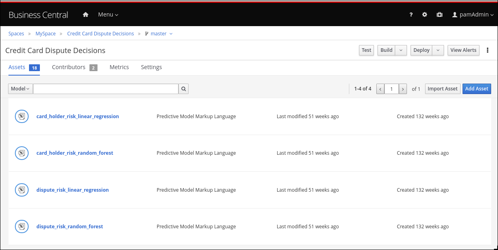
Linear regression is one of the most widely used algorithms in both statistics and machine learning. It uses a linear equation that combines a set of numeric input and output values. Random forests use many decision trees as inputs to create prediction models.
Adding PMML files
Michelle imports the dispute_risk_linear_regression PMML file into her project. She adds the Cardholder Risk Model business model knowledge node to the DMN model and associates the dispute_risk_linear_regression PMML file with the node. Red Hat Process Automation Manager analyzes the PMML file and adds input parameters to the node. Michelle associates the Cardholder Risk Model node with the Dispute Risk Rating.
Michelle then adds the credit_card_holder_risk_linear_regression PMML model to the projects, creates the Dispute Risk Model mode DMN file, creates and associates the credit_card_holder_risk_linear_regression PMML file with the node. Red Hat Process Automation Manager analyzes the PMML file and adds input parameters to the node.
The following image is Michelle’s completed DMN model, which replaces analytical decision tables with the predictive models from the PMML files:

Michelle now returns to the fraudDispute BPMN model and updates the model with the PMML files that she added. She then redeploys the project.
Increased score precision
In this new scenario where Michelle has redeployed the Fortress Bank project with PMML models, we can see what happens when Joe logs in to his Fortress Bank account and reports the same transaction as incorrect. In Business Central, Michelle navigates to the Process Instances window and she sees Joe’s new dispute instance. In the Process Variables tab, Michelle reviews the values of cardHolderRiskRating and the disputeRiskRating. They have changed because the model is now using the PMML files. This give a much more precise prediction of risk by making use of machine learning models based on historical data. At the same time, the policy of the bank is still enforced by the DMN decision model: the risk predictor is below a specified threshold which allows for this dispute to be processed automatically.
Monitoring
Finally, Fortress Bank uses Prometheus to gather metrics about credit card disputes and Grafana to visualize those metrics in real time. The upper section of the monitor shows the business metrics key performance indicators (KPIs) and the lower section shows the operational metrics KPIs.

90.1. Using a PMML model with a DMN model to resolve credit card transaction disputes
This example shows you how to use Red Hat Process Automation Manager to create a DMN model that uses a PMML model to resolve credit card transaction disputes. When a customer disputes a credit card transaction, the system decides whether or not to process the transaction automatically.
Prerequisites
Red Hat Process Automation Manager is available and the following JAR file has been added to the
~/kie-server.war/WEB-INF/liband~/business-central.war/WEB-INF/libdirectories in your Red Hat Process Automation Manager installation:kie-dmn-jpmml-7.48.0.Final-redhat-00002.jarThis file is available in the Red Hat Decision Manager 7.10 Maven Repository distribution available from the Software Downloads page in the Red Hat Customer Portal (login required). The group ID, artifact ID, and version (GAV) identifier of this file is
org.kie:kie-dmn-jpmml:7.48.0.Final-redhat-00002. For more information, see the "Including PMML models within a DMN file in Business Central" section of Designing a decision service using DMN models.- JPMML Evaluator 1.5.1 JAR file
JPMML Evaluator Extensions 1.5.1 JAR file
These files are required to enable JPMML evaluation in KIE Server and Business Central.
ImportantRed Hat supports integration with the Java Evaluator API for PMML (JPMML) for PMML execution in Red Hat Process Automation Manager. However, Red Hat does not support the JPMML libraries directly. If you include JPMML libraries in your Red Hat Process Automation Manager distribution, see the Openscoring.io licensing terms for JPMML.
Procedure
-
Create the
dtree_risk_predictor.pmmlfile with the contents of the XML example in Section 90.2, “Credit card transaction dispute exercise PMML file”. In Business Central, create the Credit Card Dispute project:
- Navigate to Menu → Design → Projects.
- Click Add Project.
-
In the Name box, enter
Credit Card Disputeand click Add.
In the Assets window of the Credit Card Dispute project, import the
dtree_risk_predictor.pmmlfile into thecompackage:- Click Import Asset.
In the Create new Import Asset dialog, enter
dtree_risk_predictorin the Name box, select com from the Package menu, select thedtree_risk_predictor.pmmlfile, and click OK.The content of the
dtree_risk_predictor.pmmlfile appears in the Overview window.
Create the Dispute Transaction Check DMN model in com package:
- To return to the project window, click Credit Card Dispute in the breadcrumb trail.
- Click Add Asset.
- Click DMN in the asset library.
In the Create new DMN dialog, enter enter
Dispute Transaction Checkin the Name box, select com from the Package menu, and click OK.The DMN editor opens with the Dispute Transaction Check DMN model.
Create the tTransaction custom data type:

- Click the Data Types tab.
- Click Add a custom Data Type.
-
In the Name box, enter
tTransaction. - Select Structure from the Type menu.
To create the data type, click the check mark.
The tTransaction custom data type appears with one variable row.
-
In the Name field of the variable row, enter
transaction_amount, select Number from the Type menu, and then click the check mark. -
To add a new variable row, click the plus symbol on the
transaction_amountrow. A new row appears. -
In the Name field, enter
cardholder_identifier, select Number from the Type menu, and then click the check mark.
Add the Risk Predictor
dtree_risk_predictor.pmmlmodel: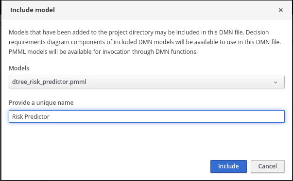
- In the Included Models window of the DMN editor, click Include Model.
-
In the Include Model dialog, select
dtree_risk_predictor.pmmlfrom the Models menu. -
Enter
Risk Predictorin the Provide a unique name box and click OK.
Create the Risk Predictor Business Knowledge Model (BKM) node with the Risk Predictor and DecisionTreeClassifier model:

In the Model window of the DMN editor, drag a BKM node to the DMN editor palette.
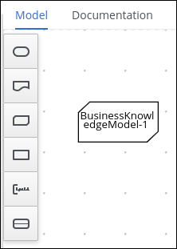
- Rename the node Risk Predictor.
Click the edit icon located below the trash can icon on the left side of the node.

- Click F in the Risk Predictor box and select PMML from the Select Function Kind menu. The F changes to P.
- Double-click the First select PMML document box and select Risk Predictor.
- Double-click the Second select PMML model box and select DecisionTreeClassifier.
- To return to the DMN editor palette, click Back to Dispute Transaction Check.
Create the Transaction input data node with the data type tTransaction:
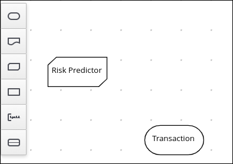
In the Model window of the DMN editor, drag an input data node to the DMN editor palette.

- Rename the node Transaction.
- Select the node then click the properties pencil icon in the upper-right corner of the window.
- In the Properties panel, select Information Item → Data type → tTransaction then close the panel.
Create the Transaction Dispute Risk decision node and add the Transaction node for data input and the Risk Predictor node for the function:
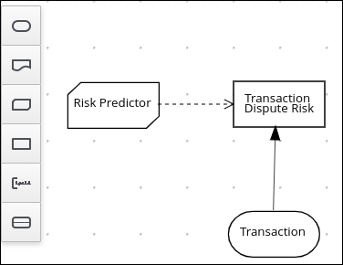
In the Model window of the DMN editor, drag a decision data node to the DMN editor palette.
- Rename the node Transaction Dispute Risk.
- Select the Risk Predictor node and drag the arrow from the top right of the node to the Transaction Dispute Risk node.
- Select the Transaction node and drag the arrow from the bottom right of the node to the Transaction Dispute Risk node.
In the Transaction Dispute Risk node, create the Risk predictor invocation function:
- Select the Transaction Dispute Risk node and click the edit icon on the left side of the node.
- Click Select expression and select Invocation from the menu.
- Enter Risk Predictor in the Enter function box.
- Click P1.
-
In the Edit Parameter dialog, enter
amountin the Name box, select number from the Data Type menu, and press the Enter key. - Click Select expression and select Literal expression from the menu.
-
Enter
Transaction.transaction_amountin the box next to amount. - Right-click on 1 and select Insert below. The Edit Parameter dialog opens.
- Enter holder_index in the Name box, select number from the Data Type menu, and press the Enter key.
- Click Select expression on row 2 and select Literal expression from the menu.
-
Enter
Transaction.cardholder_identifierin the box next to amount.
Create the Risk Threshold input data node with the data type number:
- In the Model window of the DMN editor, drag an input data node to the DMN editor palette.
- Rename the node Risk Threshold.
- Select the node then click the properties pencil icon in the upper-right corner of the window.
- In the Properties panel, select Information Item → Data type → number then close the panel.
Create the Can be automatically processed? decision node that takes as inputs the Transaction Dispute Risk and the Risk threshold nodes:
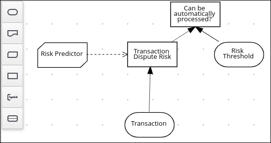
- Drag a decision node to the DMN editor palette and rename it Can be automatically processed?.
- Select the node, then click the edit icon on the upper-left side of the node.
- Click Select expression and then select Literal expression from the menu.
-
Enter
Transaction Dispute Risk.predicted_dispute_risk < Risk Thresholdin the box. - Select the Transaction Dispute Risk node and drag the arrow in the top left of the node to the Can be automatically processed? node.
- Select the Risk Threshold node and drag the arrow from the bottom left of the node to the Can be automatically processed? node.
Save the model and build the project:
- In the DMN editor, click Save.
- If necessary, correct any errors that appear.
- To return to the project window, click Credit Card Dispute in the breadcrumb trail.
- Click Build. The project should successfully build.
Add and run a test scenario:

- Click Add Asset.
- Select Test Scenario.
-
In the Create new Test Scenario dialog, enter the name
Test Dispute Transaction Check, select com from the Package menu, and select DMN. - Select Dispute Transaction Check.dmn from the Choose a DMN asset menu and click OK. The test template builds.
Enter the following values and click Save:
NoteDo not add a value to the Transaction Dispute Risk column. This value is determined by the test scenario.
Table 90.1. Test scenario parameters
Description Risk Threshold cardholder_identifier transaction_amount Can be automatically processed? Risk threshold 5, automatically processed
5
1234
1000
true
Risk threshold 4, amount = 1000, not processed
4
1234
1000
false
Risk threshold 4, amount = 180, automatically processed
4
1234
180
true
Risk threshold 1, amount = 1, not processed
1
1234
1
false
- To run the test, click the Play button, to the right of Validate. The results appear in the Test Report panel on the right of the screen.
90.2. Credit card transaction dispute exercise PMML file
Use the following XML content to create the dtree_risk_predictor.pmml file in the Section 90.1, “Using a PMML model with a DMN model to resolve credit card transaction disputes” exercise.
<?xml version="1.0" encoding="UTF-8"?>
<PMML xmlns="http://www.dmg.org/PMML-4_2" xmlns:xsi="http://www.w3.org/2001/XMLSchema-instance" version="4.2" xsi:schemaLocation="http://www.dmg.org/PMML-4_2 http://www.dmg.org/v4-2-1/pmml-4-2.xsd">
<Header copyright="Copyright (c) 2018 Software AG" description="Default Description">
<Application name="Nyoka" version="4.3.0" />
<Timestamp>2020-10-09 14:27:26.622723</Timestamp>
</Header>
<DataDictionary numberOfFields="3">
<DataField name="amount" optype="continuous" dataType="double" />
<DataField name="holder_index" optype="continuous" dataType="double" />
<DataField name="dispute_risk" optype="categorical" dataType="integer">
<Value value="1" />
<Value value="2" />
<Value value="3" />
<Value value="4" />
<Value value="5" />
</DataField>
</DataDictionary>
<TreeModel modelName="DecisionTreeClassifier" functionName="classification" missingValuePenalty="1.0">
<MiningSchema>
<MiningField name="amount" usageType="active" optype="continuous" />
<MiningField name="holder_index" usageType="active" optype="continuous" />
<MiningField name="dispute_risk" usageType="target" optype="categorical" />
</MiningSchema>
<Output>
<OutputField name="probability_1" optype="continuous" dataType="double" feature="probability" value="1" />
<OutputField name="probability_2" optype="continuous" dataType="double" feature="probability" value="2" />
<OutputField name="probability_3" optype="continuous" dataType="double" feature="probability" value="3" />
<OutputField name="probability_4" optype="continuous" dataType="double" feature="probability" value="4" />
<OutputField name="probability_5" optype="continuous" dataType="double" feature="probability" value="5" />
<OutputField name="predicted_dispute_risk" optype="categorical" dataType="integer" feature="predictedValue" />
</Output>
<Node id="0" recordCount="600.0">
<True />
<Node id="1" recordCount="200.0">
<SimplePredicate field="amount" operator="lessOrEqual" value="99.94000244140625" />
<Node id="2" score="2" recordCount="55.0">
<SimplePredicate field="holder_index" operator="lessOrEqual" value="0.5" />
<ScoreDistribution value="1" recordCount="0.0" confidence="0.0" />
<ScoreDistribution value="2" recordCount="55.0" confidence="1.0" />
<ScoreDistribution value="3" recordCount="0.0" confidence="0.0" />
<ScoreDistribution value="4" recordCount="0.0" confidence="0.0" />
<ScoreDistribution value="5" recordCount="0.0" confidence="0.0" />
</Node>
<Node id="3" score="1" recordCount="145.0">
<SimplePredicate field="holder_index" operator="greaterThan" value="0.5" />
<ScoreDistribution value="1" recordCount="145.0" confidence="1.0" />
<ScoreDistribution value="2" recordCount="0.0" confidence="0.0" />
<ScoreDistribution value="3" recordCount="0.0" confidence="0.0" />
<ScoreDistribution value="4" recordCount="0.0" confidence="0.0" />
<ScoreDistribution value="5" recordCount="0.0" confidence="0.0" />
</Node>
</Node>
<Node id="4" recordCount="400.0">
<SimplePredicate field="amount" operator="greaterThan" value="99.94000244140625" />
<Node id="5" recordCount="105.0">
<SimplePredicate field="holder_index" operator="lessOrEqual" value="0.5" />
<Node id="6" score="3" recordCount="54.0">
<SimplePredicate field="amount" operator="lessOrEqual" value="150.4550018310547" />
<ScoreDistribution value="1" recordCount="0.0" confidence="0.0" />
<ScoreDistribution value="2" recordCount="0.0" confidence="0.0" />
<ScoreDistribution value="3" recordCount="54.0" confidence="1.0" />
<ScoreDistribution value="4" recordCount="0.0" confidence="0.0" />
<ScoreDistribution value="5" recordCount="0.0" confidence="0.0" />
</Node>
<Node id="7" recordCount="51.0">
<SimplePredicate field="amount" operator="greaterThan" value="150.4550018310547" />
<Node id="8" recordCount="40.0">
<SimplePredicate field="amount" operator="lessOrEqual" value="200.00499725341797" />
<Node id="9" recordCount="36.0">
<SimplePredicate field="amount" operator="lessOrEqual" value="195.4949951171875" />
<Node id="10" recordCount="2.0">
<SimplePredicate field="amount" operator="lessOrEqual" value="152.2050018310547" />
<Node id="11" score="4" recordCount="1.0">
<SimplePredicate field="amount" operator="lessOrEqual" value="151.31500244140625" />
<ScoreDistribution value="1" recordCount="0.0" confidence="0.0" />
<ScoreDistribution value="2" recordCount="0.0" confidence="0.0" />
<ScoreDistribution value="3" recordCount="0.0" confidence="0.0" />
<ScoreDistribution value="4" recordCount="1.0" confidence="1.0" />
<ScoreDistribution value="5" recordCount="0.0" confidence="0.0" />
</Node>
<Node id="12" score="3" recordCount="1.0">
<SimplePredicate field="amount" operator="greaterThan" value="151.31500244140625" />
<ScoreDistribution value="1" recordCount="0.0" confidence="0.0" />
<ScoreDistribution value="2" recordCount="0.0" confidence="0.0" />
<ScoreDistribution value="3" recordCount="1.0" confidence="1.0" />
<ScoreDistribution value="4" recordCount="0.0" confidence="0.0" />
<ScoreDistribution value="5" recordCount="0.0" confidence="0.0" />
</Node>
</Node>
<Node id="13" recordCount="34.0">
<SimplePredicate field="amount" operator="greaterThan" value="152.2050018310547" />
<Node id="14" recordCount="20.0">
<SimplePredicate field="amount" operator="lessOrEqual" value="176.5050048828125" />
<Node id="15" recordCount="19.0">
<SimplePredicate field="amount" operator="lessOrEqual" value="176.06500244140625" />
<Node id="16" score="4" recordCount="9.0">
<SimplePredicate field="amount" operator="lessOrEqual" value="166.6449966430664" />
<ScoreDistribution value="1" recordCount="0.0" confidence="0.0" />
<ScoreDistribution value="2" recordCount="0.0" confidence="0.0" />
<ScoreDistribution value="3" recordCount="0.0" confidence="0.0" />
<ScoreDistribution value="4" recordCount="9.0" confidence="1.0" />
<ScoreDistribution value="5" recordCount="0.0" confidence="0.0" />
</Node>
<Node id="17" recordCount="10.0">
<SimplePredicate field="amount" operator="greaterThan" value="166.6449966430664" />
<Node id="18" score="3" recordCount="1.0">
<SimplePredicate field="amount" operator="lessOrEqual" value="167.97999572753906" />
<ScoreDistribution value="1" recordCount="0.0" confidence="0.0" />
<ScoreDistribution value="2" recordCount="0.0" confidence="0.0" />
<ScoreDistribution value="3" recordCount="1.0" confidence="1.0" />
<ScoreDistribution value="4" recordCount="0.0" confidence="0.0" />
<ScoreDistribution value="5" recordCount="0.0" confidence="0.0" />
</Node>
<Node id="19" score="4" recordCount="9.0">
<SimplePredicate field="amount" operator="greaterThan" value="167.97999572753906" />
<ScoreDistribution value="1" recordCount="0.0" confidence="0.0" />
<ScoreDistribution value="2" recordCount="0.0" confidence="0.0" />
<ScoreDistribution value="3" recordCount="0.0" confidence="0.0" />
<ScoreDistribution value="4" recordCount="9.0" confidence="1.0" />
<ScoreDistribution value="5" recordCount="0.0" confidence="0.0" />
</Node>
</Node>
</Node>
<Node id="20" score="3" recordCount="1.0">
<SimplePredicate field="amount" operator="greaterThan" value="176.06500244140625" />
<ScoreDistribution value="1" recordCount="0.0" confidence="0.0" />
<ScoreDistribution value="2" recordCount="0.0" confidence="0.0" />
<ScoreDistribution value="3" recordCount="1.0" confidence="1.0" />
<ScoreDistribution value="4" recordCount="0.0" confidence="0.0" />
<ScoreDistribution value="5" recordCount="0.0" confidence="0.0" />
</Node>
</Node>
<Node id="21" score="4" recordCount="14.0">
<SimplePredicate field="amount" operator="greaterThan" value="176.5050048828125" />
<ScoreDistribution value="1" recordCount="0.0" confidence="0.0" />
<ScoreDistribution value="2" recordCount="0.0" confidence="0.0" />
<ScoreDistribution value="3" recordCount="0.0" confidence="0.0" />
<ScoreDistribution value="4" recordCount="14.0" confidence="1.0" />
<ScoreDistribution value="5" recordCount="0.0" confidence="0.0" />
</Node>
</Node>
</Node>
<Node id="22" recordCount="4.0">
<SimplePredicate field="amount" operator="greaterThan" value="195.4949951171875" />
<Node id="23" score="3" recordCount="1.0">
<SimplePredicate field="amount" operator="lessOrEqual" value="195.76499938964844" />
<ScoreDistribution value="1" recordCount="0.0" confidence="0.0" />
<ScoreDistribution value="2" recordCount="0.0" confidence="0.0" />
<ScoreDistribution value="3" recordCount="1.0" confidence="1.0" />
<ScoreDistribution value="4" recordCount="0.0" confidence="0.0" />
<ScoreDistribution value="5" recordCount="0.0" confidence="0.0" />
</Node>
<Node id="24" recordCount="3.0">
<SimplePredicate field="amount" operator="greaterThan" value="195.76499938964844" />
<Node id="25" score="4" recordCount="1.0">
<SimplePredicate field="amount" operator="lessOrEqual" value="196.74500274658203" />
<ScoreDistribution value="1" recordCount="0.0" confidence="0.0" />
<ScoreDistribution value="2" recordCount="0.0" confidence="0.0" />
<ScoreDistribution value="3" recordCount="0.0" confidence="0.0" />
<ScoreDistribution value="4" recordCount="1.0" confidence="1.0" />
<ScoreDistribution value="5" recordCount="0.0" confidence="0.0" />
</Node>
<Node id="26" recordCount="2.0">
<SimplePredicate field="amount" operator="greaterThan" value="196.74500274658203" />
<Node id="27" score="3" recordCount="1.0">
<SimplePredicate field="amount" operator="lessOrEqual" value="197.5800018310547" />
<ScoreDistribution value="1" recordCount="0.0" confidence="0.0" />
<ScoreDistribution value="2" recordCount="0.0" confidence="0.0" />
<ScoreDistribution value="3" recordCount="1.0" confidence="1.0" />
<ScoreDistribution value="4" recordCount="0.0" confidence="0.0" />
<ScoreDistribution value="5" recordCount="0.0" confidence="0.0" />
</Node>
<Node id="28" score="4" recordCount="1.0">
<SimplePredicate field="amount" operator="greaterThan" value="197.5800018310547" />
<ScoreDistribution value="1" recordCount="0.0" confidence="0.0" />
<ScoreDistribution value="2" recordCount="0.0" confidence="0.0" />
<ScoreDistribution value="3" recordCount="0.0" confidence="0.0" />
<ScoreDistribution value="4" recordCount="1.0" confidence="1.0" />
<ScoreDistribution value="5" recordCount="0.0" confidence="0.0" />
</Node>
</Node>
</Node>
</Node>
</Node>
<Node id="29" score="5" recordCount="11.0">
<SimplePredicate field="amount" operator="greaterThan" value="200.00499725341797" />
<ScoreDistribution value="1" recordCount="0.0" confidence="0.0" />
<ScoreDistribution value="2" recordCount="0.0" confidence="0.0" />
<ScoreDistribution value="3" recordCount="0.0" confidence="0.0" />
<ScoreDistribution value="4" recordCount="0.0" confidence="0.0" />
<ScoreDistribution value="5" recordCount="11.0" confidence="1.0" />
</Node>
</Node>
</Node>
<Node id="30" recordCount="295.0">
<SimplePredicate field="holder_index" operator="greaterThan" value="0.5" />
<Node id="31" score="2" recordCount="170.0">
<SimplePredicate field="amount" operator="lessOrEqual" value="150.93499755859375" />
<ScoreDistribution value="1" recordCount="0.0" confidence="0.0" />
<ScoreDistribution value="2" recordCount="170.0" confidence="1.0" />
<ScoreDistribution value="3" recordCount="0.0" confidence="0.0" />
<ScoreDistribution value="4" recordCount="0.0" confidence="0.0" />
<ScoreDistribution value="5" recordCount="0.0" confidence="0.0" />
</Node>
<Node id="32" recordCount="125.0">
<SimplePredicate field="amount" operator="greaterThan" value="150.93499755859375" />
<Node id="33" recordCount="80.0">
<SimplePredicate field="holder_index" operator="lessOrEqual" value="2.5" />
<Node id="34" recordCount="66.0">
<SimplePredicate field="amount" operator="lessOrEqual" value="199.13500213623047" />
<Node id="35" score="3" recordCount="10.0">
<SimplePredicate field="amount" operator="lessOrEqual" value="155.56999969482422" />
<ScoreDistribution value="1" recordCount="0.0" confidence="0.0" />
<ScoreDistribution value="2" recordCount="0.0" confidence="0.0" />
<ScoreDistribution value="3" recordCount="10.0" confidence="1.0" />
<ScoreDistribution value="4" recordCount="0.0" confidence="0.0" />
<ScoreDistribution value="5" recordCount="0.0" confidence="0.0" />
</Node>
<Node id="36" recordCount="56.0">
<SimplePredicate field="amount" operator="greaterThan" value="155.56999969482422" />
<Node id="37" score="2" recordCount="1.0">
<SimplePredicate field="amount" operator="lessOrEqual" value="155.9000015258789" />
<ScoreDistribution value="1" recordCount="0.0" confidence="0.0" />
<ScoreDistribution value="2" recordCount="1.0" confidence="1.0" />
<ScoreDistribution value="3" recordCount="0.0" confidence="0.0" />
<ScoreDistribution value="4" recordCount="0.0" confidence="0.0" />
<ScoreDistribution value="5" recordCount="0.0" confidence="0.0" />
</Node>
<Node id="38" recordCount="55.0">
<SimplePredicate field="amount" operator="greaterThan" value="155.9000015258789" />
<Node id="39" recordCount="31.0">
<SimplePredicate field="amount" operator="lessOrEqual" value="176.3699951171875" />
<Node id="40" recordCount="30.0">
<SimplePredicate field="amount" operator="lessOrEqual" value="175.72000122070312" />
<Node id="41" recordCount="19.0">
<SimplePredicate field="amount" operator="lessOrEqual" value="168.06999969482422" />
<Node id="42" recordCount="6.0">
<SimplePredicate field="amount" operator="lessOrEqual" value="158.125" />
<Node id="43" score="3" recordCount="5.0">
<SimplePredicate field="amount" operator="lessOrEqual" value="157.85499572753906" />
<ScoreDistribution value="1" recordCount="0.0" confidence="0.0" />
<ScoreDistribution value="2" recordCount="0.0" confidence="0.0" />
<ScoreDistribution value="3" recordCount="5.0" confidence="1.0" />
<ScoreDistribution value="4" recordCount="0.0" confidence="0.0" />
<ScoreDistribution value="5" recordCount="0.0" confidence="0.0" />
</Node>
<Node id="44" score="2" recordCount="1.0">
<SimplePredicate field="amount" operator="greaterThan" value="157.85499572753906" />
<ScoreDistribution value="1" recordCount="0.0" confidence="0.0" />
<ScoreDistribution value="2" recordCount="1.0" confidence="1.0" />
<ScoreDistribution value="3" recordCount="0.0" confidence="0.0" />
<ScoreDistribution value="4" recordCount="0.0" confidence="0.0" />
<ScoreDistribution value="5" recordCount="0.0" confidence="0.0" />
</Node>
</Node>
<Node id="45" score="3" recordCount="13.0">
<SimplePredicate field="amount" operator="greaterThan" value="158.125" />
<ScoreDistribution value="1" recordCount="0.0" confidence="0.0" />
<ScoreDistribution value="2" recordCount="0.0" confidence="0.0" />
<ScoreDistribution value="3" recordCount="13.0" confidence="1.0" />
<ScoreDistribution value="4" recordCount="0.0" confidence="0.0" />
<ScoreDistribution value="5" recordCount="0.0" confidence="0.0" />
</Node>
</Node>
<Node id="46" recordCount="11.0">
<SimplePredicate field="amount" operator="greaterThan" value="168.06999969482422" />
<Node id="47" score="2" recordCount="1.0">
<SimplePredicate field="amount" operator="lessOrEqual" value="168.69499969482422" />
<ScoreDistribution value="1" recordCount="0.0" confidence="0.0" />
<ScoreDistribution value="2" recordCount="1.0" confidence="1.0" />
<ScoreDistribution value="3" recordCount="0.0" confidence="0.0" />
<ScoreDistribution value="4" recordCount="0.0" confidence="0.0" />
<ScoreDistribution value="5" recordCount="0.0" confidence="0.0" />
</Node>
<Node id="48" recordCount="10.0">
<SimplePredicate field="amount" operator="greaterThan" value="168.69499969482422" />
<Node id="49" recordCount="4.0">
<SimplePredicate field="holder_index" operator="lessOrEqual" value="1.5" />
<Node id="50" score="2" recordCount="1.0">
<SimplePredicate field="amount" operator="lessOrEqual" value="172.0250015258789" />
<ScoreDistribution value="1" recordCount="0.0" confidence="0.0" />
<ScoreDistribution value="2" recordCount="1.0" confidence="1.0" />
<ScoreDistribution value="3" recordCount="0.0" confidence="0.0" />
<ScoreDistribution value="4" recordCount="0.0" confidence="0.0" />
<ScoreDistribution value="5" recordCount="0.0" confidence="0.0" />
</Node>
<Node id="51" score="3" recordCount="3.0">
<SimplePredicate field="amount" operator="greaterThan" value="172.0250015258789" />
<ScoreDistribution value="1" recordCount="0.0" confidence="0.0" />
<ScoreDistribution value="2" recordCount="0.0" confidence="0.0" />
<ScoreDistribution value="3" recordCount="3.0" confidence="1.0" />
<ScoreDistribution value="4" recordCount="0.0" confidence="0.0" />
<ScoreDistribution value="5" recordCount="0.0" confidence="0.0" />
</Node>
</Node>
<Node id="52" score="3" recordCount="6.0">
<SimplePredicate field="holder_index" operator="greaterThan" value="1.5" />
<ScoreDistribution value="1" recordCount="0.0" confidence="0.0" />
<ScoreDistribution value="2" recordCount="0.0" confidence="0.0" />
<ScoreDistribution value="3" recordCount="6.0" confidence="1.0" />
<ScoreDistribution value="4" recordCount="0.0" confidence="0.0" />
<ScoreDistribution value="5" recordCount="0.0" confidence="0.0" />
</Node>
</Node>
</Node>
</Node>
<Node id="53" score="2" recordCount="1.0">
<SimplePredicate field="amount" operator="greaterThan" value="175.72000122070312" />
<ScoreDistribution value="1" recordCount="0.0" confidence="0.0" />
<ScoreDistribution value="2" recordCount="1.0" confidence="1.0" />
<ScoreDistribution value="3" recordCount="0.0" confidence="0.0" />
<ScoreDistribution value="4" recordCount="0.0" confidence="0.0" />
<ScoreDistribution value="5" recordCount="0.0" confidence="0.0" />
</Node>
</Node>
<Node id="54" recordCount="24.0">
<SimplePredicate field="amount" operator="greaterThan" value="176.3699951171875" />
<Node id="55" score="3" recordCount="16.0">
<SimplePredicate field="amount" operator="lessOrEqual" value="192.0999984741211" />
<ScoreDistribution value="1" recordCount="0.0" confidence="0.0" />
<ScoreDistribution value="2" recordCount="0.0" confidence="0.0" />
<ScoreDistribution value="3" recordCount="16.0" confidence="1.0" />
<ScoreDistribution value="4" recordCount="0.0" confidence="0.0" />
<ScoreDistribution value="5" recordCount="0.0" confidence="0.0" />
</Node>
<Node id="56" recordCount="8.0">
<SimplePredicate field="amount" operator="greaterThan" value="192.0999984741211" />
<Node id="57" score="2" recordCount="1.0">
<SimplePredicate field="amount" operator="lessOrEqual" value="192.75499725341797" />
<ScoreDistribution value="1" recordCount="0.0" confidence="0.0" />
<ScoreDistribution value="2" recordCount="1.0" confidence="1.0" />
<ScoreDistribution value="3" recordCount="0.0" confidence="0.0" />
<ScoreDistribution value="4" recordCount="0.0" confidence="0.0" />
<ScoreDistribution value="5" recordCount="0.0" confidence="0.0" />
</Node>
<Node id="58" score="3" recordCount="7.0">
<SimplePredicate field="amount" operator="greaterThan" value="192.75499725341797" />
<ScoreDistribution value="1" recordCount="0.0" confidence="0.0" />
<ScoreDistribution value="2" recordCount="0.0" confidence="0.0" />
<ScoreDistribution value="3" recordCount="7.0" confidence="1.0" />
<ScoreDistribution value="4" recordCount="0.0" confidence="0.0" />
<ScoreDistribution value="5" recordCount="0.0" confidence="0.0" />
</Node>
</Node>
</Node>
</Node>
</Node>
</Node>
<Node id="59" recordCount="14.0">
<SimplePredicate field="amount" operator="greaterThan" value="199.13500213623047" />
<Node id="60" score="5" recordCount="10.0">
<SimplePredicate field="holder_index" operator="lessOrEqual" value="1.5" />
<ScoreDistribution value="1" recordCount="0.0" confidence="0.0" />
<ScoreDistribution value="2" recordCount="0.0" confidence="0.0" />
<ScoreDistribution value="3" recordCount="0.0" confidence="0.0" />
<ScoreDistribution value="4" recordCount="0.0" confidence="0.0" />
<ScoreDistribution value="5" recordCount="10.0" confidence="1.0" />
</Node>
<Node id="61" score="4" recordCount="4.0">
<SimplePredicate field="holder_index" operator="greaterThan" value="1.5" />
<ScoreDistribution value="1" recordCount="0.0" confidence="0.0" />
<ScoreDistribution value="2" recordCount="0.0" confidence="0.0" />
<ScoreDistribution value="3" recordCount="0.0" confidence="0.0" />
<ScoreDistribution value="4" recordCount="4.0" confidence="1.0" />
<ScoreDistribution value="5" recordCount="0.0" confidence="0.0" />
</Node>
</Node>
</Node>
<Node id="62" recordCount="45.0">
<SimplePredicate field="holder_index" operator="greaterThan" value="2.5" />
<Node id="63" score="2" recordCount="37.0">
<SimplePredicate field="amount" operator="lessOrEqual" value="199.13999938964844" />
<ScoreDistribution value="1" recordCount="0.0" confidence="0.0" />
<ScoreDistribution value="2" recordCount="37.0" confidence="1.0" />
<ScoreDistribution value="3" recordCount="0.0" confidence="0.0" />
<ScoreDistribution value="4" recordCount="0.0" confidence="0.0" />
<ScoreDistribution value="5" recordCount="0.0" confidence="0.0" />
</Node>
<Node id="64" score="4" recordCount="8.0">
<SimplePredicate field="amount" operator="greaterThan" value="199.13999938964844" />
<ScoreDistribution value="1" recordCount="0.0" confidence="0.0" />
<ScoreDistribution value="2" recordCount="0.0" confidence="0.0" />
<ScoreDistribution value="3" recordCount="0.0" confidence="0.0" />
<ScoreDistribution value="4" recordCount="8.0" confidence="1.0" />
<ScoreDistribution value="5" recordCount="0.0" confidence="0.0" />
</Node>
</Node>
</Node>
</Node>
</Node>
</Node>
</TreeModel>
</PMML>Chapter 91. Additional resources
Appendix A. Versioning information
Documentation last updated on Monday, January 18, 2021.
Appendix B. Contact information
Red Hat Process Automation Manager documentation team: brms-docs@redhat.com